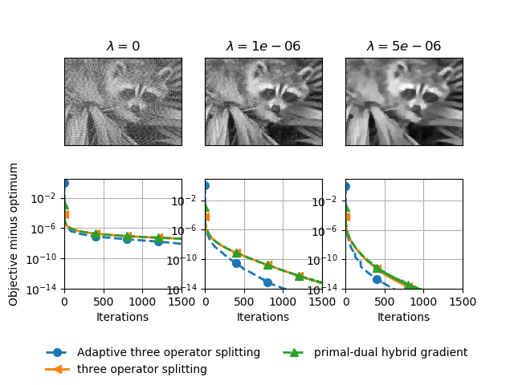

Note
Click here to download the full example code
Total variation regularization¶
Comparison of solvers with total variation regularization.
Out:
Iteration 0, beta 0
0%| | 0/2000 [00:00<?, ?it/s]
TOS: 0%| | 0/2000 [00:00<?, ?it/s]
TOS: 0%| | 0/2000 [00:00<?, ?it/s, step_size=1.25e+5, tol=0.00527]
TOS: 0%| | 0/2000 [00:00<?, ?it/s, step_size=1.27e+5, tol=0.00385]
TOS: 0%| | 0/2000 [00:00<?, ?it/s, step_size=1.3e+5, tol=0.000659]
TOS: 0%| | 0/2000 [00:00<?, ?it/s, step_size=1.33e+5, tol=0.000115]
TOS: 0%| | 0/2000 [00:00<?, ?it/s, step_size=1.35e+5, tol=3.06e-5]
TOS: 0%| | 0/2000 [00:00<?, ?it/s, step_size=1.38e+5, tol=1.45e-5]
TOS: 0%| | 0/2000 [00:00<?, ?it/s, step_size=1.41e+5, tol=8.54e-6]
TOS: 0%| | 0/2000 [00:00<?, ?it/s, step_size=1.43e+5, tol=5.47e-6]
TOS: 0%| | 0/2000 [00:00<?, ?it/s, step_size=1.46e+5, tol=3.72e-6]
TOS: 0%| | 0/2000 [00:00<?, ?it/s, step_size=1.49e+5, tol=2.68e-6]
TOS: 0%| | 0/2000 [00:00<?, ?it/s, step_size=1.52e+5, tol=2.04e-6]
TOS: 0%| | 0/2000 [00:00<?, ?it/s, step_size=1.55e+5, tol=1.64e-6]
TOS: 0%| | 0/2000 [00:00<?, ?it/s, step_size=1.58e+5, tol=1.38e-6]
TOS: 0%| | 0/2000 [00:00<?, ?it/s, step_size=1.62e+5, tol=1.21e-6]
TOS: 0%| | 0/2000 [00:00<?, ?it/s, step_size=1.65e+5, tol=1.09e-6]
TOS: 0%| | 0/2000 [00:00<?, ?it/s, step_size=1.68e+5, tol=1.01e-6]
TOS: 0%| | 0/2000 [00:00<?, ?it/s, step_size=1.71e+5, tol=9.44e-7]
TOS: 0%| | 0/2000 [00:00<?, ?it/s, step_size=1.75e+5, tol=8.93e-7]
TOS: 0%| | 0/2000 [00:00<?, ?it/s, step_size=1.78e+5, tol=8.5e-7]
TOS: 0%| | 0/2000 [00:00<?, ?it/s, step_size=1.82e+5, tol=8.13e-7]
TOS: 0%| | 0/2000 [00:00<?, ?it/s, step_size=1.86e+5, tol=7.8e-7]
TOS: 0%| | 0/2000 [00:00<?, ?it/s, step_size=1.89e+5, tol=7.5e-7]
TOS: 0%| | 0/2000 [00:00<?, ?it/s, step_size=1.93e+5, tol=7.21e-7]
TOS: 0%| | 0/2000 [00:00<?, ?it/s, step_size=1.97e+5, tol=6.95e-7]
TOS: 0%| | 0/2000 [00:00<?, ?it/s, step_size=2.01e+5, tol=6.69e-7]
TOS: 1%|1 | 25/2000 [00:00<00:08, 245.11it/s, step_size=2.01e+5, tol=6.69e-7]
TOS: 1%|1 | 25/2000 [00:00<00:08, 245.11it/s, step_size=2.05e+5, tol=6.45e-7]
TOS: 1%|1 | 25/2000 [00:00<00:08, 245.11it/s, step_size=2.09e+5, tol=6.22e-7]
TOS: 1%|1 | 25/2000 [00:00<00:08, 245.11it/s, step_size=2.13e+5, tol=6e-7]
TOS: 1%|1 | 25/2000 [00:00<00:08, 245.11it/s, step_size=2.17e+5, tol=5.79e-7]
TOS: 1%|1 | 25/2000 [00:00<00:08, 245.11it/s, step_size=2.22e+5, tol=5.59e-7]
TOS: 1%|1 | 25/2000 [00:00<00:08, 245.11it/s, step_size=2.26e+5, tol=5.39e-7]
TOS: 1%|1 | 25/2000 [00:00<00:08, 245.11it/s, step_size=2.31e+5, tol=5.2e-7]
TOS: 1%|1 | 25/2000 [00:00<00:08, 245.11it/s, step_size=2.35e+5, tol=5.02e-7]
TOS: 1%|1 | 25/2000 [00:00<00:08, 245.11it/s, step_size=2.4e+5, tol=4.84e-7]
TOS: 1%|1 | 25/2000 [00:00<00:08, 245.11it/s, step_size=2.45e+5, tol=4.67e-7]
TOS: 1%|1 | 25/2000 [00:00<00:08, 245.11it/s, step_size=2.5e+5, tol=4.51e-7]
TOS: 1%|1 | 25/2000 [00:00<00:08, 245.11it/s, step_size=2.55e+5, tol=4.35e-7]
TOS: 1%|1 | 25/2000 [00:00<00:08, 245.11it/s, step_size=2.6e+5, tol=4.2e-7]
TOS: 1%|1 | 25/2000 [00:00<00:08, 245.11it/s, step_size=2.65e+5, tol=4.06e-7]
TOS: 1%|1 | 25/2000 [00:00<00:08, 245.11it/s, step_size=2.7e+5, tol=3.91e-7]
TOS: 1%|1 | 25/2000 [00:00<00:08, 245.11it/s, step_size=2.76e+5, tol=3.78e-7]
TOS: 1%|1 | 25/2000 [00:00<00:08, 245.11it/s, step_size=2.81e+5, tol=3.65e-7]
TOS: 1%|1 | 25/2000 [00:00<00:08, 245.11it/s, step_size=2.87e+5, tol=3.52e-7]
TOS: 1%|1 | 25/2000 [00:00<00:08, 245.11it/s, step_size=2.93e+5, tol=3.4e-7]
TOS: 1%|1 | 25/2000 [00:00<00:08, 245.11it/s, step_size=2.98e+5, tol=3.28e-7]
TOS: 1%|1 | 25/2000 [00:00<00:08, 245.11it/s, step_size=3.04e+5, tol=3.17e-7]
TOS: 1%|1 | 25/2000 [00:00<00:08, 245.11it/s, step_size=3.11e+5, tol=3.06e-7]
TOS: 1%|1 | 25/2000 [00:00<00:08, 245.11it/s, step_size=3.17e+5, tol=2.95e-7]
TOS: 1%|1 | 25/2000 [00:00<00:08, 245.11it/s, step_size=3.23e+5, tol=2.85e-7]
TOS: 1%|1 | 25/2000 [00:00<00:08, 245.11it/s, step_size=3.3e+5, tol=2.75e-7]
TOS: 2%|2 | 50/2000 [00:00<00:07, 244.50it/s, step_size=3.3e+5, tol=2.75e-7]
TOS: 2%|2 | 50/2000 [00:00<00:07, 244.50it/s, step_size=3.36e+5, tol=2.66e-7]
TOS: 2%|2 | 50/2000 [00:00<00:07, 244.50it/s, step_size=3.43e+5, tol=2.56e-7]
TOS: 2%|2 | 50/2000 [00:00<00:07, 244.50it/s, step_size=3.5e+5, tol=2.48e-7]
TOS: 2%|2 | 50/2000 [00:00<00:07, 244.50it/s, step_size=3.57e+5, tol=2.39e-7]
TOS: 2%|2 | 50/2000 [00:00<00:07, 244.50it/s, step_size=3.64e+5, tol=2.31e-7]
TOS: 2%|2 | 50/2000 [00:00<00:07, 244.50it/s, step_size=3.71e+5, tol=2.23e-7]
TOS: 2%|2 | 50/2000 [00:00<00:07, 244.50it/s, step_size=3.79e+5, tol=2.15e-7]
TOS: 2%|2 | 50/2000 [00:00<00:07, 244.50it/s, step_size=3.86e+5, tol=2.08e-7]
TOS: 2%|2 | 50/2000 [00:00<00:07, 244.50it/s, step_size=3.94e+5, tol=2.01e-7]
TOS: 2%|2 | 50/2000 [00:00<00:07, 244.50it/s, step_size=4.02e+5, tol=1.94e-7]
TOS: 2%|2 | 50/2000 [00:00<00:07, 244.50it/s, step_size=4.1e+5, tol=1.87e-7]
TOS: 2%|2 | 50/2000 [00:00<00:07, 244.50it/s, step_size=4.18e+5, tol=1.81e-7]
TOS: 2%|2 | 50/2000 [00:00<00:07, 244.50it/s, step_size=4.26e+5, tol=1.75e-7]
TOS: 2%|2 | 50/2000 [00:00<00:07, 244.50it/s, step_size=4.35e+5, tol=1.69e-7]
TOS: 2%|2 | 50/2000 [00:00<00:07, 244.50it/s, step_size=4.44e+5, tol=1.63e-7]
TOS: 2%|2 | 50/2000 [00:00<00:07, 244.50it/s, step_size=4.52e+5, tol=1.58e-7]
TOS: 2%|2 | 50/2000 [00:00<00:07, 244.50it/s, step_size=4.61e+5, tol=1.52e-7]
TOS: 3%|3 | 67/2000 [00:00<00:09, 214.20it/s, step_size=4.61e+5, tol=1.52e-7]
TOS: 3%|3 | 67/2000 [00:00<00:09, 214.20it/s, step_size=4.71e+5, tol=1.47e-7]
TOS: 3%|3 | 67/2000 [00:00<00:09, 214.20it/s, step_size=4.8e+5, tol=1.42e-7]
TOS: 3%|3 | 67/2000 [00:00<00:09, 214.20it/s, step_size=4.9e+5, tol=1.38e-7]
TOS: 3%|3 | 67/2000 [00:00<00:09, 214.20it/s, step_size=5e+5, tol=1.33e-7]
TOS: 3%|3 | 67/2000 [00:00<00:09, 214.20it/s, step_size=5.1e+5, tol=1.29e-7]
TOS: 3%|3 | 67/2000 [00:00<00:09, 214.20it/s, step_size=5.2e+5, tol=1.24e-7]
TOS: 3%|3 | 67/2000 [00:00<00:09, 214.20it/s, step_size=5.3e+5, tol=1.2e-7]
TOS: 3%|3 | 67/2000 [00:00<00:09, 214.20it/s, step_size=5.41e+5, tol=1.16e-7]
TOS: 3%|3 | 67/2000 [00:00<00:09, 214.20it/s, step_size=5.52e+5, tol=1.13e-7]
TOS: 3%|3 | 67/2000 [00:00<00:09, 214.20it/s, step_size=5.63e+5, tol=1.09e-7]
TOS: 3%|3 | 67/2000 [00:00<00:09, 214.20it/s, step_size=5.74e+5, tol=1.05e-7]
TOS: 3%|3 | 67/2000 [00:00<00:09, 214.20it/s, step_size=5.85e+5, tol=1.02e-7]
TOS: 3%|3 | 67/2000 [00:00<00:09, 214.20it/s, step_size=5.97e+5, tol=9.87e-8]
TOS: 3%|3 | 67/2000 [00:00<00:09, 214.20it/s, step_size=6.09e+5, tol=9.55e-8]
TOS: 3%|3 | 67/2000 [00:00<00:09, 214.20it/s, step_size=6.21e+5, tol=9.25e-8]
TOS: 4%|4 | 82/2000 [00:00<00:10, 189.42it/s, step_size=6.21e+5, tol=9.25e-8]
TOS: 4%|4 | 82/2000 [00:00<00:10, 189.42it/s, step_size=6.34e+5, tol=8.95e-8]
TOS: 4%|4 | 82/2000 [00:00<00:10, 189.42it/s, step_size=6.46e+5, tol=8.67e-8]
TOS: 4%|4 | 82/2000 [00:00<00:10, 189.42it/s, step_size=6.59e+5, tol=8.42e-8]
TOS: 4%|4 | 82/2000 [00:00<00:10, 189.42it/s, step_size=6.72e+5, tol=8.4e-8]
TOS: 4%|4 | 82/2000 [00:00<00:10, 189.42it/s, step_size=2.35e+5, tol=3.1e-7]
TOS: 4%|4 | 82/2000 [00:00<00:10, 189.42it/s, step_size=1.18e+5, tol=5.3e-7]
TOS: 4%|4 | 82/2000 [00:00<00:10, 189.42it/s, step_size=1.2e+5, tol=1.59e-7]
TOS: 4%|4 | 82/2000 [00:00<00:10, 189.42it/s, step_size=1.22e+5, tol=8.1e-8]
TOS: 4%|4 | 82/2000 [00:00<00:10, 189.42it/s, step_size=1.25e+5, tol=7.48e-8]
TOS: 4%|4 | 82/2000 [00:00<00:10, 189.42it/s, step_size=1.27e+5, tol=7.42e-8]
TOS: 4%|4 | 82/2000 [00:00<00:10, 189.42it/s, step_size=1.3e+5, tol=7.37e-8]
TOS: 4%|4 | 82/2000 [00:00<00:10, 189.42it/s, step_size=1.32e+5, tol=7.33e-8]
TOS: 4%|4 | 82/2000 [00:00<00:10, 189.42it/s, step_size=1.35e+5, tol=7.29e-8]
TOS: 4%|4 | 82/2000 [00:00<00:10, 189.42it/s, step_size=1.38e+5, tol=7.24e-8]
TOS: 4%|4 | 82/2000 [00:00<00:10, 189.42it/s, step_size=1.4e+5, tol=7.2e-8]
TOS: 4%|4 | 82/2000 [00:00<00:10, 189.42it/s, step_size=1.43e+5, tol=7.16e-8]
TOS: 4%|4 | 82/2000 [00:00<00:10, 189.42it/s, step_size=1.46e+5, tol=7.11e-8]
TOS: 4%|4 | 82/2000 [00:00<00:10, 189.42it/s, step_size=1.49e+5, tol=7.07e-8]
TOS: 4%|4 | 82/2000 [00:00<00:10, 189.42it/s, step_size=1.52e+5, tol=7.02e-8]
TOS: 4%|4 | 82/2000 [00:00<00:10, 189.42it/s, step_size=1.55e+5, tol=6.98e-8]
TOS: 4%|4 | 82/2000 [00:00<00:10, 189.42it/s, step_size=1.58e+5, tol=6.93e-8]
TOS: 4%|4 | 82/2000 [00:00<00:10, 189.42it/s, step_size=1.61e+5, tol=6.88e-8]
TOS: 4%|4 | 82/2000 [00:00<00:10, 189.42it/s, step_size=1.65e+5, tol=6.84e-8]
TOS: 4%|4 | 82/2000 [00:00<00:10, 189.42it/s, step_size=1.68e+5, tol=6.79e-8]
TOS: 4%|4 | 82/2000 [00:00<00:10, 189.42it/s, step_size=1.71e+5, tol=6.74e-8]
TOS: 4%|4 | 82/2000 [00:00<00:10, 189.42it/s, step_size=1.75e+5, tol=6.69e-8]
TOS: 5%|5 | 108/2000 [00:00<00:09, 206.12it/s, step_size=1.75e+5, tol=6.69e-8]
TOS: 5%|5 | 108/2000 [00:00<00:09, 206.12it/s, step_size=1.78e+5, tol=6.65e-8]
TOS: 5%|5 | 108/2000 [00:00<00:09, 206.12it/s, step_size=1.82e+5, tol=6.6e-8]
TOS: 5%|5 | 108/2000 [00:00<00:09, 206.12it/s, step_size=1.85e+5, tol=6.55e-8]
TOS: 5%|5 | 108/2000 [00:00<00:09, 206.12it/s, step_size=1.89e+5, tol=6.5e-8]
TOS: 5%|5 | 108/2000 [00:00<00:09, 206.12it/s, step_size=1.93e+5, tol=6.45e-8]
TOS: 5%|5 | 108/2000 [00:00<00:09, 206.12it/s, step_size=1.97e+5, tol=6.4e-8]
TOS: 5%|5 | 108/2000 [00:00<00:09, 206.12it/s, step_size=2.01e+5, tol=6.35e-8]
TOS: 5%|5 | 108/2000 [00:00<00:09, 206.12it/s, step_size=2.05e+5, tol=6.3e-8]
TOS: 5%|5 | 108/2000 [00:00<00:09, 206.12it/s, step_size=2.09e+5, tol=6.25e-8]
TOS: 5%|5 | 108/2000 [00:00<00:09, 206.12it/s, step_size=2.13e+5, tol=6.19e-8]
TOS: 5%|5 | 108/2000 [00:00<00:09, 206.12it/s, step_size=2.17e+5, tol=6.14e-8]
TOS: 5%|5 | 108/2000 [00:00<00:09, 206.12it/s, step_size=2.22e+5, tol=6.09e-8]
TOS: 5%|5 | 108/2000 [00:00<00:09, 206.12it/s, step_size=2.26e+5, tol=6.04e-8]
TOS: 5%|5 | 108/2000 [00:00<00:09, 206.12it/s, step_size=2.3e+5, tol=5.99e-8]
TOS: 5%|5 | 108/2000 [00:00<00:09, 206.12it/s, step_size=2.35e+5, tol=5.93e-8]
TOS: 5%|5 | 108/2000 [00:00<00:09, 206.12it/s, step_size=2.4e+5, tol=5.88e-8]
TOS: 5%|5 | 108/2000 [00:00<00:09, 206.12it/s, step_size=2.45e+5, tol=5.83e-8]
TOS: 5%|5 | 108/2000 [00:00<00:09, 206.12it/s, step_size=2.49e+5, tol=5.77e-8]
TOS: 5%|5 | 108/2000 [00:00<00:09, 206.12it/s, step_size=2.54e+5, tol=5.72e-8]
TOS: 5%|5 | 108/2000 [00:00<00:09, 206.12it/s, step_size=2.6e+5, tol=5.67e-8]
TOS: 5%|5 | 108/2000 [00:00<00:09, 206.12it/s, step_size=2.65e+5, tol=5.61e-8]
TOS: 5%|5 | 108/2000 [00:00<00:09, 206.12it/s, step_size=2.7e+5, tol=5.56e-8]
TOS: 5%|5 | 108/2000 [00:00<00:09, 206.12it/s, step_size=2.75e+5, tol=5.5e-8]
TOS: 5%|5 | 108/2000 [00:00<00:09, 206.12it/s, step_size=2.81e+5, tol=5.45e-8]
TOS: 5%|5 | 108/2000 [00:00<00:09, 206.12it/s, step_size=2.87e+5, tol=5.39e-8]
TOS: 5%|5 | 108/2000 [00:00<00:09, 206.12it/s, step_size=2.92e+5, tol=5.34e-8]
TOS: 5%|5 | 108/2000 [00:00<00:09, 206.12it/s, step_size=2.98e+5, tol=5.28e-8]
TOS: 5%|5 | 108/2000 [00:00<00:09, 206.12it/s, step_size=3.04e+5, tol=5.23e-8]
TOS: 5%|5 | 108/2000 [00:00<00:09, 206.12it/s, step_size=3.1e+5, tol=5.17e-8]
TOS: 5%|5 | 108/2000 [00:00<00:09, 206.12it/s, step_size=3.16e+5, tol=5.11e-8]
TOS: 7%|6 | 138/2000 [00:00<00:08, 227.08it/s, step_size=3.16e+5, tol=5.11e-8]
TOS: 7%|6 | 138/2000 [00:00<00:08, 227.08it/s, step_size=3.23e+5, tol=5.06e-8]
TOS: 7%|6 | 138/2000 [00:00<00:08, 227.08it/s, step_size=3.29e+5, tol=5e-8]
TOS: 7%|6 | 138/2000 [00:00<00:08, 227.08it/s, step_size=3.36e+5, tol=4.95e-8]
TOS: 7%|6 | 138/2000 [00:00<00:08, 227.08it/s, step_size=3.42e+5, tol=4.89e-8]
TOS: 7%|6 | 138/2000 [00:00<00:08, 227.08it/s, step_size=3.49e+5, tol=4.83e-8]
TOS: 7%|6 | 138/2000 [00:00<00:08, 227.08it/s, step_size=3.56e+5, tol=4.78e-8]
TOS: 7%|6 | 138/2000 [00:00<00:08, 227.08it/s, step_size=3.63e+5, tol=4.72e-8]
TOS: 7%|6 | 138/2000 [00:00<00:08, 227.08it/s, step_size=3.71e+5, tol=4.67e-8]
TOS: 7%|6 | 138/2000 [00:00<00:08, 227.08it/s, step_size=3.78e+5, tol=4.61e-8]
TOS: 7%|6 | 138/2000 [00:00<00:08, 227.08it/s, step_size=3.86e+5, tol=4.55e-8]
TOS: 7%|6 | 138/2000 [00:00<00:08, 227.08it/s, step_size=3.93e+5, tol=4.5e-8]
TOS: 7%|6 | 138/2000 [00:00<00:08, 227.08it/s, step_size=4.01e+5, tol=4.44e-8]
TOS: 7%|6 | 138/2000 [00:00<00:08, 227.08it/s, step_size=4.09e+5, tol=4.39e-8]
TOS: 7%|6 | 138/2000 [00:00<00:08, 227.08it/s, step_size=4.17e+5, tol=4.33e-8]
TOS: 7%|6 | 138/2000 [00:00<00:08, 227.08it/s, step_size=4.26e+5, tol=4.27e-8]
TOS: 7%|6 | 138/2000 [00:00<00:08, 227.08it/s, step_size=4.34e+5, tol=4.22e-8]
TOS: 7%|6 | 138/2000 [00:00<00:08, 227.08it/s, step_size=4.43e+5, tol=4.16e-8]
TOS: 7%|6 | 138/2000 [00:00<00:08, 227.08it/s, step_size=4.52e+5, tol=4.11e-8]
TOS: 7%|6 | 138/2000 [00:00<00:08, 227.08it/s, step_size=4.61e+5, tol=4.05e-8]
TOS: 7%|6 | 138/2000 [00:00<00:08, 227.08it/s, step_size=4.7e+5, tol=4e-8]
TOS: 7%|6 | 138/2000 [00:00<00:08, 227.08it/s, step_size=4.8e+5, tol=3.94e-8]
TOS: 7%|6 | 138/2000 [00:00<00:08, 227.08it/s, step_size=4.89e+5, tol=3.89e-8]
TOS: 7%|6 | 138/2000 [00:00<00:08, 227.08it/s, step_size=4.99e+5, tol=3.83e-8]
TOS: 7%|6 | 138/2000 [00:00<00:08, 227.08it/s, step_size=5.09e+5, tol=3.78e-8]
TOS: 7%|6 | 138/2000 [00:00<00:08, 227.08it/s, step_size=5.19e+5, tol=3.72e-8]
TOS: 7%|6 | 138/2000 [00:00<00:08, 227.08it/s, step_size=5.29e+5, tol=3.67e-8]
TOS: 7%|6 | 138/2000 [00:00<00:08, 227.08it/s, step_size=5.4e+5, tol=3.62e-8]
TOS: 7%|6 | 138/2000 [00:00<00:08, 227.08it/s, step_size=5.51e+5, tol=3.56e-8]
TOS: 7%|6 | 138/2000 [00:00<00:08, 227.08it/s, step_size=5.62e+5, tol=3.51e-8]
TOS: 7%|6 | 138/2000 [00:00<00:08, 227.08it/s, step_size=5.73e+5, tol=3.46e-8]
TOS: 7%|6 | 138/2000 [00:00<00:08, 227.08it/s, step_size=5.85e+5, tol=3.4e-8]
TOS: 7%|6 | 138/2000 [00:00<00:08, 227.08it/s, step_size=5.96e+5, tol=3.35e-8]
TOS: 8%|8 | 170/2000 [00:00<00:07, 247.12it/s, step_size=5.96e+5, tol=3.35e-8]
TOS: 8%|8 | 170/2000 [00:00<00:07, 247.12it/s, step_size=6.08e+5, tol=3.3e-8]
TOS: 8%|8 | 170/2000 [00:00<00:07, 247.12it/s, step_size=6.2e+5, tol=3.25e-8]
TOS: 8%|8 | 170/2000 [00:00<00:07, 247.12it/s, step_size=6.33e+5, tol=3.2e-8]
TOS: 8%|8 | 170/2000 [00:00<00:07, 247.12it/s, step_size=6.45e+5, tol=3.15e-8]
TOS: 8%|8 | 170/2000 [00:00<00:07, 247.12it/s, step_size=6.58e+5, tol=3.14e-8]
TOS: 8%|8 | 170/2000 [00:00<00:07, 247.12it/s, step_size=4.7e+5, tol=5.04e-8]
TOS: 8%|8 | 170/2000 [00:00<00:07, 247.12it/s, step_size=1.64e+5, tol=1.96e-7]
TOS: 8%|8 | 170/2000 [00:00<00:07, 247.12it/s, step_size=1.17e+5, tol=1.88e-7]
TOS: 8%|8 | 170/2000 [00:00<00:07, 247.12it/s, step_size=1.2e+5, tol=3.19e-8]
TOS: 8%|8 | 170/2000 [00:00<00:07, 247.12it/s, step_size=1.22e+5, tol=2.95e-8]
TOS: 8%|8 | 170/2000 [00:00<00:07, 247.12it/s, step_size=1.25e+5, tol=2.93e-8]
TOS: 8%|8 | 170/2000 [00:00<00:07, 247.12it/s, step_size=1.27e+5, tol=2.92e-8]
TOS: 8%|8 | 170/2000 [00:00<00:07, 247.12it/s, step_size=1.3e+5, tol=2.91e-8]
TOS: 8%|8 | 170/2000 [00:00<00:07, 247.12it/s, step_size=1.32e+5, tol=2.9e-8]
TOS: 8%|8 | 170/2000 [00:00<00:07, 247.12it/s, step_size=1.35e+5, tol=2.89e-8]
TOS: 8%|8 | 170/2000 [00:00<00:07, 247.12it/s, step_size=1.38e+5, tol=2.88e-8]
TOS: 8%|8 | 170/2000 [00:00<00:07, 247.12it/s, step_size=1.4e+5, tol=2.87e-8]
TOS: 8%|8 | 170/2000 [00:00<00:07, 247.12it/s, step_size=1.43e+5, tol=2.86e-8]
TOS: 8%|8 | 170/2000 [00:00<00:07, 247.12it/s, step_size=1.46e+5, tol=2.85e-8]
TOS: 8%|8 | 170/2000 [00:00<00:07, 247.12it/s, step_size=1.49e+5, tol=2.85e-8]
TOS: 8%|8 | 170/2000 [00:00<00:07, 247.12it/s, step_size=1.52e+5, tol=2.84e-8]
TOS: 8%|8 | 170/2000 [00:00<00:07, 247.12it/s, step_size=1.55e+5, tol=2.82e-8]
TOS: 8%|8 | 170/2000 [00:00<00:07, 247.12it/s, step_size=1.58e+5, tol=2.81e-8]
TOS: 8%|8 | 170/2000 [00:00<00:07, 247.12it/s, step_size=1.61e+5, tol=2.8e-8]
TOS: 8%|8 | 170/2000 [00:00<00:07, 247.12it/s, step_size=1.64e+5, tol=2.79e-8]
TOS: 8%|8 | 170/2000 [00:00<00:07, 247.12it/s, step_size=1.68e+5, tol=2.78e-8]
TOS: 8%|8 | 170/2000 [00:00<00:07, 247.12it/s, step_size=1.71e+5, tol=2.77e-8]
TOS: 8%|8 | 170/2000 [00:00<00:07, 247.12it/s, step_size=1.74e+5, tol=2.76e-8]
TOS: 10%|9 | 198/2000 [00:00<00:07, 254.66it/s, step_size=1.74e+5, tol=2.76e-8]
TOS: 10%|9 | 198/2000 [00:00<00:07, 254.66it/s, step_size=1.78e+5, tol=2.75e-8]
TOS: 10%|9 | 198/2000 [00:00<00:07, 254.66it/s, step_size=1.82e+5, tol=2.74e-8]
TOS: 10%|9 | 198/2000 [00:00<00:07, 254.66it/s, step_size=1.85e+5, tol=2.73e-8]
TOS: 10%|9 | 198/2000 [00:00<00:07, 254.66it/s, step_size=1.89e+5, tol=2.72e-8]
TOS: 10%|9 | 198/2000 [00:00<00:07, 254.66it/s, step_size=1.93e+5, tol=2.7e-8]
TOS: 10%|9 | 198/2000 [00:00<00:07, 254.66it/s, step_size=1.96e+5, tol=2.69e-8]
TOS: 10%|9 | 198/2000 [00:00<00:07, 254.66it/s, step_size=2e+5, tol=2.68e-8]
TOS: 10%|9 | 198/2000 [00:00<00:07, 254.66it/s, step_size=2.04e+5, tol=2.67e-8]
TOS: 10%|9 | 198/2000 [00:00<00:07, 254.66it/s, step_size=2.09e+5, tol=2.66e-8]
TOS: 10%|9 | 198/2000 [00:00<00:07, 254.66it/s, step_size=2.13e+5, tol=2.64e-8]
TOS: 10%|9 | 198/2000 [00:00<00:07, 254.66it/s, step_size=2.17e+5, tol=2.63e-8]
TOS: 10%|9 | 198/2000 [00:00<00:07, 254.66it/s, step_size=2.21e+5, tol=2.62e-8]
TOS: 10%|9 | 198/2000 [00:00<00:07, 254.66it/s, step_size=2.26e+5, tol=2.61e-8]
TOS: 10%|9 | 198/2000 [00:00<00:07, 254.66it/s, step_size=2.3e+5, tol=2.59e-8]
TOS: 10%|9 | 198/2000 [00:00<00:07, 254.66it/s, step_size=2.35e+5, tol=2.58e-8]
TOS: 10%|9 | 198/2000 [00:00<00:07, 254.66it/s, step_size=2.4e+5, tol=2.57e-8]
TOS: 10%|9 | 198/2000 [00:00<00:07, 254.66it/s, step_size=2.44e+5, tol=2.55e-8]
TOS: 10%|9 | 198/2000 [00:00<00:07, 254.66it/s, step_size=2.49e+5, tol=2.54e-8]
TOS: 10%|9 | 198/2000 [00:00<00:07, 254.66it/s, step_size=2.54e+5, tol=2.52e-8]
TOS: 10%|9 | 198/2000 [00:00<00:07, 254.66it/s, step_size=2.59e+5, tol=2.51e-8]
TOS: 10%|9 | 198/2000 [00:00<00:07, 254.66it/s, step_size=2.64e+5, tol=2.5e-8]
TOS: 10%|9 | 198/2000 [00:00<00:07, 254.66it/s, step_size=2.7e+5, tol=2.48e-8]
TOS: 10%|9 | 198/2000 [00:00<00:07, 254.66it/s, step_size=2.75e+5, tol=2.47e-8]
TOS: 10%|9 | 198/2000 [00:00<00:07, 254.66it/s, step_size=2.81e+5, tol=2.45e-8]
TOS: 10%|9 | 198/2000 [00:00<00:07, 254.66it/s, step_size=2.86e+5, tol=2.44e-8]
TOS: 10%|9 | 198/2000 [00:00<00:07, 254.66it/s, step_size=2.92e+5, tol=2.42e-8]
TOS: 11%|#1 | 224/2000 [00:00<00:07, 240.65it/s, step_size=2.92e+5, tol=2.42e-8]
TOS: 11%|#1 | 224/2000 [00:00<00:07, 240.65it/s, step_size=2.98e+5, tol=2.41e-8]
TOS: 11%|#1 | 224/2000 [00:00<00:07, 240.65it/s, step_size=3.04e+5, tol=2.39e-8]
TOS: 11%|#1 | 224/2000 [00:00<00:07, 240.65it/s, step_size=3.1e+5, tol=2.38e-8]
TOS: 11%|#1 | 224/2000 [00:00<00:07, 240.65it/s, step_size=3.16e+5, tol=2.36e-8]
TOS: 11%|#1 | 224/2000 [00:00<00:07, 240.65it/s, step_size=3.22e+5, tol=2.35e-8]
TOS: 11%|#1 | 224/2000 [00:00<00:07, 240.65it/s, step_size=3.29e+5, tol=2.33e-8]
TOS: 11%|#1 | 224/2000 [00:00<00:07, 240.65it/s, step_size=3.35e+5, tol=2.32e-8]
TOS: 11%|#1 | 224/2000 [00:00<00:07, 240.65it/s, step_size=3.42e+5, tol=2.3e-8]
TOS: 11%|#1 | 224/2000 [00:00<00:07, 240.65it/s, step_size=3.49e+5, tol=2.28e-8]
TOS: 11%|#1 | 224/2000 [00:00<00:07, 240.65it/s, step_size=3.56e+5, tol=2.27e-8]
TOS: 11%|#1 | 224/2000 [00:01<00:07, 240.65it/s, step_size=3.63e+5, tol=2.25e-8]
TOS: 11%|#1 | 224/2000 [00:01<00:07, 240.65it/s, step_size=3.7e+5, tol=2.24e-8]
TOS: 11%|#1 | 224/2000 [00:01<00:07, 240.65it/s, step_size=3.78e+5, tol=2.22e-8]
TOS: 11%|#1 | 224/2000 [00:01<00:07, 240.65it/s, step_size=3.85e+5, tol=2.2e-8]
TOS: 11%|#1 | 224/2000 [00:01<00:07, 240.65it/s, step_size=3.93e+5, tol=2.19e-8]
TOS: 11%|#1 | 224/2000 [00:01<00:07, 240.65it/s, step_size=4.01e+5, tol=2.17e-8]
TOS: 11%|#1 | 224/2000 [00:01<00:07, 240.65it/s, step_size=4.09e+5, tol=2.15e-8]
TOS: 11%|#1 | 224/2000 [00:01<00:07, 240.65it/s, step_size=4.17e+5, tol=2.13e-8]
TOS: 11%|#1 | 224/2000 [00:01<00:07, 240.65it/s, step_size=4.25e+5, tol=2.12e-8]
TOS: 11%|#1 | 224/2000 [00:01<00:07, 240.65it/s, step_size=4.34e+5, tol=2.1e-8]
TOS: 11%|#1 | 224/2000 [00:01<00:07, 240.65it/s, step_size=4.43e+5, tol=2.08e-8]
TOS: 11%|#1 | 224/2000 [00:01<00:07, 240.65it/s, step_size=4.51e+5, tol=2.06e-8]
TOS: 11%|#1 | 224/2000 [00:01<00:07, 240.65it/s, step_size=4.6e+5, tol=2.05e-8]
TOS: 11%|#1 | 224/2000 [00:01<00:07, 240.65it/s, step_size=4.7e+5, tol=2.03e-8]
TOS: 11%|#1 | 224/2000 [00:01<00:07, 240.65it/s, step_size=4.79e+5, tol=2.01e-8]
TOS: 12%|#2 | 249/2000 [00:01<00:08, 217.01it/s, step_size=4.79e+5, tol=2.01e-8]
TOS: 12%|#2 | 249/2000 [00:01<00:08, 217.01it/s, step_size=4.89e+5, tol=1.99e-8]
TOS: 12%|#2 | 249/2000 [00:01<00:08, 217.01it/s, step_size=4.98e+5, tol=1.97e-8]
TOS: 12%|#2 | 249/2000 [00:01<00:08, 217.01it/s, step_size=5.08e+5, tol=1.96e-8]
TOS: 12%|#2 | 249/2000 [00:01<00:08, 217.01it/s, step_size=5.19e+5, tol=1.94e-8]
TOS: 12%|#2 | 249/2000 [00:01<00:08, 217.01it/s, step_size=5.29e+5, tol=1.92e-8]
TOS: 12%|#2 | 249/2000 [00:01<00:08, 217.01it/s, step_size=5.39e+5, tol=1.9e-8]
TOS: 12%|#2 | 249/2000 [00:01<00:08, 217.01it/s, step_size=5.5e+5, tol=1.88e-8]
TOS: 12%|#2 | 249/2000 [00:01<00:08, 217.01it/s, step_size=5.61e+5, tol=1.86e-8]
TOS: 12%|#2 | 249/2000 [00:01<00:08, 217.01it/s, step_size=5.72e+5, tol=1.85e-8]
TOS: 12%|#2 | 249/2000 [00:01<00:08, 217.01it/s, step_size=5.84e+5, tol=1.83e-8]
TOS: 12%|#2 | 249/2000 [00:01<00:08, 217.01it/s, step_size=5.96e+5, tol=1.81e-8]
TOS: 12%|#2 | 249/2000 [00:01<00:08, 217.01it/s, step_size=6.08e+5, tol=1.79e-8]
TOS: 12%|#2 | 249/2000 [00:01<00:08, 217.01it/s, step_size=6.2e+5, tol=1.77e-8]
TOS: 12%|#2 | 249/2000 [00:01<00:08, 217.01it/s, step_size=6.32e+5, tol=1.75e-8]
TOS: 12%|#2 | 249/2000 [00:01<00:08, 217.01it/s, step_size=6.45e+5, tol=1.74e-8]
TOS: 12%|#2 | 249/2000 [00:01<00:08, 217.01it/s, step_size=6.58e+5, tol=1.8e-8]
TOS: 12%|#2 | 249/2000 [00:01<00:08, 217.01it/s, step_size=2.3e+5, tol=7.33e-8]
TOS: 12%|#2 | 249/2000 [00:01<00:08, 217.01it/s, step_size=1.15e+5, tol=1.33e-7]
TOS: 12%|#2 | 249/2000 [00:01<00:08, 217.01it/s, step_size=1.17e+5, tol=3.77e-8]
TOS: 12%|#2 | 249/2000 [00:01<00:08, 217.01it/s, step_size=1.2e+5, tol=1.84e-8]
TOS: 12%|#2 | 249/2000 [00:01<00:08, 217.01it/s, step_size=1.22e+5, tol=1.67e-8]
TOS: 12%|#2 | 249/2000 [00:01<00:08, 217.01it/s, step_size=1.24e+5, tol=1.66e-8]
TOS: 12%|#2 | 249/2000 [00:01<00:08, 217.01it/s, step_size=1.27e+5, tol=1.66e-8]
TOS: 14%|#3 | 272/2000 [00:01<00:08, 213.97it/s, step_size=1.27e+5, tol=1.66e-8]
TOS: 14%|#3 | 272/2000 [00:01<00:08, 213.97it/s, step_size=1.29e+5, tol=1.65e-8]
TOS: 14%|#3 | 272/2000 [00:01<00:08, 213.97it/s, step_size=1.32e+5, tol=1.65e-8]
TOS: 14%|#3 | 272/2000 [00:01<00:08, 213.97it/s, step_size=1.35e+5, tol=1.65e-8]
TOS: 14%|#3 | 272/2000 [00:01<00:08, 213.97it/s, step_size=1.37e+5, tol=1.64e-8]
TOS: 14%|#3 | 272/2000 [00:01<00:08, 213.97it/s, step_size=1.4e+5, tol=1.64e-8]
TOS: 14%|#3 | 272/2000 [00:01<00:08, 213.97it/s, step_size=1.43e+5, tol=1.64e-8]
TOS: 14%|#3 | 272/2000 [00:01<00:08, 213.97it/s, step_size=1.46e+5, tol=1.63e-8]
TOS: 14%|#3 | 272/2000 [00:01<00:08, 213.97it/s, step_size=1.49e+5, tol=1.63e-8]
TOS: 14%|#3 | 272/2000 [00:01<00:08, 213.97it/s, step_size=1.52e+5, tol=1.62e-8]
TOS: 14%|#3 | 272/2000 [00:01<00:08, 213.97it/s, step_size=1.55e+5, tol=1.62e-8]
TOS: 14%|#3 | 272/2000 [00:01<00:08, 213.97it/s, step_size=1.58e+5, tol=1.62e-8]
TOS: 14%|#3 | 272/2000 [00:01<00:08, 213.97it/s, step_size=1.61e+5, tol=1.61e-8]
TOS: 14%|#3 | 272/2000 [00:01<00:08, 213.97it/s, step_size=1.64e+5, tol=1.61e-8]
TOS: 14%|#3 | 272/2000 [00:01<00:08, 213.97it/s, step_size=1.68e+5, tol=1.6e-8]
TOS: 14%|#3 | 272/2000 [00:01<00:08, 213.97it/s, step_size=1.71e+5, tol=1.6e-8]
TOS: 14%|#3 | 272/2000 [00:01<00:08, 213.97it/s, step_size=1.74e+5, tol=1.6e-8]
TOS: 14%|#3 | 272/2000 [00:01<00:08, 213.97it/s, step_size=1.78e+5, tol=1.59e-8]
TOS: 14%|#3 | 272/2000 [00:01<00:08, 213.97it/s, step_size=1.81e+5, tol=1.59e-8]
TOS: 14%|#3 | 272/2000 [00:01<00:08, 213.97it/s, step_size=1.85e+5, tol=1.58e-8]
TOS: 14%|#3 | 272/2000 [00:01<00:08, 213.97it/s, step_size=1.89e+5, tol=1.58e-8]
TOS: 14%|#3 | 272/2000 [00:01<00:08, 213.97it/s, step_size=1.92e+5, tol=1.57e-8]
TOS: 14%|#3 | 272/2000 [00:01<00:08, 213.97it/s, step_size=1.96e+5, tol=1.57e-8]
TOS: 15%|#4 | 294/2000 [00:01<00:08, 210.47it/s, step_size=1.96e+5, tol=1.57e-8]
TOS: 15%|#4 | 294/2000 [00:01<00:08, 210.47it/s, step_size=2e+5, tol=1.56e-8]
TOS: 15%|#4 | 294/2000 [00:01<00:08, 210.47it/s, step_size=2.04e+5, tol=1.56e-8]
TOS: 15%|#4 | 294/2000 [00:01<00:08, 210.47it/s, step_size=2.08e+5, tol=1.55e-8]
TOS: 15%|#4 | 294/2000 [00:01<00:08, 210.47it/s, step_size=2.12e+5, tol=1.55e-8]
TOS: 15%|#4 | 294/2000 [00:01<00:08, 210.47it/s, step_size=2.17e+5, tol=1.54e-8]
TOS: 15%|#4 | 294/2000 [00:01<00:08, 210.47it/s, step_size=2.21e+5, tol=1.54e-8]
TOS: 15%|#4 | 294/2000 [00:01<00:08, 210.47it/s, step_size=2.25e+5, tol=1.53e-8]
TOS: 15%|#4 | 294/2000 [00:01<00:08, 210.47it/s, step_size=2.3e+5, tol=1.53e-8]
TOS: 15%|#4 | 294/2000 [00:01<00:08, 210.47it/s, step_size=2.35e+5, tol=1.52e-8]
TOS: 15%|#4 | 294/2000 [00:01<00:08, 210.47it/s, step_size=2.39e+5, tol=1.52e-8]
TOS: 15%|#4 | 294/2000 [00:01<00:08, 210.47it/s, step_size=2.44e+5, tol=1.51e-8]
TOS: 15%|#4 | 294/2000 [00:01<00:08, 210.47it/s, step_size=2.49e+5, tol=1.5e-8]
TOS: 15%|#4 | 294/2000 [00:01<00:08, 210.47it/s, step_size=2.54e+5, tol=1.5e-8]
TOS: 15%|#4 | 294/2000 [00:01<00:08, 210.47it/s, step_size=2.59e+5, tol=1.49e-8]
TOS: 15%|#4 | 294/2000 [00:01<00:08, 210.47it/s, step_size=2.64e+5, tol=1.49e-8]
TOS: 15%|#4 | 294/2000 [00:01<00:08, 210.47it/s, step_size=2.69e+5, tol=1.48e-8]
TOS: 15%|#4 | 294/2000 [00:01<00:08, 210.47it/s, step_size=2.75e+5, tol=1.48e-8]
TOS: 15%|#4 | 294/2000 [00:01<00:08, 210.47it/s, step_size=2.8e+5, tol=1.47e-8]
TOS: 15%|#4 | 294/2000 [00:01<00:08, 210.47it/s, step_size=2.86e+5, tol=1.46e-8]
TOS: 15%|#4 | 294/2000 [00:01<00:08, 210.47it/s, step_size=2.92e+5, tol=1.46e-8]
TOS: 15%|#4 | 294/2000 [00:01<00:08, 210.47it/s, step_size=2.97e+5, tol=1.45e-8]
TOS: 15%|#4 | 294/2000 [00:01<00:08, 210.47it/s, step_size=3.03e+5, tol=1.44e-8]
TOS: 15%|#4 | 294/2000 [00:01<00:08, 210.47it/s, step_size=3.09e+5, tol=1.44e-8]
TOS: 16%|#5 | 317/2000 [00:01<00:07, 211.89it/s, step_size=3.09e+5, tol=1.44e-8]
TOS: 16%|#5 | 317/2000 [00:01<00:07, 211.89it/s, step_size=3.16e+5, tol=1.43e-8]
TOS: 16%|#5 | 317/2000 [00:01<00:07, 211.89it/s, step_size=3.22e+5, tol=1.42e-8]
TOS: 16%|#5 | 317/2000 [00:01<00:07, 211.89it/s, step_size=3.28e+5, tol=1.42e-8]
TOS: 16%|#5 | 317/2000 [00:01<00:07, 211.89it/s, step_size=3.35e+5, tol=1.41e-8]
TOS: 16%|#5 | 317/2000 [00:01<00:07, 211.89it/s, step_size=3.42e+5, tol=1.4e-8]
TOS: 16%|#5 | 317/2000 [00:01<00:07, 211.89it/s, step_size=3.49e+5, tol=1.4e-8]
TOS: 16%|#5 | 317/2000 [00:01<00:07, 211.89it/s, step_size=3.56e+5, tol=1.39e-8]
TOS: 16%|#5 | 317/2000 [00:01<00:07, 211.89it/s, step_size=3.63e+5, tol=1.38e-8]
TOS: 16%|#5 | 317/2000 [00:01<00:07, 211.89it/s, step_size=3.7e+5, tol=1.37e-8]
TOS: 16%|#5 | 317/2000 [00:01<00:07, 211.89it/s, step_size=3.77e+5, tol=1.37e-8]
TOS: 16%|#5 | 317/2000 [00:01<00:07, 211.89it/s, step_size=3.85e+5, tol=1.36e-8]
TOS: 16%|#5 | 317/2000 [00:01<00:07, 211.89it/s, step_size=3.93e+5, tol=1.35e-8]
TOS: 16%|#5 | 317/2000 [00:01<00:07, 211.89it/s, step_size=4e+5, tol=1.35e-8]
TOS: 16%|#5 | 317/2000 [00:01<00:07, 211.89it/s, step_size=4.08e+5, tol=1.34e-8]
TOS: 16%|#5 | 317/2000 [00:01<00:07, 211.89it/s, step_size=4.17e+5, tol=1.33e-8]
TOS: 16%|#5 | 317/2000 [00:01<00:07, 211.89it/s, step_size=4.25e+5, tol=1.32e-8]
TOS: 16%|#5 | 317/2000 [00:01<00:07, 211.89it/s, step_size=4.33e+5, tol=1.31e-8]
TOS: 16%|#5 | 317/2000 [00:01<00:07, 211.89it/s, step_size=4.42e+5, tol=1.31e-8]
TOS: 16%|#5 | 317/2000 [00:01<00:07, 211.89it/s, step_size=4.51e+5, tol=1.3e-8]
TOS: 16%|#5 | 317/2000 [00:01<00:07, 211.89it/s, step_size=4.6e+5, tol=1.29e-8]
TOS: 16%|#5 | 317/2000 [00:01<00:07, 211.89it/s, step_size=4.69e+5, tol=1.28e-8]
TOS: 16%|#5 | 317/2000 [00:01<00:07, 211.89it/s, step_size=4.78e+5, tol=1.27e-8]
TOS: 16%|#5 | 317/2000 [00:01<00:07, 211.89it/s, step_size=4.88e+5, tol=1.27e-8]
TOS: 16%|#5 | 317/2000 [00:01<00:07, 211.89it/s, step_size=4.98e+5, tol=1.26e-8]
TOS: 17%|#7 | 341/2000 [00:01<00:07, 217.81it/s, step_size=4.98e+5, tol=1.26e-8]
TOS: 17%|#7 | 341/2000 [00:01<00:07, 217.81it/s, step_size=5.08e+5, tol=1.25e-8]
TOS: 17%|#7 | 341/2000 [00:01<00:07, 217.81it/s, step_size=5.18e+5, tol=1.24e-8]
TOS: 17%|#7 | 341/2000 [00:01<00:07, 217.81it/s, step_size=5.28e+5, tol=1.23e-8]
TOS: 17%|#7 | 341/2000 [00:01<00:07, 217.81it/s, step_size=5.39e+5, tol=1.22e-8]
TOS: 17%|#7 | 341/2000 [00:01<00:07, 217.81it/s, step_size=5.5e+5, tol=1.21e-8]
TOS: 17%|#7 | 341/2000 [00:01<00:07, 217.81it/s, step_size=5.61e+5, tol=1.21e-8]
TOS: 17%|#7 | 341/2000 [00:01<00:07, 217.81it/s, step_size=5.72e+5, tol=1.2e-8]
TOS: 17%|#7 | 341/2000 [00:01<00:07, 217.81it/s, step_size=5.83e+5, tol=1.19e-8]
TOS: 17%|#7 | 341/2000 [00:01<00:07, 217.81it/s, step_size=5.95e+5, tol=1.18e-8]
TOS: 17%|#7 | 341/2000 [00:01<00:07, 217.81it/s, step_size=6.07e+5, tol=1.17e-8]
TOS: 17%|#7 | 341/2000 [00:01<00:07, 217.81it/s, step_size=6.19e+5, tol=1.16e-8]
TOS: 17%|#7 | 341/2000 [00:01<00:07, 217.81it/s, step_size=6.31e+5, tol=1.15e-8]
TOS: 17%|#7 | 341/2000 [00:01<00:07, 217.81it/s, step_size=6.44e+5, tol=1.16e-8]
TOS: 17%|#7 | 341/2000 [00:01<00:07, 217.81it/s, step_size=4.6e+5, tol=1.87e-8]
TOS: 17%|#7 | 341/2000 [00:01<00:07, 217.81it/s, step_size=1.61e+5, tol=7.08e-8]
TOS: 17%|#7 | 341/2000 [00:01<00:07, 217.81it/s, step_size=1.15e+5, tol=6.52e-8]
TOS: 17%|#7 | 341/2000 [00:01<00:07, 217.81it/s, step_size=1.17e+5, tol=1.16e-8]
TOS: 17%|#7 | 341/2000 [00:01<00:07, 217.81it/s, step_size=1.19e+5, tol=1.12e-8]
TOS: 17%|#7 | 341/2000 [00:01<00:07, 217.81it/s, step_size=1.22e+5, tol=1.11e-8]
TOS: 17%|#7 | 341/2000 [00:01<00:07, 217.81it/s, step_size=1.24e+5, tol=1.11e-8]
TOS: 17%|#7 | 341/2000 [00:01<00:07, 217.81it/s, step_size=1.27e+5, tol=1.11e-8]
TOS: 17%|#7 | 341/2000 [00:01<00:07, 217.81it/s, step_size=1.29e+5, tol=1.11e-8]
TOS: 18%|#8 | 363/2000 [00:01<00:08, 194.38it/s, step_size=1.29e+5, tol=1.11e-8]
TOS: 18%|#8 | 363/2000 [00:01<00:08, 194.38it/s, step_size=1.32e+5, tol=1.1e-8]
TOS: 18%|#8 | 363/2000 [00:01<00:08, 194.38it/s, step_size=1.35e+5, tol=1.1e-8]
TOS: 18%|#8 | 363/2000 [00:01<00:08, 194.38it/s, step_size=1.37e+5, tol=1.1e-8]
TOS: 18%|#8 | 363/2000 [00:01<00:08, 194.38it/s, step_size=1.4e+5, tol=1.1e-8]
TOS: 18%|#8 | 363/2000 [00:01<00:08, 194.38it/s, step_size=1.43e+5, tol=1.1e-8]
TOS: 18%|#8 | 363/2000 [00:01<00:08, 194.38it/s, step_size=1.46e+5, tol=1.1e-8]
TOS: 18%|#8 | 363/2000 [00:01<00:08, 194.38it/s, step_size=1.49e+5, tol=1.09e-8]
TOS: 18%|#8 | 363/2000 [00:01<00:08, 194.38it/s, step_size=1.52e+5, tol=1.09e-8]
TOS: 18%|#8 | 363/2000 [00:01<00:08, 194.38it/s, step_size=1.55e+5, tol=1.09e-8]
TOS: 18%|#8 | 363/2000 [00:01<00:08, 194.38it/s, step_size=1.58e+5, tol=1.09e-8]
TOS: 18%|#8 | 363/2000 [00:01<00:08, 194.38it/s, step_size=1.61e+5, tol=1.09e-8]
TOS: 18%|#8 | 363/2000 [00:01<00:08, 194.38it/s, step_size=1.64e+5, tol=1.08e-8]
TOS: 18%|#8 | 363/2000 [00:01<00:08, 194.38it/s, step_size=1.67e+5, tol=1.08e-8]
TOS: 18%|#8 | 363/2000 [00:01<00:08, 194.38it/s, step_size=1.71e+5, tol=1.08e-8]
TOS: 18%|#8 | 363/2000 [00:01<00:08, 194.38it/s, step_size=1.74e+5, tol=1.08e-8]
TOS: 18%|#8 | 363/2000 [00:01<00:08, 194.38it/s, step_size=1.78e+5, tol=1.07e-8]
TOS: 18%|#8 | 363/2000 [00:01<00:08, 194.38it/s, step_size=1.81e+5, tol=1.07e-8]
TOS: 18%|#8 | 363/2000 [00:01<00:08, 194.38it/s, step_size=1.85e+5, tol=1.07e-8]
TOS: 18%|#8 | 363/2000 [00:01<00:08, 194.38it/s, step_size=1.88e+5, tol=1.07e-8]
TOS: 18%|#8 | 363/2000 [00:01<00:08, 194.38it/s, step_size=1.92e+5, tol=1.06e-8]
TOS: 18%|#8 | 363/2000 [00:01<00:08, 194.38it/s, step_size=1.96e+5, tol=1.06e-8]
TOS: 19%|#9 | 384/2000 [00:01<00:08, 192.05it/s, step_size=1.96e+5, tol=1.06e-8]
TOS: 19%|#9 | 384/2000 [00:01<00:08, 192.05it/s, step_size=2e+5, tol=1.06e-8]
TOS: 19%|#9 | 384/2000 [00:01<00:08, 192.05it/s, step_size=2.04e+5, tol=1.06e-8]
TOS: 19%|#9 | 384/2000 [00:01<00:08, 192.05it/s, step_size=2.08e+5, tol=1.05e-8]
TOS: 19%|#9 | 384/2000 [00:01<00:08, 192.05it/s, step_size=2.12e+5, tol=1.05e-8]
TOS: 19%|#9 | 384/2000 [00:01<00:08, 192.05it/s, step_size=2.16e+5, tol=1.05e-8]
TOS: 19%|#9 | 384/2000 [00:01<00:08, 192.05it/s, step_size=2.21e+5, tol=1.05e-8]
TOS: 19%|#9 | 384/2000 [00:01<00:08, 192.05it/s, step_size=2.25e+5, tol=1.04e-8]
TOS: 19%|#9 | 384/2000 [00:01<00:08, 192.05it/s, step_size=2.3e+5, tol=1.04e-8]
TOS: 19%|#9 | 384/2000 [00:01<00:08, 192.05it/s, step_size=2.34e+5, tol=1.04e-8]
TOS: 19%|#9 | 384/2000 [00:01<00:08, 192.05it/s, step_size=2.39e+5, tol=1.04e-8]
TOS: 19%|#9 | 384/2000 [00:01<00:08, 192.05it/s, step_size=2.44e+5, tol=1.03e-8]
TOS: 19%|#9 | 384/2000 [00:01<00:08, 192.05it/s, step_size=2.49e+5, tol=1.03e-8]
TOS: 19%|#9 | 384/2000 [00:01<00:08, 192.05it/s, step_size=2.54e+5, tol=1.03e-8]
TOS: 19%|#9 | 384/2000 [00:01<00:08, 192.05it/s, step_size=2.59e+5, tol=1.02e-8]
TOS: 19%|#9 | 384/2000 [00:01<00:08, 192.05it/s, step_size=2.64e+5, tol=1.02e-8]
TOS: 19%|#9 | 384/2000 [00:01<00:08, 192.05it/s, step_size=2.69e+5, tol=1.02e-8]
TOS: 19%|#9 | 384/2000 [00:01<00:08, 192.05it/s, step_size=2.75e+5, tol=1.01e-8]
TOS: 19%|#9 | 384/2000 [00:01<00:08, 192.05it/s, step_size=2.8e+5, tol=1.01e-8]
TOS: 19%|#9 | 384/2000 [00:01<00:08, 192.05it/s, step_size=2.86e+5, tol=1.01e-8]
TOS: 19%|#9 | 384/2000 [00:01<00:08, 192.05it/s, step_size=2.91e+5, tol=1e-8]
TOS: 19%|#9 | 384/2000 [00:01<00:08, 192.05it/s, step_size=2.97e+5, tol=1e-8]
TOS: 19%|#9 | 384/2000 [00:01<00:08, 192.05it/s, step_size=3.03e+5, tol=9.97e-9]
TOS: 19%|#9 | 384/2000 [00:01<00:08, 192.05it/s, step_size=3.09e+5, tol=9.94e-9]
TOS: 20%|## | 407/2000 [00:01<00:07, 201.57it/s, step_size=3.09e+5, tol=9.94e-9]
TOS: 20%|## | 407/2000 [00:01<00:07, 201.57it/s, step_size=3.15e+5, tol=9.9e-9]
TOS: 20%|## | 407/2000 [00:01<00:07, 201.57it/s, step_size=3.22e+5, tol=9.87e-9]
TOS: 20%|## | 407/2000 [00:01<00:07, 201.57it/s, step_size=3.28e+5, tol=9.83e-9]
TOS: 20%|## | 407/2000 [00:01<00:07, 201.57it/s, step_size=3.35e+5, tol=9.8e-9]
TOS: 20%|## | 407/2000 [00:01<00:07, 201.57it/s, step_size=3.41e+5, tol=9.76e-9]
TOS: 20%|## | 407/2000 [00:01<00:07, 201.57it/s, step_size=3.48e+5, tol=9.72e-9]
TOS: 20%|## | 407/2000 [00:01<00:07, 201.57it/s, step_size=3.55e+5, tol=9.68e-9]
TOS: 20%|## | 407/2000 [00:01<00:07, 201.57it/s, step_size=3.62e+5, tol=9.64e-9]
TOS: 20%|## | 407/2000 [00:01<00:07, 201.57it/s, step_size=3.69e+5, tol=9.6e-9]
TOS: 20%|## | 407/2000 [00:01<00:07, 201.57it/s, step_size=3.77e+5, tol=9.57e-9]
TOS: 20%|## | 407/2000 [00:01<00:07, 201.57it/s, step_size=3.84e+5, tol=9.52e-9]
TOS: 20%|## | 407/2000 [00:01<00:07, 201.57it/s, step_size=3.92e+5, tol=9.48e-9]
TOS: 20%|## | 407/2000 [00:01<00:07, 201.57it/s, step_size=4e+5, tol=9.44e-9]
TOS: 20%|## | 407/2000 [00:01<00:07, 201.57it/s, step_size=4.08e+5, tol=9.4e-9]
TOS: 20%|## | 407/2000 [00:01<00:07, 201.57it/s, step_size=4.16e+5, tol=9.36e-9]
TOS: 20%|## | 407/2000 [00:01<00:07, 201.57it/s, step_size=4.24e+5, tol=9.32e-9]
TOS: 20%|## | 407/2000 [00:01<00:07, 201.57it/s, step_size=4.33e+5, tol=9.27e-9]
TOS: 20%|## | 407/2000 [00:01<00:07, 201.57it/s, step_size=4.42e+5, tol=9.23e-9]
TOS: 20%|## | 407/2000 [00:01<00:07, 201.57it/s, step_size=4.5e+5, tol=9.18e-9]
TOS: 20%|## | 407/2000 [00:01<00:07, 201.57it/s, step_size=4.59e+5, tol=9.14e-9]
TOS: 20%|## | 407/2000 [00:01<00:07, 201.57it/s, step_size=4.69e+5, tol=9.09e-9]
TOS: 21%|##1 | 428/2000 [00:01<00:07, 201.80it/s, step_size=4.69e+5, tol=9.09e-9]
TOS: 21%|##1 | 428/2000 [00:01<00:07, 201.80it/s, step_size=4.78e+5, tol=9.05e-9]
TOS: 21%|##1 | 428/2000 [00:01<00:07, 201.80it/s, step_size=4.87e+5, tol=9e-9]
TOS: 21%|##1 | 428/2000 [00:01<00:07, 201.80it/s, step_size=4.97e+5, tol=8.95e-9]
TOS: 21%|##1 | 428/2000 [00:01<00:07, 201.80it/s, step_size=5.07e+5, tol=8.91e-9]
TOS: 21%|##1 | 428/2000 [00:01<00:07, 201.80it/s, step_size=5.17e+5, tol=8.86e-9]
TOS: 21%|##1 | 428/2000 [00:01<00:07, 201.80it/s, step_size=5.28e+5, tol=8.81e-9]
TOS: 21%|##1 | 428/2000 [00:01<00:07, 201.80it/s, step_size=5.38e+5, tol=8.76e-9]
TOS: 21%|##1 | 428/2000 [00:01<00:07, 201.80it/s, step_size=5.49e+5, tol=8.71e-9]
TOS: 21%|##1 | 428/2000 [00:02<00:07, 201.80it/s, step_size=5.6e+5, tol=8.66e-9]
TOS: 21%|##1 | 428/2000 [00:02<00:07, 201.80it/s, step_size=5.71e+5, tol=8.61e-9]
TOS: 21%|##1 | 428/2000 [00:02<00:07, 201.80it/s, step_size=5.83e+5, tol=8.56e-9]
TOS: 21%|##1 | 428/2000 [00:02<00:07, 201.80it/s, step_size=5.94e+5, tol=8.51e-9]
TOS: 21%|##1 | 428/2000 [00:02<00:07, 201.80it/s, step_size=6.06e+5, tol=8.46e-9]
TOS: 21%|##1 | 428/2000 [00:02<00:07, 201.80it/s, step_size=6.18e+5, tol=8.4e-9]
TOS: 21%|##1 | 428/2000 [00:02<00:07, 201.80it/s, step_size=6.31e+5, tol=8.36e-9]
TOS: 21%|##1 | 428/2000 [00:02<00:07, 201.80it/s, step_size=6.43e+5, tol=8.4e-9]
TOS: 21%|##1 | 428/2000 [00:02<00:07, 201.80it/s, step_size=6.56e+5, tol=9.26e-9]
TOS: 21%|##1 | 428/2000 [00:02<00:07, 201.80it/s, step_size=1.61e+5, tol=6.69e-8]
TOS: 21%|##1 | 428/2000 [00:02<00:07, 201.80it/s, step_size=1.15e+5, tol=6.73e-8]
TOS: 21%|##1 | 428/2000 [00:02<00:07, 201.80it/s, step_size=1.17e+5, tol=8.7e-9]
TOS: 21%|##1 | 428/2000 [00:02<00:07, 201.80it/s, step_size=1.19e+5, tol=8.14e-9]
TOS: 21%|##1 | 428/2000 [00:02<00:07, 201.80it/s, step_size=1.22e+5, tol=8.1e-9]
TOS: 21%|##1 | 428/2000 [00:02<00:07, 201.80it/s, step_size=1.24e+5, tol=8.09e-9]
TOS: 21%|##1 | 428/2000 [00:02<00:07, 201.80it/s, step_size=1.27e+5, tol=8.08e-9]
TOS: 23%|##2 | 452/2000 [00:02<00:07, 210.51it/s, step_size=1.27e+5, tol=8.08e-9]
TOS: 23%|##2 | 452/2000 [00:02<00:07, 210.51it/s, step_size=1.29e+5, tol=8.07e-9]
TOS: 23%|##2 | 452/2000 [00:02<00:07, 210.51it/s, step_size=1.32e+5, tol=8.06e-9]
TOS: 23%|##2 | 452/2000 [00:02<00:07, 210.51it/s, step_size=1.34e+5, tol=8.05e-9]
TOS: 23%|##2 | 452/2000 [00:02<00:07, 210.51it/s, step_size=1.37e+5, tol=8.04e-9]
TOS: 23%|##2 | 452/2000 [00:02<00:07, 210.51it/s, step_size=1.4e+5, tol=8.03e-9]
TOS: 23%|##2 | 452/2000 [00:02<00:07, 210.51it/s, step_size=1.43e+5, tol=8.02e-9]
TOS: 23%|##2 | 452/2000 [00:02<00:07, 210.51it/s, step_size=1.46e+5, tol=8.01e-9]
TOS: 23%|##2 | 452/2000 [00:02<00:07, 210.51it/s, step_size=1.48e+5, tol=7.99e-9]
TOS: 23%|##2 | 452/2000 [00:02<00:07, 210.51it/s, step_size=1.51e+5, tol=7.98e-9]
TOS: 23%|##2 | 452/2000 [00:02<00:07, 210.51it/s, step_size=1.54e+5, tol=7.97e-9]
TOS: 23%|##2 | 452/2000 [00:02<00:07, 210.51it/s, step_size=1.57e+5, tol=7.96e-9]
TOS: 23%|##2 | 452/2000 [00:02<00:07, 210.51it/s, step_size=1.61e+5, tol=7.95e-9]
TOS: 23%|##2 | 452/2000 [00:02<00:07, 210.51it/s, step_size=1.64e+5, tol=7.93e-9]
TOS: 23%|##2 | 452/2000 [00:02<00:07, 210.51it/s, step_size=1.67e+5, tol=7.92e-9]
TOS: 23%|##2 | 452/2000 [00:02<00:07, 210.51it/s, step_size=1.7e+5, tol=7.91e-9]
TOS: 23%|##2 | 452/2000 [00:02<00:07, 210.51it/s, step_size=1.74e+5, tol=7.89e-9]
TOS: 23%|##2 | 452/2000 [00:02<00:07, 210.51it/s, step_size=1.77e+5, tol=7.88e-9]
TOS: 23%|##2 | 452/2000 [00:02<00:07, 210.51it/s, step_size=1.81e+5, tol=7.87e-9]
TOS: 23%|##2 | 452/2000 [00:02<00:07, 210.51it/s, step_size=1.85e+5, tol=7.85e-9]
TOS: 23%|##2 | 452/2000 [00:02<00:07, 210.51it/s, step_size=1.88e+5, tol=7.84e-9]
TOS: 23%|##2 | 452/2000 [00:02<00:07, 210.51it/s, step_size=1.92e+5, tol=7.82e-9]
TOS: 23%|##2 | 452/2000 [00:02<00:07, 210.51it/s, step_size=1.96e+5, tol=7.81e-9]
TOS: 23%|##2 | 452/2000 [00:02<00:07, 210.51it/s, step_size=2e+5, tol=7.79e-9]
TOS: 23%|##2 | 452/2000 [00:02<00:07, 210.51it/s, step_size=2.04e+5, tol=7.78e-9]
TOS: 24%|##3 | 476/2000 [00:02<00:06, 217.74it/s, step_size=2.04e+5, tol=7.78e-9]
TOS: 24%|##3 | 476/2000 [00:02<00:06, 217.74it/s, step_size=2.08e+5, tol=7.76e-9]
TOS: 24%|##3 | 476/2000 [00:02<00:06, 217.74it/s, step_size=2.12e+5, tol=7.75e-9]
TOS: 24%|##3 | 476/2000 [00:02<00:06, 217.74it/s, step_size=2.16e+5, tol=7.73e-9]
TOS: 24%|##3 | 476/2000 [00:02<00:06, 217.74it/s, step_size=2.21e+5, tol=7.72e-9]
TOS: 24%|##3 | 476/2000 [00:02<00:06, 217.74it/s, step_size=2.25e+5, tol=7.7e-9]
TOS: 24%|##3 | 476/2000 [00:02<00:06, 217.74it/s, step_size=2.29e+5, tol=7.68e-9]
TOS: 24%|##3 | 476/2000 [00:02<00:06, 217.74it/s, step_size=2.34e+5, tol=7.67e-9]
TOS: 24%|##3 | 476/2000 [00:02<00:06, 217.74it/s, step_size=2.39e+5, tol=7.65e-9]
TOS: 24%|##3 | 476/2000 [00:02<00:06, 217.74it/s, step_size=2.43e+5, tol=7.63e-9]
TOS: 24%|##3 | 476/2000 [00:02<00:06, 217.74it/s, step_size=2.48e+5, tol=7.61e-9]
TOS: 24%|##3 | 476/2000 [00:02<00:06, 217.74it/s, step_size=2.53e+5, tol=7.6e-9]
TOS: 24%|##3 | 476/2000 [00:02<00:06, 217.74it/s, step_size=2.58e+5, tol=7.58e-9]
TOS: 24%|##3 | 476/2000 [00:02<00:06, 217.74it/s, step_size=2.64e+5, tol=7.56e-9]
TOS: 24%|##3 | 476/2000 [00:02<00:06, 217.74it/s, step_size=2.69e+5, tol=7.54e-9]
TOS: 24%|##3 | 476/2000 [00:02<00:06, 217.74it/s, step_size=2.74e+5, tol=7.52e-9]
TOS: 24%|##3 | 476/2000 [00:02<00:06, 217.74it/s, step_size=2.8e+5, tol=7.5e-9]
TOS: 24%|##3 | 476/2000 [00:02<00:06, 217.74it/s, step_size=2.85e+5, tol=7.48e-9]
TOS: 24%|##3 | 476/2000 [00:02<00:06, 217.74it/s, step_size=2.91e+5, tol=7.46e-9]
TOS: 24%|##3 | 476/2000 [00:02<00:06, 217.74it/s, step_size=2.97e+5, tol=7.44e-9]
TOS: 24%|##3 | 476/2000 [00:02<00:06, 217.74it/s, step_size=3.03e+5, tol=7.42e-9]
TOS: 24%|##3 | 476/2000 [00:02<00:06, 217.74it/s, step_size=3.09e+5, tol=7.4e-9]
TOS: 24%|##3 | 476/2000 [00:02<00:06, 217.74it/s, step_size=3.15e+5, tol=7.38e-9]
TOS: 24%|##3 | 476/2000 [00:02<00:06, 217.74it/s, step_size=3.21e+5, tol=7.35e-9]
TOS: 25%|##4 | 499/2000 [00:02<00:08, 183.37it/s, step_size=3.21e+5, tol=7.35e-9]
TOS: 25%|##4 | 499/2000 [00:02<00:08, 183.37it/s, step_size=3.28e+5, tol=7.33e-9]
TOS: 25%|##4 | 499/2000 [00:02<00:08, 183.37it/s, step_size=3.34e+5, tol=7.31e-9]
TOS: 25%|##4 | 499/2000 [00:02<00:08, 183.37it/s, step_size=3.41e+5, tol=7.29e-9]
TOS: 25%|##4 | 499/2000 [00:02<00:08, 183.37it/s, step_size=3.48e+5, tol=7.26e-9]
TOS: 25%|##4 | 499/2000 [00:02<00:08, 183.37it/s, step_size=3.55e+5, tol=7.24e-9]
TOS: 25%|##4 | 499/2000 [00:02<00:08, 183.37it/s, step_size=3.62e+5, tol=7.22e-9]
TOS: 25%|##4 | 499/2000 [00:02<00:08, 183.37it/s, step_size=3.69e+5, tol=7.19e-9]
TOS: 25%|##4 | 499/2000 [00:02<00:08, 183.37it/s, step_size=3.76e+5, tol=7.17e-9]
TOS: 25%|##4 | 499/2000 [00:02<00:08, 183.37it/s, step_size=3.84e+5, tol=7.14e-9]
TOS: 25%|##4 | 499/2000 [00:02<00:08, 183.37it/s, step_size=3.92e+5, tol=7.12e-9]
TOS: 25%|##4 | 499/2000 [00:02<00:08, 183.37it/s, step_size=3.99e+5, tol=7.09e-9]
TOS: 25%|##4 | 499/2000 [00:02<00:08, 183.37it/s, step_size=4.07e+5, tol=7.07e-9]
TOS: 25%|##4 | 499/2000 [00:02<00:08, 183.37it/s, step_size=4.16e+5, tol=7.04e-9]
TOS: 25%|##4 | 499/2000 [00:02<00:08, 183.37it/s, step_size=4.24e+5, tol=7.01e-9]
TOS: 25%|##4 | 499/2000 [00:02<00:08, 183.37it/s, step_size=4.32e+5, tol=6.99e-9]
TOS: 25%|##4 | 499/2000 [00:02<00:08, 183.37it/s, step_size=4.41e+5, tol=6.96e-9]
TOS: 25%|##4 | 499/2000 [00:02<00:08, 183.37it/s, step_size=4.5e+5, tol=6.93e-9]
TOS: 25%|##4 | 499/2000 [00:02<00:08, 183.37it/s, step_size=4.59e+5, tol=6.9e-9]
TOS: 25%|##4 | 499/2000 [00:02<00:08, 183.37it/s, step_size=4.68e+5, tol=6.88e-9]
TOS: 25%|##4 | 499/2000 [00:02<00:08, 183.37it/s, step_size=4.77e+5, tol=6.85e-9]
TOS: 26%|##5 | 519/2000 [00:02<00:08, 166.25it/s, step_size=4.77e+5, tol=6.85e-9]
TOS: 26%|##5 | 519/2000 [00:02<00:08, 166.25it/s, step_size=4.87e+5, tol=6.82e-9]
TOS: 26%|##5 | 519/2000 [00:02<00:08, 166.25it/s, step_size=4.97e+5, tol=6.79e-9]
TOS: 26%|##5 | 519/2000 [00:02<00:08, 166.25it/s, step_size=5.07e+5, tol=6.76e-9]
TOS: 26%|##5 | 519/2000 [00:02<00:08, 166.25it/s, step_size=5.17e+5, tol=6.73e-9]
TOS: 26%|##5 | 519/2000 [00:02<00:08, 166.25it/s, step_size=5.27e+5, tol=6.7e-9]
TOS: 26%|##5 | 519/2000 [00:02<00:08, 166.25it/s, step_size=5.38e+5, tol=6.67e-9]
TOS: 26%|##5 | 519/2000 [00:02<00:08, 166.25it/s, step_size=5.48e+5, tol=6.63e-9]
TOS: 26%|##5 | 519/2000 [00:02<00:08, 166.25it/s, step_size=5.59e+5, tol=6.6e-9]
TOS: 26%|##5 | 519/2000 [00:02<00:08, 166.25it/s, step_size=5.71e+5, tol=6.57e-9]
TOS: 26%|##5 | 519/2000 [00:02<00:08, 166.25it/s, step_size=5.82e+5, tol=6.54e-9]
TOS: 26%|##5 | 519/2000 [00:02<00:08, 166.25it/s, step_size=5.94e+5, tol=6.5e-9]
TOS: 26%|##5 | 519/2000 [00:02<00:08, 166.25it/s, step_size=6.05e+5, tol=6.47e-9]
TOS: 26%|##5 | 519/2000 [00:02<00:08, 166.25it/s, step_size=6.18e+5, tol=6.44e-9]
TOS: 26%|##5 | 519/2000 [00:02<00:08, 166.25it/s, step_size=6.3e+5, tol=6.41e-9]
TOS: 26%|##5 | 519/2000 [00:02<00:08, 166.25it/s, step_size=6.43e+5, tol=6.45e-9]
TOS: 26%|##5 | 519/2000 [00:02<00:08, 166.25it/s, step_size=6.55e+5, tol=7.14e-9]
TOS: 26%|##5 | 519/2000 [00:02<00:08, 166.25it/s, step_size=1.6e+5, tol=5.19e-8]
TOS: 26%|##5 | 519/2000 [00:02<00:08, 166.25it/s, step_size=1.15e+5, tol=5.22e-8]
TOS: 26%|##5 | 519/2000 [00:02<00:08, 166.25it/s, step_size=1.17e+5, tol=6.7e-9]
TOS: 26%|##5 | 519/2000 [00:02<00:08, 166.25it/s, step_size=1.19e+5, tol=6.27e-9]
TOS: 26%|##5 | 519/2000 [00:02<00:08, 166.25it/s, step_size=1.22e+5, tol=6.24e-9]
TOS: 26%|##5 | 519/2000 [00:02<00:08, 166.25it/s, step_size=1.24e+5, tol=6.23e-9]
TOS: 26%|##5 | 519/2000 [00:02<00:08, 166.25it/s, step_size=1.27e+5, tol=6.23e-9]
TOS: 26%|##5 | 519/2000 [00:02<00:08, 166.25it/s, step_size=1.29e+5, tol=6.22e-9]
TOS: 26%|##5 | 519/2000 [00:02<00:08, 166.25it/s, step_size=1.32e+5, tol=6.21e-9]
TOS: 26%|##5 | 519/2000 [00:02<00:08, 166.25it/s, step_size=1.34e+5, tol=6.21e-9]
TOS: 27%|##7 | 545/2000 [00:02<00:07, 186.03it/s, step_size=1.34e+5, tol=6.21e-9]
TOS: 27%|##7 | 545/2000 [00:02<00:07, 186.03it/s, step_size=1.37e+5, tol=6.2e-9]
TOS: 27%|##7 | 545/2000 [00:02<00:07, 186.03it/s, step_size=1.4e+5, tol=6.19e-9]
TOS: 27%|##7 | 545/2000 [00:02<00:07, 186.03it/s, step_size=1.42e+5, tol=6.19e-9]
TOS: 27%|##7 | 545/2000 [00:02<00:07, 186.03it/s, step_size=1.45e+5, tol=6.18e-9]
TOS: 27%|##7 | 545/2000 [00:02<00:07, 186.03it/s, step_size=1.48e+5, tol=6.17e-9]
TOS: 27%|##7 | 545/2000 [00:02<00:07, 186.03it/s, step_size=1.51e+5, tol=6.16e-9]
TOS: 27%|##7 | 545/2000 [00:02<00:07, 186.03it/s, step_size=1.54e+5, tol=6.16e-9]
TOS: 27%|##7 | 545/2000 [00:02<00:07, 186.03it/s, step_size=1.57e+5, tol=6.15e-9]
TOS: 27%|##7 | 545/2000 [00:02<00:07, 186.03it/s, step_size=1.6e+5, tol=6.14e-9]
TOS: 27%|##7 | 545/2000 [00:02<00:07, 186.03it/s, step_size=1.64e+5, tol=6.13e-9]
TOS: 27%|##7 | 545/2000 [00:02<00:07, 186.03it/s, step_size=1.67e+5, tol=6.12e-9]
TOS: 27%|##7 | 545/2000 [00:02<00:07, 186.03it/s, step_size=1.7e+5, tol=6.11e-9]
TOS: 27%|##7 | 545/2000 [00:02<00:07, 186.03it/s, step_size=1.74e+5, tol=6.11e-9]
TOS: 27%|##7 | 545/2000 [00:02<00:07, 186.03it/s, step_size=1.77e+5, tol=6.1e-9]
TOS: 27%|##7 | 545/2000 [00:02<00:07, 186.03it/s, step_size=1.81e+5, tol=6.09e-9]
TOS: 27%|##7 | 545/2000 [00:02<00:07, 186.03it/s, step_size=1.84e+5, tol=6.08e-9]
TOS: 27%|##7 | 545/2000 [00:02<00:07, 186.03it/s, step_size=1.88e+5, tol=6.07e-9]
TOS: 27%|##7 | 545/2000 [00:02<00:07, 186.03it/s, step_size=1.92e+5, tol=6.06e-9]
TOS: 27%|##7 | 545/2000 [00:02<00:07, 186.03it/s, step_size=1.96e+5, tol=6.05e-9]
TOS: 27%|##7 | 545/2000 [00:02<00:07, 186.03it/s, step_size=2e+5, tol=6.04e-9]
TOS: 27%|##7 | 545/2000 [00:02<00:07, 186.03it/s, step_size=2.04e+5, tol=6.03e-9]
TOS: 27%|##7 | 545/2000 [00:02<00:07, 186.03it/s, step_size=2.08e+5, tol=6.02e-9]
TOS: 27%|##7 | 545/2000 [00:02<00:07, 186.03it/s, step_size=2.12e+5, tol=6.01e-9]
TOS: 27%|##7 | 545/2000 [00:02<00:07, 186.03it/s, step_size=2.16e+5, tol=6e-9]
TOS: 27%|##7 | 545/2000 [00:02<00:07, 186.03it/s, step_size=2.2e+5, tol=5.99e-9]
TOS: 27%|##7 | 545/2000 [00:02<00:07, 186.03it/s, step_size=2.25e+5, tol=5.98e-9]
TOS: 27%|##7 | 545/2000 [00:02<00:07, 186.03it/s, step_size=2.29e+5, tol=5.97e-9]
TOS: 27%|##7 | 545/2000 [00:02<00:07, 186.03it/s, step_size=2.34e+5, tol=5.96e-9]
TOS: 27%|##7 | 545/2000 [00:02<00:07, 186.03it/s, step_size=2.38e+5, tol=5.94e-9]
TOS: 27%|##7 | 545/2000 [00:02<00:07, 186.03it/s, step_size=2.43e+5, tol=5.93e-9]
TOS: 27%|##7 | 545/2000 [00:02<00:07, 186.03it/s, step_size=2.48e+5, tol=5.92e-9]
TOS: 27%|##7 | 545/2000 [00:02<00:07, 186.03it/s, step_size=2.53e+5, tol=5.91e-9]
TOS: 29%|##8 | 577/2000 [00:02<00:06, 211.49it/s, step_size=2.53e+5, tol=5.91e-9]
TOS: 29%|##8 | 577/2000 [00:02<00:06, 211.49it/s, step_size=2.58e+5, tol=5.9e-9]
TOS: 29%|##8 | 577/2000 [00:02<00:06, 211.49it/s, step_size=2.63e+5, tol=5.88e-9]
TOS: 29%|##8 | 577/2000 [00:02<00:06, 211.49it/s, step_size=2.69e+5, tol=5.87e-9]
TOS: 29%|##8 | 577/2000 [00:02<00:06, 211.49it/s, step_size=2.74e+5, tol=5.86e-9]
TOS: 29%|##8 | 577/2000 [00:02<00:06, 211.49it/s, step_size=2.79e+5, tol=5.85e-9]
TOS: 29%|##8 | 577/2000 [00:02<00:06, 211.49it/s, step_size=2.85e+5, tol=5.83e-9]
TOS: 29%|##8 | 577/2000 [00:02<00:06, 211.49it/s, step_size=2.91e+5, tol=5.82e-9]
TOS: 29%|##8 | 577/2000 [00:02<00:06, 211.49it/s, step_size=2.96e+5, tol=5.81e-9]
TOS: 29%|##8 | 577/2000 [00:02<00:06, 211.49it/s, step_size=3.02e+5, tol=5.79e-9]
TOS: 29%|##8 | 577/2000 [00:02<00:06, 211.49it/s, step_size=3.08e+5, tol=5.78e-9]
TOS: 29%|##8 | 577/2000 [00:02<00:06, 211.49it/s, step_size=3.15e+5, tol=5.76e-9]
TOS: 29%|##8 | 577/2000 [00:02<00:06, 211.49it/s, step_size=3.21e+5, tol=5.75e-9]
TOS: 29%|##8 | 577/2000 [00:02<00:06, 211.49it/s, step_size=3.27e+5, tol=5.73e-9]
TOS: 29%|##8 | 577/2000 [00:02<00:06, 211.49it/s, step_size=3.34e+5, tol=5.72e-9]
TOS: 29%|##8 | 577/2000 [00:02<00:06, 211.49it/s, step_size=3.41e+5, tol=5.7e-9]
TOS: 29%|##8 | 577/2000 [00:02<00:06, 211.49it/s, step_size=3.47e+5, tol=5.69e-9]
TOS: 29%|##8 | 577/2000 [00:02<00:06, 211.49it/s, step_size=3.54e+5, tol=5.67e-9]
TOS: 29%|##8 | 577/2000 [00:02<00:06, 211.49it/s, step_size=3.61e+5, tol=5.66e-9]
TOS: 29%|##8 | 577/2000 [00:02<00:06, 211.49it/s, step_size=3.69e+5, tol=5.64e-9]
TOS: 29%|##8 | 577/2000 [00:02<00:06, 211.49it/s, step_size=3.76e+5, tol=5.62e-9]
TOS: 29%|##8 | 577/2000 [00:02<00:06, 211.49it/s, step_size=3.84e+5, tol=5.61e-9]
TOS: 29%|##8 | 577/2000 [00:02<00:06, 211.49it/s, step_size=3.91e+5, tol=5.59e-9]
TOS: 29%|##8 | 577/2000 [00:02<00:06, 211.49it/s, step_size=3.99e+5, tol=5.57e-9]
TOS: 29%|##8 | 577/2000 [00:02<00:06, 211.49it/s, step_size=4.07e+5, tol=5.56e-9]
TOS: 30%|### | 601/2000 [00:02<00:06, 208.90it/s, step_size=4.07e+5, tol=5.56e-9]
TOS: 30%|### | 601/2000 [00:02<00:06, 208.90it/s, step_size=4.15e+5, tol=5.54e-9]
TOS: 30%|### | 601/2000 [00:02<00:06, 208.90it/s, step_size=4.23e+5, tol=5.52e-9]
TOS: 30%|### | 601/2000 [00:02<00:06, 208.90it/s, step_size=4.32e+5, tol=5.5e-9]
TOS: 30%|### | 601/2000 [00:02<00:06, 208.90it/s, step_size=4.41e+5, tol=5.48e-9]
TOS: 30%|### | 601/2000 [00:02<00:06, 208.90it/s, step_size=4.49e+5, tol=5.46e-9]
TOS: 30%|### | 601/2000 [00:02<00:06, 208.90it/s, step_size=4.58e+5, tol=5.45e-9]
TOS: 30%|### | 601/2000 [00:02<00:06, 208.90it/s, step_size=4.67e+5, tol=5.43e-9]
TOS: 30%|### | 601/2000 [00:02<00:06, 208.90it/s, step_size=4.77e+5, tol=5.41e-9]
TOS: 30%|### | 601/2000 [00:02<00:06, 208.90it/s, step_size=4.86e+5, tol=5.39e-9]
TOS: 30%|### | 601/2000 [00:02<00:06, 208.90it/s, step_size=4.96e+5, tol=5.37e-9]
TOS: 30%|### | 601/2000 [00:02<00:06, 208.90it/s, step_size=5.06e+5, tol=5.35e-9]
TOS: 30%|### | 601/2000 [00:02<00:06, 208.90it/s, step_size=5.16e+5, tol=5.33e-9]
TOS: 30%|### | 601/2000 [00:02<00:06, 208.90it/s, step_size=5.26e+5, tol=5.3e-9]
TOS: 30%|### | 601/2000 [00:02<00:06, 208.90it/s, step_size=5.37e+5, tol=5.28e-9]
TOS: 30%|### | 601/2000 [00:02<00:06, 208.90it/s, step_size=5.48e+5, tol=5.26e-9]
TOS: 30%|### | 601/2000 [00:02<00:06, 208.90it/s, step_size=5.59e+5, tol=5.24e-9]
TOS: 30%|### | 601/2000 [00:02<00:06, 208.90it/s, step_size=5.7e+5, tol=5.22e-9]
TOS: 30%|### | 601/2000 [00:02<00:06, 208.90it/s, step_size=5.81e+5, tol=5.2e-9]
TOS: 30%|### | 601/2000 [00:02<00:06, 208.90it/s, step_size=5.93e+5, tol=5.17e-9]
TOS: 30%|### | 601/2000 [00:02<00:06, 208.90it/s, step_size=6.05e+5, tol=5.15e-9]
TOS: 30%|### | 601/2000 [00:02<00:06, 208.90it/s, step_size=6.17e+5, tol=5.13e-9]
TOS: 30%|### | 601/2000 [00:02<00:06, 208.90it/s, step_size=6.29e+5, tol=5.12e-9]
TOS: 30%|### | 601/2000 [00:02<00:06, 208.90it/s, step_size=6.42e+5, tol=5.22e-9]
TOS: 30%|### | 601/2000 [00:02<00:06, 208.90it/s, step_size=3.21e+5, tol=1.29e-8]
TOS: 30%|### | 601/2000 [00:02<00:06, 208.90it/s, step_size=1.6e+5, tol=2.72e-8]
TOS: 30%|### | 601/2000 [00:02<00:06, 208.90it/s, step_size=1.64e+5, tol=1.48e-8]
TOS: 30%|### | 601/2000 [00:02<00:06, 208.90it/s, step_size=1.67e+5, tol=5.09e-9]
TOS: 30%|### | 601/2000 [00:02<00:06, 208.90it/s, step_size=1.7e+5, tol=5.01e-9]
TOS: 31%|###1 | 629/2000 [00:02<00:06, 225.76it/s, step_size=1.7e+5, tol=5.01e-9]
TOS: 31%|###1 | 629/2000 [00:02<00:06, 225.76it/s, step_size=1.74e+5, tol=5e-9]
TOS: 31%|###1 | 629/2000 [00:02<00:06, 225.76it/s, step_size=1.77e+5, tol=4.99e-9]
TOS: 31%|###1 | 629/2000 [00:02<00:06, 225.76it/s, step_size=1.81e+5, tol=4.99e-9]
TOS: 31%|###1 | 629/2000 [00:02<00:06, 225.76it/s, step_size=1.84e+5, tol=4.98e-9]
TOS: 31%|###1 | 629/2000 [00:02<00:06, 225.76it/s, step_size=1.88e+5, tol=4.97e-9]
TOS: 31%|###1 | 629/2000 [00:02<00:06, 225.76it/s, step_size=1.92e+5, tol=4.97e-9]
TOS: 31%|###1 | 629/2000 [00:02<00:06, 225.76it/s, step_size=1.95e+5, tol=4.96e-9]
TOS: 31%|###1 | 629/2000 [00:02<00:06, 225.76it/s, step_size=1.99e+5, tol=4.95e-9]
TOS: 31%|###1 | 629/2000 [00:02<00:06, 225.76it/s, step_size=2.03e+5, tol=4.95e-9]
TOS: 31%|###1 | 629/2000 [00:02<00:06, 225.76it/s, step_size=2.07e+5, tol=4.94e-9]
TOS: 31%|###1 | 629/2000 [00:02<00:06, 225.76it/s, step_size=2.12e+5, tol=4.93e-9]
TOS: 31%|###1 | 629/2000 [00:02<00:06, 225.76it/s, step_size=2.16e+5, tol=4.92e-9]
TOS: 31%|###1 | 629/2000 [00:02<00:06, 225.76it/s, step_size=2.2e+5, tol=4.91e-9]
TOS: 31%|###1 | 629/2000 [00:02<00:06, 225.76it/s, step_size=2.24e+5, tol=4.91e-9]
TOS: 31%|###1 | 629/2000 [00:02<00:06, 225.76it/s, step_size=2.29e+5, tol=4.9e-9]
TOS: 31%|###1 | 629/2000 [00:02<00:06, 225.76it/s, step_size=2.34e+5, tol=4.89e-9]
TOS: 31%|###1 | 629/2000 [00:02<00:06, 225.76it/s, step_size=2.38e+5, tol=4.88e-9]
TOS: 31%|###1 | 629/2000 [00:02<00:06, 225.76it/s, step_size=2.43e+5, tol=4.87e-9]
TOS: 31%|###1 | 629/2000 [00:02<00:06, 225.76it/s, step_size=2.48e+5, tol=4.87e-9]
TOS: 31%|###1 | 629/2000 [00:03<00:06, 225.76it/s, step_size=2.53e+5, tol=4.86e-9]
TOS: 31%|###1 | 629/2000 [00:03<00:06, 225.76it/s, step_size=2.58e+5, tol=4.85e-9]
TOS: 31%|###1 | 629/2000 [00:03<00:06, 225.76it/s, step_size=2.63e+5, tol=4.84e-9]
TOS: 31%|###1 | 629/2000 [00:03<00:06, 225.76it/s, step_size=2.68e+5, tol=4.83e-9]
TOS: 31%|###1 | 629/2000 [00:03<00:06, 225.76it/s, step_size=2.74e+5, tol=4.82e-9]
TOS: 31%|###1 | 629/2000 [00:03<00:06, 225.76it/s, step_size=2.79e+5, tol=4.81e-9]
TOS: 33%|###2 | 654/2000 [00:03<00:06, 223.89it/s, step_size=2.79e+5, tol=4.81e-9]
TOS: 33%|###2 | 654/2000 [00:03<00:06, 223.89it/s, step_size=2.85e+5, tol=4.8e-9]
TOS: 33%|###2 | 654/2000 [00:03<00:06, 223.89it/s, step_size=2.9e+5, tol=4.79e-9]
TOS: 33%|###2 | 654/2000 [00:03<00:06, 223.89it/s, step_size=2.96e+5, tol=4.78e-9]
TOS: 33%|###2 | 654/2000 [00:03<00:06, 223.89it/s, step_size=3.02e+5, tol=4.77e-9]
TOS: 33%|###2 | 654/2000 [00:03<00:06, 223.89it/s, step_size=3.08e+5, tol=4.76e-9]
TOS: 33%|###2 | 654/2000 [00:03<00:06, 223.89it/s, step_size=3.14e+5, tol=4.75e-9]
TOS: 33%|###2 | 654/2000 [00:03<00:06, 223.89it/s, step_size=3.21e+5, tol=4.74e-9]
TOS: 33%|###2 | 654/2000 [00:03<00:06, 223.89it/s, step_size=3.27e+5, tol=4.73e-9]
TOS: 33%|###2 | 654/2000 [00:03<00:06, 223.89it/s, step_size=3.34e+5, tol=4.72e-9]
TOS: 33%|###2 | 654/2000 [00:03<00:06, 223.89it/s, step_size=3.4e+5, tol=4.71e-9]
TOS: 33%|###2 | 654/2000 [00:03<00:06, 223.89it/s, step_size=3.47e+5, tol=4.7e-9]
TOS: 33%|###2 | 654/2000 [00:03<00:06, 223.89it/s, step_size=3.54e+5, tol=4.68e-9]
TOS: 33%|###2 | 654/2000 [00:03<00:06, 223.89it/s, step_size=3.61e+5, tol=4.67e-9]
TOS: 33%|###2 | 654/2000 [00:03<00:06, 223.89it/s, step_size=3.68e+5, tol=4.66e-9]
TOS: 33%|###2 | 654/2000 [00:03<00:06, 223.89it/s, step_size=3.76e+5, tol=4.65e-9]
TOS: 33%|###2 | 654/2000 [00:03<00:06, 223.89it/s, step_size=3.83e+5, tol=4.64e-9]
TOS: 33%|###2 | 654/2000 [00:03<00:06, 223.89it/s, step_size=3.91e+5, tol=4.62e-9]
TOS: 33%|###2 | 654/2000 [00:03<00:06, 223.89it/s, step_size=3.99e+5, tol=4.61e-9]
TOS: 33%|###2 | 654/2000 [00:03<00:06, 223.89it/s, step_size=4.07e+5, tol=4.6e-9]
TOS: 33%|###2 | 654/2000 [00:03<00:06, 223.89it/s, step_size=4.15e+5, tol=4.59e-9]
TOS: 33%|###2 | 654/2000 [00:03<00:06, 223.89it/s, step_size=4.23e+5, tol=4.57e-9]
TOS: 33%|###2 | 654/2000 [00:03<00:06, 223.89it/s, step_size=4.32e+5, tol=4.56e-9]
TOS: 33%|###2 | 654/2000 [00:03<00:06, 223.89it/s, step_size=4.4e+5, tol=4.54e-9]
TOS: 33%|###2 | 654/2000 [00:03<00:06, 223.89it/s, step_size=4.49e+5, tol=4.53e-9]
TOS: 33%|###2 | 654/2000 [00:03<00:06, 223.89it/s, step_size=4.58e+5, tol=4.52e-9]
TOS: 33%|###2 | 654/2000 [00:03<00:06, 223.89it/s, step_size=4.67e+5, tol=4.5e-9]
TOS: 33%|###2 | 654/2000 [00:03<00:06, 223.89it/s, step_size=4.76e+5, tol=4.49e-9]
TOS: 33%|###2 | 654/2000 [00:03<00:06, 223.89it/s, step_size=4.86e+5, tol=4.47e-9]
TOS: 34%|###4 | 682/2000 [00:03<00:05, 237.86it/s, step_size=4.86e+5, tol=4.47e-9]
TOS: 34%|###4 | 682/2000 [00:03<00:05, 237.86it/s, step_size=4.96e+5, tol=4.46e-9]
TOS: 34%|###4 | 682/2000 [00:03<00:05, 237.86it/s, step_size=5.06e+5, tol=4.44e-9]
TOS: 34%|###4 | 682/2000 [00:03<00:05, 237.86it/s, step_size=5.16e+5, tol=4.43e-9]
TOS: 34%|###4 | 682/2000 [00:03<00:05, 237.86it/s, step_size=5.26e+5, tol=4.41e-9]
TOS: 34%|###4 | 682/2000 [00:03<00:05, 237.86it/s, step_size=5.37e+5, tol=4.4e-9]
TOS: 34%|###4 | 682/2000 [00:03<00:05, 237.86it/s, step_size=5.47e+5, tol=4.38e-9]
TOS: 34%|###4 | 682/2000 [00:03<00:05, 237.86it/s, step_size=5.58e+5, tol=4.36e-9]
TOS: 34%|###4 | 682/2000 [00:03<00:05, 237.86it/s, step_size=5.69e+5, tol=4.35e-9]
TOS: 34%|###4 | 682/2000 [00:03<00:05, 237.86it/s, step_size=5.81e+5, tol=4.33e-9]
TOS: 34%|###4 | 682/2000 [00:03<00:05, 237.86it/s, step_size=5.92e+5, tol=4.31e-9]
TOS: 34%|###4 | 682/2000 [00:03<00:05, 237.86it/s, step_size=6.04e+5, tol=4.3e-9]
TOS: 34%|###4 | 682/2000 [00:03<00:05, 237.86it/s, step_size=6.16e+5, tol=4.28e-9]
TOS: 34%|###4 | 682/2000 [00:03<00:05, 237.86it/s, step_size=6.29e+5, tol=4.28e-9]
TOS: 34%|###4 | 682/2000 [00:03<00:05, 237.86it/s, step_size=6.41e+5, tol=4.39e-9]
TOS: 34%|###4 | 682/2000 [00:03<00:05, 237.86it/s, step_size=3.2e+5, tol=1.12e-8]
TOS: 34%|###4 | 682/2000 [00:03<00:05, 237.86it/s, step_size=1.6e+5, tol=2.49e-8]
TOS: 34%|###4 | 682/2000 [00:03<00:05, 237.86it/s, step_size=1.63e+5, tol=1.36e-8]
TOS: 34%|###4 | 682/2000 [00:03<00:05, 237.86it/s, step_size=1.67e+5, tol=4.28e-9]
TOS: 34%|###4 | 682/2000 [00:03<00:05, 237.86it/s, step_size=1.7e+5, tol=4.19e-9]
TOS: 34%|###4 | 682/2000 [00:03<00:05, 237.86it/s, step_size=1.73e+5, tol=4.18e-9]
TOS: 34%|###4 | 682/2000 [00:03<00:05, 237.86it/s, step_size=1.77e+5, tol=4.18e-9]
TOS: 34%|###4 | 682/2000 [00:03<00:05, 237.86it/s, step_size=1.8e+5, tol=4.17e-9]
TOS: 34%|###4 | 682/2000 [00:03<00:05, 237.86it/s, step_size=1.84e+5, tol=4.17e-9]
TOS: 34%|###4 | 682/2000 [00:03<00:05, 237.86it/s, step_size=1.88e+5, tol=4.16e-9]
TOS: 34%|###4 | 682/2000 [00:03<00:05, 237.86it/s, step_size=1.91e+5, tol=4.16e-9]
TOS: 35%|###5 | 707/2000 [00:03<00:05, 231.35it/s, step_size=1.91e+5, tol=4.16e-9]
TOS: 35%|###5 | 707/2000 [00:03<00:05, 231.35it/s, step_size=1.95e+5, tol=4.15e-9]
TOS: 35%|###5 | 707/2000 [00:03<00:05, 231.35it/s, step_size=1.99e+5, tol=4.15e-9]
TOS: 35%|###5 | 707/2000 [00:03<00:05, 231.35it/s, step_size=2.03e+5, tol=4.14e-9]
TOS: 35%|###5 | 707/2000 [00:03<00:05, 231.35it/s, step_size=2.07e+5, tol=4.14e-9]
TOS: 35%|###5 | 707/2000 [00:03<00:05, 231.35it/s, step_size=2.11e+5, tol=4.13e-9]
TOS: 35%|###5 | 707/2000 [00:03<00:05, 231.35it/s, step_size=2.16e+5, tol=4.13e-9]
TOS: 35%|###5 | 707/2000 [00:03<00:05, 231.35it/s, step_size=2.2e+5, tol=4.12e-9]
TOS: 35%|###5 | 707/2000 [00:03<00:05, 231.35it/s, step_size=2.24e+5, tol=4.11e-9]
TOS: 35%|###5 | 707/2000 [00:03<00:05, 231.35it/s, step_size=2.29e+5, tol=4.11e-9]
TOS: 35%|###5 | 707/2000 [00:03<00:05, 231.35it/s, step_size=2.33e+5, tol=4.1e-9]
TOS: 35%|###5 | 707/2000 [00:03<00:05, 231.35it/s, step_size=2.38e+5, tol=4.1e-9]
TOS: 35%|###5 | 707/2000 [00:03<00:05, 231.35it/s, step_size=2.43e+5, tol=4.09e-9]
TOS: 35%|###5 | 707/2000 [00:03<00:05, 231.35it/s, step_size=2.48e+5, tol=4.08e-9]
TOS: 35%|###5 | 707/2000 [00:03<00:05, 231.35it/s, step_size=2.53e+5, tol=4.08e-9]
TOS: 35%|###5 | 707/2000 [00:03<00:05, 231.35it/s, step_size=2.58e+5, tol=4.07e-9]
TOS: 35%|###5 | 707/2000 [00:03<00:05, 231.35it/s, step_size=2.63e+5, tol=4.06e-9]
TOS: 35%|###5 | 707/2000 [00:03<00:05, 231.35it/s, step_size=2.68e+5, tol=4.06e-9]
TOS: 35%|###5 | 707/2000 [00:03<00:05, 231.35it/s, step_size=2.73e+5, tol=4.05e-9]
TOS: 35%|###5 | 707/2000 [00:03<00:05, 231.35it/s, step_size=2.79e+5, tol=4.04e-9]
TOS: 35%|###5 | 707/2000 [00:03<00:05, 231.35it/s, step_size=2.84e+5, tol=4.04e-9]
TOS: 35%|###5 | 707/2000 [00:03<00:05, 231.35it/s, step_size=2.9e+5, tol=4.03e-9]
TOS: 35%|###5 | 707/2000 [00:03<00:05, 231.35it/s, step_size=2.96e+5, tol=4.02e-9]
TOS: 35%|###5 | 707/2000 [00:03<00:05, 231.35it/s, step_size=3.02e+5, tol=4.01e-9]
TOS: 35%|###5 | 707/2000 [00:03<00:05, 231.35it/s, step_size=3.08e+5, tol=4e-9]
TOS: 37%|###6 | 731/2000 [00:03<00:05, 231.53it/s, step_size=3.08e+5, tol=4e-9]
TOS: 37%|###6 | 731/2000 [00:03<00:05, 231.53it/s, step_size=3.14e+5, tol=4e-9]
TOS: 37%|###6 | 731/2000 [00:03<00:05, 231.53it/s, step_size=3.2e+5, tol=3.99e-9]
TOS: 37%|###6 | 731/2000 [00:03<00:05, 231.53it/s, step_size=3.27e+5, tol=3.98e-9]
TOS: 37%|###6 | 731/2000 [00:03<00:05, 231.53it/s, step_size=3.33e+5, tol=3.97e-9]
TOS: 37%|###6 | 731/2000 [00:03<00:05, 231.53it/s, step_size=3.4e+5, tol=3.96e-9]
TOS: 37%|###6 | 731/2000 [00:03<00:05, 231.53it/s, step_size=3.47e+5, tol=3.96e-9]
TOS: 37%|###6 | 731/2000 [00:03<00:05, 231.53it/s, step_size=3.54e+5, tol=3.95e-9]
TOS: 37%|###6 | 731/2000 [00:03<00:05, 231.53it/s, step_size=3.61e+5, tol=3.94e-9]
TOS: 37%|###6 | 731/2000 [00:03<00:05, 231.53it/s, step_size=3.68e+5, tol=3.93e-9]
TOS: 37%|###6 | 731/2000 [00:03<00:05, 231.53it/s, step_size=3.75e+5, tol=3.92e-9]
TOS: 37%|###6 | 731/2000 [00:03<00:05, 231.53it/s, step_size=3.83e+5, tol=3.91e-9]
TOS: 37%|###6 | 731/2000 [00:03<00:05, 231.53it/s, step_size=3.9e+5, tol=3.9e-9]
TOS: 37%|###6 | 731/2000 [00:03<00:05, 231.53it/s, step_size=3.98e+5, tol=3.89e-9]
TOS: 37%|###6 | 731/2000 [00:03<00:05, 231.53it/s, step_size=4.06e+5, tol=3.88e-9]
TOS: 37%|###6 | 731/2000 [00:03<00:05, 231.53it/s, step_size=4.14e+5, tol=3.87e-9]
TOS: 37%|###6 | 731/2000 [00:03<00:05, 231.53it/s, step_size=4.23e+5, tol=3.86e-9]
TOS: 37%|###6 | 731/2000 [00:03<00:05, 231.53it/s, step_size=4.31e+5, tol=3.85e-9]
TOS: 37%|###6 | 731/2000 [00:03<00:05, 231.53it/s, step_size=4.4e+5, tol=3.84e-9]
TOS: 37%|###6 | 731/2000 [00:03<00:05, 231.53it/s, step_size=4.49e+5, tol=3.83e-9]
TOS: 37%|###6 | 731/2000 [00:03<00:05, 231.53it/s, step_size=4.57e+5, tol=3.82e-9]
TOS: 37%|###6 | 731/2000 [00:03<00:05, 231.53it/s, step_size=4.67e+5, tol=3.81e-9]
TOS: 37%|###6 | 731/2000 [00:03<00:05, 231.53it/s, step_size=4.76e+5, tol=3.8e-9]
TOS: 37%|###6 | 731/2000 [00:03<00:05, 231.53it/s, step_size=4.86e+5, tol=3.79e-9]
TOS: 37%|###6 | 731/2000 [00:03<00:05, 231.53it/s, step_size=4.95e+5, tol=3.77e-9]
TOS: 37%|###6 | 731/2000 [00:03<00:05, 231.53it/s, step_size=5.05e+5, tol=3.76e-9]
TOS: 38%|###7 | 756/2000 [00:03<00:05, 229.70it/s, step_size=5.05e+5, tol=3.76e-9]
TOS: 38%|###7 | 756/2000 [00:03<00:05, 229.70it/s, step_size=5.15e+5, tol=3.75e-9]
TOS: 38%|###7 | 756/2000 [00:03<00:05, 229.70it/s, step_size=5.26e+5, tol=3.74e-9]
TOS: 38%|###7 | 756/2000 [00:03<00:05, 229.70it/s, step_size=5.36e+5, tol=3.73e-9]
TOS: 38%|###7 | 756/2000 [00:03<00:05, 229.70it/s, step_size=5.47e+5, tol=3.71e-9]
TOS: 38%|###7 | 756/2000 [00:03<00:05, 229.70it/s, step_size=5.58e+5, tol=3.7e-9]
TOS: 38%|###7 | 756/2000 [00:03<00:05, 229.70it/s, step_size=5.69e+5, tol=3.69e-9]
TOS: 38%|###7 | 756/2000 [00:03<00:05, 229.70it/s, step_size=5.8e+5, tol=3.68e-9]
TOS: 38%|###7 | 756/2000 [00:03<00:05, 229.70it/s, step_size=5.92e+5, tol=3.66e-9]
TOS: 38%|###7 | 756/2000 [00:03<00:05, 229.70it/s, step_size=6.04e+5, tol=3.65e-9]
TOS: 38%|###7 | 756/2000 [00:03<00:05, 229.70it/s, step_size=6.16e+5, tol=3.64e-9]
TOS: 38%|###7 | 756/2000 [00:03<00:05, 229.70it/s, step_size=6.28e+5, tol=3.63e-9]
TOS: 38%|###7 | 756/2000 [00:03<00:05, 229.70it/s, step_size=6.41e+5, tol=3.68e-9]
TOS: 38%|###7 | 756/2000 [00:03<00:05, 229.70it/s, step_size=4.57e+5, tol=6.04e-9]
TOS: 38%|###7 | 756/2000 [00:03<00:05, 229.70it/s, step_size=1.6e+5, tol=2.34e-8]
TOS: 38%|###7 | 756/2000 [00:03<00:05, 229.70it/s, step_size=1.63e+5, tol=1.5e-8]
TOS: 38%|###7 | 756/2000 [00:03<00:05, 229.70it/s, step_size=1.66e+5, tol=3.67e-9]
TOS: 38%|###7 | 756/2000 [00:03<00:05, 229.70it/s, step_size=1.7e+5, tol=3.57e-9]
TOS: 38%|###7 | 756/2000 [00:03<00:05, 229.70it/s, step_size=1.73e+5, tol=3.56e-9]
TOS: 38%|###7 | 756/2000 [00:03<00:05, 229.70it/s, step_size=1.77e+5, tol=3.56e-9]
TOS: 38%|###7 | 756/2000 [00:03<00:05, 229.70it/s, step_size=1.8e+5, tol=3.55e-9]
TOS: 38%|###7 | 756/2000 [00:03<00:05, 229.70it/s, step_size=1.84e+5, tol=3.55e-9]
TOS: 38%|###7 | 756/2000 [00:03<00:05, 229.70it/s, step_size=1.87e+5, tol=3.55e-9]
TOS: 38%|###7 | 756/2000 [00:03<00:05, 229.70it/s, step_size=1.91e+5, tol=3.54e-9]
TOS: 38%|###7 | 756/2000 [00:03<00:05, 229.70it/s, step_size=1.95e+5, tol=3.54e-9]
TOS: 39%|###9 | 780/2000 [00:03<00:06, 197.32it/s, step_size=1.95e+5, tol=3.54e-9]
TOS: 39%|###9 | 780/2000 [00:03<00:06, 197.32it/s, step_size=1.99e+5, tol=3.53e-9]
TOS: 39%|###9 | 780/2000 [00:03<00:06, 197.32it/s, step_size=2.03e+5, tol=3.53e-9]
TOS: 39%|###9 | 780/2000 [00:03<00:06, 197.32it/s, step_size=2.07e+5, tol=3.53e-9]
TOS: 39%|###9 | 780/2000 [00:03<00:06, 197.32it/s, step_size=2.11e+5, tol=3.52e-9]
TOS: 39%|###9 | 780/2000 [00:03<00:06, 197.32it/s, step_size=2.15e+5, tol=3.52e-9]
TOS: 39%|###9 | 780/2000 [00:03<00:06, 197.32it/s, step_size=2.2e+5, tol=3.51e-9]
TOS: 39%|###9 | 780/2000 [00:03<00:06, 197.32it/s, step_size=2.24e+5, tol=3.51e-9]
TOS: 39%|###9 | 780/2000 [00:03<00:06, 197.32it/s, step_size=2.29e+5, tol=3.5e-9]
TOS: 39%|###9 | 780/2000 [00:03<00:06, 197.32it/s, step_size=2.33e+5, tol=3.5e-9]
TOS: 39%|###9 | 780/2000 [00:03<00:06, 197.32it/s, step_size=2.38e+5, tol=3.49e-9]
TOS: 39%|###9 | 780/2000 [00:03<00:06, 197.32it/s, step_size=2.43e+5, tol=3.49e-9]
TOS: 39%|###9 | 780/2000 [00:03<00:06, 197.32it/s, step_size=2.47e+5, tol=3.48e-9]
TOS: 39%|###9 | 780/2000 [00:03<00:06, 197.32it/s, step_size=2.52e+5, tol=3.48e-9]
TOS: 39%|###9 | 780/2000 [00:03<00:06, 197.32it/s, step_size=2.57e+5, tol=3.47e-9]
TOS: 39%|###9 | 780/2000 [00:03<00:06, 197.32it/s, step_size=2.63e+5, tol=3.47e-9]
TOS: 39%|###9 | 780/2000 [00:03<00:06, 197.32it/s, step_size=2.68e+5, tol=3.46e-9]
TOS: 39%|###9 | 780/2000 [00:03<00:06, 197.32it/s, step_size=2.73e+5, tol=3.46e-9]
TOS: 39%|###9 | 780/2000 [00:03<00:06, 197.32it/s, step_size=2.79e+5, tol=3.45e-9]
TOS: 39%|###9 | 780/2000 [00:03<00:06, 197.32it/s, step_size=2.84e+5, tol=3.45e-9]
TOS: 39%|###9 | 780/2000 [00:03<00:06, 197.32it/s, step_size=2.9e+5, tol=3.44e-9]
TOS: 39%|###9 | 780/2000 [00:03<00:06, 197.32it/s, step_size=2.96e+5, tol=3.43e-9]
TOS: 40%|#### | 801/2000 [00:03<00:06, 182.69it/s, step_size=2.96e+5, tol=3.43e-9]
TOS: 40%|#### | 801/2000 [00:03<00:06, 182.69it/s, step_size=3.02e+5, tol=3.43e-9]
TOS: 40%|#### | 801/2000 [00:03<00:06, 182.69it/s, step_size=3.08e+5, tol=3.42e-9]
TOS: 40%|#### | 801/2000 [00:03<00:06, 182.69it/s, step_size=3.14e+5, tol=3.42e-9]
TOS: 40%|#### | 801/2000 [00:03<00:06, 182.69it/s, step_size=3.2e+5, tol=3.41e-9]
TOS: 40%|#### | 801/2000 [00:03<00:06, 182.69it/s, step_size=3.26e+5, tol=3.4e-9]
TOS: 40%|#### | 801/2000 [00:03<00:06, 182.69it/s, step_size=3.33e+5, tol=3.4e-9]
TOS: 40%|#### | 801/2000 [00:03<00:06, 182.69it/s, step_size=3.4e+5, tol=3.39e-9]
TOS: 40%|#### | 801/2000 [00:03<00:06, 182.69it/s, step_size=3.46e+5, tol=3.38e-9]
TOS: 40%|#### | 801/2000 [00:03<00:06, 182.69it/s, step_size=3.53e+5, tol=3.38e-9]
TOS: 40%|#### | 801/2000 [00:03<00:06, 182.69it/s, step_size=3.6e+5, tol=3.37e-9]
TOS: 40%|#### | 801/2000 [00:03<00:06, 182.69it/s, step_size=3.68e+5, tol=3.36e-9]
TOS: 40%|#### | 801/2000 [00:03<00:06, 182.69it/s, step_size=3.75e+5, tol=3.36e-9]
TOS: 40%|#### | 801/2000 [00:03<00:06, 182.69it/s, step_size=3.82e+5, tol=3.35e-9]
TOS: 40%|#### | 801/2000 [00:03<00:06, 182.69it/s, step_size=3.9e+5, tol=3.34e-9]
TOS: 40%|#### | 801/2000 [00:03<00:06, 182.69it/s, step_size=3.98e+5, tol=3.33e-9]
TOS: 40%|#### | 801/2000 [00:03<00:06, 182.69it/s, step_size=4.06e+5, tol=3.33e-9]
TOS: 40%|#### | 801/2000 [00:03<00:06, 182.69it/s, step_size=4.14e+5, tol=3.32e-9]
TOS: 40%|#### | 801/2000 [00:03<00:06, 182.69it/s, step_size=4.22e+5, tol=3.31e-9]
TOS: 40%|#### | 801/2000 [00:03<00:06, 182.69it/s, step_size=4.31e+5, tol=3.3e-9]
TOS: 40%|#### | 801/2000 [00:03<00:06, 182.69it/s, step_size=4.39e+5, tol=3.29e-9]
TOS: 40%|#### | 801/2000 [00:03<00:06, 182.69it/s, step_size=4.48e+5, tol=3.29e-9]
TOS: 41%|####1 | 822/2000 [00:03<00:06, 188.61it/s, step_size=4.48e+5, tol=3.29e-9]
TOS: 41%|####1 | 822/2000 [00:03<00:06, 188.61it/s, step_size=4.57e+5, tol=3.28e-9]
TOS: 41%|####1 | 822/2000 [00:03<00:06, 188.61it/s, step_size=4.66e+5, tol=3.27e-9]
TOS: 41%|####1 | 822/2000 [00:03<00:06, 188.61it/s, step_size=4.76e+5, tol=3.26e-9]
TOS: 41%|####1 | 822/2000 [00:03<00:06, 188.61it/s, step_size=4.85e+5, tol=3.25e-9]
TOS: 41%|####1 | 822/2000 [00:03<00:06, 188.61it/s, step_size=4.95e+5, tol=3.24e-9]
TOS: 41%|####1 | 822/2000 [00:03<00:06, 188.61it/s, step_size=5.05e+5, tol=3.23e-9]
TOS: 41%|####1 | 822/2000 [00:03<00:06, 188.61it/s, step_size=5.15e+5, tol=3.22e-9]
TOS: 41%|####1 | 822/2000 [00:03<00:06, 188.61it/s, step_size=5.25e+5, tol=3.21e-9]
TOS: 41%|####1 | 822/2000 [00:03<00:06, 188.61it/s, step_size=5.36e+5, tol=3.21e-9]
TOS: 41%|####1 | 822/2000 [00:03<00:06, 188.61it/s, step_size=5.46e+5, tol=3.2e-9]
TOS: 41%|####1 | 822/2000 [00:03<00:06, 188.61it/s, step_size=5.57e+5, tol=3.19e-9]
TOS: 41%|####1 | 822/2000 [00:03<00:06, 188.61it/s, step_size=5.68e+5, tol=3.18e-9]
TOS: 41%|####1 | 822/2000 [00:03<00:06, 188.61it/s, step_size=5.8e+5, tol=3.17e-9]
TOS: 41%|####1 | 822/2000 [00:03<00:06, 188.61it/s, step_size=5.91e+5, tol=3.16e-9]
TOS: 41%|####1 | 822/2000 [00:03<00:06, 188.61it/s, step_size=6.03e+5, tol=3.15e-9]
TOS: 41%|####1 | 822/2000 [00:03<00:06, 188.61it/s, step_size=6.15e+5, tol=3.14e-9]
TOS: 41%|####1 | 822/2000 [00:03<00:06, 188.61it/s, step_size=6.27e+5, tol=3.15e-9]
TOS: 41%|####1 | 822/2000 [00:03<00:06, 188.61it/s, step_size=6.4e+5, tol=3.33e-9]
TOS: 41%|####1 | 822/2000 [00:03<00:06, 188.61it/s, step_size=2.24e+5, tol=1.42e-8]
TOS: 41%|####1 | 822/2000 [00:03<00:06, 188.61it/s, step_size=1.6e+5, tol=1.82e-8]
TOS: 41%|####1 | 822/2000 [00:03<00:06, 188.61it/s, step_size=1.63e+5, tol=6.87e-9]
TOS: 41%|####1 | 822/2000 [00:03<00:06, 188.61it/s, step_size=1.66e+5, tol=3.11e-9]
TOS: 41%|####1 | 822/2000 [00:03<00:06, 188.61it/s, step_size=1.7e+5, tol=3.08e-9]
TOS: 41%|####1 | 822/2000 [00:03<00:06, 188.61it/s, step_size=1.73e+5, tol=3.08e-9]
TOS: 42%|####2 | 846/2000 [00:03<00:05, 194.65it/s, step_size=1.73e+5, tol=3.08e-9]
TOS: 42%|####2 | 846/2000 [00:03<00:05, 194.65it/s, step_size=1.77e+5, tol=3.08e-9]
TOS: 42%|####2 | 846/2000 [00:03<00:05, 194.65it/s, step_size=1.8e+5, tol=3.07e-9]
TOS: 42%|####2 | 846/2000 [00:03<00:05, 194.65it/s, step_size=1.84e+5, tol=3.07e-9]
TOS: 42%|####2 | 846/2000 [00:03<00:05, 194.65it/s, step_size=1.87e+5, tol=3.07e-9]
TOS: 42%|####2 | 846/2000 [00:03<00:05, 194.65it/s, step_size=1.91e+5, tol=3.06e-9]
TOS: 42%|####2 | 846/2000 [00:03<00:05, 194.65it/s, step_size=1.95e+5, tol=3.06e-9]
TOS: 42%|####2 | 846/2000 [00:03<00:05, 194.65it/s, step_size=1.99e+5, tol=3.06e-9]
TOS: 42%|####2 | 846/2000 [00:04<00:05, 194.65it/s, step_size=2.03e+5, tol=3.05e-9]
TOS: 42%|####2 | 846/2000 [00:04<00:05, 194.65it/s, step_size=2.07e+5, tol=3.05e-9]
TOS: 42%|####2 | 846/2000 [00:04<00:05, 194.65it/s, step_size=2.11e+5, tol=3.05e-9]
TOS: 42%|####2 | 846/2000 [00:04<00:05, 194.65it/s, step_size=2.15e+5, tol=3.04e-9]
TOS: 42%|####2 | 846/2000 [00:04<00:05, 194.65it/s, step_size=2.19e+5, tol=3.04e-9]
TOS: 42%|####2 | 846/2000 [00:04<00:05, 194.65it/s, step_size=2.24e+5, tol=3.04e-9]
TOS: 42%|####2 | 846/2000 [00:04<00:05, 194.65it/s, step_size=2.28e+5, tol=3.03e-9]
TOS: 42%|####2 | 846/2000 [00:04<00:05, 194.65it/s, step_size=2.33e+5, tol=3.03e-9]
TOS: 42%|####2 | 846/2000 [00:04<00:05, 194.65it/s, step_size=2.38e+5, tol=3.03e-9]
TOS: 42%|####2 | 846/2000 [00:04<00:05, 194.65it/s, step_size=2.42e+5, tol=3.02e-9]
TOS: 42%|####2 | 846/2000 [00:04<00:05, 194.65it/s, step_size=2.47e+5, tol=3.02e-9]
TOS: 42%|####2 | 846/2000 [00:04<00:05, 194.65it/s, step_size=2.52e+5, tol=3.01e-9]
TOS: 42%|####2 | 846/2000 [00:04<00:05, 194.65it/s, step_size=2.57e+5, tol=3.01e-9]
TOS: 42%|####2 | 846/2000 [00:04<00:05, 194.65it/s, step_size=2.62e+5, tol=3e-9]
TOS: 42%|####2 | 846/2000 [00:04<00:05, 194.65it/s, step_size=2.68e+5, tol=3e-9]
TOS: 42%|####2 | 846/2000 [00:04<00:05, 194.65it/s, step_size=2.73e+5, tol=3e-9]
TOS: 42%|####2 | 846/2000 [00:04<00:05, 194.65it/s, step_size=2.78e+5, tol=2.99e-9]
TOS: 44%|####3 | 870/2000 [00:04<00:05, 206.02it/s, step_size=2.78e+5, tol=2.99e-9]
TOS: 44%|####3 | 870/2000 [00:04<00:05, 206.02it/s, step_size=2.84e+5, tol=2.99e-9]
TOS: 44%|####3 | 870/2000 [00:04<00:05, 206.02it/s, step_size=2.9e+5, tol=2.98e-9]
TOS: 44%|####3 | 870/2000 [00:04<00:05, 206.02it/s, step_size=2.95e+5, tol=2.98e-9]
TOS: 44%|####3 | 870/2000 [00:04<00:05, 206.02it/s, step_size=3.01e+5, tol=2.97e-9]
TOS: 44%|####3 | 870/2000 [00:04<00:05, 206.02it/s, step_size=3.07e+5, tol=2.97e-9]
TOS: 44%|####3 | 870/2000 [00:04<00:05, 206.02it/s, step_size=3.13e+5, tol=2.96e-9]
TOS: 44%|####3 | 870/2000 [00:04<00:05, 206.02it/s, step_size=3.2e+5, tol=2.96e-9]
TOS: 44%|####3 | 870/2000 [00:04<00:05, 206.02it/s, step_size=3.26e+5, tol=2.95e-9]
TOS: 44%|####3 | 870/2000 [00:04<00:05, 206.02it/s, step_size=3.33e+5, tol=2.95e-9]
TOS: 44%|####3 | 870/2000 [00:04<00:05, 206.02it/s, step_size=3.39e+5, tol=2.94e-9]
TOS: 44%|####3 | 870/2000 [00:04<00:05, 206.02it/s, step_size=3.46e+5, tol=2.94e-9]
TOS: 44%|####3 | 870/2000 [00:04<00:05, 206.02it/s, step_size=3.53e+5, tol=2.93e-9]
TOS: 44%|####3 | 870/2000 [00:04<00:05, 206.02it/s, step_size=3.6e+5, tol=2.93e-9]
TOS: 44%|####3 | 870/2000 [00:04<00:05, 206.02it/s, step_size=3.67e+5, tol=2.92e-9]
TOS: 44%|####3 | 870/2000 [00:04<00:05, 206.02it/s, step_size=3.75e+5, tol=2.92e-9]
TOS: 44%|####3 | 870/2000 [00:04<00:05, 206.02it/s, step_size=3.82e+5, tol=2.91e-9]
TOS: 44%|####3 | 870/2000 [00:04<00:05, 206.02it/s, step_size=3.9e+5, tol=2.9e-9]
TOS: 44%|####3 | 870/2000 [00:04<00:05, 206.02it/s, step_size=3.98e+5, tol=2.9e-9]
TOS: 44%|####3 | 870/2000 [00:04<00:05, 206.02it/s, step_size=4.06e+5, tol=2.89e-9]
TOS: 44%|####3 | 870/2000 [00:04<00:05, 206.02it/s, step_size=4.14e+5, tol=2.89e-9]
TOS: 44%|####3 | 870/2000 [00:04<00:05, 206.02it/s, step_size=4.22e+5, tol=2.88e-9]
TOS: 44%|####3 | 870/2000 [00:04<00:05, 206.02it/s, step_size=4.3e+5, tol=2.87e-9]
TOS: 45%|####4 | 892/2000 [00:04<00:05, 201.09it/s, step_size=4.3e+5, tol=2.87e-9]
TOS: 45%|####4 | 892/2000 [00:04<00:05, 201.09it/s, step_size=4.39e+5, tol=2.87e-9]
TOS: 45%|####4 | 892/2000 [00:04<00:05, 201.09it/s, step_size=4.48e+5, tol=2.86e-9]
TOS: 45%|####4 | 892/2000 [00:04<00:05, 201.09it/s, step_size=4.57e+5, tol=2.85e-9]
TOS: 45%|####4 | 892/2000 [00:04<00:05, 201.09it/s, step_size=4.66e+5, tol=2.85e-9]
TOS: 45%|####4 | 892/2000 [00:04<00:05, 201.09it/s, step_size=4.75e+5, tol=2.84e-9]
TOS: 45%|####4 | 892/2000 [00:04<00:05, 201.09it/s, step_size=4.85e+5, tol=2.83e-9]
TOS: 45%|####4 | 892/2000 [00:04<00:05, 201.09it/s, step_size=4.94e+5, tol=2.83e-9]
TOS: 45%|####4 | 892/2000 [00:04<00:05, 201.09it/s, step_size=5.04e+5, tol=2.82e-9]
TOS: 45%|####4 | 892/2000 [00:04<00:05, 201.09it/s, step_size=5.14e+5, tol=2.81e-9]
TOS: 45%|####4 | 892/2000 [00:04<00:05, 201.09it/s, step_size=5.25e+5, tol=2.8e-9]
TOS: 45%|####4 | 892/2000 [00:04<00:05, 201.09it/s, step_size=5.35e+5, tol=2.8e-9]
TOS: 45%|####4 | 892/2000 [00:04<00:05, 201.09it/s, step_size=5.46e+5, tol=2.79e-9]
TOS: 45%|####4 | 892/2000 [00:04<00:05, 201.09it/s, step_size=5.57e+5, tol=2.78e-9]
TOS: 45%|####4 | 892/2000 [00:04<00:05, 201.09it/s, step_size=5.68e+5, tol=2.77e-9]
TOS: 45%|####4 | 892/2000 [00:04<00:05, 201.09it/s, step_size=5.79e+5, tol=2.76e-9]
TOS: 45%|####4 | 892/2000 [00:04<00:05, 201.09it/s, step_size=5.91e+5, tol=2.76e-9]
TOS: 45%|####4 | 892/2000 [00:04<00:05, 201.09it/s, step_size=6.03e+5, tol=2.75e-9]
TOS: 45%|####4 | 892/2000 [00:04<00:05, 201.09it/s, step_size=6.15e+5, tol=2.74e-9]
TOS: 45%|####4 | 892/2000 [00:04<00:05, 201.09it/s, step_size=6.27e+5, tol=2.74e-9]
TOS: 45%|####4 | 892/2000 [00:04<00:05, 201.09it/s, step_size=6.39e+5, tol=2.85e-9]
TOS: 45%|####4 | 892/2000 [00:04<00:05, 201.09it/s, step_size=2.24e+5, tol=1.1e-8]
TOS: 46%|####5 | 913/2000 [00:04<00:05, 201.82it/s, step_size=2.24e+5, tol=1.1e-8]
TOS: 46%|####5 | 913/2000 [00:04<00:05, 201.82it/s, step_size=1.6e+5, tol=1.28e-8]
TOS: 46%|####5 | 913/2000 [00:04<00:05, 201.82it/s, step_size=1.63e+5, tol=4.95e-9]
TOS: 46%|####5 | 913/2000 [00:04<00:05, 201.82it/s, step_size=1.66e+5, tol=2.71e-9]
TOS: 46%|####5 | 913/2000 [00:04<00:05, 201.82it/s, step_size=1.7e+5, tol=2.7e-9]
TOS: 46%|####5 | 913/2000 [00:04<00:05, 201.82it/s, step_size=1.73e+5, tol=2.69e-9]
TOS: 46%|####5 | 913/2000 [00:04<00:05, 201.82it/s, step_size=1.76e+5, tol=2.69e-9]
TOS: 46%|####5 | 913/2000 [00:04<00:05, 201.82it/s, step_size=1.8e+5, tol=2.69e-9]
TOS: 46%|####5 | 913/2000 [00:04<00:05, 201.82it/s, step_size=1.83e+5, tol=2.69e-9]
TOS: 46%|####5 | 913/2000 [00:04<00:05, 201.82it/s, step_size=1.87e+5, tol=2.68e-9]
TOS: 46%|####5 | 913/2000 [00:04<00:05, 201.82it/s, step_size=1.91e+5, tol=2.68e-9]
TOS: 46%|####5 | 913/2000 [00:04<00:05, 201.82it/s, step_size=1.95e+5, tol=2.68e-9]
TOS: 46%|####5 | 913/2000 [00:04<00:05, 201.82it/s, step_size=1.99e+5, tol=2.68e-9]
TOS: 46%|####5 | 913/2000 [00:04<00:05, 201.82it/s, step_size=2.03e+5, tol=2.67e-9]
TOS: 46%|####5 | 913/2000 [00:04<00:05, 201.82it/s, step_size=2.07e+5, tol=2.67e-9]
TOS: 46%|####5 | 913/2000 [00:04<00:05, 201.82it/s, step_size=2.11e+5, tol=2.67e-9]
TOS: 46%|####5 | 913/2000 [00:04<00:05, 201.82it/s, step_size=2.15e+5, tol=2.67e-9]
TOS: 46%|####5 | 913/2000 [00:04<00:05, 201.82it/s, step_size=2.19e+5, tol=2.66e-9]
TOS: 46%|####5 | 913/2000 [00:04<00:05, 201.82it/s, step_size=2.24e+5, tol=2.66e-9]
TOS: 46%|####5 | 913/2000 [00:04<00:05, 201.82it/s, step_size=2.28e+5, tol=2.66e-9]
TOS: 46%|####5 | 913/2000 [00:04<00:05, 201.82it/s, step_size=2.33e+5, tol=2.65e-9]
TOS: 46%|####5 | 913/2000 [00:04<00:05, 201.82it/s, step_size=2.37e+5, tol=2.65e-9]
TOS: 46%|####5 | 913/2000 [00:04<00:05, 201.82it/s, step_size=2.42e+5, tol=2.65e-9]
TOS: 46%|####5 | 913/2000 [00:04<00:05, 201.82it/s, step_size=2.47e+5, tol=2.64e-9]
TOS: 46%|####5 | 913/2000 [00:04<00:05, 201.82it/s, step_size=2.52e+5, tol=2.64e-9]
TOS: 47%|####6 | 937/2000 [00:04<00:05, 209.72it/s, step_size=2.52e+5, tol=2.64e-9]
TOS: 47%|####6 | 937/2000 [00:04<00:05, 209.72it/s, step_size=2.57e+5, tol=2.64e-9]
TOS: 47%|####6 | 937/2000 [00:04<00:05, 209.72it/s, step_size=2.62e+5, tol=2.63e-9]
TOS: 47%|####6 | 937/2000 [00:04<00:05, 209.72it/s, step_size=2.67e+5, tol=2.63e-9]
TOS: 47%|####6 | 937/2000 [00:04<00:05, 209.72it/s, step_size=2.73e+5, tol=2.63e-9]
TOS: 47%|####6 | 937/2000 [00:04<00:05, 209.72it/s, step_size=2.78e+5, tol=2.62e-9]
TOS: 47%|####6 | 937/2000 [00:04<00:05, 209.72it/s, step_size=2.84e+5, tol=2.62e-9]
TOS: 47%|####6 | 937/2000 [00:04<00:05, 209.72it/s, step_size=2.89e+5, tol=2.62e-9]
TOS: 47%|####6 | 937/2000 [00:04<00:05, 209.72it/s, step_size=2.95e+5, tol=2.61e-9]
TOS: 47%|####6 | 937/2000 [00:04<00:05, 209.72it/s, step_size=3.01e+5, tol=2.61e-9]
TOS: 47%|####6 | 937/2000 [00:04<00:05, 209.72it/s, step_size=3.07e+5, tol=2.61e-9]
TOS: 47%|####6 | 937/2000 [00:04<00:05, 209.72it/s, step_size=3.13e+5, tol=2.6e-9]
TOS: 47%|####6 | 937/2000 [00:04<00:05, 209.72it/s, step_size=3.19e+5, tol=2.6e-9]
TOS: 47%|####6 | 937/2000 [00:04<00:05, 209.72it/s, step_size=3.26e+5, tol=2.59e-9]
TOS: 47%|####6 | 937/2000 [00:04<00:05, 209.72it/s, step_size=3.32e+5, tol=2.59e-9]
TOS: 47%|####6 | 937/2000 [00:04<00:05, 209.72it/s, step_size=3.39e+5, tol=2.58e-9]
TOS: 47%|####6 | 937/2000 [00:04<00:05, 209.72it/s, step_size=3.46e+5, tol=2.58e-9]
TOS: 47%|####6 | 937/2000 [00:04<00:05, 209.72it/s, step_size=3.53e+5, tol=2.58e-9]
TOS: 47%|####6 | 937/2000 [00:04<00:05, 209.72it/s, step_size=3.6e+5, tol=2.57e-9]
TOS: 47%|####6 | 937/2000 [00:04<00:05, 209.72it/s, step_size=3.67e+5, tol=2.57e-9]
TOS: 47%|####6 | 937/2000 [00:04<00:05, 209.72it/s, step_size=3.74e+5, tol=2.56e-9]
TOS: 47%|####6 | 937/2000 [00:04<00:05, 209.72it/s, step_size=3.82e+5, tol=2.56e-9]
TOS: 47%|####6 | 937/2000 [00:04<00:05, 209.72it/s, step_size=3.89e+5, tol=2.55e-9]
TOS: 48%|####7 | 959/2000 [00:04<00:05, 206.83it/s, step_size=3.89e+5, tol=2.55e-9]
TOS: 48%|####7 | 959/2000 [00:04<00:05, 206.83it/s, step_size=3.97e+5, tol=2.55e-9]
TOS: 48%|####7 | 959/2000 [00:04<00:05, 206.83it/s, step_size=4.05e+5, tol=2.54e-9]
TOS: 48%|####7 | 959/2000 [00:04<00:05, 206.83it/s, step_size=4.13e+5, tol=2.54e-9]
TOS: 48%|####7 | 959/2000 [00:04<00:05, 206.83it/s, step_size=4.22e+5, tol=2.53e-9]
TOS: 48%|####7 | 959/2000 [00:04<00:05, 206.83it/s, step_size=4.3e+5, tol=2.53e-9]
TOS: 48%|####7 | 959/2000 [00:04<00:05, 206.83it/s, step_size=4.39e+5, tol=2.52e-9]
TOS: 48%|####7 | 959/2000 [00:04<00:05, 206.83it/s, step_size=4.47e+5, tol=2.52e-9]
TOS: 48%|####7 | 959/2000 [00:04<00:05, 206.83it/s, step_size=4.56e+5, tol=2.51e-9]
TOS: 48%|####7 | 959/2000 [00:04<00:05, 206.83it/s, step_size=4.65e+5, tol=2.51e-9]
TOS: 48%|####7 | 959/2000 [00:04<00:05, 206.83it/s, step_size=4.75e+5, tol=2.5e-9]
TOS: 48%|####7 | 959/2000 [00:04<00:05, 206.83it/s, step_size=4.84e+5, tol=2.5e-9]
TOS: 48%|####7 | 959/2000 [00:04<00:05, 206.83it/s, step_size=4.94e+5, tol=2.49e-9]
TOS: 48%|####7 | 959/2000 [00:04<00:05, 206.83it/s, step_size=5.04e+5, tol=2.48e-9]
TOS: 48%|####7 | 959/2000 [00:04<00:05, 206.83it/s, step_size=5.14e+5, tol=2.48e-9]
TOS: 48%|####7 | 959/2000 [00:04<00:05, 206.83it/s, step_size=5.24e+5, tol=2.47e-9]
TOS: 48%|####7 | 959/2000 [00:04<00:05, 206.83it/s, step_size=5.35e+5, tol=2.47e-9]
TOS: 48%|####7 | 959/2000 [00:04<00:05, 206.83it/s, step_size=5.45e+5, tol=2.46e-9]
TOS: 48%|####7 | 959/2000 [00:04<00:05, 206.83it/s, step_size=5.56e+5, tol=2.45e-9]
TOS: 48%|####7 | 959/2000 [00:04<00:05, 206.83it/s, step_size=5.67e+5, tol=2.45e-9]
TOS: 48%|####7 | 959/2000 [00:04<00:05, 206.83it/s, step_size=5.79e+5, tol=2.44e-9]
TOS: 48%|####7 | 959/2000 [00:04<00:05, 206.83it/s, step_size=5.9e+5, tol=2.43e-9]
TOS: 48%|####7 | 959/2000 [00:04<00:05, 206.83it/s, step_size=6.02e+5, tol=2.43e-9]
TOS: 48%|####7 | 959/2000 [00:04<00:05, 206.83it/s, step_size=6.14e+5, tol=2.42e-9]
TOS: 48%|####7 | 959/2000 [00:04<00:05, 206.83it/s, step_size=6.26e+5, tol=2.44e-9]
TOS: 49%|####9 | 983/2000 [00:04<00:05, 201.00it/s, step_size=6.26e+5, tol=2.44e-9]
TOS: 49%|####9 | 983/2000 [00:04<00:05, 201.00it/s, step_size=6.39e+5, tol=2.62e-9]
TOS: 49%|####9 | 983/2000 [00:04<00:05, 201.00it/s, step_size=2.24e+5, tol=1.19e-8]
TOS: 49%|####9 | 983/2000 [00:04<00:05, 201.00it/s, step_size=1.6e+5, tol=1.57e-8]
TOS: 49%|####9 | 983/2000 [00:04<00:05, 201.00it/s, step_size=1.63e+5, tol=5.75e-9]
TOS: 49%|####9 | 983/2000 [00:04<00:05, 201.00it/s, step_size=1.66e+5, tol=2.41e-9]
TOS: 49%|####9 | 983/2000 [00:04<00:05, 201.00it/s, step_size=1.69e+5, tol=2.38e-9]
TOS: 49%|####9 | 983/2000 [00:04<00:05, 201.00it/s, step_size=1.73e+5, tol=2.38e-9]
TOS: 49%|####9 | 983/2000 [00:04<00:05, 201.00it/s, step_size=1.76e+5, tol=2.38e-9]
TOS: 49%|####9 | 983/2000 [00:04<00:05, 201.00it/s, step_size=1.8e+5, tol=2.38e-9]
TOS: 49%|####9 | 983/2000 [00:04<00:05, 201.00it/s, step_size=1.83e+5, tol=2.38e-9]
TOS: 49%|####9 | 983/2000 [00:04<00:05, 201.00it/s, step_size=1.87e+5, tol=2.37e-9]
TOS: 49%|####9 | 983/2000 [00:04<00:05, 201.00it/s, step_size=1.91e+5, tol=2.37e-9]
TOS: 49%|####9 | 983/2000 [00:04<00:05, 201.00it/s, step_size=1.95e+5, tol=2.37e-9]
TOS: 49%|####9 | 983/2000 [00:04<00:05, 201.00it/s, step_size=1.98e+5, tol=2.37e-9]
TOS: 49%|####9 | 983/2000 [00:04<00:05, 201.00it/s, step_size=2.02e+5, tol=2.37e-9]
TOS: 49%|####9 | 983/2000 [00:04<00:05, 201.00it/s, step_size=2.06e+5, tol=2.36e-9]
TOS: 49%|####9 | 983/2000 [00:04<00:05, 201.00it/s, step_size=2.11e+5, tol=2.36e-9]
TOS: 49%|####9 | 983/2000 [00:04<00:05, 201.00it/s, step_size=2.15e+5, tol=2.36e-9]
TOS: 49%|####9 | 983/2000 [00:04<00:05, 201.00it/s, step_size=2.19e+5, tol=2.36e-9]
TOS: 49%|####9 | 983/2000 [00:04<00:05, 201.00it/s, step_size=2.23e+5, tol=2.35e-9]
TOS: 49%|####9 | 983/2000 [00:04<00:05, 201.00it/s, step_size=2.28e+5, tol=2.35e-9]
TOS: 49%|####9 | 983/2000 [00:04<00:05, 201.00it/s, step_size=2.32e+5, tol=2.35e-9]
TOS: 49%|####9 | 983/2000 [00:04<00:05, 201.00it/s, step_size=2.37e+5, tol=2.35e-9]
TOS: 50%|##### | 1006/2000 [00:04<00:04, 206.86it/s, step_size=2.37e+5, tol=2.35e-9]
TOS: 50%|##### | 1006/2000 [00:04<00:04, 206.86it/s, step_size=2.42e+5, tol=2.34e-9]
TOS: 50%|##### | 1006/2000 [00:04<00:04, 206.86it/s, step_size=2.47e+5, tol=2.34e-9]
TOS: 50%|##### | 1006/2000 [00:04<00:04, 206.86it/s, step_size=2.52e+5, tol=2.34e-9]
TOS: 50%|##### | 1006/2000 [00:04<00:04, 206.86it/s, step_size=2.57e+5, tol=2.34e-9]
TOS: 50%|##### | 1006/2000 [00:04<00:04, 206.86it/s, step_size=2.62e+5, tol=2.33e-9]
TOS: 50%|##### | 1006/2000 [00:04<00:04, 206.86it/s, step_size=2.67e+5, tol=2.33e-9]
TOS: 50%|##### | 1006/2000 [00:04<00:04, 206.86it/s, step_size=2.72e+5, tol=2.33e-9]
TOS: 50%|##### | 1006/2000 [00:04<00:04, 206.86it/s, step_size=2.78e+5, tol=2.32e-9]
TOS: 50%|##### | 1006/2000 [00:04<00:04, 206.86it/s, step_size=2.83e+5, tol=2.32e-9]
TOS: 50%|##### | 1006/2000 [00:04<00:04, 206.86it/s, step_size=2.89e+5, tol=2.32e-9]
TOS: 50%|##### | 1006/2000 [00:04<00:04, 206.86it/s, step_size=2.95e+5, tol=2.32e-9]
TOS: 50%|##### | 1006/2000 [00:04<00:04, 206.86it/s, step_size=3.01e+5, tol=2.31e-9]
TOS: 50%|##### | 1006/2000 [00:04<00:04, 206.86it/s, step_size=3.07e+5, tol=2.31e-9]
TOS: 50%|##### | 1006/2000 [00:04<00:04, 206.86it/s, step_size=3.13e+5, tol=2.31e-9]
TOS: 50%|##### | 1006/2000 [00:04<00:04, 206.86it/s, step_size=3.19e+5, tol=2.3e-9]
TOS: 50%|##### | 1006/2000 [00:04<00:04, 206.86it/s, step_size=3.26e+5, tol=2.3e-9]
TOS: 50%|##### | 1006/2000 [00:04<00:04, 206.86it/s, step_size=3.32e+5, tol=2.3e-9]
TOS: 50%|##### | 1006/2000 [00:04<00:04, 206.86it/s, step_size=3.39e+5, tol=2.29e-9]
TOS: 50%|##### | 1006/2000 [00:04<00:04, 206.86it/s, step_size=3.45e+5, tol=2.29e-9]
TOS: 50%|##### | 1006/2000 [00:04<00:04, 206.86it/s, step_size=3.52e+5, tol=2.29e-9]
TOS: 50%|##### | 1006/2000 [00:04<00:04, 206.86it/s, step_size=3.59e+5, tol=2.28e-9]
TOS: 51%|#####1 | 1027/2000 [00:04<00:05, 191.15it/s, step_size=3.59e+5, tol=2.28e-9]
TOS: 51%|#####1 | 1027/2000 [00:04<00:05, 191.15it/s, step_size=3.67e+5, tol=2.28e-9]
TOS: 51%|#####1 | 1027/2000 [00:04<00:05, 191.15it/s, step_size=3.74e+5, tol=2.27e-9]
TOS: 51%|#####1 | 1027/2000 [00:04<00:05, 191.15it/s, step_size=3.81e+5, tol=2.27e-9]
TOS: 51%|#####1 | 1027/2000 [00:04<00:05, 191.15it/s, step_size=3.89e+5, tol=2.27e-9]
TOS: 51%|#####1 | 1027/2000 [00:04<00:05, 191.15it/s, step_size=3.97e+5, tol=2.26e-9]
TOS: 51%|#####1 | 1027/2000 [00:04<00:05, 191.15it/s, step_size=4.05e+5, tol=2.26e-9]
TOS: 51%|#####1 | 1027/2000 [00:04<00:05, 191.15it/s, step_size=4.13e+5, tol=2.25e-9]
TOS: 51%|#####1 | 1027/2000 [00:04<00:05, 191.15it/s, step_size=4.21e+5, tol=2.25e-9]
TOS: 51%|#####1 | 1027/2000 [00:04<00:05, 191.15it/s, step_size=4.3e+5, tol=2.25e-9]
TOS: 51%|#####1 | 1027/2000 [00:04<00:05, 191.15it/s, step_size=4.38e+5, tol=2.24e-9]
TOS: 51%|#####1 | 1027/2000 [00:04<00:05, 191.15it/s, step_size=4.47e+5, tol=2.24e-9]
TOS: 51%|#####1 | 1027/2000 [00:04<00:05, 191.15it/s, step_size=4.56e+5, tol=2.23e-9]
TOS: 51%|#####1 | 1027/2000 [00:04<00:05, 191.15it/s, step_size=4.65e+5, tol=2.23e-9]
TOS: 51%|#####1 | 1027/2000 [00:04<00:05, 191.15it/s, step_size=4.74e+5, tol=2.22e-9]
TOS: 51%|#####1 | 1027/2000 [00:04<00:05, 191.15it/s, step_size=4.84e+5, tol=2.22e-9]
TOS: 51%|#####1 | 1027/2000 [00:04<00:05, 191.15it/s, step_size=4.93e+5, tol=2.21e-9]
TOS: 51%|#####1 | 1027/2000 [00:04<00:05, 191.15it/s, step_size=5.03e+5, tol=2.21e-9]
TOS: 51%|#####1 | 1027/2000 [00:04<00:05, 191.15it/s, step_size=5.13e+5, tol=2.2e-9]
TOS: 51%|#####1 | 1027/2000 [00:04<00:05, 191.15it/s, step_size=5.24e+5, tol=2.2e-9]
TOS: 51%|#####1 | 1027/2000 [00:04<00:05, 191.15it/s, step_size=5.34e+5, tol=2.19e-9]
TOS: 51%|#####1 | 1027/2000 [00:04<00:05, 191.15it/s, step_size=5.45e+5, tol=2.19e-9]
TOS: 51%|#####1 | 1027/2000 [00:04<00:05, 191.15it/s, step_size=5.56e+5, tol=2.18e-9]
TOS: 51%|#####1 | 1027/2000 [00:04<00:05, 191.15it/s, step_size=5.67e+5, tol=2.18e-9]
TOS: 51%|#####1 | 1027/2000 [00:04<00:05, 191.15it/s, step_size=5.78e+5, tol=2.17e-9]
TOS: 53%|#####2 | 1051/2000 [00:04<00:04, 202.47it/s, step_size=5.78e+5, tol=2.17e-9]
TOS: 53%|#####2 | 1051/2000 [00:04<00:04, 202.47it/s, step_size=5.9e+5, tol=2.17e-9]
TOS: 53%|#####2 | 1051/2000 [00:04<00:04, 202.47it/s, step_size=6.01e+5, tol=2.16e-9]
TOS: 53%|#####2 | 1051/2000 [00:04<00:04, 202.47it/s, step_size=6.13e+5, tol=2.16e-9]
TOS: 53%|#####2 | 1051/2000 [00:04<00:04, 202.47it/s, step_size=6.26e+5, tol=2.17e-9]
TOS: 53%|#####2 | 1051/2000 [00:04<00:04, 202.47it/s, step_size=6.38e+5, tol=2.34e-9]
TOS: 53%|#####2 | 1051/2000 [00:04<00:04, 202.47it/s, step_size=2.23e+5, tol=1.06e-8]
TOS: 53%|#####2 | 1051/2000 [00:04<00:04, 202.47it/s, step_size=1.59e+5, tol=1.4e-8]
TOS: 53%|#####2 | 1051/2000 [00:04<00:04, 202.47it/s, step_size=1.63e+5, tol=5.12e-9]
TOS: 53%|#####2 | 1051/2000 [00:05<00:04, 202.47it/s, step_size=1.66e+5, tol=2.15e-9]
TOS: 53%|#####2 | 1051/2000 [00:05<00:04, 202.47it/s, step_size=1.69e+5, tol=2.13e-9]
TOS: 53%|#####2 | 1051/2000 [00:05<00:04, 202.47it/s, step_size=1.73e+5, tol=2.13e-9]
TOS: 53%|#####2 | 1051/2000 [00:05<00:04, 202.47it/s, step_size=1.76e+5, tol=2.12e-9]
TOS: 53%|#####2 | 1051/2000 [00:05<00:04, 202.47it/s, step_size=1.8e+5, tol=2.12e-9]
TOS: 53%|#####2 | 1051/2000 [00:05<00:04, 202.47it/s, step_size=1.83e+5, tol=2.12e-9]
TOS: 53%|#####2 | 1051/2000 [00:05<00:04, 202.47it/s, step_size=1.87e+5, tol=2.12e-9]
TOS: 53%|#####2 | 1051/2000 [00:05<00:04, 202.47it/s, step_size=1.91e+5, tol=2.12e-9]
TOS: 53%|#####2 | 1051/2000 [00:05<00:04, 202.47it/s, step_size=1.94e+5, tol=2.12e-9]
TOS: 53%|#####2 | 1051/2000 [00:05<00:04, 202.47it/s, step_size=1.98e+5, tol=2.11e-9]
TOS: 53%|#####2 | 1051/2000 [00:05<00:04, 202.47it/s, step_size=2.02e+5, tol=2.11e-9]
TOS: 53%|#####2 | 1051/2000 [00:05<00:04, 202.47it/s, step_size=2.06e+5, tol=2.11e-9]
TOS: 53%|#####2 | 1051/2000 [00:05<00:04, 202.47it/s, step_size=2.1e+5, tol=2.11e-9]
TOS: 53%|#####2 | 1051/2000 [00:05<00:04, 202.47it/s, step_size=2.15e+5, tol=2.11e-9]
TOS: 53%|#####2 | 1051/2000 [00:05<00:04, 202.47it/s, step_size=2.19e+5, tol=2.1e-9]
TOS: 53%|#####2 | 1051/2000 [00:05<00:04, 202.47it/s, step_size=2.23e+5, tol=2.1e-9]
TOS: 54%|#####3 | 1075/2000 [00:05<00:04, 210.56it/s, step_size=2.23e+5, tol=2.1e-9]
TOS: 54%|#####3 | 1075/2000 [00:05<00:04, 210.56it/s, step_size=2.28e+5, tol=2.1e-9]
TOS: 54%|#####3 | 1075/2000 [00:05<00:04, 210.56it/s, step_size=2.32e+5, tol=2.1e-9]
TOS: 54%|#####3 | 1075/2000 [00:05<00:04, 210.56it/s, step_size=2.37e+5, tol=2.1e-9]
TOS: 54%|#####3 | 1075/2000 [00:05<00:04, 210.56it/s, step_size=2.42e+5, tol=2.09e-9]
TOS: 54%|#####3 | 1075/2000 [00:05<00:04, 210.56it/s, step_size=2.46e+5, tol=2.09e-9]
TOS: 54%|#####3 | 1075/2000 [00:05<00:04, 210.56it/s, step_size=2.51e+5, tol=2.09e-9]
TOS: 54%|#####3 | 1075/2000 [00:05<00:04, 210.56it/s, step_size=2.56e+5, tol=2.09e-9]
TOS: 54%|#####3 | 1075/2000 [00:05<00:04, 210.56it/s, step_size=2.62e+5, tol=2.08e-9]
TOS: 54%|#####3 | 1075/2000 [00:05<00:04, 210.56it/s, step_size=2.67e+5, tol=2.08e-9]
TOS: 54%|#####3 | 1075/2000 [00:05<00:04, 210.56it/s, step_size=2.72e+5, tol=2.08e-9]
TOS: 54%|#####3 | 1075/2000 [00:05<00:04, 210.56it/s, step_size=2.78e+5, tol=2.08e-9]
TOS: 54%|#####3 | 1075/2000 [00:05<00:04, 210.56it/s, step_size=2.83e+5, tol=2.08e-9]
TOS: 54%|#####3 | 1075/2000 [00:05<00:04, 210.56it/s, step_size=2.89e+5, tol=2.07e-9]
TOS: 54%|#####3 | 1075/2000 [00:05<00:04, 210.56it/s, step_size=2.95e+5, tol=2.07e-9]
TOS: 54%|#####3 | 1075/2000 [00:05<00:04, 210.56it/s, step_size=3e+5, tol=2.07e-9]
TOS: 54%|#####3 | 1075/2000 [00:05<00:04, 210.56it/s, step_size=3.06e+5, tol=2.06e-9]
TOS: 54%|#####3 | 1075/2000 [00:05<00:04, 210.56it/s, step_size=3.13e+5, tol=2.06e-9]
TOS: 54%|#####3 | 1075/2000 [00:05<00:04, 210.56it/s, step_size=3.19e+5, tol=2.06e-9]
TOS: 54%|#####3 | 1075/2000 [00:05<00:04, 210.56it/s, step_size=3.25e+5, tol=2.06e-9]
TOS: 54%|#####3 | 1075/2000 [00:05<00:04, 210.56it/s, step_size=3.32e+5, tol=2.05e-9]
TOS: 54%|#####3 | 1075/2000 [00:05<00:04, 210.56it/s, step_size=3.38e+5, tol=2.05e-9]
TOS: 54%|#####3 | 1075/2000 [00:05<00:04, 210.56it/s, step_size=3.45e+5, tol=2.05e-9]
TOS: 54%|#####3 | 1075/2000 [00:05<00:04, 210.56it/s, step_size=3.52e+5, tol=2.04e-9]
TOS: 54%|#####3 | 1075/2000 [00:05<00:04, 210.56it/s, step_size=3.59e+5, tol=2.04e-9]
TOS: 55%|#####4 | 1099/2000 [00:05<00:04, 218.53it/s, step_size=3.59e+5, tol=2.04e-9]
TOS: 55%|#####4 | 1099/2000 [00:05<00:04, 218.53it/s, step_size=3.66e+5, tol=2.04e-9]
TOS: 55%|#####4 | 1099/2000 [00:05<00:04, 218.53it/s, step_size=3.74e+5, tol=2.04e-9]
TOS: 55%|#####4 | 1099/2000 [00:05<00:04, 218.53it/s, step_size=3.81e+5, tol=2.03e-9]
TOS: 55%|#####4 | 1099/2000 [00:05<00:04, 218.53it/s, step_size=3.89e+5, tol=2.03e-9]
TOS: 55%|#####4 | 1099/2000 [00:05<00:04, 218.53it/s, step_size=3.96e+5, tol=2.03e-9]
TOS: 55%|#####4 | 1099/2000 [00:05<00:04, 218.53it/s, step_size=4.04e+5, tol=2.02e-9]
TOS: 55%|#####4 | 1099/2000 [00:05<00:04, 218.53it/s, step_size=4.12e+5, tol=2.02e-9]
TOS: 55%|#####4 | 1099/2000 [00:05<00:04, 218.53it/s, step_size=4.21e+5, tol=2.02e-9]
TOS: 55%|#####4 | 1099/2000 [00:05<00:04, 218.53it/s, step_size=4.29e+5, tol=2.01e-9]
TOS: 55%|#####4 | 1099/2000 [00:05<00:04, 218.53it/s, step_size=4.38e+5, tol=2.01e-9]
TOS: 55%|#####4 | 1099/2000 [00:05<00:04, 218.53it/s, step_size=4.46e+5, tol=2e-9]
TOS: 55%|#####4 | 1099/2000 [00:05<00:04, 218.53it/s, step_size=4.55e+5, tol=2e-9]
TOS: 55%|#####4 | 1099/2000 [00:05<00:04, 218.53it/s, step_size=4.65e+5, tol=2e-9]
TOS: 55%|#####4 | 1099/2000 [00:05<00:04, 218.53it/s, step_size=4.74e+5, tol=1.99e-9]
TOS: 55%|#####4 | 1099/2000 [00:05<00:04, 218.53it/s, step_size=4.83e+5, tol=1.99e-9]
TOS: 55%|#####4 | 1099/2000 [00:05<00:04, 218.53it/s, step_size=4.93e+5, tol=1.99e-9]
TOS: 55%|#####4 | 1099/2000 [00:05<00:04, 218.53it/s, step_size=5.03e+5, tol=1.98e-9]
TOS: 55%|#####4 | 1099/2000 [00:05<00:04, 218.53it/s, step_size=5.13e+5, tol=1.98e-9]
TOS: 55%|#####4 | 1099/2000 [00:05<00:04, 218.53it/s, step_size=5.23e+5, tol=1.97e-9]
TOS: 55%|#####4 | 1099/2000 [00:05<00:04, 218.53it/s, step_size=5.34e+5, tol=1.97e-9]
TOS: 55%|#####4 | 1099/2000 [00:05<00:04, 218.53it/s, step_size=5.44e+5, tol=1.96e-9]
TOS: 55%|#####4 | 1099/2000 [00:05<00:04, 218.53it/s, step_size=5.55e+5, tol=1.96e-9]
TOS: 55%|#####4 | 1099/2000 [00:05<00:04, 218.53it/s, step_size=5.66e+5, tol=1.96e-9]
TOS: 56%|#####6 | 1122/2000 [00:05<00:04, 190.24it/s, step_size=5.66e+5, tol=1.96e-9]
TOS: 56%|#####6 | 1122/2000 [00:05<00:04, 190.24it/s, step_size=5.78e+5, tol=1.95e-9]
TOS: 56%|#####6 | 1122/2000 [00:05<00:04, 190.24it/s, step_size=5.89e+5, tol=1.95e-9]
TOS: 56%|#####6 | 1122/2000 [00:05<00:04, 190.24it/s, step_size=6.01e+5, tol=1.94e-9]
TOS: 56%|#####6 | 1122/2000 [00:05<00:04, 190.24it/s, step_size=6.13e+5, tol=1.94e-9]
TOS: 56%|#####6 | 1122/2000 [00:05<00:04, 190.24it/s, step_size=6.25e+5, tol=1.95e-9]
TOS: 56%|#####6 | 1122/2000 [00:05<00:04, 190.24it/s, step_size=6.38e+5, tol=2.07e-9]
TOS: 56%|#####6 | 1122/2000 [00:05<00:04, 190.24it/s, step_size=2.23e+5, tol=8.91e-9]
TOS: 56%|#####6 | 1122/2000 [00:05<00:04, 190.24it/s, step_size=1.59e+5, tol=1.12e-8]
TOS: 56%|#####6 | 1122/2000 [00:05<00:04, 190.24it/s, step_size=1.62e+5, tol=4.09e-9]
TOS: 56%|#####6 | 1122/2000 [00:05<00:04, 190.24it/s, step_size=1.66e+5, tol=1.92e-9]
TOS: 56%|#####6 | 1122/2000 [00:05<00:04, 190.24it/s, step_size=1.69e+5, tol=1.91e-9]
TOS: 56%|#####6 | 1122/2000 [00:05<00:04, 190.24it/s, step_size=1.72e+5, tol=1.91e-9]
TOS: 56%|#####6 | 1122/2000 [00:05<00:04, 190.24it/s, step_size=1.76e+5, tol=1.91e-9]
TOS: 56%|#####6 | 1122/2000 [00:05<00:04, 190.24it/s, step_size=1.79e+5, tol=1.91e-9]
TOS: 56%|#####6 | 1122/2000 [00:05<00:04, 190.24it/s, step_size=1.83e+5, tol=1.91e-9]
TOS: 56%|#####6 | 1122/2000 [00:05<00:04, 190.24it/s, step_size=1.87e+5, tol=1.91e-9]
TOS: 56%|#####6 | 1122/2000 [00:05<00:04, 190.24it/s, step_size=1.9e+5, tol=1.9e-9]
TOS: 56%|#####6 | 1122/2000 [00:05<00:04, 190.24it/s, step_size=1.94e+5, tol=1.9e-9]
TOS: 56%|#####6 | 1122/2000 [00:05<00:04, 190.24it/s, step_size=1.98e+5, tol=1.9e-9]
TOS: 56%|#####6 | 1122/2000 [00:05<00:04, 190.24it/s, step_size=2.02e+5, tol=1.9e-9]
TOS: 56%|#####6 | 1122/2000 [00:05<00:04, 190.24it/s, step_size=2.06e+5, tol=1.9e-9]
TOS: 56%|#####6 | 1122/2000 [00:05<00:04, 190.24it/s, step_size=2.1e+5, tol=1.9e-9]
TOS: 56%|#####6 | 1122/2000 [00:05<00:04, 190.24it/s, step_size=2.14e+5, tol=1.89e-9]
TOS: 57%|#####7 | 1145/2000 [00:05<00:04, 199.99it/s, step_size=2.14e+5, tol=1.89e-9]
TOS: 57%|#####7 | 1145/2000 [00:05<00:04, 199.99it/s, step_size=2.19e+5, tol=1.89e-9]
TOS: 57%|#####7 | 1145/2000 [00:05<00:04, 199.99it/s, step_size=2.23e+5, tol=1.89e-9]
TOS: 57%|#####7 | 1145/2000 [00:05<00:04, 199.99it/s, step_size=2.28e+5, tol=1.89e-9]
TOS: 57%|#####7 | 1145/2000 [00:05<00:04, 199.99it/s, step_size=2.32e+5, tol=1.89e-9]
TOS: 57%|#####7 | 1145/2000 [00:05<00:04, 199.99it/s, step_size=2.37e+5, tol=1.89e-9]
TOS: 57%|#####7 | 1145/2000 [00:05<00:04, 199.99it/s, step_size=2.41e+5, tol=1.88e-9]
TOS: 57%|#####7 | 1145/2000 [00:05<00:04, 199.99it/s, step_size=2.46e+5, tol=1.88e-9]
TOS: 57%|#####7 | 1145/2000 [00:05<00:04, 199.99it/s, step_size=2.51e+5, tol=1.88e-9]
TOS: 57%|#####7 | 1145/2000 [00:05<00:04, 199.99it/s, step_size=2.56e+5, tol=1.88e-9]
TOS: 57%|#####7 | 1145/2000 [00:05<00:04, 199.99it/s, step_size=2.61e+5, tol=1.88e-9]
TOS: 57%|#####7 | 1145/2000 [00:05<00:04, 199.99it/s, step_size=2.67e+5, tol=1.88e-9]
TOS: 57%|#####7 | 1145/2000 [00:05<00:04, 199.99it/s, step_size=2.72e+5, tol=1.87e-9]
TOS: 57%|#####7 | 1145/2000 [00:05<00:04, 199.99it/s, step_size=2.77e+5, tol=1.87e-9]
TOS: 57%|#####7 | 1145/2000 [00:05<00:04, 199.99it/s, step_size=2.83e+5, tol=1.87e-9]
TOS: 57%|#####7 | 1145/2000 [00:05<00:04, 199.99it/s, step_size=2.89e+5, tol=1.87e-9]
TOS: 57%|#####7 | 1145/2000 [00:05<00:04, 199.99it/s, step_size=2.94e+5, tol=1.86e-9]
TOS: 57%|#####7 | 1145/2000 [00:05<00:04, 199.99it/s, step_size=3e+5, tol=1.86e-9]
TOS: 57%|#####7 | 1145/2000 [00:05<00:04, 199.99it/s, step_size=3.06e+5, tol=1.86e-9]
TOS: 57%|#####7 | 1145/2000 [00:05<00:04, 199.99it/s, step_size=3.12e+5, tol=1.86e-9]
TOS: 57%|#####7 | 1145/2000 [00:05<00:04, 199.99it/s, step_size=3.19e+5, tol=1.86e-9]
TOS: 57%|#####7 | 1145/2000 [00:05<00:04, 199.99it/s, step_size=3.25e+5, tol=1.85e-9]
TOS: 58%|#####8 | 1166/2000 [00:05<00:04, 200.43it/s, step_size=3.25e+5, tol=1.85e-9]
TOS: 58%|#####8 | 1166/2000 [00:05<00:04, 200.43it/s, step_size=3.31e+5, tol=1.85e-9]
TOS: 58%|#####8 | 1166/2000 [00:05<00:04, 200.43it/s, step_size=3.38e+5, tol=1.85e-9]
TOS: 58%|#####8 | 1166/2000 [00:05<00:04, 200.43it/s, step_size=3.45e+5, tol=1.85e-9]
TOS: 58%|#####8 | 1166/2000 [00:05<00:04, 200.43it/s, step_size=3.52e+5, tol=1.84e-9]
TOS: 58%|#####8 | 1166/2000 [00:05<00:04, 200.43it/s, step_size=3.59e+5, tol=1.84e-9]
TOS: 58%|#####8 | 1166/2000 [00:05<00:04, 200.43it/s, step_size=3.66e+5, tol=1.84e-9]
TOS: 58%|#####8 | 1166/2000 [00:05<00:04, 200.43it/s, step_size=3.73e+5, tol=1.84e-9]
TOS: 58%|#####8 | 1166/2000 [00:05<00:04, 200.43it/s, step_size=3.81e+5, tol=1.83e-9]
TOS: 58%|#####8 | 1166/2000 [00:05<00:04, 200.43it/s, step_size=3.88e+5, tol=1.83e-9]
TOS: 58%|#####8 | 1166/2000 [00:05<00:04, 200.43it/s, step_size=3.96e+5, tol=1.83e-9]
TOS: 58%|#####8 | 1166/2000 [00:05<00:04, 200.43it/s, step_size=4.04e+5, tol=1.82e-9]
TOS: 58%|#####8 | 1166/2000 [00:05<00:04, 200.43it/s, step_size=4.12e+5, tol=1.82e-9]
TOS: 58%|#####8 | 1166/2000 [00:05<00:04, 200.43it/s, step_size=4.2e+5, tol=1.82e-9]
TOS: 58%|#####8 | 1166/2000 [00:05<00:04, 200.43it/s, step_size=4.29e+5, tol=1.82e-9]
TOS: 58%|#####8 | 1166/2000 [00:05<00:04, 200.43it/s, step_size=4.37e+5, tol=1.81e-9]
TOS: 58%|#####8 | 1166/2000 [00:05<00:04, 200.43it/s, step_size=4.46e+5, tol=1.81e-9]
TOS: 58%|#####8 | 1166/2000 [00:05<00:04, 200.43it/s, step_size=4.55e+5, tol=1.81e-9]
TOS: 58%|#####8 | 1166/2000 [00:05<00:04, 200.43it/s, step_size=4.64e+5, tol=1.8e-9]
TOS: 58%|#####8 | 1166/2000 [00:05<00:04, 200.43it/s, step_size=4.73e+5, tol=1.8e-9]
TOS: 58%|#####8 | 1166/2000 [00:05<00:04, 200.43it/s, step_size=4.83e+5, tol=1.8e-9]
TOS: 58%|#####8 | 1166/2000 [00:05<00:04, 200.43it/s, step_size=4.93e+5, tol=1.79e-9]
TOS: 58%|#####8 | 1166/2000 [00:05<00:04, 200.43it/s, step_size=5.02e+5, tol=1.79e-9]
TOS: 58%|#####8 | 1166/2000 [00:05<00:04, 200.43it/s, step_size=5.12e+5, tol=1.79e-9]
TOS: 58%|#####8 | 1166/2000 [00:05<00:04, 200.43it/s, step_size=5.23e+5, tol=1.78e-9]
TOS: 60%|#####9 | 1190/2000 [00:05<00:03, 210.79it/s, step_size=5.23e+5, tol=1.78e-9]
TOS: 60%|#####9 | 1190/2000 [00:05<00:03, 210.79it/s, step_size=5.33e+5, tol=1.78e-9]
TOS: 60%|#####9 | 1190/2000 [00:05<00:03, 210.79it/s, step_size=5.44e+5, tol=1.78e-9]
TOS: 60%|#####9 | 1190/2000 [00:05<00:03, 210.79it/s, step_size=5.55e+5, tol=1.77e-9]
TOS: 60%|#####9 | 1190/2000 [00:05<00:03, 210.79it/s, step_size=5.66e+5, tol=1.77e-9]
TOS: 60%|#####9 | 1190/2000 [00:05<00:03, 210.79it/s, step_size=5.77e+5, tol=1.76e-9]
TOS: 60%|#####9 | 1190/2000 [00:05<00:03, 210.79it/s, step_size=5.89e+5, tol=1.76e-9]
TOS: 60%|#####9 | 1190/2000 [00:05<00:03, 210.79it/s, step_size=6e+5, tol=1.76e-9]
TOS: 60%|#####9 | 1190/2000 [00:05<00:03, 210.79it/s, step_size=6.12e+5, tol=1.75e-9]
TOS: 60%|#####9 | 1190/2000 [00:05<00:03, 210.79it/s, step_size=6.25e+5, tol=1.76e-9]
TOS: 60%|#####9 | 1190/2000 [00:05<00:03, 210.79it/s, step_size=6.37e+5, tol=1.85e-9]
TOS: 60%|#####9 | 1190/2000 [00:05<00:03, 210.79it/s, step_size=2.23e+5, tol=7.55e-9]
TOS: 60%|#####9 | 1190/2000 [00:05<00:03, 210.79it/s, step_size=1.59e+5, tol=9.21e-9]
TOS: 60%|#####9 | 1190/2000 [00:05<00:03, 210.79it/s, step_size=1.62e+5, tol=3.46e-9]
TOS: 60%|#####9 | 1190/2000 [00:05<00:03, 210.79it/s, step_size=1.66e+5, tol=1.74e-9]
TOS: 60%|#####9 | 1190/2000 [00:05<00:03, 210.79it/s, step_size=1.69e+5, tol=1.73e-9]
TOS: 60%|#####9 | 1190/2000 [00:05<00:03, 210.79it/s, step_size=1.72e+5, tol=1.73e-9]
TOS: 60%|#####9 | 1190/2000 [00:05<00:03, 210.79it/s, step_size=1.76e+5, tol=1.73e-9]
TOS: 60%|#####9 | 1190/2000 [00:05<00:03, 210.79it/s, step_size=1.79e+5, tol=1.73e-9]
TOS: 60%|#####9 | 1190/2000 [00:05<00:03, 210.79it/s, step_size=1.83e+5, tol=1.73e-9]
TOS: 60%|#####9 | 1190/2000 [00:05<00:03, 210.79it/s, step_size=1.86e+5, tol=1.73e-9]
TOS: 60%|#####9 | 1190/2000 [00:05<00:03, 210.79it/s, step_size=1.9e+5, tol=1.72e-9]
TOS: 60%|#####9 | 1190/2000 [00:05<00:03, 210.79it/s, step_size=1.94e+5, tol=1.72e-9]
TOS: 60%|#####9 | 1190/2000 [00:05<00:03, 210.79it/s, step_size=1.98e+5, tol=1.72e-9]
TOS: 60%|#####9 | 1190/2000 [00:05<00:03, 210.79it/s, step_size=2.02e+5, tol=1.72e-9]
TOS: 61%|###### | 1214/2000 [00:05<00:03, 217.68it/s, step_size=2.02e+5, tol=1.72e-9]
TOS: 61%|###### | 1214/2000 [00:05<00:03, 217.68it/s, step_size=2.06e+5, tol=1.72e-9]
TOS: 61%|###### | 1214/2000 [00:05<00:03, 217.68it/s, step_size=2.1e+5, tol=1.72e-9]
TOS: 61%|###### | 1214/2000 [00:05<00:03, 217.68it/s, step_size=2.14e+5, tol=1.72e-9]
TOS: 61%|###### | 1214/2000 [00:05<00:03, 217.68it/s, step_size=2.18e+5, tol=1.72e-9]
TOS: 61%|###### | 1214/2000 [00:05<00:03, 217.68it/s, step_size=2.23e+5, tol=1.71e-9]
TOS: 61%|###### | 1214/2000 [00:05<00:03, 217.68it/s, step_size=2.27e+5, tol=1.71e-9]
TOS: 61%|###### | 1214/2000 [00:05<00:03, 217.68it/s, step_size=2.32e+5, tol=1.71e-9]
TOS: 61%|###### | 1214/2000 [00:05<00:03, 217.68it/s, step_size=2.36e+5, tol=1.71e-9]
TOS: 61%|###### | 1214/2000 [00:05<00:03, 217.68it/s, step_size=2.41e+5, tol=1.71e-9]
TOS: 61%|###### | 1214/2000 [00:05<00:03, 217.68it/s, step_size=2.46e+5, tol=1.71e-9]
TOS: 61%|###### | 1214/2000 [00:05<00:03, 217.68it/s, step_size=2.51e+5, tol=1.7e-9]
TOS: 61%|###### | 1214/2000 [00:05<00:03, 217.68it/s, step_size=2.56e+5, tol=1.7e-9]
TOS: 61%|###### | 1214/2000 [00:05<00:03, 217.68it/s, step_size=2.61e+5, tol=1.7e-9]
TOS: 61%|###### | 1214/2000 [00:05<00:03, 217.68it/s, step_size=2.66e+5, tol=1.7e-9]
TOS: 61%|###### | 1214/2000 [00:05<00:03, 217.68it/s, step_size=2.72e+5, tol=1.7e-9]
TOS: 61%|###### | 1214/2000 [00:05<00:03, 217.68it/s, step_size=2.77e+5, tol=1.7e-9]
TOS: 61%|###### | 1214/2000 [00:05<00:03, 217.68it/s, step_size=2.83e+5, tol=1.69e-9]
TOS: 61%|###### | 1214/2000 [00:05<00:03, 217.68it/s, step_size=2.88e+5, tol=1.69e-9]
TOS: 61%|###### | 1214/2000 [00:05<00:03, 217.68it/s, step_size=2.94e+5, tol=1.69e-9]
TOS: 61%|###### | 1214/2000 [00:05<00:03, 217.68it/s, step_size=3e+5, tol=1.69e-9]
TOS: 61%|###### | 1214/2000 [00:05<00:03, 217.68it/s, step_size=3.06e+5, tol=1.69e-9]
TOS: 61%|###### | 1214/2000 [00:05<00:03, 217.68it/s, step_size=3.12e+5, tol=1.69e-9]
TOS: 61%|###### | 1214/2000 [00:05<00:03, 217.68it/s, step_size=3.18e+5, tol=1.68e-9]
TOS: 62%|######1 | 1237/2000 [00:05<00:03, 218.24it/s, step_size=3.18e+5, tol=1.68e-9]
TOS: 62%|######1 | 1237/2000 [00:05<00:03, 218.24it/s, step_size=3.25e+5, tol=1.68e-9]
TOS: 62%|######1 | 1237/2000 [00:05<00:03, 218.24it/s, step_size=3.31e+5, tol=1.68e-9]
TOS: 62%|######1 | 1237/2000 [00:05<00:03, 218.24it/s, step_size=3.38e+5, tol=1.68e-9]
TOS: 62%|######1 | 1237/2000 [00:05<00:03, 218.24it/s, step_size=3.45e+5, tol=1.68e-9]
TOS: 62%|######1 | 1237/2000 [00:05<00:03, 218.24it/s, step_size=3.51e+5, tol=1.67e-9]
TOS: 62%|######1 | 1237/2000 [00:05<00:03, 218.24it/s, step_size=3.58e+5, tol=1.67e-9]
TOS: 62%|######1 | 1237/2000 [00:05<00:03, 218.24it/s, step_size=3.66e+5, tol=1.67e-9]
TOS: 62%|######1 | 1237/2000 [00:05<00:03, 218.24it/s, step_size=3.73e+5, tol=1.67e-9]
TOS: 62%|######1 | 1237/2000 [00:05<00:03, 218.24it/s, step_size=3.8e+5, tol=1.66e-9]
TOS: 62%|######1 | 1237/2000 [00:05<00:03, 218.24it/s, step_size=3.88e+5, tol=1.66e-9]
TOS: 62%|######1 | 1237/2000 [00:05<00:03, 218.24it/s, step_size=3.96e+5, tol=1.66e-9]
TOS: 62%|######1 | 1237/2000 [00:05<00:03, 218.24it/s, step_size=4.04e+5, tol=1.66e-9]
TOS: 62%|######1 | 1237/2000 [00:05<00:03, 218.24it/s, step_size=4.12e+5, tol=1.65e-9]
TOS: 62%|######1 | 1237/2000 [00:05<00:03, 218.24it/s, step_size=4.2e+5, tol=1.65e-9]
TOS: 62%|######1 | 1237/2000 [00:05<00:03, 218.24it/s, step_size=4.28e+5, tol=1.65e-9]
TOS: 62%|######1 | 1237/2000 [00:05<00:03, 218.24it/s, step_size=4.37e+5, tol=1.65e-9]
TOS: 62%|######1 | 1237/2000 [00:05<00:03, 218.24it/s, step_size=4.46e+5, tol=1.64e-9]
TOS: 62%|######1 | 1237/2000 [00:05<00:03, 218.24it/s, step_size=4.55e+5, tol=1.64e-9]
TOS: 62%|######1 | 1237/2000 [00:05<00:03, 218.24it/s, step_size=4.64e+5, tol=1.64e-9]
TOS: 62%|######1 | 1237/2000 [00:05<00:03, 218.24it/s, step_size=4.73e+5, tol=1.64e-9]
TOS: 62%|######1 | 1237/2000 [00:06<00:03, 218.24it/s, step_size=4.82e+5, tol=1.63e-9]
TOS: 62%|######1 | 1237/2000 [00:06<00:03, 218.24it/s, step_size=4.92e+5, tol=1.63e-9]
TOS: 62%|######1 | 1237/2000 [00:06<00:03, 218.24it/s, step_size=5.02e+5, tol=1.63e-9]
TOS: 63%|######3 | 1260/2000 [00:06<00:04, 170.77it/s, step_size=5.02e+5, tol=1.63e-9]
TOS: 63%|######3 | 1260/2000 [00:06<00:04, 170.77it/s, step_size=5.12e+5, tol=1.62e-9]
TOS: 63%|######3 | 1260/2000 [00:06<00:04, 170.77it/s, step_size=5.22e+5, tol=1.62e-9]
TOS: 63%|######3 | 1260/2000 [00:06<00:04, 170.77it/s, step_size=5.33e+5, tol=1.62e-9]
TOS: 63%|######3 | 1260/2000 [00:06<00:04, 170.77it/s, step_size=5.43e+5, tol=1.61e-9]
TOS: 63%|######3 | 1260/2000 [00:06<00:04, 170.77it/s, step_size=5.54e+5, tol=1.61e-9]
TOS: 63%|######3 | 1260/2000 [00:06<00:04, 170.77it/s, step_size=5.65e+5, tol=1.61e-9]
TOS: 63%|######3 | 1260/2000 [00:06<00:04, 170.77it/s, step_size=5.77e+5, tol=1.61e-9]
TOS: 63%|######3 | 1260/2000 [00:06<00:04, 170.77it/s, step_size=5.88e+5, tol=1.6e-9]
TOS: 63%|######3 | 1260/2000 [00:06<00:04, 170.77it/s, step_size=6e+5, tol=1.6e-9]
TOS: 63%|######3 | 1260/2000 [00:06<00:04, 170.77it/s, step_size=6.12e+5, tol=1.6e-9]
TOS: 63%|######3 | 1260/2000 [00:06<00:04, 170.77it/s, step_size=6.24e+5, tol=1.61e-9]
TOS: 63%|######3 | 1260/2000 [00:06<00:04, 170.77it/s, step_size=6.37e+5, tol=1.72e-9]
TOS: 63%|######3 | 1260/2000 [00:06<00:04, 170.77it/s, step_size=2.23e+5, tol=7.66e-9]
TOS: 63%|######3 | 1260/2000 [00:06<00:04, 170.77it/s, step_size=1.59e+5, tol=9.98e-9]
TOS: 63%|######3 | 1260/2000 [00:06<00:04, 170.77it/s, step_size=1.62e+5, tol=3.67e-9]
TOS: 63%|######3 | 1260/2000 [00:06<00:04, 170.77it/s, step_size=1.65e+5, tol=1.59e-9]
TOS: 63%|######3 | 1260/2000 [00:06<00:04, 170.77it/s, step_size=1.69e+5, tol=1.58e-9]
TOS: 63%|######3 | 1260/2000 [00:06<00:04, 170.77it/s, step_size=1.72e+5, tol=1.58e-9]
TOS: 63%|######3 | 1260/2000 [00:06<00:04, 170.77it/s, step_size=1.76e+5, tol=1.58e-9]
TOS: 63%|######3 | 1260/2000 [00:06<00:04, 170.77it/s, step_size=1.79e+5, tol=1.57e-9]
TOS: 63%|######3 | 1260/2000 [00:06<00:04, 170.77it/s, step_size=1.83e+5, tol=1.57e-9]
TOS: 63%|######3 | 1260/2000 [00:06<00:04, 170.77it/s, step_size=1.86e+5, tol=1.57e-9]
TOS: 63%|######3 | 1260/2000 [00:06<00:04, 170.77it/s, step_size=1.9e+5, tol=1.57e-9]
TOS: 64%|######4 | 1283/2000 [00:06<00:03, 183.60it/s, step_size=1.9e+5, tol=1.57e-9]
TOS: 64%|######4 | 1283/2000 [00:06<00:03, 183.60it/s, step_size=1.94e+5, tol=1.57e-9]
TOS: 64%|######4 | 1283/2000 [00:06<00:03, 183.60it/s, step_size=1.98e+5, tol=1.57e-9]
TOS: 64%|######4 | 1283/2000 [00:06<00:03, 183.60it/s, step_size=2.02e+5, tol=1.57e-9]
TOS: 64%|######4 | 1283/2000 [00:06<00:03, 183.60it/s, step_size=2.06e+5, tol=1.57e-9]
TOS: 64%|######4 | 1283/2000 [00:06<00:03, 183.60it/s, step_size=2.1e+5, tol=1.57e-9]
TOS: 64%|######4 | 1283/2000 [00:06<00:03, 183.60it/s, step_size=2.14e+5, tol=1.56e-9]
TOS: 64%|######4 | 1283/2000 [00:06<00:03, 183.60it/s, step_size=2.18e+5, tol=1.56e-9]
TOS: 64%|######4 | 1283/2000 [00:06<00:03, 183.60it/s, step_size=2.23e+5, tol=1.56e-9]
TOS: 64%|######4 | 1283/2000 [00:06<00:03, 183.60it/s, step_size=2.27e+5, tol=1.56e-9]
TOS: 64%|######4 | 1283/2000 [00:06<00:03, 183.60it/s, step_size=2.32e+5, tol=1.56e-9]
TOS: 64%|######4 | 1283/2000 [00:06<00:03, 183.60it/s, step_size=2.36e+5, tol=1.56e-9]
TOS: 64%|######4 | 1283/2000 [00:06<00:03, 183.60it/s, step_size=2.41e+5, tol=1.56e-9]
TOS: 64%|######4 | 1283/2000 [00:06<00:03, 183.60it/s, step_size=2.46e+5, tol=1.56e-9]
TOS: 64%|######4 | 1283/2000 [00:06<00:03, 183.60it/s, step_size=2.51e+5, tol=1.55e-9]
TOS: 64%|######4 | 1283/2000 [00:06<00:03, 183.60it/s, step_size=2.56e+5, tol=1.55e-9]
TOS: 64%|######4 | 1283/2000 [00:06<00:03, 183.60it/s, step_size=2.61e+5, tol=1.55e-9]
TOS: 64%|######4 | 1283/2000 [00:06<00:03, 183.60it/s, step_size=2.66e+5, tol=1.55e-9]
TOS: 64%|######4 | 1283/2000 [00:06<00:03, 183.60it/s, step_size=2.71e+5, tol=1.55e-9]
TOS: 64%|######4 | 1283/2000 [00:06<00:03, 183.60it/s, step_size=2.77e+5, tol=1.55e-9]
TOS: 64%|######4 | 1283/2000 [00:06<00:03, 183.60it/s, step_size=2.82e+5, tol=1.55e-9]
TOS: 64%|######4 | 1283/2000 [00:06<00:03, 183.60it/s, step_size=2.88e+5, tol=1.54e-9]
TOS: 64%|######4 | 1283/2000 [00:06<00:03, 183.60it/s, step_size=2.94e+5, tol=1.54e-9]
TOS: 64%|######4 | 1283/2000 [00:06<00:03, 183.60it/s, step_size=3e+5, tol=1.54e-9]
TOS: 65%|######5 | 1306/2000 [00:06<00:03, 194.27it/s, step_size=3e+5, tol=1.54e-9]
TOS: 65%|######5 | 1306/2000 [00:06<00:03, 194.27it/s, step_size=3.06e+5, tol=1.54e-9]
TOS: 65%|######5 | 1306/2000 [00:06<00:03, 194.27it/s, step_size=3.12e+5, tol=1.54e-9]
TOS: 65%|######5 | 1306/2000 [00:06<00:03, 194.27it/s, step_size=3.18e+5, tol=1.54e-9]
TOS: 65%|######5 | 1306/2000 [00:06<00:03, 194.27it/s, step_size=3.24e+5, tol=1.53e-9]
TOS: 65%|######5 | 1306/2000 [00:06<00:03, 194.27it/s, step_size=3.31e+5, tol=1.53e-9]
TOS: 65%|######5 | 1306/2000 [00:06<00:03, 194.27it/s, step_size=3.37e+5, tol=1.53e-9]
TOS: 65%|######5 | 1306/2000 [00:06<00:03, 194.27it/s, step_size=3.44e+5, tol=1.53e-9]
TOS: 65%|######5 | 1306/2000 [00:06<00:03, 194.27it/s, step_size=3.51e+5, tol=1.53e-9]
TOS: 65%|######5 | 1306/2000 [00:06<00:03, 194.27it/s, step_size=3.58e+5, tol=1.53e-9]
TOS: 65%|######5 | 1306/2000 [00:06<00:03, 194.27it/s, step_size=3.65e+5, tol=1.52e-9]
TOS: 65%|######5 | 1306/2000 [00:06<00:03, 194.27it/s, step_size=3.73e+5, tol=1.52e-9]
TOS: 65%|######5 | 1306/2000 [00:06<00:03, 194.27it/s, step_size=3.8e+5, tol=1.52e-9]
TOS: 65%|######5 | 1306/2000 [00:06<00:03, 194.27it/s, step_size=3.88e+5, tol=1.52e-9]
TOS: 65%|######5 | 1306/2000 [00:06<00:03, 194.27it/s, step_size=3.95e+5, tol=1.52e-9]
TOS: 65%|######5 | 1306/2000 [00:06<00:03, 194.27it/s, step_size=4.03e+5, tol=1.51e-9]
TOS: 65%|######5 | 1306/2000 [00:06<00:03, 194.27it/s, step_size=4.11e+5, tol=1.51e-9]
TOS: 65%|######5 | 1306/2000 [00:06<00:03, 194.27it/s, step_size=4.2e+5, tol=1.51e-9]
TOS: 65%|######5 | 1306/2000 [00:06<00:03, 194.27it/s, step_size=4.28e+5, tol=1.51e-9]
TOS: 65%|######5 | 1306/2000 [00:06<00:03, 194.27it/s, step_size=4.37e+5, tol=1.5e-9]
TOS: 65%|######5 | 1306/2000 [00:06<00:03, 194.27it/s, step_size=4.45e+5, tol=1.5e-9]
TOS: 65%|######5 | 1306/2000 [00:06<00:03, 194.27it/s, step_size=4.54e+5, tol=1.5e-9]
TOS: 65%|######5 | 1306/2000 [00:06<00:03, 194.27it/s, step_size=4.63e+5, tol=1.5e-9]
TOS: 65%|######5 | 1306/2000 [00:06<00:03, 194.27it/s, step_size=4.73e+5, tol=1.5e-9]
TOS: 65%|######5 | 1306/2000 [00:06<00:03, 194.27it/s, step_size=4.82e+5, tol=1.49e-9]
TOS: 66%|######6 | 1330/2000 [00:06<00:03, 205.02it/s, step_size=4.82e+5, tol=1.49e-9]
TOS: 66%|######6 | 1330/2000 [00:06<00:03, 205.02it/s, step_size=4.92e+5, tol=1.49e-9]
TOS: 66%|######6 | 1330/2000 [00:06<00:03, 205.02it/s, step_size=5.01e+5, tol=1.49e-9]
TOS: 66%|######6 | 1330/2000 [00:06<00:03, 205.02it/s, step_size=5.11e+5, tol=1.49e-9]
TOS: 66%|######6 | 1330/2000 [00:06<00:03, 205.02it/s, step_size=5.22e+5, tol=1.48e-9]
TOS: 66%|######6 | 1330/2000 [00:06<00:03, 205.02it/s, step_size=5.32e+5, tol=1.48e-9]
TOS: 66%|######6 | 1330/2000 [00:06<00:03, 205.02it/s, step_size=5.43e+5, tol=1.48e-9]
TOS: 66%|######6 | 1330/2000 [00:06<00:03, 205.02it/s, step_size=5.54e+5, tol=1.47e-9]
TOS: 66%|######6 | 1330/2000 [00:06<00:03, 205.02it/s, step_size=5.65e+5, tol=1.47e-9]
TOS: 66%|######6 | 1330/2000 [00:06<00:03, 205.02it/s, step_size=5.76e+5, tol=1.47e-9]
TOS: 66%|######6 | 1330/2000 [00:06<00:03, 205.02it/s, step_size=5.88e+5, tol=1.47e-9]
TOS: 66%|######6 | 1330/2000 [00:06<00:03, 205.02it/s, step_size=5.99e+5, tol=1.46e-9]
TOS: 66%|######6 | 1330/2000 [00:06<00:03, 205.02it/s, step_size=6.11e+5, tol=1.46e-9]
TOS: 66%|######6 | 1330/2000 [00:06<00:03, 205.02it/s, step_size=6.23e+5, tol=1.49e-9]
TOS: 66%|######6 | 1330/2000 [00:06<00:03, 205.02it/s, step_size=4.45e+5, tol=2.53e-9]
TOS: 66%|######6 | 1330/2000 [00:06<00:03, 205.02it/s, step_size=1.56e+5, tol=1.02e-8]
TOS: 66%|######6 | 1330/2000 [00:06<00:03, 205.02it/s, step_size=1.59e+5, tol=6.37e-9]
TOS: 66%|######6 | 1330/2000 [00:06<00:03, 205.02it/s, step_size=1.62e+5, tol=1.46e-9]
TOS: 66%|######6 | 1330/2000 [00:06<00:03, 205.02it/s, step_size=1.65e+5, tol=1.45e-9]
TOS: 66%|######6 | 1330/2000 [00:06<00:03, 205.02it/s, step_size=1.69e+5, tol=1.45e-9]
TOS: 66%|######6 | 1330/2000 [00:06<00:03, 205.02it/s, step_size=1.72e+5, tol=1.45e-9]
TOS: 66%|######6 | 1330/2000 [00:06<00:03, 205.02it/s, step_size=1.75e+5, tol=1.44e-9]
TOS: 66%|######6 | 1330/2000 [00:06<00:03, 205.02it/s, step_size=1.79e+5, tol=1.44e-9]
TOS: 66%|######6 | 1330/2000 [00:06<00:03, 205.02it/s, step_size=1.82e+5, tol=1.44e-9]
TOS: 66%|######6 | 1330/2000 [00:06<00:03, 205.02it/s, step_size=1.86e+5, tol=1.44e-9]
TOS: 68%|######7 | 1354/2000 [00:06<00:03, 212.83it/s, step_size=1.86e+5, tol=1.44e-9]
TOS: 68%|######7 | 1354/2000 [00:06<00:03, 212.83it/s, step_size=1.9e+5, tol=1.44e-9]
TOS: 68%|######7 | 1354/2000 [00:06<00:03, 212.83it/s, step_size=1.94e+5, tol=1.44e-9]
TOS: 68%|######7 | 1354/2000 [00:06<00:03, 212.83it/s, step_size=1.98e+5, tol=1.44e-9]
TOS: 68%|######7 | 1354/2000 [00:06<00:03, 212.83it/s, step_size=2.01e+5, tol=1.44e-9]
TOS: 68%|######7 | 1354/2000 [00:06<00:03, 212.83it/s, step_size=2.06e+5, tol=1.44e-9]
TOS: 68%|######7 | 1354/2000 [00:06<00:03, 212.83it/s, step_size=2.1e+5, tol=1.44e-9]
TOS: 68%|######7 | 1354/2000 [00:06<00:03, 212.83it/s, step_size=2.14e+5, tol=1.44e-9]
TOS: 68%|######7 | 1354/2000 [00:06<00:03, 212.83it/s, step_size=2.18e+5, tol=1.43e-9]
TOS: 68%|######7 | 1354/2000 [00:06<00:03, 212.83it/s, step_size=2.22e+5, tol=1.43e-9]
TOS: 68%|######7 | 1354/2000 [00:06<00:03, 212.83it/s, step_size=2.27e+5, tol=1.43e-9]
TOS: 68%|######7 | 1354/2000 [00:06<00:03, 212.83it/s, step_size=2.31e+5, tol=1.43e-9]
TOS: 68%|######7 | 1354/2000 [00:06<00:03, 212.83it/s, step_size=2.36e+5, tol=1.43e-9]
TOS: 68%|######7 | 1354/2000 [00:06<00:03, 212.83it/s, step_size=2.41e+5, tol=1.43e-9]
TOS: 68%|######7 | 1354/2000 [00:06<00:03, 212.83it/s, step_size=2.46e+5, tol=1.43e-9]
TOS: 68%|######7 | 1354/2000 [00:06<00:03, 212.83it/s, step_size=2.51e+5, tol=1.43e-9]
TOS: 68%|######7 | 1354/2000 [00:06<00:03, 212.83it/s, step_size=2.56e+5, tol=1.43e-9]
TOS: 68%|######7 | 1354/2000 [00:06<00:03, 212.83it/s, step_size=2.61e+5, tol=1.42e-9]
TOS: 68%|######7 | 1354/2000 [00:06<00:03, 212.83it/s, step_size=2.66e+5, tol=1.42e-9]
TOS: 68%|######7 | 1354/2000 [00:06<00:03, 212.83it/s, step_size=2.71e+5, tol=1.42e-9]
TOS: 68%|######7 | 1354/2000 [00:06<00:03, 212.83it/s, step_size=2.77e+5, tol=1.42e-9]
TOS: 68%|######7 | 1354/2000 [00:06<00:03, 212.83it/s, step_size=2.82e+5, tol=1.42e-9]
TOS: 68%|######7 | 1354/2000 [00:06<00:03, 212.83it/s, step_size=2.88e+5, tol=1.42e-9]
TOS: 68%|######7 | 1354/2000 [00:06<00:03, 212.83it/s, step_size=2.94e+5, tol=1.42e-9]
TOS: 69%|######8 | 1377/2000 [00:06<00:03, 190.64it/s, step_size=2.94e+5, tol=1.42e-9]
TOS: 69%|######8 | 1377/2000 [00:06<00:03, 190.64it/s, step_size=2.99e+5, tol=1.42e-9]
TOS: 69%|######8 | 1377/2000 [00:06<00:03, 190.64it/s, step_size=3.05e+5, tol=1.41e-9]
TOS: 69%|######8 | 1377/2000 [00:06<00:03, 190.64it/s, step_size=3.11e+5, tol=1.41e-9]
TOS: 69%|######8 | 1377/2000 [00:06<00:03, 190.64it/s, step_size=3.18e+5, tol=1.41e-9]
TOS: 69%|######8 | 1377/2000 [00:06<00:03, 190.64it/s, step_size=3.24e+5, tol=1.41e-9]
TOS: 69%|######8 | 1377/2000 [00:06<00:03, 190.64it/s, step_size=3.31e+5, tol=1.41e-9]
TOS: 69%|######8 | 1377/2000 [00:06<00:03, 190.64it/s, step_size=3.37e+5, tol=1.41e-9]
TOS: 69%|######8 | 1377/2000 [00:06<00:03, 190.64it/s, step_size=3.44e+5, tol=1.4e-9]
TOS: 69%|######8 | 1377/2000 [00:06<00:03, 190.64it/s, step_size=3.51e+5, tol=1.4e-9]
TOS: 69%|######8 | 1377/2000 [00:06<00:03, 190.64it/s, step_size=3.58e+5, tol=1.4e-9]
TOS: 69%|######8 | 1377/2000 [00:06<00:03, 190.64it/s, step_size=3.65e+5, tol=1.4e-9]
TOS: 69%|######8 | 1377/2000 [00:06<00:03, 190.64it/s, step_size=3.72e+5, tol=1.4e-9]
TOS: 69%|######8 | 1377/2000 [00:06<00:03, 190.64it/s, step_size=3.8e+5, tol=1.4e-9]
TOS: 69%|######8 | 1377/2000 [00:06<00:03, 190.64it/s, step_size=3.87e+5, tol=1.39e-9]
TOS: 69%|######8 | 1377/2000 [00:06<00:03, 190.64it/s, step_size=3.95e+5, tol=1.39e-9]
TOS: 69%|######8 | 1377/2000 [00:06<00:03, 190.64it/s, step_size=4.03e+5, tol=1.39e-9]
TOS: 69%|######8 | 1377/2000 [00:06<00:03, 190.64it/s, step_size=4.11e+5, tol=1.39e-9]
TOS: 69%|######8 | 1377/2000 [00:06<00:03, 190.64it/s, step_size=4.19e+5, tol=1.39e-9]
TOS: 69%|######8 | 1377/2000 [00:06<00:03, 190.64it/s, step_size=4.28e+5, tol=1.39e-9]
TOS: 69%|######8 | 1377/2000 [00:06<00:03, 190.64it/s, step_size=4.36e+5, tol=1.38e-9]
TOS: 69%|######8 | 1377/2000 [00:06<00:03, 190.64it/s, step_size=4.45e+5, tol=1.38e-9]
TOS: 69%|######8 | 1377/2000 [00:06<00:03, 190.64it/s, step_size=4.54e+5, tol=1.38e-9]
TOS: 70%|######9 | 1399/2000 [00:06<00:03, 196.14it/s, step_size=4.54e+5, tol=1.38e-9]
TOS: 70%|######9 | 1399/2000 [00:06<00:03, 196.14it/s, step_size=4.63e+5, tol=1.38e-9]
TOS: 70%|######9 | 1399/2000 [00:06<00:03, 196.14it/s, step_size=4.72e+5, tol=1.38e-9]
TOS: 70%|######9 | 1399/2000 [00:06<00:03, 196.14it/s, step_size=4.82e+5, tol=1.37e-9]
TOS: 70%|######9 | 1399/2000 [00:06<00:03, 196.14it/s, step_size=4.91e+5, tol=1.37e-9]
TOS: 70%|######9 | 1399/2000 [00:06<00:03, 196.14it/s, step_size=5.01e+5, tol=1.37e-9]
TOS: 70%|######9 | 1399/2000 [00:06<00:03, 196.14it/s, step_size=5.11e+5, tol=1.37e-9]
TOS: 70%|######9 | 1399/2000 [00:06<00:03, 196.14it/s, step_size=5.21e+5, tol=1.36e-9]
TOS: 70%|######9 | 1399/2000 [00:06<00:03, 196.14it/s, step_size=5.32e+5, tol=1.36e-9]
TOS: 70%|######9 | 1399/2000 [00:06<00:03, 196.14it/s, step_size=5.42e+5, tol=1.36e-9]
TOS: 70%|######9 | 1399/2000 [00:06<00:03, 196.14it/s, step_size=5.53e+5, tol=1.36e-9]
TOS: 70%|######9 | 1399/2000 [00:06<00:03, 196.14it/s, step_size=5.64e+5, tol=1.36e-9]
TOS: 70%|######9 | 1399/2000 [00:06<00:03, 196.14it/s, step_size=5.75e+5, tol=1.35e-9]
TOS: 70%|######9 | 1399/2000 [00:06<00:03, 196.14it/s, step_size=5.87e+5, tol=1.35e-9]
TOS: 70%|######9 | 1399/2000 [00:06<00:03, 196.14it/s, step_size=5.99e+5, tol=1.35e-9]
TOS: 70%|######9 | 1399/2000 [00:06<00:03, 196.14it/s, step_size=6.11e+5, tol=1.35e-9]
TOS: 70%|######9 | 1399/2000 [00:06<00:03, 196.14it/s, step_size=6.23e+5, tol=1.36e-9]
TOS: 70%|######9 | 1399/2000 [00:06<00:03, 196.14it/s, step_size=6.35e+5, tol=1.52e-9]
TOS: 70%|######9 | 1399/2000 [00:06<00:03, 196.14it/s, step_size=1.56e+5, tol=1.1e-8]
TOS: 70%|######9 | 1399/2000 [00:06<00:03, 196.14it/s, step_size=1.11e+5, tol=1.06e-8]
TOS: 70%|######9 | 1399/2000 [00:06<00:03, 196.14it/s, step_size=1.13e+5, tol=1.36e-9]
TOS: 70%|######9 | 1399/2000 [00:06<00:03, 196.14it/s, step_size=1.16e+5, tol=1.34e-9]
TOS: 71%|#######1 | 1420/2000 [00:06<00:02, 199.94it/s, step_size=1.16e+5, tol=1.34e-9]
TOS: 71%|#######1 | 1420/2000 [00:06<00:02, 199.94it/s, step_size=1.18e+5, tol=1.33e-9]
TOS: 71%|#######1 | 1420/2000 [00:06<00:02, 199.94it/s, step_size=1.2e+5, tol=1.33e-9]
TOS: 71%|#######1 | 1420/2000 [00:06<00:02, 199.94it/s, step_size=1.23e+5, tol=1.33e-9]
TOS: 71%|#######1 | 1420/2000 [00:06<00:02, 199.94it/s, step_size=1.25e+5, tol=1.33e-9]
TOS: 71%|#######1 | 1420/2000 [00:06<00:02, 199.94it/s, step_size=1.28e+5, tol=1.33e-9]
TOS: 71%|#######1 | 1420/2000 [00:06<00:02, 199.94it/s, step_size=1.3e+5, tol=1.33e-9]
TOS: 71%|#######1 | 1420/2000 [00:06<00:02, 199.94it/s, step_size=1.33e+5, tol=1.33e-9]
TOS: 71%|#######1 | 1420/2000 [00:06<00:02, 199.94it/s, step_size=1.35e+5, tol=1.33e-9]
TOS: 71%|#######1 | 1420/2000 [00:06<00:02, 199.94it/s, step_size=1.38e+5, tol=1.33e-9]
TOS: 71%|#######1 | 1420/2000 [00:06<00:02, 199.94it/s, step_size=1.41e+5, tol=1.33e-9]
TOS: 71%|#######1 | 1420/2000 [00:06<00:02, 199.94it/s, step_size=1.44e+5, tol=1.33e-9]
TOS: 71%|#######1 | 1420/2000 [00:06<00:02, 199.94it/s, step_size=1.47e+5, tol=1.33e-9]
TOS: 71%|#######1 | 1420/2000 [00:06<00:02, 199.94it/s, step_size=1.5e+5, tol=1.33e-9]
TOS: 71%|#######1 | 1420/2000 [00:06<00:02, 199.94it/s, step_size=1.53e+5, tol=1.33e-9]
TOS: 71%|#######1 | 1420/2000 [00:06<00:02, 199.94it/s, step_size=1.56e+5, tol=1.32e-9]
TOS: 71%|#######1 | 1420/2000 [00:06<00:02, 199.94it/s, step_size=1.59e+5, tol=1.32e-9]
TOS: 71%|#######1 | 1420/2000 [00:06<00:02, 199.94it/s, step_size=1.62e+5, tol=1.32e-9]
TOS: 71%|#######1 | 1420/2000 [00:06<00:02, 199.94it/s, step_size=1.65e+5, tol=1.32e-9]
TOS: 71%|#######1 | 1420/2000 [00:06<00:02, 199.94it/s, step_size=1.68e+5, tol=1.32e-9]
TOS: 71%|#######1 | 1420/2000 [00:06<00:02, 199.94it/s, step_size=1.72e+5, tol=1.32e-9]
TOS: 71%|#######1 | 1420/2000 [00:06<00:02, 199.94it/s, step_size=1.75e+5, tol=1.32e-9]
TOS: 71%|#######1 | 1420/2000 [00:06<00:02, 199.94it/s, step_size=1.79e+5, tol=1.32e-9]
TOS: 71%|#######1 | 1420/2000 [00:06<00:02, 199.94it/s, step_size=1.82e+5, tol=1.32e-9]
TOS: 71%|#######1 | 1420/2000 [00:06<00:02, 199.94it/s, step_size=1.86e+5, tol=1.32e-9]
TOS: 72%|#######2 | 1444/2000 [00:06<00:02, 209.97it/s, step_size=1.86e+5, tol=1.32e-9]
TOS: 72%|#######2 | 1444/2000 [00:06<00:02, 209.97it/s, step_size=1.9e+5, tol=1.32e-9]
TOS: 72%|#######2 | 1444/2000 [00:06<00:02, 209.97it/s, step_size=1.93e+5, tol=1.32e-9]
TOS: 72%|#######2 | 1444/2000 [00:06<00:02, 209.97it/s, step_size=1.97e+5, tol=1.32e-9]
TOS: 72%|#######2 | 1444/2000 [00:06<00:02, 209.97it/s, step_size=2.01e+5, tol=1.32e-9]
TOS: 72%|#######2 | 1444/2000 [00:06<00:02, 209.97it/s, step_size=2.05e+5, tol=1.31e-9]
TOS: 72%|#######2 | 1444/2000 [00:06<00:02, 209.97it/s, step_size=2.09e+5, tol=1.31e-9]
TOS: 72%|#######2 | 1444/2000 [00:06<00:02, 209.97it/s, step_size=2.14e+5, tol=1.31e-9]
TOS: 72%|#######2 | 1444/2000 [00:06<00:02, 209.97it/s, step_size=2.18e+5, tol=1.31e-9]
TOS: 72%|#######2 | 1444/2000 [00:06<00:02, 209.97it/s, step_size=2.22e+5, tol=1.31e-9]
TOS: 72%|#######2 | 1444/2000 [00:06<00:02, 209.97it/s, step_size=2.27e+5, tol=1.31e-9]
TOS: 72%|#######2 | 1444/2000 [00:06<00:02, 209.97it/s, step_size=2.31e+5, tol=1.31e-9]
TOS: 72%|#######2 | 1444/2000 [00:06<00:02, 209.97it/s, step_size=2.36e+5, tol=1.31e-9]
TOS: 72%|#######2 | 1444/2000 [00:06<00:02, 209.97it/s, step_size=2.41e+5, tol=1.31e-9]
TOS: 72%|#######2 | 1444/2000 [00:06<00:02, 209.97it/s, step_size=2.45e+5, tol=1.31e-9]
TOS: 72%|#######2 | 1444/2000 [00:06<00:02, 209.97it/s, step_size=2.5e+5, tol=1.3e-9]
TOS: 72%|#######2 | 1444/2000 [00:06<00:02, 209.97it/s, step_size=2.55e+5, tol=1.3e-9]
TOS: 72%|#######2 | 1444/2000 [00:06<00:02, 209.97it/s, step_size=2.6e+5, tol=1.3e-9]
TOS: 72%|#######2 | 1444/2000 [00:06<00:02, 209.97it/s, step_size=2.66e+5, tol=1.3e-9]
TOS: 72%|#######2 | 1444/2000 [00:06<00:02, 209.97it/s, step_size=2.71e+5, tol=1.3e-9]
TOS: 72%|#######2 | 1444/2000 [00:06<00:02, 209.97it/s, step_size=2.76e+5, tol=1.3e-9]
TOS: 72%|#######2 | 1444/2000 [00:06<00:02, 209.97it/s, step_size=2.82e+5, tol=1.3e-9]
TOS: 72%|#######2 | 1444/2000 [00:06<00:02, 209.97it/s, step_size=2.87e+5, tol=1.3e-9]
TOS: 72%|#######2 | 1444/2000 [00:06<00:02, 209.97it/s, step_size=2.93e+5, tol=1.3e-9]
TOS: 72%|#######2 | 1444/2000 [00:07<00:02, 209.97it/s, step_size=2.99e+5, tol=1.3e-9]
TOS: 72%|#######2 | 1444/2000 [00:07<00:02, 209.97it/s, step_size=3.05e+5, tol=1.29e-9]
TOS: 73%|#######3 | 1469/2000 [00:07<00:02, 218.59it/s, step_size=3.05e+5, tol=1.29e-9]
TOS: 73%|#######3 | 1469/2000 [00:07<00:02, 218.59it/s, step_size=3.11e+5, tol=1.29e-9]
TOS: 73%|#######3 | 1469/2000 [00:07<00:02, 218.59it/s, step_size=3.17e+5, tol=1.29e-9]
TOS: 73%|#######3 | 1469/2000 [00:07<00:02, 218.59it/s, step_size=3.24e+5, tol=1.29e-9]
TOS: 73%|#######3 | 1469/2000 [00:07<00:02, 218.59it/s, step_size=3.3e+5, tol=1.29e-9]
TOS: 73%|#######3 | 1469/2000 [00:07<00:02, 218.59it/s, step_size=3.37e+5, tol=1.29e-9]
TOS: 73%|#######3 | 1469/2000 [00:07<00:02, 218.59it/s, step_size=3.44e+5, tol=1.29e-9]
TOS: 73%|#######3 | 1469/2000 [00:07<00:02, 218.59it/s, step_size=3.5e+5, tol=1.28e-9]
TOS: 73%|#######3 | 1469/2000 [00:07<00:02, 218.59it/s, step_size=3.57e+5, tol=1.28e-9]
TOS: 73%|#######3 | 1469/2000 [00:07<00:02, 218.59it/s, step_size=3.65e+5, tol=1.28e-9]
TOS: 73%|#######3 | 1469/2000 [00:07<00:02, 218.59it/s, step_size=3.72e+5, tol=1.28e-9]
TOS: 73%|#######3 | 1469/2000 [00:07<00:02, 218.59it/s, step_size=3.79e+5, tol=1.28e-9]
TOS: 73%|#######3 | 1469/2000 [00:07<00:02, 218.59it/s, step_size=3.87e+5, tol=1.28e-9]
TOS: 73%|#######3 | 1469/2000 [00:07<00:02, 218.59it/s, step_size=3.95e+5, tol=1.28e-9]
TOS: 73%|#######3 | 1469/2000 [00:07<00:02, 218.59it/s, step_size=4.02e+5, tol=1.27e-9]
TOS: 73%|#######3 | 1469/2000 [00:07<00:02, 218.59it/s, step_size=4.11e+5, tol=1.27e-9]
TOS: 73%|#######3 | 1469/2000 [00:07<00:02, 218.59it/s, step_size=4.19e+5, tol=1.27e-9]
TOS: 73%|#######3 | 1469/2000 [00:07<00:02, 218.59it/s, step_size=4.27e+5, tol=1.27e-9]
TOS: 73%|#######3 | 1469/2000 [00:07<00:02, 218.59it/s, step_size=4.36e+5, tol=1.27e-9]
TOS: 73%|#######3 | 1469/2000 [00:07<00:02, 218.59it/s, step_size=4.44e+5, tol=1.27e-9]
TOS: 73%|#######3 | 1469/2000 [00:07<00:02, 218.59it/s, step_size=4.53e+5, tol=1.26e-9]
TOS: 73%|#######3 | 1469/2000 [00:07<00:02, 218.59it/s, step_size=4.62e+5, tol=1.26e-9]
TOS: 73%|#######3 | 1469/2000 [00:07<00:02, 218.59it/s, step_size=4.72e+5, tol=1.26e-9]
TOS: 73%|#######3 | 1469/2000 [00:07<00:02, 218.59it/s, step_size=4.81e+5, tol=1.26e-9]
TOS: 75%|#######4 | 1492/2000 [00:07<00:02, 213.25it/s, step_size=4.81e+5, tol=1.26e-9]
TOS: 75%|#######4 | 1492/2000 [00:07<00:02, 213.25it/s, step_size=4.91e+5, tol=1.26e-9]
TOS: 75%|#######4 | 1492/2000 [00:07<00:02, 213.25it/s, step_size=5e+5, tol=1.26e-9]
TOS: 75%|#######4 | 1492/2000 [00:07<00:02, 213.25it/s, step_size=5.1e+5, tol=1.25e-9]
TOS: 75%|#######4 | 1492/2000 [00:07<00:02, 213.25it/s, step_size=5.21e+5, tol=1.25e-9]
TOS: 75%|#######4 | 1492/2000 [00:07<00:02, 213.25it/s, step_size=5.31e+5, tol=1.25e-9]
TOS: 75%|#######4 | 1492/2000 [00:07<00:02, 213.25it/s, step_size=5.42e+5, tol=1.25e-9]
TOS: 75%|#######4 | 1492/2000 [00:07<00:02, 213.25it/s, step_size=5.53e+5, tol=1.25e-9]
TOS: 75%|#######4 | 1492/2000 [00:07<00:02, 213.25it/s, step_size=5.64e+5, tol=1.24e-9]
TOS: 75%|#######4 | 1492/2000 [00:07<00:02, 213.25it/s, step_size=5.75e+5, tol=1.24e-9]
TOS: 75%|#######4 | 1492/2000 [00:07<00:02, 213.25it/s, step_size=5.86e+5, tol=1.24e-9]
TOS: 75%|#######4 | 1492/2000 [00:07<00:02, 213.25it/s, step_size=5.98e+5, tol=1.24e-9]
TOS: 75%|#######4 | 1492/2000 [00:07<00:02, 213.25it/s, step_size=6.1e+5, tol=1.24e-9]
TOS: 75%|#######4 | 1492/2000 [00:07<00:02, 213.25it/s, step_size=6.22e+5, tol=1.24e-9]
TOS: 75%|#######4 | 1492/2000 [00:07<00:02, 213.25it/s, step_size=6.35e+5, tol=1.34e-9]
TOS: 75%|#######4 | 1492/2000 [00:07<00:02, 213.25it/s, step_size=2.22e+5, tol=6.03e-9]
TOS: 75%|#######4 | 1492/2000 [00:07<00:02, 213.25it/s, step_size=1.59e+5, tol=7.81e-9]
TOS: 75%|#######4 | 1492/2000 [00:07<00:02, 213.25it/s, step_size=1.62e+5, tol=2.79e-9]
TOS: 75%|#######4 | 1492/2000 [00:07<00:02, 213.25it/s, step_size=1.65e+5, tol=1.23e-9]
TOS: 75%|#######4 | 1492/2000 [00:07<00:02, 213.25it/s, step_size=1.68e+5, tol=1.22e-9]
TOS: 75%|#######4 | 1492/2000 [00:07<00:02, 213.25it/s, step_size=1.72e+5, tol=1.22e-9]
TOS: 75%|#######4 | 1492/2000 [00:07<00:02, 213.25it/s, step_size=1.75e+5, tol=1.22e-9]
TOS: 75%|#######4 | 1492/2000 [00:07<00:02, 213.25it/s, step_size=1.79e+5, tol=1.22e-9]
TOS: 76%|#######5 | 1514/2000 [00:07<00:03, 158.79it/s, step_size=1.79e+5, tol=1.22e-9]
TOS: 76%|#######5 | 1514/2000 [00:07<00:03, 158.79it/s, step_size=1.82e+5, tol=1.22e-9]
TOS: 76%|#######5 | 1514/2000 [00:07<00:03, 158.79it/s, step_size=1.86e+5, tol=1.22e-9]
TOS: 76%|#######5 | 1514/2000 [00:07<00:03, 158.79it/s, step_size=1.89e+5, tol=1.22e-9]
TOS: 76%|#######5 | 1514/2000 [00:07<00:03, 158.79it/s, step_size=1.93e+5, tol=1.22e-9]
TOS: 76%|#######5 | 1514/2000 [00:07<00:03, 158.79it/s, step_size=1.97e+5, tol=1.22e-9]
TOS: 76%|#######5 | 1514/2000 [00:07<00:03, 158.79it/s, step_size=2.01e+5, tol=1.22e-9]
TOS: 76%|#######5 | 1514/2000 [00:07<00:03, 158.79it/s, step_size=2.05e+5, tol=1.22e-9]
TOS: 76%|#######5 | 1514/2000 [00:07<00:03, 158.79it/s, step_size=2.09e+5, tol=1.22e-9]
TOS: 76%|#######5 | 1514/2000 [00:07<00:03, 158.79it/s, step_size=2.13e+5, tol=1.21e-9]
TOS: 76%|#######5 | 1514/2000 [00:07<00:03, 158.79it/s, step_size=2.18e+5, tol=1.21e-9]
TOS: 76%|#######5 | 1514/2000 [00:07<00:03, 158.79it/s, step_size=2.22e+5, tol=1.21e-9]
TOS: 76%|#######5 | 1514/2000 [00:07<00:03, 158.79it/s, step_size=2.26e+5, tol=1.21e-9]
TOS: 76%|#######5 | 1514/2000 [00:07<00:03, 158.79it/s, step_size=2.31e+5, tol=1.21e-9]
TOS: 76%|#######5 | 1514/2000 [00:07<00:03, 158.79it/s, step_size=2.36e+5, tol=1.21e-9]
TOS: 76%|#######5 | 1514/2000 [00:07<00:03, 158.79it/s, step_size=2.4e+5, tol=1.21e-9]
TOS: 76%|#######5 | 1514/2000 [00:07<00:03, 158.79it/s, step_size=2.45e+5, tol=1.21e-9]
TOS: 76%|#######5 | 1514/2000 [00:07<00:03, 158.79it/s, step_size=2.5e+5, tol=1.21e-9]
TOS: 76%|#######5 | 1514/2000 [00:07<00:03, 158.79it/s, step_size=2.55e+5, tol=1.21e-9]
TOS: 76%|#######5 | 1514/2000 [00:07<00:03, 158.79it/s, step_size=2.6e+5, tol=1.21e-9]
TOS: 77%|#######6 | 1533/2000 [00:07<00:02, 164.20it/s, step_size=2.6e+5, tol=1.21e-9]
TOS: 77%|#######6 | 1533/2000 [00:07<00:02, 164.20it/s, step_size=2.65e+5, tol=1.21e-9]
TOS: 77%|#######6 | 1533/2000 [00:07<00:02, 164.20it/s, step_size=2.71e+5, tol=1.2e-9]
TOS: 77%|#######6 | 1533/2000 [00:07<00:02, 164.20it/s, step_size=2.76e+5, tol=1.2e-9]
TOS: 77%|#######6 | 1533/2000 [00:07<00:02, 164.20it/s, step_size=2.82e+5, tol=1.2e-9]
TOS: 77%|#######6 | 1533/2000 [00:07<00:02, 164.20it/s, step_size=2.87e+5, tol=1.2e-9]
TOS: 77%|#######6 | 1533/2000 [00:07<00:02, 164.20it/s, step_size=2.93e+5, tol=1.2e-9]
TOS: 77%|#######6 | 1533/2000 [00:07<00:02, 164.20it/s, step_size=2.99e+5, tol=1.2e-9]
TOS: 77%|#######6 | 1533/2000 [00:07<00:02, 164.20it/s, step_size=3.05e+5, tol=1.2e-9]
TOS: 77%|#######6 | 1533/2000 [00:07<00:02, 164.20it/s, step_size=3.11e+5, tol=1.2e-9]
TOS: 77%|#######6 | 1533/2000 [00:07<00:02, 164.20it/s, step_size=3.17e+5, tol=1.2e-9]
TOS: 77%|#######6 | 1533/2000 [00:07<00:02, 164.20it/s, step_size=3.23e+5, tol=1.2e-9]
TOS: 77%|#######6 | 1533/2000 [00:07<00:02, 164.20it/s, step_size=3.3e+5, tol=1.19e-9]
TOS: 77%|#######6 | 1533/2000 [00:07<00:02, 164.20it/s, step_size=3.36e+5, tol=1.19e-9]
TOS: 77%|#######6 | 1533/2000 [00:07<00:02, 164.20it/s, step_size=3.43e+5, tol=1.19e-9]
TOS: 77%|#######6 | 1533/2000 [00:07<00:02, 164.20it/s, step_size=3.5e+5, tol=1.19e-9]
TOS: 77%|#######6 | 1533/2000 [00:07<00:02, 164.20it/s, step_size=3.57e+5, tol=1.19e-9]
TOS: 77%|#######6 | 1533/2000 [00:07<00:02, 164.20it/s, step_size=3.64e+5, tol=1.19e-9]
TOS: 77%|#######6 | 1533/2000 [00:07<00:02, 164.20it/s, step_size=3.71e+5, tol=1.19e-9]
TOS: 77%|#######6 | 1533/2000 [00:07<00:02, 164.20it/s, step_size=3.79e+5, tol=1.19e-9]
TOS: 77%|#######6 | 1533/2000 [00:07<00:02, 164.20it/s, step_size=3.86e+5, tol=1.18e-9]
TOS: 77%|#######6 | 1533/2000 [00:07<00:02, 164.20it/s, step_size=3.94e+5, tol=1.18e-9]
TOS: 77%|#######6 | 1533/2000 [00:07<00:02, 164.20it/s, step_size=4.02e+5, tol=1.18e-9]
TOS: 77%|#######6 | 1533/2000 [00:07<00:02, 164.20it/s, step_size=4.1e+5, tol=1.18e-9]
TOS: 78%|#######7 | 1556/2000 [00:07<00:02, 177.79it/s, step_size=4.1e+5, tol=1.18e-9]
TOS: 78%|#######7 | 1556/2000 [00:07<00:02, 177.79it/s, step_size=4.18e+5, tol=1.18e-9]
TOS: 78%|#######7 | 1556/2000 [00:07<00:02, 177.79it/s, step_size=4.27e+5, tol=1.18e-9]
TOS: 78%|#######7 | 1556/2000 [00:07<00:02, 177.79it/s, step_size=4.35e+5, tol=1.18e-9]
TOS: 78%|#######7 | 1556/2000 [00:07<00:02, 177.79it/s, step_size=4.44e+5, tol=1.17e-9]
TOS: 78%|#######7 | 1556/2000 [00:07<00:02, 177.79it/s, step_size=4.53e+5, tol=1.17e-9]
TOS: 78%|#######7 | 1556/2000 [00:07<00:02, 177.79it/s, step_size=4.62e+5, tol=1.17e-9]
TOS: 78%|#######7 | 1556/2000 [00:07<00:02, 177.79it/s, step_size=4.71e+5, tol=1.17e-9]
TOS: 78%|#######7 | 1556/2000 [00:07<00:02, 177.79it/s, step_size=4.81e+5, tol=1.17e-9]
TOS: 78%|#######7 | 1556/2000 [00:07<00:02, 177.79it/s, step_size=4.9e+5, tol=1.17e-9]
TOS: 78%|#######7 | 1556/2000 [00:07<00:02, 177.79it/s, step_size=5e+5, tol=1.16e-9]
TOS: 78%|#######7 | 1556/2000 [00:07<00:02, 177.79it/s, step_size=5.1e+5, tol=1.16e-9]
TOS: 78%|#######7 | 1556/2000 [00:07<00:02, 177.79it/s, step_size=5.2e+5, tol=1.16e-9]
TOS: 78%|#######7 | 1556/2000 [00:07<00:02, 177.79it/s, step_size=5.31e+5, tol=1.16e-9]
TOS: 78%|#######7 | 1556/2000 [00:07<00:02, 177.79it/s, step_size=5.41e+5, tol=1.16e-9]
TOS: 78%|#######7 | 1556/2000 [00:07<00:02, 177.79it/s, step_size=5.52e+5, tol=1.16e-9]
TOS: 78%|#######7 | 1556/2000 [00:07<00:02, 177.79it/s, step_size=5.63e+5, tol=1.15e-9]
TOS: 78%|#######7 | 1556/2000 [00:07<00:02, 177.79it/s, step_size=5.74e+5, tol=1.15e-9]
TOS: 78%|#######7 | 1556/2000 [00:07<00:02, 177.79it/s, step_size=5.86e+5, tol=1.15e-9]
TOS: 78%|#######7 | 1556/2000 [00:07<00:02, 177.79it/s, step_size=5.98e+5, tol=1.15e-9]
TOS: 78%|#######7 | 1556/2000 [00:07<00:02, 177.79it/s, step_size=6.09e+5, tol=1.15e-9]
TOS: 78%|#######7 | 1556/2000 [00:07<00:02, 177.79it/s, step_size=6.22e+5, tol=1.17e-9]
TOS: 78%|#######7 | 1556/2000 [00:07<00:02, 177.79it/s, step_size=4.44e+5, tol=1.92e-9]
TOS: 78%|#######7 | 1556/2000 [00:07<00:02, 177.79it/s, step_size=1.55e+5, tol=7.26e-9]
TOS: 78%|#######7 | 1556/2000 [00:07<00:02, 177.79it/s, step_size=1.58e+5, tol=4.47e-9]
TOS: 79%|#######9 | 1580/2000 [00:07<00:02, 191.00it/s, step_size=1.58e+5, tol=4.47e-9]
TOS: 79%|#######9 | 1580/2000 [00:07<00:02, 191.00it/s, step_size=1.62e+5, tol=1.15e-9]
TOS: 79%|#######9 | 1580/2000 [00:07<00:02, 191.00it/s, step_size=1.65e+5, tol=1.14e-9]
TOS: 79%|#######9 | 1580/2000 [00:07<00:02, 191.00it/s, step_size=1.68e+5, tol=1.14e-9]
TOS: 79%|#######9 | 1580/2000 [00:07<00:02, 191.00it/s, step_size=1.71e+5, tol=1.14e-9]
TOS: 79%|#######9 | 1580/2000 [00:07<00:02, 191.00it/s, step_size=1.75e+5, tol=1.14e-9]
TOS: 79%|#######9 | 1580/2000 [00:07<00:02, 191.00it/s, step_size=1.78e+5, tol=1.14e-9]
TOS: 79%|#######9 | 1580/2000 [00:07<00:02, 191.00it/s, step_size=1.82e+5, tol=1.14e-9]
TOS: 79%|#######9 | 1580/2000 [00:07<00:02, 191.00it/s, step_size=1.86e+5, tol=1.13e-9]
TOS: 79%|#######9 | 1580/2000 [00:07<00:02, 191.00it/s, step_size=1.89e+5, tol=1.13e-9]
TOS: 79%|#######9 | 1580/2000 [00:07<00:02, 191.00it/s, step_size=1.93e+5, tol=1.13e-9]
TOS: 79%|#######9 | 1580/2000 [00:07<00:02, 191.00it/s, step_size=1.97e+5, tol=1.13e-9]
TOS: 79%|#######9 | 1580/2000 [00:07<00:02, 191.00it/s, step_size=2.01e+5, tol=1.13e-9]
TOS: 79%|#######9 | 1580/2000 [00:07<00:02, 191.00it/s, step_size=2.05e+5, tol=1.13e-9]
TOS: 79%|#######9 | 1580/2000 [00:07<00:02, 191.00it/s, step_size=2.09e+5, tol=1.13e-9]
TOS: 79%|#######9 | 1580/2000 [00:07<00:02, 191.00it/s, step_size=2.13e+5, tol=1.13e-9]
TOS: 79%|#######9 | 1580/2000 [00:07<00:02, 191.00it/s, step_size=2.17e+5, tol=1.13e-9]
TOS: 79%|#######9 | 1580/2000 [00:07<00:02, 191.00it/s, step_size=2.22e+5, tol=1.13e-9]
TOS: 79%|#######9 | 1580/2000 [00:07<00:02, 191.00it/s, step_size=2.26e+5, tol=1.13e-9]
TOS: 79%|#######9 | 1580/2000 [00:07<00:02, 191.00it/s, step_size=2.31e+5, tol=1.13e-9]
TOS: 79%|#######9 | 1580/2000 [00:07<00:02, 191.00it/s, step_size=2.35e+5, tol=1.13e-9]
TOS: 79%|#######9 | 1580/2000 [00:07<00:02, 191.00it/s, step_size=2.4e+5, tol=1.13e-9]
TOS: 80%|######## | 1601/2000 [00:07<00:02, 153.10it/s, step_size=2.4e+5, tol=1.13e-9]
TOS: 80%|######## | 1601/2000 [00:07<00:02, 153.10it/s, step_size=2.45e+5, tol=1.12e-9]
TOS: 80%|######## | 1601/2000 [00:07<00:02, 153.10it/s, step_size=2.5e+5, tol=1.12e-9]
TOS: 80%|######## | 1601/2000 [00:07<00:02, 153.10it/s, step_size=2.55e+5, tol=1.12e-9]
TOS: 80%|######## | 1601/2000 [00:07<00:02, 153.10it/s, step_size=2.6e+5, tol=1.12e-9]
TOS: 80%|######## | 1601/2000 [00:07<00:02, 153.10it/s, step_size=2.65e+5, tol=1.12e-9]
TOS: 80%|######## | 1601/2000 [00:07<00:02, 153.10it/s, step_size=2.7e+5, tol=1.12e-9]
TOS: 80%|######## | 1601/2000 [00:07<00:02, 153.10it/s, step_size=2.76e+5, tol=1.12e-9]
TOS: 80%|######## | 1601/2000 [00:07<00:02, 153.10it/s, step_size=2.81e+5, tol=1.12e-9]
TOS: 80%|######## | 1601/2000 [00:07<00:02, 153.10it/s, step_size=2.87e+5, tol=1.12e-9]
TOS: 80%|######## | 1601/2000 [00:07<00:02, 153.10it/s, step_size=2.93e+5, tol=1.12e-9]
TOS: 80%|######## | 1601/2000 [00:07<00:02, 153.10it/s, step_size=2.98e+5, tol=1.12e-9]
TOS: 80%|######## | 1601/2000 [00:07<00:02, 153.10it/s, step_size=3.04e+5, tol=1.12e-9]
TOS: 80%|######## | 1601/2000 [00:07<00:02, 153.10it/s, step_size=3.11e+5, tol=1.11e-9]
TOS: 80%|######## | 1601/2000 [00:07<00:02, 153.10it/s, step_size=3.17e+5, tol=1.11e-9]
TOS: 80%|######## | 1601/2000 [00:07<00:02, 153.10it/s, step_size=3.23e+5, tol=1.11e-9]
TOS: 80%|######## | 1601/2000 [00:07<00:02, 153.10it/s, step_size=3.3e+5, tol=1.11e-9]
TOS: 80%|######## | 1601/2000 [00:08<00:02, 153.10it/s, step_size=3.36e+5, tol=1.11e-9]
TOS: 80%|######## | 1601/2000 [00:08<00:02, 153.10it/s, step_size=3.43e+5, tol=1.11e-9]
TOS: 81%|######## | 1619/2000 [00:08<00:02, 140.15it/s, step_size=3.43e+5, tol=1.11e-9]
TOS: 81%|######## | 1619/2000 [00:08<00:02, 140.15it/s, step_size=3.5e+5, tol=1.11e-9]
TOS: 81%|######## | 1619/2000 [00:08<00:02, 140.15it/s, step_size=3.57e+5, tol=1.11e-9]
TOS: 81%|######## | 1619/2000 [00:08<00:02, 140.15it/s, step_size=3.64e+5, tol=1.11e-9]
TOS: 81%|######## | 1619/2000 [00:08<00:02, 140.15it/s, step_size=3.71e+5, tol=1.11e-9]
TOS: 81%|######## | 1619/2000 [00:08<00:02, 140.15it/s, step_size=3.79e+5, tol=1.1e-9]
TOS: 81%|######## | 1619/2000 [00:08<00:02, 140.15it/s, step_size=3.86e+5, tol=1.1e-9]
TOS: 81%|######## | 1619/2000 [00:08<00:02, 140.15it/s, step_size=3.94e+5, tol=1.1e-9]
TOS: 81%|######## | 1619/2000 [00:08<00:02, 140.15it/s, step_size=4.02e+5, tol=1.1e-9]
TOS: 81%|######## | 1619/2000 [00:08<00:02, 140.15it/s, step_size=4.1e+5, tol=1.1e-9]
TOS: 81%|######## | 1619/2000 [00:08<00:02, 140.15it/s, step_size=4.18e+5, tol=1.1e-9]
TOS: 81%|######## | 1619/2000 [00:08<00:02, 140.15it/s, step_size=4.26e+5, tol=1.1e-9]
TOS: 81%|######## | 1619/2000 [00:08<00:02, 140.15it/s, step_size=4.35e+5, tol=1.1e-9]
TOS: 81%|######## | 1619/2000 [00:08<00:02, 140.15it/s, step_size=4.44e+5, tol=1.09e-9]
TOS: 81%|######## | 1619/2000 [00:08<00:02, 140.15it/s, step_size=4.52e+5, tol=1.09e-9]
TOS: 81%|######## | 1619/2000 [00:08<00:02, 140.15it/s, step_size=4.61e+5, tol=1.09e-9]
TOS: 81%|######## | 1619/2000 [00:08<00:02, 140.15it/s, step_size=4.71e+5, tol=1.09e-9]
TOS: 81%|######## | 1619/2000 [00:08<00:02, 140.15it/s, step_size=4.8e+5, tol=1.09e-9]
TOS: 81%|######## | 1619/2000 [00:08<00:02, 140.15it/s, step_size=4.9e+5, tol=1.09e-9]
TOS: 81%|######## | 1619/2000 [00:08<00:02, 140.15it/s, step_size=5e+5, tol=1.09e-9]
TOS: 81%|######## | 1619/2000 [00:08<00:02, 140.15it/s, step_size=5.1e+5, tol=1.08e-9]
TOS: 82%|########1 | 1639/2000 [00:08<00:02, 153.53it/s, step_size=5.1e+5, tol=1.08e-9]
TOS: 82%|########1 | 1639/2000 [00:08<00:02, 153.53it/s, step_size=5.2e+5, tol=1.08e-9]
TOS: 82%|########1 | 1639/2000 [00:08<00:02, 153.53it/s, step_size=5.3e+5, tol=1.08e-9]
TOS: 82%|########1 | 1639/2000 [00:08<00:02, 153.53it/s, step_size=5.41e+5, tol=1.08e-9]
TOS: 82%|########1 | 1639/2000 [00:08<00:02, 153.53it/s, step_size=5.52e+5, tol=1.08e-9]
TOS: 82%|########1 | 1639/2000 [00:08<00:02, 153.53it/s, step_size=5.63e+5, tol=1.08e-9]
TOS: 82%|########1 | 1639/2000 [00:08<00:02, 153.53it/s, step_size=5.74e+5, tol=1.07e-9]
TOS: 82%|########1 | 1639/2000 [00:08<00:02, 153.53it/s, step_size=5.85e+5, tol=1.07e-9]
TOS: 82%|########1 | 1639/2000 [00:08<00:02, 153.53it/s, step_size=5.97e+5, tol=1.07e-9]
TOS: 82%|########1 | 1639/2000 [00:08<00:02, 153.53it/s, step_size=6.09e+5, tol=1.07e-9]
TOS: 82%|########1 | 1639/2000 [00:08<00:02, 153.53it/s, step_size=6.21e+5, tol=1.08e-9]
TOS: 82%|########1 | 1639/2000 [00:08<00:02, 153.53it/s, step_size=6.34e+5, tol=1.17e-9]
TOS: 82%|########1 | 1639/2000 [00:08<00:02, 153.53it/s, step_size=2.22e+5, tol=5.28e-9]
TOS: 82%|########1 | 1639/2000 [00:08<00:02, 153.53it/s, step_size=1.58e+5, tol=6.85e-9]
TOS: 82%|########1 | 1639/2000 [00:08<00:02, 153.53it/s, step_size=1.61e+5, tol=2.43e-9]
TOS: 82%|########1 | 1639/2000 [00:08<00:02, 153.53it/s, step_size=1.65e+5, tol=1.07e-9]
TOS: 82%|########1 | 1639/2000 [00:08<00:02, 153.53it/s, step_size=1.68e+5, tol=1.06e-9]
TOS: 82%|########1 | 1639/2000 [00:08<00:02, 153.53it/s, step_size=1.71e+5, tol=1.06e-9]
TOS: 82%|########1 | 1639/2000 [00:08<00:02, 153.53it/s, step_size=1.75e+5, tol=1.06e-9]
TOS: 82%|########1 | 1639/2000 [00:08<00:02, 153.53it/s, step_size=1.78e+5, tol=1.06e-9]
TOS: 82%|########1 | 1639/2000 [00:08<00:02, 153.53it/s, step_size=1.82e+5, tol=1.06e-9]
TOS: 82%|########1 | 1639/2000 [00:08<00:02, 153.53it/s, step_size=1.85e+5, tol=1.06e-9]
TOS: 82%|########1 | 1639/2000 [00:08<00:02, 153.53it/s, step_size=1.89e+5, tol=1.06e-9]
TOS: 83%|########3 | 1661/2000 [00:08<00:02, 167.95it/s, step_size=1.89e+5, tol=1.06e-9]
TOS: 83%|########3 | 1661/2000 [00:08<00:02, 167.95it/s, step_size=1.93e+5, tol=1.06e-9]
TOS: 83%|########3 | 1661/2000 [00:08<00:02, 167.95it/s, step_size=1.97e+5, tol=1.06e-9]
TOS: 83%|########3 | 1661/2000 [00:08<00:02, 167.95it/s, step_size=2.01e+5, tol=1.06e-9]
TOS: 83%|########3 | 1661/2000 [00:08<00:02, 167.95it/s, step_size=2.05e+5, tol=1.06e-9]
TOS: 83%|########3 | 1661/2000 [00:08<00:02, 167.95it/s, step_size=2.09e+5, tol=1.05e-9]
TOS: 83%|########3 | 1661/2000 [00:08<00:02, 167.95it/s, step_size=2.13e+5, tol=1.05e-9]
TOS: 83%|########3 | 1661/2000 [00:08<00:02, 167.95it/s, step_size=2.17e+5, tol=1.05e-9]
TOS: 83%|########3 | 1661/2000 [00:08<00:02, 167.95it/s, step_size=2.22e+5, tol=1.05e-9]
TOS: 83%|########3 | 1661/2000 [00:08<00:02, 167.95it/s, step_size=2.26e+5, tol=1.05e-9]
TOS: 83%|########3 | 1661/2000 [00:08<00:02, 167.95it/s, step_size=2.31e+5, tol=1.05e-9]
TOS: 83%|########3 | 1661/2000 [00:08<00:02, 167.95it/s, step_size=2.35e+5, tol=1.05e-9]
TOS: 83%|########3 | 1661/2000 [00:08<00:02, 167.95it/s, step_size=2.4e+5, tol=1.05e-9]
TOS: 83%|########3 | 1661/2000 [00:08<00:02, 167.95it/s, step_size=2.45e+5, tol=1.05e-9]
TOS: 83%|########3 | 1661/2000 [00:08<00:02, 167.95it/s, step_size=2.5e+5, tol=1.05e-9]
TOS: 83%|########3 | 1661/2000 [00:08<00:02, 167.95it/s, step_size=2.55e+5, tol=1.05e-9]
TOS: 83%|########3 | 1661/2000 [00:08<00:02, 167.95it/s, step_size=2.6e+5, tol=1.05e-9]
TOS: 83%|########3 | 1661/2000 [00:08<00:02, 167.95it/s, step_size=2.65e+5, tol=1.05e-9]
TOS: 83%|########3 | 1661/2000 [00:08<00:02, 167.95it/s, step_size=2.7e+5, tol=1.05e-9]
TOS: 83%|########3 | 1661/2000 [00:08<00:02, 167.95it/s, step_size=2.76e+5, tol=1.05e-9]
TOS: 84%|########4 | 1680/2000 [00:08<00:01, 173.33it/s, step_size=2.76e+5, tol=1.05e-9]
TOS: 84%|########4 | 1680/2000 [00:08<00:01, 173.33it/s, step_size=2.81e+5, tol=1.04e-9]
TOS: 84%|########4 | 1680/2000 [00:08<00:01, 173.33it/s, step_size=2.87e+5, tol=1.04e-9]
TOS: 84%|########4 | 1680/2000 [00:08<00:01, 173.33it/s, step_size=2.92e+5, tol=1.04e-9]
TOS: 84%|########4 | 1680/2000 [00:08<00:01, 173.33it/s, step_size=2.98e+5, tol=1.04e-9]
TOS: 84%|########4 | 1680/2000 [00:08<00:01, 173.33it/s, step_size=3.04e+5, tol=1.04e-9]
TOS: 84%|########4 | 1680/2000 [00:08<00:01, 173.33it/s, step_size=3.1e+5, tol=1.04e-9]
TOS: 84%|########4 | 1680/2000 [00:08<00:01, 173.33it/s, step_size=3.16e+5, tol=1.04e-9]
TOS: 84%|########4 | 1680/2000 [00:08<00:01, 173.33it/s, step_size=3.23e+5, tol=1.04e-9]
TOS: 84%|########4 | 1680/2000 [00:08<00:01, 173.33it/s, step_size=3.29e+5, tol=1.04e-9]
TOS: 84%|########4 | 1680/2000 [00:08<00:01, 173.33it/s, step_size=3.36e+5, tol=1.04e-9]
TOS: 84%|########4 | 1680/2000 [00:08<00:01, 173.33it/s, step_size=3.43e+5, tol=1.04e-9]
TOS: 84%|########4 | 1680/2000 [00:08<00:01, 173.33it/s, step_size=3.49e+5, tol=1.04e-9]
TOS: 84%|########4 | 1680/2000 [00:08<00:01, 173.33it/s, step_size=3.56e+5, tol=1.03e-9]
TOS: 84%|########4 | 1680/2000 [00:08<00:01, 173.33it/s, step_size=3.64e+5, tol=1.03e-9]
TOS: 84%|########4 | 1680/2000 [00:08<00:01, 173.33it/s, step_size=3.71e+5, tol=1.03e-9]
TOS: 84%|########4 | 1680/2000 [00:08<00:01, 173.33it/s, step_size=3.78e+5, tol=1.03e-9]
TOS: 84%|########4 | 1680/2000 [00:08<00:01, 173.33it/s, step_size=3.86e+5, tol=1.03e-9]
TOS: 84%|########4 | 1680/2000 [00:08<00:01, 173.33it/s, step_size=3.94e+5, tol=1.03e-9]
TOS: 84%|########4 | 1680/2000 [00:08<00:01, 173.33it/s, step_size=4.01e+5, tol=1.03e-9]
TOS: 85%|########4 | 1699/2000 [00:08<00:01, 157.48it/s, step_size=4.01e+5, tol=1.03e-9]
TOS: 85%|########4 | 1699/2000 [00:08<00:01, 157.48it/s, step_size=4.09e+5, tol=1.03e-9]
TOS: 85%|########4 | 1699/2000 [00:08<00:01, 157.48it/s, step_size=4.18e+5, tol=1.03e-9]
TOS: 85%|########4 | 1699/2000 [00:08<00:01, 157.48it/s, step_size=4.26e+5, tol=1.02e-9]
TOS: 85%|########4 | 1699/2000 [00:08<00:01, 157.48it/s, step_size=4.34e+5, tol=1.02e-9]
TOS: 85%|########4 | 1699/2000 [00:08<00:01, 157.48it/s, step_size=4.43e+5, tol=1.02e-9]
TOS: 85%|########4 | 1699/2000 [00:08<00:01, 157.48it/s, step_size=4.52e+5, tol=1.02e-9]
TOS: 85%|########4 | 1699/2000 [00:08<00:01, 157.48it/s, step_size=4.61e+5, tol=1.02e-9]
TOS: 85%|########4 | 1699/2000 [00:08<00:01, 157.48it/s, step_size=4.7e+5, tol=1.02e-9]
TOS: 85%|########4 | 1699/2000 [00:08<00:01, 157.48it/s, step_size=4.8e+5, tol=1.02e-9]
TOS: 85%|########4 | 1699/2000 [00:08<00:01, 157.48it/s, step_size=4.89e+5, tol=1.02e-9]
TOS: 85%|########4 | 1699/2000 [00:08<00:01, 157.48it/s, step_size=4.99e+5, tol=1.01e-9]
TOS: 85%|########4 | 1699/2000 [00:08<00:01, 157.48it/s, step_size=5.09e+5, tol=1.01e-9]
TOS: 85%|########4 | 1699/2000 [00:08<00:01, 157.48it/s, step_size=5.19e+5, tol=1.01e-9]
TOS: 85%|########4 | 1699/2000 [00:08<00:01, 157.48it/s, step_size=5.3e+5, tol=1.01e-9]
TOS: 85%|########4 | 1699/2000 [00:08<00:01, 157.48it/s, step_size=5.4e+5, tol=1.01e-9]
TOS: 85%|########4 | 1699/2000 [00:08<00:01, 157.48it/s, step_size=5.51e+5, tol=1.01e-9]
TOS: 85%|########4 | 1699/2000 [00:08<00:01, 157.48it/s, step_size=5.62e+5, tol=1.01e-9]
TOS: 86%|########5 | 1716/2000 [00:08<00:02, 120.23it/s, step_size=5.62e+5, tol=1.01e-9]
TOS: 86%|########5 | 1716/2000 [00:08<00:02, 120.23it/s, step_size=5.73e+5, tol=1e-9]
TOS: 86%|########5 | 1716/2000 [00:08<00:02, 120.23it/s, step_size=5.85e+5, tol=1e-9]
TOS: 86%|########5 | 1716/2000 [00:08<00:02, 120.23it/s, step_size=5.96e+5, tol=1e-9]
TOS: 86%|########5 | 1716/2000 [00:08<00:02, 120.23it/s, step_size=6.08e+5, tol=1e-9]
TOS: 86%|########5 | 1716/2000 [00:08<00:02, 120.23it/s, step_size=6.21e+5, tol=1.01e-9]
TOS: 86%|########5 | 1716/2000 [00:08<00:02, 120.23it/s, step_size=6.33e+5, tol=1.07e-9]
TOS: 86%|########5 | 1716/2000 [00:08<00:02, 120.23it/s, step_size=2.21e+5, tol=4.48e-9]
TOS: 86%|########5 | 1716/2000 [00:08<00:02, 120.23it/s, step_size=1.58e+5, tol=5.51e-9]
TOS: 86%|########5 | 1716/2000 [00:08<00:02, 120.23it/s, step_size=1.61e+5, tol=1.99e-9]
TOS: 86%|########5 | 1716/2000 [00:08<00:02, 120.23it/s, step_size=1.64e+5, tol=9.96e-10]
TOS: 86%|########5 | 1716/2000 [00:08<00:02, 120.23it/s, step_size=1.68e+5, tol=9.92e-10]
TOS: 86%|########5 | 1716/2000 [00:08<00:02, 120.23it/s, step_size=1.71e+5, tol=9.92e-10]
TOS: 86%|########5 | 1716/2000 [00:08<00:02, 120.23it/s, step_size=1.75e+5, tol=9.92e-10]
TOS: 86%|########5 | 1716/2000 [00:08<00:02, 120.23it/s, step_size=1.78e+5, tol=9.91e-10]
TOS: 86%|########5 | 1716/2000 [00:08<00:02, 120.23it/s, step_size=1.82e+5, tol=9.91e-10]
TOS: 87%|########6 | 1731/2000 [00:08<00:02, 124.54it/s, step_size=1.82e+5, tol=9.91e-10]
TOS: 87%|########6 | 1731/2000 [00:08<00:02, 124.54it/s, step_size=1.85e+5, tol=9.9e-10]
TOS: 87%|########6 | 1731/2000 [00:08<00:02, 124.54it/s, step_size=1.89e+5, tol=9.9e-10]
TOS: 87%|########6 | 1731/2000 [00:08<00:02, 124.54it/s, step_size=1.93e+5, tol=9.89e-10]
TOS: 87%|########6 | 1731/2000 [00:08<00:02, 124.54it/s, step_size=1.97e+5, tol=9.89e-10]
TOS: 87%|########6 | 1731/2000 [00:08<00:02, 124.54it/s, step_size=2.01e+5, tol=9.88e-10]
TOS: 87%|########6 | 1731/2000 [00:08<00:02, 124.54it/s, step_size=2.05e+5, tol=9.88e-10]
TOS: 87%|########6 | 1731/2000 [00:08<00:02, 124.54it/s, step_size=2.09e+5, tol=9.87e-10]
TOS: 87%|########6 | 1731/2000 [00:08<00:02, 124.54it/s, step_size=2.13e+5, tol=9.87e-10]
TOS: 87%|########6 | 1731/2000 [00:08<00:02, 124.54it/s, step_size=2.17e+5, tol=9.86e-10]
TOS: 87%|########6 | 1731/2000 [00:08<00:02, 124.54it/s, step_size=2.21e+5, tol=9.86e-10]
TOS: 87%|########6 | 1731/2000 [00:08<00:02, 124.54it/s, step_size=2.26e+5, tol=9.85e-10]
TOS: 87%|########6 | 1731/2000 [00:08<00:02, 124.54it/s, step_size=2.3e+5, tol=9.84e-10]
TOS: 87%|########6 | 1731/2000 [00:08<00:02, 124.54it/s, step_size=2.35e+5, tol=9.84e-10]
TOS: 87%|########6 | 1731/2000 [00:08<00:02, 124.54it/s, step_size=2.4e+5, tol=9.83e-10]
TOS: 87%|########6 | 1731/2000 [00:08<00:02, 124.54it/s, step_size=2.44e+5, tol=9.83e-10]
TOS: 87%|########6 | 1731/2000 [00:08<00:02, 124.54it/s, step_size=2.49e+5, tol=9.82e-10]
TOS: 87%|########6 | 1731/2000 [00:08<00:02, 124.54it/s, step_size=2.54e+5, tol=9.81e-10]
TOS: 87%|########6 | 1731/2000 [00:08<00:02, 124.54it/s, step_size=2.59e+5, tol=9.81e-10]
TOS: 87%|########6 | 1731/2000 [00:08<00:02, 124.54it/s, step_size=2.65e+5, tol=9.8e-10]
TOS: 87%|########6 | 1731/2000 [00:08<00:02, 124.54it/s, step_size=2.7e+5, tol=9.79e-10]
TOS: 87%|########6 | 1731/2000 [00:08<00:02, 124.54it/s, step_size=2.75e+5, tol=9.79e-10]
TOS: 87%|########6 | 1731/2000 [00:08<00:02, 124.54it/s, step_size=2.81e+5, tol=9.78e-10]
TOS: 87%|########6 | 1731/2000 [00:08<00:02, 124.54it/s, step_size=2.86e+5, tol=9.77e-10]
TOS: 87%|########6 | 1731/2000 [00:08<00:02, 124.54it/s, step_size=2.92e+5, tol=9.77e-10]
TOS: 87%|########6 | 1731/2000 [00:08<00:02, 124.54it/s, step_size=2.98e+5, tol=9.76e-10]
TOS: 87%|########6 | 1731/2000 [00:08<00:02, 124.54it/s, step_size=3.04e+5, tol=9.75e-10]
TOS: 87%|########6 | 1731/2000 [00:08<00:02, 124.54it/s, step_size=3.1e+5, tol=9.74e-10]
TOS: 87%|########6 | 1731/2000 [00:08<00:02, 124.54it/s, step_size=3.16e+5, tol=9.74e-10]
TOS: 88%|########7 | 1759/2000 [00:08<00:01, 149.26it/s, step_size=3.16e+5, tol=9.74e-10]
TOS: 88%|########7 | 1759/2000 [00:08<00:01, 149.26it/s, step_size=3.23e+5, tol=9.73e-10]
TOS: 88%|########7 | 1759/2000 [00:08<00:01, 149.26it/s, step_size=3.29e+5, tol=9.72e-10]
TOS: 88%|########7 | 1759/2000 [00:08<00:01, 149.26it/s, step_size=3.36e+5, tol=9.71e-10]
TOS: 88%|########7 | 1759/2000 [00:08<00:01, 149.26it/s, step_size=3.42e+5, tol=9.7e-10]
TOS: 88%|########7 | 1759/2000 [00:08<00:01, 149.26it/s, step_size=3.49e+5, tol=9.7e-10]
TOS: 88%|########7 | 1759/2000 [00:08<00:01, 149.26it/s, step_size=3.56e+5, tol=9.69e-10]
TOS: 88%|########7 | 1759/2000 [00:08<00:01, 149.26it/s, step_size=3.63e+5, tol=9.68e-10]
TOS: 88%|########7 | 1759/2000 [00:08<00:01, 149.26it/s, step_size=3.7e+5, tol=9.67e-10]
TOS: 88%|########7 | 1759/2000 [00:08<00:01, 149.26it/s, step_size=3.78e+5, tol=9.66e-10]
TOS: 88%|########7 | 1759/2000 [00:08<00:01, 149.26it/s, step_size=3.85e+5, tol=9.65e-10]
TOS: 88%|########7 | 1759/2000 [00:08<00:01, 149.26it/s, step_size=3.93e+5, tol=9.64e-10]
TOS: 88%|########7 | 1759/2000 [00:08<00:01, 149.26it/s, step_size=4.01e+5, tol=9.63e-10]
TOS: 88%|########7 | 1759/2000 [00:08<00:01, 149.26it/s, step_size=4.09e+5, tol=9.62e-10]
TOS: 88%|########7 | 1759/2000 [00:08<00:01, 149.26it/s, step_size=4.17e+5, tol=9.61e-10]
TOS: 88%|########7 | 1759/2000 [00:08<00:01, 149.26it/s, step_size=4.26e+5, tol=9.6e-10]
TOS: 88%|########7 | 1759/2000 [00:08<00:01, 149.26it/s, step_size=4.34e+5, tol=9.59e-10]
TOS: 88%|########7 | 1759/2000 [00:08<00:01, 149.26it/s, step_size=4.43e+5, tol=9.58e-10]
TOS: 88%|########7 | 1759/2000 [00:08<00:01, 149.26it/s, step_size=4.52e+5, tol=9.57e-10]
TOS: 88%|########7 | 1759/2000 [00:08<00:01, 149.26it/s, step_size=4.61e+5, tol=9.56e-10]
TOS: 88%|########7 | 1759/2000 [00:08<00:01, 149.26it/s, step_size=4.7e+5, tol=9.55e-10]
TOS: 88%|########7 | 1759/2000 [00:08<00:01, 149.26it/s, step_size=4.79e+5, tol=9.54e-10]
TOS: 88%|########7 | 1759/2000 [00:08<00:01, 149.26it/s, step_size=4.89e+5, tol=9.53e-10]
TOS: 88%|########7 | 1759/2000 [00:08<00:01, 149.26it/s, step_size=4.99e+5, tol=9.52e-10]
TOS: 88%|########7 | 1759/2000 [00:08<00:01, 149.26it/s, step_size=5.09e+5, tol=9.5e-10]
TOS: 88%|########7 | 1759/2000 [00:08<00:01, 149.26it/s, step_size=5.19e+5, tol=9.49e-10]
TOS: 88%|########7 | 1759/2000 [00:08<00:01, 149.26it/s, step_size=5.29e+5, tol=9.48e-10]
TOS: 88%|########7 | 1759/2000 [00:08<00:01, 149.26it/s, step_size=5.4e+5, tol=9.47e-10]
TOS: 88%|########7 | 1759/2000 [00:08<00:01, 149.26it/s, step_size=5.5e+5, tol=9.45e-10]
TOS: 88%|########7 | 1759/2000 [00:08<00:01, 149.26it/s, step_size=5.62e+5, tol=9.44e-10]
TOS: 88%|########7 | 1759/2000 [00:08<00:01, 149.26it/s, step_size=5.73e+5, tol=9.43e-10]
TOS: 89%|########9 | 1789/2000 [00:08<00:01, 175.49it/s, step_size=5.73e+5, tol=9.43e-10]
TOS: 89%|########9 | 1789/2000 [00:08<00:01, 175.49it/s, step_size=5.84e+5, tol=9.41e-10]
TOS: 89%|########9 | 1789/2000 [00:09<00:01, 175.49it/s, step_size=5.96e+5, tol=9.4e-10]
TOS: 89%|########9 | 1789/2000 [00:09<00:01, 175.49it/s, step_size=6.08e+5, tol=9.41e-10]
TOS: 89%|########9 | 1789/2000 [00:09<00:01, 175.49it/s, step_size=6.2e+5, tol=9.55e-10]
TOS: 89%|########9 | 1789/2000 [00:09<00:01, 175.49it/s, step_size=4.43e+5, tol=1.55e-9]
TOS: 89%|########9 | 1789/2000 [00:09<00:01, 175.49it/s, step_size=1.55e+5, tol=5.73e-9]
TOS: 89%|########9 | 1789/2000 [00:09<00:01, 175.49it/s, step_size=1.58e+5, tol=3.49e-9]
TOS: 89%|########9 | 1789/2000 [00:09<00:01, 175.49it/s, step_size=1.61e+5, tol=9.4e-10]
TOS: 89%|########9 | 1789/2000 [00:09<00:01, 175.49it/s, step_size=1.64e+5, tol=9.33e-10]
TOS: 89%|########9 | 1789/2000 [00:09<00:01, 175.49it/s, step_size=1.68e+5, tol=9.32e-10]
TOS: 89%|########9 | 1789/2000 [00:09<00:01, 175.49it/s, step_size=1.71e+5, tol=9.32e-10]
TOS: 89%|########9 | 1789/2000 [00:09<00:01, 175.49it/s, step_size=1.74e+5, tol=9.31e-10]
TOS: 89%|########9 | 1789/2000 [00:09<00:01, 175.49it/s, step_size=1.78e+5, tol=9.31e-10]
TOS: 89%|########9 | 1789/2000 [00:09<00:01, 175.49it/s, step_size=1.81e+5, tol=9.31e-10]
TOS: 89%|########9 | 1789/2000 [00:09<00:01, 175.49it/s, step_size=1.85e+5, tol=9.3e-10]
TOS: 89%|########9 | 1789/2000 [00:09<00:01, 175.49it/s, step_size=1.89e+5, tol=9.3e-10]
TOS: 89%|########9 | 1789/2000 [00:09<00:01, 175.49it/s, step_size=1.93e+5, tol=9.29e-10]
TOS: 89%|########9 | 1789/2000 [00:09<00:01, 175.49it/s, step_size=1.96e+5, tol=9.29e-10]
TOS: 89%|########9 | 1789/2000 [00:09<00:01, 175.49it/s, step_size=2e+5, tol=9.28e-10]
TOS: 89%|########9 | 1789/2000 [00:09<00:01, 175.49it/s, step_size=2.04e+5, tol=9.28e-10]
TOS: 89%|########9 | 1789/2000 [00:09<00:01, 175.49it/s, step_size=2.08e+5, tol=9.28e-10]
TOS: 89%|########9 | 1789/2000 [00:09<00:01, 175.49it/s, step_size=2.13e+5, tol=9.27e-10]
TOS: 91%|######### | 1811/2000 [00:09<00:01, 176.32it/s, step_size=2.13e+5, tol=9.27e-10]
TOS: 91%|######### | 1811/2000 [00:09<00:01, 176.32it/s, step_size=2.17e+5, tol=9.27e-10]
TOS: 91%|######### | 1811/2000 [00:09<00:01, 176.32it/s, step_size=2.21e+5, tol=9.26e-10]
TOS: 91%|######### | 1811/2000 [00:09<00:01, 176.32it/s, step_size=2.26e+5, tol=9.26e-10]
TOS: 91%|######### | 1811/2000 [00:09<00:01, 176.32it/s, step_size=2.3e+5, tol=9.25e-10]
TOS: 91%|######### | 1811/2000 [00:09<00:01, 176.32it/s, step_size=2.35e+5, tol=9.25e-10]
TOS: 91%|######### | 1811/2000 [00:09<00:01, 176.32it/s, step_size=2.39e+5, tol=9.24e-10]
TOS: 91%|######### | 1811/2000 [00:09<00:01, 176.32it/s, step_size=2.44e+5, tol=9.23e-10]
TOS: 91%|######### | 1811/2000 [00:09<00:01, 176.32it/s, step_size=2.49e+5, tol=9.23e-10]
TOS: 91%|######### | 1811/2000 [00:09<00:01, 176.32it/s, step_size=2.54e+5, tol=9.22e-10]
TOS: 91%|######### | 1811/2000 [00:09<00:01, 176.32it/s, step_size=2.59e+5, tol=9.22e-10]
TOS: 91%|######### | 1811/2000 [00:09<00:01, 176.32it/s, step_size=2.64e+5, tol=9.21e-10]
TOS: 91%|######### | 1811/2000 [00:09<00:01, 176.32it/s, step_size=2.7e+5, tol=9.21e-10]
TOS: 91%|######### | 1811/2000 [00:09<00:01, 176.32it/s, step_size=2.75e+5, tol=9.2e-10]
TOS: 91%|######### | 1811/2000 [00:09<00:01, 176.32it/s, step_size=2.81e+5, tol=9.19e-10]
TOS: 91%|######### | 1811/2000 [00:09<00:01, 176.32it/s, step_size=2.86e+5, tol=9.19e-10]
TOS: 91%|######### | 1811/2000 [00:09<00:01, 176.32it/s, step_size=2.92e+5, tol=9.18e-10]
TOS: 91%|######### | 1811/2000 [00:09<00:01, 176.32it/s, step_size=2.98e+5, tol=9.17e-10]
TOS: 91%|######### | 1811/2000 [00:09<00:01, 176.32it/s, step_size=3.04e+5, tol=9.17e-10]
TOS: 91%|######### | 1811/2000 [00:09<00:01, 176.32it/s, step_size=3.1e+5, tol=9.16e-10]
TOS: 91%|######### | 1811/2000 [00:09<00:01, 176.32it/s, step_size=3.16e+5, tol=9.15e-10]
TOS: 91%|######### | 1811/2000 [00:09<00:01, 176.32it/s, step_size=3.22e+5, tol=9.15e-10]
TOS: 92%|#########1| 1832/2000 [00:09<00:00, 173.30it/s, step_size=3.22e+5, tol=9.15e-10]
TOS: 92%|#########1| 1832/2000 [00:09<00:00, 173.30it/s, step_size=3.29e+5, tol=9.14e-10]
TOS: 92%|#########1| 1832/2000 [00:09<00:00, 173.30it/s, step_size=3.35e+5, tol=9.13e-10]
TOS: 92%|#########1| 1832/2000 [00:09<00:00, 173.30it/s, step_size=3.42e+5, tol=9.13e-10]
TOS: 92%|#########1| 1832/2000 [00:09<00:00, 173.30it/s, step_size=3.49e+5, tol=9.12e-10]
TOS: 92%|#########1| 1832/2000 [00:09<00:00, 173.30it/s, step_size=3.56e+5, tol=9.11e-10]
TOS: 92%|#########1| 1832/2000 [00:09<00:00, 173.30it/s, step_size=3.63e+5, tol=9.1e-10]
TOS: 92%|#########1| 1832/2000 [00:09<00:00, 173.30it/s, step_size=3.7e+5, tol=9.09e-10]
TOS: 92%|#########1| 1832/2000 [00:09<00:00, 173.30it/s, step_size=3.78e+5, tol=9.09e-10]
TOS: 92%|#########1| 1832/2000 [00:09<00:00, 173.30it/s, step_size=3.85e+5, tol=9.08e-10]
TOS: 92%|#########1| 1832/2000 [00:09<00:00, 173.30it/s, step_size=3.93e+5, tol=9.07e-10]
TOS: 92%|#########1| 1832/2000 [00:09<00:00, 173.30it/s, step_size=4.01e+5, tol=9.06e-10]
TOS: 92%|#########1| 1832/2000 [00:09<00:00, 173.30it/s, step_size=4.09e+5, tol=9.05e-10]
TOS: 92%|#########1| 1832/2000 [00:09<00:00, 173.30it/s, step_size=4.17e+5, tol=9.04e-10]
TOS: 92%|#########1| 1832/2000 [00:09<00:00, 173.30it/s, step_size=4.25e+5, tol=9.03e-10]
TOS: 92%|#########1| 1832/2000 [00:09<00:00, 173.30it/s, step_size=4.34e+5, tol=9.02e-10]
TOS: 92%|#########1| 1832/2000 [00:09<00:00, 173.30it/s, step_size=4.42e+5, tol=9.01e-10]
TOS: 92%|#########1| 1832/2000 [00:09<00:00, 173.30it/s, step_size=4.51e+5, tol=9.01e-10]
TOS: 92%|#########1| 1832/2000 [00:09<00:00, 173.30it/s, step_size=4.6e+5, tol=9e-10]
TOS: 92%|#########1| 1832/2000 [00:09<00:00, 173.30it/s, step_size=4.69e+5, tol=8.99e-10]
TOS: 92%|#########1| 1832/2000 [00:09<00:00, 173.30it/s, step_size=4.79e+5, tol=8.98e-10]
TOS: 92%|#########1| 1832/2000 [00:09<00:00, 173.30it/s, step_size=4.88e+5, tol=8.97e-10]
TOS: 93%|#########2| 1853/2000 [00:09<00:00, 182.87it/s, step_size=4.88e+5, tol=8.97e-10]
TOS: 93%|#########2| 1853/2000 [00:09<00:00, 182.87it/s, step_size=4.98e+5, tol=8.95e-10]
TOS: 93%|#########2| 1853/2000 [00:09<00:00, 182.87it/s, step_size=5.08e+5, tol=8.94e-10]
TOS: 93%|#########2| 1853/2000 [00:09<00:00, 182.87it/s, step_size=5.18e+5, tol=8.93e-10]
TOS: 93%|#########2| 1853/2000 [00:09<00:00, 182.87it/s, step_size=5.29e+5, tol=8.92e-10]
TOS: 93%|#########2| 1853/2000 [00:09<00:00, 182.87it/s, step_size=5.39e+5, tol=8.91e-10]
TOS: 93%|#########2| 1853/2000 [00:09<00:00, 182.87it/s, step_size=5.5e+5, tol=8.9e-10]
TOS: 93%|#########2| 1853/2000 [00:09<00:00, 182.87it/s, step_size=5.61e+5, tol=8.89e-10]
TOS: 93%|#########2| 1853/2000 [00:09<00:00, 182.87it/s, step_size=5.72e+5, tol=8.88e-10]
TOS: 93%|#########2| 1853/2000 [00:09<00:00, 182.87it/s, step_size=5.84e+5, tol=8.86e-10]
TOS: 93%|#########2| 1853/2000 [00:09<00:00, 182.87it/s, step_size=5.95e+5, tol=8.85e-10]
TOS: 93%|#########2| 1853/2000 [00:09<00:00, 182.87it/s, step_size=6.07e+5, tol=8.85e-10]
TOS: 93%|#########2| 1853/2000 [00:09<00:00, 182.87it/s, step_size=6.19e+5, tol=8.93e-10]
TOS: 93%|#########2| 1853/2000 [00:09<00:00, 182.87it/s, step_size=6.32e+5, tol=9.7e-10]
TOS: 93%|#########2| 1853/2000 [00:09<00:00, 182.87it/s, step_size=2.21e+5, tol=4.46e-9]
TOS: 93%|#########2| 1853/2000 [00:09<00:00, 182.87it/s, step_size=1.58e+5, tol=5.83e-9]
TOS: 93%|#########2| 1853/2000 [00:09<00:00, 182.87it/s, step_size=1.61e+5, tol=2.04e-9]
TOS: 93%|#########2| 1853/2000 [00:09<00:00, 182.87it/s, step_size=1.64e+5, tol=8.82e-10]
TOS: 93%|#########2| 1853/2000 [00:09<00:00, 182.87it/s, step_size=1.67e+5, tol=8.78e-10]
TOS: 93%|#########2| 1853/2000 [00:09<00:00, 182.87it/s, step_size=1.71e+5, tol=8.77e-10]
TOS: 93%|#########2| 1853/2000 [00:09<00:00, 182.87it/s, step_size=1.74e+5, tol=8.77e-10]
TOS: 93%|#########2| 1853/2000 [00:09<00:00, 182.87it/s, step_size=1.78e+5, tol=8.76e-10]
TOS: 93%|#########2| 1853/2000 [00:09<00:00, 182.87it/s, step_size=1.81e+5, tol=8.76e-10]
TOS: 94%|#########3| 1875/2000 [00:09<00:00, 190.94it/s, step_size=1.81e+5, tol=8.76e-10]
TOS: 94%|#########3| 1875/2000 [00:09<00:00, 190.94it/s, step_size=1.85e+5, tol=8.76e-10]
TOS: 94%|#########3| 1875/2000 [00:09<00:00, 190.94it/s, step_size=1.89e+5, tol=8.75e-10]
TOS: 94%|#########3| 1875/2000 [00:09<00:00, 190.94it/s, step_size=1.92e+5, tol=8.75e-10]
TOS: 94%|#########3| 1875/2000 [00:09<00:00, 190.94it/s, step_size=1.96e+5, tol=8.75e-10]
TOS: 94%|#########3| 1875/2000 [00:09<00:00, 190.94it/s, step_size=2e+5, tol=8.74e-10]
TOS: 94%|#########3| 1875/2000 [00:09<00:00, 190.94it/s, step_size=2.04e+5, tol=8.74e-10]
TOS: 94%|#########3| 1875/2000 [00:09<00:00, 190.94it/s, step_size=2.08e+5, tol=8.73e-10]
TOS: 94%|#########3| 1875/2000 [00:09<00:00, 190.94it/s, step_size=2.12e+5, tol=8.73e-10]
TOS: 94%|#########3| 1875/2000 [00:09<00:00, 190.94it/s, step_size=2.17e+5, tol=8.72e-10]
TOS: 94%|#########3| 1875/2000 [00:09<00:00, 190.94it/s, step_size=2.21e+5, tol=8.72e-10]
TOS: 94%|#########3| 1875/2000 [00:09<00:00, 190.94it/s, step_size=2.25e+5, tol=8.72e-10]
TOS: 94%|#########3| 1875/2000 [00:09<00:00, 190.94it/s, step_size=2.3e+5, tol=8.71e-10]
TOS: 94%|#########3| 1875/2000 [00:09<00:00, 190.94it/s, step_size=2.35e+5, tol=8.71e-10]
TOS: 94%|#########3| 1875/2000 [00:09<00:00, 190.94it/s, step_size=2.39e+5, tol=8.7e-10]
TOS: 94%|#########3| 1875/2000 [00:09<00:00, 190.94it/s, step_size=2.44e+5, tol=8.7e-10]
TOS: 94%|#########3| 1875/2000 [00:09<00:00, 190.94it/s, step_size=2.49e+5, tol=8.69e-10]
TOS: 94%|#########3| 1875/2000 [00:09<00:00, 190.94it/s, step_size=2.54e+5, tol=8.69e-10]
TOS: 94%|#########3| 1875/2000 [00:09<00:00, 190.94it/s, step_size=2.59e+5, tol=8.68e-10]
TOS: 94%|#########3| 1875/2000 [00:09<00:00, 190.94it/s, step_size=2.64e+5, tol=8.68e-10]
TOS: 94%|#########3| 1875/2000 [00:09<00:00, 190.94it/s, step_size=2.69e+5, tol=8.67e-10]
TOS: 94%|#########3| 1875/2000 [00:09<00:00, 190.94it/s, step_size=2.75e+5, tol=8.67e-10]
TOS: 95%|#########4| 1896/2000 [00:09<00:00, 184.88it/s, step_size=2.75e+5, tol=8.67e-10]
TOS: 95%|#########4| 1896/2000 [00:09<00:00, 184.88it/s, step_size=2.8e+5, tol=8.66e-10]
TOS: 95%|#########4| 1896/2000 [00:09<00:00, 184.88it/s, step_size=2.86e+5, tol=8.65e-10]
TOS: 95%|#########4| 1896/2000 [00:09<00:00, 184.88it/s, step_size=2.92e+5, tol=8.65e-10]
TOS: 95%|#########4| 1896/2000 [00:09<00:00, 184.88it/s, step_size=2.97e+5, tol=8.64e-10]
TOS: 95%|#########4| 1896/2000 [00:09<00:00, 184.88it/s, step_size=3.03e+5, tol=8.64e-10]
TOS: 95%|#########4| 1896/2000 [00:09<00:00, 184.88it/s, step_size=3.09e+5, tol=8.63e-10]
TOS: 95%|#########4| 1896/2000 [00:09<00:00, 184.88it/s, step_size=3.16e+5, tol=8.62e-10]
TOS: 95%|#########4| 1896/2000 [00:09<00:00, 184.88it/s, step_size=3.22e+5, tol=8.62e-10]
TOS: 95%|#########4| 1896/2000 [00:09<00:00, 184.88it/s, step_size=3.28e+5, tol=8.61e-10]
TOS: 95%|#########4| 1896/2000 [00:09<00:00, 184.88it/s, step_size=3.35e+5, tol=8.61e-10]
TOS: 95%|#########4| 1896/2000 [00:09<00:00, 184.88it/s, step_size=3.42e+5, tol=8.6e-10]
TOS: 95%|#########4| 1896/2000 [00:09<00:00, 184.88it/s, step_size=3.48e+5, tol=8.59e-10]
TOS: 95%|#########4| 1896/2000 [00:09<00:00, 184.88it/s, step_size=3.55e+5, tol=8.58e-10]
TOS: 95%|#########4| 1896/2000 [00:09<00:00, 184.88it/s, step_size=3.63e+5, tol=8.58e-10]
TOS: 95%|#########4| 1896/2000 [00:09<00:00, 184.88it/s, step_size=3.7e+5, tol=8.57e-10]
TOS: 95%|#########4| 1896/2000 [00:09<00:00, 184.88it/s, step_size=3.77e+5, tol=8.56e-10]
TOS: 95%|#########4| 1896/2000 [00:09<00:00, 184.88it/s, step_size=3.85e+5, tol=8.56e-10]
TOS: 95%|#########4| 1896/2000 [00:09<00:00, 184.88it/s, step_size=3.92e+5, tol=8.55e-10]
TOS: 95%|#########4| 1896/2000 [00:09<00:00, 184.88it/s, step_size=4e+5, tol=8.54e-10]
TOS: 95%|#########4| 1896/2000 [00:09<00:00, 184.88it/s, step_size=4.08e+5, tol=8.53e-10]
TOS: 95%|#########4| 1896/2000 [00:09<00:00, 184.88it/s, step_size=4.16e+5, tol=8.52e-10]
TOS: 96%|#########5| 1917/2000 [00:09<00:00, 191.25it/s, step_size=4.16e+5, tol=8.52e-10]
TOS: 96%|#########5| 1917/2000 [00:09<00:00, 191.25it/s, step_size=4.25e+5, tol=8.52e-10]
TOS: 96%|#########5| 1917/2000 [00:09<00:00, 191.25it/s, step_size=4.33e+5, tol=8.51e-10]
TOS: 96%|#########5| 1917/2000 [00:09<00:00, 191.25it/s, step_size=4.42e+5, tol=8.5e-10]
TOS: 96%|#########5| 1917/2000 [00:09<00:00, 191.25it/s, step_size=4.51e+5, tol=8.49e-10]
TOS: 96%|#########5| 1917/2000 [00:09<00:00, 191.25it/s, step_size=4.6e+5, tol=8.48e-10]
TOS: 96%|#########5| 1917/2000 [00:09<00:00, 191.25it/s, step_size=4.69e+5, tol=8.47e-10]
TOS: 96%|#########5| 1917/2000 [00:09<00:00, 191.25it/s, step_size=4.78e+5, tol=8.46e-10]
TOS: 96%|#########5| 1917/2000 [00:09<00:00, 191.25it/s, step_size=4.88e+5, tol=8.45e-10]
TOS: 96%|#########5| 1917/2000 [00:09<00:00, 191.25it/s, step_size=4.98e+5, tol=8.45e-10]
TOS: 96%|#########5| 1917/2000 [00:09<00:00, 191.25it/s, step_size=5.08e+5, tol=8.44e-10]
TOS: 96%|#########5| 1917/2000 [00:09<00:00, 191.25it/s, step_size=5.18e+5, tol=8.43e-10]
TOS: 96%|#########5| 1917/2000 [00:09<00:00, 191.25it/s, step_size=5.28e+5, tol=8.42e-10]
TOS: 96%|#########5| 1917/2000 [00:09<00:00, 191.25it/s, step_size=5.39e+5, tol=8.41e-10]
TOS: 96%|#########5| 1917/2000 [00:09<00:00, 191.25it/s, step_size=5.49e+5, tol=8.4e-10]
TOS: 96%|#########5| 1917/2000 [00:09<00:00, 191.25it/s, step_size=5.6e+5, tol=8.38e-10]
TOS: 96%|#########5| 1917/2000 [00:09<00:00, 191.25it/s, step_size=5.72e+5, tol=8.37e-10]
TOS: 96%|#########5| 1917/2000 [00:09<00:00, 191.25it/s, step_size=5.83e+5, tol=8.36e-10]
TOS: 96%|#########5| 1917/2000 [00:09<00:00, 191.25it/s, step_size=5.95e+5, tol=8.36e-10]
TOS: 96%|#########5| 1917/2000 [00:09<00:00, 191.25it/s, step_size=6.07e+5, tol=8.37e-10]
TOS: 96%|#########5| 1917/2000 [00:09<00:00, 191.25it/s, step_size=6.19e+5, tol=8.55e-10]
TOS: 97%|#########6| 1937/2000 [00:09<00:00, 171.94it/s, step_size=6.19e+5, tol=8.55e-10]
TOS: 97%|#########6| 1937/2000 [00:09<00:00, 171.94it/s, step_size=4.42e+5, tol=1.44e-9]
TOS: 97%|#########6| 1937/2000 [00:09<00:00, 171.94it/s, step_size=1.55e+5, tol=5.73e-9]
TOS: 97%|#########6| 1937/2000 [00:09<00:00, 171.94it/s, step_size=1.58e+5, tol=3.52e-9]
TOS: 97%|#########6| 1937/2000 [00:09<00:00, 171.94it/s, step_size=1.61e+5, tol=8.34e-10]
TOS: 97%|#########6| 1937/2000 [00:09<00:00, 171.94it/s, step_size=1.64e+5, tol=8.29e-10]
TOS: 97%|#########6| 1937/2000 [00:09<00:00, 171.94it/s, step_size=1.67e+5, tol=8.29e-10]
TOS: 97%|#########6| 1937/2000 [00:09<00:00, 171.94it/s, step_size=1.71e+5, tol=8.29e-10]
TOS: 97%|#########6| 1937/2000 [00:09<00:00, 171.94it/s, step_size=1.74e+5, tol=8.28e-10]
TOS: 97%|#########6| 1937/2000 [00:09<00:00, 171.94it/s, step_size=1.78e+5, tol=8.28e-10]
TOS: 97%|#########6| 1937/2000 [00:09<00:00, 171.94it/s, step_size=1.81e+5, tol=8.28e-10]
TOS: 97%|#########6| 1937/2000 [00:09<00:00, 171.94it/s, step_size=1.85e+5, tol=8.27e-10]
TOS: 97%|#########6| 1937/2000 [00:09<00:00, 171.94it/s, step_size=1.88e+5, tol=8.27e-10]
TOS: 97%|#########6| 1937/2000 [00:09<00:00, 171.94it/s, step_size=1.92e+5, tol=8.27e-10]
TOS: 97%|#########6| 1937/2000 [00:09<00:00, 171.94it/s, step_size=1.96e+5, tol=8.26e-10]
TOS: 97%|#########6| 1937/2000 [00:09<00:00, 171.94it/s, step_size=2e+5, tol=8.26e-10]
TOS: 97%|#########6| 1937/2000 [00:09<00:00, 171.94it/s, step_size=2.04e+5, tol=8.25e-10]
TOS: 97%|#########6| 1937/2000 [00:09<00:00, 171.94it/s, step_size=2.08e+5, tol=8.25e-10]
TOS: 97%|#########6| 1937/2000 [00:09<00:00, 171.94it/s, step_size=2.12e+5, tol=8.25e-10]
TOS: 97%|#########6| 1937/2000 [00:09<00:00, 171.94it/s, step_size=2.16e+5, tol=8.24e-10]
TOS: 98%|#########7| 1956/2000 [00:09<00:00, 149.75it/s, step_size=2.16e+5, tol=8.24e-10]
TOS: 98%|#########7| 1956/2000 [00:09<00:00, 149.75it/s, step_size=2.21e+5, tol=8.24e-10]
TOS: 98%|#########7| 1956/2000 [00:09<00:00, 149.75it/s, step_size=2.25e+5, tol=8.23e-10]
TOS: 98%|#########7| 1956/2000 [00:09<00:00, 149.75it/s, step_size=2.3e+5, tol=8.23e-10]
TOS: 98%|#########7| 1956/2000 [00:09<00:00, 149.75it/s, step_size=2.34e+5, tol=8.23e-10]
TOS: 98%|#########7| 1956/2000 [00:10<00:00, 149.75it/s, step_size=2.39e+5, tol=8.22e-10]
TOS: 98%|#########7| 1956/2000 [00:10<00:00, 149.75it/s, step_size=2.44e+5, tol=8.22e-10]
TOS: 98%|#########7| 1956/2000 [00:10<00:00, 149.75it/s, step_size=2.49e+5, tol=8.21e-10]
TOS: 98%|#########7| 1956/2000 [00:10<00:00, 149.75it/s, step_size=2.54e+5, tol=8.21e-10]
TOS: 98%|#########7| 1956/2000 [00:10<00:00, 149.75it/s, step_size=2.59e+5, tol=8.2e-10]
TOS: 98%|#########7| 1956/2000 [00:10<00:00, 149.75it/s, step_size=2.64e+5, tol=8.2e-10]
TOS: 98%|#########7| 1956/2000 [00:10<00:00, 149.75it/s, step_size=2.69e+5, tol=8.19e-10]
TOS: 98%|#########7| 1956/2000 [00:10<00:00, 149.75it/s, step_size=2.75e+5, tol=8.19e-10]
TOS: 98%|#########7| 1956/2000 [00:10<00:00, 149.75it/s, step_size=2.8e+5, tol=8.18e-10]
TOS: 98%|#########7| 1956/2000 [00:10<00:00, 149.75it/s, step_size=2.86e+5, tol=8.18e-10]
TOS: 98%|#########7| 1956/2000 [00:10<00:00, 149.75it/s, step_size=2.91e+5, tol=8.17e-10]
TOS: 98%|#########7| 1956/2000 [00:10<00:00, 149.75it/s, step_size=2.97e+5, tol=8.17e-10]
TOS: 98%|#########7| 1956/2000 [00:10<00:00, 149.75it/s, step_size=3.03e+5, tol=8.16e-10]
TOS: 98%|#########7| 1956/2000 [00:10<00:00, 149.75it/s, step_size=3.09e+5, tol=8.16e-10]
TOS: 98%|#########7| 1956/2000 [00:10<00:00, 149.75it/s, step_size=3.15e+5, tol=8.15e-10]
TOS: 98%|#########7| 1956/2000 [00:10<00:00, 149.75it/s, step_size=3.22e+5, tol=8.15e-10]
TOS: 98%|#########7| 1956/2000 [00:10<00:00, 149.75it/s, step_size=3.28e+5, tol=8.14e-10]
TOS: 98%|#########7| 1956/2000 [00:10<00:00, 149.75it/s, step_size=3.35e+5, tol=8.13e-10]
TOS: 98%|#########7| 1956/2000 [00:10<00:00, 149.75it/s, step_size=3.41e+5, tol=8.13e-10]
TOS: 98%|#########7| 1956/2000 [00:10<00:00, 149.75it/s, step_size=3.48e+5, tol=8.12e-10]
TOS: 99%|#########9| 1980/2000 [00:10<00:00, 167.45it/s, step_size=3.48e+5, tol=8.12e-10]
TOS: 99%|#########9| 1980/2000 [00:10<00:00, 167.45it/s, step_size=3.55e+5, tol=8.12e-10]
TOS: 99%|#########9| 1980/2000 [00:10<00:00, 167.45it/s, step_size=3.62e+5, tol=8.11e-10]
TOS: 99%|#########9| 1980/2000 [00:10<00:00, 167.45it/s, step_size=3.69e+5, tol=8.1e-10]
TOS: 99%|#########9| 1980/2000 [00:10<00:00, 167.45it/s, step_size=3.77e+5, tol=8.1e-10]
TOS: 99%|#########9| 1980/2000 [00:10<00:00, 167.45it/s, step_size=3.84e+5, tol=8.09e-10]
TOS: 99%|#########9| 1980/2000 [00:10<00:00, 167.45it/s, step_size=3.92e+5, tol=8.08e-10]
TOS: 99%|#########9| 1980/2000 [00:10<00:00, 167.45it/s, step_size=4e+5, tol=8.08e-10]
TOS: 99%|#########9| 1980/2000 [00:10<00:00, 167.45it/s, step_size=4.08e+5, tol=8.07e-10]
TOS: 99%|#########9| 1980/2000 [00:10<00:00, 167.45it/s, step_size=4.16e+5, tol=8.06e-10]
TOS: 99%|#########9| 1980/2000 [00:10<00:00, 167.45it/s, step_size=4.24e+5, tol=8.05e-10]
TOS: 99%|#########9| 1980/2000 [00:10<00:00, 167.45it/s, step_size=4.33e+5, tol=8.05e-10]
TOS: 99%|#########9| 1980/2000 [00:10<00:00, 167.45it/s, step_size=4.42e+5, tol=8.04e-10]
TOS: 99%|#########9| 1980/2000 [00:10<00:00, 167.45it/s, step_size=4.5e+5, tol=8.03e-10]
TOS: 99%|#########9| 1980/2000 [00:10<00:00, 167.45it/s, step_size=4.59e+5, tol=8.02e-10]
TOS: 99%|#########9| 1980/2000 [00:10<00:00, 167.45it/s, step_size=4.69e+5, tol=8.01e-10]
TOS: 99%|#########9| 1980/2000 [00:10<00:00, 167.45it/s, step_size=4.78e+5, tol=8.01e-10]
TOS: 99%|#########9| 1980/2000 [00:10<00:00, 167.45it/s, step_size=4.87e+5, tol=8e-10]
TOS: 99%|#########9| 1980/2000 [00:10<00:00, 167.45it/s, step_size=4.97e+5, tol=7.99e-10]
TOS: 99%|#########9| 1980/2000 [00:10<00:00, 167.45it/s, step_size=5.07e+5, tol=7.98e-10]
TOS: 99%|#########9| 1980/2000 [00:10<00:00, 167.45it/s, step_size=5.17e+5, tol=7.97e-10]
TOS: 100%|##########| 2000/2000 [00:10<00:00, 196.72it/s, step_size=5.17e+5, tol=7.97e-10]
0%| | 0/2000 [00:00<?, ?it/s]
TOS: 0%| | 0/2000 [00:00<?, ?it/s]
TOS: 0%| | 0/2000 [00:00<?, ?it/s, step_size=1.49e+5, tol=0.000434]
TOS: 0%| | 0/2000 [00:00<?, ?it/s, step_size=1.49e+5, tol=2.31e-5]
TOS: 0%| | 0/2000 [00:00<?, ?it/s, step_size=1.49e+5, tol=1.1e-5]
TOS: 0%| | 0/2000 [00:00<?, ?it/s, step_size=1.49e+5, tol=7.26e-6]
TOS: 0%| | 0/2000 [00:00<?, ?it/s, step_size=1.49e+5, tol=5.42e-6]
TOS: 0%| | 0/2000 [00:00<?, ?it/s, step_size=1.49e+5, tol=4.35e-6]
TOS: 0%| | 0/2000 [00:00<?, ?it/s, step_size=1.49e+5, tol=3.66e-6]
TOS: 0%| | 7/2000 [00:00<00:30, 65.48it/s, step_size=1.49e+5, tol=3.66e-6]
TOS: 0%| | 7/2000 [00:00<00:30, 65.48it/s, step_size=1.49e+5, tol=3.17e-6]
TOS: 0%| | 7/2000 [00:00<00:30, 65.48it/s, step_size=1.49e+5, tol=2.81e-6]
TOS: 0%| | 7/2000 [00:00<00:30, 65.48it/s, step_size=1.49e+5, tol=2.53e-6]
TOS: 0%| | 7/2000 [00:00<00:30, 65.48it/s, step_size=1.49e+5, tol=2.3e-6]
TOS: 0%| | 7/2000 [00:00<00:30, 65.48it/s, step_size=1.49e+5, tol=2.11e-6]
TOS: 0%| | 7/2000 [00:00<00:30, 65.48it/s, step_size=1.49e+5, tol=1.95e-6]
TOS: 0%| | 7/2000 [00:00<00:30, 65.48it/s, step_size=1.49e+5, tol=1.82e-6]
TOS: 0%| | 7/2000 [00:00<00:30, 65.48it/s, step_size=1.49e+5, tol=1.7e-6]
TOS: 0%| | 7/2000 [00:00<00:30, 65.48it/s, step_size=1.49e+5, tol=1.6e-6]
TOS: 0%| | 7/2000 [00:00<00:30, 65.48it/s, step_size=1.49e+5, tol=1.51e-6]
TOS: 0%| | 7/2000 [00:00<00:30, 65.48it/s, step_size=1.49e+5, tol=1.43e-6]
TOS: 0%| | 7/2000 [00:00<00:30, 65.48it/s, step_size=1.49e+5, tol=1.35e-6]
TOS: 0%| | 7/2000 [00:00<00:30, 65.48it/s, step_size=1.49e+5, tol=1.29e-6]
TOS: 1%|1 | 20/2000 [00:00<00:25, 76.49it/s, step_size=1.49e+5, tol=1.29e-6]
TOS: 1%|1 | 20/2000 [00:00<00:25, 76.49it/s, step_size=1.49e+5, tol=1.23e-6]
TOS: 1%|1 | 20/2000 [00:00<00:25, 76.49it/s, step_size=1.49e+5, tol=1.17e-6]
TOS: 1%|1 | 20/2000 [00:00<00:25, 76.49it/s, step_size=1.49e+5, tol=1.12e-6]
TOS: 1%|1 | 20/2000 [00:00<00:25, 76.49it/s, step_size=1.49e+5, tol=1.07e-6]
TOS: 1%|1 | 20/2000 [00:00<00:25, 76.49it/s, step_size=1.49e+5, tol=1.03e-6]
TOS: 1%|1 | 20/2000 [00:00<00:25, 76.49it/s, step_size=1.49e+5, tol=9.91e-7]
TOS: 1%|1 | 20/2000 [00:00<00:25, 76.49it/s, step_size=1.49e+5, tol=9.54e-7]
TOS: 1%|1 | 20/2000 [00:00<00:25, 76.49it/s, step_size=1.49e+5, tol=9.19e-7]
TOS: 1%|1 | 20/2000 [00:00<00:25, 76.49it/s, step_size=1.49e+5, tol=8.86e-7]
TOS: 1%|1 | 20/2000 [00:00<00:25, 76.49it/s, step_size=1.49e+5, tol=8.55e-7]
TOS: 1%|1 | 20/2000 [00:00<00:25, 76.49it/s, step_size=1.49e+5, tol=8.26e-7]
TOS: 1%|1 | 20/2000 [00:00<00:25, 76.49it/s, step_size=1.49e+5, tol=7.99e-7]
TOS: 1%|1 | 20/2000 [00:00<00:25, 76.49it/s, step_size=1.49e+5, tol=7.73e-7]
TOS: 1%|1 | 20/2000 [00:00<00:25, 76.49it/s, step_size=1.49e+5, tol=7.49e-7]
TOS: 1%|1 | 20/2000 [00:00<00:25, 76.49it/s, step_size=1.49e+5, tol=7.26e-7]
TOS: 1%|1 | 20/2000 [00:00<00:25, 76.49it/s, step_size=1.49e+5, tol=7.04e-7]
TOS: 1%|1 | 20/2000 [00:00<00:25, 76.49it/s, step_size=1.49e+5, tol=6.83e-7]
TOS: 1%|1 | 20/2000 [00:00<00:25, 76.49it/s, step_size=1.49e+5, tol=6.64e-7]
TOS: 1%|1 | 20/2000 [00:00<00:25, 76.49it/s, step_size=1.49e+5, tol=6.45e-7]
TOS: 1%|1 | 20/2000 [00:00<00:25, 76.49it/s, step_size=1.49e+5, tol=6.27e-7]
TOS: 1%|1 | 20/2000 [00:00<00:25, 76.49it/s, step_size=1.49e+5, tol=6.1e-7]
TOS: 1%|1 | 20/2000 [00:00<00:25, 76.49it/s, step_size=1.49e+5, tol=5.93e-7]
TOS: 1%|1 | 20/2000 [00:00<00:25, 76.49it/s, step_size=1.49e+5, tol=5.78e-7]
TOS: 1%|1 | 20/2000 [00:00<00:25, 76.49it/s, step_size=1.49e+5, tol=5.63e-7]
TOS: 1%|1 | 20/2000 [00:00<00:25, 76.49it/s, step_size=1.49e+5, tol=5.49e-7]
TOS: 1%|1 | 20/2000 [00:00<00:25, 76.49it/s, step_size=1.49e+5, tol=5.35e-7]
TOS: 1%|1 | 20/2000 [00:00<00:25, 76.49it/s, step_size=1.49e+5, tol=5.22e-7]
TOS: 1%|1 | 20/2000 [00:00<00:25, 76.49it/s, step_size=1.49e+5, tol=5.09e-7]
TOS: 1%|1 | 20/2000 [00:00<00:25, 76.49it/s, step_size=1.49e+5, tol=4.97e-7]
TOS: 1%|1 | 20/2000 [00:00<00:25, 76.49it/s, step_size=1.49e+5, tol=4.86e-7]
TOS: 1%|1 | 20/2000 [00:00<00:25, 76.49it/s, step_size=1.49e+5, tol=4.74e-7]
TOS: 3%|2 | 51/2000 [00:00<00:19, 98.59it/s, step_size=1.49e+5, tol=4.74e-7]
TOS: 3%|2 | 51/2000 [00:00<00:19, 98.59it/s, step_size=1.49e+5, tol=4.64e-7]
TOS: 3%|2 | 51/2000 [00:00<00:19, 98.59it/s, step_size=1.49e+5, tol=4.53e-7]
TOS: 3%|2 | 51/2000 [00:00<00:19, 98.59it/s, step_size=1.49e+5, tol=4.43e-7]
TOS: 3%|2 | 51/2000 [00:00<00:19, 98.59it/s, step_size=1.49e+5, tol=4.34e-7]
TOS: 3%|2 | 51/2000 [00:00<00:19, 98.59it/s, step_size=1.49e+5, tol=4.24e-7]
TOS: 3%|2 | 51/2000 [00:00<00:19, 98.59it/s, step_size=1.49e+5, tol=4.15e-7]
TOS: 3%|2 | 51/2000 [00:00<00:19, 98.59it/s, step_size=1.49e+5, tol=4.07e-7]
TOS: 3%|2 | 51/2000 [00:00<00:19, 98.59it/s, step_size=1.49e+5, tol=3.98e-7]
TOS: 3%|2 | 51/2000 [00:00<00:19, 98.59it/s, step_size=1.49e+5, tol=3.9e-7]
TOS: 3%|2 | 51/2000 [00:00<00:19, 98.59it/s, step_size=1.49e+5, tol=3.82e-7]
TOS: 3%|2 | 51/2000 [00:00<00:19, 98.59it/s, step_size=1.49e+5, tol=3.75e-7]
TOS: 3%|2 | 51/2000 [00:00<00:19, 98.59it/s, step_size=1.49e+5, tol=3.68e-7]
TOS: 3%|2 | 51/2000 [00:00<00:19, 98.59it/s, step_size=1.49e+5, tol=3.6e-7]
TOS: 3%|2 | 51/2000 [00:00<00:19, 98.59it/s, step_size=1.49e+5, tol=3.54e-7]
TOS: 3%|2 | 51/2000 [00:00<00:19, 98.59it/s, step_size=1.49e+5, tol=3.47e-7]
TOS: 3%|2 | 51/2000 [00:00<00:19, 98.59it/s, step_size=1.49e+5, tol=3.4e-7]
TOS: 3%|2 | 51/2000 [00:00<00:19, 98.59it/s, step_size=1.49e+5, tol=3.34e-7]
TOS: 3%|2 | 51/2000 [00:00<00:19, 98.59it/s, step_size=1.49e+5, tol=3.28e-7]
TOS: 3%|2 | 51/2000 [00:00<00:19, 98.59it/s, step_size=1.49e+5, tol=3.22e-7]
TOS: 3%|2 | 51/2000 [00:00<00:19, 98.59it/s, step_size=1.49e+5, tol=3.16e-7]
TOS: 3%|2 | 51/2000 [00:00<00:19, 98.59it/s, step_size=1.49e+5, tol=3.11e-7]
TOS: 3%|2 | 51/2000 [00:00<00:19, 98.59it/s, step_size=1.49e+5, tol=3.05e-7]
TOS: 3%|2 | 51/2000 [00:00<00:19, 98.59it/s, step_size=1.49e+5, tol=3e-7]
TOS: 3%|2 | 51/2000 [00:00<00:19, 98.59it/s, step_size=1.49e+5, tol=2.95e-7]
TOS: 3%|2 | 51/2000 [00:00<00:19, 98.59it/s, step_size=1.49e+5, tol=2.9e-7]
TOS: 3%|2 | 51/2000 [00:00<00:19, 98.59it/s, step_size=1.49e+5, tol=2.85e-7]
TOS: 3%|2 | 51/2000 [00:00<00:19, 98.59it/s, step_size=1.49e+5, tol=2.8e-7]
TOS: 3%|2 | 51/2000 [00:00<00:19, 98.59it/s, step_size=1.49e+5, tol=2.76e-7]
TOS: 3%|2 | 51/2000 [00:00<00:19, 98.59it/s, step_size=1.49e+5, tol=2.71e-7]
TOS: 3%|2 | 51/2000 [00:00<00:19, 98.59it/s, step_size=1.49e+5, tol=2.67e-7]
TOS: 3%|2 | 51/2000 [00:00<00:19, 98.59it/s, step_size=1.49e+5, tol=2.63e-7]
TOS: 4%|4 | 82/2000 [00:00<00:15, 123.74it/s, step_size=1.49e+5, tol=2.63e-7]
TOS: 4%|4 | 82/2000 [00:00<00:15, 123.74it/s, step_size=1.49e+5, tol=2.59e-7]
TOS: 4%|4 | 82/2000 [00:00<00:15, 123.74it/s, step_size=1.49e+5, tol=2.55e-7]
TOS: 4%|4 | 82/2000 [00:00<00:15, 123.74it/s, step_size=1.49e+5, tol=2.51e-7]
TOS: 4%|4 | 82/2000 [00:00<00:15, 123.74it/s, step_size=1.49e+5, tol=2.47e-7]
TOS: 4%|4 | 82/2000 [00:00<00:15, 123.74it/s, step_size=1.49e+5, tol=2.43e-7]
TOS: 4%|4 | 82/2000 [00:00<00:15, 123.74it/s, step_size=1.49e+5, tol=2.39e-7]
TOS: 4%|4 | 82/2000 [00:00<00:15, 123.74it/s, step_size=1.49e+5, tol=2.36e-7]
TOS: 4%|4 | 82/2000 [00:00<00:15, 123.74it/s, step_size=1.49e+5, tol=2.32e-7]
TOS: 4%|4 | 82/2000 [00:00<00:15, 123.74it/s, step_size=1.49e+5, tol=2.29e-7]
TOS: 4%|4 | 82/2000 [00:00<00:15, 123.74it/s, step_size=1.49e+5, tol=2.26e-7]
TOS: 4%|4 | 82/2000 [00:00<00:15, 123.74it/s, step_size=1.49e+5, tol=2.22e-7]
TOS: 4%|4 | 82/2000 [00:00<00:15, 123.74it/s, step_size=1.49e+5, tol=2.19e-7]
TOS: 4%|4 | 82/2000 [00:00<00:15, 123.74it/s, step_size=1.49e+5, tol=2.16e-7]
TOS: 4%|4 | 82/2000 [00:00<00:15, 123.74it/s, step_size=1.49e+5, tol=2.13e-7]
TOS: 4%|4 | 82/2000 [00:00<00:15, 123.74it/s, step_size=1.49e+5, tol=2.1e-7]
TOS: 4%|4 | 82/2000 [00:00<00:15, 123.74it/s, step_size=1.49e+5, tol=2.07e-7]
TOS: 4%|4 | 82/2000 [00:00<00:15, 123.74it/s, step_size=1.49e+5, tol=2.04e-7]
TOS: 4%|4 | 82/2000 [00:00<00:15, 123.74it/s, step_size=1.49e+5, tol=2.02e-7]
TOS: 4%|4 | 82/2000 [00:00<00:15, 123.74it/s, step_size=1.49e+5, tol=1.99e-7]
TOS: 4%|4 | 82/2000 [00:00<00:15, 123.74it/s, step_size=1.49e+5, tol=1.96e-7]
TOS: 5%|5 | 102/2000 [00:00<00:13, 138.72it/s, step_size=1.49e+5, tol=1.96e-7]
TOS: 5%|5 | 102/2000 [00:00<00:13, 138.72it/s, step_size=1.49e+5, tol=1.94e-7]
TOS: 5%|5 | 102/2000 [00:00<00:13, 138.72it/s, step_size=1.49e+5, tol=1.91e-7]
TOS: 5%|5 | 102/2000 [00:00<00:13, 138.72it/s, step_size=1.49e+5, tol=1.89e-7]
TOS: 5%|5 | 102/2000 [00:00<00:13, 138.72it/s, step_size=1.49e+5, tol=1.86e-7]
TOS: 5%|5 | 102/2000 [00:00<00:13, 138.72it/s, step_size=1.49e+5, tol=1.84e-7]
TOS: 5%|5 | 102/2000 [00:00<00:13, 138.72it/s, step_size=1.49e+5, tol=1.82e-7]
TOS: 5%|5 | 102/2000 [00:00<00:13, 138.72it/s, step_size=1.49e+5, tol=1.79e-7]
TOS: 5%|5 | 102/2000 [00:00<00:13, 138.72it/s, step_size=1.49e+5, tol=1.77e-7]
TOS: 5%|5 | 102/2000 [00:00<00:13, 138.72it/s, step_size=1.49e+5, tol=1.75e-7]
TOS: 5%|5 | 102/2000 [00:00<00:13, 138.72it/s, step_size=1.49e+5, tol=1.73e-7]
TOS: 5%|5 | 102/2000 [00:00<00:13, 138.72it/s, step_size=1.49e+5, tol=1.71e-7]
TOS: 5%|5 | 102/2000 [00:00<00:13, 138.72it/s, step_size=1.49e+5, tol=1.69e-7]
TOS: 5%|5 | 102/2000 [00:00<00:13, 138.72it/s, step_size=1.49e+5, tol=1.67e-7]
TOS: 5%|5 | 102/2000 [00:00<00:13, 138.72it/s, step_size=1.49e+5, tol=1.65e-7]
TOS: 5%|5 | 102/2000 [00:00<00:13, 138.72it/s, step_size=1.49e+5, tol=1.63e-7]
TOS: 5%|5 | 102/2000 [00:00<00:13, 138.72it/s, step_size=1.49e+5, tol=1.61e-7]
TOS: 5%|5 | 102/2000 [00:00<00:13, 138.72it/s, step_size=1.49e+5, tol=1.59e-7]
TOS: 5%|5 | 102/2000 [00:00<00:13, 138.72it/s, step_size=1.49e+5, tol=1.57e-7]
TOS: 5%|5 | 102/2000 [00:00<00:13, 138.72it/s, step_size=1.49e+5, tol=1.55e-7]
TOS: 6%|6 | 121/2000 [00:00<00:13, 140.02it/s, step_size=1.49e+5, tol=1.55e-7]
TOS: 6%|6 | 121/2000 [00:00<00:13, 140.02it/s, step_size=1.49e+5, tol=1.54e-7]
TOS: 6%|6 | 121/2000 [00:00<00:13, 140.02it/s, step_size=1.49e+5, tol=1.52e-7]
TOS: 6%|6 | 121/2000 [00:00<00:13, 140.02it/s, step_size=1.49e+5, tol=1.5e-7]
TOS: 6%|6 | 121/2000 [00:00<00:13, 140.02it/s, step_size=1.49e+5, tol=1.49e-7]
TOS: 6%|6 | 121/2000 [00:00<00:13, 140.02it/s, step_size=1.49e+5, tol=1.47e-7]
TOS: 6%|6 | 121/2000 [00:00<00:13, 140.02it/s, step_size=1.49e+5, tol=1.45e-7]
TOS: 6%|6 | 121/2000 [00:00<00:13, 140.02it/s, step_size=1.49e+5, tol=1.44e-7]
TOS: 6%|6 | 121/2000 [00:00<00:13, 140.02it/s, step_size=1.49e+5, tol=1.42e-7]
TOS: 6%|6 | 121/2000 [00:00<00:13, 140.02it/s, step_size=1.49e+5, tol=1.41e-7]
TOS: 6%|6 | 121/2000 [00:00<00:13, 140.02it/s, step_size=1.49e+5, tol=1.39e-7]
TOS: 6%|6 | 121/2000 [00:00<00:13, 140.02it/s, step_size=1.49e+5, tol=1.38e-7]
TOS: 6%|6 | 121/2000 [00:00<00:13, 140.02it/s, step_size=1.49e+5, tol=1.36e-7]
TOS: 6%|6 | 121/2000 [00:00<00:13, 140.02it/s, step_size=1.49e+5, tol=1.35e-7]
TOS: 6%|6 | 121/2000 [00:00<00:13, 140.02it/s, step_size=1.49e+5, tol=1.34e-7]
TOS: 6%|6 | 121/2000 [00:00<00:13, 140.02it/s, step_size=1.49e+5, tol=1.32e-7]
TOS: 6%|6 | 121/2000 [00:00<00:13, 140.02it/s, step_size=1.49e+5, tol=1.31e-7]
TOS: 6%|6 | 121/2000 [00:00<00:13, 140.02it/s, step_size=1.49e+5, tol=1.3e-7]
TOS: 6%|6 | 121/2000 [00:00<00:13, 140.02it/s, step_size=1.49e+5, tol=1.28e-7]
TOS: 6%|6 | 121/2000 [00:00<00:13, 140.02it/s, step_size=1.49e+5, tol=1.27e-7]
TOS: 6%|6 | 121/2000 [00:00<00:13, 140.02it/s, step_size=1.49e+5, tol=1.26e-7]
TOS: 6%|6 | 121/2000 [00:00<00:13, 140.02it/s, step_size=1.49e+5, tol=1.24e-7]
TOS: 6%|6 | 121/2000 [00:00<00:13, 140.02it/s, step_size=1.49e+5, tol=1.23e-7]
TOS: 6%|6 | 121/2000 [00:00<00:13, 140.02it/s, step_size=1.49e+5, tol=1.22e-7]
TOS: 6%|6 | 121/2000 [00:00<00:13, 140.02it/s, step_size=1.49e+5, tol=1.21e-7]
TOS: 6%|6 | 121/2000 [00:00<00:13, 140.02it/s, step_size=1.49e+5, tol=1.2e-7]
TOS: 6%|6 | 121/2000 [00:00<00:13, 140.02it/s, step_size=1.49e+5, tol=1.19e-7]
TOS: 6%|6 | 121/2000 [00:00<00:13, 140.02it/s, step_size=1.49e+5, tol=1.17e-7]
TOS: 6%|6 | 121/2000 [00:00<00:13, 140.02it/s, step_size=1.49e+5, tol=1.16e-7]
TOS: 6%|6 | 121/2000 [00:00<00:13, 140.02it/s, step_size=1.49e+5, tol=1.15e-7]
TOS: 8%|7 | 150/2000 [00:00<00:11, 165.19it/s, step_size=1.49e+5, tol=1.15e-7]
TOS: 8%|7 | 150/2000 [00:00<00:11, 165.19it/s, step_size=1.49e+5, tol=1.14e-7]
TOS: 8%|7 | 150/2000 [00:00<00:11, 165.19it/s, step_size=1.49e+5, tol=1.13e-7]
TOS: 8%|7 | 150/2000 [00:00<00:11, 165.19it/s, step_size=1.49e+5, tol=1.12e-7]
TOS: 8%|7 | 150/2000 [00:00<00:11, 165.19it/s, step_size=1.49e+5, tol=1.11e-7]
TOS: 8%|7 | 150/2000 [00:00<00:11, 165.19it/s, step_size=1.49e+5, tol=1.1e-7]
TOS: 8%|7 | 150/2000 [00:00<00:11, 165.19it/s, step_size=1.49e+5, tol=1.09e-7]
TOS: 8%|7 | 150/2000 [00:00<00:11, 165.19it/s, step_size=1.49e+5, tol=1.08e-7]
TOS: 8%|7 | 150/2000 [00:00<00:11, 165.19it/s, step_size=1.49e+5, tol=1.07e-7]
TOS: 8%|7 | 150/2000 [00:00<00:11, 165.19it/s, step_size=1.49e+5, tol=1.06e-7]
TOS: 8%|7 | 150/2000 [00:00<00:11, 165.19it/s, step_size=1.49e+5, tol=1.05e-7]
TOS: 8%|7 | 150/2000 [00:00<00:11, 165.19it/s, step_size=1.49e+5, tol=1.04e-7]
TOS: 8%|7 | 150/2000 [00:00<00:11, 165.19it/s, step_size=1.49e+5, tol=1.04e-7]
TOS: 8%|7 | 150/2000 [00:00<00:11, 165.19it/s, step_size=1.49e+5, tol=1.03e-7]
TOS: 8%|7 | 150/2000 [00:00<00:11, 165.19it/s, step_size=1.49e+5, tol=1.02e-7]
TOS: 8%|7 | 150/2000 [00:00<00:11, 165.19it/s, step_size=1.49e+5, tol=1.01e-7]
TOS: 8%|7 | 150/2000 [00:00<00:11, 165.19it/s, step_size=1.49e+5, tol=1e-7]
TOS: 8%|7 | 150/2000 [00:00<00:11, 165.19it/s, step_size=1.49e+5, tol=9.92e-8]
TOS: 8%|7 | 150/2000 [00:00<00:11, 165.19it/s, step_size=1.49e+5, tol=9.84e-8]
TOS: 8%|7 | 150/2000 [00:00<00:11, 165.19it/s, step_size=1.49e+5, tol=9.76e-8]
TOS: 8%|7 | 150/2000 [00:00<00:11, 165.19it/s, step_size=1.49e+5, tol=9.68e-8]
TOS: 8%|7 | 150/2000 [00:00<00:11, 165.19it/s, step_size=1.49e+5, tol=9.6e-8]
TOS: 9%|8 | 171/2000 [00:00<00:10, 174.64it/s, step_size=1.49e+5, tol=9.6e-8]
TOS: 9%|8 | 171/2000 [00:00<00:10, 174.64it/s, step_size=1.49e+5, tol=9.52e-8]
TOS: 9%|8 | 171/2000 [00:00<00:10, 174.64it/s, step_size=1.49e+5, tol=9.44e-8]
TOS: 9%|8 | 171/2000 [00:00<00:10, 174.64it/s, step_size=1.49e+5, tol=9.37e-8]
TOS: 9%|8 | 171/2000 [00:00<00:10, 174.64it/s, step_size=1.49e+5, tol=9.29e-8]
TOS: 9%|8 | 171/2000 [00:00<00:10, 174.64it/s, step_size=1.49e+5, tol=9.22e-8]
TOS: 9%|8 | 171/2000 [00:00<00:10, 174.64it/s, step_size=1.49e+5, tol=9.14e-8]
TOS: 9%|8 | 171/2000 [00:00<00:10, 174.64it/s, step_size=1.49e+5, tol=9.07e-8]
TOS: 9%|8 | 171/2000 [00:00<00:10, 174.64it/s, step_size=1.49e+5, tol=9e-8]
TOS: 9%|8 | 171/2000 [00:00<00:10, 174.64it/s, step_size=1.49e+5, tol=8.93e-8]
TOS: 9%|8 | 171/2000 [00:00<00:10, 174.64it/s, step_size=1.49e+5, tol=8.86e-8]
TOS: 9%|8 | 171/2000 [00:00<00:10, 174.64it/s, step_size=1.49e+5, tol=8.79e-8]
TOS: 9%|8 | 171/2000 [00:00<00:10, 174.64it/s, step_size=1.49e+5, tol=8.73e-8]
TOS: 9%|8 | 171/2000 [00:00<00:10, 174.64it/s, step_size=1.49e+5, tol=8.66e-8]
TOS: 9%|8 | 171/2000 [00:00<00:10, 174.64it/s, step_size=1.49e+5, tol=8.6e-8]
TOS: 9%|8 | 171/2000 [00:00<00:10, 174.64it/s, step_size=1.49e+5, tol=8.53e-8]
TOS: 9%|8 | 171/2000 [00:00<00:10, 174.64it/s, step_size=1.49e+5, tol=8.47e-8]
TOS: 9%|8 | 171/2000 [00:00<00:10, 174.64it/s, step_size=1.49e+5, tol=8.4e-8]
TOS: 9%|8 | 171/2000 [00:00<00:10, 174.64it/s, step_size=1.49e+5, tol=8.34e-8]
TOS: 9%|8 | 171/2000 [00:00<00:10, 174.64it/s, step_size=1.49e+5, tol=8.28e-8]
TOS: 9%|8 | 171/2000 [00:00<00:10, 174.64it/s, step_size=1.49e+5, tol=8.22e-8]
TOS: 9%|8 | 171/2000 [00:00<00:10, 174.64it/s, step_size=1.49e+5, tol=8.16e-8]
TOS: 9%|8 | 171/2000 [00:00<00:10, 174.64it/s, step_size=1.49e+5, tol=8.1e-8]
TOS: 9%|8 | 171/2000 [00:00<00:10, 174.64it/s, step_size=1.49e+5, tol=8.04e-8]
TOS: 9%|8 | 171/2000 [00:00<00:10, 174.64it/s, step_size=1.49e+5, tol=7.98e-8]
TOS: 9%|8 | 171/2000 [00:00<00:10, 174.64it/s, step_size=1.49e+5, tol=7.93e-8]
TOS: 9%|8 | 171/2000 [00:00<00:10, 174.64it/s, step_size=1.49e+5, tol=7.87e-8]
TOS: 9%|8 | 171/2000 [00:00<00:10, 174.64it/s, step_size=1.49e+5, tol=7.81e-8]
TOS: 9%|8 | 171/2000 [00:00<00:10, 174.64it/s, step_size=1.49e+5, tol=7.76e-8]
TOS: 9%|8 | 171/2000 [00:00<00:10, 174.64it/s, step_size=1.49e+5, tol=7.71e-8]
TOS: 9%|8 | 171/2000 [00:00<00:10, 174.64it/s, step_size=1.49e+5, tol=7.65e-8]
TOS: 10%|# | 201/2000 [00:00<00:09, 198.86it/s, step_size=1.49e+5, tol=7.65e-8]
TOS: 10%|# | 201/2000 [00:00<00:09, 198.86it/s, step_size=1.49e+5, tol=7.6e-8]
TOS: 10%|# | 201/2000 [00:00<00:09, 198.86it/s, step_size=1.49e+5, tol=7.55e-8]
TOS: 10%|# | 201/2000 [00:00<00:09, 198.86it/s, step_size=1.49e+5, tol=7.49e-8]
TOS: 10%|# | 201/2000 [00:00<00:09, 198.86it/s, step_size=1.49e+5, tol=7.44e-8]
TOS: 10%|# | 201/2000 [00:00<00:09, 198.86it/s, step_size=1.49e+5, tol=7.39e-8]
TOS: 10%|# | 201/2000 [00:00<00:09, 198.86it/s, step_size=1.49e+5, tol=7.34e-8]
TOS: 10%|# | 201/2000 [00:00<00:09, 198.86it/s, step_size=1.49e+5, tol=7.29e-8]
TOS: 10%|# | 201/2000 [00:00<00:09, 198.86it/s, step_size=1.49e+5, tol=7.24e-8]
TOS: 10%|# | 201/2000 [00:00<00:09, 198.86it/s, step_size=1.49e+5, tol=7.19e-8]
TOS: 10%|# | 201/2000 [00:00<00:09, 198.86it/s, step_size=1.49e+5, tol=7.15e-8]
TOS: 10%|# | 201/2000 [00:00<00:09, 198.86it/s, step_size=1.49e+5, tol=7.1e-8]
TOS: 10%|# | 201/2000 [00:00<00:09, 198.86it/s, step_size=1.49e+5, tol=7.05e-8]
TOS: 10%|# | 201/2000 [00:01<00:09, 198.86it/s, step_size=1.49e+5, tol=7.01e-8]
TOS: 10%|# | 201/2000 [00:01<00:09, 198.86it/s, step_size=1.49e+5, tol=6.96e-8]
TOS: 10%|# | 201/2000 [00:01<00:09, 198.86it/s, step_size=1.49e+5, tol=6.92e-8]
TOS: 10%|# | 201/2000 [00:01<00:09, 198.86it/s, step_size=1.49e+5, tol=6.87e-8]
TOS: 10%|# | 201/2000 [00:01<00:09, 198.86it/s, step_size=1.49e+5, tol=6.83e-8]
TOS: 10%|# | 201/2000 [00:01<00:09, 198.86it/s, step_size=1.49e+5, tol=6.78e-8]
TOS: 10%|# | 201/2000 [00:01<00:09, 198.86it/s, step_size=1.49e+5, tol=6.74e-8]
TOS: 10%|# | 201/2000 [00:01<00:09, 198.86it/s, step_size=1.49e+5, tol=6.7e-8]
TOS: 10%|# | 201/2000 [00:01<00:09, 198.86it/s, step_size=1.49e+5, tol=6.65e-8]
TOS: 10%|# | 201/2000 [00:01<00:09, 198.86it/s, step_size=1.49e+5, tol=6.61e-8]
TOS: 10%|# | 201/2000 [00:01<00:09, 198.86it/s, step_size=1.49e+5, tol=6.57e-8]
TOS: 10%|# | 201/2000 [00:01<00:09, 198.86it/s, step_size=1.49e+5, tol=6.53e-8]
TOS: 10%|# | 201/2000 [00:01<00:09, 198.86it/s, step_size=1.49e+5, tol=6.49e-8]
TOS: 10%|# | 201/2000 [00:01<00:09, 198.86it/s, step_size=1.49e+5, tol=6.45e-8]
TOS: 10%|# | 201/2000 [00:01<00:09, 198.86it/s, step_size=1.49e+5, tol=6.41e-8]
TOS: 10%|# | 201/2000 [00:01<00:09, 198.86it/s, step_size=1.49e+5, tol=6.37e-8]
TOS: 10%|# | 201/2000 [00:01<00:09, 198.86it/s, step_size=1.49e+5, tol=6.33e-8]
TOS: 10%|# | 201/2000 [00:01<00:09, 198.86it/s, step_size=1.49e+5, tol=6.29e-8]
TOS: 10%|# | 201/2000 [00:01<00:09, 198.86it/s, step_size=1.49e+5, tol=6.25e-8]
TOS: 10%|# | 201/2000 [00:01<00:09, 198.86it/s, step_size=1.49e+5, tol=6.22e-8]
TOS: 12%|#1 | 233/2000 [00:01<00:07, 223.23it/s, step_size=1.49e+5, tol=6.22e-8]
TOS: 12%|#1 | 233/2000 [00:01<00:07, 223.23it/s, step_size=1.49e+5, tol=6.18e-8]
TOS: 12%|#1 | 233/2000 [00:01<00:07, 223.23it/s, step_size=1.49e+5, tol=6.14e-8]
TOS: 12%|#1 | 233/2000 [00:01<00:07, 223.23it/s, step_size=1.49e+5, tol=6.11e-8]
TOS: 12%|#1 | 233/2000 [00:01<00:07, 223.23it/s, step_size=1.49e+5, tol=6.07e-8]
TOS: 12%|#1 | 233/2000 [00:01<00:07, 223.23it/s, step_size=1.49e+5, tol=6.03e-8]
TOS: 12%|#1 | 233/2000 [00:01<00:07, 223.23it/s, step_size=1.49e+5, tol=6e-8]
TOS: 12%|#1 | 233/2000 [00:01<00:07, 223.23it/s, step_size=1.49e+5, tol=5.96e-8]
TOS: 12%|#1 | 233/2000 [00:01<00:07, 223.23it/s, step_size=1.49e+5, tol=5.93e-8]
TOS: 12%|#1 | 233/2000 [00:01<00:07, 223.23it/s, step_size=1.49e+5, tol=5.89e-8]
TOS: 12%|#1 | 233/2000 [00:01<00:07, 223.23it/s, step_size=1.49e+5, tol=5.86e-8]
TOS: 12%|#1 | 233/2000 [00:01<00:07, 223.23it/s, step_size=1.49e+5, tol=5.83e-8]
TOS: 12%|#1 | 233/2000 [00:01<00:07, 223.23it/s, step_size=1.49e+5, tol=5.79e-8]
TOS: 12%|#1 | 233/2000 [00:01<00:07, 223.23it/s, step_size=1.49e+5, tol=5.76e-8]
TOS: 12%|#1 | 233/2000 [00:01<00:07, 223.23it/s, step_size=1.49e+5, tol=5.73e-8]
TOS: 12%|#1 | 233/2000 [00:01<00:07, 223.23it/s, step_size=1.49e+5, tol=5.69e-8]
TOS: 12%|#1 | 233/2000 [00:01<00:07, 223.23it/s, step_size=1.49e+5, tol=5.66e-8]
TOS: 12%|#1 | 233/2000 [00:01<00:07, 223.23it/s, step_size=1.49e+5, tol=5.63e-8]
TOS: 12%|#1 | 233/2000 [00:01<00:07, 223.23it/s, step_size=1.49e+5, tol=5.6e-8]
TOS: 12%|#1 | 233/2000 [00:01<00:07, 223.23it/s, step_size=1.49e+5, tol=5.57e-8]
TOS: 12%|#1 | 233/2000 [00:01<00:07, 223.23it/s, step_size=1.49e+5, tol=5.54e-8]
TOS: 12%|#1 | 233/2000 [00:01<00:07, 223.23it/s, step_size=1.49e+5, tol=5.5e-8]
TOS: 12%|#1 | 233/2000 [00:01<00:07, 223.23it/s, step_size=1.49e+5, tol=5.47e-8]
TOS: 12%|#1 | 233/2000 [00:01<00:07, 223.23it/s, step_size=1.49e+5, tol=5.44e-8]
TOS: 12%|#1 | 233/2000 [00:01<00:07, 223.23it/s, step_size=1.49e+5, tol=5.41e-8]
TOS: 12%|#1 | 233/2000 [00:01<00:07, 223.23it/s, step_size=1.49e+5, tol=5.38e-8]
TOS: 12%|#1 | 233/2000 [00:01<00:07, 223.23it/s, step_size=1.49e+5, tol=5.36e-8]
TOS: 12%|#1 | 233/2000 [00:01<00:07, 223.23it/s, step_size=1.49e+5, tol=5.33e-8]
TOS: 12%|#1 | 233/2000 [00:01<00:07, 223.23it/s, step_size=1.49e+5, tol=5.3e-8]
TOS: 12%|#1 | 233/2000 [00:01<00:07, 223.23it/s, step_size=1.49e+5, tol=5.27e-8]
TOS: 12%|#1 | 233/2000 [00:01<00:07, 223.23it/s, step_size=1.49e+5, tol=5.24e-8]
TOS: 12%|#1 | 233/2000 [00:01<00:07, 223.23it/s, step_size=1.49e+5, tol=5.21e-8]
TOS: 12%|#1 | 233/2000 [00:01<00:07, 223.23it/s, step_size=1.49e+5, tol=5.18e-8]
TOS: 12%|#1 | 233/2000 [00:01<00:07, 223.23it/s, step_size=1.49e+5, tol=5.16e-8]
TOS: 12%|#1 | 233/2000 [00:01<00:07, 223.23it/s, step_size=1.49e+5, tol=5.13e-8]
TOS: 12%|#1 | 233/2000 [00:01<00:07, 223.23it/s, step_size=1.49e+5, tol=5.1e-8]
TOS: 12%|#1 | 233/2000 [00:01<00:07, 223.23it/s, step_size=1.49e+5, tol=5.08e-8]
TOS: 13%|#3 | 269/2000 [00:01<00:06, 251.33it/s, step_size=1.49e+5, tol=5.08e-8]
TOS: 13%|#3 | 269/2000 [00:01<00:06, 251.33it/s, step_size=1.49e+5, tol=5.05e-8]
TOS: 13%|#3 | 269/2000 [00:01<00:06, 251.33it/s, step_size=1.49e+5, tol=5.02e-8]
TOS: 13%|#3 | 269/2000 [00:01<00:06, 251.33it/s, step_size=1.49e+5, tol=5e-8]
TOS: 13%|#3 | 269/2000 [00:01<00:06, 251.33it/s, step_size=1.49e+5, tol=4.97e-8]
TOS: 13%|#3 | 269/2000 [00:01<00:06, 251.33it/s, step_size=1.49e+5, tol=4.94e-8]
TOS: 13%|#3 | 269/2000 [00:01<00:06, 251.33it/s, step_size=1.49e+5, tol=4.92e-8]
TOS: 13%|#3 | 269/2000 [00:01<00:06, 251.33it/s, step_size=1.49e+5, tol=4.89e-8]
TOS: 13%|#3 | 269/2000 [00:01<00:06, 251.33it/s, step_size=1.49e+5, tol=4.87e-8]
TOS: 13%|#3 | 269/2000 [00:01<00:06, 251.33it/s, step_size=1.49e+5, tol=4.84e-8]
TOS: 13%|#3 | 269/2000 [00:01<00:06, 251.33it/s, step_size=1.49e+5, tol=4.82e-8]
TOS: 13%|#3 | 269/2000 [00:01<00:06, 251.33it/s, step_size=1.49e+5, tol=4.8e-8]
TOS: 13%|#3 | 269/2000 [00:01<00:06, 251.33it/s, step_size=1.49e+5, tol=4.77e-8]
TOS: 13%|#3 | 269/2000 [00:01<00:06, 251.33it/s, step_size=1.49e+5, tol=4.75e-8]
TOS: 13%|#3 | 269/2000 [00:01<00:06, 251.33it/s, step_size=1.49e+5, tol=4.72e-8]
TOS: 13%|#3 | 269/2000 [00:01<00:06, 251.33it/s, step_size=1.49e+5, tol=4.7e-8]
TOS: 13%|#3 | 269/2000 [00:01<00:06, 251.33it/s, step_size=1.49e+5, tol=4.68e-8]
TOS: 13%|#3 | 269/2000 [00:01<00:06, 251.33it/s, step_size=1.49e+5, tol=4.65e-8]
TOS: 13%|#3 | 269/2000 [00:01<00:06, 251.33it/s, step_size=1.49e+5, tol=4.63e-8]
TOS: 13%|#3 | 269/2000 [00:01<00:06, 251.33it/s, step_size=1.49e+5, tol=4.61e-8]
TOS: 13%|#3 | 269/2000 [00:01<00:06, 251.33it/s, step_size=1.49e+5, tol=4.58e-8]
TOS: 13%|#3 | 269/2000 [00:01<00:06, 251.33it/s, step_size=1.49e+5, tol=4.56e-8]
TOS: 13%|#3 | 269/2000 [00:01<00:06, 251.33it/s, step_size=1.49e+5, tol=4.54e-8]
TOS: 13%|#3 | 269/2000 [00:01<00:06, 251.33it/s, step_size=1.49e+5, tol=4.52e-8]
TOS: 13%|#3 | 269/2000 [00:01<00:06, 251.33it/s, step_size=1.49e+5, tol=4.5e-8]
TOS: 13%|#3 | 269/2000 [00:01<00:06, 251.33it/s, step_size=1.49e+5, tol=4.47e-8]
TOS: 13%|#3 | 269/2000 [00:01<00:06, 251.33it/s, step_size=1.49e+5, tol=4.45e-8]
TOS: 13%|#3 | 269/2000 [00:01<00:06, 251.33it/s, step_size=1.49e+5, tol=4.43e-8]
TOS: 13%|#3 | 269/2000 [00:01<00:06, 251.33it/s, step_size=1.49e+5, tol=4.41e-8]
TOS: 13%|#3 | 269/2000 [00:01<00:06, 251.33it/s, step_size=1.49e+5, tol=4.39e-8]
TOS: 13%|#3 | 269/2000 [00:01<00:06, 251.33it/s, step_size=1.49e+5, tol=4.37e-8]
TOS: 13%|#3 | 269/2000 [00:01<00:06, 251.33it/s, step_size=1.49e+5, tol=4.35e-8]
TOS: 15%|#5 | 300/2000 [00:01<00:06, 264.34it/s, step_size=1.49e+5, tol=4.35e-8]
TOS: 15%|#5 | 300/2000 [00:01<00:06, 264.34it/s, step_size=1.49e+5, tol=4.33e-8]
TOS: 15%|#5 | 300/2000 [00:01<00:06, 264.34it/s, step_size=1.49e+5, tol=4.31e-8]
TOS: 15%|#5 | 300/2000 [00:01<00:06, 264.34it/s, step_size=1.49e+5, tol=4.29e-8]
TOS: 15%|#5 | 300/2000 [00:01<00:06, 264.34it/s, step_size=1.49e+5, tol=4.27e-8]
TOS: 15%|#5 | 300/2000 [00:01<00:06, 264.34it/s, step_size=1.49e+5, tol=4.25e-8]
TOS: 15%|#5 | 300/2000 [00:01<00:06, 264.34it/s, step_size=1.49e+5, tol=4.23e-8]
TOS: 15%|#5 | 300/2000 [00:01<00:06, 264.34it/s, step_size=1.49e+5, tol=4.21e-8]
TOS: 15%|#5 | 300/2000 [00:01<00:06, 264.34it/s, step_size=1.49e+5, tol=4.19e-8]
TOS: 15%|#5 | 300/2000 [00:01<00:06, 264.34it/s, step_size=1.49e+5, tol=4.17e-8]
TOS: 15%|#5 | 300/2000 [00:01<00:06, 264.34it/s, step_size=1.49e+5, tol=4.15e-8]
TOS: 15%|#5 | 300/2000 [00:01<00:06, 264.34it/s, step_size=1.49e+5, tol=4.13e-8]
TOS: 15%|#5 | 300/2000 [00:01<00:06, 264.34it/s, step_size=1.49e+5, tol=4.11e-8]
TOS: 15%|#5 | 300/2000 [00:01<00:06, 264.34it/s, step_size=1.49e+5, tol=4.09e-8]
TOS: 15%|#5 | 300/2000 [00:01<00:06, 264.34it/s, step_size=1.49e+5, tol=4.07e-8]
TOS: 15%|#5 | 300/2000 [00:01<00:06, 264.34it/s, step_size=1.49e+5, tol=4.06e-8]
TOS: 15%|#5 | 300/2000 [00:01<00:06, 264.34it/s, step_size=1.49e+5, tol=4.04e-8]
TOS: 15%|#5 | 300/2000 [00:01<00:06, 264.34it/s, step_size=1.49e+5, tol=4.02e-8]
TOS: 15%|#5 | 300/2000 [00:01<00:06, 264.34it/s, step_size=1.49e+5, tol=4e-8]
TOS: 15%|#5 | 300/2000 [00:01<00:06, 264.34it/s, step_size=1.49e+5, tol=3.98e-8]
TOS: 15%|#5 | 300/2000 [00:01<00:06, 264.34it/s, step_size=1.49e+5, tol=3.97e-8]
TOS: 15%|#5 | 300/2000 [00:01<00:06, 264.34it/s, step_size=1.49e+5, tol=3.95e-8]
TOS: 15%|#5 | 300/2000 [00:01<00:06, 264.34it/s, step_size=1.49e+5, tol=3.93e-8]
TOS: 15%|#5 | 300/2000 [00:01<00:06, 264.34it/s, step_size=1.49e+5, tol=3.91e-8]
TOS: 15%|#5 | 300/2000 [00:01<00:06, 264.34it/s, step_size=1.49e+5, tol=3.9e-8]
TOS: 15%|#5 | 300/2000 [00:01<00:06, 264.34it/s, step_size=1.49e+5, tol=3.88e-8]
TOS: 15%|#5 | 300/2000 [00:01<00:06, 264.34it/s, step_size=1.49e+5, tol=3.86e-8]
TOS: 15%|#5 | 300/2000 [00:01<00:06, 264.34it/s, step_size=1.49e+5, tol=3.84e-8]
TOS: 15%|#5 | 300/2000 [00:01<00:06, 264.34it/s, step_size=1.49e+5, tol=3.83e-8]
TOS: 15%|#5 | 300/2000 [00:01<00:06, 264.34it/s, step_size=1.49e+5, tol=3.81e-8]
TOS: 15%|#5 | 300/2000 [00:01<00:06, 264.34it/s, step_size=1.49e+5, tol=3.79e-8]
TOS: 16%|#6 | 330/2000 [00:01<00:06, 241.61it/s, step_size=1.49e+5, tol=3.79e-8]
TOS: 16%|#6 | 330/2000 [00:01<00:06, 241.61it/s, step_size=1.49e+5, tol=3.78e-8]
TOS: 16%|#6 | 330/2000 [00:01<00:06, 241.61it/s, step_size=1.49e+5, tol=3.76e-8]
TOS: 16%|#6 | 330/2000 [00:01<00:06, 241.61it/s, step_size=1.49e+5, tol=3.75e-8]
TOS: 16%|#6 | 330/2000 [00:01<00:06, 241.61it/s, step_size=1.49e+5, tol=3.73e-8]
TOS: 16%|#6 | 330/2000 [00:01<00:06, 241.61it/s, step_size=1.49e+5, tol=3.71e-8]
TOS: 16%|#6 | 330/2000 [00:01<00:06, 241.61it/s, step_size=1.49e+5, tol=3.7e-8]
TOS: 16%|#6 | 330/2000 [00:01<00:06, 241.61it/s, step_size=1.49e+5, tol=3.68e-8]
TOS: 16%|#6 | 330/2000 [00:01<00:06, 241.61it/s, step_size=1.49e+5, tol=3.67e-8]
TOS: 16%|#6 | 330/2000 [00:01<00:06, 241.61it/s, step_size=1.49e+5, tol=3.65e-8]
TOS: 16%|#6 | 330/2000 [00:01<00:06, 241.61it/s, step_size=1.49e+5, tol=3.64e-8]
TOS: 16%|#6 | 330/2000 [00:01<00:06, 241.61it/s, step_size=1.49e+5, tol=3.62e-8]
TOS: 16%|#6 | 330/2000 [00:01<00:06, 241.61it/s, step_size=1.49e+5, tol=3.61e-8]
TOS: 16%|#6 | 330/2000 [00:01<00:06, 241.61it/s, step_size=1.49e+5, tol=3.59e-8]
TOS: 16%|#6 | 330/2000 [00:01<00:06, 241.61it/s, step_size=1.49e+5, tol=3.58e-8]
TOS: 16%|#6 | 330/2000 [00:01<00:06, 241.61it/s, step_size=1.49e+5, tol=3.56e-8]
TOS: 16%|#6 | 330/2000 [00:01<00:06, 241.61it/s, step_size=1.49e+5, tol=3.55e-8]
TOS: 16%|#6 | 330/2000 [00:01<00:06, 241.61it/s, step_size=1.49e+5, tol=3.53e-8]
TOS: 16%|#6 | 330/2000 [00:01<00:06, 241.61it/s, step_size=1.49e+5, tol=3.52e-8]
TOS: 16%|#6 | 330/2000 [00:01<00:06, 241.61it/s, step_size=1.49e+5, tol=3.5e-8]
TOS: 16%|#6 | 330/2000 [00:01<00:06, 241.61it/s, step_size=1.49e+5, tol=3.49e-8]
TOS: 16%|#6 | 330/2000 [00:01<00:06, 241.61it/s, step_size=1.49e+5, tol=3.47e-8]
TOS: 16%|#6 | 330/2000 [00:01<00:06, 241.61it/s, step_size=1.49e+5, tol=3.46e-8]
TOS: 16%|#6 | 330/2000 [00:01<00:06, 241.61it/s, step_size=1.49e+5, tol=3.45e-8]
TOS: 16%|#6 | 330/2000 [00:01<00:06, 241.61it/s, step_size=1.49e+5, tol=3.43e-8]
TOS: 16%|#6 | 330/2000 [00:01<00:06, 241.61it/s, step_size=1.49e+5, tol=3.42e-8]
TOS: 16%|#6 | 330/2000 [00:01<00:06, 241.61it/s, step_size=1.49e+5, tol=3.4e-8]
TOS: 16%|#6 | 330/2000 [00:01<00:06, 241.61it/s, step_size=1.49e+5, tol=3.39e-8]
TOS: 18%|#7 | 357/2000 [00:01<00:07, 229.72it/s, step_size=1.49e+5, tol=3.39e-8]
TOS: 18%|#7 | 357/2000 [00:01<00:07, 229.72it/s, step_size=1.49e+5, tol=3.38e-8]
TOS: 18%|#7 | 357/2000 [00:01<00:07, 229.72it/s, step_size=1.49e+5, tol=3.36e-8]
TOS: 18%|#7 | 357/2000 [00:01<00:07, 229.72it/s, step_size=1.49e+5, tol=3.35e-8]
TOS: 18%|#7 | 357/2000 [00:01<00:07, 229.72it/s, step_size=1.49e+5, tol=3.34e-8]
TOS: 18%|#7 | 357/2000 [00:01<00:07, 229.72it/s, step_size=1.49e+5, tol=3.32e-8]
TOS: 18%|#7 | 357/2000 [00:01<00:07, 229.72it/s, step_size=1.49e+5, tol=3.31e-8]
TOS: 18%|#7 | 357/2000 [00:01<00:07, 229.72it/s, step_size=1.49e+5, tol=3.3e-8]
TOS: 18%|#7 | 357/2000 [00:01<00:07, 229.72it/s, step_size=1.49e+5, tol=3.28e-8]
TOS: 18%|#7 | 357/2000 [00:01<00:07, 229.72it/s, step_size=1.49e+5, tol=3.27e-8]
TOS: 18%|#7 | 357/2000 [00:01<00:07, 229.72it/s, step_size=1.49e+5, tol=3.26e-8]
TOS: 18%|#7 | 357/2000 [00:01<00:07, 229.72it/s, step_size=1.49e+5, tol=3.25e-8]
TOS: 18%|#7 | 357/2000 [00:01<00:07, 229.72it/s, step_size=1.49e+5, tol=3.23e-8]
TOS: 18%|#7 | 357/2000 [00:01<00:07, 229.72it/s, step_size=1.49e+5, tol=3.22e-8]
TOS: 18%|#7 | 357/2000 [00:01<00:07, 229.72it/s, step_size=1.49e+5, tol=3.21e-8]
TOS: 18%|#7 | 357/2000 [00:01<00:07, 229.72it/s, step_size=1.49e+5, tol=3.19e-8]
TOS: 18%|#7 | 357/2000 [00:01<00:07, 229.72it/s, step_size=1.49e+5, tol=3.18e-8]
TOS: 18%|#7 | 357/2000 [00:01<00:07, 229.72it/s, step_size=1.49e+5, tol=3.17e-8]
TOS: 18%|#7 | 357/2000 [00:01<00:07, 229.72it/s, step_size=1.49e+5, tol=3.16e-8]
TOS: 18%|#7 | 357/2000 [00:01<00:07, 229.72it/s, step_size=1.49e+5, tol=3.15e-8]
TOS: 18%|#7 | 357/2000 [00:01<00:07, 229.72it/s, step_size=1.49e+5, tol=3.13e-8]
TOS: 18%|#7 | 357/2000 [00:01<00:07, 229.72it/s, step_size=1.49e+5, tol=3.12e-8]
TOS: 18%|#7 | 357/2000 [00:01<00:07, 229.72it/s, step_size=1.49e+5, tol=3.11e-8]
TOS: 18%|#7 | 357/2000 [00:01<00:07, 229.72it/s, step_size=1.49e+5, tol=3.1e-8]
TOS: 18%|#7 | 357/2000 [00:01<00:07, 229.72it/s, step_size=1.49e+5, tol=3.09e-8]
TOS: 18%|#7 | 357/2000 [00:01<00:07, 229.72it/s, step_size=1.49e+5, tol=3.07e-8]
TOS: 18%|#7 | 357/2000 [00:01<00:07, 229.72it/s, step_size=1.49e+5, tol=3.06e-8]
TOS: 19%|#9 | 383/2000 [00:01<00:06, 236.62it/s, step_size=1.49e+5, tol=3.06e-8]
TOS: 19%|#9 | 383/2000 [00:01<00:06, 236.62it/s, step_size=1.49e+5, tol=3.05e-8]
TOS: 19%|#9 | 383/2000 [00:01<00:06, 236.62it/s, step_size=1.49e+5, tol=3.04e-8]
TOS: 19%|#9 | 383/2000 [00:01<00:06, 236.62it/s, step_size=1.49e+5, tol=3.03e-8]
TOS: 19%|#9 | 383/2000 [00:01<00:06, 236.62it/s, step_size=1.49e+5, tol=3.02e-8]
TOS: 19%|#9 | 383/2000 [00:01<00:06, 236.62it/s, step_size=1.49e+5, tol=3.01e-8]
TOS: 19%|#9 | 383/2000 [00:01<00:06, 236.62it/s, step_size=1.49e+5, tol=3e-8]
TOS: 19%|#9 | 383/2000 [00:01<00:06, 236.62it/s, step_size=1.49e+5, tol=2.98e-8]
TOS: 19%|#9 | 383/2000 [00:01<00:06, 236.62it/s, step_size=1.49e+5, tol=2.97e-8]
TOS: 19%|#9 | 383/2000 [00:01<00:06, 236.62it/s, step_size=1.49e+5, tol=2.96e-8]
TOS: 19%|#9 | 383/2000 [00:01<00:06, 236.62it/s, step_size=1.49e+5, tol=2.95e-8]
TOS: 19%|#9 | 383/2000 [00:01<00:06, 236.62it/s, step_size=1.49e+5, tol=2.94e-8]
TOS: 19%|#9 | 383/2000 [00:01<00:06, 236.62it/s, step_size=1.49e+5, tol=2.93e-8]
TOS: 19%|#9 | 383/2000 [00:01<00:06, 236.62it/s, step_size=1.49e+5, tol=2.92e-8]
TOS: 19%|#9 | 383/2000 [00:01<00:06, 236.62it/s, step_size=1.49e+5, tol=2.91e-8]
TOS: 19%|#9 | 383/2000 [00:01<00:06, 236.62it/s, step_size=1.49e+5, tol=2.9e-8]
TOS: 19%|#9 | 383/2000 [00:01<00:06, 236.62it/s, step_size=1.49e+5, tol=2.89e-8]
TOS: 19%|#9 | 383/2000 [00:01<00:06, 236.62it/s, step_size=1.49e+5, tol=2.88e-8]
TOS: 19%|#9 | 383/2000 [00:01<00:06, 236.62it/s, step_size=1.49e+5, tol=2.87e-8]
TOS: 19%|#9 | 383/2000 [00:01<00:06, 236.62it/s, step_size=1.49e+5, tol=2.86e-8]
TOS: 19%|#9 | 383/2000 [00:01<00:06, 236.62it/s, step_size=1.49e+5, tol=2.85e-8]
TOS: 19%|#9 | 383/2000 [00:01<00:06, 236.62it/s, step_size=1.49e+5, tol=2.84e-8]
TOS: 19%|#9 | 383/2000 [00:01<00:06, 236.62it/s, step_size=1.49e+5, tol=2.83e-8]
TOS: 19%|#9 | 383/2000 [00:01<00:06, 236.62it/s, step_size=1.49e+5, tol=2.82e-8]
TOS: 19%|#9 | 383/2000 [00:01<00:06, 236.62it/s, step_size=1.49e+5, tol=2.81e-8]
TOS: 19%|#9 | 383/2000 [00:01<00:06, 236.62it/s, step_size=1.49e+5, tol=2.8e-8]
TOS: 20%|## | 408/2000 [00:01<00:06, 234.11it/s, step_size=1.49e+5, tol=2.8e-8]
TOS: 20%|## | 408/2000 [00:01<00:06, 234.11it/s, step_size=1.49e+5, tol=2.79e-8]
TOS: 20%|## | 408/2000 [00:01<00:06, 234.11it/s, step_size=1.49e+5, tol=2.78e-8]
TOS: 20%|## | 408/2000 [00:01<00:06, 234.11it/s, step_size=1.49e+5, tol=2.77e-8]
TOS: 20%|## | 408/2000 [00:01<00:06, 234.11it/s, step_size=1.49e+5, tol=2.76e-8]
TOS: 20%|## | 408/2000 [00:01<00:06, 234.11it/s, step_size=1.49e+5, tol=2.75e-8]
TOS: 20%|## | 408/2000 [00:01<00:06, 234.11it/s, step_size=1.49e+5, tol=2.74e-8]
TOS: 20%|## | 408/2000 [00:01<00:06, 234.11it/s, step_size=1.49e+5, tol=2.73e-8]
TOS: 20%|## | 408/2000 [00:01<00:06, 234.11it/s, step_size=1.49e+5, tol=2.72e-8]
TOS: 20%|## | 408/2000 [00:01<00:06, 234.11it/s, step_size=1.49e+5, tol=2.71e-8]
TOS: 20%|## | 408/2000 [00:01<00:06, 234.11it/s, step_size=1.49e+5, tol=2.7e-8]
TOS: 20%|## | 408/2000 [00:01<00:06, 234.11it/s, step_size=1.49e+5, tol=2.69e-8]
TOS: 20%|## | 408/2000 [00:01<00:06, 234.11it/s, step_size=1.49e+5, tol=2.68e-8]
TOS: 20%|## | 408/2000 [00:01<00:06, 234.11it/s, step_size=1.49e+5, tol=2.67e-8]
TOS: 20%|## | 408/2000 [00:01<00:06, 234.11it/s, step_size=1.49e+5, tol=2.66e-8]
TOS: 20%|## | 408/2000 [00:01<00:06, 234.11it/s, step_size=1.49e+5, tol=2.65e-8]
TOS: 20%|## | 408/2000 [00:01<00:06, 234.11it/s, step_size=1.49e+5, tol=2.64e-8]
TOS: 20%|## | 408/2000 [00:01<00:06, 234.11it/s, step_size=1.49e+5, tol=2.64e-8]
TOS: 20%|## | 408/2000 [00:01<00:06, 234.11it/s, step_size=1.49e+5, tol=2.63e-8]
TOS: 20%|## | 408/2000 [00:01<00:06, 234.11it/s, step_size=1.49e+5, tol=2.62e-8]
TOS: 20%|## | 408/2000 [00:01<00:06, 234.11it/s, step_size=1.49e+5, tol=2.61e-8]
TOS: 20%|## | 408/2000 [00:01<00:06, 234.11it/s, step_size=1.49e+5, tol=2.6e-8]
TOS: 20%|## | 408/2000 [00:01<00:06, 234.11it/s, step_size=1.49e+5, tol=2.59e-8]
TOS: 20%|## | 408/2000 [00:01<00:06, 234.11it/s, step_size=1.49e+5, tol=2.58e-8]
TOS: 20%|## | 408/2000 [00:01<00:06, 234.11it/s, step_size=1.49e+5, tol=2.57e-8]
TOS: 20%|## | 408/2000 [00:01<00:06, 234.11it/s, step_size=1.49e+5, tol=2.56e-8]
TOS: 22%|##1 | 433/2000 [00:01<00:06, 224.22it/s, step_size=1.49e+5, tol=2.56e-8]
TOS: 22%|##1 | 433/2000 [00:01<00:06, 224.22it/s, step_size=1.49e+5, tol=2.56e-8]
TOS: 22%|##1 | 433/2000 [00:01<00:06, 224.22it/s, step_size=1.49e+5, tol=2.55e-8]
TOS: 22%|##1 | 433/2000 [00:01<00:06, 224.22it/s, step_size=1.49e+5, tol=2.54e-8]
TOS: 22%|##1 | 433/2000 [00:01<00:06, 224.22it/s, step_size=1.49e+5, tol=2.53e-8]
TOS: 22%|##1 | 433/2000 [00:01<00:06, 224.22it/s, step_size=1.49e+5, tol=2.52e-8]
TOS: 22%|##1 | 433/2000 [00:01<00:06, 224.22it/s, step_size=1.49e+5, tol=2.51e-8]
TOS: 22%|##1 | 433/2000 [00:01<00:06, 224.22it/s, step_size=1.49e+5, tol=2.51e-8]
TOS: 22%|##1 | 433/2000 [00:01<00:06, 224.22it/s, step_size=1.49e+5, tol=2.5e-8]
TOS: 22%|##1 | 433/2000 [00:01<00:06, 224.22it/s, step_size=1.49e+5, tol=2.49e-8]
TOS: 22%|##1 | 433/2000 [00:01<00:06, 224.22it/s, step_size=1.49e+5, tol=2.48e-8]
TOS: 22%|##1 | 433/2000 [00:01<00:06, 224.22it/s, step_size=1.49e+5, tol=2.47e-8]
TOS: 22%|##1 | 433/2000 [00:01<00:06, 224.22it/s, step_size=1.49e+5, tol=2.46e-8]
TOS: 22%|##1 | 433/2000 [00:01<00:06, 224.22it/s, step_size=1.49e+5, tol=2.46e-8]
TOS: 22%|##1 | 433/2000 [00:01<00:06, 224.22it/s, step_size=1.49e+5, tol=2.45e-8]
TOS: 22%|##1 | 433/2000 [00:01<00:06, 224.22it/s, step_size=1.49e+5, tol=2.44e-8]
TOS: 22%|##1 | 433/2000 [00:01<00:06, 224.22it/s, step_size=1.49e+5, tol=2.43e-8]
TOS: 22%|##1 | 433/2000 [00:01<00:06, 224.22it/s, step_size=1.49e+5, tol=2.43e-8]
TOS: 22%|##1 | 433/2000 [00:01<00:06, 224.22it/s, step_size=1.49e+5, tol=2.42e-8]
TOS: 22%|##1 | 433/2000 [00:01<00:06, 224.22it/s, step_size=1.49e+5, tol=2.41e-8]
TOS: 22%|##1 | 433/2000 [00:01<00:06, 224.22it/s, step_size=1.49e+5, tol=2.4e-8]
TOS: 22%|##1 | 433/2000 [00:01<00:06, 224.22it/s, step_size=1.49e+5, tol=2.39e-8]
TOS: 22%|##1 | 433/2000 [00:01<00:06, 224.22it/s, step_size=1.49e+5, tol=2.39e-8]
TOS: 22%|##1 | 433/2000 [00:01<00:06, 224.22it/s, step_size=1.49e+5, tol=2.38e-8]
TOS: 22%|##1 | 433/2000 [00:01<00:06, 224.22it/s, step_size=1.49e+5, tol=2.37e-8]
TOS: 22%|##1 | 433/2000 [00:01<00:06, 224.22it/s, step_size=1.49e+5, tol=2.36e-8]
TOS: 22%|##1 | 433/2000 [00:01<00:06, 224.22it/s, step_size=1.49e+5, tol=2.36e-8]
TOS: 22%|##1 | 433/2000 [00:01<00:06, 224.22it/s, step_size=1.49e+5, tol=2.35e-8]
TOS: 22%|##1 | 433/2000 [00:01<00:06, 224.22it/s, step_size=1.49e+5, tol=2.34e-8]
TOS: 22%|##1 | 433/2000 [00:01<00:06, 224.22it/s, step_size=1.49e+5, tol=2.33e-8]
TOS: 23%|##3 | 462/2000 [00:01<00:06, 238.72it/s, step_size=1.49e+5, tol=2.33e-8]
TOS: 23%|##3 | 462/2000 [00:01<00:06, 238.72it/s, step_size=1.49e+5, tol=2.33e-8]
TOS: 23%|##3 | 462/2000 [00:01<00:06, 238.72it/s, step_size=1.49e+5, tol=2.32e-8]
TOS: 23%|##3 | 462/2000 [00:01<00:06, 238.72it/s, step_size=1.49e+5, tol=2.31e-8]
TOS: 23%|##3 | 462/2000 [00:01<00:06, 238.72it/s, step_size=1.49e+5, tol=2.3e-8]
TOS: 23%|##3 | 462/2000 [00:01<00:06, 238.72it/s, step_size=1.49e+5, tol=2.3e-8]
TOS: 23%|##3 | 462/2000 [00:02<00:06, 238.72it/s, step_size=1.49e+5, tol=2.29e-8]
TOS: 23%|##3 | 462/2000 [00:02<00:06, 238.72it/s, step_size=1.49e+5, tol=2.28e-8]
TOS: 23%|##3 | 462/2000 [00:02<00:06, 238.72it/s, step_size=1.49e+5, tol=2.28e-8]
TOS: 23%|##3 | 462/2000 [00:02<00:06, 238.72it/s, step_size=1.49e+5, tol=2.27e-8]
TOS: 23%|##3 | 462/2000 [00:02<00:06, 238.72it/s, step_size=1.49e+5, tol=2.26e-8]
TOS: 23%|##3 | 462/2000 [00:02<00:06, 238.72it/s, step_size=1.49e+5, tol=2.26e-8]
TOS: 23%|##3 | 462/2000 [00:02<00:06, 238.72it/s, step_size=1.49e+5, tol=2.25e-8]
TOS: 23%|##3 | 462/2000 [00:02<00:06, 238.72it/s, step_size=1.49e+5, tol=2.24e-8]
TOS: 23%|##3 | 462/2000 [00:02<00:06, 238.72it/s, step_size=1.49e+5, tol=2.23e-8]
TOS: 23%|##3 | 462/2000 [00:02<00:06, 238.72it/s, step_size=1.49e+5, tol=2.23e-8]
TOS: 23%|##3 | 462/2000 [00:02<00:06, 238.72it/s, step_size=1.49e+5, tol=2.22e-8]
TOS: 23%|##3 | 462/2000 [00:02<00:06, 238.72it/s, step_size=1.49e+5, tol=2.21e-8]
TOS: 23%|##3 | 462/2000 [00:02<00:06, 238.72it/s, step_size=1.49e+5, tol=2.21e-8]
TOS: 23%|##3 | 462/2000 [00:02<00:06, 238.72it/s, step_size=1.49e+5, tol=2.2e-8]
TOS: 23%|##3 | 462/2000 [00:02<00:06, 238.72it/s, step_size=1.49e+5, tol=2.19e-8]
TOS: 23%|##3 | 462/2000 [00:02<00:06, 238.72it/s, step_size=1.49e+5, tol=2.19e-8]
TOS: 23%|##3 | 462/2000 [00:02<00:06, 238.72it/s, step_size=1.49e+5, tol=2.18e-8]
TOS: 23%|##3 | 462/2000 [00:02<00:06, 238.72it/s, step_size=1.49e+5, tol=2.17e-8]
TOS: 23%|##3 | 462/2000 [00:02<00:06, 238.72it/s, step_size=1.49e+5, tol=2.17e-8]
TOS: 23%|##3 | 462/2000 [00:02<00:06, 238.72it/s, step_size=1.49e+5, tol=2.16e-8]
TOS: 24%|##4 | 487/2000 [00:02<00:06, 227.80it/s, step_size=1.49e+5, tol=2.16e-8]
TOS: 24%|##4 | 487/2000 [00:02<00:06, 227.80it/s, step_size=1.49e+5, tol=2.16e-8]
TOS: 24%|##4 | 487/2000 [00:02<00:06, 227.80it/s, step_size=1.49e+5, tol=2.15e-8]
TOS: 24%|##4 | 487/2000 [00:02<00:06, 227.80it/s, step_size=1.49e+5, tol=2.14e-8]
TOS: 24%|##4 | 487/2000 [00:02<00:06, 227.80it/s, step_size=1.49e+5, tol=2.14e-8]
TOS: 24%|##4 | 487/2000 [00:02<00:06, 227.80it/s, step_size=1.49e+5, tol=2.13e-8]
TOS: 24%|##4 | 487/2000 [00:02<00:06, 227.80it/s, step_size=1.49e+5, tol=2.12e-8]
TOS: 24%|##4 | 487/2000 [00:02<00:06, 227.80it/s, step_size=1.49e+5, tol=2.12e-8]
TOS: 24%|##4 | 487/2000 [00:02<00:06, 227.80it/s, step_size=1.49e+5, tol=2.11e-8]
TOS: 24%|##4 | 487/2000 [00:02<00:06, 227.80it/s, step_size=1.49e+5, tol=2.1e-8]
TOS: 24%|##4 | 487/2000 [00:02<00:06, 227.80it/s, step_size=1.49e+5, tol=2.1e-8]
TOS: 24%|##4 | 487/2000 [00:02<00:06, 227.80it/s, step_size=1.49e+5, tol=2.09e-8]
TOS: 24%|##4 | 487/2000 [00:02<00:06, 227.80it/s, step_size=1.49e+5, tol=2.09e-8]
TOS: 24%|##4 | 487/2000 [00:02<00:06, 227.80it/s, step_size=1.49e+5, tol=2.08e-8]
TOS: 24%|##4 | 487/2000 [00:02<00:06, 227.80it/s, step_size=1.49e+5, tol=2.07e-8]
TOS: 24%|##4 | 487/2000 [00:02<00:06, 227.80it/s, step_size=1.49e+5, tol=2.07e-8]
TOS: 24%|##4 | 487/2000 [00:02<00:06, 227.80it/s, step_size=1.49e+5, tol=2.06e-8]
TOS: 24%|##4 | 487/2000 [00:02<00:06, 227.80it/s, step_size=1.49e+5, tol=2.06e-8]
TOS: 24%|##4 | 487/2000 [00:02<00:06, 227.80it/s, step_size=1.49e+5, tol=2.05e-8]
TOS: 24%|##4 | 487/2000 [00:02<00:06, 227.80it/s, step_size=1.49e+5, tol=2.04e-8]
TOS: 24%|##4 | 487/2000 [00:02<00:06, 227.80it/s, step_size=1.49e+5, tol=2.04e-8]
TOS: 24%|##4 | 487/2000 [00:02<00:06, 227.80it/s, step_size=1.49e+5, tol=2.03e-8]
TOS: 24%|##4 | 487/2000 [00:02<00:06, 227.80it/s, step_size=1.49e+5, tol=2.03e-8]
TOS: 24%|##4 | 487/2000 [00:02<00:06, 227.80it/s, step_size=1.49e+5, tol=2.02e-8]
TOS: 24%|##4 | 487/2000 [00:02<00:06, 227.80it/s, step_size=1.49e+5, tol=2.02e-8]
TOS: 26%|##5 | 511/2000 [00:02<00:06, 212.88it/s, step_size=1.49e+5, tol=2.02e-8]
TOS: 26%|##5 | 511/2000 [00:02<00:06, 212.88it/s, step_size=1.49e+5, tol=2.01e-8]
TOS: 26%|##5 | 511/2000 [00:02<00:06, 212.88it/s, step_size=1.49e+5, tol=2e-8]
TOS: 26%|##5 | 511/2000 [00:02<00:06, 212.88it/s, step_size=1.49e+5, tol=2e-8]
TOS: 26%|##5 | 511/2000 [00:02<00:06, 212.88it/s, step_size=1.49e+5, tol=1.99e-8]
TOS: 26%|##5 | 511/2000 [00:02<00:06, 212.88it/s, step_size=1.49e+5, tol=1.99e-8]
TOS: 26%|##5 | 511/2000 [00:02<00:06, 212.88it/s, step_size=1.49e+5, tol=1.98e-8]
TOS: 26%|##5 | 511/2000 [00:02<00:06, 212.88it/s, step_size=1.49e+5, tol=1.98e-8]
TOS: 26%|##5 | 511/2000 [00:02<00:06, 212.88it/s, step_size=1.49e+5, tol=1.97e-8]
TOS: 26%|##5 | 511/2000 [00:02<00:06, 212.88it/s, step_size=1.49e+5, tol=1.96e-8]
TOS: 26%|##5 | 511/2000 [00:02<00:06, 212.88it/s, step_size=1.49e+5, tol=1.96e-8]
TOS: 26%|##5 | 511/2000 [00:02<00:06, 212.88it/s, step_size=1.49e+5, tol=1.95e-8]
TOS: 26%|##5 | 511/2000 [00:02<00:06, 212.88it/s, step_size=1.49e+5, tol=1.95e-8]
TOS: 26%|##5 | 511/2000 [00:02<00:06, 212.88it/s, step_size=1.49e+5, tol=1.94e-8]
TOS: 26%|##5 | 511/2000 [00:02<00:06, 212.88it/s, step_size=1.49e+5, tol=1.94e-8]
TOS: 26%|##5 | 511/2000 [00:02<00:06, 212.88it/s, step_size=1.49e+5, tol=1.93e-8]
TOS: 26%|##5 | 511/2000 [00:02<00:06, 212.88it/s, step_size=1.49e+5, tol=1.93e-8]
TOS: 26%|##5 | 511/2000 [00:02<00:06, 212.88it/s, step_size=1.49e+5, tol=1.92e-8]
TOS: 26%|##5 | 511/2000 [00:02<00:06, 212.88it/s, step_size=1.49e+5, tol=1.92e-8]
TOS: 26%|##5 | 511/2000 [00:02<00:06, 212.88it/s, step_size=1.49e+5, tol=1.91e-8]
TOS: 26%|##5 | 511/2000 [00:02<00:06, 212.88it/s, step_size=1.49e+5, tol=1.91e-8]
TOS: 26%|##5 | 511/2000 [00:02<00:06, 212.88it/s, step_size=1.49e+5, tol=1.9e-8]
TOS: 26%|##5 | 511/2000 [00:02<00:06, 212.88it/s, step_size=1.49e+5, tol=1.9e-8]
TOS: 26%|##5 | 511/2000 [00:02<00:06, 212.88it/s, step_size=1.49e+5, tol=1.89e-8]
TOS: 26%|##5 | 511/2000 [00:02<00:06, 212.88it/s, step_size=1.49e+5, tol=1.88e-8]
TOS: 26%|##5 | 511/2000 [00:02<00:06, 212.88it/s, step_size=1.49e+5, tol=1.88e-8]
TOS: 26%|##5 | 511/2000 [00:02<00:06, 212.88it/s, step_size=1.49e+5, tol=1.87e-8]
TOS: 26%|##5 | 511/2000 [00:02<00:06, 212.88it/s, step_size=1.49e+5, tol=1.87e-8]
TOS: 27%|##6 | 538/2000 [00:02<00:06, 224.64it/s, step_size=1.49e+5, tol=1.87e-8]
TOS: 27%|##6 | 538/2000 [00:02<00:06, 224.64it/s, step_size=1.49e+5, tol=1.86e-8]
TOS: 27%|##6 | 538/2000 [00:02<00:06, 224.64it/s, step_size=1.49e+5, tol=1.86e-8]
TOS: 27%|##6 | 538/2000 [00:02<00:06, 224.64it/s, step_size=1.49e+5, tol=1.85e-8]
TOS: 27%|##6 | 538/2000 [00:02<00:06, 224.64it/s, step_size=1.49e+5, tol=1.85e-8]
TOS: 27%|##6 | 538/2000 [00:02<00:06, 224.64it/s, step_size=1.49e+5, tol=1.84e-8]
TOS: 27%|##6 | 538/2000 [00:02<00:06, 224.64it/s, step_size=1.49e+5, tol=1.84e-8]
TOS: 27%|##6 | 538/2000 [00:02<00:06, 224.64it/s, step_size=1.49e+5, tol=1.83e-8]
TOS: 27%|##6 | 538/2000 [00:02<00:06, 224.64it/s, step_size=1.49e+5, tol=1.83e-8]
TOS: 27%|##6 | 538/2000 [00:02<00:06, 224.64it/s, step_size=1.49e+5, tol=1.82e-8]
TOS: 27%|##6 | 538/2000 [00:02<00:06, 224.64it/s, step_size=1.49e+5, tol=1.82e-8]
TOS: 27%|##6 | 538/2000 [00:02<00:06, 224.64it/s, step_size=1.49e+5, tol=1.82e-8]
TOS: 27%|##6 | 538/2000 [00:02<00:06, 224.64it/s, step_size=1.49e+5, tol=1.81e-8]
TOS: 27%|##6 | 538/2000 [00:02<00:06, 224.64it/s, step_size=1.49e+5, tol=1.81e-8]
TOS: 27%|##6 | 538/2000 [00:02<00:06, 224.64it/s, step_size=1.49e+5, tol=1.8e-8]
TOS: 27%|##6 | 538/2000 [00:02<00:06, 224.64it/s, step_size=1.49e+5, tol=1.8e-8]
TOS: 27%|##6 | 538/2000 [00:02<00:06, 224.64it/s, step_size=1.49e+5, tol=1.79e-8]
TOS: 27%|##6 | 538/2000 [00:02<00:06, 224.64it/s, step_size=1.49e+5, tol=1.79e-8]
TOS: 27%|##6 | 538/2000 [00:02<00:06, 224.64it/s, step_size=1.49e+5, tol=1.78e-8]
TOS: 27%|##6 | 538/2000 [00:02<00:06, 224.64it/s, step_size=1.49e+5, tol=1.78e-8]
TOS: 27%|##6 | 538/2000 [00:02<00:06, 224.64it/s, step_size=1.49e+5, tol=1.77e-8]
TOS: 27%|##6 | 538/2000 [00:02<00:06, 224.64it/s, step_size=1.49e+5, tol=1.77e-8]
TOS: 27%|##6 | 538/2000 [00:02<00:06, 224.64it/s, step_size=1.49e+5, tol=1.76e-8]
TOS: 27%|##6 | 538/2000 [00:02<00:06, 224.64it/s, step_size=1.49e+5, tol=1.76e-8]
TOS: 27%|##6 | 538/2000 [00:02<00:06, 224.64it/s, step_size=1.49e+5, tol=1.75e-8]
TOS: 27%|##6 | 538/2000 [00:02<00:06, 224.64it/s, step_size=1.49e+5, tol=1.75e-8]
TOS: 28%|##8 | 563/2000 [00:02<00:06, 229.64it/s, step_size=1.49e+5, tol=1.75e-8]
TOS: 28%|##8 | 563/2000 [00:02<00:06, 229.64it/s, step_size=1.49e+5, tol=1.75e-8]
TOS: 28%|##8 | 563/2000 [00:02<00:06, 229.64it/s, step_size=1.49e+5, tol=1.74e-8]
TOS: 28%|##8 | 563/2000 [00:02<00:06, 229.64it/s, step_size=1.49e+5, tol=1.74e-8]
TOS: 28%|##8 | 563/2000 [00:02<00:06, 229.64it/s, step_size=1.49e+5, tol=1.73e-8]
TOS: 28%|##8 | 563/2000 [00:02<00:06, 229.64it/s, step_size=1.49e+5, tol=1.73e-8]
TOS: 28%|##8 | 563/2000 [00:02<00:06, 229.64it/s, step_size=1.49e+5, tol=1.72e-8]
TOS: 28%|##8 | 563/2000 [00:02<00:06, 229.64it/s, step_size=1.49e+5, tol=1.72e-8]
TOS: 28%|##8 | 563/2000 [00:02<00:06, 229.64it/s, step_size=1.49e+5, tol=1.71e-8]
TOS: 28%|##8 | 563/2000 [00:02<00:06, 229.64it/s, step_size=1.49e+5, tol=1.71e-8]
TOS: 28%|##8 | 563/2000 [00:02<00:06, 229.64it/s, step_size=1.49e+5, tol=1.71e-8]
TOS: 28%|##8 | 563/2000 [00:02<00:06, 229.64it/s, step_size=1.49e+5, tol=1.7e-8]
TOS: 28%|##8 | 563/2000 [00:02<00:06, 229.64it/s, step_size=1.49e+5, tol=1.7e-8]
TOS: 28%|##8 | 563/2000 [00:02<00:06, 229.64it/s, step_size=1.49e+5, tol=1.69e-8]
TOS: 28%|##8 | 563/2000 [00:02<00:06, 229.64it/s, step_size=1.49e+5, tol=1.69e-8]
TOS: 28%|##8 | 563/2000 [00:02<00:06, 229.64it/s, step_size=1.49e+5, tol=1.68e-8]
TOS: 28%|##8 | 563/2000 [00:02<00:06, 229.64it/s, step_size=1.49e+5, tol=1.68e-8]
TOS: 28%|##8 | 563/2000 [00:02<00:06, 229.64it/s, step_size=1.49e+5, tol=1.68e-8]
TOS: 28%|##8 | 563/2000 [00:02<00:06, 229.64it/s, step_size=1.49e+5, tol=1.67e-8]
TOS: 28%|##8 | 563/2000 [00:02<00:06, 229.64it/s, step_size=1.49e+5, tol=1.67e-8]
TOS: 28%|##8 | 563/2000 [00:02<00:06, 229.64it/s, step_size=1.49e+5, tol=1.66e-8]
TOS: 28%|##8 | 563/2000 [00:02<00:06, 229.64it/s, step_size=1.49e+5, tol=1.66e-8]
TOS: 28%|##8 | 563/2000 [00:02<00:06, 229.64it/s, step_size=1.49e+5, tol=1.65e-8]
TOS: 28%|##8 | 563/2000 [00:02<00:06, 229.64it/s, step_size=1.49e+5, tol=1.65e-8]
TOS: 28%|##8 | 563/2000 [00:02<00:06, 229.64it/s, step_size=1.49e+5, tol=1.65e-8]
TOS: 28%|##8 | 563/2000 [00:02<00:06, 229.64it/s, step_size=1.49e+5, tol=1.64e-8]
TOS: 28%|##8 | 563/2000 [00:02<00:06, 229.64it/s, step_size=1.49e+5, tol=1.64e-8]
TOS: 28%|##8 | 563/2000 [00:02<00:06, 229.64it/s, step_size=1.49e+5, tol=1.63e-8]
TOS: 28%|##8 | 563/2000 [00:02<00:06, 229.64it/s, step_size=1.49e+5, tol=1.63e-8]
TOS: 28%|##8 | 563/2000 [00:02<00:06, 229.64it/s, step_size=1.49e+5, tol=1.63e-8]
TOS: 30%|##9 | 592/2000 [00:02<00:05, 243.30it/s, step_size=1.49e+5, tol=1.63e-8]
TOS: 30%|##9 | 592/2000 [00:02<00:05, 243.30it/s, step_size=1.49e+5, tol=1.62e-8]
TOS: 30%|##9 | 592/2000 [00:02<00:05, 243.30it/s, step_size=1.49e+5, tol=1.62e-8]
TOS: 30%|##9 | 592/2000 [00:02<00:05, 243.30it/s, step_size=1.49e+5, tol=1.61e-8]
TOS: 30%|##9 | 592/2000 [00:02<00:05, 243.30it/s, step_size=1.49e+5, tol=1.61e-8]
TOS: 30%|##9 | 592/2000 [00:02<00:05, 243.30it/s, step_size=1.49e+5, tol=1.61e-8]
TOS: 30%|##9 | 592/2000 [00:02<00:05, 243.30it/s, step_size=1.49e+5, tol=1.6e-8]
TOS: 30%|##9 | 592/2000 [00:02<00:05, 243.30it/s, step_size=1.49e+5, tol=1.6e-8]
TOS: 30%|##9 | 592/2000 [00:02<00:05, 243.30it/s, step_size=1.49e+5, tol=1.59e-8]
TOS: 30%|##9 | 592/2000 [00:02<00:05, 243.30it/s, step_size=1.49e+5, tol=1.59e-8]
TOS: 30%|##9 | 592/2000 [00:02<00:05, 243.30it/s, step_size=1.49e+5, tol=1.59e-8]
TOS: 30%|##9 | 592/2000 [00:02<00:05, 243.30it/s, step_size=1.49e+5, tol=1.58e-8]
TOS: 30%|##9 | 592/2000 [00:02<00:05, 243.30it/s, step_size=1.49e+5, tol=1.58e-8]
TOS: 30%|##9 | 592/2000 [00:02<00:05, 243.30it/s, step_size=1.49e+5, tol=1.58e-8]
TOS: 30%|##9 | 592/2000 [00:02<00:05, 243.30it/s, step_size=1.49e+5, tol=1.57e-8]
TOS: 30%|##9 | 592/2000 [00:02<00:05, 243.30it/s, step_size=1.49e+5, tol=1.57e-8]
TOS: 30%|##9 | 592/2000 [00:02<00:05, 243.30it/s, step_size=1.49e+5, tol=1.56e-8]
TOS: 30%|##9 | 592/2000 [00:02<00:05, 243.30it/s, step_size=1.49e+5, tol=1.56e-8]
TOS: 30%|##9 | 592/2000 [00:02<00:05, 243.30it/s, step_size=1.49e+5, tol=1.56e-8]
TOS: 30%|##9 | 592/2000 [00:02<00:05, 243.30it/s, step_size=1.49e+5, tol=1.55e-8]
TOS: 30%|##9 | 592/2000 [00:02<00:05, 243.30it/s, step_size=1.49e+5, tol=1.55e-8]
TOS: 30%|##9 | 592/2000 [00:02<00:05, 243.30it/s, step_size=1.49e+5, tol=1.55e-8]
TOS: 30%|##9 | 592/2000 [00:02<00:05, 243.30it/s, step_size=1.49e+5, tol=1.54e-8]
TOS: 30%|##9 | 592/2000 [00:02<00:05, 243.30it/s, step_size=1.49e+5, tol=1.54e-8]
TOS: 30%|##9 | 592/2000 [00:02<00:05, 243.30it/s, step_size=1.49e+5, tol=1.53e-8]
TOS: 30%|##9 | 592/2000 [00:02<00:05, 243.30it/s, step_size=1.49e+5, tol=1.53e-8]
TOS: 31%|### | 617/2000 [00:02<00:06, 206.85it/s, step_size=1.49e+5, tol=1.53e-8]
TOS: 31%|### | 617/2000 [00:02<00:06, 206.85it/s, step_size=1.49e+5, tol=1.53e-8]
TOS: 31%|### | 617/2000 [00:02<00:06, 206.85it/s, step_size=1.49e+5, tol=1.52e-8]
TOS: 31%|### | 617/2000 [00:02<00:06, 206.85it/s, step_size=1.49e+5, tol=1.52e-8]
TOS: 31%|### | 617/2000 [00:02<00:06, 206.85it/s, step_size=1.49e+5, tol=1.52e-8]
TOS: 31%|### | 617/2000 [00:02<00:06, 206.85it/s, step_size=1.49e+5, tol=1.51e-8]
TOS: 31%|### | 617/2000 [00:02<00:06, 206.85it/s, step_size=1.49e+5, tol=1.51e-8]
TOS: 31%|### | 617/2000 [00:02<00:06, 206.85it/s, step_size=1.49e+5, tol=1.51e-8]
TOS: 31%|### | 617/2000 [00:02<00:06, 206.85it/s, step_size=1.49e+5, tol=1.5e-8]
TOS: 31%|### | 617/2000 [00:02<00:06, 206.85it/s, step_size=1.49e+5, tol=1.5e-8]
TOS: 31%|### | 617/2000 [00:02<00:06, 206.85it/s, step_size=1.49e+5, tol=1.5e-8]
TOS: 31%|### | 617/2000 [00:02<00:06, 206.85it/s, step_size=1.49e+5, tol=1.49e-8]
TOS: 31%|### | 617/2000 [00:02<00:06, 206.85it/s, step_size=1.49e+5, tol=1.49e-8]
TOS: 31%|### | 617/2000 [00:02<00:06, 206.85it/s, step_size=1.49e+5, tol=1.49e-8]
TOS: 31%|### | 617/2000 [00:02<00:06, 206.85it/s, step_size=1.49e+5, tol=1.48e-8]
TOS: 31%|### | 617/2000 [00:02<00:06, 206.85it/s, step_size=1.49e+5, tol=1.48e-8]
TOS: 31%|### | 617/2000 [00:02<00:06, 206.85it/s, step_size=1.49e+5, tol=1.47e-8]
TOS: 31%|### | 617/2000 [00:02<00:06, 206.85it/s, step_size=1.49e+5, tol=1.47e-8]
TOS: 31%|### | 617/2000 [00:02<00:06, 206.85it/s, step_size=1.49e+5, tol=1.47e-8]
TOS: 31%|### | 617/2000 [00:02<00:06, 206.85it/s, step_size=1.49e+5, tol=1.46e-8]
TOS: 31%|### | 617/2000 [00:02<00:06, 206.85it/s, step_size=1.49e+5, tol=1.46e-8]
TOS: 31%|### | 617/2000 [00:02<00:06, 206.85it/s, step_size=1.49e+5, tol=1.46e-8]
TOS: 31%|### | 617/2000 [00:02<00:06, 206.85it/s, step_size=1.49e+5, tol=1.45e-8]
TOS: 31%|### | 617/2000 [00:02<00:06, 206.85it/s, step_size=1.49e+5, tol=1.45e-8]
TOS: 32%|###2 | 640/2000 [00:02<00:06, 206.25it/s, step_size=1.49e+5, tol=1.45e-8]
TOS: 32%|###2 | 640/2000 [00:02<00:06, 206.25it/s, step_size=1.49e+5, tol=1.45e-8]
TOS: 32%|###2 | 640/2000 [00:02<00:06, 206.25it/s, step_size=1.49e+5, tol=1.44e-8]
TOS: 32%|###2 | 640/2000 [00:02<00:06, 206.25it/s, step_size=1.49e+5, tol=1.44e-8]
TOS: 32%|###2 | 640/2000 [00:02<00:06, 206.25it/s, step_size=1.49e+5, tol=1.44e-8]
TOS: 32%|###2 | 640/2000 [00:02<00:06, 206.25it/s, step_size=1.49e+5, tol=1.44e-8]
TOS: 32%|###2 | 640/2000 [00:02<00:06, 206.25it/s, step_size=1.49e+5, tol=1.43e-8]
TOS: 32%|###2 | 640/2000 [00:02<00:06, 206.25it/s, step_size=1.49e+5, tol=1.43e-8]
TOS: 32%|###2 | 640/2000 [00:02<00:06, 206.25it/s, step_size=1.49e+5, tol=1.43e-8]
TOS: 32%|###2 | 640/2000 [00:02<00:06, 206.25it/s, step_size=1.49e+5, tol=1.42e-8]
TOS: 32%|###2 | 640/2000 [00:02<00:06, 206.25it/s, step_size=1.49e+5, tol=1.42e-8]
TOS: 32%|###2 | 640/2000 [00:02<00:06, 206.25it/s, step_size=1.49e+5, tol=1.42e-8]
TOS: 32%|###2 | 640/2000 [00:02<00:06, 206.25it/s, step_size=1.49e+5, tol=1.41e-8]
TOS: 32%|###2 | 640/2000 [00:02<00:06, 206.25it/s, step_size=1.49e+5, tol=1.41e-8]
TOS: 32%|###2 | 640/2000 [00:02<00:06, 206.25it/s, step_size=1.49e+5, tol=1.41e-8]
TOS: 32%|###2 | 640/2000 [00:02<00:06, 206.25it/s, step_size=1.49e+5, tol=1.4e-8]
TOS: 32%|###2 | 640/2000 [00:02<00:06, 206.25it/s, step_size=1.49e+5, tol=1.4e-8]
TOS: 32%|###2 | 640/2000 [00:02<00:06, 206.25it/s, step_size=1.49e+5, tol=1.4e-8]
TOS: 32%|###2 | 640/2000 [00:02<00:06, 206.25it/s, step_size=1.49e+5, tol=1.39e-8]
TOS: 32%|###2 | 640/2000 [00:02<00:06, 206.25it/s, step_size=1.49e+5, tol=1.39e-8]
TOS: 32%|###2 | 640/2000 [00:02<00:06, 206.25it/s, step_size=1.49e+5, tol=1.39e-8]
TOS: 32%|###2 | 640/2000 [00:02<00:06, 206.25it/s, step_size=1.49e+5, tol=1.38e-8]
TOS: 32%|###2 | 640/2000 [00:02<00:06, 206.25it/s, step_size=1.49e+5, tol=1.38e-8]
TOS: 32%|###2 | 640/2000 [00:02<00:06, 206.25it/s, step_size=1.49e+5, tol=1.38e-8]
TOS: 32%|###2 | 640/2000 [00:02<00:06, 206.25it/s, step_size=1.49e+5, tol=1.38e-8]
TOS: 32%|###2 | 640/2000 [00:02<00:06, 206.25it/s, step_size=1.49e+5, tol=1.37e-8]
TOS: 32%|###2 | 640/2000 [00:02<00:06, 206.25it/s, step_size=1.49e+5, tol=1.37e-8]
TOS: 32%|###2 | 640/2000 [00:02<00:06, 206.25it/s, step_size=1.49e+5, tol=1.37e-8]
TOS: 33%|###3 | 667/2000 [00:02<00:06, 221.24it/s, step_size=1.49e+5, tol=1.37e-8]
TOS: 33%|###3 | 667/2000 [00:02<00:06, 221.24it/s, step_size=1.49e+5, tol=1.36e-8]
TOS: 33%|###3 | 667/2000 [00:02<00:06, 221.24it/s, step_size=1.49e+5, tol=1.36e-8]
TOS: 33%|###3 | 667/2000 [00:02<00:06, 221.24it/s, step_size=1.49e+5, tol=1.36e-8]
TOS: 33%|###3 | 667/2000 [00:02<00:06, 221.24it/s, step_size=1.49e+5, tol=1.35e-8]
TOS: 33%|###3 | 667/2000 [00:02<00:06, 221.24it/s, step_size=1.49e+5, tol=1.35e-8]
TOS: 33%|###3 | 667/2000 [00:02<00:06, 221.24it/s, step_size=1.49e+5, tol=1.35e-8]
TOS: 33%|###3 | 667/2000 [00:02<00:06, 221.24it/s, step_size=1.49e+5, tol=1.35e-8]
TOS: 33%|###3 | 667/2000 [00:02<00:06, 221.24it/s, step_size=1.49e+5, tol=1.34e-8]
TOS: 33%|###3 | 667/2000 [00:02<00:06, 221.24it/s, step_size=1.49e+5, tol=1.34e-8]
TOS: 33%|###3 | 667/2000 [00:02<00:06, 221.24it/s, step_size=1.49e+5, tol=1.34e-8]
TOS: 33%|###3 | 667/2000 [00:02<00:06, 221.24it/s, step_size=1.49e+5, tol=1.33e-8]
TOS: 33%|###3 | 667/2000 [00:02<00:06, 221.24it/s, step_size=1.49e+5, tol=1.33e-8]
TOS: 33%|###3 | 667/2000 [00:02<00:06, 221.24it/s, step_size=1.49e+5, tol=1.33e-8]
TOS: 33%|###3 | 667/2000 [00:02<00:06, 221.24it/s, step_size=1.49e+5, tol=1.33e-8]
TOS: 33%|###3 | 667/2000 [00:02<00:06, 221.24it/s, step_size=1.49e+5, tol=1.32e-8]
TOS: 33%|###3 | 667/2000 [00:02<00:06, 221.24it/s, step_size=1.49e+5, tol=1.32e-8]
TOS: 33%|###3 | 667/2000 [00:02<00:06, 221.24it/s, step_size=1.49e+5, tol=1.32e-8]
TOS: 33%|###3 | 667/2000 [00:02<00:06, 221.24it/s, step_size=1.49e+5, tol=1.31e-8]
TOS: 33%|###3 | 667/2000 [00:02<00:06, 221.24it/s, step_size=1.49e+5, tol=1.31e-8]
TOS: 33%|###3 | 667/2000 [00:02<00:06, 221.24it/s, step_size=1.49e+5, tol=1.31e-8]
TOS: 33%|###3 | 667/2000 [00:02<00:06, 221.24it/s, step_size=1.49e+5, tol=1.31e-8]
TOS: 33%|###3 | 667/2000 [00:02<00:06, 221.24it/s, step_size=1.49e+5, tol=1.3e-8]
TOS: 33%|###3 | 667/2000 [00:03<00:06, 221.24it/s, step_size=1.49e+5, tol=1.3e-8]
TOS: 33%|###3 | 667/2000 [00:03<00:06, 221.24it/s, step_size=1.49e+5, tol=1.3e-8]
TOS: 33%|###3 | 667/2000 [00:03<00:06, 221.24it/s, step_size=1.49e+5, tol=1.3e-8]
TOS: 33%|###3 | 667/2000 [00:03<00:06, 221.24it/s, step_size=1.49e+5, tol=1.29e-8]
TOS: 33%|###3 | 667/2000 [00:03<00:06, 221.24it/s, step_size=1.49e+5, tol=1.29e-8]
TOS: 33%|###3 | 667/2000 [00:03<00:06, 221.24it/s, step_size=1.49e+5, tol=1.29e-8]
TOS: 35%|###4 | 695/2000 [00:03<00:05, 235.79it/s, step_size=1.49e+5, tol=1.29e-8]
TOS: 35%|###4 | 695/2000 [00:03<00:05, 235.79it/s, step_size=1.49e+5, tol=1.28e-8]
TOS: 35%|###4 | 695/2000 [00:03<00:05, 235.79it/s, step_size=1.49e+5, tol=1.28e-8]
TOS: 35%|###4 | 695/2000 [00:03<00:05, 235.79it/s, step_size=1.49e+5, tol=1.28e-8]
TOS: 35%|###4 | 695/2000 [00:03<00:05, 235.79it/s, step_size=1.49e+5, tol=1.28e-8]
TOS: 35%|###4 | 695/2000 [00:03<00:05, 235.79it/s, step_size=1.49e+5, tol=1.27e-8]
TOS: 35%|###4 | 695/2000 [00:03<00:05, 235.79it/s, step_size=1.49e+5, tol=1.27e-8]
TOS: 35%|###4 | 695/2000 [00:03<00:05, 235.79it/s, step_size=1.49e+5, tol=1.27e-8]
TOS: 35%|###4 | 695/2000 [00:03<00:05, 235.79it/s, step_size=1.49e+5, tol=1.27e-8]
TOS: 35%|###4 | 695/2000 [00:03<00:05, 235.79it/s, step_size=1.49e+5, tol=1.26e-8]
TOS: 35%|###4 | 695/2000 [00:03<00:05, 235.79it/s, step_size=1.49e+5, tol=1.26e-8]
TOS: 35%|###4 | 695/2000 [00:03<00:05, 235.79it/s, step_size=1.49e+5, tol=1.26e-8]
TOS: 35%|###4 | 695/2000 [00:03<00:05, 235.79it/s, step_size=1.49e+5, tol=1.26e-8]
TOS: 35%|###4 | 695/2000 [00:03<00:05, 235.79it/s, step_size=1.49e+5, tol=1.25e-8]
TOS: 35%|###4 | 695/2000 [00:03<00:05, 235.79it/s, step_size=1.49e+5, tol=1.25e-8]
TOS: 35%|###4 | 695/2000 [00:03<00:05, 235.79it/s, step_size=1.49e+5, tol=1.25e-8]
TOS: 35%|###4 | 695/2000 [00:03<00:05, 235.79it/s, step_size=1.49e+5, tol=1.25e-8]
TOS: 35%|###4 | 695/2000 [00:03<00:05, 235.79it/s, step_size=1.49e+5, tol=1.24e-8]
TOS: 35%|###4 | 695/2000 [00:03<00:05, 235.79it/s, step_size=1.49e+5, tol=1.24e-8]
TOS: 35%|###4 | 695/2000 [00:03<00:05, 235.79it/s, step_size=1.49e+5, tol=1.24e-8]
TOS: 35%|###4 | 695/2000 [00:03<00:05, 235.79it/s, step_size=1.49e+5, tol=1.24e-8]
TOS: 35%|###4 | 695/2000 [00:03<00:05, 235.79it/s, step_size=1.49e+5, tol=1.23e-8]
TOS: 35%|###4 | 695/2000 [00:03<00:05, 235.79it/s, step_size=1.49e+5, tol=1.23e-8]
TOS: 35%|###4 | 695/2000 [00:03<00:05, 235.79it/s, step_size=1.49e+5, tol=1.23e-8]
TOS: 35%|###4 | 695/2000 [00:03<00:05, 235.79it/s, step_size=1.49e+5, tol=1.23e-8]
TOS: 35%|###4 | 695/2000 [00:03<00:05, 235.79it/s, step_size=1.49e+5, tol=1.22e-8]
TOS: 35%|###4 | 695/2000 [00:03<00:05, 235.79it/s, step_size=1.49e+5, tol=1.22e-8]
TOS: 35%|###4 | 695/2000 [00:03<00:05, 235.79it/s, step_size=1.49e+5, tol=1.22e-8]
TOS: 35%|###4 | 695/2000 [00:03<00:05, 235.79it/s, step_size=1.49e+5, tol=1.22e-8]
TOS: 36%|###6 | 723/2000 [00:03<00:05, 247.10it/s, step_size=1.49e+5, tol=1.22e-8]
TOS: 36%|###6 | 723/2000 [00:03<00:05, 247.10it/s, step_size=1.49e+5, tol=1.21e-8]
TOS: 36%|###6 | 723/2000 [00:03<00:05, 247.10it/s, step_size=1.49e+5, tol=1.21e-8]
TOS: 36%|###6 | 723/2000 [00:03<00:05, 247.10it/s, step_size=1.49e+5, tol=1.21e-8]
TOS: 36%|###6 | 723/2000 [00:03<00:05, 247.10it/s, step_size=1.49e+5, tol=1.21e-8]
TOS: 36%|###6 | 723/2000 [00:03<00:05, 247.10it/s, step_size=1.49e+5, tol=1.2e-8]
TOS: 36%|###6 | 723/2000 [00:03<00:05, 247.10it/s, step_size=1.49e+5, tol=1.2e-8]
TOS: 36%|###6 | 723/2000 [00:03<00:05, 247.10it/s, step_size=1.49e+5, tol=1.2e-8]
TOS: 36%|###6 | 723/2000 [00:03<00:05, 247.10it/s, step_size=1.49e+5, tol=1.2e-8]
TOS: 36%|###6 | 723/2000 [00:03<00:05, 247.10it/s, step_size=1.49e+5, tol=1.19e-8]
TOS: 36%|###6 | 723/2000 [00:03<00:05, 247.10it/s, step_size=1.49e+5, tol=1.19e-8]
TOS: 36%|###6 | 723/2000 [00:03<00:05, 247.10it/s, step_size=1.49e+5, tol=1.19e-8]
TOS: 36%|###6 | 723/2000 [00:03<00:05, 247.10it/s, step_size=1.49e+5, tol=1.19e-8]
TOS: 36%|###6 | 723/2000 [00:03<00:05, 247.10it/s, step_size=1.49e+5, tol=1.18e-8]
TOS: 36%|###6 | 723/2000 [00:03<00:05, 247.10it/s, step_size=1.49e+5, tol=1.18e-8]
TOS: 36%|###6 | 723/2000 [00:03<00:05, 247.10it/s, step_size=1.49e+5, tol=1.18e-8]
TOS: 36%|###6 | 723/2000 [00:03<00:05, 247.10it/s, step_size=1.49e+5, tol=1.18e-8]
TOS: 36%|###6 | 723/2000 [00:03<00:05, 247.10it/s, step_size=1.49e+5, tol=1.18e-8]
TOS: 36%|###6 | 723/2000 [00:03<00:05, 247.10it/s, step_size=1.49e+5, tol=1.17e-8]
TOS: 36%|###6 | 723/2000 [00:03<00:05, 247.10it/s, step_size=1.49e+5, tol=1.17e-8]
TOS: 36%|###6 | 723/2000 [00:03<00:05, 247.10it/s, step_size=1.49e+5, tol=1.17e-8]
TOS: 36%|###6 | 723/2000 [00:03<00:05, 247.10it/s, step_size=1.49e+5, tol=1.17e-8]
TOS: 36%|###6 | 723/2000 [00:03<00:05, 247.10it/s, step_size=1.49e+5, tol=1.16e-8]
TOS: 36%|###6 | 723/2000 [00:03<00:05, 247.10it/s, step_size=1.49e+5, tol=1.16e-8]
TOS: 36%|###6 | 723/2000 [00:03<00:05, 247.10it/s, step_size=1.49e+5, tol=1.16e-8]
TOS: 36%|###6 | 723/2000 [00:03<00:05, 247.10it/s, step_size=1.49e+5, tol=1.16e-8]
TOS: 36%|###6 | 723/2000 [00:03<00:05, 247.10it/s, step_size=1.49e+5, tol=1.15e-8]
TOS: 37%|###7 | 749/2000 [00:03<00:05, 224.84it/s, step_size=1.49e+5, tol=1.15e-8]
TOS: 37%|###7 | 749/2000 [00:03<00:05, 224.84it/s, step_size=1.49e+5, tol=1.15e-8]
TOS: 37%|###7 | 749/2000 [00:03<00:05, 224.84it/s, step_size=1.49e+5, tol=1.15e-8]
TOS: 37%|###7 | 749/2000 [00:03<00:05, 224.84it/s, step_size=1.49e+5, tol=1.15e-8]
TOS: 37%|###7 | 749/2000 [00:03<00:05, 224.84it/s, step_size=1.49e+5, tol=1.15e-8]
TOS: 37%|###7 | 749/2000 [00:03<00:05, 224.84it/s, step_size=1.49e+5, tol=1.14e-8]
TOS: 37%|###7 | 749/2000 [00:03<00:05, 224.84it/s, step_size=1.49e+5, tol=1.14e-8]
TOS: 37%|###7 | 749/2000 [00:03<00:05, 224.84it/s, step_size=1.49e+5, tol=1.14e-8]
TOS: 37%|###7 | 749/2000 [00:03<00:05, 224.84it/s, step_size=1.49e+5, tol=1.14e-8]
TOS: 37%|###7 | 749/2000 [00:03<00:05, 224.84it/s, step_size=1.49e+5, tol=1.14e-8]
TOS: 37%|###7 | 749/2000 [00:03<00:05, 224.84it/s, step_size=1.49e+5, tol=1.13e-8]
TOS: 37%|###7 | 749/2000 [00:03<00:05, 224.84it/s, step_size=1.49e+5, tol=1.13e-8]
TOS: 37%|###7 | 749/2000 [00:03<00:05, 224.84it/s, step_size=1.49e+5, tol=1.13e-8]
TOS: 37%|###7 | 749/2000 [00:03<00:05, 224.84it/s, step_size=1.49e+5, tol=1.13e-8]
TOS: 37%|###7 | 749/2000 [00:03<00:05, 224.84it/s, step_size=1.49e+5, tol=1.12e-8]
TOS: 37%|###7 | 749/2000 [00:03<00:05, 224.84it/s, step_size=1.49e+5, tol=1.12e-8]
TOS: 37%|###7 | 749/2000 [00:03<00:05, 224.84it/s, step_size=1.49e+5, tol=1.12e-8]
TOS: 37%|###7 | 749/2000 [00:03<00:05, 224.84it/s, step_size=1.49e+5, tol=1.12e-8]
TOS: 37%|###7 | 749/2000 [00:03<00:05, 224.84it/s, step_size=1.49e+5, tol=1.12e-8]
TOS: 37%|###7 | 749/2000 [00:03<00:05, 224.84it/s, step_size=1.49e+5, tol=1.11e-8]
TOS: 37%|###7 | 749/2000 [00:03<00:05, 224.84it/s, step_size=1.49e+5, tol=1.11e-8]
TOS: 37%|###7 | 749/2000 [00:03<00:05, 224.84it/s, step_size=1.49e+5, tol=1.11e-8]
TOS: 37%|###7 | 749/2000 [00:03<00:05, 224.84it/s, step_size=1.49e+5, tol=1.11e-8]
TOS: 37%|###7 | 749/2000 [00:03<00:05, 224.84it/s, step_size=1.49e+5, tol=1.11e-8]
TOS: 37%|###7 | 749/2000 [00:03<00:05, 224.84it/s, step_size=1.49e+5, tol=1.1e-8]
TOS: 37%|###7 | 749/2000 [00:03<00:05, 224.84it/s, step_size=1.49e+5, tol=1.1e-8]
TOS: 37%|###7 | 749/2000 [00:03<00:05, 224.84it/s, step_size=1.49e+5, tol=1.1e-8]
TOS: 37%|###7 | 749/2000 [00:03<00:05, 224.84it/s, step_size=1.49e+5, tol=1.1e-8]
TOS: 39%|###8 | 776/2000 [00:03<00:05, 236.02it/s, step_size=1.49e+5, tol=1.1e-8]
TOS: 39%|###8 | 776/2000 [00:03<00:05, 236.02it/s, step_size=1.49e+5, tol=1.1e-8]
TOS: 39%|###8 | 776/2000 [00:03<00:05, 236.02it/s, step_size=1.49e+5, tol=1.09e-8]
TOS: 39%|###8 | 776/2000 [00:03<00:05, 236.02it/s, step_size=1.49e+5, tol=1.09e-8]
TOS: 39%|###8 | 776/2000 [00:03<00:05, 236.02it/s, step_size=1.49e+5, tol=1.09e-8]
TOS: 39%|###8 | 776/2000 [00:03<00:05, 236.02it/s, step_size=1.49e+5, tol=1.09e-8]
TOS: 39%|###8 | 776/2000 [00:03<00:05, 236.02it/s, step_size=1.49e+5, tol=1.08e-8]
TOS: 39%|###8 | 776/2000 [00:03<00:05, 236.02it/s, step_size=1.49e+5, tol=1.08e-8]
TOS: 39%|###8 | 776/2000 [00:03<00:05, 236.02it/s, step_size=1.49e+5, tol=1.08e-8]
TOS: 39%|###8 | 776/2000 [00:03<00:05, 236.02it/s, step_size=1.49e+5, tol=1.08e-8]
TOS: 39%|###8 | 776/2000 [00:03<00:05, 236.02it/s, step_size=1.49e+5, tol=1.08e-8]
TOS: 39%|###8 | 776/2000 [00:03<00:05, 236.02it/s, step_size=1.49e+5, tol=1.07e-8]
TOS: 39%|###8 | 776/2000 [00:03<00:05, 236.02it/s, step_size=1.49e+5, tol=1.07e-8]
TOS: 39%|###8 | 776/2000 [00:03<00:05, 236.02it/s, step_size=1.49e+5, tol=1.07e-8]
TOS: 39%|###8 | 776/2000 [00:03<00:05, 236.02it/s, step_size=1.49e+5, tol=1.07e-8]
TOS: 39%|###8 | 776/2000 [00:03<00:05, 236.02it/s, step_size=1.49e+5, tol=1.07e-8]
TOS: 39%|###8 | 776/2000 [00:03<00:05, 236.02it/s, step_size=1.49e+5, tol=1.07e-8]
TOS: 39%|###8 | 776/2000 [00:03<00:05, 236.02it/s, step_size=1.49e+5, tol=1.06e-8]
TOS: 39%|###8 | 776/2000 [00:03<00:05, 236.02it/s, step_size=1.49e+5, tol=1.06e-8]
TOS: 39%|###8 | 776/2000 [00:03<00:05, 236.02it/s, step_size=1.49e+5, tol=1.06e-8]
TOS: 39%|###8 | 776/2000 [00:03<00:05, 236.02it/s, step_size=1.49e+5, tol=1.06e-8]
TOS: 39%|###8 | 776/2000 [00:03<00:05, 236.02it/s, step_size=1.49e+5, tol=1.06e-8]
TOS: 39%|###8 | 776/2000 [00:03<00:05, 236.02it/s, step_size=1.49e+5, tol=1.05e-8]
TOS: 39%|###8 | 776/2000 [00:03<00:05, 236.02it/s, step_size=1.49e+5, tol=1.05e-8]
TOS: 39%|###8 | 776/2000 [00:03<00:05, 236.02it/s, step_size=1.49e+5, tol=1.05e-8]
TOS: 39%|###8 | 776/2000 [00:03<00:05, 236.02it/s, step_size=1.49e+5, tol=1.05e-8]
TOS: 40%|#### | 801/2000 [00:03<00:05, 238.67it/s, step_size=1.49e+5, tol=1.05e-8]
TOS: 40%|#### | 801/2000 [00:03<00:05, 238.67it/s, step_size=1.49e+5, tol=1.05e-8]
TOS: 40%|#### | 801/2000 [00:03<00:05, 238.67it/s, step_size=1.49e+5, tol=1.04e-8]
TOS: 40%|#### | 801/2000 [00:03<00:05, 238.67it/s, step_size=1.49e+5, tol=1.04e-8]
TOS: 40%|#### | 801/2000 [00:03<00:05, 238.67it/s, step_size=1.49e+5, tol=1.04e-8]
TOS: 40%|#### | 801/2000 [00:03<00:05, 238.67it/s, step_size=1.49e+5, tol=1.04e-8]
TOS: 40%|#### | 801/2000 [00:03<00:05, 238.67it/s, step_size=1.49e+5, tol=1.04e-8]
TOS: 40%|#### | 801/2000 [00:03<00:05, 238.67it/s, step_size=1.49e+5, tol=1.03e-8]
TOS: 40%|#### | 801/2000 [00:03<00:05, 238.67it/s, step_size=1.49e+5, tol=1.03e-8]
TOS: 40%|#### | 801/2000 [00:03<00:05, 238.67it/s, step_size=1.49e+5, tol=1.03e-8]
TOS: 40%|#### | 801/2000 [00:03<00:05, 238.67it/s, step_size=1.49e+5, tol=1.03e-8]
TOS: 40%|#### | 801/2000 [00:03<00:05, 238.67it/s, step_size=1.49e+5, tol=1.03e-8]
TOS: 40%|#### | 801/2000 [00:03<00:05, 238.67it/s, step_size=1.49e+5, tol=1.03e-8]
TOS: 40%|#### | 801/2000 [00:03<00:05, 238.67it/s, step_size=1.49e+5, tol=1.02e-8]
TOS: 40%|#### | 801/2000 [00:03<00:05, 238.67it/s, step_size=1.49e+5, tol=1.02e-8]
TOS: 40%|#### | 801/2000 [00:03<00:05, 238.67it/s, step_size=1.49e+5, tol=1.02e-8]
TOS: 40%|#### | 801/2000 [00:03<00:05, 238.67it/s, step_size=1.49e+5, tol=1.02e-8]
TOS: 40%|#### | 801/2000 [00:03<00:05, 238.67it/s, step_size=1.49e+5, tol=1.02e-8]
TOS: 40%|#### | 801/2000 [00:03<00:05, 238.67it/s, step_size=1.49e+5, tol=1.01e-8]
TOS: 40%|#### | 801/2000 [00:03<00:05, 238.67it/s, step_size=1.49e+5, tol=1.01e-8]
TOS: 40%|#### | 801/2000 [00:03<00:05, 238.67it/s, step_size=1.49e+5, tol=1.01e-8]
TOS: 40%|#### | 801/2000 [00:03<00:05, 238.67it/s, step_size=1.49e+5, tol=1.01e-8]
TOS: 40%|#### | 801/2000 [00:03<00:05, 238.67it/s, step_size=1.49e+5, tol=1.01e-8]
TOS: 40%|#### | 801/2000 [00:03<00:05, 238.67it/s, step_size=1.49e+5, tol=1.01e-8]
TOS: 40%|#### | 801/2000 [00:03<00:05, 238.67it/s, step_size=1.49e+5, tol=1e-8]
TOS: 40%|#### | 801/2000 [00:03<00:05, 238.67it/s, step_size=1.49e+5, tol=1e-8]
TOS: 40%|#### | 801/2000 [00:03<00:05, 238.67it/s, step_size=1.49e+5, tol=1e-8]
TOS: 41%|####1 | 827/2000 [00:03<00:04, 244.36it/s, step_size=1.49e+5, tol=1e-8]
TOS: 41%|####1 | 827/2000 [00:03<00:04, 244.36it/s, step_size=1.49e+5, tol=9.99e-9]
TOS: 41%|####1 | 827/2000 [00:03<00:04, 244.36it/s, step_size=1.49e+5, tol=9.97e-9]
TOS: 41%|####1 | 827/2000 [00:03<00:04, 244.36it/s, step_size=1.49e+5, tol=9.95e-9]
TOS: 41%|####1 | 827/2000 [00:03<00:04, 244.36it/s, step_size=1.49e+5, tol=9.93e-9]
TOS: 41%|####1 | 827/2000 [00:03<00:04, 244.36it/s, step_size=1.49e+5, tol=9.92e-9]
TOS: 41%|####1 | 827/2000 [00:03<00:04, 244.36it/s, step_size=1.49e+5, tol=9.9e-9]
TOS: 41%|####1 | 827/2000 [00:03<00:04, 244.36it/s, step_size=1.49e+5, tol=9.88e-9]
TOS: 41%|####1 | 827/2000 [00:03<00:04, 244.36it/s, step_size=1.49e+5, tol=9.86e-9]
TOS: 41%|####1 | 827/2000 [00:03<00:04, 244.36it/s, step_size=1.49e+5, tol=9.85e-9]
TOS: 41%|####1 | 827/2000 [00:03<00:04, 244.36it/s, step_size=1.49e+5, tol=9.83e-9]
TOS: 41%|####1 | 827/2000 [00:03<00:04, 244.36it/s, step_size=1.49e+5, tol=9.81e-9]
TOS: 41%|####1 | 827/2000 [00:03<00:04, 244.36it/s, step_size=1.49e+5, tol=9.8e-9]
TOS: 41%|####1 | 827/2000 [00:03<00:04, 244.36it/s, step_size=1.49e+5, tol=9.78e-9]
TOS: 41%|####1 | 827/2000 [00:03<00:04, 244.36it/s, step_size=1.49e+5, tol=9.76e-9]
TOS: 41%|####1 | 827/2000 [00:03<00:04, 244.36it/s, step_size=1.49e+5, tol=9.75e-9]
TOS: 41%|####1 | 827/2000 [00:03<00:04, 244.36it/s, step_size=1.49e+5, tol=9.73e-9]
TOS: 41%|####1 | 827/2000 [00:03<00:04, 244.36it/s, step_size=1.49e+5, tol=9.71e-9]
TOS: 41%|####1 | 827/2000 [00:03<00:04, 244.36it/s, step_size=1.49e+5, tol=9.7e-9]
TOS: 41%|####1 | 827/2000 [00:03<00:04, 244.36it/s, step_size=1.49e+5, tol=9.68e-9]
TOS: 41%|####1 | 827/2000 [00:03<00:04, 244.36it/s, step_size=1.49e+5, tol=9.66e-9]
TOS: 41%|####1 | 827/2000 [00:03<00:04, 244.36it/s, step_size=1.49e+5, tol=9.65e-9]
TOS: 41%|####1 | 827/2000 [00:03<00:04, 244.36it/s, step_size=1.49e+5, tol=9.63e-9]
TOS: 41%|####1 | 827/2000 [00:03<00:04, 244.36it/s, step_size=1.49e+5, tol=9.61e-9]
TOS: 41%|####1 | 827/2000 [00:03<00:04, 244.36it/s, step_size=1.49e+5, tol=9.6e-9]
TOS: 41%|####1 | 827/2000 [00:03<00:04, 244.36it/s, step_size=1.49e+5, tol=9.58e-9]
TOS: 43%|####2 | 852/2000 [00:03<00:04, 236.23it/s, step_size=1.49e+5, tol=9.58e-9]
TOS: 43%|####2 | 852/2000 [00:03<00:04, 236.23it/s, step_size=1.49e+5, tol=9.56e-9]
TOS: 43%|####2 | 852/2000 [00:03<00:04, 236.23it/s, step_size=1.49e+5, tol=9.55e-9]
TOS: 43%|####2 | 852/2000 [00:03<00:04, 236.23it/s, step_size=1.49e+5, tol=9.53e-9]
TOS: 43%|####2 | 852/2000 [00:03<00:04, 236.23it/s, step_size=1.49e+5, tol=9.52e-9]
TOS: 43%|####2 | 852/2000 [00:03<00:04, 236.23it/s, step_size=1.49e+5, tol=9.5e-9]
TOS: 43%|####2 | 852/2000 [00:03<00:04, 236.23it/s, step_size=1.49e+5, tol=9.48e-9]
TOS: 43%|####2 | 852/2000 [00:03<00:04, 236.23it/s, step_size=1.49e+5, tol=9.47e-9]
TOS: 43%|####2 | 852/2000 [00:03<00:04, 236.23it/s, step_size=1.49e+5, tol=9.45e-9]
TOS: 43%|####2 | 852/2000 [00:03<00:04, 236.23it/s, step_size=1.49e+5, tol=9.44e-9]
TOS: 43%|####2 | 852/2000 [00:03<00:04, 236.23it/s, step_size=1.49e+5, tol=9.42e-9]
TOS: 43%|####2 | 852/2000 [00:03<00:04, 236.23it/s, step_size=1.49e+5, tol=9.4e-9]
TOS: 43%|####2 | 852/2000 [00:03<00:04, 236.23it/s, step_size=1.49e+5, tol=9.39e-9]
TOS: 43%|####2 | 852/2000 [00:03<00:04, 236.23it/s, step_size=1.49e+5, tol=9.37e-9]
TOS: 43%|####2 | 852/2000 [00:03<00:04, 236.23it/s, step_size=1.49e+5, tol=9.36e-9]
TOS: 43%|####2 | 852/2000 [00:03<00:04, 236.23it/s, step_size=1.49e+5, tol=9.34e-9]
TOS: 43%|####2 | 852/2000 [00:03<00:04, 236.23it/s, step_size=1.49e+5, tol=9.33e-9]
TOS: 43%|####2 | 852/2000 [00:03<00:04, 236.23it/s, step_size=1.49e+5, tol=9.31e-9]
TOS: 43%|####2 | 852/2000 [00:03<00:04, 236.23it/s, step_size=1.49e+5, tol=9.29e-9]
TOS: 43%|####2 | 852/2000 [00:03<00:04, 236.23it/s, step_size=1.49e+5, tol=9.28e-9]
TOS: 43%|####2 | 852/2000 [00:03<00:04, 236.23it/s, step_size=1.49e+5, tol=9.26e-9]
TOS: 43%|####2 | 852/2000 [00:03<00:04, 236.23it/s, step_size=1.49e+5, tol=9.25e-9]
TOS: 43%|####2 | 852/2000 [00:03<00:04, 236.23it/s, step_size=1.49e+5, tol=9.23e-9]
TOS: 43%|####2 | 852/2000 [00:03<00:04, 236.23it/s, step_size=1.49e+5, tol=9.22e-9]
TOS: 43%|####2 | 852/2000 [00:03<00:04, 236.23it/s, step_size=1.49e+5, tol=9.2e-9]
TOS: 43%|####2 | 852/2000 [00:03<00:04, 236.23it/s, step_size=1.49e+5, tol=9.19e-9]
TOS: 43%|####2 | 852/2000 [00:03<00:04, 236.23it/s, step_size=1.49e+5, tol=9.17e-9]
TOS: 44%|####3 | 878/2000 [00:03<00:04, 242.46it/s, step_size=1.49e+5, tol=9.17e-9]
TOS: 44%|####3 | 878/2000 [00:03<00:04, 242.46it/s, step_size=1.49e+5, tol=9.16e-9]
TOS: 44%|####3 | 878/2000 [00:03<00:04, 242.46it/s, step_size=1.49e+5, tol=9.14e-9]
TOS: 44%|####3 | 878/2000 [00:03<00:04, 242.46it/s, step_size=1.49e+5, tol=9.13e-9]
TOS: 44%|####3 | 878/2000 [00:03<00:04, 242.46it/s, step_size=1.49e+5, tol=9.11e-9]
TOS: 44%|####3 | 878/2000 [00:03<00:04, 242.46it/s, step_size=1.49e+5, tol=9.1e-9]
TOS: 44%|####3 | 878/2000 [00:03<00:04, 242.46it/s, step_size=1.49e+5, tol=9.08e-9]
TOS: 44%|####3 | 878/2000 [00:03<00:04, 242.46it/s, step_size=1.49e+5, tol=9.07e-9]
TOS: 44%|####3 | 878/2000 [00:03<00:04, 242.46it/s, step_size=1.49e+5, tol=9.05e-9]
TOS: 44%|####3 | 878/2000 [00:03<00:04, 242.46it/s, step_size=1.49e+5, tol=9.04e-9]
TOS: 44%|####3 | 878/2000 [00:03<00:04, 242.46it/s, step_size=1.49e+5, tol=9.02e-9]
TOS: 44%|####3 | 878/2000 [00:03<00:04, 242.46it/s, step_size=1.49e+5, tol=9.01e-9]
TOS: 44%|####3 | 878/2000 [00:03<00:04, 242.46it/s, step_size=1.49e+5, tol=8.99e-9]
TOS: 44%|####3 | 878/2000 [00:03<00:04, 242.46it/s, step_size=1.49e+5, tol=8.98e-9]
TOS: 44%|####3 | 878/2000 [00:03<00:04, 242.46it/s, step_size=1.49e+5, tol=8.96e-9]
TOS: 44%|####3 | 878/2000 [00:03<00:04, 242.46it/s, step_size=1.49e+5, tol=8.95e-9]
TOS: 44%|####3 | 878/2000 [00:03<00:04, 242.46it/s, step_size=1.49e+5, tol=8.94e-9]
TOS: 44%|####3 | 878/2000 [00:03<00:04, 242.46it/s, step_size=1.49e+5, tol=8.92e-9]
TOS: 44%|####3 | 878/2000 [00:03<00:04, 242.46it/s, step_size=1.49e+5, tol=8.91e-9]
TOS: 44%|####3 | 878/2000 [00:03<00:04, 242.46it/s, step_size=1.49e+5, tol=8.89e-9]
TOS: 44%|####3 | 878/2000 [00:03<00:04, 242.46it/s, step_size=1.49e+5, tol=8.88e-9]
TOS: 44%|####3 | 878/2000 [00:03<00:04, 242.46it/s, step_size=1.49e+5, tol=8.86e-9]
TOS: 44%|####3 | 878/2000 [00:03<00:04, 242.46it/s, step_size=1.49e+5, tol=8.85e-9]
TOS: 44%|####3 | 878/2000 [00:03<00:04, 242.46it/s, step_size=1.49e+5, tol=8.83e-9]
TOS: 44%|####3 | 878/2000 [00:03<00:04, 242.46it/s, step_size=1.49e+5, tol=8.82e-9]
TOS: 44%|####3 | 878/2000 [00:03<00:04, 242.46it/s, step_size=1.49e+5, tol=8.81e-9]
TOS: 44%|####3 | 878/2000 [00:03<00:04, 242.46it/s, step_size=1.49e+5, tol=8.79e-9]
TOS: 44%|####3 | 878/2000 [00:03<00:04, 242.46it/s, step_size=1.49e+5, tol=8.78e-9]
TOS: 45%|####5 | 905/2000 [00:03<00:04, 247.99it/s, step_size=1.49e+5, tol=8.78e-9]
TOS: 45%|####5 | 905/2000 [00:03<00:04, 247.99it/s, step_size=1.49e+5, tol=8.76e-9]
TOS: 45%|####5 | 905/2000 [00:03<00:04, 247.99it/s, step_size=1.49e+5, tol=8.75e-9]
TOS: 45%|####5 | 905/2000 [00:03<00:04, 247.99it/s, step_size=1.49e+5, tol=8.74e-9]
TOS: 45%|####5 | 905/2000 [00:03<00:04, 247.99it/s, step_size=1.49e+5, tol=8.72e-9]
TOS: 45%|####5 | 905/2000 [00:03<00:04, 247.99it/s, step_size=1.49e+5, tol=8.71e-9]
TOS: 45%|####5 | 905/2000 [00:03<00:04, 247.99it/s, step_size=1.49e+5, tol=8.69e-9]
TOS: 45%|####5 | 905/2000 [00:03<00:04, 247.99it/s, step_size=1.49e+5, tol=8.68e-9]
TOS: 45%|####5 | 905/2000 [00:03<00:04, 247.99it/s, step_size=1.49e+5, tol=8.67e-9]
TOS: 45%|####5 | 905/2000 [00:03<00:04, 247.99it/s, step_size=1.49e+5, tol=8.65e-9]
TOS: 45%|####5 | 905/2000 [00:03<00:04, 247.99it/s, step_size=1.49e+5, tol=8.64e-9]
TOS: 45%|####5 | 905/2000 [00:03<00:04, 247.99it/s, step_size=1.49e+5, tol=8.63e-9]
TOS: 45%|####5 | 905/2000 [00:03<00:04, 247.99it/s, step_size=1.49e+5, tol=8.61e-9]
TOS: 45%|####5 | 905/2000 [00:04<00:04, 247.99it/s, step_size=1.49e+5, tol=8.6e-9]
TOS: 45%|####5 | 905/2000 [00:04<00:04, 247.99it/s, step_size=1.49e+5, tol=8.58e-9]
TOS: 45%|####5 | 905/2000 [00:04<00:04, 247.99it/s, step_size=1.49e+5, tol=8.57e-9]
TOS: 45%|####5 | 905/2000 [00:04<00:04, 247.99it/s, step_size=1.49e+5, tol=8.56e-9]
TOS: 45%|####5 | 905/2000 [00:04<00:04, 247.99it/s, step_size=1.49e+5, tol=8.54e-9]
TOS: 45%|####5 | 905/2000 [00:04<00:04, 247.99it/s, step_size=1.49e+5, tol=8.53e-9]
TOS: 45%|####5 | 905/2000 [00:04<00:04, 247.99it/s, step_size=1.49e+5, tol=8.52e-9]
TOS: 45%|####5 | 905/2000 [00:04<00:04, 247.99it/s, step_size=1.49e+5, tol=8.5e-9]
TOS: 45%|####5 | 905/2000 [00:04<00:04, 247.99it/s, step_size=1.49e+5, tol=8.49e-9]
TOS: 45%|####5 | 905/2000 [00:04<00:04, 247.99it/s, step_size=1.49e+5, tol=8.48e-9]
TOS: 45%|####5 | 905/2000 [00:04<00:04, 247.99it/s, step_size=1.49e+5, tol=8.46e-9]
TOS: 45%|####5 | 905/2000 [00:04<00:04, 247.99it/s, step_size=1.49e+5, tol=8.45e-9]
TOS: 45%|####5 | 905/2000 [00:04<00:04, 247.99it/s, step_size=1.49e+5, tol=8.44e-9]
TOS: 45%|####5 | 905/2000 [00:04<00:04, 247.99it/s, step_size=1.49e+5, tol=8.42e-9]
TOS: 47%|####6 | 931/2000 [00:04<00:05, 180.13it/s, step_size=1.49e+5, tol=8.42e-9]
TOS: 47%|####6 | 931/2000 [00:04<00:05, 180.13it/s, step_size=1.49e+5, tol=8.41e-9]
TOS: 47%|####6 | 931/2000 [00:04<00:05, 180.13it/s, step_size=1.49e+5, tol=8.4e-9]
TOS: 47%|####6 | 931/2000 [00:04<00:05, 180.13it/s, step_size=1.49e+5, tol=8.39e-9]
TOS: 47%|####6 | 931/2000 [00:04<00:05, 180.13it/s, step_size=1.49e+5, tol=8.37e-9]
TOS: 47%|####6 | 931/2000 [00:04<00:05, 180.13it/s, step_size=1.49e+5, tol=8.36e-9]
TOS: 47%|####6 | 931/2000 [00:04<00:05, 180.13it/s, step_size=1.49e+5, tol=8.35e-9]
TOS: 47%|####6 | 931/2000 [00:04<00:05, 180.13it/s, step_size=1.49e+5, tol=8.33e-9]
TOS: 47%|####6 | 931/2000 [00:04<00:05, 180.13it/s, step_size=1.49e+5, tol=8.32e-9]
TOS: 47%|####6 | 931/2000 [00:04<00:05, 180.13it/s, step_size=1.49e+5, tol=8.31e-9]
TOS: 47%|####6 | 931/2000 [00:04<00:05, 180.13it/s, step_size=1.49e+5, tol=8.3e-9]
TOS: 47%|####6 | 931/2000 [00:04<00:05, 180.13it/s, step_size=1.49e+5, tol=8.28e-9]
TOS: 47%|####6 | 931/2000 [00:04<00:05, 180.13it/s, step_size=1.49e+5, tol=8.27e-9]
TOS: 47%|####6 | 931/2000 [00:04<00:05, 180.13it/s, step_size=1.49e+5, tol=8.26e-9]
TOS: 47%|####6 | 931/2000 [00:04<00:05, 180.13it/s, step_size=1.49e+5, tol=8.24e-9]
TOS: 47%|####6 | 931/2000 [00:04<00:05, 180.13it/s, step_size=1.49e+5, tol=8.23e-9]
TOS: 47%|####6 | 931/2000 [00:04<00:05, 180.13it/s, step_size=1.49e+5, tol=8.22e-9]
TOS: 47%|####6 | 931/2000 [00:04<00:05, 180.13it/s, step_size=1.49e+5, tol=8.21e-9]
TOS: 47%|####6 | 931/2000 [00:04<00:05, 180.13it/s, step_size=1.49e+5, tol=8.19e-9]
TOS: 47%|####6 | 931/2000 [00:04<00:05, 180.13it/s, step_size=1.49e+5, tol=8.18e-9]
TOS: 47%|####6 | 931/2000 [00:04<00:05, 180.13it/s, step_size=1.49e+5, tol=8.17e-9]
TOS: 47%|####6 | 931/2000 [00:04<00:05, 180.13it/s, step_size=1.49e+5, tol=8.16e-9]
TOS: 48%|####7 | 952/2000 [00:04<00:06, 166.79it/s, step_size=1.49e+5, tol=8.16e-9]
TOS: 48%|####7 | 952/2000 [00:04<00:06, 166.79it/s, step_size=1.49e+5, tol=8.14e-9]
TOS: 48%|####7 | 952/2000 [00:04<00:06, 166.79it/s, step_size=1.49e+5, tol=8.13e-9]
TOS: 48%|####7 | 952/2000 [00:04<00:06, 166.79it/s, step_size=1.49e+5, tol=8.12e-9]
TOS: 48%|####7 | 952/2000 [00:04<00:06, 166.79it/s, step_size=1.49e+5, tol=8.11e-9]
TOS: 48%|####7 | 952/2000 [00:04<00:06, 166.79it/s, step_size=1.49e+5, tol=8.09e-9]
TOS: 48%|####7 | 952/2000 [00:04<00:06, 166.79it/s, step_size=1.49e+5, tol=8.08e-9]
TOS: 48%|####7 | 952/2000 [00:04<00:06, 166.79it/s, step_size=1.49e+5, tol=8.07e-9]
TOS: 48%|####7 | 952/2000 [00:04<00:06, 166.79it/s, step_size=1.49e+5, tol=8.06e-9]
TOS: 48%|####7 | 952/2000 [00:04<00:06, 166.79it/s, step_size=1.49e+5, tol=8.05e-9]
TOS: 48%|####7 | 952/2000 [00:04<00:06, 166.79it/s, step_size=1.49e+5, tol=8.03e-9]
TOS: 48%|####7 | 952/2000 [00:04<00:06, 166.79it/s, step_size=1.49e+5, tol=8.02e-9]
TOS: 48%|####7 | 952/2000 [00:04<00:06, 166.79it/s, step_size=1.49e+5, tol=8.01e-9]
TOS: 48%|####7 | 952/2000 [00:04<00:06, 166.79it/s, step_size=1.49e+5, tol=8e-9]
TOS: 48%|####7 | 952/2000 [00:04<00:06, 166.79it/s, step_size=1.49e+5, tol=7.99e-9]
TOS: 48%|####7 | 952/2000 [00:04<00:06, 166.79it/s, step_size=1.49e+5, tol=7.97e-9]
TOS: 48%|####7 | 952/2000 [00:04<00:06, 166.79it/s, step_size=1.49e+5, tol=7.96e-9]
TOS: 48%|####7 | 952/2000 [00:04<00:06, 166.79it/s, step_size=1.49e+5, tol=7.95e-9]
TOS: 48%|####7 | 952/2000 [00:04<00:06, 166.79it/s, step_size=1.49e+5, tol=7.94e-9]
TOS: 48%|####7 | 952/2000 [00:04<00:06, 166.79it/s, step_size=1.49e+5, tol=7.93e-9]
TOS: 48%|####7 | 952/2000 [00:04<00:06, 166.79it/s, step_size=1.49e+5, tol=7.91e-9]
TOS: 49%|####8 | 972/2000 [00:04<00:05, 174.81it/s, step_size=1.49e+5, tol=7.91e-9]
TOS: 49%|####8 | 972/2000 [00:04<00:05, 174.81it/s, step_size=1.49e+5, tol=7.9e-9]
TOS: 49%|####8 | 972/2000 [00:04<00:05, 174.81it/s, step_size=1.49e+5, tol=7.89e-9]
TOS: 49%|####8 | 972/2000 [00:04<00:05, 174.81it/s, step_size=1.49e+5, tol=7.88e-9]
TOS: 49%|####8 | 972/2000 [00:04<00:05, 174.81it/s, step_size=1.49e+5, tol=7.87e-9]
TOS: 49%|####8 | 972/2000 [00:04<00:05, 174.81it/s, step_size=1.49e+5, tol=7.85e-9]
TOS: 49%|####8 | 972/2000 [00:04<00:05, 174.81it/s, step_size=1.49e+5, tol=7.84e-9]
TOS: 49%|####8 | 972/2000 [00:04<00:05, 174.81it/s, step_size=1.49e+5, tol=7.83e-9]
TOS: 49%|####8 | 972/2000 [00:04<00:05, 174.81it/s, step_size=1.49e+5, tol=7.82e-9]
TOS: 49%|####8 | 972/2000 [00:04<00:05, 174.81it/s, step_size=1.49e+5, tol=7.81e-9]
TOS: 49%|####8 | 972/2000 [00:04<00:05, 174.81it/s, step_size=1.49e+5, tol=7.8e-9]
TOS: 49%|####8 | 972/2000 [00:04<00:05, 174.81it/s, step_size=1.49e+5, tol=7.79e-9]
TOS: 49%|####8 | 972/2000 [00:04<00:05, 174.81it/s, step_size=1.49e+5, tol=7.77e-9]
TOS: 49%|####8 | 972/2000 [00:04<00:05, 174.81it/s, step_size=1.49e+5, tol=7.76e-9]
TOS: 49%|####8 | 972/2000 [00:04<00:05, 174.81it/s, step_size=1.49e+5, tol=7.75e-9]
TOS: 49%|####8 | 972/2000 [00:04<00:05, 174.81it/s, step_size=1.49e+5, tol=7.74e-9]
TOS: 49%|####8 | 972/2000 [00:04<00:05, 174.81it/s, step_size=1.49e+5, tol=7.73e-9]
TOS: 49%|####8 | 972/2000 [00:04<00:05, 174.81it/s, step_size=1.49e+5, tol=7.72e-9]
TOS: 49%|####8 | 972/2000 [00:04<00:05, 174.81it/s, step_size=1.49e+5, tol=7.71e-9]
TOS: 49%|####8 | 972/2000 [00:04<00:05, 174.81it/s, step_size=1.49e+5, tol=7.69e-9]
TOS: 49%|####8 | 972/2000 [00:04<00:05, 174.81it/s, step_size=1.49e+5, tol=7.68e-9]
TOS: 49%|####8 | 972/2000 [00:04<00:05, 174.81it/s, step_size=1.49e+5, tol=7.67e-9]
TOS: 49%|####8 | 972/2000 [00:04<00:05, 174.81it/s, step_size=1.49e+5, tol=7.66e-9]
TOS: 49%|####8 | 972/2000 [00:04<00:05, 174.81it/s, step_size=1.49e+5, tol=7.65e-9]
TOS: 49%|####8 | 972/2000 [00:04<00:05, 174.81it/s, step_size=1.49e+5, tol=7.64e-9]
TOS: 49%|####8 | 972/2000 [00:04<00:05, 174.81it/s, step_size=1.49e+5, tol=7.63e-9]
TOS: 49%|####8 | 972/2000 [00:04<00:05, 174.81it/s, step_size=1.49e+5, tol=7.62e-9]
TOS: 49%|####8 | 972/2000 [00:04<00:05, 174.81it/s, step_size=1.49e+5, tol=7.6e-9]
TOS: 50%|####9 | 999/2000 [00:04<00:05, 195.32it/s, step_size=1.49e+5, tol=7.6e-9]
TOS: 50%|####9 | 999/2000 [00:04<00:05, 195.32it/s, step_size=1.49e+5, tol=7.59e-9]
TOS: 50%|####9 | 999/2000 [00:04<00:05, 195.32it/s, step_size=1.49e+5, tol=7.58e-9]
TOS: 50%|####9 | 999/2000 [00:04<00:05, 195.32it/s, step_size=1.49e+5, tol=7.57e-9]
TOS: 50%|####9 | 999/2000 [00:04<00:05, 195.32it/s, step_size=1.49e+5, tol=7.56e-9]
TOS: 50%|####9 | 999/2000 [00:04<00:05, 195.32it/s, step_size=1.49e+5, tol=7.55e-9]
TOS: 50%|####9 | 999/2000 [00:04<00:05, 195.32it/s, step_size=1.49e+5, tol=7.54e-9]
TOS: 50%|####9 | 999/2000 [00:04<00:05, 195.32it/s, step_size=1.49e+5, tol=7.53e-9]
TOS: 50%|####9 | 999/2000 [00:04<00:05, 195.32it/s, step_size=1.49e+5, tol=7.52e-9]
TOS: 50%|####9 | 999/2000 [00:04<00:05, 195.32it/s, step_size=1.49e+5, tol=7.51e-9]
TOS: 50%|####9 | 999/2000 [00:04<00:05, 195.32it/s, step_size=1.49e+5, tol=7.5e-9]
TOS: 50%|####9 | 999/2000 [00:04<00:05, 195.32it/s, step_size=1.49e+5, tol=7.48e-9]
TOS: 50%|####9 | 999/2000 [00:04<00:05, 195.32it/s, step_size=1.49e+5, tol=7.47e-9]
TOS: 50%|####9 | 999/2000 [00:04<00:05, 195.32it/s, step_size=1.49e+5, tol=7.46e-9]
TOS: 50%|####9 | 999/2000 [00:04<00:05, 195.32it/s, step_size=1.49e+5, tol=7.45e-9]
TOS: 50%|####9 | 999/2000 [00:04<00:05, 195.32it/s, step_size=1.49e+5, tol=7.44e-9]
TOS: 50%|####9 | 999/2000 [00:04<00:05, 195.32it/s, step_size=1.49e+5, tol=7.43e-9]
TOS: 50%|####9 | 999/2000 [00:04<00:05, 195.32it/s, step_size=1.49e+5, tol=7.42e-9]
TOS: 50%|####9 | 999/2000 [00:04<00:05, 195.32it/s, step_size=1.49e+5, tol=7.41e-9]
TOS: 50%|####9 | 999/2000 [00:04<00:05, 195.32it/s, step_size=1.49e+5, tol=7.4e-9]
TOS: 50%|####9 | 999/2000 [00:04<00:05, 195.32it/s, step_size=1.49e+5, tol=7.39e-9]
TOS: 50%|####9 | 999/2000 [00:04<00:05, 195.32it/s, step_size=1.49e+5, tol=7.38e-9]
TOS: 50%|####9 | 999/2000 [00:04<00:05, 195.32it/s, step_size=1.49e+5, tol=7.37e-9]
TOS: 50%|####9 | 999/2000 [00:04<00:05, 195.32it/s, step_size=1.49e+5, tol=7.36e-9]
TOS: 50%|####9 | 999/2000 [00:04<00:05, 195.32it/s, step_size=1.49e+5, tol=7.35e-9]
TOS: 50%|####9 | 999/2000 [00:04<00:05, 195.32it/s, step_size=1.49e+5, tol=7.34e-9]
TOS: 50%|####9 | 999/2000 [00:04<00:05, 195.32it/s, step_size=1.49e+5, tol=7.33e-9]
TOS: 50%|####9 | 999/2000 [00:04<00:05, 195.32it/s, step_size=1.49e+5, tol=7.31e-9]
TOS: 51%|#####1 | 1026/2000 [00:04<00:04, 205.94it/s, step_size=1.49e+5, tol=7.31e-9]
TOS: 51%|#####1 | 1026/2000 [00:04<00:04, 205.94it/s, step_size=1.49e+5, tol=7.3e-9]
TOS: 51%|#####1 | 1026/2000 [00:04<00:04, 205.94it/s, step_size=1.49e+5, tol=7.29e-9]
TOS: 51%|#####1 | 1026/2000 [00:04<00:04, 205.94it/s, step_size=1.49e+5, tol=7.28e-9]
TOS: 51%|#####1 | 1026/2000 [00:04<00:04, 205.94it/s, step_size=1.49e+5, tol=7.27e-9]
TOS: 51%|#####1 | 1026/2000 [00:04<00:04, 205.94it/s, step_size=1.49e+5, tol=7.26e-9]
TOS: 51%|#####1 | 1026/2000 [00:04<00:04, 205.94it/s, step_size=1.49e+5, tol=7.25e-9]
TOS: 51%|#####1 | 1026/2000 [00:04<00:04, 205.94it/s, step_size=1.49e+5, tol=7.24e-9]
TOS: 51%|#####1 | 1026/2000 [00:04<00:04, 205.94it/s, step_size=1.49e+5, tol=7.23e-9]
TOS: 51%|#####1 | 1026/2000 [00:04<00:04, 205.94it/s, step_size=1.49e+5, tol=7.22e-9]
TOS: 51%|#####1 | 1026/2000 [00:04<00:04, 205.94it/s, step_size=1.49e+5, tol=7.21e-9]
TOS: 51%|#####1 | 1026/2000 [00:04<00:04, 205.94it/s, step_size=1.49e+5, tol=7.2e-9]
TOS: 51%|#####1 | 1026/2000 [00:04<00:04, 205.94it/s, step_size=1.49e+5, tol=7.19e-9]
TOS: 51%|#####1 | 1026/2000 [00:04<00:04, 205.94it/s, step_size=1.49e+5, tol=7.18e-9]
TOS: 51%|#####1 | 1026/2000 [00:04<00:04, 205.94it/s, step_size=1.49e+5, tol=7.17e-9]
TOS: 51%|#####1 | 1026/2000 [00:04<00:04, 205.94it/s, step_size=1.49e+5, tol=7.16e-9]
TOS: 51%|#####1 | 1026/2000 [00:04<00:04, 205.94it/s, step_size=1.49e+5, tol=7.15e-9]
TOS: 51%|#####1 | 1026/2000 [00:04<00:04, 205.94it/s, step_size=1.49e+5, tol=7.14e-9]
TOS: 51%|#####1 | 1026/2000 [00:04<00:04, 205.94it/s, step_size=1.49e+5, tol=7.13e-9]
TOS: 51%|#####1 | 1026/2000 [00:04<00:04, 205.94it/s, step_size=1.49e+5, tol=7.12e-9]
TOS: 51%|#####1 | 1026/2000 [00:04<00:04, 205.94it/s, step_size=1.49e+5, tol=7.11e-9]
TOS: 51%|#####1 | 1026/2000 [00:04<00:04, 205.94it/s, step_size=1.49e+5, tol=7.1e-9]
TOS: 51%|#####1 | 1026/2000 [00:04<00:04, 205.94it/s, step_size=1.49e+5, tol=7.09e-9]
TOS: 51%|#####1 | 1026/2000 [00:04<00:04, 205.94it/s, step_size=1.49e+5, tol=7.08e-9]
TOS: 51%|#####1 | 1026/2000 [00:04<00:04, 205.94it/s, step_size=1.49e+5, tol=7.07e-9]
TOS: 51%|#####1 | 1026/2000 [00:04<00:04, 205.94it/s, step_size=1.49e+5, tol=7.06e-9]
TOS: 51%|#####1 | 1026/2000 [00:04<00:04, 205.94it/s, step_size=1.49e+5, tol=7.05e-9]
TOS: 51%|#####1 | 1026/2000 [00:04<00:04, 205.94it/s, step_size=1.49e+5, tol=7.04e-9]
TOS: 53%|#####2 | 1053/2000 [00:04<00:04, 220.80it/s, step_size=1.49e+5, tol=7.04e-9]
TOS: 53%|#####2 | 1053/2000 [00:04<00:04, 220.80it/s, step_size=1.49e+5, tol=7.03e-9]
TOS: 53%|#####2 | 1053/2000 [00:04<00:04, 220.80it/s, step_size=1.49e+5, tol=7.02e-9]
TOS: 53%|#####2 | 1053/2000 [00:04<00:04, 220.80it/s, step_size=1.49e+5, tol=7.01e-9]
TOS: 53%|#####2 | 1053/2000 [00:04<00:04, 220.80it/s, step_size=1.49e+5, tol=7e-9]
TOS: 53%|#####2 | 1053/2000 [00:04<00:04, 220.80it/s, step_size=1.49e+5, tol=6.99e-9]
TOS: 53%|#####2 | 1053/2000 [00:04<00:04, 220.80it/s, step_size=1.49e+5, tol=6.99e-9]
TOS: 53%|#####2 | 1053/2000 [00:04<00:04, 220.80it/s, step_size=1.49e+5, tol=6.98e-9]
TOS: 53%|#####2 | 1053/2000 [00:04<00:04, 220.80it/s, step_size=1.49e+5, tol=6.97e-9]
TOS: 53%|#####2 | 1053/2000 [00:04<00:04, 220.80it/s, step_size=1.49e+5, tol=6.96e-9]
TOS: 53%|#####2 | 1053/2000 [00:04<00:04, 220.80it/s, step_size=1.49e+5, tol=6.95e-9]
TOS: 53%|#####2 | 1053/2000 [00:04<00:04, 220.80it/s, step_size=1.49e+5, tol=6.94e-9]
TOS: 53%|#####2 | 1053/2000 [00:04<00:04, 220.80it/s, step_size=1.49e+5, tol=6.93e-9]
TOS: 53%|#####2 | 1053/2000 [00:04<00:04, 220.80it/s, step_size=1.49e+5, tol=6.92e-9]
TOS: 53%|#####2 | 1053/2000 [00:04<00:04, 220.80it/s, step_size=1.49e+5, tol=6.91e-9]
TOS: 53%|#####2 | 1053/2000 [00:04<00:04, 220.80it/s, step_size=1.49e+5, tol=6.9e-9]
TOS: 53%|#####2 | 1053/2000 [00:04<00:04, 220.80it/s, step_size=1.49e+5, tol=6.89e-9]
TOS: 53%|#####2 | 1053/2000 [00:04<00:04, 220.80it/s, step_size=1.49e+5, tol=6.88e-9]
TOS: 53%|#####2 | 1053/2000 [00:04<00:04, 220.80it/s, step_size=1.49e+5, tol=6.87e-9]
TOS: 53%|#####2 | 1053/2000 [00:04<00:04, 220.80it/s, step_size=1.49e+5, tol=6.86e-9]
TOS: 53%|#####2 | 1053/2000 [00:04<00:04, 220.80it/s, step_size=1.49e+5, tol=6.85e-9]
TOS: 53%|#####2 | 1053/2000 [00:04<00:04, 220.80it/s, step_size=1.49e+5, tol=6.84e-9]
TOS: 53%|#####2 | 1053/2000 [00:04<00:04, 220.80it/s, step_size=1.49e+5, tol=6.83e-9]
TOS: 53%|#####2 | 1053/2000 [00:04<00:04, 220.80it/s, step_size=1.49e+5, tol=6.82e-9]
TOS: 53%|#####2 | 1053/2000 [00:04<00:04, 220.80it/s, step_size=1.49e+5, tol=6.82e-9]
TOS: 53%|#####2 | 1053/2000 [00:04<00:04, 220.80it/s, step_size=1.49e+5, tol=6.81e-9]
TOS: 53%|#####2 | 1053/2000 [00:04<00:04, 220.80it/s, step_size=1.49e+5, tol=6.8e-9]
TOS: 53%|#####2 | 1053/2000 [00:04<00:04, 220.80it/s, step_size=1.49e+5, tol=6.79e-9]
TOS: 53%|#####2 | 1053/2000 [00:04<00:04, 220.80it/s, step_size=1.49e+5, tol=6.78e-9]
TOS: 53%|#####2 | 1053/2000 [00:04<00:04, 220.80it/s, step_size=1.49e+5, tol=6.77e-9]
TOS: 54%|#####4 | 1082/2000 [00:04<00:03, 237.78it/s, step_size=1.49e+5, tol=6.77e-9]
TOS: 54%|#####4 | 1082/2000 [00:04<00:03, 237.78it/s, step_size=1.49e+5, tol=6.76e-9]
TOS: 54%|#####4 | 1082/2000 [00:04<00:03, 237.78it/s, step_size=1.49e+5, tol=6.75e-9]
TOS: 54%|#####4 | 1082/2000 [00:04<00:03, 237.78it/s, step_size=1.49e+5, tol=6.74e-9]
TOS: 54%|#####4 | 1082/2000 [00:04<00:03, 237.78it/s, step_size=1.49e+5, tol=6.73e-9]
TOS: 54%|#####4 | 1082/2000 [00:04<00:03, 237.78it/s, step_size=1.49e+5, tol=6.72e-9]
TOS: 54%|#####4 | 1082/2000 [00:04<00:03, 237.78it/s, step_size=1.49e+5, tol=6.71e-9]
TOS: 54%|#####4 | 1082/2000 [00:04<00:03, 237.78it/s, step_size=1.49e+5, tol=6.71e-9]
TOS: 54%|#####4 | 1082/2000 [00:04<00:03, 237.78it/s, step_size=1.49e+5, tol=6.7e-9]
TOS: 54%|#####4 | 1082/2000 [00:04<00:03, 237.78it/s, step_size=1.49e+5, tol=6.69e-9]
TOS: 54%|#####4 | 1082/2000 [00:04<00:03, 237.78it/s, step_size=1.49e+5, tol=6.68e-9]
TOS: 54%|#####4 | 1082/2000 [00:04<00:03, 237.78it/s, step_size=1.49e+5, tol=6.67e-9]
TOS: 54%|#####4 | 1082/2000 [00:04<00:03, 237.78it/s, step_size=1.49e+5, tol=6.66e-9]
TOS: 54%|#####4 | 1082/2000 [00:04<00:03, 237.78it/s, step_size=1.49e+5, tol=6.65e-9]
TOS: 54%|#####4 | 1082/2000 [00:04<00:03, 237.78it/s, step_size=1.49e+5, tol=6.64e-9]
TOS: 54%|#####4 | 1082/2000 [00:04<00:03, 237.78it/s, step_size=1.49e+5, tol=6.63e-9]
TOS: 54%|#####4 | 1082/2000 [00:04<00:03, 237.78it/s, step_size=1.49e+5, tol=6.63e-9]
TOS: 54%|#####4 | 1082/2000 [00:04<00:03, 237.78it/s, step_size=1.49e+5, tol=6.62e-9]
TOS: 54%|#####4 | 1082/2000 [00:04<00:03, 237.78it/s, step_size=1.49e+5, tol=6.61e-9]
TOS: 54%|#####4 | 1082/2000 [00:04<00:03, 237.78it/s, step_size=1.49e+5, tol=6.6e-9]
TOS: 54%|#####4 | 1082/2000 [00:04<00:03, 237.78it/s, step_size=1.49e+5, tol=6.59e-9]
TOS: 54%|#####4 | 1082/2000 [00:04<00:03, 237.78it/s, step_size=1.49e+5, tol=6.58e-9]
TOS: 54%|#####4 | 1082/2000 [00:04<00:03, 237.78it/s, step_size=1.49e+5, tol=6.57e-9]
TOS: 54%|#####4 | 1082/2000 [00:04<00:03, 237.78it/s, step_size=1.49e+5, tol=6.56e-9]
TOS: 54%|#####4 | 1082/2000 [00:04<00:03, 237.78it/s, step_size=1.49e+5, tol=6.56e-9]
TOS: 54%|#####4 | 1082/2000 [00:04<00:03, 237.78it/s, step_size=1.49e+5, tol=6.55e-9]
TOS: 54%|#####4 | 1082/2000 [00:04<00:03, 237.78it/s, step_size=1.49e+5, tol=6.54e-9]
TOS: 54%|#####4 | 1082/2000 [00:04<00:03, 237.78it/s, step_size=1.49e+5, tol=6.53e-9]
TOS: 54%|#####4 | 1082/2000 [00:04<00:03, 237.78it/s, step_size=1.49e+5, tol=6.52e-9]
TOS: 54%|#####4 | 1082/2000 [00:04<00:03, 237.78it/s, step_size=1.49e+5, tol=6.51e-9]
TOS: 54%|#####4 | 1082/2000 [00:04<00:03, 237.78it/s, step_size=1.49e+5, tol=6.5e-9]
TOS: 54%|#####4 | 1082/2000 [00:04<00:03, 237.78it/s, step_size=1.49e+5, tol=6.5e-9]
TOS: 54%|#####4 | 1082/2000 [00:04<00:03, 237.78it/s, step_size=1.49e+5, tol=6.49e-9]
TOS: 56%|#####5 | 1114/2000 [00:04<00:03, 256.07it/s, step_size=1.49e+5, tol=6.49e-9]
TOS: 56%|#####5 | 1114/2000 [00:04<00:03, 256.07it/s, step_size=1.49e+5, tol=6.48e-9]
TOS: 56%|#####5 | 1114/2000 [00:04<00:03, 256.07it/s, step_size=1.49e+5, tol=6.47e-9]
TOS: 56%|#####5 | 1114/2000 [00:04<00:03, 256.07it/s, step_size=1.49e+5, tol=6.46e-9]
TOS: 56%|#####5 | 1114/2000 [00:04<00:03, 256.07it/s, step_size=1.49e+5, tol=6.45e-9]
TOS: 56%|#####5 | 1114/2000 [00:04<00:03, 256.07it/s, step_size=1.49e+5, tol=6.44e-9]
TOS: 56%|#####5 | 1114/2000 [00:04<00:03, 256.07it/s, step_size=1.49e+5, tol=6.44e-9]
TOS: 56%|#####5 | 1114/2000 [00:04<00:03, 256.07it/s, step_size=1.49e+5, tol=6.43e-9]
TOS: 56%|#####5 | 1114/2000 [00:04<00:03, 256.07it/s, step_size=1.49e+5, tol=6.42e-9]
TOS: 56%|#####5 | 1114/2000 [00:04<00:03, 256.07it/s, step_size=1.49e+5, tol=6.41e-9]
TOS: 56%|#####5 | 1114/2000 [00:04<00:03, 256.07it/s, step_size=1.49e+5, tol=6.4e-9]
TOS: 56%|#####5 | 1114/2000 [00:04<00:03, 256.07it/s, step_size=1.49e+5, tol=6.39e-9]
TOS: 56%|#####5 | 1114/2000 [00:04<00:03, 256.07it/s, step_size=1.49e+5, tol=6.39e-9]
TOS: 56%|#####5 | 1114/2000 [00:04<00:03, 256.07it/s, step_size=1.49e+5, tol=6.38e-9]
TOS: 56%|#####5 | 1114/2000 [00:04<00:03, 256.07it/s, step_size=1.49e+5, tol=6.37e-9]
TOS: 56%|#####5 | 1114/2000 [00:04<00:03, 256.07it/s, step_size=1.49e+5, tol=6.36e-9]
TOS: 56%|#####5 | 1114/2000 [00:04<00:03, 256.07it/s, step_size=1.49e+5, tol=6.35e-9]
TOS: 56%|#####5 | 1114/2000 [00:04<00:03, 256.07it/s, step_size=1.49e+5, tol=6.34e-9]
TOS: 56%|#####5 | 1114/2000 [00:04<00:03, 256.07it/s, step_size=1.49e+5, tol=6.34e-9]
TOS: 56%|#####5 | 1114/2000 [00:04<00:03, 256.07it/s, step_size=1.49e+5, tol=6.33e-9]
TOS: 56%|#####5 | 1114/2000 [00:04<00:03, 256.07it/s, step_size=1.49e+5, tol=6.32e-9]
TOS: 56%|#####5 | 1114/2000 [00:04<00:03, 256.07it/s, step_size=1.49e+5, tol=6.31e-9]
TOS: 56%|#####5 | 1114/2000 [00:04<00:03, 256.07it/s, step_size=1.49e+5, tol=6.3e-9]
TOS: 56%|#####5 | 1114/2000 [00:04<00:03, 256.07it/s, step_size=1.49e+5, tol=6.3e-9]
TOS: 56%|#####5 | 1114/2000 [00:04<00:03, 256.07it/s, step_size=1.49e+5, tol=6.29e-9]
TOS: 56%|#####5 | 1114/2000 [00:04<00:03, 256.07it/s, step_size=1.49e+5, tol=6.28e-9]
TOS: 56%|#####5 | 1114/2000 [00:04<00:03, 256.07it/s, step_size=1.49e+5, tol=6.27e-9]
TOS: 56%|#####5 | 1114/2000 [00:04<00:03, 256.07it/s, step_size=1.49e+5, tol=6.26e-9]
TOS: 56%|#####5 | 1114/2000 [00:04<00:03, 256.07it/s, step_size=1.49e+5, tol=6.26e-9]
TOS: 56%|#####5 | 1114/2000 [00:04<00:03, 256.07it/s, step_size=1.49e+5, tol=6.25e-9]
TOS: 56%|#####5 | 1114/2000 [00:04<00:03, 256.07it/s, step_size=1.49e+5, tol=6.24e-9]
TOS: 56%|#####5 | 1114/2000 [00:04<00:03, 256.07it/s, step_size=1.49e+5, tol=6.23e-9]
TOS: 56%|#####5 | 1114/2000 [00:04<00:03, 256.07it/s, step_size=1.49e+5, tol=6.22e-9]
TOS: 56%|#####5 | 1114/2000 [00:04<00:03, 256.07it/s, step_size=1.49e+5, tol=6.22e-9]
TOS: 56%|#####5 | 1114/2000 [00:04<00:03, 256.07it/s, step_size=1.49e+5, tol=6.21e-9]
TOS: 56%|#####5 | 1114/2000 [00:04<00:03, 256.07it/s, step_size=1.49e+5, tol=6.2e-9]
TOS: 56%|#####5 | 1114/2000 [00:04<00:03, 256.07it/s, step_size=1.49e+5, tol=6.19e-9]
TOS: 57%|#####7 | 1150/2000 [00:04<00:03, 279.17it/s, step_size=1.49e+5, tol=6.19e-9]
TOS: 57%|#####7 | 1150/2000 [00:04<00:03, 279.17it/s, step_size=1.49e+5, tol=6.18e-9]
TOS: 57%|#####7 | 1150/2000 [00:04<00:03, 279.17it/s, step_size=1.49e+5, tol=6.18e-9]
TOS: 57%|#####7 | 1150/2000 [00:04<00:03, 279.17it/s, step_size=1.49e+5, tol=6.17e-9]
TOS: 57%|#####7 | 1150/2000 [00:05<00:03, 279.17it/s, step_size=1.49e+5, tol=6.16e-9]
TOS: 57%|#####7 | 1150/2000 [00:05<00:03, 279.17it/s, step_size=1.49e+5, tol=6.15e-9]
TOS: 57%|#####7 | 1150/2000 [00:05<00:03, 279.17it/s, step_size=1.49e+5, tol=6.14e-9]
TOS: 57%|#####7 | 1150/2000 [00:05<00:03, 279.17it/s, step_size=1.49e+5, tol=6.14e-9]
TOS: 57%|#####7 | 1150/2000 [00:05<00:03, 279.17it/s, step_size=1.49e+5, tol=6.13e-9]
TOS: 57%|#####7 | 1150/2000 [00:05<00:03, 279.17it/s, step_size=1.49e+5, tol=6.12e-9]
TOS: 57%|#####7 | 1150/2000 [00:05<00:03, 279.17it/s, step_size=1.49e+5, tol=6.11e-9]
TOS: 57%|#####7 | 1150/2000 [00:05<00:03, 279.17it/s, step_size=1.49e+5, tol=6.11e-9]
TOS: 57%|#####7 | 1150/2000 [00:05<00:03, 279.17it/s, step_size=1.49e+5, tol=6.1e-9]
TOS: 57%|#####7 | 1150/2000 [00:05<00:03, 279.17it/s, step_size=1.49e+5, tol=6.09e-9]
TOS: 57%|#####7 | 1150/2000 [00:05<00:03, 279.17it/s, step_size=1.49e+5, tol=6.08e-9]
TOS: 57%|#####7 | 1150/2000 [00:05<00:03, 279.17it/s, step_size=1.49e+5, tol=6.07e-9]
TOS: 57%|#####7 | 1150/2000 [00:05<00:03, 279.17it/s, step_size=1.49e+5, tol=6.07e-9]
TOS: 57%|#####7 | 1150/2000 [00:05<00:03, 279.17it/s, step_size=1.49e+5, tol=6.06e-9]
TOS: 57%|#####7 | 1150/2000 [00:05<00:03, 279.17it/s, step_size=1.49e+5, tol=6.05e-9]
TOS: 57%|#####7 | 1150/2000 [00:05<00:03, 279.17it/s, step_size=1.49e+5, tol=6.04e-9]
TOS: 57%|#####7 | 1150/2000 [00:05<00:03, 279.17it/s, step_size=1.49e+5, tol=6.04e-9]
TOS: 57%|#####7 | 1150/2000 [00:05<00:03, 279.17it/s, step_size=1.49e+5, tol=6.03e-9]
TOS: 57%|#####7 | 1150/2000 [00:05<00:03, 279.17it/s, step_size=1.49e+5, tol=6.02e-9]
TOS: 57%|#####7 | 1150/2000 [00:05<00:03, 279.17it/s, step_size=1.49e+5, tol=6.01e-9]
TOS: 57%|#####7 | 1150/2000 [00:05<00:03, 279.17it/s, step_size=1.49e+5, tol=6.01e-9]
TOS: 57%|#####7 | 1150/2000 [00:05<00:03, 279.17it/s, step_size=1.49e+5, tol=6e-9]
TOS: 57%|#####7 | 1150/2000 [00:05<00:03, 279.17it/s, step_size=1.49e+5, tol=5.99e-9]
TOS: 57%|#####7 | 1150/2000 [00:05<00:03, 279.17it/s, step_size=1.49e+5, tol=5.98e-9]
TOS: 57%|#####7 | 1150/2000 [00:05<00:03, 279.17it/s, step_size=1.49e+5, tol=5.98e-9]
TOS: 57%|#####7 | 1150/2000 [00:05<00:03, 279.17it/s, step_size=1.49e+5, tol=5.97e-9]
TOS: 57%|#####7 | 1150/2000 [00:05<00:03, 279.17it/s, step_size=1.49e+5, tol=5.96e-9]
TOS: 57%|#####7 | 1150/2000 [00:05<00:03, 279.17it/s, step_size=1.49e+5, tol=5.95e-9]
TOS: 57%|#####7 | 1150/2000 [00:05<00:03, 279.17it/s, step_size=1.49e+5, tol=5.95e-9]
TOS: 57%|#####7 | 1150/2000 [00:05<00:03, 279.17it/s, step_size=1.49e+5, tol=5.94e-9]
TOS: 57%|#####7 | 1150/2000 [00:05<00:03, 279.17it/s, step_size=1.49e+5, tol=5.93e-9]
TOS: 57%|#####7 | 1150/2000 [00:05<00:03, 279.17it/s, step_size=1.49e+5, tol=5.92e-9]
TOS: 59%|#####9 | 1185/2000 [00:05<00:02, 296.45it/s, step_size=1.49e+5, tol=5.92e-9]
TOS: 59%|#####9 | 1185/2000 [00:05<00:02, 296.45it/s, step_size=1.49e+5, tol=5.92e-9]
TOS: 59%|#####9 | 1185/2000 [00:05<00:02, 296.45it/s, step_size=1.49e+5, tol=5.91e-9]
TOS: 59%|#####9 | 1185/2000 [00:05<00:02, 296.45it/s, step_size=1.49e+5, tol=5.9e-9]
TOS: 59%|#####9 | 1185/2000 [00:05<00:02, 296.45it/s, step_size=1.49e+5, tol=5.9e-9]
TOS: 59%|#####9 | 1185/2000 [00:05<00:02, 296.45it/s, step_size=1.49e+5, tol=5.89e-9]
TOS: 59%|#####9 | 1185/2000 [00:05<00:02, 296.45it/s, step_size=1.49e+5, tol=5.88e-9]
TOS: 59%|#####9 | 1185/2000 [00:05<00:02, 296.45it/s, step_size=1.49e+5, tol=5.87e-9]
TOS: 59%|#####9 | 1185/2000 [00:05<00:02, 296.45it/s, step_size=1.49e+5, tol=5.87e-9]
TOS: 59%|#####9 | 1185/2000 [00:05<00:02, 296.45it/s, step_size=1.49e+5, tol=5.86e-9]
TOS: 59%|#####9 | 1185/2000 [00:05<00:02, 296.45it/s, step_size=1.49e+5, tol=5.85e-9]
TOS: 59%|#####9 | 1185/2000 [00:05<00:02, 296.45it/s, step_size=1.49e+5, tol=5.84e-9]
TOS: 59%|#####9 | 1185/2000 [00:05<00:02, 296.45it/s, step_size=1.49e+5, tol=5.84e-9]
TOS: 59%|#####9 | 1185/2000 [00:05<00:02, 296.45it/s, step_size=1.49e+5, tol=5.83e-9]
TOS: 59%|#####9 | 1185/2000 [00:05<00:02, 296.45it/s, step_size=1.49e+5, tol=5.82e-9]
TOS: 59%|#####9 | 1185/2000 [00:05<00:02, 296.45it/s, step_size=1.49e+5, tol=5.82e-9]
TOS: 59%|#####9 | 1185/2000 [00:05<00:02, 296.45it/s, step_size=1.49e+5, tol=5.81e-9]
TOS: 59%|#####9 | 1185/2000 [00:05<00:02, 296.45it/s, step_size=1.49e+5, tol=5.8e-9]
TOS: 59%|#####9 | 1185/2000 [00:05<00:02, 296.45it/s, step_size=1.49e+5, tol=5.79e-9]
TOS: 59%|#####9 | 1185/2000 [00:05<00:02, 296.45it/s, step_size=1.49e+5, tol=5.79e-9]
TOS: 59%|#####9 | 1185/2000 [00:05<00:02, 296.45it/s, step_size=1.49e+5, tol=5.78e-9]
TOS: 59%|#####9 | 1185/2000 [00:05<00:02, 296.45it/s, step_size=1.49e+5, tol=5.77e-9]
TOS: 59%|#####9 | 1185/2000 [00:05<00:02, 296.45it/s, step_size=1.49e+5, tol=5.77e-9]
TOS: 59%|#####9 | 1185/2000 [00:05<00:02, 296.45it/s, step_size=1.49e+5, tol=5.76e-9]
TOS: 59%|#####9 | 1185/2000 [00:05<00:02, 296.45it/s, step_size=1.49e+5, tol=5.75e-9]
TOS: 59%|#####9 | 1185/2000 [00:05<00:02, 296.45it/s, step_size=1.49e+5, tol=5.75e-9]
TOS: 59%|#####9 | 1185/2000 [00:05<00:02, 296.45it/s, step_size=1.49e+5, tol=5.74e-9]
TOS: 59%|#####9 | 1185/2000 [00:05<00:02, 296.45it/s, step_size=1.49e+5, tol=5.73e-9]
TOS: 59%|#####9 | 1185/2000 [00:05<00:02, 296.45it/s, step_size=1.49e+5, tol=5.72e-9]
TOS: 59%|#####9 | 1185/2000 [00:05<00:02, 296.45it/s, step_size=1.49e+5, tol=5.72e-9]
TOS: 59%|#####9 | 1185/2000 [00:05<00:02, 296.45it/s, step_size=1.49e+5, tol=5.71e-9]
TOS: 59%|#####9 | 1185/2000 [00:05<00:02, 296.45it/s, step_size=1.49e+5, tol=5.7e-9]
TOS: 59%|#####9 | 1185/2000 [00:05<00:02, 296.45it/s, step_size=1.49e+5, tol=5.7e-9]
TOS: 61%|###### | 1217/2000 [00:05<00:02, 271.03it/s, step_size=1.49e+5, tol=5.7e-9]
TOS: 61%|###### | 1217/2000 [00:05<00:02, 271.03it/s, step_size=1.49e+5, tol=5.69e-9]
TOS: 61%|###### | 1217/2000 [00:05<00:02, 271.03it/s, step_size=1.49e+5, tol=5.68e-9]
TOS: 61%|###### | 1217/2000 [00:05<00:02, 271.03it/s, step_size=1.49e+5, tol=5.68e-9]
TOS: 61%|###### | 1217/2000 [00:05<00:02, 271.03it/s, step_size=1.49e+5, tol=5.67e-9]
TOS: 61%|###### | 1217/2000 [00:05<00:02, 271.03it/s, step_size=1.49e+5, tol=5.66e-9]
TOS: 61%|###### | 1217/2000 [00:05<00:02, 271.03it/s, step_size=1.49e+5, tol=5.66e-9]
TOS: 61%|###### | 1217/2000 [00:05<00:02, 271.03it/s, step_size=1.49e+5, tol=5.65e-9]
TOS: 61%|###### | 1217/2000 [00:05<00:02, 271.03it/s, step_size=1.49e+5, tol=5.64e-9]
TOS: 61%|###### | 1217/2000 [00:05<00:02, 271.03it/s, step_size=1.49e+5, tol=5.64e-9]
TOS: 61%|###### | 1217/2000 [00:05<00:02, 271.03it/s, step_size=1.49e+5, tol=5.63e-9]
TOS: 61%|###### | 1217/2000 [00:05<00:02, 271.03it/s, step_size=1.49e+5, tol=5.62e-9]
TOS: 61%|###### | 1217/2000 [00:05<00:02, 271.03it/s, step_size=1.49e+5, tol=5.61e-9]
TOS: 61%|###### | 1217/2000 [00:05<00:02, 271.03it/s, step_size=1.49e+5, tol=5.61e-9]
TOS: 61%|###### | 1217/2000 [00:05<00:02, 271.03it/s, step_size=1.49e+5, tol=5.6e-9]
TOS: 61%|###### | 1217/2000 [00:05<00:02, 271.03it/s, step_size=1.49e+5, tol=5.59e-9]
TOS: 61%|###### | 1217/2000 [00:05<00:02, 271.03it/s, step_size=1.49e+5, tol=5.59e-9]
TOS: 61%|###### | 1217/2000 [00:05<00:02, 271.03it/s, step_size=1.49e+5, tol=5.58e-9]
TOS: 61%|###### | 1217/2000 [00:05<00:02, 271.03it/s, step_size=1.49e+5, tol=5.57e-9]
TOS: 61%|###### | 1217/2000 [00:05<00:02, 271.03it/s, step_size=1.49e+5, tol=5.57e-9]
TOS: 61%|###### | 1217/2000 [00:05<00:02, 271.03it/s, step_size=1.49e+5, tol=5.56e-9]
TOS: 61%|###### | 1217/2000 [00:05<00:02, 271.03it/s, step_size=1.49e+5, tol=5.55e-9]
TOS: 61%|###### | 1217/2000 [00:05<00:02, 271.03it/s, step_size=1.49e+5, tol=5.55e-9]
TOS: 61%|###### | 1217/2000 [00:05<00:02, 271.03it/s, step_size=1.49e+5, tol=5.54e-9]
TOS: 61%|###### | 1217/2000 [00:05<00:02, 271.03it/s, step_size=1.49e+5, tol=5.53e-9]
TOS: 61%|###### | 1217/2000 [00:05<00:02, 271.03it/s, step_size=1.49e+5, tol=5.53e-9]
TOS: 61%|###### | 1217/2000 [00:05<00:02, 271.03it/s, step_size=1.49e+5, tol=5.52e-9]
TOS: 61%|###### | 1217/2000 [00:05<00:02, 271.03it/s, step_size=1.49e+5, tol=5.52e-9]
TOS: 61%|###### | 1217/2000 [00:05<00:02, 271.03it/s, step_size=1.49e+5, tol=5.51e-9]
TOS: 61%|###### | 1217/2000 [00:05<00:02, 271.03it/s, step_size=1.49e+5, tol=5.5e-9]
TOS: 62%|######2 | 1246/2000 [00:05<00:02, 267.69it/s, step_size=1.49e+5, tol=5.5e-9]
TOS: 62%|######2 | 1246/2000 [00:05<00:02, 267.69it/s, step_size=1.49e+5, tol=5.5e-9]
TOS: 62%|######2 | 1246/2000 [00:05<00:02, 267.69it/s, step_size=1.49e+5, tol=5.49e-9]
TOS: 62%|######2 | 1246/2000 [00:05<00:02, 267.69it/s, step_size=1.49e+5, tol=5.48e-9]
TOS: 62%|######2 | 1246/2000 [00:05<00:02, 267.69it/s, step_size=1.49e+5, tol=5.48e-9]
TOS: 62%|######2 | 1246/2000 [00:05<00:02, 267.69it/s, step_size=1.49e+5, tol=5.47e-9]
TOS: 62%|######2 | 1246/2000 [00:05<00:02, 267.69it/s, step_size=1.49e+5, tol=5.46e-9]
TOS: 62%|######2 | 1246/2000 [00:05<00:02, 267.69it/s, step_size=1.49e+5, tol=5.46e-9]
TOS: 62%|######2 | 1246/2000 [00:05<00:02, 267.69it/s, step_size=1.49e+5, tol=5.45e-9]
TOS: 62%|######2 | 1246/2000 [00:05<00:02, 267.69it/s, step_size=1.49e+5, tol=5.44e-9]
TOS: 62%|######2 | 1246/2000 [00:05<00:02, 267.69it/s, step_size=1.49e+5, tol=5.44e-9]
TOS: 62%|######2 | 1246/2000 [00:05<00:02, 267.69it/s, step_size=1.49e+5, tol=5.43e-9]
TOS: 62%|######2 | 1246/2000 [00:05<00:02, 267.69it/s, step_size=1.49e+5, tol=5.42e-9]
TOS: 62%|######2 | 1246/2000 [00:05<00:02, 267.69it/s, step_size=1.49e+5, tol=5.42e-9]
TOS: 62%|######2 | 1246/2000 [00:05<00:02, 267.69it/s, step_size=1.49e+5, tol=5.41e-9]
TOS: 62%|######2 | 1246/2000 [00:05<00:02, 267.69it/s, step_size=1.49e+5, tol=5.41e-9]
TOS: 62%|######2 | 1246/2000 [00:05<00:02, 267.69it/s, step_size=1.49e+5, tol=5.4e-9]
TOS: 62%|######2 | 1246/2000 [00:05<00:02, 267.69it/s, step_size=1.49e+5, tol=5.39e-9]
TOS: 62%|######2 | 1246/2000 [00:05<00:02, 267.69it/s, step_size=1.49e+5, tol=5.39e-9]
TOS: 62%|######2 | 1246/2000 [00:05<00:02, 267.69it/s, step_size=1.49e+5, tol=5.38e-9]
TOS: 62%|######2 | 1246/2000 [00:05<00:02, 267.69it/s, step_size=1.49e+5, tol=5.37e-9]
TOS: 62%|######2 | 1246/2000 [00:05<00:02, 267.69it/s, step_size=1.49e+5, tol=5.37e-9]
TOS: 62%|######2 | 1246/2000 [00:05<00:02, 267.69it/s, step_size=1.49e+5, tol=5.36e-9]
TOS: 62%|######2 | 1246/2000 [00:05<00:02, 267.69it/s, step_size=1.49e+5, tol=5.36e-9]
TOS: 62%|######2 | 1246/2000 [00:05<00:02, 267.69it/s, step_size=1.49e+5, tol=5.35e-9]
TOS: 62%|######2 | 1246/2000 [00:05<00:02, 267.69it/s, step_size=1.49e+5, tol=5.34e-9]
TOS: 62%|######2 | 1246/2000 [00:05<00:02, 267.69it/s, step_size=1.49e+5, tol=5.34e-9]
TOS: 62%|######2 | 1246/2000 [00:05<00:02, 267.69it/s, step_size=1.49e+5, tol=5.33e-9]
TOS: 62%|######2 | 1246/2000 [00:05<00:02, 267.69it/s, step_size=1.49e+5, tol=5.32e-9]
TOS: 64%|######3 | 1274/2000 [00:05<00:03, 223.00it/s, step_size=1.49e+5, tol=5.32e-9]
TOS: 64%|######3 | 1274/2000 [00:05<00:03, 223.00it/s, step_size=1.49e+5, tol=5.32e-9]
TOS: 64%|######3 | 1274/2000 [00:05<00:03, 223.00it/s, step_size=1.49e+5, tol=5.31e-9]
TOS: 64%|######3 | 1274/2000 [00:05<00:03, 223.00it/s, step_size=1.49e+5, tol=5.31e-9]
TOS: 64%|######3 | 1274/2000 [00:05<00:03, 223.00it/s, step_size=1.49e+5, tol=5.3e-9]
TOS: 64%|######3 | 1274/2000 [00:05<00:03, 223.00it/s, step_size=1.49e+5, tol=5.29e-9]
TOS: 64%|######3 | 1274/2000 [00:05<00:03, 223.00it/s, step_size=1.49e+5, tol=5.29e-9]
TOS: 64%|######3 | 1274/2000 [00:05<00:03, 223.00it/s, step_size=1.49e+5, tol=5.28e-9]
TOS: 64%|######3 | 1274/2000 [00:05<00:03, 223.00it/s, step_size=1.49e+5, tol=5.28e-9]
TOS: 64%|######3 | 1274/2000 [00:05<00:03, 223.00it/s, step_size=1.49e+5, tol=5.27e-9]
TOS: 64%|######3 | 1274/2000 [00:05<00:03, 223.00it/s, step_size=1.49e+5, tol=5.26e-9]
TOS: 64%|######3 | 1274/2000 [00:05<00:03, 223.00it/s, step_size=1.49e+5, tol=5.26e-9]
TOS: 64%|######3 | 1274/2000 [00:05<00:03, 223.00it/s, step_size=1.49e+5, tol=5.25e-9]
TOS: 64%|######3 | 1274/2000 [00:05<00:03, 223.00it/s, step_size=1.49e+5, tol=5.24e-9]
TOS: 64%|######3 | 1274/2000 [00:05<00:03, 223.00it/s, step_size=1.49e+5, tol=5.24e-9]
TOS: 64%|######3 | 1274/2000 [00:05<00:03, 223.00it/s, step_size=1.49e+5, tol=5.23e-9]
TOS: 64%|######3 | 1274/2000 [00:05<00:03, 223.00it/s, step_size=1.49e+5, tol=5.23e-9]
TOS: 64%|######3 | 1274/2000 [00:05<00:03, 223.00it/s, step_size=1.49e+5, tol=5.22e-9]
TOS: 64%|######3 | 1274/2000 [00:05<00:03, 223.00it/s, step_size=1.49e+5, tol=5.21e-9]
TOS: 64%|######3 | 1274/2000 [00:05<00:03, 223.00it/s, step_size=1.49e+5, tol=5.21e-9]
TOS: 64%|######3 | 1274/2000 [00:05<00:03, 223.00it/s, step_size=1.49e+5, tol=5.2e-9]
TOS: 64%|######3 | 1274/2000 [00:05<00:03, 223.00it/s, step_size=1.49e+5, tol=5.2e-9]
TOS: 64%|######3 | 1274/2000 [00:05<00:03, 223.00it/s, step_size=1.49e+5, tol=5.19e-9]
TOS: 64%|######3 | 1274/2000 [00:05<00:03, 223.00it/s, step_size=1.49e+5, tol=5.19e-9]
TOS: 64%|######3 | 1274/2000 [00:05<00:03, 223.00it/s, step_size=1.49e+5, tol=5.18e-9]
TOS: 64%|######3 | 1274/2000 [00:05<00:03, 223.00it/s, step_size=1.49e+5, tol=5.17e-9]
TOS: 64%|######3 | 1274/2000 [00:05<00:03, 223.00it/s, step_size=1.49e+5, tol=5.17e-9]
TOS: 64%|######3 | 1274/2000 [00:05<00:03, 223.00it/s, step_size=1.49e+5, tol=5.16e-9]
TOS: 64%|######3 | 1274/2000 [00:05<00:03, 223.00it/s, step_size=1.49e+5, tol=5.16e-9]
TOS: 65%|######5 | 1302/2000 [00:05<00:02, 235.48it/s, step_size=1.49e+5, tol=5.16e-9]
TOS: 65%|######5 | 1302/2000 [00:05<00:02, 235.48it/s, step_size=1.49e+5, tol=5.15e-9]
TOS: 65%|######5 | 1302/2000 [00:05<00:02, 235.48it/s, step_size=1.49e+5, tol=5.14e-9]
TOS: 65%|######5 | 1302/2000 [00:05<00:02, 235.48it/s, step_size=1.49e+5, tol=5.14e-9]
TOS: 65%|######5 | 1302/2000 [00:05<00:02, 235.48it/s, step_size=1.49e+5, tol=5.13e-9]
TOS: 65%|######5 | 1302/2000 [00:05<00:02, 235.48it/s, step_size=1.49e+5, tol=5.13e-9]
TOS: 65%|######5 | 1302/2000 [00:05<00:02, 235.48it/s, step_size=1.49e+5, tol=5.12e-9]
TOS: 65%|######5 | 1302/2000 [00:05<00:02, 235.48it/s, step_size=1.49e+5, tol=5.11e-9]
TOS: 65%|######5 | 1302/2000 [00:05<00:02, 235.48it/s, step_size=1.49e+5, tol=5.11e-9]
TOS: 65%|######5 | 1302/2000 [00:05<00:02, 235.48it/s, step_size=1.49e+5, tol=5.1e-9]
TOS: 65%|######5 | 1302/2000 [00:05<00:02, 235.48it/s, step_size=1.49e+5, tol=5.1e-9]
TOS: 65%|######5 | 1302/2000 [00:05<00:02, 235.48it/s, step_size=1.49e+5, tol=5.09e-9]
TOS: 65%|######5 | 1302/2000 [00:05<00:02, 235.48it/s, step_size=1.49e+5, tol=5.09e-9]
TOS: 65%|######5 | 1302/2000 [00:05<00:02, 235.48it/s, step_size=1.49e+5, tol=5.08e-9]
TOS: 65%|######5 | 1302/2000 [00:05<00:02, 235.48it/s, step_size=1.49e+5, tol=5.07e-9]
TOS: 65%|######5 | 1302/2000 [00:05<00:02, 235.48it/s, step_size=1.49e+5, tol=5.07e-9]
TOS: 65%|######5 | 1302/2000 [00:05<00:02, 235.48it/s, step_size=1.49e+5, tol=5.06e-9]
TOS: 65%|######5 | 1302/2000 [00:05<00:02, 235.48it/s, step_size=1.49e+5, tol=5.06e-9]
TOS: 65%|######5 | 1302/2000 [00:05<00:02, 235.48it/s, step_size=1.49e+5, tol=5.05e-9]
TOS: 65%|######5 | 1302/2000 [00:05<00:02, 235.48it/s, step_size=1.49e+5, tol=5.05e-9]
TOS: 65%|######5 | 1302/2000 [00:05<00:02, 235.48it/s, step_size=1.49e+5, tol=5.04e-9]
TOS: 65%|######5 | 1302/2000 [00:05<00:02, 235.48it/s, step_size=1.49e+5, tol=5.03e-9]
TOS: 65%|######5 | 1302/2000 [00:05<00:02, 235.48it/s, step_size=1.49e+5, tol=5.03e-9]
TOS: 65%|######5 | 1302/2000 [00:05<00:02, 235.48it/s, step_size=1.49e+5, tol=5.02e-9]
TOS: 65%|######5 | 1302/2000 [00:05<00:02, 235.48it/s, step_size=1.49e+5, tol=5.02e-9]
TOS: 65%|######5 | 1302/2000 [00:05<00:02, 235.48it/s, step_size=1.49e+5, tol=5.01e-9]
TOS: 65%|######5 | 1302/2000 [00:05<00:02, 235.48it/s, step_size=1.49e+5, tol=5.01e-9]
TOS: 66%|######6 | 1328/2000 [00:05<00:02, 227.01it/s, step_size=1.49e+5, tol=5.01e-9]
TOS: 66%|######6 | 1328/2000 [00:05<00:02, 227.01it/s, step_size=1.49e+5, tol=5e-9]
TOS: 66%|######6 | 1328/2000 [00:05<00:02, 227.01it/s, step_size=1.49e+5, tol=5e-9]
TOS: 66%|######6 | 1328/2000 [00:05<00:02, 227.01it/s, step_size=1.49e+5, tol=4.99e-9]
TOS: 66%|######6 | 1328/2000 [00:05<00:02, 227.01it/s, step_size=1.49e+5, tol=4.98e-9]
TOS: 66%|######6 | 1328/2000 [00:05<00:02, 227.01it/s, step_size=1.49e+5, tol=4.98e-9]
TOS: 66%|######6 | 1328/2000 [00:05<00:02, 227.01it/s, step_size=1.49e+5, tol=4.97e-9]
TOS: 66%|######6 | 1328/2000 [00:05<00:02, 227.01it/s, step_size=1.49e+5, tol=4.97e-9]
TOS: 66%|######6 | 1328/2000 [00:05<00:02, 227.01it/s, step_size=1.49e+5, tol=4.96e-9]
TOS: 66%|######6 | 1328/2000 [00:05<00:02, 227.01it/s, step_size=1.49e+5, tol=4.96e-9]
TOS: 66%|######6 | 1328/2000 [00:05<00:02, 227.01it/s, step_size=1.49e+5, tol=4.95e-9]
TOS: 66%|######6 | 1328/2000 [00:05<00:02, 227.01it/s, step_size=1.49e+5, tol=4.95e-9]
TOS: 66%|######6 | 1328/2000 [00:05<00:02, 227.01it/s, step_size=1.49e+5, tol=4.94e-9]
TOS: 66%|######6 | 1328/2000 [00:05<00:02, 227.01it/s, step_size=1.49e+5, tol=4.93e-9]
TOS: 66%|######6 | 1328/2000 [00:05<00:02, 227.01it/s, step_size=1.49e+5, tol=4.93e-9]
TOS: 66%|######6 | 1328/2000 [00:05<00:02, 227.01it/s, step_size=1.49e+5, tol=4.92e-9]
TOS: 66%|######6 | 1328/2000 [00:05<00:02, 227.01it/s, step_size=1.49e+5, tol=4.92e-9]
TOS: 66%|######6 | 1328/2000 [00:05<00:02, 227.01it/s, step_size=1.49e+5, tol=4.91e-9]
TOS: 66%|######6 | 1328/2000 [00:05<00:02, 227.01it/s, step_size=1.49e+5, tol=4.91e-9]
TOS: 66%|######6 | 1328/2000 [00:05<00:02, 227.01it/s, step_size=1.49e+5, tol=4.9e-9]
TOS: 66%|######6 | 1328/2000 [00:05<00:02, 227.01it/s, step_size=1.49e+5, tol=4.9e-9]
TOS: 66%|######6 | 1328/2000 [00:05<00:02, 227.01it/s, step_size=1.49e+5, tol=4.89e-9]
TOS: 66%|######6 | 1328/2000 [00:05<00:02, 227.01it/s, step_size=1.49e+5, tol=4.89e-9]
TOS: 66%|######6 | 1328/2000 [00:05<00:02, 227.01it/s, step_size=1.49e+5, tol=4.88e-9]
TOS: 66%|######6 | 1328/2000 [00:05<00:02, 227.01it/s, step_size=1.49e+5, tol=4.87e-9]
TOS: 68%|######7 | 1352/2000 [00:05<00:03, 210.46it/s, step_size=1.49e+5, tol=4.87e-9]
TOS: 68%|######7 | 1352/2000 [00:05<00:03, 210.46it/s, step_size=1.49e+5, tol=4.87e-9]
TOS: 68%|######7 | 1352/2000 [00:05<00:03, 210.46it/s, step_size=1.49e+5, tol=4.86e-9]
TOS: 68%|######7 | 1352/2000 [00:05<00:03, 210.46it/s, step_size=1.49e+5, tol=4.86e-9]
TOS: 68%|######7 | 1352/2000 [00:05<00:03, 210.46it/s, step_size=1.49e+5, tol=4.85e-9]
TOS: 68%|######7 | 1352/2000 [00:05<00:03, 210.46it/s, step_size=1.49e+5, tol=4.85e-9]
TOS: 68%|######7 | 1352/2000 [00:05<00:03, 210.46it/s, step_size=1.49e+5, tol=4.84e-9]
TOS: 68%|######7 | 1352/2000 [00:05<00:03, 210.46it/s, step_size=1.49e+5, tol=4.84e-9]
TOS: 68%|######7 | 1352/2000 [00:05<00:03, 210.46it/s, step_size=1.49e+5, tol=4.83e-9]
TOS: 68%|######7 | 1352/2000 [00:05<00:03, 210.46it/s, step_size=1.49e+5, tol=4.83e-9]
TOS: 68%|######7 | 1352/2000 [00:05<00:03, 210.46it/s, step_size=1.49e+5, tol=4.82e-9]
TOS: 68%|######7 | 1352/2000 [00:05<00:03, 210.46it/s, step_size=1.49e+5, tol=4.82e-9]
TOS: 68%|######7 | 1352/2000 [00:05<00:03, 210.46it/s, step_size=1.49e+5, tol=4.81e-9]
TOS: 68%|######7 | 1352/2000 [00:05<00:03, 210.46it/s, step_size=1.49e+5, tol=4.81e-9]
TOS: 68%|######7 | 1352/2000 [00:05<00:03, 210.46it/s, step_size=1.49e+5, tol=4.8e-9]
TOS: 68%|######7 | 1352/2000 [00:05<00:03, 210.46it/s, step_size=1.49e+5, tol=4.8e-9]
TOS: 68%|######7 | 1352/2000 [00:05<00:03, 210.46it/s, step_size=1.49e+5, tol=4.79e-9]
TOS: 68%|######7 | 1352/2000 [00:05<00:03, 210.46it/s, step_size=1.49e+5, tol=4.79e-9]
TOS: 68%|######7 | 1352/2000 [00:05<00:03, 210.46it/s, step_size=1.49e+5, tol=4.78e-9]
TOS: 68%|######7 | 1352/2000 [00:05<00:03, 210.46it/s, step_size=1.49e+5, tol=4.77e-9]
TOS: 68%|######7 | 1352/2000 [00:05<00:03, 210.46it/s, step_size=1.49e+5, tol=4.77e-9]
TOS: 68%|######7 | 1352/2000 [00:05<00:03, 210.46it/s, step_size=1.49e+5, tol=4.76e-9]
TOS: 68%|######7 | 1352/2000 [00:05<00:03, 210.46it/s, step_size=1.49e+5, tol=4.76e-9]
TOS: 68%|######7 | 1352/2000 [00:05<00:03, 210.46it/s, step_size=1.49e+5, tol=4.75e-9]
TOS: 68%|######7 | 1352/2000 [00:05<00:03, 210.46it/s, step_size=1.49e+5, tol=4.75e-9]
TOS: 69%|######8 | 1376/2000 [00:05<00:02, 218.42it/s, step_size=1.49e+5, tol=4.75e-9]
TOS: 69%|######8 | 1376/2000 [00:05<00:02, 218.42it/s, step_size=1.49e+5, tol=4.74e-9]
TOS: 69%|######8 | 1376/2000 [00:05<00:02, 218.42it/s, step_size=1.49e+5, tol=4.74e-9]
TOS: 69%|######8 | 1376/2000 [00:05<00:02, 218.42it/s, step_size=1.49e+5, tol=4.73e-9]
TOS: 69%|######8 | 1376/2000 [00:06<00:02, 218.42it/s, step_size=1.49e+5, tol=4.73e-9]
TOS: 69%|######8 | 1376/2000 [00:06<00:02, 218.42it/s, step_size=1.49e+5, tol=4.72e-9]
TOS: 69%|######8 | 1376/2000 [00:06<00:02, 218.42it/s, step_size=1.49e+5, tol=4.72e-9]
TOS: 69%|######8 | 1376/2000 [00:06<00:02, 218.42it/s, step_size=1.49e+5, tol=4.71e-9]
TOS: 69%|######8 | 1376/2000 [00:06<00:02, 218.42it/s, step_size=1.49e+5, tol=4.71e-9]
TOS: 69%|######8 | 1376/2000 [00:06<00:02, 218.42it/s, step_size=1.49e+5, tol=4.7e-9]
TOS: 69%|######8 | 1376/2000 [00:06<00:02, 218.42it/s, step_size=1.49e+5, tol=4.7e-9]
TOS: 69%|######8 | 1376/2000 [00:06<00:02, 218.42it/s, step_size=1.49e+5, tol=4.69e-9]
TOS: 69%|######8 | 1376/2000 [00:06<00:02, 218.42it/s, step_size=1.49e+5, tol=4.69e-9]
TOS: 69%|######8 | 1376/2000 [00:06<00:02, 218.42it/s, step_size=1.49e+5, tol=4.68e-9]
TOS: 69%|######8 | 1376/2000 [00:06<00:02, 218.42it/s, step_size=1.49e+5, tol=4.68e-9]
TOS: 69%|######8 | 1376/2000 [00:06<00:02, 218.42it/s, step_size=1.49e+5, tol=4.67e-9]
TOS: 69%|######8 | 1376/2000 [00:06<00:02, 218.42it/s, step_size=1.49e+5, tol=4.67e-9]
TOS: 69%|######8 | 1376/2000 [00:06<00:02, 218.42it/s, step_size=1.49e+5, tol=4.66e-9]
TOS: 69%|######8 | 1376/2000 [00:06<00:02, 218.42it/s, step_size=1.49e+5, tol=4.66e-9]
TOS: 69%|######8 | 1376/2000 [00:06<00:02, 218.42it/s, step_size=1.49e+5, tol=4.65e-9]
TOS: 69%|######8 | 1376/2000 [00:06<00:02, 218.42it/s, step_size=1.49e+5, tol=4.65e-9]
TOS: 69%|######8 | 1376/2000 [00:06<00:02, 218.42it/s, step_size=1.49e+5, tol=4.64e-9]
TOS: 69%|######8 | 1376/2000 [00:06<00:02, 218.42it/s, step_size=1.49e+5, tol=4.64e-9]
TOS: 69%|######8 | 1376/2000 [00:06<00:02, 218.42it/s, step_size=1.49e+5, tol=4.63e-9]
TOS: 69%|######8 | 1376/2000 [00:06<00:02, 218.42it/s, step_size=1.49e+5, tol=4.63e-9]
TOS: 69%|######8 | 1376/2000 [00:06<00:02, 218.42it/s, step_size=1.49e+5, tol=4.62e-9]
TOS: 70%|####### | 1401/2000 [00:06<00:02, 225.71it/s, step_size=1.49e+5, tol=4.62e-9]
TOS: 70%|####### | 1401/2000 [00:06<00:02, 225.71it/s, step_size=1.49e+5, tol=4.62e-9]
TOS: 70%|####### | 1401/2000 [00:06<00:02, 225.71it/s, step_size=1.49e+5, tol=4.61e-9]
TOS: 70%|####### | 1401/2000 [00:06<00:02, 225.71it/s, step_size=1.49e+5, tol=4.61e-9]
TOS: 70%|####### | 1401/2000 [00:06<00:02, 225.71it/s, step_size=1.49e+5, tol=4.6e-9]
TOS: 70%|####### | 1401/2000 [00:06<00:02, 225.71it/s, step_size=1.49e+5, tol=4.6e-9]
TOS: 70%|####### | 1401/2000 [00:06<00:02, 225.71it/s, step_size=1.49e+5, tol=4.59e-9]
TOS: 70%|####### | 1401/2000 [00:06<00:02, 225.71it/s, step_size=1.49e+5, tol=4.59e-9]
TOS: 70%|####### | 1401/2000 [00:06<00:02, 225.71it/s, step_size=1.49e+5, tol=4.58e-9]
TOS: 70%|####### | 1401/2000 [00:06<00:02, 225.71it/s, step_size=1.49e+5, tol=4.58e-9]
TOS: 70%|####### | 1401/2000 [00:06<00:02, 225.71it/s, step_size=1.49e+5, tol=4.57e-9]
TOS: 70%|####### | 1401/2000 [00:06<00:02, 225.71it/s, step_size=1.49e+5, tol=4.57e-9]
TOS: 70%|####### | 1401/2000 [00:06<00:02, 225.71it/s, step_size=1.49e+5, tol=4.56e-9]
TOS: 70%|####### | 1401/2000 [00:06<00:02, 225.71it/s, step_size=1.49e+5, tol=4.56e-9]
TOS: 70%|####### | 1401/2000 [00:06<00:02, 225.71it/s, step_size=1.49e+5, tol=4.55e-9]
TOS: 70%|####### | 1401/2000 [00:06<00:02, 225.71it/s, step_size=1.49e+5, tol=4.55e-9]
TOS: 70%|####### | 1401/2000 [00:06<00:02, 225.71it/s, step_size=1.49e+5, tol=4.55e-9]
TOS: 70%|####### | 1401/2000 [00:06<00:02, 225.71it/s, step_size=1.49e+5, tol=4.54e-9]
TOS: 70%|####### | 1401/2000 [00:06<00:02, 225.71it/s, step_size=1.49e+5, tol=4.54e-9]
TOS: 70%|####### | 1401/2000 [00:06<00:02, 225.71it/s, step_size=1.49e+5, tol=4.53e-9]
TOS: 70%|####### | 1401/2000 [00:06<00:02, 225.71it/s, step_size=1.49e+5, tol=4.53e-9]
TOS: 70%|####### | 1401/2000 [00:06<00:02, 225.71it/s, step_size=1.49e+5, tol=4.52e-9]
TOS: 70%|####### | 1401/2000 [00:06<00:02, 225.71it/s, step_size=1.49e+5, tol=4.52e-9]
TOS: 70%|####### | 1401/2000 [00:06<00:02, 225.71it/s, step_size=1.49e+5, tol=4.51e-9]
TOS: 70%|####### | 1401/2000 [00:06<00:02, 225.71it/s, step_size=1.49e+5, tol=4.51e-9]
TOS: 71%|#######1 | 1425/2000 [00:06<00:02, 228.06it/s, step_size=1.49e+5, tol=4.51e-9]
TOS: 71%|#######1 | 1425/2000 [00:06<00:02, 228.06it/s, step_size=1.49e+5, tol=4.5e-9]
TOS: 71%|#######1 | 1425/2000 [00:06<00:02, 228.06it/s, step_size=1.49e+5, tol=4.5e-9]
TOS: 71%|#######1 | 1425/2000 [00:06<00:02, 228.06it/s, step_size=1.49e+5, tol=4.49e-9]
TOS: 71%|#######1 | 1425/2000 [00:06<00:02, 228.06it/s, step_size=1.49e+5, tol=4.49e-9]
TOS: 71%|#######1 | 1425/2000 [00:06<00:02, 228.06it/s, step_size=1.49e+5, tol=4.48e-9]
TOS: 71%|#######1 | 1425/2000 [00:06<00:02, 228.06it/s, step_size=1.49e+5, tol=4.48e-9]
TOS: 71%|#######1 | 1425/2000 [00:06<00:02, 228.06it/s, step_size=1.49e+5, tol=4.47e-9]
TOS: 71%|#######1 | 1425/2000 [00:06<00:02, 228.06it/s, step_size=1.49e+5, tol=4.47e-9]
TOS: 71%|#######1 | 1425/2000 [00:06<00:02, 228.06it/s, step_size=1.49e+5, tol=4.47e-9]
TOS: 71%|#######1 | 1425/2000 [00:06<00:02, 228.06it/s, step_size=1.49e+5, tol=4.46e-9]
TOS: 71%|#######1 | 1425/2000 [00:06<00:02, 228.06it/s, step_size=1.49e+5, tol=4.46e-9]
TOS: 71%|#######1 | 1425/2000 [00:06<00:02, 228.06it/s, step_size=1.49e+5, tol=4.45e-9]
TOS: 71%|#######1 | 1425/2000 [00:06<00:02, 228.06it/s, step_size=1.49e+5, tol=4.45e-9]
TOS: 71%|#######1 | 1425/2000 [00:06<00:02, 228.06it/s, step_size=1.49e+5, tol=4.44e-9]
TOS: 71%|#######1 | 1425/2000 [00:06<00:02, 228.06it/s, step_size=1.49e+5, tol=4.44e-9]
TOS: 71%|#######1 | 1425/2000 [00:06<00:02, 228.06it/s, step_size=1.49e+5, tol=4.43e-9]
TOS: 71%|#######1 | 1425/2000 [00:06<00:02, 228.06it/s, step_size=1.49e+5, tol=4.43e-9]
TOS: 71%|#######1 | 1425/2000 [00:06<00:02, 228.06it/s, step_size=1.49e+5, tol=4.42e-9]
TOS: 71%|#######1 | 1425/2000 [00:06<00:02, 228.06it/s, step_size=1.49e+5, tol=4.42e-9]
TOS: 71%|#######1 | 1425/2000 [00:06<00:02, 228.06it/s, step_size=1.49e+5, tol=4.41e-9]
TOS: 71%|#######1 | 1425/2000 [00:06<00:02, 228.06it/s, step_size=1.49e+5, tol=4.41e-9]
TOS: 71%|#######1 | 1425/2000 [00:06<00:02, 228.06it/s, step_size=1.49e+5, tol=4.41e-9]
TOS: 71%|#######1 | 1425/2000 [00:06<00:02, 228.06it/s, step_size=1.49e+5, tol=4.4e-9]
TOS: 71%|#######1 | 1425/2000 [00:06<00:02, 228.06it/s, step_size=1.49e+5, tol=4.4e-9]
TOS: 72%|#######2 | 1449/2000 [00:06<00:02, 229.56it/s, step_size=1.49e+5, tol=4.4e-9]
TOS: 72%|#######2 | 1449/2000 [00:06<00:02, 229.56it/s, step_size=1.49e+5, tol=4.39e-9]
TOS: 72%|#######2 | 1449/2000 [00:06<00:02, 229.56it/s, step_size=1.49e+5, tol=4.39e-9]
TOS: 72%|#######2 | 1449/2000 [00:06<00:02, 229.56it/s, step_size=1.49e+5, tol=4.38e-9]
TOS: 72%|#######2 | 1449/2000 [00:06<00:02, 229.56it/s, step_size=1.49e+5, tol=4.38e-9]
TOS: 72%|#######2 | 1449/2000 [00:06<00:02, 229.56it/s, step_size=1.49e+5, tol=4.37e-9]
TOS: 72%|#######2 | 1449/2000 [00:06<00:02, 229.56it/s, step_size=1.49e+5, tol=4.37e-9]
TOS: 72%|#######2 | 1449/2000 [00:06<00:02, 229.56it/s, step_size=1.49e+5, tol=4.36e-9]
TOS: 72%|#######2 | 1449/2000 [00:06<00:02, 229.56it/s, step_size=1.49e+5, tol=4.36e-9]
TOS: 72%|#######2 | 1449/2000 [00:06<00:02, 229.56it/s, step_size=1.49e+5, tol=4.36e-9]
TOS: 72%|#######2 | 1449/2000 [00:06<00:02, 229.56it/s, step_size=1.49e+5, tol=4.35e-9]
TOS: 72%|#######2 | 1449/2000 [00:06<00:02, 229.56it/s, step_size=1.49e+5, tol=4.35e-9]
TOS: 72%|#######2 | 1449/2000 [00:06<00:02, 229.56it/s, step_size=1.49e+5, tol=4.34e-9]
TOS: 72%|#######2 | 1449/2000 [00:06<00:02, 229.56it/s, step_size=1.49e+5, tol=4.34e-9]
TOS: 72%|#######2 | 1449/2000 [00:06<00:02, 229.56it/s, step_size=1.49e+5, tol=4.33e-9]
TOS: 72%|#######2 | 1449/2000 [00:06<00:02, 229.56it/s, step_size=1.49e+5, tol=4.33e-9]
TOS: 72%|#######2 | 1449/2000 [00:06<00:02, 229.56it/s, step_size=1.49e+5, tol=4.32e-9]
TOS: 72%|#######2 | 1449/2000 [00:06<00:02, 229.56it/s, step_size=1.49e+5, tol=4.32e-9]
TOS: 72%|#######2 | 1449/2000 [00:06<00:02, 229.56it/s, step_size=1.49e+5, tol=4.32e-9]
TOS: 72%|#######2 | 1449/2000 [00:06<00:02, 229.56it/s, step_size=1.49e+5, tol=4.31e-9]
TOS: 72%|#######2 | 1449/2000 [00:06<00:02, 229.56it/s, step_size=1.49e+5, tol=4.31e-9]
TOS: 72%|#######2 | 1449/2000 [00:06<00:02, 229.56it/s, step_size=1.49e+5, tol=4.3e-9]
TOS: 72%|#######2 | 1449/2000 [00:06<00:02, 229.56it/s, step_size=1.49e+5, tol=4.3e-9]
TOS: 72%|#######2 | 1449/2000 [00:06<00:02, 229.56it/s, step_size=1.49e+5, tol=4.29e-9]
TOS: 72%|#######2 | 1449/2000 [00:06<00:02, 229.56it/s, step_size=1.49e+5, tol=4.29e-9]
TOS: 72%|#######2 | 1449/2000 [00:06<00:02, 229.56it/s, step_size=1.49e+5, tol=4.28e-9]
TOS: 72%|#######2 | 1449/2000 [00:06<00:02, 229.56it/s, step_size=1.49e+5, tol=4.28e-9]
TOS: 72%|#######2 | 1449/2000 [00:06<00:02, 229.56it/s, step_size=1.49e+5, tol=4.28e-9]
TOS: 74%|#######3 | 1476/2000 [00:06<00:02, 238.44it/s, step_size=1.49e+5, tol=4.28e-9]
TOS: 74%|#######3 | 1476/2000 [00:06<00:02, 238.44it/s, step_size=1.49e+5, tol=4.27e-9]
TOS: 74%|#######3 | 1476/2000 [00:06<00:02, 238.44it/s, step_size=1.49e+5, tol=4.27e-9]
TOS: 74%|#######3 | 1476/2000 [00:06<00:02, 238.44it/s, step_size=1.49e+5, tol=4.26e-9]
TOS: 74%|#######3 | 1476/2000 [00:06<00:02, 238.44it/s, step_size=1.49e+5, tol=4.26e-9]
TOS: 74%|#######3 | 1476/2000 [00:06<00:02, 238.44it/s, step_size=1.49e+5, tol=4.25e-9]
TOS: 74%|#######3 | 1476/2000 [00:06<00:02, 238.44it/s, step_size=1.49e+5, tol=4.25e-9]
TOS: 74%|#######3 | 1476/2000 [00:06<00:02, 238.44it/s, step_size=1.49e+5, tol=4.25e-9]
TOS: 74%|#######3 | 1476/2000 [00:06<00:02, 238.44it/s, step_size=1.49e+5, tol=4.24e-9]
TOS: 74%|#######3 | 1476/2000 [00:06<00:02, 238.44it/s, step_size=1.49e+5, tol=4.24e-9]
TOS: 74%|#######3 | 1476/2000 [00:06<00:02, 238.44it/s, step_size=1.49e+5, tol=4.23e-9]
TOS: 74%|#######3 | 1476/2000 [00:06<00:02, 238.44it/s, step_size=1.49e+5, tol=4.23e-9]
TOS: 74%|#######3 | 1476/2000 [00:06<00:02, 238.44it/s, step_size=1.49e+5, tol=4.22e-9]
TOS: 74%|#######3 | 1476/2000 [00:06<00:02, 238.44it/s, step_size=1.49e+5, tol=4.22e-9]
TOS: 74%|#######3 | 1476/2000 [00:06<00:02, 238.44it/s, step_size=1.49e+5, tol=4.22e-9]
TOS: 74%|#######3 | 1476/2000 [00:06<00:02, 238.44it/s, step_size=1.49e+5, tol=4.21e-9]
TOS: 74%|#######3 | 1476/2000 [00:06<00:02, 238.44it/s, step_size=1.49e+5, tol=4.21e-9]
TOS: 74%|#######3 | 1476/2000 [00:06<00:02, 238.44it/s, step_size=1.49e+5, tol=4.2e-9]
TOS: 74%|#######3 | 1476/2000 [00:06<00:02, 238.44it/s, step_size=1.49e+5, tol=4.2e-9]
TOS: 74%|#######3 | 1476/2000 [00:06<00:02, 238.44it/s, step_size=1.49e+5, tol=4.19e-9]
TOS: 74%|#######3 | 1476/2000 [00:06<00:02, 238.44it/s, step_size=1.49e+5, tol=4.19e-9]
TOS: 74%|#######3 | 1476/2000 [00:06<00:02, 238.44it/s, step_size=1.49e+5, tol=4.19e-9]
TOS: 74%|#######3 | 1476/2000 [00:06<00:02, 238.44it/s, step_size=1.49e+5, tol=4.18e-9]
TOS: 74%|#######3 | 1476/2000 [00:06<00:02, 238.44it/s, step_size=1.49e+5, tol=4.18e-9]
TOS: 74%|#######3 | 1476/2000 [00:06<00:02, 238.44it/s, step_size=1.49e+5, tol=4.17e-9]
TOS: 74%|#######3 | 1476/2000 [00:06<00:02, 238.44it/s, step_size=1.49e+5, tol=4.17e-9]
TOS: 75%|#######5 | 1501/2000 [00:06<00:02, 220.91it/s, step_size=1.49e+5, tol=4.17e-9]
TOS: 75%|#######5 | 1501/2000 [00:06<00:02, 220.91it/s, step_size=1.49e+5, tol=4.17e-9]
TOS: 75%|#######5 | 1501/2000 [00:06<00:02, 220.91it/s, step_size=1.49e+5, tol=4.16e-9]
TOS: 75%|#######5 | 1501/2000 [00:06<00:02, 220.91it/s, step_size=1.49e+5, tol=4.16e-9]
TOS: 75%|#######5 | 1501/2000 [00:06<00:02, 220.91it/s, step_size=1.49e+5, tol=4.15e-9]
TOS: 75%|#######5 | 1501/2000 [00:06<00:02, 220.91it/s, step_size=1.49e+5, tol=4.15e-9]
TOS: 75%|#######5 | 1501/2000 [00:06<00:02, 220.91it/s, step_size=1.49e+5, tol=4.14e-9]
TOS: 75%|#######5 | 1501/2000 [00:06<00:02, 220.91it/s, step_size=1.49e+5, tol=4.14e-9]
TOS: 75%|#######5 | 1501/2000 [00:06<00:02, 220.91it/s, step_size=1.49e+5, tol=4.14e-9]
TOS: 75%|#######5 | 1501/2000 [00:06<00:02, 220.91it/s, step_size=1.49e+5, tol=4.13e-9]
TOS: 75%|#######5 | 1501/2000 [00:06<00:02, 220.91it/s, step_size=1.49e+5, tol=4.13e-9]
TOS: 75%|#######5 | 1501/2000 [00:06<00:02, 220.91it/s, step_size=1.49e+5, tol=4.12e-9]
TOS: 75%|#######5 | 1501/2000 [00:06<00:02, 220.91it/s, step_size=1.49e+5, tol=4.12e-9]
TOS: 75%|#######5 | 1501/2000 [00:06<00:02, 220.91it/s, step_size=1.49e+5, tol=4.12e-9]
TOS: 75%|#######5 | 1501/2000 [00:06<00:02, 220.91it/s, step_size=1.49e+5, tol=4.11e-9]
TOS: 75%|#######5 | 1501/2000 [00:06<00:02, 220.91it/s, step_size=1.49e+5, tol=4.11e-9]
TOS: 75%|#######5 | 1501/2000 [00:06<00:02, 220.91it/s, step_size=1.49e+5, tol=4.1e-9]
TOS: 75%|#######5 | 1501/2000 [00:06<00:02, 220.91it/s, step_size=1.49e+5, tol=4.1e-9]
TOS: 75%|#######5 | 1501/2000 [00:06<00:02, 220.91it/s, step_size=1.49e+5, tol=4.1e-9]
TOS: 75%|#######5 | 1501/2000 [00:06<00:02, 220.91it/s, step_size=1.49e+5, tol=4.09e-9]
TOS: 75%|#######5 | 1501/2000 [00:06<00:02, 220.91it/s, step_size=1.49e+5, tol=4.09e-9]
TOS: 75%|#######5 | 1501/2000 [00:06<00:02, 220.91it/s, step_size=1.49e+5, tol=4.08e-9]
TOS: 75%|#######5 | 1501/2000 [00:06<00:02, 220.91it/s, step_size=1.49e+5, tol=4.08e-9]
TOS: 75%|#######5 | 1501/2000 [00:06<00:02, 220.91it/s, step_size=1.49e+5, tol=4.08e-9]
TOS: 76%|#######6 | 1524/2000 [00:06<00:02, 211.32it/s, step_size=1.49e+5, tol=4.08e-9]
TOS: 76%|#######6 | 1524/2000 [00:06<00:02, 211.32it/s, step_size=1.49e+5, tol=4.07e-9]
TOS: 76%|#######6 | 1524/2000 [00:06<00:02, 211.32it/s, step_size=1.49e+5, tol=4.07e-9]
TOS: 76%|#######6 | 1524/2000 [00:06<00:02, 211.32it/s, step_size=1.49e+5, tol=4.06e-9]
TOS: 76%|#######6 | 1524/2000 [00:06<00:02, 211.32it/s, step_size=1.49e+5, tol=4.06e-9]
TOS: 76%|#######6 | 1524/2000 [00:06<00:02, 211.32it/s, step_size=1.49e+5, tol=4.06e-9]
TOS: 76%|#######6 | 1524/2000 [00:06<00:02, 211.32it/s, step_size=1.49e+5, tol=4.05e-9]
TOS: 76%|#######6 | 1524/2000 [00:06<00:02, 211.32it/s, step_size=1.49e+5, tol=4.05e-9]
TOS: 76%|#######6 | 1524/2000 [00:06<00:02, 211.32it/s, step_size=1.49e+5, tol=4.04e-9]
TOS: 76%|#######6 | 1524/2000 [00:06<00:02, 211.32it/s, step_size=1.49e+5, tol=4.04e-9]
TOS: 76%|#######6 | 1524/2000 [00:06<00:02, 211.32it/s, step_size=1.49e+5, tol=4.04e-9]
TOS: 76%|#######6 | 1524/2000 [00:06<00:02, 211.32it/s, step_size=1.49e+5, tol=4.03e-9]
TOS: 76%|#######6 | 1524/2000 [00:06<00:02, 211.32it/s, step_size=1.49e+5, tol=4.03e-9]
TOS: 76%|#######6 | 1524/2000 [00:06<00:02, 211.32it/s, step_size=1.49e+5, tol=4.02e-9]
TOS: 76%|#######6 | 1524/2000 [00:06<00:02, 211.32it/s, step_size=1.49e+5, tol=4.02e-9]
TOS: 76%|#######6 | 1524/2000 [00:06<00:02, 211.32it/s, step_size=1.49e+5, tol=4.02e-9]
TOS: 76%|#######6 | 1524/2000 [00:06<00:02, 211.32it/s, step_size=1.49e+5, tol=4.01e-9]
TOS: 76%|#######6 | 1524/2000 [00:06<00:02, 211.32it/s, step_size=1.49e+5, tol=4.01e-9]
TOS: 76%|#######6 | 1524/2000 [00:06<00:02, 211.32it/s, step_size=1.49e+5, tol=4e-9]
TOS: 76%|#######6 | 1524/2000 [00:06<00:02, 211.32it/s, step_size=1.49e+5, tol=4e-9]
TOS: 76%|#######6 | 1524/2000 [00:06<00:02, 211.32it/s, step_size=1.49e+5, tol=4e-9]
TOS: 76%|#######6 | 1524/2000 [00:06<00:02, 211.32it/s, step_size=1.49e+5, tol=3.99e-9]
TOS: 76%|#######6 | 1524/2000 [00:06<00:02, 211.32it/s, step_size=1.49e+5, tol=3.99e-9]
TOS: 77%|#######7 | 1546/2000 [00:06<00:02, 190.47it/s, step_size=1.49e+5, tol=3.99e-9]
TOS: 77%|#######7 | 1546/2000 [00:06<00:02, 190.47it/s, step_size=1.49e+5, tol=3.98e-9]
TOS: 77%|#######7 | 1546/2000 [00:06<00:02, 190.47it/s, step_size=1.49e+5, tol=3.98e-9]
TOS: 77%|#######7 | 1546/2000 [00:06<00:02, 190.47it/s, step_size=1.49e+5, tol=3.98e-9]
TOS: 77%|#######7 | 1546/2000 [00:06<00:02, 190.47it/s, step_size=1.49e+5, tol=3.97e-9]
TOS: 77%|#######7 | 1546/2000 [00:06<00:02, 190.47it/s, step_size=1.49e+5, tol=3.97e-9]
TOS: 77%|#######7 | 1546/2000 [00:06<00:02, 190.47it/s, step_size=1.49e+5, tol=3.97e-9]
TOS: 77%|#######7 | 1546/2000 [00:06<00:02, 190.47it/s, step_size=1.49e+5, tol=3.96e-9]
TOS: 77%|#######7 | 1546/2000 [00:06<00:02, 190.47it/s, step_size=1.49e+5, tol=3.96e-9]
TOS: 77%|#######7 | 1546/2000 [00:06<00:02, 190.47it/s, step_size=1.49e+5, tol=3.95e-9]
TOS: 77%|#######7 | 1546/2000 [00:06<00:02, 190.47it/s, step_size=1.49e+5, tol=3.95e-9]
TOS: 77%|#######7 | 1546/2000 [00:06<00:02, 190.47it/s, step_size=1.49e+5, tol=3.95e-9]
TOS: 77%|#######7 | 1546/2000 [00:06<00:02, 190.47it/s, step_size=1.49e+5, tol=3.94e-9]
TOS: 77%|#######7 | 1546/2000 [00:06<00:02, 190.47it/s, step_size=1.49e+5, tol=3.94e-9]
TOS: 77%|#######7 | 1546/2000 [00:06<00:02, 190.47it/s, step_size=1.49e+5, tol=3.93e-9]
TOS: 77%|#######7 | 1546/2000 [00:06<00:02, 190.47it/s, step_size=1.49e+5, tol=3.93e-9]
TOS: 77%|#######7 | 1546/2000 [00:06<00:02, 190.47it/s, step_size=1.49e+5, tol=3.93e-9]
TOS: 77%|#######7 | 1546/2000 [00:06<00:02, 190.47it/s, step_size=1.49e+5, tol=3.92e-9]
TOS: 77%|#######7 | 1546/2000 [00:06<00:02, 190.47it/s, step_size=1.49e+5, tol=3.92e-9]
TOS: 77%|#######7 | 1546/2000 [00:06<00:02, 190.47it/s, step_size=1.49e+5, tol=3.92e-9]
TOS: 77%|#######7 | 1546/2000 [00:06<00:02, 190.47it/s, step_size=1.49e+5, tol=3.91e-9]
TOS: 78%|#######8 | 1566/2000 [00:06<00:02, 186.41it/s, step_size=1.49e+5, tol=3.91e-9]
TOS: 78%|#######8 | 1566/2000 [00:06<00:02, 186.41it/s, step_size=1.49e+5, tol=3.91e-9]
TOS: 78%|#######8 | 1566/2000 [00:06<00:02, 186.41it/s, step_size=1.49e+5, tol=3.9e-9]
TOS: 78%|#######8 | 1566/2000 [00:06<00:02, 186.41it/s, step_size=1.49e+5, tol=3.9e-9]
TOS: 78%|#######8 | 1566/2000 [00:06<00:02, 186.41it/s, step_size=1.49e+5, tol=3.9e-9]
TOS: 78%|#######8 | 1566/2000 [00:06<00:02, 186.41it/s, step_size=1.49e+5, tol=3.89e-9]
TOS: 78%|#######8 | 1566/2000 [00:06<00:02, 186.41it/s, step_size=1.49e+5, tol=3.89e-9]
TOS: 78%|#######8 | 1566/2000 [00:06<00:02, 186.41it/s, step_size=1.49e+5, tol=3.89e-9]
TOS: 78%|#######8 | 1566/2000 [00:06<00:02, 186.41it/s, step_size=1.49e+5, tol=3.88e-9]
TOS: 78%|#######8 | 1566/2000 [00:06<00:02, 186.41it/s, step_size=1.49e+5, tol=3.88e-9]
TOS: 78%|#######8 | 1566/2000 [00:06<00:02, 186.41it/s, step_size=1.49e+5, tol=3.87e-9]
TOS: 78%|#######8 | 1566/2000 [00:06<00:02, 186.41it/s, step_size=1.49e+5, tol=3.87e-9]
TOS: 78%|#######8 | 1566/2000 [00:06<00:02, 186.41it/s, step_size=1.49e+5, tol=3.87e-9]
TOS: 78%|#######8 | 1566/2000 [00:06<00:02, 186.41it/s, step_size=1.49e+5, tol=3.86e-9]
TOS: 78%|#######8 | 1566/2000 [00:06<00:02, 186.41it/s, step_size=1.49e+5, tol=3.86e-9]
TOS: 78%|#######8 | 1566/2000 [00:06<00:02, 186.41it/s, step_size=1.49e+5, tol=3.86e-9]
TOS: 78%|#######8 | 1566/2000 [00:06<00:02, 186.41it/s, step_size=1.49e+5, tol=3.85e-9]
TOS: 78%|#######8 | 1566/2000 [00:06<00:02, 186.41it/s, step_size=1.49e+5, tol=3.85e-9]
TOS: 78%|#######8 | 1566/2000 [00:06<00:02, 186.41it/s, step_size=1.49e+5, tol=3.84e-9]
TOS: 78%|#######8 | 1566/2000 [00:06<00:02, 186.41it/s, step_size=1.49e+5, tol=3.84e-9]
TOS: 78%|#######8 | 1566/2000 [00:06<00:02, 186.41it/s, step_size=1.49e+5, tol=3.84e-9]
TOS: 78%|#######8 | 1566/2000 [00:06<00:02, 186.41it/s, step_size=1.49e+5, tol=3.83e-9]
TOS: 78%|#######8 | 1566/2000 [00:06<00:02, 186.41it/s, step_size=1.49e+5, tol=3.83e-9]
TOS: 78%|#######8 | 1566/2000 [00:06<00:02, 186.41it/s, step_size=1.49e+5, tol=3.83e-9]
TOS: 78%|#######8 | 1566/2000 [00:06<00:02, 186.41it/s, step_size=1.49e+5, tol=3.82e-9]
TOS: 78%|#######8 | 1566/2000 [00:06<00:02, 186.41it/s, step_size=1.49e+5, tol=3.82e-9]
TOS: 78%|#######8 | 1566/2000 [00:06<00:02, 186.41it/s, step_size=1.49e+5, tol=3.82e-9]
TOS: 78%|#######8 | 1566/2000 [00:06<00:02, 186.41it/s, step_size=1.49e+5, tol=3.81e-9]
TOS: 80%|#######9 | 1593/2000 [00:07<00:01, 204.49it/s, step_size=1.49e+5, tol=3.81e-9]
TOS: 80%|#######9 | 1593/2000 [00:07<00:01, 204.49it/s, step_size=1.49e+5, tol=3.81e-9]
TOS: 80%|#######9 | 1593/2000 [00:07<00:01, 204.49it/s, step_size=1.49e+5, tol=3.81e-9]
TOS: 80%|#######9 | 1593/2000 [00:07<00:01, 204.49it/s, step_size=1.49e+5, tol=3.8e-9]
TOS: 80%|#######9 | 1593/2000 [00:07<00:01, 204.49it/s, step_size=1.49e+5, tol=3.8e-9]
TOS: 80%|#######9 | 1593/2000 [00:07<00:01, 204.49it/s, step_size=1.49e+5, tol=3.79e-9]
TOS: 80%|#######9 | 1593/2000 [00:07<00:01, 204.49it/s, step_size=1.49e+5, tol=3.79e-9]
TOS: 80%|#######9 | 1593/2000 [00:07<00:01, 204.49it/s, step_size=1.49e+5, tol=3.79e-9]
TOS: 80%|#######9 | 1593/2000 [00:07<00:01, 204.49it/s, step_size=1.49e+5, tol=3.78e-9]
TOS: 80%|#######9 | 1593/2000 [00:07<00:01, 204.49it/s, step_size=1.49e+5, tol=3.78e-9]
TOS: 80%|#######9 | 1593/2000 [00:07<00:01, 204.49it/s, step_size=1.49e+5, tol=3.78e-9]
TOS: 80%|#######9 | 1593/2000 [00:07<00:01, 204.49it/s, step_size=1.49e+5, tol=3.77e-9]
TOS: 80%|#######9 | 1593/2000 [00:07<00:01, 204.49it/s, step_size=1.49e+5, tol=3.77e-9]
TOS: 80%|#######9 | 1593/2000 [00:07<00:01, 204.49it/s, step_size=1.49e+5, tol=3.77e-9]
TOS: 80%|#######9 | 1593/2000 [00:07<00:01, 204.49it/s, step_size=1.49e+5, tol=3.76e-9]
TOS: 80%|#######9 | 1593/2000 [00:07<00:01, 204.49it/s, step_size=1.49e+5, tol=3.76e-9]
TOS: 80%|#######9 | 1593/2000 [00:07<00:01, 204.49it/s, step_size=1.49e+5, tol=3.76e-9]
TOS: 80%|#######9 | 1593/2000 [00:07<00:01, 204.49it/s, step_size=1.49e+5, tol=3.75e-9]
TOS: 80%|#######9 | 1593/2000 [00:07<00:01, 204.49it/s, step_size=1.49e+5, tol=3.75e-9]
TOS: 80%|#######9 | 1593/2000 [00:07<00:01, 204.49it/s, step_size=1.49e+5, tol=3.74e-9]
TOS: 80%|#######9 | 1593/2000 [00:07<00:01, 204.49it/s, step_size=1.49e+5, tol=3.74e-9]
TOS: 80%|#######9 | 1593/2000 [00:07<00:01, 204.49it/s, step_size=1.49e+5, tol=3.74e-9]
TOS: 80%|#######9 | 1593/2000 [00:07<00:01, 204.49it/s, step_size=1.49e+5, tol=3.73e-9]
TOS: 80%|#######9 | 1593/2000 [00:07<00:01, 204.49it/s, step_size=1.49e+5, tol=3.73e-9]
TOS: 80%|#######9 | 1593/2000 [00:07<00:01, 204.49it/s, step_size=1.49e+5, tol=3.73e-9]
TOS: 80%|#######9 | 1593/2000 [00:07<00:01, 204.49it/s, step_size=1.49e+5, tol=3.72e-9]
TOS: 80%|#######9 | 1593/2000 [00:07<00:01, 204.49it/s, step_size=1.49e+5, tol=3.72e-9]
TOS: 80%|#######9 | 1593/2000 [00:07<00:01, 204.49it/s, step_size=1.49e+5, tol=3.72e-9]
TOS: 81%|########1 | 1620/2000 [00:07<00:01, 218.93it/s, step_size=1.49e+5, tol=3.72e-9]
TOS: 81%|########1 | 1620/2000 [00:07<00:01, 218.93it/s, step_size=1.49e+5, tol=3.71e-9]
TOS: 81%|########1 | 1620/2000 [00:07<00:01, 218.93it/s, step_size=1.49e+5, tol=3.71e-9]
TOS: 81%|########1 | 1620/2000 [00:07<00:01, 218.93it/s, step_size=1.49e+5, tol=3.71e-9]
TOS: 81%|########1 | 1620/2000 [00:07<00:01, 218.93it/s, step_size=1.49e+5, tol=3.7e-9]
TOS: 81%|########1 | 1620/2000 [00:07<00:01, 218.93it/s, step_size=1.49e+5, tol=3.7e-9]
TOS: 81%|########1 | 1620/2000 [00:07<00:01, 218.93it/s, step_size=1.49e+5, tol=3.7e-9]
TOS: 81%|########1 | 1620/2000 [00:07<00:01, 218.93it/s, step_size=1.49e+5, tol=3.69e-9]
TOS: 81%|########1 | 1620/2000 [00:07<00:01, 218.93it/s, step_size=1.49e+5, tol=3.69e-9]
TOS: 81%|########1 | 1620/2000 [00:07<00:01, 218.93it/s, step_size=1.49e+5, tol=3.69e-9]
TOS: 81%|########1 | 1620/2000 [00:07<00:01, 218.93it/s, step_size=1.49e+5, tol=3.68e-9]
TOS: 81%|########1 | 1620/2000 [00:07<00:01, 218.93it/s, step_size=1.49e+5, tol=3.68e-9]
TOS: 81%|########1 | 1620/2000 [00:07<00:01, 218.93it/s, step_size=1.49e+5, tol=3.68e-9]
TOS: 81%|########1 | 1620/2000 [00:07<00:01, 218.93it/s, step_size=1.49e+5, tol=3.67e-9]
TOS: 81%|########1 | 1620/2000 [00:07<00:01, 218.93it/s, step_size=1.49e+5, tol=3.67e-9]
TOS: 81%|########1 | 1620/2000 [00:07<00:01, 218.93it/s, step_size=1.49e+5, tol=3.67e-9]
TOS: 81%|########1 | 1620/2000 [00:07<00:01, 218.93it/s, step_size=1.49e+5, tol=3.66e-9]
TOS: 81%|########1 | 1620/2000 [00:07<00:01, 218.93it/s, step_size=1.49e+5, tol=3.66e-9]
TOS: 81%|########1 | 1620/2000 [00:07<00:01, 218.93it/s, step_size=1.49e+5, tol=3.66e-9]
TOS: 81%|########1 | 1620/2000 [00:07<00:01, 218.93it/s, step_size=1.49e+5, tol=3.65e-9]
TOS: 81%|########1 | 1620/2000 [00:07<00:01, 218.93it/s, step_size=1.49e+5, tol=3.65e-9]
TOS: 81%|########1 | 1620/2000 [00:07<00:01, 218.93it/s, step_size=1.49e+5, tol=3.64e-9]
TOS: 81%|########1 | 1620/2000 [00:07<00:01, 218.93it/s, step_size=1.49e+5, tol=3.64e-9]
TOS: 81%|########1 | 1620/2000 [00:07<00:01, 218.93it/s, step_size=1.49e+5, tol=3.64e-9]
TOS: 82%|########2 | 1643/2000 [00:07<00:01, 188.84it/s, step_size=1.49e+5, tol=3.64e-9]
TOS: 82%|########2 | 1643/2000 [00:07<00:01, 188.84it/s, step_size=1.49e+5, tol=3.63e-9]
TOS: 82%|########2 | 1643/2000 [00:07<00:01, 188.84it/s, step_size=1.49e+5, tol=3.63e-9]
TOS: 82%|########2 | 1643/2000 [00:07<00:01, 188.84it/s, step_size=1.49e+5, tol=3.63e-9]
TOS: 82%|########2 | 1643/2000 [00:07<00:01, 188.84it/s, step_size=1.49e+5, tol=3.62e-9]
TOS: 82%|########2 | 1643/2000 [00:07<00:01, 188.84it/s, step_size=1.49e+5, tol=3.62e-9]
TOS: 82%|########2 | 1643/2000 [00:07<00:01, 188.84it/s, step_size=1.49e+5, tol=3.62e-9]
TOS: 82%|########2 | 1643/2000 [00:07<00:01, 188.84it/s, step_size=1.49e+5, tol=3.61e-9]
TOS: 82%|########2 | 1643/2000 [00:07<00:01, 188.84it/s, step_size=1.49e+5, tol=3.61e-9]
TOS: 82%|########2 | 1643/2000 [00:07<00:01, 188.84it/s, step_size=1.49e+5, tol=3.61e-9]
TOS: 82%|########2 | 1643/2000 [00:07<00:01, 188.84it/s, step_size=1.49e+5, tol=3.6e-9]
TOS: 82%|########2 | 1643/2000 [00:07<00:01, 188.84it/s, step_size=1.49e+5, tol=3.6e-9]
TOS: 82%|########2 | 1643/2000 [00:07<00:01, 188.84it/s, step_size=1.49e+5, tol=3.6e-9]
TOS: 82%|########2 | 1643/2000 [00:07<00:01, 188.84it/s, step_size=1.49e+5, tol=3.6e-9]
TOS: 82%|########2 | 1643/2000 [00:07<00:01, 188.84it/s, step_size=1.49e+5, tol=3.59e-9]
TOS: 82%|########2 | 1643/2000 [00:07<00:01, 188.84it/s, step_size=1.49e+5, tol=3.59e-9]
TOS: 82%|########2 | 1643/2000 [00:07<00:01, 188.84it/s, step_size=1.49e+5, tol=3.59e-9]
TOS: 82%|########2 | 1643/2000 [00:07<00:01, 188.84it/s, step_size=1.49e+5, tol=3.58e-9]
TOS: 82%|########2 | 1643/2000 [00:07<00:01, 188.84it/s, step_size=1.49e+5, tol=3.58e-9]
TOS: 82%|########2 | 1643/2000 [00:07<00:01, 188.84it/s, step_size=1.49e+5, tol=3.58e-9]
TOS: 82%|########2 | 1643/2000 [00:07<00:01, 188.84it/s, step_size=1.49e+5, tol=3.57e-9]
TOS: 82%|########2 | 1643/2000 [00:07<00:01, 188.84it/s, step_size=1.49e+5, tol=3.57e-9]
TOS: 82%|########2 | 1643/2000 [00:07<00:01, 188.84it/s, step_size=1.49e+5, tol=3.57e-9]
TOS: 82%|########2 | 1643/2000 [00:07<00:01, 188.84it/s, step_size=1.49e+5, tol=3.56e-9]
TOS: 83%|########3 | 1666/2000 [00:07<00:01, 188.41it/s, step_size=1.49e+5, tol=3.56e-9]
TOS: 83%|########3 | 1666/2000 [00:07<00:01, 188.41it/s, step_size=1.49e+5, tol=3.56e-9]
TOS: 83%|########3 | 1666/2000 [00:07<00:01, 188.41it/s, step_size=1.49e+5, tol=3.56e-9]
TOS: 83%|########3 | 1666/2000 [00:07<00:01, 188.41it/s, step_size=1.49e+5, tol=3.55e-9]
TOS: 83%|########3 | 1666/2000 [00:07<00:01, 188.41it/s, step_size=1.49e+5, tol=3.55e-9]
TOS: 83%|########3 | 1666/2000 [00:07<00:01, 188.41it/s, step_size=1.49e+5, tol=3.55e-9]
TOS: 83%|########3 | 1666/2000 [00:07<00:01, 188.41it/s, step_size=1.49e+5, tol=3.54e-9]
TOS: 83%|########3 | 1666/2000 [00:07<00:01, 188.41it/s, step_size=1.49e+5, tol=3.54e-9]
TOS: 83%|########3 | 1666/2000 [00:07<00:01, 188.41it/s, step_size=1.49e+5, tol=3.54e-9]
TOS: 83%|########3 | 1666/2000 [00:07<00:01, 188.41it/s, step_size=1.49e+5, tol=3.53e-9]
TOS: 83%|########3 | 1666/2000 [00:07<00:01, 188.41it/s, step_size=1.49e+5, tol=3.53e-9]
TOS: 83%|########3 | 1666/2000 [00:07<00:01, 188.41it/s, step_size=1.49e+5, tol=3.53e-9]
TOS: 83%|########3 | 1666/2000 [00:07<00:01, 188.41it/s, step_size=1.49e+5, tol=3.52e-9]
TOS: 83%|########3 | 1666/2000 [00:07<00:01, 188.41it/s, step_size=1.49e+5, tol=3.52e-9]
TOS: 83%|########3 | 1666/2000 [00:07<00:01, 188.41it/s, step_size=1.49e+5, tol=3.52e-9]
TOS: 83%|########3 | 1666/2000 [00:07<00:01, 188.41it/s, step_size=1.49e+5, tol=3.51e-9]
TOS: 83%|########3 | 1666/2000 [00:07<00:01, 188.41it/s, step_size=1.49e+5, tol=3.51e-9]
TOS: 83%|########3 | 1666/2000 [00:07<00:01, 188.41it/s, step_size=1.49e+5, tol=3.51e-9]
TOS: 83%|########3 | 1666/2000 [00:07<00:01, 188.41it/s, step_size=1.49e+5, tol=3.5e-9]
TOS: 83%|########3 | 1666/2000 [00:07<00:01, 188.41it/s, step_size=1.49e+5, tol=3.5e-9]
TOS: 83%|########3 | 1666/2000 [00:07<00:01, 188.41it/s, step_size=1.49e+5, tol=3.5e-9]
TOS: 83%|########3 | 1666/2000 [00:07<00:01, 188.41it/s, step_size=1.49e+5, tol=3.5e-9]
TOS: 83%|########3 | 1666/2000 [00:07<00:01, 188.41it/s, step_size=1.49e+5, tol=3.49e-9]
TOS: 83%|########3 | 1666/2000 [00:07<00:01, 188.41it/s, step_size=1.49e+5, tol=3.49e-9]
TOS: 83%|########3 | 1666/2000 [00:07<00:01, 188.41it/s, step_size=1.49e+5, tol=3.49e-9]
TOS: 84%|########4 | 1690/2000 [00:07<00:01, 200.64it/s, step_size=1.49e+5, tol=3.49e-9]
TOS: 84%|########4 | 1690/2000 [00:07<00:01, 200.64it/s, step_size=1.49e+5, tol=3.48e-9]
TOS: 84%|########4 | 1690/2000 [00:07<00:01, 200.64it/s, step_size=1.49e+5, tol=3.48e-9]
TOS: 84%|########4 | 1690/2000 [00:07<00:01, 200.64it/s, step_size=1.49e+5, tol=3.48e-9]
TOS: 84%|########4 | 1690/2000 [00:07<00:01, 200.64it/s, step_size=1.49e+5, tol=3.47e-9]
TOS: 84%|########4 | 1690/2000 [00:07<00:01, 200.64it/s, step_size=1.49e+5, tol=3.47e-9]
TOS: 84%|########4 | 1690/2000 [00:07<00:01, 200.64it/s, step_size=1.49e+5, tol=3.47e-9]
TOS: 84%|########4 | 1690/2000 [00:07<00:01, 200.64it/s, step_size=1.49e+5, tol=3.46e-9]
TOS: 84%|########4 | 1690/2000 [00:07<00:01, 200.64it/s, step_size=1.49e+5, tol=3.46e-9]
TOS: 84%|########4 | 1690/2000 [00:07<00:01, 200.64it/s, step_size=1.49e+5, tol=3.46e-9]
TOS: 84%|########4 | 1690/2000 [00:07<00:01, 200.64it/s, step_size=1.49e+5, tol=3.45e-9]
TOS: 84%|########4 | 1690/2000 [00:07<00:01, 200.64it/s, step_size=1.49e+5, tol=3.45e-9]
TOS: 84%|########4 | 1690/2000 [00:07<00:01, 200.64it/s, step_size=1.49e+5, tol=3.45e-9]
TOS: 84%|########4 | 1690/2000 [00:07<00:01, 200.64it/s, step_size=1.49e+5, tol=3.45e-9]
TOS: 84%|########4 | 1690/2000 [00:07<00:01, 200.64it/s, step_size=1.49e+5, tol=3.44e-9]
TOS: 84%|########4 | 1690/2000 [00:07<00:01, 200.64it/s, step_size=1.49e+5, tol=3.44e-9]
TOS: 84%|########4 | 1690/2000 [00:07<00:01, 200.64it/s, step_size=1.49e+5, tol=3.44e-9]
TOS: 84%|########4 | 1690/2000 [00:07<00:01, 200.64it/s, step_size=1.49e+5, tol=3.43e-9]
TOS: 84%|########4 | 1690/2000 [00:07<00:01, 200.64it/s, step_size=1.49e+5, tol=3.43e-9]
TOS: 84%|########4 | 1690/2000 [00:07<00:01, 200.64it/s, step_size=1.49e+5, tol=3.43e-9]
TOS: 84%|########4 | 1690/2000 [00:07<00:01, 200.64it/s, step_size=1.49e+5, tol=3.42e-9]
TOS: 84%|########4 | 1690/2000 [00:07<00:01, 200.64it/s, step_size=1.49e+5, tol=3.42e-9]
TOS: 84%|########4 | 1690/2000 [00:07<00:01, 200.64it/s, step_size=1.49e+5, tol=3.42e-9]
TOS: 84%|########4 | 1690/2000 [00:07<00:01, 200.64it/s, step_size=1.49e+5, tol=3.42e-9]
TOS: 84%|########4 | 1690/2000 [00:07<00:01, 200.64it/s, step_size=1.49e+5, tol=3.41e-9]
TOS: 84%|########4 | 1690/2000 [00:07<00:01, 200.64it/s, step_size=1.49e+5, tol=3.41e-9]
TOS: 84%|########4 | 1690/2000 [00:07<00:01, 200.64it/s, step_size=1.49e+5, tol=3.41e-9]
TOS: 84%|########4 | 1690/2000 [00:07<00:01, 200.64it/s, step_size=1.49e+5, tol=3.4e-9]
TOS: 84%|########4 | 1690/2000 [00:07<00:01, 200.64it/s, step_size=1.49e+5, tol=3.4e-9]
TOS: 84%|########4 | 1690/2000 [00:07<00:01, 200.64it/s, step_size=1.49e+5, tol=3.4e-9]
TOS: 84%|########4 | 1690/2000 [00:07<00:01, 200.64it/s, step_size=1.49e+5, tol=3.39e-9]
TOS: 84%|########4 | 1690/2000 [00:07<00:01, 200.64it/s, step_size=1.49e+5, tol=3.39e-9]
TOS: 84%|########4 | 1690/2000 [00:07<00:01, 200.64it/s, step_size=1.49e+5, tol=3.39e-9]
TOS: 84%|########4 | 1690/2000 [00:07<00:01, 200.64it/s, step_size=1.49e+5, tol=3.39e-9]
TOS: 84%|########4 | 1690/2000 [00:07<00:01, 200.64it/s, step_size=1.49e+5, tol=3.38e-9]
TOS: 84%|########4 | 1690/2000 [00:07<00:01, 200.64it/s, step_size=1.49e+5, tol=3.38e-9]
TOS: 84%|########4 | 1690/2000 [00:07<00:01, 200.64it/s, step_size=1.49e+5, tol=3.38e-9]
TOS: 84%|########4 | 1690/2000 [00:07<00:01, 200.64it/s, step_size=1.49e+5, tol=3.37e-9]
TOS: 84%|########4 | 1690/2000 [00:07<00:01, 200.64it/s, step_size=1.49e+5, tol=3.37e-9]
TOS: 86%|########6 | 1728/2000 [00:07<00:01, 232.78it/s, step_size=1.49e+5, tol=3.37e-9]
TOS: 86%|########6 | 1728/2000 [00:07<00:01, 232.78it/s, step_size=1.49e+5, tol=3.37e-9]
TOS: 86%|########6 | 1728/2000 [00:07<00:01, 232.78it/s, step_size=1.49e+5, tol=3.36e-9]
TOS: 86%|########6 | 1728/2000 [00:07<00:01, 232.78it/s, step_size=1.49e+5, tol=3.36e-9]
TOS: 86%|########6 | 1728/2000 [00:07<00:01, 232.78it/s, step_size=1.49e+5, tol=3.36e-9]
TOS: 86%|########6 | 1728/2000 [00:07<00:01, 232.78it/s, step_size=1.49e+5, tol=3.36e-9]
TOS: 86%|########6 | 1728/2000 [00:07<00:01, 232.78it/s, step_size=1.49e+5, tol=3.35e-9]
TOS: 86%|########6 | 1728/2000 [00:07<00:01, 232.78it/s, step_size=1.49e+5, tol=3.35e-9]
TOS: 86%|########6 | 1728/2000 [00:07<00:01, 232.78it/s, step_size=1.49e+5, tol=3.35e-9]
TOS: 86%|########6 | 1728/2000 [00:07<00:01, 232.78it/s, step_size=1.49e+5, tol=3.34e-9]
TOS: 86%|########6 | 1728/2000 [00:07<00:01, 232.78it/s, step_size=1.49e+5, tol=3.34e-9]
TOS: 86%|########6 | 1728/2000 [00:07<00:01, 232.78it/s, step_size=1.49e+5, tol=3.34e-9]
TOS: 86%|########6 | 1728/2000 [00:07<00:01, 232.78it/s, step_size=1.49e+5, tol=3.33e-9]
TOS: 86%|########6 | 1728/2000 [00:07<00:01, 232.78it/s, step_size=1.49e+5, tol=3.33e-9]
TOS: 86%|########6 | 1728/2000 [00:07<00:01, 232.78it/s, step_size=1.49e+5, tol=3.33e-9]
TOS: 86%|########6 | 1728/2000 [00:07<00:01, 232.78it/s, step_size=1.49e+5, tol=3.33e-9]
TOS: 86%|########6 | 1728/2000 [00:07<00:01, 232.78it/s, step_size=1.49e+5, tol=3.32e-9]
TOS: 86%|########6 | 1728/2000 [00:07<00:01, 232.78it/s, step_size=1.49e+5, tol=3.32e-9]
TOS: 86%|########6 | 1728/2000 [00:07<00:01, 232.78it/s, step_size=1.49e+5, tol=3.32e-9]
TOS: 86%|########6 | 1728/2000 [00:07<00:01, 232.78it/s, step_size=1.49e+5, tol=3.31e-9]
TOS: 86%|########6 | 1728/2000 [00:07<00:01, 232.78it/s, step_size=1.49e+5, tol=3.31e-9]
TOS: 86%|########6 | 1728/2000 [00:07<00:01, 232.78it/s, step_size=1.49e+5, tol=3.31e-9]
TOS: 86%|########6 | 1728/2000 [00:07<00:01, 232.78it/s, step_size=1.49e+5, tol=3.31e-9]
TOS: 86%|########6 | 1728/2000 [00:07<00:01, 232.78it/s, step_size=1.49e+5, tol=3.3e-9]
TOS: 86%|########6 | 1728/2000 [00:07<00:01, 232.78it/s, step_size=1.49e+5, tol=3.3e-9]
TOS: 86%|########6 | 1728/2000 [00:07<00:01, 232.78it/s, step_size=1.49e+5, tol=3.3e-9]
TOS: 86%|########6 | 1728/2000 [00:07<00:01, 232.78it/s, step_size=1.49e+5, tol=3.29e-9]
TOS: 86%|########6 | 1728/2000 [00:07<00:01, 232.78it/s, step_size=1.49e+5, tol=3.29e-9]
TOS: 86%|########6 | 1728/2000 [00:07<00:01, 232.78it/s, step_size=1.49e+5, tol=3.29e-9]
TOS: 86%|########6 | 1728/2000 [00:07<00:01, 232.78it/s, step_size=1.49e+5, tol=3.29e-9]
TOS: 86%|########6 | 1728/2000 [00:07<00:01, 232.78it/s, step_size=1.49e+5, tol=3.28e-9]
TOS: 88%|########7 | 1758/2000 [00:07<00:00, 246.35it/s, step_size=1.49e+5, tol=3.28e-9]
TOS: 88%|########7 | 1758/2000 [00:07<00:00, 246.35it/s, step_size=1.49e+5, tol=3.28e-9]
TOS: 88%|########7 | 1758/2000 [00:07<00:00, 246.35it/s, step_size=1.49e+5, tol=3.28e-9]
TOS: 88%|########7 | 1758/2000 [00:07<00:00, 246.35it/s, step_size=1.49e+5, tol=3.27e-9]
TOS: 88%|########7 | 1758/2000 [00:07<00:00, 246.35it/s, step_size=1.49e+5, tol=3.27e-9]
TOS: 88%|########7 | 1758/2000 [00:07<00:00, 246.35it/s, step_size=1.49e+5, tol=3.27e-9]
TOS: 88%|########7 | 1758/2000 [00:07<00:00, 246.35it/s, step_size=1.49e+5, tol=3.27e-9]
TOS: 88%|########7 | 1758/2000 [00:07<00:00, 246.35it/s, step_size=1.49e+5, tol=3.26e-9]
TOS: 88%|########7 | 1758/2000 [00:07<00:00, 246.35it/s, step_size=1.49e+5, tol=3.26e-9]
TOS: 88%|########7 | 1758/2000 [00:07<00:00, 246.35it/s, step_size=1.49e+5, tol=3.26e-9]
TOS: 88%|########7 | 1758/2000 [00:07<00:00, 246.35it/s, step_size=1.49e+5, tol=3.25e-9]
TOS: 88%|########7 | 1758/2000 [00:07<00:00, 246.35it/s, step_size=1.49e+5, tol=3.25e-9]
TOS: 88%|########7 | 1758/2000 [00:07<00:00, 246.35it/s, step_size=1.49e+5, tol=3.25e-9]
TOS: 88%|########7 | 1758/2000 [00:07<00:00, 246.35it/s, step_size=1.49e+5, tol=3.25e-9]
TOS: 88%|########7 | 1758/2000 [00:07<00:00, 246.35it/s, step_size=1.49e+5, tol=3.24e-9]
TOS: 88%|########7 | 1758/2000 [00:07<00:00, 246.35it/s, step_size=1.49e+5, tol=3.24e-9]
TOS: 88%|########7 | 1758/2000 [00:07<00:00, 246.35it/s, step_size=1.49e+5, tol=3.24e-9]
TOS: 88%|########7 | 1758/2000 [00:07<00:00, 246.35it/s, step_size=1.49e+5, tol=3.24e-9]
TOS: 88%|########7 | 1758/2000 [00:07<00:00, 246.35it/s, step_size=1.49e+5, tol=3.23e-9]
TOS: 88%|########7 | 1758/2000 [00:07<00:00, 246.35it/s, step_size=1.49e+5, tol=3.23e-9]
TOS: 88%|########7 | 1758/2000 [00:07<00:00, 246.35it/s, step_size=1.49e+5, tol=3.23e-9]
TOS: 88%|########7 | 1758/2000 [00:07<00:00, 246.35it/s, step_size=1.49e+5, tol=3.22e-9]
TOS: 88%|########7 | 1758/2000 [00:07<00:00, 246.35it/s, step_size=1.49e+5, tol=3.22e-9]
TOS: 88%|########7 | 1758/2000 [00:07<00:00, 246.35it/s, step_size=1.49e+5, tol=3.22e-9]
TOS: 88%|########7 | 1758/2000 [00:07<00:00, 246.35it/s, step_size=1.49e+5, tol=3.22e-9]
TOS: 88%|########7 | 1758/2000 [00:07<00:00, 246.35it/s, step_size=1.49e+5, tol=3.21e-9]
TOS: 88%|########7 | 1758/2000 [00:07<00:00, 246.35it/s, step_size=1.49e+5, tol=3.21e-9]
TOS: 88%|########7 | 1758/2000 [00:07<00:00, 246.35it/s, step_size=1.49e+5, tol=3.21e-9]
TOS: 89%|########9 | 1785/2000 [00:07<00:00, 243.97it/s, step_size=1.49e+5, tol=3.21e-9]
TOS: 89%|########9 | 1785/2000 [00:07<00:00, 243.97it/s, step_size=1.49e+5, tol=3.21e-9]
TOS: 89%|########9 | 1785/2000 [00:07<00:00, 243.97it/s, step_size=1.49e+5, tol=3.2e-9]
TOS: 89%|########9 | 1785/2000 [00:07<00:00, 243.97it/s, step_size=1.49e+5, tol=3.2e-9]
TOS: 89%|########9 | 1785/2000 [00:07<00:00, 243.97it/s, step_size=1.49e+5, tol=3.2e-9]
TOS: 89%|########9 | 1785/2000 [00:07<00:00, 243.97it/s, step_size=1.49e+5, tol=3.19e-9]
TOS: 89%|########9 | 1785/2000 [00:07<00:00, 243.97it/s, step_size=1.49e+5, tol=3.19e-9]
TOS: 89%|########9 | 1785/2000 [00:07<00:00, 243.97it/s, step_size=1.49e+5, tol=3.19e-9]
TOS: 89%|########9 | 1785/2000 [00:07<00:00, 243.97it/s, step_size=1.49e+5, tol=3.19e-9]
TOS: 89%|########9 | 1785/2000 [00:07<00:00, 243.97it/s, step_size=1.49e+5, tol=3.18e-9]
TOS: 89%|########9 | 1785/2000 [00:07<00:00, 243.97it/s, step_size=1.49e+5, tol=3.18e-9]
TOS: 89%|########9 | 1785/2000 [00:07<00:00, 243.97it/s, step_size=1.49e+5, tol=3.18e-9]
TOS: 89%|########9 | 1785/2000 [00:07<00:00, 243.97it/s, step_size=1.49e+5, tol=3.18e-9]
TOS: 89%|########9 | 1785/2000 [00:07<00:00, 243.97it/s, step_size=1.49e+5, tol=3.17e-9]
TOS: 89%|########9 | 1785/2000 [00:07<00:00, 243.97it/s, step_size=1.49e+5, tol=3.17e-9]
TOS: 89%|########9 | 1785/2000 [00:07<00:00, 243.97it/s, step_size=1.49e+5, tol=3.17e-9]
TOS: 89%|########9 | 1785/2000 [00:07<00:00, 243.97it/s, step_size=1.49e+5, tol=3.16e-9]
TOS: 89%|########9 | 1785/2000 [00:07<00:00, 243.97it/s, step_size=1.49e+5, tol=3.16e-9]
TOS: 89%|########9 | 1785/2000 [00:07<00:00, 243.97it/s, step_size=1.49e+5, tol=3.16e-9]
TOS: 89%|########9 | 1785/2000 [00:07<00:00, 243.97it/s, step_size=1.49e+5, tol=3.16e-9]
TOS: 89%|########9 | 1785/2000 [00:08<00:00, 243.97it/s, step_size=1.49e+5, tol=3.15e-9]
TOS: 89%|########9 | 1785/2000 [00:08<00:00, 243.97it/s, step_size=1.49e+5, tol=3.15e-9]
TOS: 89%|########9 | 1785/2000 [00:08<00:00, 243.97it/s, step_size=1.49e+5, tol=3.15e-9]
TOS: 89%|########9 | 1785/2000 [00:08<00:00, 243.97it/s, step_size=1.49e+5, tol=3.15e-9]
TOS: 89%|########9 | 1785/2000 [00:08<00:00, 243.97it/s, step_size=1.49e+5, tol=3.14e-9]
TOS: 89%|########9 | 1785/2000 [00:08<00:00, 243.97it/s, step_size=1.49e+5, tol=3.14e-9]
TOS: 89%|########9 | 1785/2000 [00:08<00:00, 243.97it/s, step_size=1.49e+5, tol=3.14e-9]
TOS: 91%|######### | 1811/2000 [00:08<00:01, 183.73it/s, step_size=1.49e+5, tol=3.14e-9]
TOS: 91%|######### | 1811/2000 [00:08<00:01, 183.73it/s, step_size=1.49e+5, tol=3.14e-9]
TOS: 91%|######### | 1811/2000 [00:08<00:01, 183.73it/s, step_size=1.49e+5, tol=3.13e-9]
TOS: 91%|######### | 1811/2000 [00:08<00:01, 183.73it/s, step_size=1.49e+5, tol=3.13e-9]
TOS: 91%|######### | 1811/2000 [00:08<00:01, 183.73it/s, step_size=1.49e+5, tol=3.13e-9]
TOS: 91%|######### | 1811/2000 [00:08<00:01, 183.73it/s, step_size=1.49e+5, tol=3.12e-9]
TOS: 91%|######### | 1811/2000 [00:08<00:01, 183.73it/s, step_size=1.49e+5, tol=3.12e-9]
TOS: 91%|######### | 1811/2000 [00:08<00:01, 183.73it/s, step_size=1.49e+5, tol=3.12e-9]
TOS: 91%|######### | 1811/2000 [00:08<00:01, 183.73it/s, step_size=1.49e+5, tol=3.12e-9]
TOS: 91%|######### | 1811/2000 [00:08<00:01, 183.73it/s, step_size=1.49e+5, tol=3.11e-9]
TOS: 91%|######### | 1811/2000 [00:08<00:01, 183.73it/s, step_size=1.49e+5, tol=3.11e-9]
TOS: 91%|######### | 1811/2000 [00:08<00:01, 183.73it/s, step_size=1.49e+5, tol=3.11e-9]
TOS: 91%|######### | 1811/2000 [00:08<00:01, 183.73it/s, step_size=1.49e+5, tol=3.11e-9]
TOS: 91%|######### | 1811/2000 [00:08<00:01, 183.73it/s, step_size=1.49e+5, tol=3.1e-9]
TOS: 91%|######### | 1811/2000 [00:08<00:01, 183.73it/s, step_size=1.49e+5, tol=3.1e-9]
TOS: 91%|######### | 1811/2000 [00:08<00:01, 183.73it/s, step_size=1.49e+5, tol=3.1e-9]
TOS: 91%|######### | 1811/2000 [00:08<00:01, 183.73it/s, step_size=1.49e+5, tol=3.1e-9]
TOS: 91%|######### | 1811/2000 [00:08<00:01, 183.73it/s, step_size=1.49e+5, tol=3.09e-9]
TOS: 91%|######### | 1811/2000 [00:08<00:01, 183.73it/s, step_size=1.49e+5, tol=3.09e-9]
TOS: 91%|######### | 1811/2000 [00:08<00:01, 183.73it/s, step_size=1.49e+5, tol=3.09e-9]
TOS: 91%|######### | 1811/2000 [00:08<00:01, 183.73it/s, step_size=1.49e+5, tol=3.09e-9]
TOS: 91%|######### | 1811/2000 [00:08<00:01, 183.73it/s, step_size=1.49e+5, tol=3.08e-9]
TOS: 91%|######### | 1811/2000 [00:08<00:01, 183.73it/s, step_size=1.49e+5, tol=3.08e-9]
TOS: 91%|######### | 1811/2000 [00:08<00:01, 183.73it/s, step_size=1.49e+5, tol=3.08e-9]
TOS: 91%|######### | 1811/2000 [00:08<00:01, 183.73it/s, step_size=1.49e+5, tol=3.08e-9]
TOS: 91%|######### | 1811/2000 [00:08<00:01, 183.73it/s, step_size=1.49e+5, tol=3.07e-9]
TOS: 91%|######### | 1811/2000 [00:08<00:01, 183.73it/s, step_size=1.49e+5, tol=3.07e-9]
TOS: 92%|#########1| 1837/2000 [00:08<00:00, 200.22it/s, step_size=1.49e+5, tol=3.07e-9]
TOS: 92%|#########1| 1837/2000 [00:08<00:00, 200.22it/s, step_size=1.49e+5, tol=3.07e-9]
TOS: 92%|#########1| 1837/2000 [00:08<00:00, 200.22it/s, step_size=1.49e+5, tol=3.07e-9]
TOS: 92%|#########1| 1837/2000 [00:08<00:00, 200.22it/s, step_size=1.49e+5, tol=3.06e-9]
TOS: 92%|#########1| 1837/2000 [00:08<00:00, 200.22it/s, step_size=1.49e+5, tol=3.06e-9]
TOS: 92%|#########1| 1837/2000 [00:08<00:00, 200.22it/s, step_size=1.49e+5, tol=3.06e-9]
TOS: 92%|#########1| 1837/2000 [00:08<00:00, 200.22it/s, step_size=1.49e+5, tol=3.06e-9]
TOS: 92%|#########1| 1837/2000 [00:08<00:00, 200.22it/s, step_size=1.49e+5, tol=3.05e-9]
TOS: 92%|#########1| 1837/2000 [00:08<00:00, 200.22it/s, step_size=1.49e+5, tol=3.05e-9]
TOS: 92%|#########1| 1837/2000 [00:08<00:00, 200.22it/s, step_size=1.49e+5, tol=3.05e-9]
TOS: 92%|#########1| 1837/2000 [00:08<00:00, 200.22it/s, step_size=1.49e+5, tol=3.04e-9]
TOS: 92%|#########1| 1837/2000 [00:08<00:00, 200.22it/s, step_size=1.49e+5, tol=3.04e-9]
TOS: 92%|#########1| 1837/2000 [00:08<00:00, 200.22it/s, step_size=1.49e+5, tol=3.04e-9]
TOS: 92%|#########1| 1837/2000 [00:08<00:00, 200.22it/s, step_size=1.49e+5, tol=3.04e-9]
TOS: 92%|#########1| 1837/2000 [00:08<00:00, 200.22it/s, step_size=1.49e+5, tol=3.03e-9]
TOS: 92%|#########1| 1837/2000 [00:08<00:00, 200.22it/s, step_size=1.49e+5, tol=3.03e-9]
TOS: 92%|#########1| 1837/2000 [00:08<00:00, 200.22it/s, step_size=1.49e+5, tol=3.03e-9]
TOS: 92%|#########1| 1837/2000 [00:08<00:00, 200.22it/s, step_size=1.49e+5, tol=3.03e-9]
TOS: 92%|#########1| 1837/2000 [00:08<00:00, 200.22it/s, step_size=1.49e+5, tol=3.02e-9]
TOS: 92%|#########1| 1837/2000 [00:08<00:00, 200.22it/s, step_size=1.49e+5, tol=3.02e-9]
TOS: 92%|#########1| 1837/2000 [00:08<00:00, 200.22it/s, step_size=1.49e+5, tol=3.02e-9]
TOS: 92%|#########1| 1837/2000 [00:08<00:00, 200.22it/s, step_size=1.49e+5, tol=3.02e-9]
TOS: 92%|#########1| 1837/2000 [00:08<00:00, 200.22it/s, step_size=1.49e+5, tol=3.02e-9]
TOS: 92%|#########1| 1837/2000 [00:08<00:00, 200.22it/s, step_size=1.49e+5, tol=3.01e-9]
TOS: 92%|#########1| 1837/2000 [00:08<00:00, 200.22it/s, step_size=1.49e+5, tol=3.01e-9]
TOS: 92%|#########1| 1837/2000 [00:08<00:00, 200.22it/s, step_size=1.49e+5, tol=3.01e-9]
TOS: 92%|#########1| 1837/2000 [00:08<00:00, 200.22it/s, step_size=1.49e+5, tol=3.01e-9]
TOS: 92%|#########1| 1837/2000 [00:08<00:00, 200.22it/s, step_size=1.49e+5, tol=3e-9]
TOS: 93%|#########3| 1864/2000 [00:08<00:00, 216.96it/s, step_size=1.49e+5, tol=3e-9]
TOS: 93%|#########3| 1864/2000 [00:08<00:00, 216.96it/s, step_size=1.49e+5, tol=3e-9]
TOS: 93%|#########3| 1864/2000 [00:08<00:00, 216.96it/s, step_size=1.49e+5, tol=3e-9]
TOS: 93%|#########3| 1864/2000 [00:08<00:00, 216.96it/s, step_size=1.49e+5, tol=3e-9]
TOS: 93%|#########3| 1864/2000 [00:08<00:00, 216.96it/s, step_size=1.49e+5, tol=2.99e-9]
TOS: 93%|#########3| 1864/2000 [00:08<00:00, 216.96it/s, step_size=1.49e+5, tol=2.99e-9]
TOS: 93%|#########3| 1864/2000 [00:08<00:00, 216.96it/s, step_size=1.49e+5, tol=2.99e-9]
TOS: 93%|#########3| 1864/2000 [00:08<00:00, 216.96it/s, step_size=1.49e+5, tol=2.99e-9]
TOS: 93%|#########3| 1864/2000 [00:08<00:00, 216.96it/s, step_size=1.49e+5, tol=2.98e-9]
TOS: 93%|#########3| 1864/2000 [00:08<00:00, 216.96it/s, step_size=1.49e+5, tol=2.98e-9]
TOS: 93%|#########3| 1864/2000 [00:08<00:00, 216.96it/s, step_size=1.49e+5, tol=2.98e-9]
TOS: 93%|#########3| 1864/2000 [00:08<00:00, 216.96it/s, step_size=1.49e+5, tol=2.98e-9]
TOS: 93%|#########3| 1864/2000 [00:08<00:00, 216.96it/s, step_size=1.49e+5, tol=2.97e-9]
TOS: 93%|#########3| 1864/2000 [00:08<00:00, 216.96it/s, step_size=1.49e+5, tol=2.97e-9]
TOS: 93%|#########3| 1864/2000 [00:08<00:00, 216.96it/s, step_size=1.49e+5, tol=2.97e-9]
TOS: 93%|#########3| 1864/2000 [00:08<00:00, 216.96it/s, step_size=1.49e+5, tol=2.97e-9]
TOS: 93%|#########3| 1864/2000 [00:08<00:00, 216.96it/s, step_size=1.49e+5, tol=2.96e-9]
TOS: 93%|#########3| 1864/2000 [00:08<00:00, 216.96it/s, step_size=1.49e+5, tol=2.96e-9]
TOS: 93%|#########3| 1864/2000 [00:08<00:00, 216.96it/s, step_size=1.49e+5, tol=2.96e-9]
TOS: 93%|#########3| 1864/2000 [00:08<00:00, 216.96it/s, step_size=1.49e+5, tol=2.96e-9]
TOS: 93%|#########3| 1864/2000 [00:08<00:00, 216.96it/s, step_size=1.49e+5, tol=2.95e-9]
TOS: 93%|#########3| 1864/2000 [00:08<00:00, 216.96it/s, step_size=1.49e+5, tol=2.95e-9]
TOS: 93%|#########3| 1864/2000 [00:08<00:00, 216.96it/s, step_size=1.49e+5, tol=2.95e-9]
TOS: 93%|#########3| 1864/2000 [00:08<00:00, 216.96it/s, step_size=1.49e+5, tol=2.95e-9]
TOS: 93%|#########3| 1864/2000 [00:08<00:00, 216.96it/s, step_size=1.49e+5, tol=2.94e-9]
TOS: 94%|#########4| 1888/2000 [00:08<00:00, 205.04it/s, step_size=1.49e+5, tol=2.94e-9]
TOS: 94%|#########4| 1888/2000 [00:08<00:00, 205.04it/s, step_size=1.49e+5, tol=2.94e-9]
TOS: 94%|#########4| 1888/2000 [00:08<00:00, 205.04it/s, step_size=1.49e+5, tol=2.94e-9]
TOS: 94%|#########4| 1888/2000 [00:08<00:00, 205.04it/s, step_size=1.49e+5, tol=2.94e-9]
TOS: 94%|#########4| 1888/2000 [00:08<00:00, 205.04it/s, step_size=1.49e+5, tol=2.94e-9]
TOS: 94%|#########4| 1888/2000 [00:08<00:00, 205.04it/s, step_size=1.49e+5, tol=2.93e-9]
TOS: 94%|#########4| 1888/2000 [00:08<00:00, 205.04it/s, step_size=1.49e+5, tol=2.93e-9]
TOS: 94%|#########4| 1888/2000 [00:08<00:00, 205.04it/s, step_size=1.49e+5, tol=2.93e-9]
TOS: 94%|#########4| 1888/2000 [00:08<00:00, 205.04it/s, step_size=1.49e+5, tol=2.93e-9]
TOS: 94%|#########4| 1888/2000 [00:08<00:00, 205.04it/s, step_size=1.49e+5, tol=2.92e-9]
TOS: 94%|#########4| 1888/2000 [00:08<00:00, 205.04it/s, step_size=1.49e+5, tol=2.92e-9]
TOS: 94%|#########4| 1888/2000 [00:08<00:00, 205.04it/s, step_size=1.49e+5, tol=2.92e-9]
TOS: 94%|#########4| 1888/2000 [00:08<00:00, 205.04it/s, step_size=1.49e+5, tol=2.92e-9]
TOS: 94%|#########4| 1888/2000 [00:08<00:00, 205.04it/s, step_size=1.49e+5, tol=2.91e-9]
TOS: 94%|#########4| 1888/2000 [00:08<00:00, 205.04it/s, step_size=1.49e+5, tol=2.91e-9]
TOS: 94%|#########4| 1888/2000 [00:08<00:00, 205.04it/s, step_size=1.49e+5, tol=2.91e-9]
TOS: 94%|#########4| 1888/2000 [00:08<00:00, 205.04it/s, step_size=1.49e+5, tol=2.91e-9]
TOS: 94%|#########4| 1888/2000 [00:08<00:00, 205.04it/s, step_size=1.49e+5, tol=2.9e-9]
TOS: 94%|#########4| 1888/2000 [00:08<00:00, 205.04it/s, step_size=1.49e+5, tol=2.9e-9]
TOS: 94%|#########4| 1888/2000 [00:08<00:00, 205.04it/s, step_size=1.49e+5, tol=2.9e-9]
TOS: 94%|#########4| 1888/2000 [00:08<00:00, 205.04it/s, step_size=1.49e+5, tol=2.9e-9]
TOS: 94%|#########4| 1888/2000 [00:08<00:00, 205.04it/s, step_size=1.49e+5, tol=2.9e-9]
TOS: 94%|#########4| 1888/2000 [00:08<00:00, 205.04it/s, step_size=1.49e+5, tol=2.89e-9]
TOS: 94%|#########4| 1888/2000 [00:08<00:00, 205.04it/s, step_size=1.49e+5, tol=2.89e-9]
TOS: 96%|#########5| 1911/2000 [00:08<00:00, 171.48it/s, step_size=1.49e+5, tol=2.89e-9]
TOS: 96%|#########5| 1911/2000 [00:08<00:00, 171.48it/s, step_size=1.49e+5, tol=2.89e-9]
TOS: 96%|#########5| 1911/2000 [00:08<00:00, 171.48it/s, step_size=1.49e+5, tol=2.89e-9]
TOS: 96%|#########5| 1911/2000 [00:08<00:00, 171.48it/s, step_size=1.49e+5, tol=2.88e-9]
TOS: 96%|#########5| 1911/2000 [00:08<00:00, 171.48it/s, step_size=1.49e+5, tol=2.88e-9]
TOS: 96%|#########5| 1911/2000 [00:08<00:00, 171.48it/s, step_size=1.49e+5, tol=2.88e-9]
TOS: 96%|#########5| 1911/2000 [00:08<00:00, 171.48it/s, step_size=1.49e+5, tol=2.88e-9]
TOS: 96%|#########5| 1911/2000 [00:08<00:00, 171.48it/s, step_size=1.49e+5, tol=2.87e-9]
TOS: 96%|#########5| 1911/2000 [00:08<00:00, 171.48it/s, step_size=1.49e+5, tol=2.87e-9]
TOS: 96%|#########5| 1911/2000 [00:08<00:00, 171.48it/s, step_size=1.49e+5, tol=2.87e-9]
TOS: 96%|#########5| 1911/2000 [00:08<00:00, 171.48it/s, step_size=1.49e+5, tol=2.87e-9]
TOS: 96%|#########5| 1911/2000 [00:08<00:00, 171.48it/s, step_size=1.49e+5, tol=2.87e-9]
TOS: 96%|#########5| 1911/2000 [00:08<00:00, 171.48it/s, step_size=1.49e+5, tol=2.86e-9]
TOS: 96%|#########5| 1911/2000 [00:08<00:00, 171.48it/s, step_size=1.49e+5, tol=2.86e-9]
TOS: 96%|#########5| 1911/2000 [00:08<00:00, 171.48it/s, step_size=1.49e+5, tol=2.86e-9]
TOS: 96%|#########5| 1911/2000 [00:08<00:00, 171.48it/s, step_size=1.49e+5, tol=2.86e-9]
TOS: 96%|#########5| 1911/2000 [00:08<00:00, 171.48it/s, step_size=1.49e+5, tol=2.85e-9]
TOS: 96%|#########5| 1911/2000 [00:08<00:00, 171.48it/s, step_size=1.49e+5, tol=2.85e-9]
TOS: 96%|#########5| 1911/2000 [00:08<00:00, 171.48it/s, step_size=1.49e+5, tol=2.85e-9]
TOS: 96%|#########5| 1911/2000 [00:08<00:00, 171.48it/s, step_size=1.49e+5, tol=2.85e-9]
TOS: 96%|#########5| 1911/2000 [00:08<00:00, 171.48it/s, step_size=1.49e+5, tol=2.84e-9]
TOS: 96%|#########5| 1911/2000 [00:08<00:00, 171.48it/s, step_size=1.49e+5, tol=2.84e-9]
TOS: 96%|#########5| 1911/2000 [00:08<00:00, 171.48it/s, step_size=1.49e+5, tol=2.84e-9]
TOS: 96%|#########5| 1911/2000 [00:08<00:00, 171.48it/s, step_size=1.49e+5, tol=2.84e-9]
TOS: 96%|#########5| 1911/2000 [00:08<00:00, 171.48it/s, step_size=1.49e+5, tol=2.84e-9]
TOS: 96%|#########5| 1911/2000 [00:08<00:00, 171.48it/s, step_size=1.49e+5, tol=2.83e-9]
TOS: 96%|#########5| 1911/2000 [00:08<00:00, 171.48it/s, step_size=1.49e+5, tol=2.83e-9]
TOS: 96%|#########5| 1911/2000 [00:08<00:00, 171.48it/s, step_size=1.49e+5, tol=2.83e-9]
TOS: 97%|#########6| 1938/2000 [00:08<00:00, 191.52it/s, step_size=1.49e+5, tol=2.83e-9]
TOS: 97%|#########6| 1938/2000 [00:08<00:00, 191.52it/s, step_size=1.49e+5, tol=2.83e-9]
TOS: 97%|#########6| 1938/2000 [00:08<00:00, 191.52it/s, step_size=1.49e+5, tol=2.82e-9]
TOS: 97%|#########6| 1938/2000 [00:08<00:00, 191.52it/s, step_size=1.49e+5, tol=2.82e-9]
TOS: 97%|#########6| 1938/2000 [00:08<00:00, 191.52it/s, step_size=1.49e+5, tol=2.82e-9]
TOS: 97%|#########6| 1938/2000 [00:08<00:00, 191.52it/s, step_size=1.49e+5, tol=2.82e-9]
TOS: 97%|#########6| 1938/2000 [00:08<00:00, 191.52it/s, step_size=1.49e+5, tol=2.82e-9]
TOS: 97%|#########6| 1938/2000 [00:08<00:00, 191.52it/s, step_size=1.49e+5, tol=2.81e-9]
TOS: 97%|#########6| 1938/2000 [00:08<00:00, 191.52it/s, step_size=1.49e+5, tol=2.81e-9]
TOS: 97%|#########6| 1938/2000 [00:08<00:00, 191.52it/s, step_size=1.49e+5, tol=2.81e-9]
TOS: 97%|#########6| 1938/2000 [00:08<00:00, 191.52it/s, step_size=1.49e+5, tol=2.81e-9]
TOS: 97%|#########6| 1938/2000 [00:08<00:00, 191.52it/s, step_size=1.49e+5, tol=2.8e-9]
TOS: 97%|#########6| 1938/2000 [00:08<00:00, 191.52it/s, step_size=1.49e+5, tol=2.8e-9]
TOS: 97%|#########6| 1938/2000 [00:08<00:00, 191.52it/s, step_size=1.49e+5, tol=2.8e-9]
TOS: 97%|#########6| 1938/2000 [00:08<00:00, 191.52it/s, step_size=1.49e+5, tol=2.8e-9]
TOS: 97%|#########6| 1938/2000 [00:08<00:00, 191.52it/s, step_size=1.49e+5, tol=2.8e-9]
TOS: 97%|#########6| 1938/2000 [00:08<00:00, 191.52it/s, step_size=1.49e+5, tol=2.79e-9]
TOS: 97%|#########6| 1938/2000 [00:08<00:00, 191.52it/s, step_size=1.49e+5, tol=2.79e-9]
TOS: 97%|#########6| 1938/2000 [00:08<00:00, 191.52it/s, step_size=1.49e+5, tol=2.79e-9]
TOS: 97%|#########6| 1938/2000 [00:08<00:00, 191.52it/s, step_size=1.49e+5, tol=2.79e-9]
TOS: 97%|#########6| 1938/2000 [00:08<00:00, 191.52it/s, step_size=1.49e+5, tol=2.78e-9]
TOS: 97%|#########6| 1938/2000 [00:08<00:00, 191.52it/s, step_size=1.49e+5, tol=2.78e-9]
TOS: 97%|#########6| 1938/2000 [00:08<00:00, 191.52it/s, step_size=1.49e+5, tol=2.78e-9]
TOS: 97%|#########6| 1938/2000 [00:08<00:00, 191.52it/s, step_size=1.49e+5, tol=2.78e-9]
TOS: 97%|#########6| 1938/2000 [00:08<00:00, 191.52it/s, step_size=1.49e+5, tol=2.78e-9]
TOS: 98%|#########8| 1962/2000 [00:08<00:00, 202.61it/s, step_size=1.49e+5, tol=2.78e-9]
TOS: 98%|#########8| 1962/2000 [00:08<00:00, 202.61it/s, step_size=1.49e+5, tol=2.77e-9]
TOS: 98%|#########8| 1962/2000 [00:08<00:00, 202.61it/s, step_size=1.49e+5, tol=2.77e-9]
TOS: 98%|#########8| 1962/2000 [00:08<00:00, 202.61it/s, step_size=1.49e+5, tol=2.77e-9]
TOS: 98%|#########8| 1962/2000 [00:08<00:00, 202.61it/s, step_size=1.49e+5, tol=2.77e-9]
TOS: 98%|#########8| 1962/2000 [00:08<00:00, 202.61it/s, step_size=1.49e+5, tol=2.77e-9]
TOS: 98%|#########8| 1962/2000 [00:08<00:00, 202.61it/s, step_size=1.49e+5, tol=2.76e-9]
TOS: 98%|#########8| 1962/2000 [00:08<00:00, 202.61it/s, step_size=1.49e+5, tol=2.76e-9]
TOS: 98%|#########8| 1962/2000 [00:08<00:00, 202.61it/s, step_size=1.49e+5, tol=2.76e-9]
TOS: 98%|#########8| 1962/2000 [00:08<00:00, 202.61it/s, step_size=1.49e+5, tol=2.76e-9]
TOS: 98%|#########8| 1962/2000 [00:08<00:00, 202.61it/s, step_size=1.49e+5, tol=2.75e-9]
TOS: 98%|#########8| 1962/2000 [00:08<00:00, 202.61it/s, step_size=1.49e+5, tol=2.75e-9]
TOS: 98%|#########8| 1962/2000 [00:08<00:00, 202.61it/s, step_size=1.49e+5, tol=2.75e-9]
TOS: 98%|#########8| 1962/2000 [00:08<00:00, 202.61it/s, step_size=1.49e+5, tol=2.75e-9]
TOS: 98%|#########8| 1962/2000 [00:08<00:00, 202.61it/s, step_size=1.49e+5, tol=2.75e-9]
TOS: 98%|#########8| 1962/2000 [00:08<00:00, 202.61it/s, step_size=1.49e+5, tol=2.74e-9]
TOS: 98%|#########8| 1962/2000 [00:08<00:00, 202.61it/s, step_size=1.49e+5, tol=2.74e-9]
TOS: 98%|#########8| 1962/2000 [00:08<00:00, 202.61it/s, step_size=1.49e+5, tol=2.74e-9]
TOS: 98%|#########8| 1962/2000 [00:08<00:00, 202.61it/s, step_size=1.49e+5, tol=2.74e-9]
TOS: 98%|#########8| 1962/2000 [00:08<00:00, 202.61it/s, step_size=1.49e+5, tol=2.74e-9]
TOS: 98%|#########8| 1962/2000 [00:08<00:00, 202.61it/s, step_size=1.49e+5, tol=2.73e-9]
TOS: 98%|#########8| 1962/2000 [00:08<00:00, 202.61it/s, step_size=1.49e+5, tol=2.73e-9]
TOS: 98%|#########8| 1962/2000 [00:08<00:00, 202.61it/s, step_size=1.49e+5, tol=2.73e-9]
TOS: 98%|#########8| 1962/2000 [00:08<00:00, 202.61it/s, step_size=1.49e+5, tol=2.73e-9]
TOS: 99%|#########9| 1985/2000 [00:08<00:00, 203.56it/s, step_size=1.49e+5, tol=2.73e-9]
TOS: 99%|#########9| 1985/2000 [00:08<00:00, 203.56it/s, step_size=1.49e+5, tol=2.72e-9]
TOS: 99%|#########9| 1985/2000 [00:08<00:00, 203.56it/s, step_size=1.49e+5, tol=2.72e-9]
TOS: 99%|#########9| 1985/2000 [00:08<00:00, 203.56it/s, step_size=1.49e+5, tol=2.72e-9]
TOS: 99%|#########9| 1985/2000 [00:08<00:00, 203.56it/s, step_size=1.49e+5, tol=2.72e-9]
TOS: 99%|#########9| 1985/2000 [00:08<00:00, 203.56it/s, step_size=1.49e+5, tol=2.72e-9]
TOS: 99%|#########9| 1985/2000 [00:08<00:00, 203.56it/s, step_size=1.49e+5, tol=2.71e-9]
TOS: 99%|#########9| 1985/2000 [00:08<00:00, 203.56it/s, step_size=1.49e+5, tol=2.71e-9]
TOS: 99%|#########9| 1985/2000 [00:08<00:00, 203.56it/s, step_size=1.49e+5, tol=2.71e-9]
TOS: 99%|#########9| 1985/2000 [00:08<00:00, 203.56it/s, step_size=1.49e+5, tol=2.71e-9]
TOS: 99%|#########9| 1985/2000 [00:08<00:00, 203.56it/s, step_size=1.49e+5, tol=2.71e-9]
TOS: 99%|#########9| 1985/2000 [00:08<00:00, 203.56it/s, step_size=1.49e+5, tol=2.7e-9]
TOS: 99%|#########9| 1985/2000 [00:08<00:00, 203.56it/s, step_size=1.49e+5, tol=2.7e-9]
TOS: 99%|#########9| 1985/2000 [00:08<00:00, 203.56it/s, step_size=1.49e+5, tol=2.7e-9]
TOS: 99%|#########9| 1985/2000 [00:08<00:00, 203.56it/s, step_size=1.49e+5, tol=2.7e-9]
TOS: 99%|#########9| 1985/2000 [00:08<00:00, 203.56it/s, step_size=1.49e+5, tol=2.7e-9]
TOS: 100%|##########| 2000/2000 [00:08<00:00, 224.02it/s, step_size=1.49e+5, tol=2.7e-9]
Iteration 1, beta 1e-06
0%| | 0/2000 [00:00<?, ?it/s]
TOS: 0%| | 0/2000 [00:00<?, ?it/s]
TOS: 0%| | 0/2000 [00:00<?, ?it/s, step_size=1.25e+5, tol=0.00523]
TOS: 0%| | 0/2000 [00:00<?, ?it/s, step_size=1.27e+5, tol=0.00383]
TOS: 0%| | 0/2000 [00:00<?, ?it/s, step_size=1.3e+5, tol=0.000651]
TOS: 0%| | 0/2000 [00:00<?, ?it/s, step_size=1.33e+5, tol=0.000112]
TOS: 0%| | 0/2000 [00:00<?, ?it/s, step_size=1.35e+5, tol=2.71e-5]
TOS: 0%| | 0/2000 [00:00<?, ?it/s, step_size=1.38e+5, tol=1.09e-5]
TOS: 0%| | 0/2000 [00:00<?, ?it/s, step_size=1.41e+5, tol=5.84e-6]
TOS: 0%| | 0/2000 [00:00<?, ?it/s, step_size=1.43e+5, tol=3.72e-6]
TOS: 0%| | 0/2000 [00:00<?, ?it/s, step_size=1.46e+5, tol=2.71e-6]
TOS: 0%| | 0/2000 [00:00<?, ?it/s, step_size=1.49e+5, tol=2.01e-6]
TOS: 0%| | 0/2000 [00:00<?, ?it/s, step_size=1.52e+5, tol=1.6e-6]
TOS: 0%| | 0/2000 [00:00<?, ?it/s, step_size=1.55e+5, tol=1.28e-6]
TOS: 0%| | 0/2000 [00:00<?, ?it/s, step_size=1.58e+5, tol=1.06e-6]
TOS: 0%| | 0/2000 [00:00<?, ?it/s, step_size=1.62e+5, tol=9.03e-7]
TOS: 0%| | 0/2000 [00:00<?, ?it/s, step_size=1.65e+5, tol=7.76e-7]
TOS: 0%| | 0/2000 [00:00<?, ?it/s, step_size=1.68e+5, tol=6.59e-7]
TOS: 0%| | 0/2000 [00:00<?, ?it/s, step_size=1.71e+5, tol=5.72e-7]
TOS: 0%| | 0/2000 [00:00<?, ?it/s, step_size=1.75e+5, tol=5.01e-7]
TOS: 0%| | 0/2000 [00:00<?, ?it/s, step_size=1.78e+5, tol=4.35e-7]
TOS: 0%| | 0/2000 [00:00<?, ?it/s, step_size=1.82e+5, tol=3.85e-7]
TOS: 1%|1 | 20/2000 [00:00<00:10, 195.65it/s, step_size=1.82e+5, tol=3.85e-7]
TOS: 1%|1 | 20/2000 [00:00<00:10, 195.65it/s, step_size=1.86e+5, tol=3.42e-7]
TOS: 1%|1 | 20/2000 [00:00<00:10, 195.65it/s, step_size=1.89e+5, tol=3.09e-7]
TOS: 1%|1 | 20/2000 [00:00<00:10, 195.65it/s, step_size=1.93e+5, tol=2.79e-7]
TOS: 1%|1 | 20/2000 [00:00<00:10, 195.65it/s, step_size=1.97e+5, tol=2.52e-7]
TOS: 1%|1 | 20/2000 [00:00<00:10, 195.65it/s, step_size=2.01e+5, tol=2.26e-7]
TOS: 1%|1 | 20/2000 [00:00<00:10, 195.65it/s, step_size=2.05e+5, tol=2.04e-7]
TOS: 1%|1 | 20/2000 [00:00<00:10, 195.65it/s, step_size=2.08e+5, tol=1.84e-7]
TOS: 1%|1 | 20/2000 [00:00<00:10, 195.65it/s, step_size=2.11e+5, tol=1.67e-7]
TOS: 1%|1 | 20/2000 [00:00<00:10, 195.65it/s, step_size=2.13e+5, tol=1.53e-7]
TOS: 1%|1 | 20/2000 [00:00<00:10, 195.65it/s, step_size=2.15e+5, tol=1.35e-7]
TOS: 1%|1 | 20/2000 [00:00<00:10, 195.65it/s, step_size=2.16e+5, tol=1.21e-7]
TOS: 1%|1 | 20/2000 [00:00<00:10, 195.65it/s, step_size=2.17e+5, tol=1.09e-7]
TOS: 1%|1 | 20/2000 [00:00<00:10, 195.65it/s, step_size=2.18e+5, tol=9.8e-8]
TOS: 1%|1 | 20/2000 [00:00<00:10, 195.65it/s, step_size=2.19e+5, tol=8.84e-8]
TOS: 1%|1 | 20/2000 [00:00<00:10, 195.65it/s, step_size=2.19e+5, tol=8.09e-8]
TOS: 1%|1 | 20/2000 [00:00<00:10, 195.65it/s, step_size=2.2e+5, tol=7.43e-8]
TOS: 1%|1 | 20/2000 [00:00<00:10, 195.65it/s, step_size=2.21e+5, tol=6.79e-8]
TOS: 1%|1 | 20/2000 [00:00<00:10, 195.65it/s, step_size=2.21e+5, tol=6.2e-8]
TOS: 1%|1 | 20/2000 [00:00<00:10, 195.65it/s, step_size=2.21e+5, tol=5.72e-8]
TOS: 1%|1 | 20/2000 [00:00<00:10, 195.65it/s, step_size=2.22e+5, tol=5.32e-8]
TOS: 2%|2 | 40/2000 [00:00<00:10, 195.68it/s, step_size=2.22e+5, tol=5.32e-8]
TOS: 2%|2 | 40/2000 [00:00<00:10, 195.68it/s, step_size=2.22e+5, tol=4.97e-8]
TOS: 2%|2 | 40/2000 [00:00<00:10, 195.68it/s, step_size=2.22e+5, tol=4.65e-8]
TOS: 2%|2 | 40/2000 [00:00<00:10, 195.68it/s, step_size=2.22e+5, tol=4.34e-8]
TOS: 2%|2 | 40/2000 [00:00<00:10, 195.68it/s, step_size=2.22e+5, tol=4.07e-8]
TOS: 2%|2 | 40/2000 [00:00<00:10, 195.68it/s, step_size=2.23e+5, tol=3.77e-8]
TOS: 2%|2 | 40/2000 [00:00<00:10, 195.68it/s, step_size=2.23e+5, tol=3.51e-8]
TOS: 2%|2 | 40/2000 [00:00<00:10, 195.68it/s, step_size=2.23e+5, tol=3.3e-8]
TOS: 2%|2 | 40/2000 [00:00<00:10, 195.68it/s, step_size=2.23e+5, tol=3.1e-8]
TOS: 2%|2 | 40/2000 [00:00<00:10, 195.68it/s, step_size=2.23e+5, tol=2.86e-8]
TOS: 2%|2 | 40/2000 [00:00<00:10, 195.68it/s, step_size=2.23e+5, tol=2.69e-8]
TOS: 2%|2 | 40/2000 [00:00<00:10, 195.68it/s, step_size=2.23e+5, tol=2.54e-8]
TOS: 2%|2 | 40/2000 [00:00<00:10, 195.68it/s, step_size=2.23e+5, tol=2.39e-8]
TOS: 2%|2 | 40/2000 [00:00<00:10, 195.68it/s, step_size=2.23e+5, tol=2.21e-8]
TOS: 3%|2 | 53/2000 [00:00<00:11, 169.33it/s, step_size=2.23e+5, tol=2.21e-8]
TOS: 3%|2 | 53/2000 [00:00<00:11, 169.33it/s, step_size=2.23e+5, tol=2.06e-8]
TOS: 3%|2 | 53/2000 [00:00<00:11, 169.33it/s, step_size=2.23e+5, tol=1.93e-8]
TOS: 3%|2 | 53/2000 [00:00<00:11, 169.33it/s, step_size=2.23e+5, tol=1.82e-8]
TOS: 3%|2 | 53/2000 [00:00<00:11, 169.33it/s, step_size=2.23e+5, tol=1.72e-8]
TOS: 3%|2 | 53/2000 [00:00<00:11, 169.33it/s, step_size=2.23e+5, tol=1.63e-8]
TOS: 3%|2 | 53/2000 [00:00<00:11, 169.33it/s, step_size=2.23e+5, tol=1.55e-8]
TOS: 3%|2 | 53/2000 [00:00<00:11, 169.33it/s, step_size=2.23e+5, tol=1.47e-8]
TOS: 3%|2 | 53/2000 [00:00<00:11, 169.33it/s, step_size=2.23e+5, tol=1.4e-8]
TOS: 3%|2 | 53/2000 [00:00<00:11, 169.33it/s, step_size=2.23e+5, tol=1.33e-8]
TOS: 3%|2 | 53/2000 [00:00<00:11, 169.33it/s, step_size=2.24e+5, tol=1.27e-8]
TOS: 3%|2 | 53/2000 [00:00<00:11, 169.33it/s, step_size=2.24e+5, tol=1.21e-8]
TOS: 3%|2 | 53/2000 [00:00<00:11, 169.33it/s, step_size=2.24e+5, tol=1.16e-8]
TOS: 3%|2 | 53/2000 [00:00<00:11, 169.33it/s, step_size=2.24e+5, tol=1.11e-8]
TOS: 3%|2 | 53/2000 [00:00<00:11, 169.33it/s, step_size=2.24e+5, tol=1.06e-8]
TOS: 3%|2 | 53/2000 [00:00<00:11, 169.33it/s, step_size=2.24e+5, tol=1.01e-8]
TOS: 3%|2 | 53/2000 [00:00<00:11, 169.33it/s, step_size=2.24e+5, tol=9.71e-9]
TOS: 3%|2 | 53/2000 [00:00<00:11, 169.33it/s, step_size=2.24e+5, tol=9.32e-9]
TOS: 3%|2 | 53/2000 [00:00<00:11, 169.33it/s, step_size=2.24e+5, tol=8.94e-9]
TOS: 3%|2 | 53/2000 [00:00<00:11, 169.33it/s, step_size=2.24e+5, tol=8.59e-9]
TOS: 3%|2 | 53/2000 [00:00<00:11, 169.33it/s, step_size=2.24e+5, tol=8.26e-9]
TOS: 3%|2 | 53/2000 [00:00<00:11, 169.33it/s, step_size=2.24e+5, tol=7.81e-9]
TOS: 3%|2 | 53/2000 [00:00<00:11, 169.33it/s, step_size=2.24e+5, tol=7.5e-9]
TOS: 3%|2 | 53/2000 [00:00<00:11, 169.33it/s, step_size=2.24e+5, tol=7.22e-9]
TOS: 3%|2 | 53/2000 [00:00<00:11, 169.33it/s, step_size=2.24e+5, tol=6.95e-9]
TOS: 4%|3 | 77/2000 [00:00<00:10, 184.45it/s, step_size=2.24e+5, tol=6.95e-9]
TOS: 4%|3 | 77/2000 [00:00<00:10, 184.45it/s, step_size=2.24e+5, tol=6.7e-9]
TOS: 4%|3 | 77/2000 [00:00<00:10, 184.45it/s, step_size=2.24e+5, tol=6.46e-9]
TOS: 4%|3 | 77/2000 [00:00<00:10, 184.45it/s, step_size=2.24e+5, tol=6.23e-9]
TOS: 4%|3 | 77/2000 [00:00<00:10, 184.45it/s, step_size=2.24e+5, tol=5.97e-9]
TOS: 4%|3 | 77/2000 [00:00<00:10, 184.45it/s, step_size=2.24e+5, tol=5.76e-9]
TOS: 4%|3 | 77/2000 [00:00<00:10, 184.45it/s, step_size=2.24e+5, tol=5.34e-9]
TOS: 4%|3 | 77/2000 [00:00<00:10, 184.45it/s, step_size=2.24e+5, tol=5.08e-9]
TOS: 4%|3 | 77/2000 [00:00<00:10, 184.45it/s, step_size=2.24e+5, tol=4.87e-9]
TOS: 4%|3 | 77/2000 [00:00<00:10, 184.45it/s, step_size=2.24e+5, tol=4.69e-9]
TOS: 4%|3 | 77/2000 [00:00<00:10, 184.45it/s, step_size=2.24e+5, tol=4.51e-9]
TOS: 4%|3 | 77/2000 [00:00<00:10, 184.45it/s, step_size=2.24e+5, tol=4.36e-9]
TOS: 4%|3 | 77/2000 [00:00<00:10, 184.45it/s, step_size=2.24e+5, tol=4.2e-9]
TOS: 4%|3 | 77/2000 [00:00<00:10, 184.45it/s, step_size=2.24e+5, tol=4e-9]
TOS: 4%|3 | 77/2000 [00:00<00:10, 184.45it/s, step_size=2.24e+5, tol=3.87e-9]
TOS: 4%|3 | 77/2000 [00:00<00:10, 184.45it/s, step_size=2.24e+5, tol=3.75e-9]
TOS: 4%|3 | 77/2000 [00:00<00:10, 184.45it/s, step_size=2.24e+5, tol=3.65e-9]
TOS: 4%|3 | 77/2000 [00:00<00:10, 184.45it/s, step_size=2.24e+5, tol=3.54e-9]
TOS: 4%|3 | 77/2000 [00:00<00:10, 184.45it/s, step_size=2.24e+5, tol=3.45e-9]
TOS: 4%|3 | 77/2000 [00:00<00:10, 184.45it/s, step_size=2.24e+5, tol=3.35e-9]
TOS: 4%|3 | 77/2000 [00:00<00:10, 184.45it/s, step_size=2.24e+5, tol=3.26e-9]
TOS: 4%|3 | 77/2000 [00:00<00:10, 184.45it/s, step_size=2.24e+5, tol=3.18e-9]
TOS: 4%|3 | 77/2000 [00:00<00:10, 184.45it/s, step_size=2.24e+5, tol=3.1e-9]
TOS: 4%|3 | 77/2000 [00:00<00:10, 184.45it/s, step_size=2.24e+5, tol=3.02e-9]
TOS: 4%|3 | 77/2000 [00:00<00:10, 184.45it/s, step_size=2.24e+5, tol=2.92e-9]
TOS: 5%|5 | 101/2000 [00:00<00:09, 196.40it/s, step_size=2.24e+5, tol=2.92e-9]
TOS: 5%|5 | 101/2000 [00:00<00:09, 196.40it/s, step_size=2.24e+5, tol=2.86e-9]
TOS: 5%|5 | 101/2000 [00:00<00:09, 196.40it/s, step_size=2.24e+5, tol=2.79e-9]
TOS: 5%|5 | 101/2000 [00:00<00:09, 196.40it/s, step_size=2.24e+5, tol=2.74e-9]
TOS: 5%|5 | 101/2000 [00:00<00:09, 196.40it/s, step_size=2.24e+5, tol=2.68e-9]
TOS: 5%|5 | 101/2000 [00:00<00:09, 196.40it/s, step_size=2.24e+5, tol=2.62e-9]
TOS: 5%|5 | 101/2000 [00:00<00:09, 196.40it/s, step_size=2.24e+5, tol=2.57e-9]
TOS: 5%|5 | 101/2000 [00:00<00:09, 196.40it/s, step_size=2.24e+5, tol=2.52e-9]
TOS: 5%|5 | 101/2000 [00:00<00:09, 196.40it/s, step_size=2.24e+5, tol=2.48e-9]
TOS: 5%|5 | 101/2000 [00:00<00:09, 196.40it/s, step_size=2.24e+5, tol=2.42e-9]
TOS: 5%|5 | 101/2000 [00:00<00:09, 196.40it/s, step_size=2.24e+5, tol=2.38e-9]
TOS: 5%|5 | 101/2000 [00:00<00:09, 196.40it/s, step_size=2.24e+5, tol=2.34e-9]
TOS: 5%|5 | 101/2000 [00:00<00:09, 196.40it/s, step_size=2.24e+5, tol=2.3e-9]
TOS: 5%|5 | 101/2000 [00:00<00:09, 196.40it/s, step_size=2.24e+5, tol=2.26e-9]
TOS: 5%|5 | 101/2000 [00:00<00:09, 196.40it/s, step_size=2.24e+5, tol=2.21e-9]
TOS: 5%|5 | 101/2000 [00:00<00:09, 196.40it/s, step_size=2.24e+5, tol=2.17e-9]
TOS: 5%|5 | 101/2000 [00:00<00:09, 196.40it/s, step_size=2.24e+5, tol=2.13e-9]
TOS: 5%|5 | 101/2000 [00:00<00:09, 196.40it/s, step_size=2.24e+5, tol=2.09e-9]
TOS: 5%|5 | 101/2000 [00:00<00:09, 196.40it/s, step_size=2.24e+5, tol=2.06e-9]
TOS: 5%|5 | 101/2000 [00:00<00:09, 196.40it/s, step_size=2.24e+5, tol=2.03e-9]
TOS: 6%|6 | 120/2000 [00:00<00:09, 191.96it/s, step_size=2.24e+5, tol=2.03e-9]
TOS: 6%|6 | 120/2000 [00:00<00:09, 191.96it/s, step_size=2.24e+5, tol=1.99e-9]
TOS: 6%|6 | 120/2000 [00:00<00:09, 191.96it/s, step_size=2.24e+5, tol=1.96e-9]
TOS: 6%|6 | 120/2000 [00:00<00:09, 191.96it/s, step_size=2.24e+5, tol=1.93e-9]
TOS: 6%|6 | 120/2000 [00:00<00:09, 191.96it/s, step_size=2.24e+5, tol=1.9e-9]
TOS: 6%|6 | 120/2000 [00:00<00:09, 191.96it/s, step_size=2.24e+5, tol=1.87e-9]
TOS: 6%|6 | 120/2000 [00:00<00:09, 191.96it/s, step_size=2.24e+5, tol=1.84e-9]
TOS: 6%|6 | 120/2000 [00:00<00:09, 191.96it/s, step_size=2.24e+5, tol=1.82e-9]
TOS: 6%|6 | 120/2000 [00:00<00:09, 191.96it/s, step_size=2.24e+5, tol=1.79e-9]
TOS: 6%|6 | 120/2000 [00:00<00:09, 191.96it/s, step_size=2.24e+5, tol=1.77e-9]
TOS: 6%|6 | 120/2000 [00:00<00:09, 191.96it/s, step_size=2.24e+5, tol=1.74e-9]
TOS: 6%|6 | 120/2000 [00:00<00:09, 191.96it/s, step_size=2.24e+5, tol=1.71e-9]
TOS: 6%|6 | 120/2000 [00:00<00:09, 191.96it/s, step_size=2.24e+5, tol=1.66e-9]
TOS: 6%|6 | 120/2000 [00:00<00:09, 191.96it/s, step_size=2.24e+5, tol=1.63e-9]
TOS: 6%|6 | 120/2000 [00:00<00:09, 191.96it/s, step_size=2.24e+5, tol=1.57e-9]
TOS: 6%|6 | 120/2000 [00:00<00:09, 191.96it/s, step_size=2.24e+5, tol=1.53e-9]
TOS: 6%|6 | 120/2000 [00:00<00:09, 191.96it/s, step_size=2.24e+5, tol=1.44e-9]
TOS: 6%|6 | 120/2000 [00:00<00:09, 191.96it/s, step_size=2.24e+5, tol=1.4e-9]
TOS: 6%|6 | 120/2000 [00:00<00:09, 191.96it/s, step_size=2.24e+5, tol=1.37e-9]
TOS: 7%|6 | 138/2000 [00:00<00:10, 181.41it/s, step_size=2.24e+5, tol=1.37e-9]
TOS: 7%|6 | 138/2000 [00:00<00:10, 181.41it/s, step_size=2.24e+5, tol=1.33e-9]
TOS: 7%|6 | 138/2000 [00:00<00:10, 181.41it/s, step_size=2.24e+5, tol=1.3e-9]
TOS: 7%|6 | 138/2000 [00:00<00:10, 181.41it/s, step_size=2.24e+5, tol=1.26e-9]
TOS: 7%|6 | 138/2000 [00:00<00:10, 181.41it/s, step_size=2.24e+5, tol=1.23e-9]
TOS: 7%|6 | 138/2000 [00:00<00:10, 181.41it/s, step_size=2.24e+5, tol=1.2e-9]
TOS: 7%|6 | 138/2000 [00:00<00:10, 181.41it/s, step_size=2.24e+5, tol=1.17e-9]
TOS: 7%|6 | 138/2000 [00:00<00:10, 181.41it/s, step_size=2.24e+5, tol=1.12e-9]
TOS: 7%|6 | 138/2000 [00:00<00:10, 181.41it/s, step_size=2.24e+5, tol=1.05e-9]
TOS: 7%|6 | 138/2000 [00:00<00:10, 181.41it/s, step_size=2.24e+5, tol=1e-9]
TOS: 7%|6 | 138/2000 [00:00<00:10, 181.41it/s, step_size=2.24e+5, tol=9.68e-10]
TOS: 7%|6 | 138/2000 [00:00<00:10, 181.41it/s, step_size=2.24e+5, tol=9.35e-10]
TOS: 7%|6 | 138/2000 [00:00<00:10, 181.41it/s, step_size=2.24e+5, tol=9.06e-10]
TOS: 7%|6 | 138/2000 [00:00<00:10, 181.41it/s, step_size=2.24e+5, tol=8.8e-10]
TOS: 7%|6 | 138/2000 [00:00<00:10, 181.41it/s, step_size=2.24e+5, tol=8.57e-10]
TOS: 7%|6 | 138/2000 [00:00<00:10, 181.41it/s, step_size=2.24e+5, tol=8.38e-10]
TOS: 7%|6 | 138/2000 [00:00<00:10, 181.41it/s, step_size=2.24e+5, tol=8.2e-10]
TOS: 7%|6 | 138/2000 [00:00<00:10, 181.41it/s, step_size=2.24e+5, tol=8.04e-10]
TOS: 7%|6 | 138/2000 [00:00<00:10, 181.41it/s, step_size=2.24e+5, tol=7.89e-10]
TOS: 8%|7 | 156/2000 [00:00<00:10, 171.94it/s, step_size=2.24e+5, tol=7.89e-10]
TOS: 8%|7 | 156/2000 [00:00<00:10, 171.94it/s, step_size=2.24e+5, tol=7.76e-10]
TOS: 8%|7 | 156/2000 [00:00<00:10, 171.94it/s, step_size=2.24e+5, tol=7.59e-10]
TOS: 8%|7 | 156/2000 [00:00<00:10, 171.94it/s, step_size=2.24e+5, tol=7.47e-10]
TOS: 8%|7 | 156/2000 [00:00<00:10, 171.94it/s, step_size=2.24e+5, tol=7.36e-10]
TOS: 8%|7 | 156/2000 [00:00<00:10, 171.94it/s, step_size=2.24e+5, tol=7.23e-10]
TOS: 8%|7 | 156/2000 [00:00<00:10, 171.94it/s, step_size=2.24e+5, tol=7.08e-10]
TOS: 8%|7 | 156/2000 [00:00<00:10, 171.94it/s, step_size=2.24e+5, tol=6.94e-10]
TOS: 8%|7 | 156/2000 [00:00<00:10, 171.94it/s, step_size=2.24e+5, tol=6.81e-10]
TOS: 8%|7 | 156/2000 [00:00<00:10, 171.94it/s, step_size=2.24e+5, tol=6.68e-10]
TOS: 8%|7 | 156/2000 [00:00<00:10, 171.94it/s, step_size=2.24e+5, tol=6.56e-10]
TOS: 8%|7 | 156/2000 [00:00<00:10, 171.94it/s, step_size=2.24e+5, tol=6.45e-10]
TOS: 8%|7 | 156/2000 [00:00<00:10, 171.94it/s, step_size=2.24e+5, tol=6.35e-10]
TOS: 8%|7 | 156/2000 [00:00<00:10, 171.94it/s, step_size=2.24e+5, tol=6.21e-10]
TOS: 8%|7 | 156/2000 [00:00<00:10, 171.94it/s, step_size=2.24e+5, tol=6.09e-10]
TOS: 8%|7 | 156/2000 [00:00<00:10, 171.94it/s, step_size=2.24e+5, tol=6e-10]
TOS: 8%|7 | 156/2000 [00:00<00:10, 171.94it/s, step_size=2.24e+5, tol=5.92e-10]
TOS: 8%|7 | 156/2000 [00:00<00:10, 171.94it/s, step_size=2.24e+5, tol=5.84e-10]
TOS: 8%|7 | 156/2000 [00:00<00:10, 171.94it/s, step_size=2.24e+5, tol=5.77e-10]
TOS: 9%|8 | 174/2000 [00:00<00:10, 172.33it/s, step_size=2.24e+5, tol=5.77e-10]
TOS: 9%|8 | 174/2000 [00:00<00:10, 172.33it/s, step_size=2.24e+5, tol=5.69e-10]
TOS: 9%|8 | 174/2000 [00:00<00:10, 172.33it/s, step_size=2.24e+5, tol=5.62e-10]
TOS: 9%|8 | 174/2000 [00:00<00:10, 172.33it/s, step_size=2.24e+5, tol=5.55e-10]
TOS: 9%|8 | 174/2000 [00:00<00:10, 172.33it/s, step_size=2.24e+5, tol=5.49e-10]
TOS: 9%|8 | 174/2000 [00:00<00:10, 172.33it/s, step_size=2.24e+5, tol=5.42e-10]
TOS: 9%|8 | 174/2000 [00:00<00:10, 172.33it/s, step_size=2.24e+5, tol=5.36e-10]
TOS: 9%|8 | 174/2000 [00:00<00:10, 172.33it/s, step_size=2.24e+5, tol=5.29e-10]
TOS: 9%|8 | 174/2000 [00:00<00:10, 172.33it/s, step_size=2.24e+5, tol=5.23e-10]
TOS: 9%|8 | 174/2000 [00:00<00:10, 172.33it/s, step_size=2.24e+5, tol=5.17e-10]
TOS: 9%|8 | 174/2000 [00:00<00:10, 172.33it/s, step_size=2.24e+5, tol=5.11e-10]
TOS: 9%|8 | 174/2000 [00:00<00:10, 172.33it/s, step_size=2.24e+5, tol=5.05e-10]
TOS: 9%|8 | 174/2000 [00:01<00:10, 172.33it/s, step_size=2.24e+5, tol=5e-10]
TOS: 9%|8 | 174/2000 [00:01<00:10, 172.33it/s, step_size=2.24e+5, tol=4.94e-10]
TOS: 9%|8 | 174/2000 [00:01<00:10, 172.33it/s, step_size=2.24e+5, tol=4.89e-10]
TOS: 9%|8 | 174/2000 [00:01<00:10, 172.33it/s, step_size=2.24e+5, tol=4.84e-10]
TOS: 9%|8 | 174/2000 [00:01<00:10, 172.33it/s, step_size=2.24e+5, tol=4.78e-10]
TOS: 9%|8 | 174/2000 [00:01<00:10, 172.33it/s, step_size=2.24e+5, tol=4.73e-10]
TOS: 9%|8 | 174/2000 [00:01<00:10, 172.33it/s, step_size=2.24e+5, tol=4.68e-10]
TOS: 9%|8 | 174/2000 [00:01<00:10, 172.33it/s, step_size=2.24e+5, tol=4.63e-10]
TOS: 9%|8 | 174/2000 [00:01<00:10, 172.33it/s, step_size=2.24e+5, tol=4.58e-10]
TOS: 9%|8 | 174/2000 [00:01<00:10, 172.33it/s, step_size=2.24e+5, tol=4.54e-10]
TOS: 9%|8 | 174/2000 [00:01<00:10, 172.33it/s, step_size=2.24e+5, tol=4.49e-10]
TOS: 9%|8 | 174/2000 [00:01<00:10, 172.33it/s, step_size=2.24e+5, tol=4.44e-10]
TOS: 10%|9 | 197/2000 [00:01<00:09, 186.11it/s, step_size=2.24e+5, tol=4.44e-10]
TOS: 10%|9 | 197/2000 [00:01<00:09, 186.11it/s, step_size=2.24e+5, tol=4.4e-10]
TOS: 10%|9 | 197/2000 [00:01<00:09, 186.11it/s, step_size=2.24e+5, tol=4.35e-10]
TOS: 10%|9 | 197/2000 [00:01<00:09, 186.11it/s, step_size=2.24e+5, tol=4.31e-10]
TOS: 10%|9 | 197/2000 [00:01<00:09, 186.11it/s, step_size=2.24e+5, tol=4.26e-10]
TOS: 10%|9 | 197/2000 [00:01<00:09, 186.11it/s, step_size=2.24e+5, tol=4.22e-10]
TOS: 10%|9 | 197/2000 [00:01<00:09, 186.11it/s, step_size=2.24e+5, tol=4.18e-10]
TOS: 10%|9 | 197/2000 [00:01<00:09, 186.11it/s, step_size=2.24e+5, tol=4.14e-10]
TOS: 10%|9 | 197/2000 [00:01<00:09, 186.11it/s, step_size=2.24e+5, tol=4.09e-10]
TOS: 10%|9 | 197/2000 [00:01<00:09, 186.11it/s, step_size=2.24e+5, tol=4.05e-10]
TOS: 10%|9 | 197/2000 [00:01<00:09, 186.11it/s, step_size=2.24e+5, tol=4.01e-10]
TOS: 10%|9 | 197/2000 [00:01<00:09, 186.11it/s, step_size=2.24e+5, tol=3.97e-10]
TOS: 10%|9 | 197/2000 [00:01<00:09, 186.11it/s, step_size=2.24e+5, tol=3.93e-10]
TOS: 10%|9 | 197/2000 [00:01<00:09, 186.11it/s, step_size=2.24e+5, tol=3.89e-10]
TOS: 10%|9 | 197/2000 [00:01<00:09, 186.11it/s, step_size=2.24e+5, tol=3.85e-10]
TOS: 10%|9 | 197/2000 [00:01<00:09, 186.11it/s, step_size=2.24e+5, tol=3.81e-10]
TOS: 10%|9 | 197/2000 [00:01<00:09, 186.11it/s, step_size=2.24e+5, tol=3.77e-10]
TOS: 10%|9 | 197/2000 [00:01<00:09, 186.11it/s, step_size=2.24e+5, tol=3.73e-10]
TOS: 10%|9 | 197/2000 [00:01<00:09, 186.11it/s, step_size=2.24e+5, tol=3.69e-10]
TOS: 10%|9 | 197/2000 [00:01<00:09, 186.11it/s, step_size=2.24e+5, tol=3.65e-10]
TOS: 10%|9 | 197/2000 [00:01<00:09, 186.11it/s, step_size=2.24e+5, tol=3.62e-10]
TOS: 10%|9 | 197/2000 [00:01<00:09, 186.11it/s, step_size=2.24e+5, tol=3.58e-10]
TOS: 10%|9 | 197/2000 [00:01<00:09, 186.11it/s, step_size=2.24e+5, tol=3.54e-10]
TOS: 11%|# | 219/2000 [00:01<00:09, 193.60it/s, step_size=2.24e+5, tol=3.54e-10]
TOS: 11%|# | 219/2000 [00:01<00:09, 193.60it/s, step_size=2.24e+5, tol=3.5e-10]
TOS: 11%|# | 219/2000 [00:01<00:09, 193.60it/s, step_size=2.24e+5, tol=3.47e-10]
TOS: 11%|# | 219/2000 [00:01<00:09, 193.60it/s, step_size=2.24e+5, tol=3.43e-10]
TOS: 11%|# | 219/2000 [00:01<00:09, 193.60it/s, step_size=2.24e+5, tol=3.39e-10]
TOS: 11%|# | 219/2000 [00:01<00:09, 193.60it/s, step_size=2.24e+5, tol=3.36e-10]
TOS: 11%|# | 219/2000 [00:01<00:09, 193.60it/s, step_size=2.24e+5, tol=3.32e-10]
TOS: 11%|# | 219/2000 [00:01<00:09, 193.60it/s, step_size=2.24e+5, tol=3.29e-10]
TOS: 11%|# | 219/2000 [00:01<00:09, 193.60it/s, step_size=2.24e+5, tol=3.25e-10]
TOS: 11%|# | 219/2000 [00:01<00:09, 193.60it/s, step_size=2.24e+5, tol=3.22e-10]
TOS: 11%|# | 219/2000 [00:01<00:09, 193.60it/s, step_size=2.24e+5, tol=3.18e-10]
TOS: 11%|# | 219/2000 [00:01<00:09, 193.60it/s, step_size=2.24e+5, tol=3.15e-10]
TOS: 11%|# | 219/2000 [00:01<00:09, 193.60it/s, step_size=2.24e+5, tol=3.12e-10]
TOS: 11%|# | 219/2000 [00:01<00:09, 193.60it/s, step_size=2.24e+5, tol=3.08e-10]
TOS: 11%|# | 219/2000 [00:01<00:09, 193.60it/s, step_size=2.24e+5, tol=3.05e-10]
TOS: 11%|# | 219/2000 [00:01<00:09, 193.60it/s, step_size=2.24e+5, tol=3.02e-10]
TOS: 11%|# | 219/2000 [00:01<00:09, 193.60it/s, step_size=2.24e+5, tol=2.99e-10]
TOS: 11%|# | 219/2000 [00:01<00:09, 193.60it/s, step_size=2.24e+5, tol=2.95e-10]
TOS: 11%|# | 219/2000 [00:01<00:09, 193.60it/s, step_size=2.24e+5, tol=2.92e-10]
TOS: 11%|# | 219/2000 [00:01<00:09, 193.60it/s, step_size=2.24e+5, tol=2.89e-10]
TOS: 11%|# | 219/2000 [00:01<00:09, 193.60it/s, step_size=2.24e+5, tol=2.86e-10]
TOS: 12%|#1 | 239/2000 [00:01<00:11, 153.00it/s, step_size=2.24e+5, tol=2.86e-10]
TOS: 12%|#1 | 239/2000 [00:01<00:11, 153.00it/s, step_size=2.24e+5, tol=2.83e-10]
TOS: 12%|#1 | 239/2000 [00:01<00:11, 153.00it/s, step_size=2.24e+5, tol=2.8e-10]
TOS: 12%|#1 | 239/2000 [00:01<00:11, 153.00it/s, step_size=2.24e+5, tol=2.77e-10]
TOS: 12%|#1 | 239/2000 [00:01<00:11, 153.00it/s, step_size=2.24e+5, tol=2.74e-10]
TOS: 12%|#1 | 239/2000 [00:01<00:11, 153.00it/s, step_size=2.24e+5, tol=2.71e-10]
TOS: 12%|#1 | 239/2000 [00:01<00:11, 153.00it/s, step_size=2.24e+5, tol=2.68e-10]
TOS: 12%|#1 | 239/2000 [00:01<00:11, 153.00it/s, step_size=2.24e+5, tol=2.65e-10]
TOS: 12%|#1 | 239/2000 [00:01<00:11, 153.00it/s, step_size=2.24e+5, tol=2.63e-10]
TOS: 12%|#1 | 239/2000 [00:01<00:11, 153.00it/s, step_size=2.24e+5, tol=2.6e-10]
TOS: 12%|#1 | 239/2000 [00:01<00:11, 153.00it/s, step_size=2.24e+5, tol=2.57e-10]
TOS: 12%|#1 | 239/2000 [00:01<00:11, 153.00it/s, step_size=2.24e+5, tol=2.54e-10]
TOS: 12%|#1 | 239/2000 [00:01<00:11, 153.00it/s, step_size=2.24e+5, tol=2.51e-10]
TOS: 12%|#1 | 239/2000 [00:01<00:11, 153.00it/s, step_size=2.24e+5, tol=2.49e-10]
TOS: 12%|#1 | 239/2000 [00:01<00:11, 153.00it/s, step_size=2.24e+5, tol=2.46e-10]
TOS: 12%|#1 | 239/2000 [00:01<00:11, 153.00it/s, step_size=2.24e+5, tol=2.43e-10]
TOS: 12%|#1 | 239/2000 [00:01<00:11, 153.00it/s, step_size=2.24e+5, tol=2.41e-10]
TOS: 12%|#1 | 239/2000 [00:01<00:11, 153.00it/s, step_size=2.24e+5, tol=2.38e-10]
TOS: 13%|#2 | 256/2000 [00:01<00:12, 137.69it/s, step_size=2.24e+5, tol=2.38e-10]
TOS: 13%|#2 | 256/2000 [00:01<00:12, 137.69it/s, step_size=2.24e+5, tol=2.36e-10]
TOS: 13%|#2 | 256/2000 [00:01<00:12, 137.69it/s, step_size=2.24e+5, tol=2.33e-10]
TOS: 13%|#2 | 256/2000 [00:01<00:12, 137.69it/s, step_size=2.24e+5, tol=2.31e-10]
TOS: 13%|#2 | 256/2000 [00:01<00:12, 137.69it/s, step_size=2.24e+5, tol=2.28e-10]
TOS: 13%|#2 | 256/2000 [00:01<00:12, 137.69it/s, step_size=2.24e+5, tol=2.26e-10]
TOS: 13%|#2 | 256/2000 [00:01<00:12, 137.69it/s, step_size=2.24e+5, tol=2.23e-10]
TOS: 13%|#2 | 256/2000 [00:01<00:12, 137.69it/s, step_size=2.24e+5, tol=2.21e-10]
TOS: 13%|#2 | 256/2000 [00:01<00:12, 137.69it/s, step_size=2.24e+5, tol=2.19e-10]
TOS: 13%|#2 | 256/2000 [00:01<00:12, 137.69it/s, step_size=2.24e+5, tol=2.16e-10]
TOS: 13%|#2 | 256/2000 [00:01<00:12, 137.69it/s, step_size=2.24e+5, tol=2.14e-10]
TOS: 13%|#2 | 256/2000 [00:01<00:12, 137.69it/s, step_size=2.24e+5, tol=2.12e-10]
TOS: 13%|#2 | 256/2000 [00:01<00:12, 137.69it/s, step_size=2.24e+5, tol=2.09e-10]
TOS: 13%|#2 | 256/2000 [00:01<00:12, 137.69it/s, step_size=2.24e+5, tol=2.07e-10]
TOS: 13%|#2 | 256/2000 [00:01<00:12, 137.69it/s, step_size=2.24e+5, tol=2.05e-10]
TOS: 13%|#2 | 256/2000 [00:01<00:12, 137.69it/s, step_size=2.24e+5, tol=2.03e-10]
TOS: 13%|#2 | 256/2000 [00:01<00:12, 137.69it/s, step_size=2.24e+5, tol=2.01e-10]
TOS: 13%|#2 | 256/2000 [00:01<00:12, 137.69it/s, step_size=2.24e+5, tol=1.99e-10]
TOS: 13%|#2 | 256/2000 [00:01<00:12, 137.69it/s, step_size=2.24e+5, tol=1.96e-10]
TOS: 13%|#2 | 256/2000 [00:01<00:12, 137.69it/s, step_size=2.24e+5, tol=1.94e-10]
TOS: 13%|#2 | 256/2000 [00:01<00:12, 137.69it/s, step_size=2.24e+5, tol=1.92e-10]
TOS: 13%|#2 | 256/2000 [00:01<00:12, 137.69it/s, step_size=2.24e+5, tol=1.9e-10]
TOS: 13%|#2 | 256/2000 [00:01<00:12, 137.69it/s, step_size=2.24e+5, tol=1.88e-10]
TOS: 13%|#2 | 256/2000 [00:01<00:12, 137.69it/s, step_size=2.24e+5, tol=1.86e-10]
TOS: 14%|#3 | 279/2000 [00:01<00:11, 155.98it/s, step_size=2.24e+5, tol=1.86e-10]
TOS: 14%|#3 | 279/2000 [00:01<00:11, 155.98it/s, step_size=2.24e+5, tol=1.84e-10]
TOS: 14%|#3 | 279/2000 [00:01<00:11, 155.98it/s, step_size=2.24e+5, tol=1.82e-10]
TOS: 14%|#3 | 279/2000 [00:01<00:11, 155.98it/s, step_size=2.24e+5, tol=1.8e-10]
TOS: 14%|#3 | 279/2000 [00:01<00:11, 155.98it/s, step_size=2.24e+5, tol=1.78e-10]
TOS: 14%|#3 | 279/2000 [00:01<00:11, 155.98it/s, step_size=2.24e+5, tol=1.76e-10]
TOS: 14%|#3 | 279/2000 [00:01<00:11, 155.98it/s, step_size=2.24e+5, tol=1.75e-10]
TOS: 14%|#3 | 279/2000 [00:01<00:11, 155.98it/s, step_size=2.24e+5, tol=1.73e-10]
TOS: 14%|#3 | 279/2000 [00:01<00:11, 155.98it/s, step_size=2.24e+5, tol=1.71e-10]
TOS: 14%|#3 | 279/2000 [00:01<00:11, 155.98it/s, step_size=2.24e+5, tol=1.69e-10]
TOS: 14%|#3 | 279/2000 [00:01<00:11, 155.98it/s, step_size=2.24e+5, tol=1.67e-10]
TOS: 14%|#3 | 279/2000 [00:01<00:11, 155.98it/s, step_size=2.24e+5, tol=1.66e-10]
TOS: 14%|#3 | 279/2000 [00:01<00:11, 155.98it/s, step_size=2.24e+5, tol=1.64e-10]
TOS: 14%|#3 | 279/2000 [00:01<00:11, 155.98it/s, step_size=2.24e+5, tol=1.62e-10]
TOS: 14%|#3 | 279/2000 [00:01<00:11, 155.98it/s, step_size=2.24e+5, tol=1.6e-10]
TOS: 14%|#3 | 279/2000 [00:01<00:11, 155.98it/s, step_size=2.24e+5, tol=1.59e-10]
TOS: 14%|#3 | 279/2000 [00:01<00:11, 155.98it/s, step_size=2.24e+5, tol=1.57e-10]
TOS: 14%|#3 | 279/2000 [00:01<00:11, 155.98it/s, step_size=2.24e+5, tol=1.55e-10]
TOS: 14%|#3 | 279/2000 [00:01<00:11, 155.98it/s, step_size=2.24e+5, tol=1.53e-10]
TOS: 14%|#3 | 279/2000 [00:01<00:11, 155.98it/s, step_size=2.24e+5, tol=1.52e-10]
TOS: 14%|#3 | 279/2000 [00:01<00:11, 155.98it/s, step_size=2.24e+5, tol=1.5e-10]
TOS: 14%|#3 | 279/2000 [00:01<00:11, 155.98it/s, step_size=2.24e+5, tol=1.48e-10]
TOS: 14%|#3 | 279/2000 [00:01<00:11, 155.98it/s, step_size=2.24e+5, tol=1.47e-10]
TOS: 14%|#3 | 279/2000 [00:01<00:11, 155.98it/s, step_size=2.24e+5, tol=1.45e-10]
TOS: 14%|#3 | 279/2000 [00:01<00:11, 155.98it/s, step_size=2.24e+5, tol=1.43e-10]
TOS: 14%|#3 | 279/2000 [00:01<00:11, 155.98it/s, step_size=2.24e+5, tol=1.42e-10]
TOS: 14%|#3 | 279/2000 [00:01<00:11, 155.98it/s, step_size=2.24e+5, tol=1.4e-10]
TOS: 15%|#5 | 305/2000 [00:01<00:09, 176.13it/s, step_size=2.24e+5, tol=1.4e-10]
TOS: 15%|#5 | 305/2000 [00:01<00:09, 176.13it/s, step_size=2.24e+5, tol=1.39e-10]
TOS: 15%|#5 | 305/2000 [00:01<00:09, 176.13it/s, step_size=2.24e+5, tol=1.37e-10]
TOS: 15%|#5 | 305/2000 [00:01<00:09, 176.13it/s, step_size=2.24e+5, tol=1.36e-10]
TOS: 15%|#5 | 305/2000 [00:01<00:09, 176.13it/s, step_size=2.24e+5, tol=1.34e-10]
TOS: 15%|#5 | 305/2000 [00:01<00:09, 176.13it/s, step_size=2.24e+5, tol=1.33e-10]
TOS: 15%|#5 | 305/2000 [00:01<00:09, 176.13it/s, step_size=2.24e+5, tol=1.32e-10]
TOS: 15%|#5 | 305/2000 [00:01<00:09, 176.13it/s, step_size=2.24e+5, tol=1.3e-10]
TOS: 15%|#5 | 305/2000 [00:01<00:09, 176.13it/s, step_size=2.24e+5, tol=1.29e-10]
TOS: 15%|#5 | 305/2000 [00:01<00:09, 176.13it/s, step_size=2.24e+5, tol=1.27e-10]
TOS: 15%|#5 | 305/2000 [00:01<00:09, 176.13it/s, step_size=2.24e+5, tol=1.26e-10]
TOS: 15%|#5 | 305/2000 [00:01<00:09, 176.13it/s, step_size=2.24e+5, tol=1.25e-10]
TOS: 15%|#5 | 305/2000 [00:01<00:09, 176.13it/s, step_size=2.24e+5, tol=1.23e-10]
TOS: 15%|#5 | 305/2000 [00:01<00:09, 176.13it/s, step_size=2.24e+5, tol=1.22e-10]
TOS: 15%|#5 | 305/2000 [00:01<00:09, 176.13it/s, step_size=2.24e+5, tol=1.21e-10]
TOS: 15%|#5 | 305/2000 [00:01<00:09, 176.13it/s, step_size=2.24e+5, tol=1.2e-10]
TOS: 15%|#5 | 305/2000 [00:01<00:09, 176.13it/s, step_size=2.24e+5, tol=1.18e-10]
TOS: 15%|#5 | 305/2000 [00:01<00:09, 176.13it/s, step_size=2.24e+5, tol=1.17e-10]
TOS: 15%|#5 | 305/2000 [00:01<00:09, 176.13it/s, step_size=2.24e+5, tol=1.16e-10]
TOS: 15%|#5 | 305/2000 [00:01<00:09, 176.13it/s, step_size=2.24e+5, tol=1.15e-10]
TOS: 15%|#5 | 305/2000 [00:01<00:09, 176.13it/s, step_size=2.24e+5, tol=1.14e-10]
TOS: 16%|#6 | 325/2000 [00:01<00:09, 176.22it/s, step_size=2.24e+5, tol=1.14e-10]
TOS: 16%|#6 | 325/2000 [00:01<00:09, 176.22it/s, step_size=2.24e+5, tol=1.12e-10]
TOS: 16%|#6 | 325/2000 [00:01<00:09, 176.22it/s, step_size=2.24e+5, tol=1.11e-10]
TOS: 16%|#6 | 325/2000 [00:01<00:09, 176.22it/s, step_size=2.24e+5, tol=1.1e-10]
TOS: 16%|#6 | 325/2000 [00:01<00:09, 176.22it/s, step_size=2.24e+5, tol=1.09e-10]
TOS: 16%|#6 | 325/2000 [00:01<00:09, 176.22it/s, step_size=2.24e+5, tol=1.08e-10]
TOS: 16%|#6 | 325/2000 [00:01<00:09, 176.22it/s, step_size=2.24e+5, tol=1.06e-10]
TOS: 16%|#6 | 325/2000 [00:01<00:09, 176.22it/s, step_size=2.24e+5, tol=1.05e-10]
TOS: 16%|#6 | 325/2000 [00:01<00:09, 176.22it/s, step_size=2.24e+5, tol=1.04e-10]
TOS: 16%|#6 | 325/2000 [00:01<00:09, 176.22it/s, step_size=2.24e+5, tol=1.03e-10]
TOS: 16%|#6 | 325/2000 [00:01<00:09, 176.22it/s, step_size=2.24e+5, tol=1.02e-10]
TOS: 16%|#6 | 325/2000 [00:01<00:09, 176.22it/s, step_size=2.24e+5, tol=1.01e-10]
TOS: 16%|#6 | 325/2000 [00:01<00:09, 176.22it/s, step_size=2.24e+5, tol=1e-10]
TOS: 16%|#6 | 325/2000 [00:01<00:09, 176.22it/s, step_size=2.24e+5, tol=9.89e-11]
TOS: 16%|#6 | 325/2000 [00:01<00:09, 176.22it/s, step_size=2.24e+5, tol=9.79e-11]
TOS: 16%|#6 | 325/2000 [00:01<00:09, 176.22it/s, step_size=2.24e+5, tol=9.69e-11]
TOS: 16%|#6 | 325/2000 [00:01<00:09, 176.22it/s, step_size=2.24e+5, tol=9.59e-11]
TOS: 16%|#6 | 325/2000 [00:01<00:09, 176.22it/s, step_size=2.24e+5, tol=9.49e-11]
TOS: 16%|#6 | 325/2000 [00:01<00:09, 176.22it/s, step_size=2.24e+5, tol=9.39e-11]
TOS: 16%|#6 | 325/2000 [00:01<00:09, 176.22it/s, step_size=2.24e+5, tol=9.29e-11]
TOS: 16%|#6 | 325/2000 [00:01<00:09, 176.22it/s, step_size=2.24e+5, tol=9.19e-11]
TOS: 17%|#7 | 345/2000 [00:01<00:09, 177.10it/s, step_size=2.24e+5, tol=9.19e-11]
TOS: 17%|#7 | 345/2000 [00:01<00:09, 177.10it/s, step_size=2.24e+5, tol=9.1e-11]
TOS: 17%|#7 | 345/2000 [00:01<00:09, 177.10it/s, step_size=2.24e+5, tol=9e-11]
TOS: 17%|#7 | 345/2000 [00:01<00:09, 177.10it/s, step_size=2.24e+5, tol=8.91e-11]
TOS: 17%|#7 | 345/2000 [00:01<00:09, 177.10it/s, step_size=2.24e+5, tol=8.82e-11]
TOS: 17%|#7 | 345/2000 [00:01<00:09, 177.10it/s, step_size=2.24e+5, tol=8.72e-11]
TOS: 17%|#7 | 345/2000 [00:01<00:09, 177.10it/s, step_size=2.24e+5, tol=8.63e-11]
TOS: 17%|#7 | 345/2000 [00:01<00:09, 177.10it/s, step_size=2.24e+5, tol=8.54e-11]
TOS: 17%|#7 | 345/2000 [00:01<00:09, 177.10it/s, step_size=2.24e+5, tol=8.45e-11]
TOS: 17%|#7 | 345/2000 [00:01<00:09, 177.10it/s, step_size=2.24e+5, tol=8.36e-11]
TOS: 17%|#7 | 345/2000 [00:01<00:09, 177.10it/s, step_size=2.24e+5, tol=8.28e-11]
TOS: 17%|#7 | 345/2000 [00:01<00:09, 177.10it/s, step_size=2.24e+5, tol=8.19e-11]
TOS: 17%|#7 | 345/2000 [00:01<00:09, 177.10it/s, step_size=2.24e+5, tol=8.11e-11]
TOS: 17%|#7 | 345/2000 [00:01<00:09, 177.10it/s, step_size=2.24e+5, tol=8.02e-11]
TOS: 17%|#7 | 345/2000 [00:02<00:09, 177.10it/s, step_size=2.24e+5, tol=7.94e-11]
TOS: 17%|#7 | 345/2000 [00:02<00:09, 177.10it/s, step_size=2.24e+5, tol=7.85e-11]
TOS: 17%|#7 | 345/2000 [00:02<00:09, 177.10it/s, step_size=2.24e+5, tol=7.77e-11]
TOS: 17%|#7 | 345/2000 [00:02<00:09, 177.10it/s, step_size=2.24e+5, tol=7.69e-11]
TOS: 17%|#7 | 345/2000 [00:02<00:09, 177.10it/s, step_size=2.24e+5, tol=7.61e-11]
TOS: 17%|#7 | 345/2000 [00:02<00:09, 177.10it/s, step_size=2.24e+5, tol=7.53e-11]
TOS: 17%|#7 | 345/2000 [00:02<00:09, 177.10it/s, step_size=2.24e+5, tol=7.45e-11]
TOS: 17%|#7 | 345/2000 [00:02<00:09, 177.10it/s, step_size=2.24e+5, tol=7.37e-11]
TOS: 18%|#8 | 366/2000 [00:02<00:08, 183.74it/s, step_size=2.24e+5, tol=7.37e-11]
TOS: 18%|#8 | 366/2000 [00:02<00:08, 183.74it/s, step_size=2.24e+5, tol=7.3e-11]
TOS: 18%|#8 | 366/2000 [00:02<00:08, 183.74it/s, step_size=2.24e+5, tol=7.22e-11]
TOS: 18%|#8 | 366/2000 [00:02<00:08, 183.74it/s, step_size=2.24e+5, tol=7.14e-11]
TOS: 18%|#8 | 366/2000 [00:02<00:08, 183.74it/s, step_size=2.24e+5, tol=7.07e-11]
TOS: 18%|#8 | 366/2000 [00:02<00:08, 183.74it/s, step_size=2.24e+5, tol=7e-11]
TOS: 18%|#8 | 366/2000 [00:02<00:08, 183.74it/s, step_size=2.24e+5, tol=6.92e-11]
TOS: 18%|#8 | 366/2000 [00:02<00:08, 183.74it/s, step_size=2.24e+5, tol=6.85e-11]
TOS: 18%|#8 | 366/2000 [00:02<00:08, 183.74it/s, step_size=2.24e+5, tol=6.78e-11]
TOS: 18%|#8 | 366/2000 [00:02<00:08, 183.74it/s, step_size=2.24e+5, tol=6.71e-11]
TOS: 18%|#8 | 366/2000 [00:02<00:08, 183.74it/s, step_size=2.24e+5, tol=6.64e-11]
TOS: 18%|#8 | 366/2000 [00:02<00:08, 183.74it/s, step_size=2.24e+5, tol=6.57e-11]
TOS: 18%|#8 | 366/2000 [00:02<00:08, 183.74it/s, step_size=2.24e+5, tol=6.5e-11]
TOS: 18%|#8 | 366/2000 [00:02<00:08, 183.74it/s, step_size=2.24e+5, tol=6.43e-11]
TOS: 18%|#8 | 366/2000 [00:02<00:08, 183.74it/s, step_size=2.24e+5, tol=6.36e-11]
TOS: 18%|#8 | 366/2000 [00:02<00:08, 183.74it/s, step_size=2.24e+5, tol=6.3e-11]
TOS: 18%|#8 | 366/2000 [00:02<00:08, 183.74it/s, step_size=2.24e+5, tol=6.23e-11]
TOS: 18%|#8 | 366/2000 [00:02<00:08, 183.74it/s, step_size=2.24e+5, tol=6.16e-11]
TOS: 18%|#8 | 366/2000 [00:02<00:08, 183.74it/s, step_size=2.24e+5, tol=6.1e-11]
TOS: 18%|#8 | 366/2000 [00:02<00:08, 183.74it/s, step_size=2.24e+5, tol=6.04e-11]
TOS: 18%|#8 | 366/2000 [00:02<00:08, 183.74it/s, step_size=2.24e+5, tol=5.97e-11]
TOS: 19%|#9 | 386/2000 [00:02<00:08, 188.16it/s, step_size=2.24e+5, tol=5.97e-11]
TOS: 19%|#9 | 386/2000 [00:02<00:08, 188.16it/s, step_size=2.24e+5, tol=5.91e-11]
TOS: 19%|#9 | 386/2000 [00:02<00:08, 188.16it/s, step_size=2.24e+5, tol=5.85e-11]
TOS: 19%|#9 | 386/2000 [00:02<00:08, 188.16it/s, step_size=2.24e+5, tol=5.79e-11]
TOS: 19%|#9 | 386/2000 [00:02<00:08, 188.16it/s, step_size=2.24e+5, tol=5.73e-11]
TOS: 19%|#9 | 386/2000 [00:02<00:08, 188.16it/s, step_size=2.24e+5, tol=5.67e-11]
TOS: 19%|#9 | 386/2000 [00:02<00:08, 188.16it/s, step_size=2.24e+5, tol=5.61e-11]
TOS: 19%|#9 | 386/2000 [00:02<00:08, 188.16it/s, step_size=2.24e+5, tol=5.55e-11]
TOS: 19%|#9 | 386/2000 [00:02<00:08, 188.16it/s, step_size=2.24e+5, tol=5.49e-11]
TOS: 19%|#9 | 386/2000 [00:02<00:08, 188.16it/s, step_size=2.24e+5, tol=5.43e-11]
TOS: 19%|#9 | 386/2000 [00:02<00:08, 188.16it/s, step_size=2.24e+5, tol=5.38e-11]
TOS: 19%|#9 | 386/2000 [00:02<00:08, 188.16it/s, step_size=2.24e+5, tol=5.32e-11]
TOS: 19%|#9 | 386/2000 [00:02<00:08, 188.16it/s, step_size=2.24e+5, tol=5.26e-11]
TOS: 19%|#9 | 386/2000 [00:02<00:08, 188.16it/s, step_size=2.24e+5, tol=5.21e-11]
TOS: 19%|#9 | 386/2000 [00:02<00:08, 188.16it/s, step_size=2.24e+5, tol=5.15e-11]
TOS: 19%|#9 | 386/2000 [00:02<00:08, 188.16it/s, step_size=2.24e+5, tol=5.1e-11]
TOS: 19%|#9 | 386/2000 [00:02<00:08, 188.16it/s, step_size=2.24e+5, tol=5.05e-11]
TOS: 19%|#9 | 386/2000 [00:02<00:08, 188.16it/s, step_size=2.24e+5, tol=4.99e-11]
TOS: 19%|#9 | 386/2000 [00:02<00:08, 188.16it/s, step_size=2.24e+5, tol=4.94e-11]
TOS: 19%|#9 | 386/2000 [00:02<00:08, 188.16it/s, step_size=2.24e+5, tol=4.89e-11]
TOS: 19%|#9 | 386/2000 [00:02<00:08, 188.16it/s, step_size=2.24e+5, tol=4.84e-11]
TOS: 19%|#9 | 386/2000 [00:02<00:08, 188.16it/s, step_size=2.24e+5, tol=4.79e-11]
TOS: 20%|## | 407/2000 [00:02<00:08, 192.60it/s, step_size=2.24e+5, tol=4.79e-11]
TOS: 20%|## | 407/2000 [00:02<00:08, 192.60it/s, step_size=2.24e+5, tol=4.74e-11]
TOS: 20%|## | 407/2000 [00:02<00:08, 192.60it/s, step_size=2.24e+5, tol=4.69e-11]
TOS: 20%|## | 407/2000 [00:02<00:08, 192.60it/s, step_size=2.24e+5, tol=4.64e-11]
TOS: 20%|## | 407/2000 [00:02<00:08, 192.60it/s, step_size=2.24e+5, tol=4.59e-11]
TOS: 20%|## | 407/2000 [00:02<00:08, 192.60it/s, step_size=2.24e+5, tol=4.54e-11]
TOS: 20%|## | 407/2000 [00:02<00:08, 192.60it/s, step_size=2.24e+5, tol=4.49e-11]
TOS: 20%|## | 407/2000 [00:02<00:08, 192.60it/s, step_size=2.24e+5, tol=4.45e-11]
TOS: 20%|## | 407/2000 [00:02<00:08, 192.60it/s, step_size=2.24e+5, tol=4.4e-11]
TOS: 20%|## | 407/2000 [00:02<00:08, 192.60it/s, step_size=2.24e+5, tol=4.35e-11]
TOS: 20%|## | 407/2000 [00:02<00:08, 192.60it/s, step_size=2.24e+5, tol=4.31e-11]
TOS: 20%|## | 407/2000 [00:02<00:08, 192.60it/s, step_size=2.24e+5, tol=4.26e-11]
TOS: 20%|## | 407/2000 [00:02<00:08, 192.60it/s, step_size=2.24e+5, tol=4.22e-11]
TOS: 20%|## | 407/2000 [00:02<00:08, 192.60it/s, step_size=2.24e+5, tol=4.17e-11]
TOS: 20%|## | 407/2000 [00:02<00:08, 192.60it/s, step_size=2.24e+5, tol=4.13e-11]
TOS: 20%|## | 407/2000 [00:02<00:08, 192.60it/s, step_size=2.24e+5, tol=4.09e-11]
TOS: 20%|## | 407/2000 [00:02<00:08, 192.60it/s, step_size=2.24e+5, tol=4.04e-11]
TOS: 20%|## | 407/2000 [00:02<00:08, 192.60it/s, step_size=2.24e+5, tol=4e-11]
TOS: 20%|## | 407/2000 [00:02<00:08, 192.60it/s, step_size=2.24e+5, tol=3.96e-11]
TOS: 20%|## | 407/2000 [00:02<00:08, 192.60it/s, step_size=2.24e+5, tol=3.92e-11]
TOS: 20%|## | 407/2000 [00:02<00:08, 192.60it/s, step_size=2.24e+5, tol=3.88e-11]
TOS: 20%|## | 407/2000 [00:02<00:08, 192.60it/s, step_size=2.24e+5, tol=3.83e-11]
TOS: 21%|##1 | 428/2000 [00:02<00:08, 195.16it/s, step_size=2.24e+5, tol=3.83e-11]
TOS: 21%|##1 | 428/2000 [00:02<00:08, 195.16it/s, step_size=2.24e+5, tol=3.79e-11]
TOS: 21%|##1 | 428/2000 [00:02<00:08, 195.16it/s, step_size=2.24e+5, tol=3.75e-11]
TOS: 21%|##1 | 428/2000 [00:02<00:08, 195.16it/s, step_size=2.24e+5, tol=3.72e-11]
TOS: 21%|##1 | 428/2000 [00:02<00:08, 195.16it/s, step_size=2.24e+5, tol=3.68e-11]
TOS: 21%|##1 | 428/2000 [00:02<00:08, 195.16it/s, step_size=2.24e+5, tol=3.64e-11]
TOS: 21%|##1 | 428/2000 [00:02<00:08, 195.16it/s, step_size=2.24e+5, tol=3.6e-11]
TOS: 21%|##1 | 428/2000 [00:02<00:08, 195.16it/s, step_size=2.24e+5, tol=3.56e-11]
TOS: 21%|##1 | 428/2000 [00:02<00:08, 195.16it/s, step_size=2.24e+5, tol=3.52e-11]
TOS: 21%|##1 | 428/2000 [00:02<00:08, 195.16it/s, step_size=2.24e+5, tol=3.49e-11]
TOS: 21%|##1 | 428/2000 [00:02<00:08, 195.16it/s, step_size=2.24e+5, tol=3.45e-11]
TOS: 21%|##1 | 428/2000 [00:02<00:08, 195.16it/s, step_size=2.24e+5, tol=3.41e-11]
TOS: 21%|##1 | 428/2000 [00:02<00:08, 195.16it/s, step_size=2.24e+5, tol=3.38e-11]
TOS: 21%|##1 | 428/2000 [00:02<00:08, 195.16it/s, step_size=2.24e+5, tol=3.34e-11]
TOS: 21%|##1 | 428/2000 [00:02<00:08, 195.16it/s, step_size=2.24e+5, tol=3.31e-11]
TOS: 21%|##1 | 428/2000 [00:02<00:08, 195.16it/s, step_size=2.24e+5, tol=3.27e-11]
TOS: 21%|##1 | 428/2000 [00:02<00:08, 195.16it/s, step_size=2.24e+5, tol=3.24e-11]
TOS: 21%|##1 | 428/2000 [00:02<00:08, 195.16it/s, step_size=2.24e+5, tol=3.21e-11]
TOS: 21%|##1 | 428/2000 [00:02<00:08, 195.16it/s, step_size=2.24e+5, tol=3.17e-11]
TOS: 21%|##1 | 428/2000 [00:02<00:08, 195.16it/s, step_size=2.24e+5, tol=3.14e-11]
TOS: 21%|##1 | 428/2000 [00:02<00:08, 195.16it/s, step_size=2.24e+5, tol=3.11e-11]
TOS: 21%|##1 | 428/2000 [00:02<00:08, 195.16it/s, step_size=2.24e+5, tol=3.07e-11]
TOS: 21%|##1 | 428/2000 [00:02<00:08, 195.16it/s, step_size=2.24e+5, tol=3.04e-11]
TOS: 22%|##2 | 450/2000 [00:02<00:07, 200.64it/s, step_size=2.24e+5, tol=3.04e-11]
TOS: 22%|##2 | 450/2000 [00:02<00:07, 200.64it/s, step_size=2.24e+5, tol=3.01e-11]
TOS: 22%|##2 | 450/2000 [00:02<00:07, 200.64it/s, step_size=2.24e+5, tol=2.98e-11]
TOS: 22%|##2 | 450/2000 [00:02<00:07, 200.64it/s, step_size=2.24e+5, tol=2.95e-11]
TOS: 22%|##2 | 450/2000 [00:02<00:07, 200.64it/s, step_size=2.24e+5, tol=2.91e-11]
TOS: 22%|##2 | 450/2000 [00:02<00:07, 200.64it/s, step_size=2.24e+5, tol=2.88e-11]
TOS: 22%|##2 | 450/2000 [00:02<00:07, 200.64it/s, step_size=2.24e+5, tol=2.85e-11]
TOS: 22%|##2 | 450/2000 [00:02<00:07, 200.64it/s, step_size=2.24e+5, tol=2.82e-11]
TOS: 22%|##2 | 450/2000 [00:02<00:07, 200.64it/s, step_size=2.24e+5, tol=2.79e-11]
TOS: 22%|##2 | 450/2000 [00:02<00:07, 200.64it/s, step_size=2.24e+5, tol=2.77e-11]
TOS: 22%|##2 | 450/2000 [00:02<00:07, 200.64it/s, step_size=2.24e+5, tol=2.74e-11]
TOS: 22%|##2 | 450/2000 [00:02<00:07, 200.64it/s, step_size=2.24e+5, tol=2.71e-11]
TOS: 22%|##2 | 450/2000 [00:02<00:07, 200.64it/s, step_size=2.24e+5, tol=2.68e-11]
TOS: 22%|##2 | 450/2000 [00:02<00:07, 200.64it/s, step_size=2.24e+5, tol=2.65e-11]
TOS: 22%|##2 | 450/2000 [00:02<00:07, 200.64it/s, step_size=2.24e+5, tol=2.62e-11]
TOS: 22%|##2 | 450/2000 [00:02<00:07, 200.64it/s, step_size=2.24e+5, tol=2.6e-11]
TOS: 22%|##2 | 450/2000 [00:02<00:07, 200.64it/s, step_size=2.24e+5, tol=2.57e-11]
TOS: 22%|##2 | 450/2000 [00:02<00:07, 200.64it/s, step_size=2.24e+5, tol=2.54e-11]
TOS: 22%|##2 | 450/2000 [00:02<00:07, 200.64it/s, step_size=2.24e+5, tol=2.51e-11]
TOS: 22%|##2 | 450/2000 [00:02<00:07, 200.64it/s, step_size=2.24e+5, tol=2.49e-11]
TOS: 22%|##2 | 450/2000 [00:02<00:07, 200.64it/s, step_size=2.24e+5, tol=2.46e-11]
TOS: 22%|##2 | 450/2000 [00:02<00:07, 200.64it/s, step_size=2.24e+5, tol=2.44e-11]
TOS: 24%|##3 | 471/2000 [00:02<00:11, 132.49it/s, step_size=2.24e+5, tol=2.44e-11]
TOS: 24%|##3 | 471/2000 [00:02<00:11, 132.49it/s, step_size=2.24e+5, tol=2.41e-11]
TOS: 24%|##3 | 471/2000 [00:02<00:11, 132.49it/s, step_size=2.24e+5, tol=2.39e-11]
TOS: 24%|##3 | 471/2000 [00:02<00:11, 132.49it/s, step_size=2.24e+5, tol=2.36e-11]
TOS: 24%|##3 | 471/2000 [00:02<00:11, 132.49it/s, step_size=2.24e+5, tol=2.34e-11]
TOS: 24%|##3 | 471/2000 [00:02<00:11, 132.49it/s, step_size=2.24e+5, tol=2.31e-11]
TOS: 24%|##3 | 471/2000 [00:02<00:11, 132.49it/s, step_size=2.24e+5, tol=2.29e-11]
TOS: 24%|##3 | 471/2000 [00:02<00:11, 132.49it/s, step_size=2.24e+5, tol=2.26e-11]
TOS: 24%|##3 | 471/2000 [00:02<00:11, 132.49it/s, step_size=2.24e+5, tol=2.24e-11]
TOS: 24%|##3 | 471/2000 [00:02<00:11, 132.49it/s, step_size=2.24e+5, tol=2.22e-11]
TOS: 24%|##3 | 471/2000 [00:02<00:11, 132.49it/s, step_size=2.24e+5, tol=2.19e-11]
TOS: 24%|##3 | 471/2000 [00:02<00:11, 132.49it/s, step_size=2.24e+5, tol=2.17e-11]
TOS: 24%|##3 | 471/2000 [00:02<00:11, 132.49it/s, step_size=2.24e+5, tol=2.15e-11]
TOS: 24%|##3 | 471/2000 [00:02<00:11, 132.49it/s, step_size=2.24e+5, tol=2.12e-11]
TOS: 24%|##3 | 471/2000 [00:02<00:11, 132.49it/s, step_size=2.24e+5, tol=2.1e-11]
TOS: 24%|##3 | 471/2000 [00:02<00:11, 132.49it/s, step_size=2.24e+5, tol=2.08e-11]
TOS: 24%|##3 | 471/2000 [00:02<00:11, 132.49it/s, step_size=2.24e+5, tol=2.06e-11]
TOS: 24%|##3 | 471/2000 [00:02<00:11, 132.49it/s, step_size=2.24e+5, tol=2.04e-11]
TOS: 24%|##3 | 471/2000 [00:02<00:11, 132.49it/s, step_size=2.24e+5, tol=2.02e-11]
TOS: 24%|##3 | 471/2000 [00:02<00:11, 132.49it/s, step_size=2.24e+5, tol=1.99e-11]
TOS: 24%|##3 | 471/2000 [00:02<00:11, 132.49it/s, step_size=2.24e+5, tol=1.97e-11]
TOS: 24%|##3 | 471/2000 [00:02<00:11, 132.49it/s, step_size=2.24e+5, tol=1.95e-11]
TOS: 24%|##3 | 471/2000 [00:02<00:11, 132.49it/s, step_size=2.24e+5, tol=1.93e-11]
TOS: 25%|##4 | 493/2000 [00:02<00:10, 150.18it/s, step_size=2.24e+5, tol=1.93e-11]
TOS: 25%|##4 | 493/2000 [00:02<00:10, 150.18it/s, step_size=2.24e+5, tol=1.91e-11]
TOS: 25%|##4 | 493/2000 [00:02<00:10, 150.18it/s, step_size=2.24e+5, tol=1.89e-11]
TOS: 25%|##4 | 493/2000 [00:02<00:10, 150.18it/s, step_size=2.24e+5, tol=1.87e-11]
TOS: 25%|##4 | 493/2000 [00:02<00:10, 150.18it/s, step_size=2.24e+5, tol=1.85e-11]
TOS: 25%|##4 | 493/2000 [00:02<00:10, 150.18it/s, step_size=2.24e+5, tol=1.83e-11]
TOS: 25%|##4 | 493/2000 [00:02<00:10, 150.18it/s, step_size=2.24e+5, tol=1.81e-11]
TOS: 25%|##4 | 493/2000 [00:02<00:10, 150.18it/s, step_size=2.24e+5, tol=1.79e-11]
TOS: 25%|##4 | 493/2000 [00:02<00:10, 150.18it/s, step_size=2.24e+5, tol=1.78e-11]
TOS: 25%|##4 | 493/2000 [00:02<00:10, 150.18it/s, step_size=2.24e+5, tol=1.76e-11]
TOS: 25%|##4 | 493/2000 [00:02<00:10, 150.18it/s, step_size=2.24e+5, tol=1.74e-11]
TOS: 25%|##4 | 493/2000 [00:02<00:10, 150.18it/s, step_size=2.24e+5, tol=1.72e-11]
TOS: 25%|##4 | 493/2000 [00:02<00:10, 150.18it/s, step_size=2.24e+5, tol=1.7e-11]
TOS: 25%|##4 | 493/2000 [00:02<00:10, 150.18it/s, step_size=2.24e+5, tol=1.68e-11]
TOS: 25%|##4 | 493/2000 [00:02<00:10, 150.18it/s, step_size=2.24e+5, tol=1.67e-11]
TOS: 25%|##4 | 493/2000 [00:02<00:10, 150.18it/s, step_size=2.24e+5, tol=1.65e-11]
TOS: 25%|##4 | 493/2000 [00:02<00:10, 150.18it/s, step_size=2.24e+5, tol=1.63e-11]
TOS: 25%|##4 | 493/2000 [00:02<00:10, 150.18it/s, step_size=2.24e+5, tol=1.61e-11]
TOS: 25%|##4 | 493/2000 [00:02<00:10, 150.18it/s, step_size=2.24e+5, tol=1.6e-11]
TOS: 25%|##4 | 493/2000 [00:02<00:10, 150.18it/s, step_size=2.24e+5, tol=1.58e-11]
TOS: 25%|##4 | 493/2000 [00:02<00:10, 150.18it/s, step_size=2.24e+5, tol=1.56e-11]
TOS: 25%|##4 | 493/2000 [00:02<00:10, 150.18it/s, step_size=2.24e+5, tol=1.55e-11]
TOS: 25%|##4 | 493/2000 [00:02<00:10, 150.18it/s, step_size=2.24e+5, tol=1.53e-11]
TOS: 25%|##4 | 493/2000 [00:02<00:10, 150.18it/s, step_size=2.24e+5, tol=1.52e-11]
TOS: 26%|##5 | 516/2000 [00:02<00:08, 166.84it/s, step_size=2.24e+5, tol=1.52e-11]
TOS: 26%|##5 | 516/2000 [00:02<00:08, 166.84it/s, step_size=2.24e+5, tol=1.5e-11]
TOS: 26%|##5 | 516/2000 [00:02<00:08, 166.84it/s, step_size=2.24e+5, tol=1.48e-11]
TOS: 26%|##5 | 516/2000 [00:02<00:08, 166.84it/s, step_size=2.24e+5, tol=1.47e-11]
TOS: 26%|##5 | 516/2000 [00:02<00:08, 166.84it/s, step_size=2.24e+5, tol=1.45e-11]
TOS: 26%|##5 | 516/2000 [00:02<00:08, 166.84it/s, step_size=2.24e+5, tol=1.44e-11]
TOS: 26%|##5 | 516/2000 [00:02<00:08, 166.84it/s, step_size=2.24e+5, tol=1.42e-11]
TOS: 26%|##5 | 516/2000 [00:02<00:08, 166.84it/s, step_size=2.24e+5, tol=1.41e-11]
TOS: 26%|##5 | 516/2000 [00:02<00:08, 166.84it/s, step_size=2.24e+5, tol=1.39e-11]
TOS: 26%|##5 | 516/2000 [00:02<00:08, 166.84it/s, step_size=2.24e+5, tol=1.38e-11]
TOS: 26%|##5 | 516/2000 [00:02<00:08, 166.84it/s, step_size=2.24e+5, tol=1.36e-11]
TOS: 26%|##5 | 516/2000 [00:02<00:08, 166.84it/s, step_size=2.24e+5, tol=1.35e-11]
TOS: 26%|##5 | 516/2000 [00:02<00:08, 166.84it/s, step_size=2.24e+5, tol=1.34e-11]
TOS: 26%|##5 | 516/2000 [00:02<00:08, 166.84it/s, step_size=2.24e+5, tol=1.32e-11]
TOS: 26%|##5 | 516/2000 [00:02<00:08, 166.84it/s, step_size=2.24e+5, tol=1.31e-11]
TOS: 26%|##5 | 516/2000 [00:02<00:08, 166.84it/s, step_size=2.24e+5, tol=1.29e-11]
TOS: 26%|##5 | 516/2000 [00:03<00:08, 166.84it/s, step_size=2.24e+5, tol=1.28e-11]
TOS: 26%|##5 | 516/2000 [00:03<00:08, 166.84it/s, step_size=2.24e+5, tol=1.27e-11]
TOS: 26%|##5 | 516/2000 [00:03<00:08, 166.84it/s, step_size=2.24e+5, tol=1.25e-11]
TOS: 26%|##5 | 516/2000 [00:03<00:08, 166.84it/s, step_size=2.24e+5, tol=1.24e-11]
TOS: 26%|##5 | 516/2000 [00:03<00:08, 166.84it/s, step_size=2.24e+5, tol=1.23e-11]
TOS: 26%|##5 | 516/2000 [00:03<00:08, 166.84it/s, step_size=2.24e+5, tol=1.21e-11]
TOS: 26%|##5 | 516/2000 [00:03<00:08, 166.84it/s, step_size=2.24e+5, tol=1.2e-11]
TOS: 26%|##5 | 516/2000 [00:03<00:08, 166.84it/s, step_size=2.24e+5, tol=1.19e-11]
TOS: 27%|##6 | 539/2000 [00:03<00:08, 181.76it/s, step_size=2.24e+5, tol=1.19e-11]
TOS: 27%|##6 | 539/2000 [00:03<00:08, 181.76it/s, step_size=2.24e+5, tol=1.18e-11]
TOS: 27%|##6 | 539/2000 [00:03<00:08, 181.76it/s, step_size=2.24e+5, tol=1.16e-11]
TOS: 27%|##6 | 539/2000 [00:03<00:08, 181.76it/s, step_size=2.24e+5, tol=1.15e-11]
TOS: 27%|##6 | 539/2000 [00:03<00:08, 181.76it/s, step_size=2.24e+5, tol=1.14e-11]
TOS: 27%|##6 | 539/2000 [00:03<00:08, 181.76it/s, step_size=2.24e+5, tol=1.13e-11]
TOS: 27%|##6 | 539/2000 [00:03<00:08, 181.76it/s, step_size=2.24e+5, tol=1.12e-11]
TOS: 27%|##6 | 539/2000 [00:03<00:08, 181.76it/s, step_size=2.24e+5, tol=1.1e-11]
TOS: 27%|##6 | 539/2000 [00:03<00:08, 181.76it/s, step_size=2.24e+5, tol=1.09e-11]
TOS: 27%|##6 | 539/2000 [00:03<00:08, 181.76it/s, step_size=2.24e+5, tol=1.08e-11]
TOS: 27%|##6 | 539/2000 [00:03<00:08, 181.76it/s, step_size=2.24e+5, tol=1.07e-11]
TOS: 27%|##6 | 539/2000 [00:03<00:08, 181.76it/s, step_size=2.24e+5, tol=1.06e-11]
TOS: 27%|##6 | 539/2000 [00:03<00:08, 181.76it/s, step_size=2.24e+5, tol=1.05e-11]
TOS: 27%|##6 | 539/2000 [00:03<00:08, 181.76it/s, step_size=2.24e+5, tol=1.04e-11]
TOS: 27%|##6 | 539/2000 [00:03<00:08, 181.76it/s, step_size=2.24e+5, tol=1.03e-11]
TOS: 27%|##6 | 539/2000 [00:03<00:08, 181.76it/s, step_size=2.24e+5, tol=1.02e-11]
TOS: 27%|##6 | 539/2000 [00:03<00:08, 181.76it/s, step_size=2.24e+5, tol=1e-11]
TOS: 27%|##6 | 539/2000 [00:03<00:08, 181.76it/s, step_size=2.24e+5, tol=9.94e-12]
TOS: 27%|##6 | 539/2000 [00:03<00:08, 181.76it/s, step_size=2.24e+5, tol=9.83e-12]
TOS: 27%|##6 | 539/2000 [00:03<00:08, 181.76it/s, step_size=2.24e+5, tol=9.73e-12]
TOS: 27%|##6 | 539/2000 [00:03<00:08, 181.76it/s, step_size=2.24e+5, tol=9.63e-12]
TOS: 27%|##6 | 539/2000 [00:03<00:08, 181.76it/s, step_size=2.24e+5, tol=9.53e-12]
TOS: 28%|##8 | 560/2000 [00:03<00:08, 175.75it/s, step_size=2.24e+5, tol=9.53e-12]
TOS: 28%|##8 | 560/2000 [00:03<00:08, 175.75it/s, step_size=2.24e+5, tol=9.43e-12]
TOS: 28%|##8 | 560/2000 [00:03<00:08, 175.75it/s, step_size=2.24e+5, tol=9.33e-12]
TOS: 28%|##8 | 560/2000 [00:03<00:08, 175.75it/s, step_size=2.24e+5, tol=9.23e-12]
TOS: 28%|##8 | 560/2000 [00:03<00:08, 175.75it/s, step_size=2.24e+5, tol=9.13e-12]
TOS: 28%|##8 | 560/2000 [00:03<00:08, 175.75it/s, step_size=2.24e+5, tol=9.04e-12]
TOS: 28%|##8 | 560/2000 [00:03<00:08, 175.75it/s, step_size=2.24e+5, tol=8.94e-12]
TOS: 28%|##8 | 560/2000 [00:03<00:08, 175.75it/s, step_size=2.24e+5, tol=8.85e-12]
TOS: 28%|##8 | 560/2000 [00:03<00:08, 175.75it/s, step_size=2.24e+5, tol=8.76e-12]
TOS: 28%|##8 | 560/2000 [00:03<00:08, 175.75it/s, step_size=2.24e+5, tol=8.67e-12]
TOS: 28%|##8 | 560/2000 [00:03<00:08, 175.75it/s, step_size=2.24e+5, tol=8.57e-12]
TOS: 28%|##8 | 560/2000 [00:03<00:08, 175.75it/s, step_size=2.24e+5, tol=8.48e-12]
TOS: 28%|##8 | 560/2000 [00:03<00:08, 175.75it/s, step_size=2.24e+5, tol=8.4e-12]
TOS: 28%|##8 | 560/2000 [00:03<00:08, 175.75it/s, step_size=2.24e+5, tol=8.31e-12]
TOS: 28%|##8 | 560/2000 [00:03<00:08, 175.75it/s, step_size=2.24e+5, tol=8.22e-12]
TOS: 28%|##8 | 560/2000 [00:03<00:08, 175.75it/s, step_size=2.24e+5, tol=8.13e-12]
TOS: 28%|##8 | 560/2000 [00:03<00:08, 175.75it/s, step_size=2.24e+5, tol=8.05e-12]
TOS: 28%|##8 | 560/2000 [00:03<00:08, 175.75it/s, step_size=2.24e+5, tol=7.96e-12]
TOS: 28%|##8 | 560/2000 [00:03<00:08, 175.75it/s, step_size=2.24e+5, tol=7.88e-12]
TOS: 28%|##8 | 560/2000 [00:03<00:08, 175.75it/s, step_size=2.24e+5, tol=7.8e-12]
TOS: 28%|##8 | 560/2000 [00:03<00:08, 175.75it/s, step_size=2.24e+5, tol=7.72e-12]
TOS: 29%|##9 | 580/2000 [00:03<00:10, 139.61it/s, step_size=2.24e+5, tol=7.72e-12]
TOS: 29%|##9 | 580/2000 [00:03<00:10, 139.61it/s, step_size=2.24e+5, tol=7.64e-12]
TOS: 29%|##9 | 580/2000 [00:03<00:10, 139.61it/s, step_size=2.24e+5, tol=7.56e-12]
TOS: 29%|##9 | 580/2000 [00:03<00:10, 139.61it/s, step_size=2.24e+5, tol=7.48e-12]
TOS: 29%|##9 | 580/2000 [00:03<00:10, 139.61it/s, step_size=2.24e+5, tol=7.4e-12]
TOS: 29%|##9 | 580/2000 [00:03<00:10, 139.61it/s, step_size=2.24e+5, tol=7.32e-12]
TOS: 29%|##9 | 580/2000 [00:03<00:10, 139.61it/s, step_size=2.24e+5, tol=7.24e-12]
TOS: 29%|##9 | 580/2000 [00:03<00:10, 139.61it/s, step_size=2.24e+5, tol=7.17e-12]
TOS: 29%|##9 | 580/2000 [00:03<00:10, 139.61it/s, step_size=2.24e+5, tol=7.09e-12]
TOS: 29%|##9 | 580/2000 [00:03<00:10, 139.61it/s, step_size=2.24e+5, tol=7.02e-12]
TOS: 29%|##9 | 580/2000 [00:03<00:10, 139.61it/s, step_size=2.24e+5, tol=6.94e-12]
TOS: 29%|##9 | 580/2000 [00:03<00:10, 139.61it/s, step_size=2.24e+5, tol=6.87e-12]
TOS: 29%|##9 | 580/2000 [00:03<00:10, 139.61it/s, step_size=2.24e+5, tol=6.8e-12]
TOS: 29%|##9 | 580/2000 [00:03<00:10, 139.61it/s, step_size=2.24e+5, tol=6.73e-12]
TOS: 29%|##9 | 580/2000 [00:03<00:10, 139.61it/s, step_size=2.24e+5, tol=6.66e-12]
TOS: 29%|##9 | 580/2000 [00:03<00:10, 139.61it/s, step_size=2.24e+5, tol=6.59e-12]
TOS: 29%|##9 | 580/2000 [00:03<00:10, 139.61it/s, step_size=2.24e+5, tol=6.52e-12]
TOS: 29%|##9 | 580/2000 [00:03<00:10, 139.61it/s, step_size=2.24e+5, tol=6.45e-12]
TOS: 29%|##9 | 580/2000 [00:03<00:10, 139.61it/s, step_size=2.24e+5, tol=6.38e-12]
TOS: 29%|##9 | 580/2000 [00:03<00:10, 139.61it/s, step_size=2.24e+5, tol=6.31e-12]
TOS: 29%|##9 | 580/2000 [00:03<00:10, 139.61it/s, step_size=2.24e+5, tol=6.25e-12]
TOS: 29%|##9 | 580/2000 [00:03<00:10, 139.61it/s, step_size=2.24e+5, tol=6.18e-12]
TOS: 29%|##9 | 580/2000 [00:03<00:10, 139.61it/s, step_size=2.24e+5, tol=6.12e-12]
TOS: 30%|### | 602/2000 [00:03<00:08, 155.78it/s, step_size=2.24e+5, tol=6.12e-12]
TOS: 30%|### | 602/2000 [00:03<00:08, 155.78it/s, step_size=2.24e+5, tol=6.05e-12]
TOS: 30%|### | 602/2000 [00:03<00:08, 155.78it/s, step_size=2.24e+5, tol=5.99e-12]
TOS: 30%|### | 602/2000 [00:03<00:08, 155.78it/s, step_size=2.24e+5, tol=5.93e-12]
TOS: 30%|### | 602/2000 [00:03<00:08, 155.78it/s, step_size=2.24e+5, tol=5.87e-12]
TOS: 30%|### | 602/2000 [00:03<00:08, 155.78it/s, step_size=2.24e+5, tol=5.8e-12]
TOS: 30%|### | 602/2000 [00:03<00:08, 155.78it/s, step_size=2.24e+5, tol=5.74e-12]
TOS: 30%|### | 602/2000 [00:03<00:08, 155.78it/s, step_size=2.24e+5, tol=5.68e-12]
TOS: 30%|### | 602/2000 [00:03<00:08, 155.78it/s, step_size=2.24e+5, tol=5.62e-12]
TOS: 30%|### | 602/2000 [00:03<00:08, 155.78it/s, step_size=2.24e+5, tol=5.56e-12]
TOS: 30%|### | 602/2000 [00:03<00:08, 155.78it/s, step_size=2.24e+5, tol=5.51e-12]
TOS: 30%|### | 602/2000 [00:03<00:08, 155.78it/s, step_size=2.24e+5, tol=5.45e-12]
TOS: 30%|### | 602/2000 [00:03<00:08, 155.78it/s, step_size=2.24e+5, tol=5.39e-12]
TOS: 30%|### | 602/2000 [00:03<00:08, 155.78it/s, step_size=2.24e+5, tol=5.33e-12]
TOS: 30%|### | 602/2000 [00:03<00:08, 155.78it/s, step_size=2.24e+5, tol=5.28e-12]
TOS: 30%|### | 602/2000 [00:03<00:08, 155.78it/s, step_size=2.24e+5, tol=5.22e-12]
TOS: 30%|### | 602/2000 [00:03<00:08, 155.78it/s, step_size=2.24e+5, tol=5.17e-12]
TOS: 30%|### | 602/2000 [00:03<00:08, 155.78it/s, step_size=2.24e+5, tol=5.11e-12]
TOS: 30%|### | 602/2000 [00:03<00:08, 155.78it/s, step_size=2.24e+5, tol=5.06e-12]
TOS: 31%|###1 | 620/2000 [00:03<00:09, 152.92it/s, step_size=2.24e+5, tol=5.06e-12]
TOS: 31%|###1 | 620/2000 [00:03<00:09, 152.92it/s, step_size=2.24e+5, tol=5.01e-12]
TOS: 31%|###1 | 620/2000 [00:03<00:09, 152.92it/s, step_size=2.24e+5, tol=4.95e-12]
TOS: 31%|###1 | 620/2000 [00:03<00:09, 152.92it/s, step_size=2.24e+5, tol=4.9e-12]
TOS: 31%|###1 | 620/2000 [00:03<00:09, 152.92it/s, step_size=2.24e+5, tol=4.85e-12]
TOS: 31%|###1 | 620/2000 [00:03<00:09, 152.92it/s, step_size=2.24e+5, tol=4.8e-12]
TOS: 31%|###1 | 620/2000 [00:03<00:09, 152.92it/s, step_size=2.24e+5, tol=4.75e-12]
TOS: 31%|###1 | 620/2000 [00:03<00:09, 152.92it/s, step_size=2.24e+5, tol=4.7e-12]
TOS: 31%|###1 | 620/2000 [00:03<00:09, 152.92it/s, step_size=2.24e+5, tol=4.65e-12]
TOS: 31%|###1 | 620/2000 [00:03<00:09, 152.92it/s, step_size=2.24e+5, tol=4.6e-12]
TOS: 31%|###1 | 620/2000 [00:03<00:09, 152.92it/s, step_size=2.24e+5, tol=4.55e-12]
TOS: 31%|###1 | 620/2000 [00:03<00:09, 152.92it/s, step_size=2.24e+5, tol=4.51e-12]
TOS: 31%|###1 | 620/2000 [00:03<00:09, 152.92it/s, step_size=2.24e+5, tol=4.46e-12]
TOS: 31%|###1 | 620/2000 [00:03<00:09, 152.92it/s, step_size=2.24e+5, tol=4.41e-12]
TOS: 31%|###1 | 620/2000 [00:03<00:09, 152.92it/s, step_size=2.24e+5, tol=4.37e-12]
TOS: 31%|###1 | 620/2000 [00:03<00:09, 152.92it/s, step_size=2.24e+5, tol=4.32e-12]
TOS: 31%|###1 | 620/2000 [00:03<00:09, 152.92it/s, step_size=2.24e+5, tol=4.27e-12]
TOS: 31%|###1 | 620/2000 [00:03<00:09, 152.92it/s, step_size=2.24e+5, tol=4.23e-12]
TOS: 31%|###1 | 620/2000 [00:03<00:09, 152.92it/s, step_size=2.24e+5, tol=4.18e-12]
TOS: 31%|###1 | 620/2000 [00:03<00:09, 152.92it/s, step_size=2.24e+5, tol=4.14e-12]
TOS: 31%|###1 | 620/2000 [00:03<00:09, 152.92it/s, step_size=2.24e+5, tol=4.1e-12]
TOS: 31%|###1 | 620/2000 [00:03<00:09, 152.92it/s, step_size=2.24e+5, tol=4.05e-12]
TOS: 31%|###1 | 620/2000 [00:03<00:09, 152.92it/s, step_size=2.24e+5, tol=4.01e-12]
TOS: 31%|###1 | 620/2000 [00:03<00:09, 152.92it/s, step_size=2.24e+5, tol=3.97e-12]
TOS: 32%|###2 | 643/2000 [00:03<00:08, 168.59it/s, step_size=2.24e+5, tol=3.97e-12]
TOS: 32%|###2 | 643/2000 [00:03<00:08, 168.59it/s, step_size=2.24e+5, tol=3.93e-12]
TOS: 32%|###2 | 643/2000 [00:03<00:08, 168.59it/s, step_size=2.24e+5, tol=3.89e-12]
TOS: 32%|###2 | 643/2000 [00:03<00:08, 168.59it/s, step_size=2.24e+5, tol=3.85e-12]
TOS: 32%|###2 | 643/2000 [00:03<00:08, 168.59it/s, step_size=2.24e+5, tol=3.81e-12]
TOS: 32%|###2 | 643/2000 [00:03<00:08, 168.59it/s, step_size=2.24e+5, tol=3.77e-12]
TOS: 32%|###2 | 643/2000 [00:03<00:08, 168.59it/s, step_size=2.24e+5, tol=3.73e-12]
TOS: 32%|###2 | 643/2000 [00:03<00:08, 168.59it/s, step_size=2.24e+5, tol=3.69e-12]
TOS: 32%|###2 | 643/2000 [00:03<00:08, 168.59it/s, step_size=2.24e+5, tol=3.65e-12]
TOS: 32%|###2 | 643/2000 [00:03<00:08, 168.59it/s, step_size=2.24e+5, tol=3.61e-12]
TOS: 32%|###2 | 643/2000 [00:03<00:08, 168.59it/s, step_size=2.24e+5, tol=3.57e-12]
TOS: 32%|###2 | 643/2000 [00:03<00:08, 168.59it/s, step_size=2.24e+5, tol=3.54e-12]
TOS: 32%|###2 | 643/2000 [00:03<00:08, 168.59it/s, step_size=2.24e+5, tol=3.5e-12]
TOS: 32%|###2 | 643/2000 [00:03<00:08, 168.59it/s, step_size=2.24e+5, tol=3.46e-12]
TOS: 32%|###2 | 643/2000 [00:03<00:08, 168.59it/s, step_size=2.24e+5, tol=3.42e-12]
TOS: 32%|###2 | 643/2000 [00:03<00:08, 168.59it/s, step_size=2.24e+5, tol=3.39e-12]
TOS: 32%|###2 | 643/2000 [00:03<00:08, 168.59it/s, step_size=2.24e+5, tol=3.35e-12]
TOS: 32%|###2 | 643/2000 [00:03<00:08, 168.59it/s, step_size=2.24e+5, tol=3.32e-12]
TOS: 32%|###2 | 643/2000 [00:03<00:08, 168.59it/s, step_size=2.24e+5, tol=3.28e-12]
TOS: 32%|###2 | 643/2000 [00:03<00:08, 168.59it/s, step_size=2.24e+5, tol=3.25e-12]
TOS: 33%|###3 | 662/2000 [00:03<00:07, 174.30it/s, step_size=2.24e+5, tol=3.25e-12]
TOS: 33%|###3 | 662/2000 [00:03<00:07, 174.30it/s, step_size=2.24e+5, tol=3.21e-12]
TOS: 33%|###3 | 662/2000 [00:03<00:07, 174.30it/s, step_size=2.24e+5, tol=3.18e-12]
TOS: 33%|###3 | 662/2000 [00:03<00:07, 174.30it/s, step_size=2.24e+5, tol=3.15e-12]
TOS: 33%|###3 | 662/2000 [00:03<00:07, 174.30it/s, step_size=2.24e+5, tol=3.11e-12]
TOS: 33%|###3 | 662/2000 [00:03<00:07, 174.30it/s, step_size=2.24e+5, tol=3.08e-12]
TOS: 33%|###3 | 662/2000 [00:03<00:07, 174.30it/s, step_size=2.24e+5, tol=3.05e-12]
TOS: 33%|###3 | 662/2000 [00:03<00:07, 174.30it/s, step_size=2.24e+5, tol=3.02e-12]
TOS: 33%|###3 | 662/2000 [00:03<00:07, 174.30it/s, step_size=2.24e+5, tol=2.99e-12]
TOS: 33%|###3 | 662/2000 [00:03<00:07, 174.30it/s, step_size=2.24e+5, tol=2.95e-12]
TOS: 33%|###3 | 662/2000 [00:03<00:07, 174.30it/s, step_size=2.24e+5, tol=2.92e-12]
TOS: 33%|###3 | 662/2000 [00:03<00:07, 174.30it/s, step_size=2.24e+5, tol=2.89e-12]
TOS: 33%|###3 | 662/2000 [00:03<00:07, 174.30it/s, step_size=2.24e+5, tol=2.86e-12]
TOS: 33%|###3 | 662/2000 [00:03<00:07, 174.30it/s, step_size=2.24e+5, tol=2.83e-12]
TOS: 33%|###3 | 662/2000 [00:03<00:07, 174.30it/s, step_size=2.24e+5, tol=2.8e-12]
TOS: 33%|###3 | 662/2000 [00:03<00:07, 174.30it/s, step_size=2.24e+5, tol=2.77e-12]
TOS: 33%|###3 | 662/2000 [00:03<00:07, 174.30it/s, step_size=2.24e+5, tol=2.74e-12]
TOS: 33%|###3 | 662/2000 [00:03<00:07, 174.30it/s, step_size=2.24e+5, tol=2.72e-12]
TOS: 33%|###3 | 662/2000 [00:03<00:07, 174.30it/s, step_size=2.24e+5, tol=2.69e-12]
TOS: 33%|###3 | 662/2000 [00:03<00:07, 174.30it/s, step_size=2.24e+5, tol=2.66e-12]
TOS: 34%|###4 | 681/2000 [00:03<00:07, 171.97it/s, step_size=2.24e+5, tol=2.66e-12]
TOS: 34%|###4 | 681/2000 [00:03<00:07, 171.97it/s, step_size=2.24e+5, tol=2.63e-12]
TOS: 34%|###4 | 681/2000 [00:03<00:07, 171.97it/s, step_size=2.24e+5, tol=2.6e-12]
TOS: 34%|###4 | 681/2000 [00:03<00:07, 171.97it/s, step_size=2.24e+5, tol=2.58e-12]
TOS: 34%|###4 | 681/2000 [00:03<00:07, 171.97it/s, step_size=2.24e+5, tol=2.55e-12]
TOS: 34%|###4 | 681/2000 [00:03<00:07, 171.97it/s, step_size=2.24e+5, tol=2.52e-12]
TOS: 34%|###4 | 681/2000 [00:03<00:07, 171.97it/s, step_size=2.24e+5, tol=2.5e-12]
TOS: 34%|###4 | 681/2000 [00:03<00:07, 171.97it/s, step_size=2.24e+5, tol=2.47e-12]
TOS: 34%|###4 | 681/2000 [00:03<00:07, 171.97it/s, step_size=2.24e+5, tol=2.44e-12]
TOS: 34%|###4 | 681/2000 [00:03<00:07, 171.97it/s, step_size=2.24e+5, tol=2.42e-12]
TOS: 34%|###4 | 681/2000 [00:03<00:07, 171.97it/s, step_size=2.24e+5, tol=2.39e-12]
TOS: 34%|###4 | 681/2000 [00:03<00:07, 171.97it/s, step_size=2.24e+5, tol=2.37e-12]
TOS: 34%|###4 | 681/2000 [00:03<00:07, 171.97it/s, step_size=2.24e+5, tol=2.34e-12]
TOS: 34%|###4 | 681/2000 [00:03<00:07, 171.97it/s, step_size=2.24e+5, tol=2.32e-12]
TOS: 34%|###4 | 681/2000 [00:03<00:07, 171.97it/s, step_size=2.24e+5, tol=2.29e-12]
TOS: 34%|###4 | 681/2000 [00:03<00:07, 171.97it/s, step_size=2.24e+5, tol=2.27e-12]
TOS: 34%|###4 | 681/2000 [00:04<00:07, 171.97it/s, step_size=2.24e+5, tol=2.25e-12]
TOS: 34%|###4 | 681/2000 [00:04<00:07, 171.97it/s, step_size=2.24e+5, tol=2.22e-12]
TOS: 34%|###4 | 681/2000 [00:04<00:07, 171.97it/s, step_size=2.24e+5, tol=2.2e-12]
TOS: 34%|###4 | 681/2000 [00:04<00:07, 171.97it/s, step_size=2.24e+5, tol=2.18e-12]
TOS: 35%|###5 | 700/2000 [00:04<00:07, 175.84it/s, step_size=2.24e+5, tol=2.18e-12]
TOS: 35%|###5 | 700/2000 [00:04<00:07, 175.84it/s, step_size=2.24e+5, tol=2.15e-12]
TOS: 35%|###5 | 700/2000 [00:04<00:07, 175.84it/s, step_size=2.24e+5, tol=2.13e-12]
TOS: 35%|###5 | 700/2000 [00:04<00:07, 175.84it/s, step_size=2.24e+5, tol=2.11e-12]
TOS: 35%|###5 | 700/2000 [00:04<00:07, 175.84it/s, step_size=2.24e+5, tol=2.09e-12]
TOS: 35%|###5 | 700/2000 [00:04<00:07, 175.84it/s, step_size=2.24e+5, tol=2.06e-12]
TOS: 35%|###5 | 700/2000 [00:04<00:07, 175.84it/s, step_size=2.24e+5, tol=2.04e-12]
TOS: 35%|###5 | 700/2000 [00:04<00:07, 175.84it/s, step_size=2.24e+5, tol=2.02e-12]
TOS: 35%|###5 | 700/2000 [00:04<00:07, 175.84it/s, step_size=2.24e+5, tol=2e-12]
TOS: 35%|###5 | 700/2000 [00:04<00:07, 175.84it/s, step_size=2.24e+5, tol=1.98e-12]
TOS: 35%|###5 | 700/2000 [00:04<00:07, 175.84it/s, step_size=2.24e+5, tol=1.96e-12]
TOS: 35%|###5 | 700/2000 [00:04<00:07, 175.84it/s, step_size=2.24e+5, tol=1.94e-12]
TOS: 35%|###5 | 700/2000 [00:04<00:07, 175.84it/s, step_size=2.24e+5, tol=1.92e-12]
TOS: 35%|###5 | 700/2000 [00:04<00:07, 175.84it/s, step_size=2.24e+5, tol=1.9e-12]
TOS: 35%|###5 | 700/2000 [00:04<00:07, 175.84it/s, step_size=2.24e+5, tol=1.88e-12]
TOS: 35%|###5 | 700/2000 [00:04<00:07, 175.84it/s, step_size=2.24e+5, tol=1.86e-12]
TOS: 35%|###5 | 700/2000 [00:04<00:07, 175.84it/s, step_size=2.24e+5, tol=1.84e-12]
TOS: 35%|###5 | 700/2000 [00:04<00:07, 175.84it/s, step_size=2.24e+5, tol=1.82e-12]
TOS: 35%|###5 | 700/2000 [00:04<00:07, 175.84it/s, step_size=2.24e+5, tol=1.8e-12]
TOS: 35%|###5 | 700/2000 [00:04<00:07, 175.84it/s, step_size=2.24e+5, tol=1.78e-12]
TOS: 35%|###5 | 700/2000 [00:04<00:07, 175.84it/s, step_size=2.24e+5, tol=1.76e-12]
TOS: 35%|###5 | 700/2000 [00:04<00:07, 175.84it/s, step_size=2.24e+5, tol=1.74e-12]
TOS: 35%|###5 | 700/2000 [00:04<00:07, 175.84it/s, step_size=2.24e+5, tol=1.73e-12]
TOS: 35%|###5 | 700/2000 [00:04<00:07, 175.84it/s, step_size=2.24e+5, tol=1.71e-12]
TOS: 36%|###6 | 723/2000 [00:04<00:06, 189.19it/s, step_size=2.24e+5, tol=1.71e-12]
TOS: 36%|###6 | 723/2000 [00:04<00:06, 189.19it/s, step_size=2.24e+5, tol=1.69e-12]
TOS: 36%|###6 | 723/2000 [00:04<00:06, 189.19it/s, step_size=2.24e+5, tol=1.67e-12]
TOS: 36%|###6 | 723/2000 [00:04<00:06, 189.19it/s, step_size=2.24e+5, tol=1.65e-12]
TOS: 36%|###6 | 723/2000 [00:04<00:06, 189.19it/s, step_size=2.24e+5, tol=1.64e-12]
TOS: 36%|###6 | 723/2000 [00:04<00:06, 189.19it/s, step_size=2.24e+5, tol=1.62e-12]
TOS: 36%|###6 | 723/2000 [00:04<00:06, 189.19it/s, step_size=2.24e+5, tol=1.6e-12]
TOS: 36%|###6 | 723/2000 [00:04<00:06, 189.19it/s, step_size=2.24e+5, tol=1.59e-12]
TOS: 36%|###6 | 723/2000 [00:04<00:06, 189.19it/s, step_size=2.24e+5, tol=1.57e-12]
TOS: 36%|###6 | 723/2000 [00:04<00:06, 189.19it/s, step_size=2.24e+5, tol=1.55e-12]
TOS: 36%|###6 | 723/2000 [00:04<00:06, 189.19it/s, step_size=2.24e+5, tol=1.54e-12]
TOS: 36%|###6 | 723/2000 [00:04<00:06, 189.19it/s, step_size=2.24e+5, tol=1.52e-12]
TOS: 36%|###6 | 723/2000 [00:04<00:06, 189.19it/s, step_size=2.24e+5, tol=1.5e-12]
TOS: 36%|###6 | 723/2000 [00:04<00:06, 189.19it/s, step_size=2.24e+5, tol=1.49e-12]
TOS: 36%|###6 | 723/2000 [00:04<00:06, 189.19it/s, step_size=2.24e+5, tol=1.47e-12]
TOS: 36%|###6 | 723/2000 [00:04<00:06, 189.19it/s, step_size=2.24e+5, tol=1.46e-12]
TOS: 36%|###6 | 723/2000 [00:04<00:06, 189.19it/s, step_size=2.24e+5, tol=1.44e-12]
TOS: 36%|###6 | 723/2000 [00:04<00:06, 189.19it/s, step_size=2.24e+5, tol=1.43e-12]
TOS: 36%|###6 | 723/2000 [00:04<00:06, 189.19it/s, step_size=2.24e+5, tol=1.41e-12]
TOS: 36%|###6 | 723/2000 [00:04<00:06, 189.19it/s, step_size=2.24e+5, tol=1.4e-12]
TOS: 36%|###6 | 723/2000 [00:04<00:06, 189.19it/s, step_size=2.24e+5, tol=1.38e-12]
TOS: 36%|###6 | 723/2000 [00:04<00:06, 189.19it/s, step_size=2.24e+5, tol=1.37e-12]
TOS: 36%|###6 | 723/2000 [00:04<00:06, 189.19it/s, step_size=2.24e+5, tol=1.35e-12]
TOS: 36%|###6 | 723/2000 [00:04<00:06, 189.19it/s, step_size=2.24e+5, tol=1.34e-12]
TOS: 36%|###6 | 723/2000 [00:04<00:06, 189.19it/s, step_size=2.24e+5, tol=1.33e-12]
TOS: 37%|###7 | 747/2000 [00:04<00:06, 200.50it/s, step_size=2.24e+5, tol=1.33e-12]
TOS: 37%|###7 | 747/2000 [00:04<00:06, 200.50it/s, step_size=2.24e+5, tol=1.31e-12]
TOS: 37%|###7 | 747/2000 [00:04<00:06, 200.50it/s, step_size=2.24e+5, tol=1.3e-12]
TOS: 37%|###7 | 747/2000 [00:04<00:06, 200.50it/s, step_size=2.24e+5, tol=1.28e-12]
TOS: 37%|###7 | 747/2000 [00:04<00:06, 200.50it/s, step_size=2.24e+5, tol=1.27e-12]
TOS: 37%|###7 | 747/2000 [00:04<00:06, 200.50it/s, step_size=2.24e+5, tol=1.26e-12]
TOS: 37%|###7 | 747/2000 [00:04<00:06, 200.50it/s, step_size=2.24e+5, tol=1.24e-12]
TOS: 37%|###7 | 747/2000 [00:04<00:06, 200.50it/s, step_size=2.24e+5, tol=1.23e-12]
TOS: 37%|###7 | 747/2000 [00:04<00:06, 200.50it/s, step_size=2.24e+5, tol=1.22e-12]
TOS: 37%|###7 | 747/2000 [00:04<00:06, 200.50it/s, step_size=2.24e+5, tol=1.21e-12]
TOS: 37%|###7 | 747/2000 [00:04<00:06, 200.50it/s, step_size=2.24e+5, tol=1.19e-12]
TOS: 37%|###7 | 747/2000 [00:04<00:06, 200.50it/s, step_size=2.24e+5, tol=1.18e-12]
TOS: 37%|###7 | 747/2000 [00:04<00:06, 200.50it/s, step_size=2.24e+5, tol=1.17e-12]
TOS: 37%|###7 | 747/2000 [00:04<00:06, 200.50it/s, step_size=2.24e+5, tol=1.16e-12]
TOS: 37%|###7 | 747/2000 [00:04<00:06, 200.50it/s, step_size=2.24e+5, tol=1.14e-12]
TOS: 37%|###7 | 747/2000 [00:04<00:06, 200.50it/s, step_size=2.24e+5, tol=1.13e-12]
TOS: 37%|###7 | 747/2000 [00:04<00:06, 200.50it/s, step_size=2.24e+5, tol=1.12e-12]
TOS: 37%|###7 | 747/2000 [00:04<00:06, 200.50it/s, step_size=2.24e+5, tol=1.11e-12]
TOS: 37%|###7 | 747/2000 [00:04<00:06, 200.50it/s, step_size=2.24e+5, tol=1.1e-12]
TOS: 37%|###7 | 747/2000 [00:04<00:06, 200.50it/s, step_size=2.24e+5, tol=1.08e-12]
TOS: 37%|###7 | 747/2000 [00:04<00:06, 200.50it/s, step_size=2.24e+5, tol=1.07e-12]
TOS: 37%|###7 | 747/2000 [00:04<00:06, 200.50it/s, step_size=2.24e+5, tol=1.06e-12]
TOS: 38%|###8 | 768/2000 [00:04<00:06, 199.71it/s, step_size=2.24e+5, tol=1.06e-12]
TOS: 38%|###8 | 768/2000 [00:04<00:06, 199.71it/s, step_size=2.24e+5, tol=1.05e-12]
TOS: 38%|###8 | 768/2000 [00:04<00:06, 199.71it/s, step_size=2.24e+5, tol=1.04e-12]
TOS: 38%|###8 | 768/2000 [00:04<00:06, 199.71it/s, step_size=2.24e+5, tol=1.03e-12]
TOS: 38%|###8 | 768/2000 [00:04<00:06, 199.71it/s, step_size=2.24e+5, tol=1.02e-12]
TOS: 38%|###8 | 768/2000 [00:04<00:06, 199.71it/s, step_size=2.24e+5, tol=1.01e-12]
TOS: 38%|###8 | 768/2000 [00:04<00:06, 199.71it/s, step_size=2.24e+5, tol=9.97e-13]
TOS: 38%|###8 | 768/2000 [00:04<00:06, 199.71it/s, step_size=2.24e+5, tol=9.86e-13]
TOS: 38%|###8 | 768/2000 [00:04<00:06, 199.71it/s, step_size=2.24e+5, tol=9.76e-13]
TOS: 38%|###8 | 768/2000 [00:04<00:06, 199.71it/s, step_size=2.24e+5, tol=9.66e-13]
TOS: 38%|###8 | 768/2000 [00:04<00:06, 199.71it/s, step_size=2.24e+5, tol=9.56e-13]
TOS: 38%|###8 | 768/2000 [00:04<00:06, 199.71it/s, step_size=2.24e+5, tol=9.46e-13]
TOS: 38%|###8 | 768/2000 [00:04<00:06, 199.71it/s, step_size=2.24e+5, tol=9.36e-13]
TOS: 38%|###8 | 768/2000 [00:04<00:06, 199.71it/s, step_size=2.24e+5, tol=9.26e-13]
TOS: 38%|###8 | 768/2000 [00:04<00:06, 199.71it/s, step_size=2.24e+5, tol=9.16e-13]
TOS: 38%|###8 | 768/2000 [00:04<00:06, 199.71it/s, step_size=2.24e+5, tol=9.07e-13]
TOS: 38%|###8 | 768/2000 [00:04<00:06, 199.71it/s, step_size=2.24e+5, tol=8.97e-13]
TOS: 38%|###8 | 768/2000 [00:04<00:06, 199.71it/s, step_size=2.24e+5, tol=8.88e-13]
TOS: 38%|###8 | 768/2000 [00:04<00:06, 199.71it/s, step_size=2.24e+5, tol=8.78e-13]
TOS: 38%|###8 | 768/2000 [00:04<00:06, 199.71it/s, step_size=2.24e+5, tol=8.69e-13]
TOS: 38%|###8 | 768/2000 [00:04<00:06, 199.71it/s, step_size=2.24e+5, tol=8.6e-13]
TOS: 38%|###8 | 768/2000 [00:04<00:06, 199.71it/s, step_size=2.24e+5, tol=8.51e-13]
TOS: 39%|###9 | 789/2000 [00:04<00:06, 192.25it/s, step_size=2.24e+5, tol=8.51e-13]
TOS: 39%|###9 | 789/2000 [00:04<00:06, 192.25it/s, step_size=2.24e+5, tol=8.42e-13]
TOS: 39%|###9 | 789/2000 [00:04<00:06, 192.25it/s, step_size=2.24e+5, tol=8.33e-13]
TOS: 39%|###9 | 789/2000 [00:04<00:06, 192.25it/s, step_size=2.24e+5, tol=8.25e-13]
TOS: 39%|###9 | 789/2000 [00:04<00:06, 192.25it/s, step_size=2.24e+5, tol=8.16e-13]
TOS: 39%|###9 | 789/2000 [00:04<00:06, 192.25it/s, step_size=2.24e+5, tol=8.07e-13]
TOS: 39%|###9 | 789/2000 [00:04<00:06, 192.25it/s, step_size=2.24e+5, tol=7.99e-13]
TOS: 39%|###9 | 789/2000 [00:04<00:06, 192.25it/s, step_size=2.24e+5, tol=7.9e-13]
TOS: 39%|###9 | 789/2000 [00:04<00:06, 192.25it/s, step_size=2.24e+5, tol=7.82e-13]
TOS: 39%|###9 | 789/2000 [00:04<00:06, 192.25it/s, step_size=2.24e+5, tol=7.74e-13]
TOS: 39%|###9 | 789/2000 [00:04<00:06, 192.25it/s, step_size=2.24e+5, tol=7.66e-13]
TOS: 39%|###9 | 789/2000 [00:04<00:06, 192.25it/s, step_size=2.24e+5, tol=7.58e-13]
TOS: 39%|###9 | 789/2000 [00:04<00:06, 192.25it/s, step_size=2.24e+5, tol=7.5e-13]
TOS: 39%|###9 | 789/2000 [00:04<00:06, 192.25it/s, step_size=2.24e+5, tol=7.42e-13]
TOS: 39%|###9 | 789/2000 [00:04<00:06, 192.25it/s, step_size=2.24e+5, tol=7.34e-13]
TOS: 39%|###9 | 789/2000 [00:04<00:06, 192.25it/s, step_size=2.24e+5, tol=7.26e-13]
TOS: 39%|###9 | 789/2000 [00:04<00:06, 192.25it/s, step_size=2.24e+5, tol=7.19e-13]
TOS: 39%|###9 | 789/2000 [00:04<00:06, 192.25it/s, step_size=2.24e+5, tol=7.11e-13]
TOS: 39%|###9 | 789/2000 [00:04<00:06, 192.25it/s, step_size=2.24e+5, tol=7.04e-13]
TOS: 39%|###9 | 789/2000 [00:04<00:06, 192.25it/s, step_size=2.24e+5, tol=6.96e-13]
TOS: 39%|###9 | 789/2000 [00:04<00:06, 192.25it/s, step_size=2.24e+5, tol=6.89e-13]
TOS: 40%|#### | 809/2000 [00:04<00:06, 192.30it/s, step_size=2.24e+5, tol=6.89e-13]
TOS: 40%|#### | 809/2000 [00:04<00:06, 192.30it/s, step_size=2.24e+5, tol=6.82e-13]
TOS: 40%|#### | 809/2000 [00:04<00:06, 192.30it/s, step_size=2.24e+5, tol=6.75e-13]
TOS: 40%|#### | 809/2000 [00:04<00:06, 192.30it/s, step_size=2.24e+5, tol=6.68e-13]
TOS: 40%|#### | 809/2000 [00:04<00:06, 192.30it/s, step_size=2.24e+5, tol=6.61e-13]
TOS: 40%|#### | 809/2000 [00:04<00:06, 192.30it/s, step_size=2.24e+5, tol=6.54e-13]
TOS: 40%|#### | 809/2000 [00:04<00:06, 192.30it/s, step_size=2.24e+5, tol=6.47e-13]
TOS: 40%|#### | 809/2000 [00:04<00:06, 192.30it/s, step_size=2.24e+5, tol=6.4e-13]
TOS: 40%|#### | 809/2000 [00:04<00:06, 192.30it/s, step_size=2.24e+5, tol=6.33e-13]
TOS: 40%|#### | 809/2000 [00:04<00:06, 192.30it/s, step_size=2.24e+5, tol=6.27e-13]
TOS: 40%|#### | 809/2000 [00:04<00:06, 192.30it/s, step_size=2.24e+5, tol=6.2e-13]
TOS: 40%|#### | 809/2000 [00:04<00:06, 192.30it/s, step_size=2.24e+5, tol=6.14e-13]
TOS: 40%|#### | 809/2000 [00:04<00:06, 192.30it/s, step_size=2.24e+5, tol=6.07e-13]
TOS: 40%|#### | 809/2000 [00:04<00:06, 192.30it/s, step_size=2.24e+5, tol=6.01e-13]
TOS: 40%|#### | 809/2000 [00:04<00:06, 192.30it/s, step_size=2.24e+5, tol=5.95e-13]
TOS: 40%|#### | 809/2000 [00:04<00:06, 192.30it/s, step_size=2.24e+5, tol=5.88e-13]
TOS: 40%|#### | 809/2000 [00:04<00:06, 192.30it/s, step_size=2.24e+5, tol=5.82e-13]
TOS: 40%|#### | 809/2000 [00:04<00:06, 192.30it/s, step_size=2.24e+5, tol=5.76e-13]
TOS: 40%|#### | 809/2000 [00:04<00:06, 192.30it/s, step_size=2.24e+5, tol=5.7e-13]
TOS: 40%|#### | 809/2000 [00:04<00:06, 192.30it/s, step_size=2.24e+5, tol=5.64e-13]
TOS: 40%|#### | 809/2000 [00:04<00:06, 192.30it/s, step_size=2.24e+5, tol=5.58e-13]
TOS: 41%|####1 | 829/2000 [00:04<00:06, 192.78it/s, step_size=2.24e+5, tol=5.58e-13]
TOS: 41%|####1 | 829/2000 [00:04<00:06, 192.78it/s, step_size=2.24e+5, tol=5.52e-13]
TOS: 41%|####1 | 829/2000 [00:04<00:06, 192.78it/s, step_size=2.24e+5, tol=5.46e-13]
TOS: 41%|####1 | 829/2000 [00:04<00:06, 192.78it/s, step_size=2.24e+5, tol=5.41e-13]
TOS: 41%|####1 | 829/2000 [00:04<00:06, 192.78it/s, step_size=2.24e+5, tol=5.35e-13]
TOS: 41%|####1 | 829/2000 [00:04<00:06, 192.78it/s, step_size=2.24e+5, tol=5.29e-13]
TOS: 41%|####1 | 829/2000 [00:04<00:06, 192.78it/s, step_size=2.24e+5, tol=5.24e-13]
TOS: 41%|####1 | 829/2000 [00:04<00:06, 192.78it/s, step_size=2.24e+5, tol=5.18e-13]
TOS: 41%|####1 | 829/2000 [00:04<00:06, 192.78it/s, step_size=2.24e+5, tol=5.13e-13]
TOS: 41%|####1 | 829/2000 [00:04<00:06, 192.78it/s, step_size=2.24e+5, tol=5.08e-13]
TOS: 41%|####1 | 829/2000 [00:04<00:06, 192.78it/s, step_size=2.24e+5, tol=5.02e-13]
TOS: 41%|####1 | 829/2000 [00:04<00:06, 192.78it/s, step_size=2.24e+5, tol=4.97e-13]
TOS: 41%|####1 | 829/2000 [00:04<00:06, 192.78it/s, step_size=2.24e+5, tol=4.92e-13]
TOS: 41%|####1 | 829/2000 [00:04<00:06, 192.78it/s, step_size=2.24e+5, tol=4.87e-13]
TOS: 41%|####1 | 829/2000 [00:04<00:06, 192.78it/s, step_size=2.24e+5, tol=4.81e-13]
TOS: 41%|####1 | 829/2000 [00:04<00:06, 192.78it/s, step_size=2.24e+5, tol=4.76e-13]
TOS: 41%|####1 | 829/2000 [00:04<00:06, 192.78it/s, step_size=2.24e+5, tol=4.71e-13]
TOS: 41%|####1 | 829/2000 [00:04<00:06, 192.78it/s, step_size=2.24e+5, tol=4.66e-13]
TOS: 41%|####1 | 829/2000 [00:04<00:06, 192.78it/s, step_size=2.24e+5, tol=4.62e-13]
TOS: 41%|####1 | 829/2000 [00:04<00:06, 192.78it/s, step_size=2.24e+5, tol=4.57e-13]
TOS: 41%|####1 | 829/2000 [00:04<00:06, 192.78it/s, step_size=2.24e+5, tol=4.52e-13]
TOS: 41%|####1 | 829/2000 [00:04<00:06, 192.78it/s, step_size=2.24e+5, tol=4.47e-13]
TOS: 41%|####1 | 829/2000 [00:04<00:06, 192.78it/s, step_size=2.24e+5, tol=4.43e-13]
TOS: 41%|####1 | 829/2000 [00:04<00:06, 192.78it/s, step_size=2.24e+5, tol=4.38e-13]
TOS: 43%|####2 | 852/2000 [00:04<00:05, 201.34it/s, step_size=2.24e+5, tol=4.38e-13]
TOS: 43%|####2 | 852/2000 [00:04<00:05, 201.34it/s, step_size=2.24e+5, tol=4.33e-13]
TOS: 43%|####2 | 852/2000 [00:04<00:05, 201.34it/s, step_size=2.24e+5, tol=4.29e-13]
TOS: 43%|####2 | 852/2000 [00:04<00:05, 201.34it/s, step_size=2.24e+5, tol=4.24e-13]
TOS: 43%|####2 | 852/2000 [00:04<00:05, 201.34it/s, step_size=2.24e+5, tol=4.2e-13]
TOS: 43%|####2 | 852/2000 [00:04<00:05, 201.34it/s, step_size=2.24e+5, tol=4.15e-13]
TOS: 43%|####2 | 852/2000 [00:04<00:05, 201.34it/s, step_size=2.24e+5, tol=4.11e-13]
TOS: 43%|####2 | 852/2000 [00:04<00:05, 201.34it/s, step_size=2.24e+5, tol=4.07e-13]
TOS: 43%|####2 | 852/2000 [00:04<00:05, 201.34it/s, step_size=2.24e+5, tol=4.02e-13]
TOS: 43%|####2 | 852/2000 [00:04<00:05, 201.34it/s, step_size=2.24e+5, tol=3.98e-13]
TOS: 43%|####2 | 852/2000 [00:04<00:05, 201.34it/s, step_size=2.24e+5, tol=3.94e-13]
TOS: 43%|####2 | 852/2000 [00:04<00:05, 201.34it/s, step_size=2.24e+5, tol=3.9e-13]
TOS: 43%|####2 | 852/2000 [00:04<00:05, 201.34it/s, step_size=2.24e+5, tol=3.86e-13]
TOS: 43%|####2 | 852/2000 [00:04<00:05, 201.34it/s, step_size=2.24e+5, tol=3.82e-13]
TOS: 43%|####2 | 852/2000 [00:04<00:05, 201.34it/s, step_size=2.24e+5, tol=3.78e-13]
TOS: 43%|####2 | 852/2000 [00:04<00:05, 201.34it/s, step_size=2.24e+5, tol=3.74e-13]
TOS: 43%|####2 | 852/2000 [00:04<00:05, 201.34it/s, step_size=2.24e+5, tol=3.7e-13]
TOS: 43%|####2 | 852/2000 [00:04<00:05, 201.34it/s, step_size=2.24e+5, tol=3.66e-13]
TOS: 43%|####2 | 852/2000 [00:04<00:05, 201.34it/s, step_size=2.24e+5, tol=3.62e-13]
TOS: 43%|####2 | 852/2000 [00:04<00:05, 201.34it/s, step_size=2.24e+5, tol=3.58e-13]
TOS: 43%|####2 | 852/2000 [00:04<00:05, 201.34it/s, step_size=2.24e+5, tol=3.55e-13]
TOS: 43%|####2 | 852/2000 [00:04<00:05, 201.34it/s, step_size=2.24e+5, tol=3.51e-13]
TOS: 43%|####2 | 852/2000 [00:04<00:05, 201.34it/s, step_size=2.24e+5, tol=3.47e-13]
TOS: 43%|####2 | 852/2000 [00:04<00:05, 201.34it/s, step_size=2.24e+5, tol=3.44e-13]
TOS: 44%|####3 | 875/2000 [00:04<00:05, 208.15it/s, step_size=2.24e+5, tol=3.44e-13]
TOS: 44%|####3 | 875/2000 [00:04<00:05, 208.15it/s, step_size=2.24e+5, tol=3.4e-13]
TOS: 44%|####3 | 875/2000 [00:04<00:05, 208.15it/s, step_size=2.24e+5, tol=3.36e-13]
TOS: 44%|####3 | 875/2000 [00:04<00:05, 208.15it/s, step_size=2.24e+5, tol=3.33e-13]
TOS: 44%|####3 | 875/2000 [00:04<00:05, 208.15it/s, step_size=2.24e+5, tol=3.29e-13]
TOS: 44%|####3 | 875/2000 [00:04<00:05, 208.15it/s, step_size=2.24e+5, tol=3.26e-13]
TOS: 44%|####3 | 875/2000 [00:04<00:05, 208.15it/s, step_size=2.24e+5, tol=3.22e-13]
TOS: 44%|####3 | 875/2000 [00:04<00:05, 208.15it/s, step_size=2.24e+5, tol=3.19e-13]
TOS: 44%|####3 | 875/2000 [00:04<00:05, 208.15it/s, step_size=2.24e+5, tol=3.16e-13]
TOS: 44%|####3 | 875/2000 [00:04<00:05, 208.15it/s, step_size=2.24e+5, tol=3.12e-13]
TOS: 44%|####3 | 875/2000 [00:04<00:05, 208.15it/s, step_size=2.24e+5, tol=3.09e-13]
TOS: 44%|####3 | 875/2000 [00:04<00:05, 208.15it/s, step_size=2.24e+5, tol=3.06e-13]
TOS: 44%|####3 | 875/2000 [00:04<00:05, 208.15it/s, step_size=2.24e+5, tol=3.03e-13]
TOS: 44%|####3 | 875/2000 [00:04<00:05, 208.15it/s, step_size=2.24e+5, tol=3e-13]
TOS: 44%|####3 | 875/2000 [00:04<00:05, 208.15it/s, step_size=2.24e+5, tol=2.96e-13]
TOS: 44%|####3 | 875/2000 [00:04<00:05, 208.15it/s, step_size=2.24e+5, tol=2.93e-13]
TOS: 44%|####3 | 875/2000 [00:04<00:05, 208.15it/s, step_size=2.24e+5, tol=2.9e-13]
TOS: 44%|####3 | 875/2000 [00:04<00:05, 208.15it/s, step_size=2.24e+5, tol=2.87e-13]
TOS: 44%|####3 | 875/2000 [00:04<00:05, 208.15it/s, step_size=2.24e+5, tol=2.84e-13]
TOS: 44%|####3 | 875/2000 [00:04<00:05, 208.15it/s, step_size=2.24e+5, tol=2.81e-13]
TOS: 44%|####3 | 875/2000 [00:04<00:05, 208.15it/s, step_size=2.24e+5, tol=2.78e-13]
TOS: 44%|####3 | 875/2000 [00:04<00:05, 208.15it/s, step_size=2.24e+5, tol=2.75e-13]
TOS: 44%|####3 | 875/2000 [00:04<00:05, 208.15it/s, step_size=2.24e+5, tol=2.72e-13]
TOS: 44%|####3 | 875/2000 [00:04<00:05, 208.15it/s, step_size=2.24e+5, tol=2.7e-13]
TOS: 44%|####3 | 875/2000 [00:04<00:05, 208.15it/s, step_size=2.24e+5, tol=2.67e-13]
TOS: 45%|####4 | 899/2000 [00:04<00:05, 207.04it/s, step_size=2.24e+5, tol=2.67e-13]
TOS: 45%|####4 | 899/2000 [00:04<00:05, 207.04it/s, step_size=2.24e+5, tol=2.64e-13]
TOS: 45%|####4 | 899/2000 [00:04<00:05, 207.04it/s, step_size=2.24e+5, tol=2.61e-13]
TOS: 45%|####4 | 899/2000 [00:04<00:05, 207.04it/s, step_size=2.24e+5, tol=2.58e-13]
TOS: 45%|####4 | 899/2000 [00:05<00:05, 207.04it/s, step_size=2.24e+5, tol=2.56e-13]
TOS: 45%|####4 | 899/2000 [00:05<00:05, 207.04it/s, step_size=2.24e+5, tol=2.53e-13]
TOS: 45%|####4 | 899/2000 [00:05<00:05, 207.04it/s, step_size=2.24e+5, tol=2.5e-13]
TOS: 45%|####4 | 899/2000 [00:05<00:05, 207.04it/s, step_size=2.24e+5, tol=2.48e-13]
TOS: 45%|####4 | 899/2000 [00:05<00:05, 207.04it/s, step_size=2.24e+5, tol=2.45e-13]
TOS: 45%|####4 | 899/2000 [00:05<00:05, 207.04it/s, step_size=2.24e+5, tol=2.43e-13]
TOS: 45%|####4 | 899/2000 [00:05<00:05, 207.04it/s, step_size=2.24e+5, tol=2.4e-13]
TOS: 45%|####4 | 899/2000 [00:05<00:05, 207.04it/s, step_size=2.24e+5, tol=2.37e-13]
TOS: 45%|####4 | 899/2000 [00:05<00:05, 207.04it/s, step_size=2.24e+5, tol=2.35e-13]
TOS: 45%|####4 | 899/2000 [00:05<00:05, 207.04it/s, step_size=2.24e+5, tol=2.33e-13]
TOS: 45%|####4 | 899/2000 [00:05<00:05, 207.04it/s, step_size=2.24e+5, tol=2.3e-13]
TOS: 45%|####4 | 899/2000 [00:05<00:05, 207.04it/s, step_size=2.24e+5, tol=2.28e-13]
TOS: 45%|####4 | 899/2000 [00:05<00:05, 207.04it/s, step_size=2.24e+5, tol=2.25e-13]
TOS: 45%|####4 | 899/2000 [00:05<00:05, 207.04it/s, step_size=2.24e+5, tol=2.23e-13]
TOS: 45%|####4 | 899/2000 [00:05<00:05, 207.04it/s, step_size=2.24e+5, tol=2.21e-13]
TOS: 45%|####4 | 899/2000 [00:05<00:05, 207.04it/s, step_size=2.24e+5, tol=2.18e-13]
TOS: 45%|####4 | 899/2000 [00:05<00:05, 207.04it/s, step_size=2.24e+5, tol=2.16e-13]
TOS: 45%|####4 | 899/2000 [00:05<00:05, 207.04it/s, step_size=2.24e+5, tol=2.14e-13]
TOS: 46%|####6 | 920/2000 [00:05<00:05, 194.54it/s, step_size=2.24e+5, tol=2.14e-13]
TOS: 46%|####6 | 920/2000 [00:05<00:05, 194.54it/s, step_size=2.24e+5, tol=2.11e-13]
TOS: 46%|####6 | 920/2000 [00:05<00:05, 194.54it/s, step_size=2.24e+5, tol=2.09e-13]
TOS: 46%|####6 | 920/2000 [00:05<00:05, 194.54it/s, step_size=2.24e+5, tol=2.07e-13]
TOS: 46%|####6 | 920/2000 [00:05<00:05, 194.54it/s, step_size=2.24e+5, tol=2.05e-13]
TOS: 46%|####6 | 920/2000 [00:05<00:05, 194.54it/s, step_size=2.24e+5, tol=2.03e-13]
TOS: 46%|####6 | 920/2000 [00:05<00:05, 194.54it/s, step_size=2.24e+5, tol=2.01e-13]
TOS: 46%|####6 | 920/2000 [00:05<00:05, 194.54it/s, step_size=2.24e+5, tol=1.98e-13]
TOS: 46%|####6 | 920/2000 [00:05<00:05, 194.54it/s, step_size=2.24e+5, tol=1.96e-13]
TOS: 46%|####6 | 920/2000 [00:05<00:05, 194.54it/s, step_size=2.24e+5, tol=1.94e-13]
TOS: 46%|####6 | 920/2000 [00:05<00:05, 194.54it/s, step_size=2.24e+5, tol=1.92e-13]
TOS: 46%|####6 | 920/2000 [00:05<00:05, 194.54it/s, step_size=2.24e+5, tol=1.9e-13]
TOS: 46%|####6 | 920/2000 [00:05<00:05, 194.54it/s, step_size=2.24e+5, tol=1.88e-13]
TOS: 46%|####6 | 920/2000 [00:05<00:05, 194.54it/s, step_size=2.24e+5, tol=1.86e-13]
TOS: 46%|####6 | 920/2000 [00:05<00:05, 194.54it/s, step_size=2.24e+5, tol=1.84e-13]
TOS: 46%|####6 | 920/2000 [00:05<00:05, 194.54it/s, step_size=2.24e+5, tol=1.82e-13]
TOS: 46%|####6 | 920/2000 [00:05<00:05, 194.54it/s, step_size=2.24e+5, tol=1.81e-13]
TOS: 46%|####6 | 920/2000 [00:05<00:05, 194.54it/s, step_size=2.24e+5, tol=1.79e-13]
TOS: 46%|####6 | 920/2000 [00:05<00:05, 194.54it/s, step_size=2.24e+5, tol=1.77e-13]
TOS: 46%|####6 | 920/2000 [00:05<00:05, 194.54it/s, step_size=2.24e+5, tol=1.75e-13]
TOS: 46%|####6 | 920/2000 [00:05<00:05, 194.54it/s, step_size=2.24e+5, tol=1.73e-13]
TOS: 46%|####6 | 920/2000 [00:05<00:05, 194.54it/s, step_size=2.24e+5, tol=1.71e-13]
TOS: 46%|####6 | 920/2000 [00:05<00:05, 194.54it/s, step_size=2.24e+5, tol=1.69e-13]
TOS: 46%|####6 | 920/2000 [00:05<00:05, 194.54it/s, step_size=2.24e+5, tol=1.68e-13]
TOS: 46%|####6 | 920/2000 [00:05<00:05, 194.54it/s, step_size=2.24e+5, tol=1.66e-13]
TOS: 47%|####7 | 944/2000 [00:05<00:05, 205.33it/s, step_size=2.24e+5, tol=1.66e-13]
TOS: 47%|####7 | 944/2000 [00:05<00:05, 205.33it/s, step_size=2.24e+5, tol=1.64e-13]
TOS: 47%|####7 | 944/2000 [00:05<00:05, 205.33it/s, step_size=2.24e+5, tol=1.62e-13]
TOS: 47%|####7 | 944/2000 [00:05<00:05, 205.33it/s, step_size=2.24e+5, tol=1.61e-13]
TOS: 47%|####7 | 944/2000 [00:05<00:05, 205.33it/s, step_size=2.24e+5, tol=1.59e-13]
TOS: 47%|####7 | 944/2000 [00:05<00:05, 205.33it/s, step_size=2.24e+5, tol=1.57e-13]
TOS: 47%|####7 | 944/2000 [00:05<00:05, 205.33it/s, step_size=2.24e+5, tol=1.56e-13]
TOS: 47%|####7 | 944/2000 [00:05<00:05, 205.33it/s, step_size=2.24e+5, tol=1.54e-13]
TOS: 47%|####7 | 944/2000 [00:05<00:05, 205.33it/s, step_size=2.24e+5, tol=1.52e-13]
TOS: 47%|####7 | 944/2000 [00:05<00:05, 205.33it/s, step_size=2.24e+5, tol=1.51e-13]
TOS: 47%|####7 | 944/2000 [00:05<00:05, 205.33it/s, step_size=2.24e+5, tol=1.49e-13]
TOS: 47%|####7 | 944/2000 [00:05<00:05, 205.33it/s, step_size=2.24e+5, tol=1.48e-13]
TOS: 47%|####7 | 944/2000 [00:05<00:05, 205.33it/s, step_size=2.24e+5, tol=1.46e-13]
TOS: 47%|####7 | 944/2000 [00:05<00:05, 205.33it/s, step_size=2.24e+5, tol=1.45e-13]
TOS: 47%|####7 | 944/2000 [00:05<00:05, 205.33it/s, step_size=2.24e+5, tol=1.43e-13]
TOS: 47%|####7 | 944/2000 [00:05<00:05, 205.33it/s, step_size=2.24e+5, tol=1.42e-13]
TOS: 47%|####7 | 944/2000 [00:05<00:05, 205.33it/s, step_size=2.24e+5, tol=1.4e-13]
TOS: 47%|####7 | 944/2000 [00:05<00:05, 205.33it/s, step_size=2.24e+5, tol=1.39e-13]
TOS: 47%|####7 | 944/2000 [00:05<00:05, 205.33it/s, step_size=2.24e+5, tol=1.37e-13]
TOS: 47%|####7 | 944/2000 [00:05<00:05, 205.33it/s, step_size=2.24e+5, tol=1.36e-13]
TOS: 47%|####7 | 944/2000 [00:05<00:05, 205.33it/s, step_size=2.24e+5, tol=1.34e-13]
TOS: 47%|####7 | 944/2000 [00:05<00:05, 205.33it/s, step_size=2.24e+5, tol=1.33e-13]
TOS: 48%|####8 | 965/2000 [00:05<00:05, 187.18it/s, step_size=2.24e+5, tol=1.33e-13]
TOS: 48%|####8 | 965/2000 [00:05<00:05, 187.18it/s, step_size=2.24e+5, tol=1.32e-13]
TOS: 48%|####8 | 965/2000 [00:05<00:05, 187.18it/s, step_size=2.24e+5, tol=1.3e-13]
TOS: 48%|####8 | 965/2000 [00:05<00:05, 187.18it/s, step_size=2.24e+5, tol=1.29e-13]
TOS: 48%|####8 | 965/2000 [00:05<00:05, 187.18it/s, step_size=2.24e+5, tol=1.27e-13]
TOS: 48%|####8 | 965/2000 [00:05<00:05, 187.18it/s, step_size=2.24e+5, tol=1.26e-13]
TOS: 48%|####8 | 965/2000 [00:05<00:05, 187.18it/s, step_size=2.24e+5, tol=1.25e-13]
TOS: 48%|####8 | 965/2000 [00:05<00:05, 187.18it/s, step_size=2.24e+5, tol=1.23e-13]
TOS: 48%|####8 | 965/2000 [00:05<00:05, 187.18it/s, step_size=2.24e+5, tol=1.22e-13]
TOS: 48%|####8 | 965/2000 [00:05<00:05, 187.18it/s, step_size=2.24e+5, tol=1.21e-13]
TOS: 48%|####8 | 965/2000 [00:05<00:05, 187.18it/s, step_size=2.24e+5, tol=1.2e-13]
TOS: 48%|####8 | 965/2000 [00:05<00:05, 187.18it/s, step_size=2.24e+5, tol=1.18e-13]
TOS: 48%|####8 | 965/2000 [00:05<00:05, 187.18it/s, step_size=2.24e+5, tol=1.17e-13]
TOS: 48%|####8 | 965/2000 [00:05<00:05, 187.18it/s, step_size=2.24e+5, tol=1.16e-13]
TOS: 48%|####8 | 965/2000 [00:05<00:05, 187.18it/s, step_size=2.24e+5, tol=1.15e-13]
TOS: 48%|####8 | 965/2000 [00:05<00:05, 187.18it/s, step_size=2.24e+5, tol=1.13e-13]
TOS: 48%|####8 | 965/2000 [00:05<00:05, 187.18it/s, step_size=2.24e+5, tol=1.12e-13]
TOS: 48%|####8 | 965/2000 [00:05<00:05, 187.18it/s, step_size=2.24e+5, tol=1.11e-13]
TOS: 48%|####8 | 965/2000 [00:05<00:05, 187.18it/s, step_size=2.24e+5, tol=1.1e-13]
TOS: 48%|####8 | 965/2000 [00:05<00:05, 187.18it/s, step_size=2.24e+5, tol=1.09e-13]
TOS: 48%|####8 | 965/2000 [00:05<00:05, 187.18it/s, step_size=2.24e+5, tol=1.08e-13]
TOS: 48%|####8 | 965/2000 [00:05<00:05, 187.18it/s, step_size=2.24e+5, tol=1.07e-13]
TOS: 48%|####8 | 965/2000 [00:05<00:05, 187.18it/s, step_size=2.24e+5, tol=1.05e-13]
TOS: 48%|####8 | 965/2000 [00:05<00:05, 187.18it/s, step_size=2.24e+5, tol=1.04e-13]
TOS: 48%|####8 | 965/2000 [00:05<00:05, 187.18it/s, step_size=2.24e+5, tol=1.03e-13]
TOS: 48%|####8 | 965/2000 [00:05<00:05, 187.18it/s, step_size=2.24e+5, tol=1.02e-13]
TOS: 48%|####8 | 965/2000 [00:05<00:05, 187.18it/s, step_size=2.24e+5, tol=1.01e-13]
TOS: 50%|####9 | 991/2000 [00:05<00:04, 203.71it/s, step_size=2.24e+5, tol=1.01e-13]
TOS: 50%|####9 | 991/2000 [00:05<00:04, 203.71it/s, step_size=2.24e+5, tol=1e-13]
TOS: 50%|####9 | 991/2000 [00:05<00:04, 203.71it/s, step_size=2.24e+5, tol=9.89e-14]
TOS: 50%|####9 | 991/2000 [00:05<00:04, 203.71it/s, step_size=2.24e+5, tol=9.79e-14]
TOS: 50%|####9 | 991/2000 [00:05<00:04, 203.71it/s, step_size=2.24e+5, tol=9.69e-14]
TOS: 50%|####9 | 991/2000 [00:05<00:04, 203.71it/s, step_size=2.24e+5, tol=9.59e-14]
TOS: 50%|####9 | 991/2000 [00:05<00:04, 203.71it/s, step_size=2.24e+5, tol=9.49e-14]
TOS: 50%|####9 | 991/2000 [00:05<00:04, 203.71it/s, step_size=2.24e+5, tol=9.39e-14]
TOS: 50%|####9 | 991/2000 [00:05<00:04, 203.71it/s, step_size=2.24e+5, tol=9.29e-14]
TOS: 50%|####9 | 991/2000 [00:05<00:04, 203.71it/s, step_size=2.24e+5, tol=9.19e-14]
TOS: 50%|####9 | 991/2000 [00:05<00:04, 203.71it/s, step_size=2.24e+5, tol=9.09e-14]
TOS: 50%|####9 | 991/2000 [00:05<00:04, 203.71it/s, step_size=2.24e+5, tol=9e-14]
TOS: 50%|####9 | 991/2000 [00:05<00:04, 203.71it/s, step_size=2.24e+5, tol=8.9e-14]
TOS: 50%|####9 | 991/2000 [00:05<00:04, 203.71it/s, step_size=2.24e+5, tol=8.81e-14]
TOS: 50%|####9 | 991/2000 [00:05<00:04, 203.71it/s, step_size=2.24e+5, tol=8.72e-14]
TOS: 50%|####9 | 991/2000 [00:05<00:04, 203.71it/s, step_size=2.24e+5, tol=8.63e-14]
TOS: 50%|####9 | 991/2000 [00:05<00:04, 203.71it/s, step_size=2.24e+5, tol=8.54e-14]
TOS: 50%|####9 | 991/2000 [00:05<00:04, 203.71it/s, step_size=2.24e+5, tol=8.45e-14]
TOS: 50%|####9 | 991/2000 [00:05<00:04, 203.71it/s, step_size=2.24e+5, tol=8.36e-14]
TOS: 50%|####9 | 991/2000 [00:05<00:04, 203.71it/s, step_size=2.24e+5, tol=8.27e-14]
TOS: 50%|####9 | 991/2000 [00:05<00:04, 203.71it/s, step_size=2.24e+5, tol=8.18e-14]
TOS: 50%|####9 | 991/2000 [00:05<00:04, 203.71it/s, step_size=2.24e+5, tol=8.1e-14]
TOS: 50%|####9 | 991/2000 [00:05<00:04, 203.71it/s, step_size=2.24e+5, tol=8.01e-14]
TOS: 50%|####9 | 991/2000 [00:05<00:04, 203.71it/s, step_size=2.24e+5, tol=7.93e-14]
TOS: 50%|####9 | 991/2000 [00:05<00:04, 203.71it/s, step_size=2.24e+5, tol=7.85e-14]
TOS: 50%|####9 | 991/2000 [00:05<00:04, 203.71it/s, step_size=2.24e+5, tol=7.76e-14]
TOS: 50%|####9 | 991/2000 [00:05<00:04, 203.71it/s, step_size=2.24e+5, tol=7.68e-14]
TOS: 50%|####9 | 991/2000 [00:05<00:04, 203.71it/s, step_size=2.24e+5, tol=7.6e-14]
TOS: 51%|##### | 1018/2000 [00:05<00:04, 217.92it/s, step_size=2.24e+5, tol=7.6e-14]
TOS: 51%|##### | 1018/2000 [00:05<00:04, 217.92it/s, step_size=2.24e+5, tol=7.52e-14]
TOS: 51%|##### | 1018/2000 [00:05<00:04, 217.92it/s, step_size=2.24e+5, tol=7.44e-14]
TOS: 51%|##### | 1018/2000 [00:05<00:04, 217.92it/s, step_size=2.24e+5, tol=7.36e-14]
TOS: 51%|##### | 1018/2000 [00:05<00:04, 217.92it/s, step_size=2.24e+5, tol=7.29e-14]
TOS: 51%|##### | 1018/2000 [00:05<00:04, 217.92it/s, step_size=2.24e+5, tol=7.21e-14]
TOS: 51%|##### | 1018/2000 [00:05<00:04, 217.92it/s, step_size=2.24e+5, tol=7.13e-14]
TOS: 51%|##### | 1018/2000 [00:05<00:04, 217.92it/s, step_size=2.24e+5, tol=7.06e-14]
TOS: 51%|##### | 1018/2000 [00:05<00:04, 217.92it/s, step_size=2.24e+5, tol=6.99e-14]
TOS: 51%|##### | 1018/2000 [00:05<00:04, 217.92it/s, step_size=2.24e+5, tol=6.91e-14]
TOS: 51%|##### | 1018/2000 [00:05<00:04, 217.92it/s, step_size=2.24e+5, tol=6.84e-14]
TOS: 51%|##### | 1018/2000 [00:05<00:04, 217.92it/s, step_size=2.24e+5, tol=6.77e-14]
TOS: 51%|##### | 1018/2000 [00:05<00:04, 217.92it/s, step_size=2.24e+5, tol=6.7e-14]
TOS: 51%|##### | 1018/2000 [00:05<00:04, 217.92it/s, step_size=2.24e+5, tol=6.63e-14]
TOS: 51%|##### | 1018/2000 [00:05<00:04, 217.92it/s, step_size=2.24e+5, tol=6.56e-14]
TOS: 51%|##### | 1018/2000 [00:05<00:04, 217.92it/s, step_size=2.24e+5, tol=6.49e-14]
TOS: 51%|##### | 1018/2000 [00:05<00:04, 217.92it/s, step_size=2.24e+5, tol=6.42e-14]
TOS: 51%|##### | 1018/2000 [00:05<00:04, 217.92it/s, step_size=2.24e+5, tol=6.35e-14]
TOS: 51%|##### | 1018/2000 [00:05<00:04, 217.92it/s, step_size=2.24e+5, tol=6.29e-14]
TOS: 51%|##### | 1018/2000 [00:05<00:04, 217.92it/s, step_size=2.24e+5, tol=6.22e-14]
TOS: 51%|##### | 1018/2000 [00:05<00:04, 217.92it/s, step_size=2.24e+5, tol=6.16e-14]
TOS: 51%|##### | 1018/2000 [00:05<00:04, 217.92it/s, step_size=2.24e+5, tol=6.09e-14]
TOS: 51%|##### | 1018/2000 [00:05<00:04, 217.92it/s, step_size=2.24e+5, tol=6.03e-14]
TOS: 51%|##### | 1018/2000 [00:05<00:04, 217.92it/s, step_size=2.24e+5, tol=5.96e-14]
TOS: 52%|#####2 | 1041/2000 [00:05<00:04, 198.50it/s, step_size=2.24e+5, tol=5.96e-14]
TOS: 52%|#####2 | 1041/2000 [00:05<00:04, 198.50it/s, step_size=2.24e+5, tol=5.9e-14]
TOS: 52%|#####2 | 1041/2000 [00:05<00:04, 198.50it/s, step_size=2.24e+5, tol=5.84e-14]
TOS: 52%|#####2 | 1041/2000 [00:05<00:04, 198.50it/s, step_size=2.24e+5, tol=5.78e-14]
TOS: 52%|#####2 | 1041/2000 [00:05<00:04, 198.50it/s, step_size=2.24e+5, tol=5.72e-14]
TOS: 52%|#####2 | 1041/2000 [00:05<00:04, 198.50it/s, step_size=2.24e+5, tol=5.66e-14]
TOS: 52%|#####2 | 1041/2000 [00:05<00:04, 198.50it/s, step_size=2.24e+5, tol=5.6e-14]
TOS: 52%|#####2 | 1041/2000 [00:05<00:04, 198.50it/s, step_size=2.24e+5, tol=5.54e-14]
TOS: 52%|#####2 | 1041/2000 [00:05<00:04, 198.50it/s, step_size=2.24e+5, tol=5.48e-14]
TOS: 52%|#####2 | 1041/2000 [00:05<00:04, 198.50it/s, step_size=2.24e+5, tol=5.42e-14]
TOS: 52%|#####2 | 1041/2000 [00:05<00:04, 198.50it/s, step_size=2.24e+5, tol=5.37e-14]
TOS: 52%|#####2 | 1041/2000 [00:05<00:04, 198.50it/s, step_size=2.24e+5, tol=5.31e-14]
TOS: 52%|#####2 | 1041/2000 [00:05<00:04, 198.50it/s, step_size=2.24e+5, tol=5.25e-14]
TOS: 52%|#####2 | 1041/2000 [00:05<00:04, 198.50it/s, step_size=2.24e+5, tol=5.2e-14]
TOS: 52%|#####2 | 1041/2000 [00:05<00:04, 198.50it/s, step_size=2.24e+5, tol=5.14e-14]
TOS: 52%|#####2 | 1041/2000 [00:05<00:04, 198.50it/s, step_size=2.24e+5, tol=5.09e-14]
TOS: 52%|#####2 | 1041/2000 [00:05<00:04, 198.50it/s, step_size=2.24e+5, tol=5.04e-14]
TOS: 52%|#####2 | 1041/2000 [00:05<00:04, 198.50it/s, step_size=2.24e+5, tol=4.98e-14]
TOS: 52%|#####2 | 1041/2000 [00:05<00:04, 198.50it/s, step_size=2.24e+5, tol=4.93e-14]
TOS: 52%|#####2 | 1041/2000 [00:05<00:04, 198.50it/s, step_size=2.24e+5, tol=4.88e-14]
TOS: 52%|#####2 | 1041/2000 [00:05<00:04, 198.50it/s, step_size=2.24e+5, tol=4.83e-14]
TOS: 52%|#####2 | 1041/2000 [00:05<00:04, 198.50it/s, step_size=2.24e+5, tol=4.78e-14]
TOS: 53%|#####3 | 1062/2000 [00:05<00:04, 190.69it/s, step_size=2.24e+5, tol=4.78e-14]
TOS: 53%|#####3 | 1062/2000 [00:05<00:04, 190.69it/s, step_size=2.24e+5, tol=4.73e-14]
TOS: 53%|#####3 | 1062/2000 [00:05<00:04, 190.69it/s, step_size=2.24e+5, tol=4.68e-14]
TOS: 53%|#####3 | 1062/2000 [00:05<00:04, 190.69it/s, step_size=2.24e+5, tol=4.63e-14]
TOS: 53%|#####3 | 1062/2000 [00:05<00:04, 190.69it/s, step_size=2.24e+5, tol=4.58e-14]
TOS: 53%|#####3 | 1062/2000 [00:05<00:04, 190.69it/s, step_size=2.24e+5, tol=4.53e-14]
TOS: 53%|#####3 | 1062/2000 [00:05<00:04, 190.69it/s, step_size=2.24e+5, tol=4.49e-14]
TOS: 53%|#####3 | 1062/2000 [00:05<00:04, 190.69it/s, step_size=2.24e+5, tol=4.44e-14]
TOS: 53%|#####3 | 1062/2000 [00:05<00:04, 190.69it/s, step_size=2.24e+5, tol=4.39e-14]
TOS: 53%|#####3 | 1062/2000 [00:05<00:04, 190.69it/s, step_size=2.24e+5, tol=4.35e-14]
TOS: 53%|#####3 | 1062/2000 [00:05<00:04, 190.69it/s, step_size=2.24e+5, tol=4.3e-14]
TOS: 53%|#####3 | 1062/2000 [00:05<00:04, 190.69it/s, step_size=2.24e+5, tol=4.26e-14]
TOS: 53%|#####3 | 1062/2000 [00:05<00:04, 190.69it/s, step_size=2.24e+5, tol=4.21e-14]
TOS: 53%|#####3 | 1062/2000 [00:05<00:04, 190.69it/s, step_size=2.24e+5, tol=4.17e-14]
TOS: 53%|#####3 | 1062/2000 [00:05<00:04, 190.69it/s, step_size=2.24e+5, tol=4.12e-14]
TOS: 53%|#####3 | 1062/2000 [00:05<00:04, 190.69it/s, step_size=2.24e+5, tol=4.08e-14]
TOS: 53%|#####3 | 1062/2000 [00:05<00:04, 190.69it/s, step_size=2.24e+5, tol=4.04e-14]
TOS: 53%|#####3 | 1062/2000 [00:05<00:04, 190.69it/s, step_size=2.24e+5, tol=3.99e-14]
TOS: 53%|#####3 | 1062/2000 [00:05<00:04, 190.69it/s, step_size=2.24e+5, tol=3.95e-14]
TOS: 53%|#####3 | 1062/2000 [00:05<00:04, 190.69it/s, step_size=2.24e+5, tol=3.91e-14]
TOS: 53%|#####3 | 1062/2000 [00:05<00:04, 190.69it/s, step_size=2.24e+5, tol=3.87e-14]
TOS: 53%|#####3 | 1062/2000 [00:05<00:04, 190.69it/s, step_size=2.24e+5, tol=3.83e-14]
TOS: 53%|#####3 | 1062/2000 [00:05<00:04, 190.69it/s, step_size=2.24e+5, tol=3.79e-14]
TOS: 53%|#####3 | 1062/2000 [00:05<00:04, 190.69it/s, step_size=2.24e+5, tol=3.75e-14]
TOS: 53%|#####3 | 1062/2000 [00:05<00:04, 190.69it/s, step_size=2.24e+5, tol=3.71e-14]
TOS: 53%|#####3 | 1062/2000 [00:05<00:04, 190.69it/s, step_size=2.24e+5, tol=3.67e-14]
TOS: 53%|#####3 | 1062/2000 [00:05<00:04, 190.69it/s, step_size=2.24e+5, tol=3.63e-14]
TOS: 54%|#####4 | 1088/2000 [00:05<00:04, 204.59it/s, step_size=2.24e+5, tol=3.63e-14]
TOS: 54%|#####4 | 1088/2000 [00:05<00:04, 204.59it/s, step_size=2.24e+5, tol=3.59e-14]
TOS: 54%|#####4 | 1088/2000 [00:05<00:04, 204.59it/s, step_size=2.24e+5, tol=3.56e-14]
TOS: 54%|#####4 | 1088/2000 [00:05<00:04, 204.59it/s, step_size=2.24e+5, tol=3.52e-14]
TOS: 54%|#####4 | 1088/2000 [00:05<00:04, 204.59it/s, step_size=2.24e+5, tol=3.48e-14]
TOS: 54%|#####4 | 1088/2000 [00:05<00:04, 204.59it/s, step_size=2.24e+5, tol=3.45e-14]
TOS: 54%|#####4 | 1088/2000 [00:05<00:04, 204.59it/s, step_size=2.24e+5, tol=3.41e-14]
TOS: 54%|#####4 | 1088/2000 [00:05<00:04, 204.59it/s, step_size=2.24e+5, tol=3.37e-14]
TOS: 54%|#####4 | 1088/2000 [00:05<00:04, 204.59it/s, step_size=2.24e+5, tol=3.34e-14]
TOS: 54%|#####4 | 1088/2000 [00:05<00:04, 204.59it/s, step_size=2.24e+5, tol=3.3e-14]
TOS: 54%|#####4 | 1088/2000 [00:05<00:04, 204.59it/s, step_size=2.24e+5, tol=3.27e-14]
TOS: 54%|#####4 | 1088/2000 [00:05<00:04, 204.59it/s, step_size=2.24e+5, tol=3.23e-14]
TOS: 54%|#####4 | 1088/2000 [00:05<00:04, 204.59it/s, step_size=2.24e+5, tol=3.2e-14]
TOS: 54%|#####4 | 1088/2000 [00:05<00:04, 204.59it/s, step_size=2.24e+5, tol=3.17e-14]
TOS: 54%|#####4 | 1088/2000 [00:05<00:04, 204.59it/s, step_size=2.24e+5, tol=3.13e-14]
TOS: 54%|#####4 | 1088/2000 [00:05<00:04, 204.59it/s, step_size=2.24e+5, tol=3.1e-14]
TOS: 54%|#####4 | 1088/2000 [00:06<00:04, 204.59it/s, step_size=2.24e+5, tol=3.07e-14]
TOS: 54%|#####4 | 1088/2000 [00:06<00:04, 204.59it/s, step_size=2.24e+5, tol=3.04e-14]
TOS: 54%|#####4 | 1088/2000 [00:06<00:04, 204.59it/s, step_size=2.24e+5, tol=3e-14]
TOS: 54%|#####4 | 1088/2000 [00:06<00:04, 204.59it/s, step_size=2.24e+5, tol=2.97e-14]
TOS: 54%|#####4 | 1088/2000 [00:06<00:04, 204.59it/s, step_size=2.24e+5, tol=2.94e-14]
TOS: 54%|#####4 | 1088/2000 [00:06<00:04, 204.59it/s, step_size=2.24e+5, tol=2.91e-14]
TOS: 54%|#####4 | 1088/2000 [00:06<00:04, 204.59it/s, step_size=2.24e+5, tol=2.88e-14]
TOS: 56%|#####5 | 1110/2000 [00:06<00:04, 198.07it/s, step_size=2.24e+5, tol=2.88e-14]
TOS: 56%|#####5 | 1110/2000 [00:06<00:04, 198.07it/s, step_size=2.24e+5, tol=2.85e-14]
TOS: 56%|#####5 | 1110/2000 [00:06<00:04, 198.07it/s, step_size=2.24e+5, tol=2.82e-14]
TOS: 56%|#####5 | 1110/2000 [00:06<00:04, 198.07it/s, step_size=2.24e+5, tol=2.79e-14]
TOS: 56%|#####5 | 1110/2000 [00:06<00:04, 198.07it/s, step_size=2.24e+5, tol=2.76e-14]
TOS: 56%|#####5 | 1110/2000 [00:06<00:04, 198.07it/s, step_size=2.24e+5, tol=2.73e-14]
TOS: 56%|#####5 | 1110/2000 [00:06<00:04, 198.07it/s, step_size=2.24e+5, tol=2.7e-14]
TOS: 56%|#####5 | 1110/2000 [00:06<00:04, 198.07it/s, step_size=2.24e+5, tol=2.68e-14]
TOS: 56%|#####5 | 1110/2000 [00:06<00:04, 198.07it/s, step_size=2.24e+5, tol=2.65e-14]
TOS: 56%|#####5 | 1110/2000 [00:06<00:04, 198.07it/s, step_size=2.24e+5, tol=2.62e-14]
TOS: 56%|#####5 | 1110/2000 [00:06<00:04, 198.07it/s, step_size=2.24e+5, tol=2.59e-14]
TOS: 56%|#####5 | 1110/2000 [00:06<00:04, 198.07it/s, step_size=2.24e+5, tol=2.56e-14]
TOS: 56%|#####5 | 1110/2000 [00:06<00:04, 198.07it/s, step_size=2.24e+5, tol=2.54e-14]
TOS: 56%|#####5 | 1110/2000 [00:06<00:04, 198.07it/s, step_size=2.24e+5, tol=2.51e-14]
TOS: 56%|#####5 | 1110/2000 [00:06<00:04, 198.07it/s, step_size=2.24e+5, tol=2.48e-14]
TOS: 56%|#####5 | 1110/2000 [00:06<00:04, 198.07it/s, step_size=2.24e+5, tol=2.46e-14]
TOS: 56%|#####5 | 1110/2000 [00:06<00:04, 198.07it/s, step_size=2.24e+5, tol=2.43e-14]
TOS: 56%|#####5 | 1110/2000 [00:06<00:04, 198.07it/s, step_size=2.24e+5, tol=2.41e-14]
TOS: 56%|#####5 | 1110/2000 [00:06<00:04, 198.07it/s, step_size=2.24e+5, tol=2.38e-14]
TOS: 56%|#####5 | 1110/2000 [00:06<00:04, 198.07it/s, step_size=2.24e+5, tol=2.36e-14]
TOS: 56%|#####5 | 1110/2000 [00:06<00:04, 198.07it/s, step_size=2.24e+5, tol=2.33e-14]
TOS: 56%|#####5 | 1110/2000 [00:06<00:04, 198.07it/s, step_size=2.24e+5, tol=2.31e-14]
TOS: 56%|#####5 | 1110/2000 [00:06<00:04, 198.07it/s, step_size=2.24e+5, tol=2.28e-14]
TOS: 56%|#####5 | 1110/2000 [00:06<00:04, 198.07it/s, step_size=2.24e+5, tol=2.26e-14]
TOS: 56%|#####5 | 1110/2000 [00:06<00:04, 198.07it/s, step_size=2.24e+5, tol=2.24e-14]
TOS: 56%|#####5 | 1110/2000 [00:06<00:04, 198.07it/s, step_size=2.24e+5, tol=2.21e-14]
TOS: 56%|#####5 | 1110/2000 [00:06<00:04, 198.07it/s, step_size=2.24e+5, tol=2.19e-14]
TOS: 57%|#####6 | 1136/2000 [00:06<00:04, 212.07it/s, step_size=2.24e+5, tol=2.19e-14]
TOS: 57%|#####6 | 1136/2000 [00:06<00:04, 212.07it/s, step_size=2.24e+5, tol=2.17e-14]
TOS: 57%|#####6 | 1136/2000 [00:06<00:04, 212.07it/s, step_size=2.24e+5, tol=2.14e-14]
TOS: 57%|#####6 | 1136/2000 [00:06<00:04, 212.07it/s, step_size=2.24e+5, tol=2.12e-14]
TOS: 57%|#####6 | 1136/2000 [00:06<00:04, 212.07it/s, step_size=2.24e+5, tol=2.1e-14]
TOS: 57%|#####6 | 1136/2000 [00:06<00:04, 212.07it/s, step_size=2.24e+5, tol=2.08e-14]
TOS: 57%|#####6 | 1136/2000 [00:06<00:04, 212.07it/s, step_size=2.24e+5, tol=2.05e-14]
TOS: 57%|#####6 | 1136/2000 [00:06<00:04, 212.07it/s, step_size=2.24e+5, tol=2.03e-14]
TOS: 57%|#####6 | 1136/2000 [00:06<00:04, 212.07it/s, step_size=2.24e+5, tol=2.01e-14]
TOS: 57%|#####6 | 1136/2000 [00:06<00:04, 212.07it/s, step_size=2.24e+5, tol=1.99e-14]
TOS: 57%|#####6 | 1136/2000 [00:06<00:04, 212.07it/s, step_size=2.24e+5, tol=1.97e-14]
TOS: 57%|#####6 | 1136/2000 [00:06<00:04, 212.07it/s, step_size=2.24e+5, tol=1.95e-14]
TOS: 57%|#####6 | 1136/2000 [00:06<00:04, 212.07it/s, step_size=2.24e+5, tol=1.93e-14]
TOS: 57%|#####6 | 1136/2000 [00:06<00:04, 212.07it/s, step_size=2.24e+5, tol=1.91e-14]
TOS: 57%|#####6 | 1136/2000 [00:06<00:04, 212.07it/s, step_size=2.24e+5, tol=1.89e-14]
TOS: 57%|#####6 | 1136/2000 [00:06<00:04, 212.07it/s, step_size=2.24e+5, tol=1.87e-14]
TOS: 57%|#####6 | 1136/2000 [00:06<00:04, 212.07it/s, step_size=2.24e+5, tol=1.85e-14]
TOS: 57%|#####6 | 1136/2000 [00:06<00:04, 212.07it/s, step_size=2.24e+5, tol=1.83e-14]
TOS: 57%|#####6 | 1136/2000 [00:06<00:04, 212.07it/s, step_size=2.24e+5, tol=1.81e-14]
TOS: 57%|#####6 | 1136/2000 [00:06<00:04, 212.07it/s, step_size=2.24e+5, tol=1.79e-14]
TOS: 57%|#####6 | 1136/2000 [00:06<00:04, 212.07it/s, step_size=2.24e+5, tol=1.77e-14]
TOS: 57%|#####6 | 1136/2000 [00:06<00:04, 212.07it/s, step_size=2.24e+5, tol=1.75e-14]
TOS: 57%|#####6 | 1136/2000 [00:06<00:04, 212.07it/s, step_size=2.24e+5, tol=1.74e-14]
TOS: 57%|#####6 | 1136/2000 [00:06<00:04, 212.07it/s, step_size=2.24e+5, tol=1.72e-14]
TOS: 58%|#####7 | 1159/2000 [00:06<00:03, 215.81it/s, step_size=2.24e+5, tol=1.72e-14]
TOS: 58%|#####7 | 1159/2000 [00:06<00:03, 215.81it/s, step_size=2.24e+5, tol=1.7e-14]
TOS: 58%|#####7 | 1159/2000 [00:06<00:03, 215.81it/s, step_size=2.24e+5, tol=1.68e-14]
TOS: 58%|#####7 | 1159/2000 [00:06<00:03, 215.81it/s, step_size=2.24e+5, tol=1.66e-14]
TOS: 58%|#####7 | 1159/2000 [00:06<00:03, 215.81it/s, step_size=2.24e+5, tol=1.65e-14]
TOS: 58%|#####7 | 1159/2000 [00:06<00:03, 215.81it/s, step_size=2.24e+5, tol=1.63e-14]
TOS: 58%|#####7 | 1159/2000 [00:06<00:03, 215.81it/s, step_size=2.24e+5, tol=1.61e-14]
TOS: 58%|#####7 | 1159/2000 [00:06<00:03, 215.81it/s, step_size=2.24e+5, tol=1.6e-14]
TOS: 58%|#####7 | 1159/2000 [00:06<00:03, 215.81it/s, step_size=2.24e+5, tol=1.58e-14]
TOS: 58%|#####7 | 1159/2000 [00:06<00:03, 215.81it/s, step_size=2.24e+5, tol=1.56e-14]
TOS: 58%|#####7 | 1159/2000 [00:06<00:03, 215.81it/s, step_size=2.24e+5, tol=1.55e-14]
TOS: 58%|#####7 | 1159/2000 [00:06<00:03, 215.81it/s, step_size=2.24e+5, tol=1.53e-14]
TOS: 58%|#####7 | 1159/2000 [00:06<00:03, 215.81it/s, step_size=2.24e+5, tol=1.51e-14]
TOS: 58%|#####7 | 1159/2000 [00:06<00:03, 215.81it/s, step_size=2.24e+5, tol=1.5e-14]
TOS: 58%|#####7 | 1159/2000 [00:06<00:03, 215.81it/s, step_size=2.24e+5, tol=1.48e-14]
TOS: 58%|#####7 | 1159/2000 [00:06<00:03, 215.81it/s, step_size=2.24e+5, tol=1.47e-14]
TOS: 58%|#####7 | 1159/2000 [00:06<00:03, 215.81it/s, step_size=2.24e+5, tol=1.45e-14]
TOS: 58%|#####7 | 1159/2000 [00:06<00:03, 215.81it/s, step_size=2.24e+5, tol=1.44e-14]
TOS: 58%|#####7 | 1159/2000 [00:06<00:03, 215.81it/s, step_size=2.24e+5, tol=1.42e-14]
TOS: 58%|#####7 | 1159/2000 [00:06<00:03, 215.81it/s, step_size=2.24e+5, tol=1.41e-14]
TOS: 58%|#####7 | 1159/2000 [00:06<00:03, 215.81it/s, step_size=2.24e+5, tol=1.39e-14]
TOS: 58%|#####7 | 1159/2000 [00:06<00:03, 215.81it/s, step_size=2.24e+5, tol=1.38e-14]
TOS: 58%|#####7 | 1159/2000 [00:06<00:03, 215.81it/s, step_size=2.24e+5, tol=1.36e-14]
TOS: 58%|#####7 | 1159/2000 [00:06<00:03, 215.81it/s, step_size=2.24e+5, tol=1.35e-14]
TOS: 59%|#####9 | 1182/2000 [00:06<00:03, 215.94it/s, step_size=2.24e+5, tol=1.35e-14]
TOS: 59%|#####9 | 1182/2000 [00:06<00:03, 215.94it/s, step_size=2.24e+5, tol=1.33e-14]
TOS: 59%|#####9 | 1182/2000 [00:06<00:03, 215.94it/s, step_size=2.24e+5, tol=1.32e-14]
TOS: 59%|#####9 | 1182/2000 [00:06<00:03, 215.94it/s, step_size=2.24e+5, tol=1.31e-14]
TOS: 59%|#####9 | 1182/2000 [00:06<00:03, 215.94it/s, step_size=2.24e+5, tol=1.29e-14]
TOS: 59%|#####9 | 1182/2000 [00:06<00:03, 215.94it/s, step_size=2.24e+5, tol=1.28e-14]
TOS: 59%|#####9 | 1182/2000 [00:06<00:03, 215.94it/s, step_size=2.24e+5, tol=1.26e-14]
TOS: 59%|#####9 | 1182/2000 [00:06<00:03, 215.94it/s, step_size=2.24e+5, tol=1.25e-14]
TOS: 59%|#####9 | 1182/2000 [00:06<00:03, 215.94it/s, step_size=2.24e+5, tol=1.24e-14]
TOS: 59%|#####9 | 1182/2000 [00:06<00:03, 215.94it/s, step_size=2.24e+5, tol=1.23e-14]
TOS: 59%|#####9 | 1182/2000 [00:06<00:03, 215.94it/s, step_size=2.24e+5, tol=1.21e-14]
TOS: 59%|#####9 | 1182/2000 [00:06<00:03, 215.94it/s, step_size=2.24e+5, tol=1.2e-14]
TOS: 59%|#####9 | 1182/2000 [00:06<00:03, 215.94it/s, step_size=2.24e+5, tol=1.19e-14]
TOS: 59%|#####9 | 1182/2000 [00:06<00:03, 215.94it/s, step_size=2.24e+5, tol=1.17e-14]
TOS: 59%|#####9 | 1182/2000 [00:06<00:03, 215.94it/s, step_size=2.24e+5, tol=1.16e-14]
TOS: 59%|#####9 | 1182/2000 [00:06<00:03, 215.94it/s, step_size=2.24e+5, tol=1.15e-14]
TOS: 59%|#####9 | 1182/2000 [00:06<00:03, 215.94it/s, step_size=2.24e+5, tol=1.14e-14]
TOS: 59%|#####9 | 1182/2000 [00:06<00:03, 215.94it/s, step_size=2.24e+5, tol=1.13e-14]
TOS: 59%|#####9 | 1182/2000 [00:06<00:03, 215.94it/s, step_size=2.24e+5, tol=1.11e-14]
TOS: 59%|#####9 | 1182/2000 [00:06<00:03, 215.94it/s, step_size=2.24e+5, tol=1.1e-14]
TOS: 59%|#####9 | 1182/2000 [00:06<00:03, 215.94it/s, step_size=2.24e+5, tol=1.09e-14]
TOS: 59%|#####9 | 1182/2000 [00:06<00:03, 215.94it/s, step_size=2.24e+5, tol=1.08e-14]
TOS: 59%|#####9 | 1182/2000 [00:06<00:03, 215.94it/s, step_size=2.24e+5, tol=1.07e-14]
TOS: 59%|#####9 | 1182/2000 [00:06<00:03, 215.94it/s, step_size=2.24e+5, tol=1.06e-14]
TOS: 59%|#####9 | 1182/2000 [00:06<00:03, 215.94it/s, step_size=2.24e+5, tol=1.05e-14]
TOS: 59%|#####9 | 1182/2000 [00:06<00:03, 215.94it/s, step_size=2.24e+5, tol=1.04e-14]
TOS: 60%|###### | 1207/2000 [00:06<00:03, 224.62it/s, step_size=2.24e+5, tol=1.04e-14]
TOS: 60%|###### | 1207/2000 [00:06<00:03, 224.62it/s, step_size=2.24e+5, tol=1.02e-14]
TOS: 60%|###### | 1207/2000 [00:06<00:03, 224.62it/s, step_size=2.24e+5, tol=1.01e-14]
TOS: 60%|###### | 1207/2000 [00:06<00:03, 224.62it/s, step_size=2.24e+5, tol=1e-14]
TOS: 60%|###### | 1207/2000 [00:06<00:03, 224.62it/s, step_size=2.24e+5, tol=9.92e-15]
Achieved relative tolerance at iteration 1210
TOS: 60%|###### | 1207/2000 [00:06<00:03, 224.62it/s, step_size=2.24e+5, tol=9.92e-15]
0%| | 0/2000 [00:00<?, ?it/s]
TOS: 0%| | 0/2000 [00:00<?, ?it/s]
TOS: 0%| | 0/2000 [00:00<?, ?it/s, step_size=1.49e+5, tol=0.000431]
TOS: 0%| | 0/2000 [00:00<?, ?it/s, step_size=1.49e+5, tol=1.62e-5]
TOS: 0%| | 0/2000 [00:00<?, ?it/s, step_size=1.49e+5, tol=6.51e-6]
TOS: 0%| | 0/2000 [00:00<?, ?it/s, step_size=1.49e+5, tol=4.1e-6]
TOS: 0%| | 0/2000 [00:00<?, ?it/s, step_size=1.49e+5, tol=2.8e-6]
TOS: 0%| | 0/2000 [00:00<?, ?it/s, step_size=1.49e+5, tol=2.11e-6]
TOS: 0%| | 0/2000 [00:00<?, ?it/s, step_size=1.49e+5, tol=1.69e-6]
TOS: 0%| | 0/2000 [00:00<?, ?it/s, step_size=1.49e+5, tol=1.4e-6]
TOS: 0%| | 0/2000 [00:00<?, ?it/s, step_size=1.49e+5, tol=1.19e-6]
TOS: 0%| | 9/2000 [00:00<00:23, 84.78it/s, step_size=1.49e+5, tol=1.19e-6]
TOS: 0%| | 9/2000 [00:00<00:23, 84.78it/s, step_size=1.49e+5, tol=1.04e-6]
TOS: 0%| | 9/2000 [00:00<00:23, 84.78it/s, step_size=1.49e+5, tol=9e-7]
TOS: 0%| | 9/2000 [00:00<00:23, 84.78it/s, step_size=1.49e+5, tol=7.91e-7]
TOS: 0%| | 9/2000 [00:00<00:23, 84.78it/s, step_size=1.49e+5, tol=7.05e-7]
TOS: 0%| | 9/2000 [00:00<00:23, 84.78it/s, step_size=1.49e+5, tol=6.3e-7]
TOS: 0%| | 9/2000 [00:00<00:23, 84.78it/s, step_size=1.49e+5, tol=5.65e-7]
TOS: 0%| | 9/2000 [00:00<00:23, 84.78it/s, step_size=1.49e+5, tol=4.96e-7]
TOS: 0%| | 9/2000 [00:00<00:23, 84.78it/s, step_size=1.49e+5, tol=4.39e-7]
TOS: 0%| | 9/2000 [00:00<00:23, 84.78it/s, step_size=1.49e+5, tol=3.72e-7]
TOS: 0%| | 9/2000 [00:00<00:23, 84.78it/s, step_size=1.49e+5, tol=3.31e-7]
TOS: 1%| | 19/2000 [00:00<00:22, 87.12it/s, step_size=1.49e+5, tol=3.31e-7]
TOS: 1%| | 19/2000 [00:00<00:22, 87.12it/s, step_size=1.49e+5, tol=2.98e-7]
TOS: 1%| | 19/2000 [00:00<00:22, 87.12it/s, step_size=1.49e+5, tol=2.78e-7]
TOS: 1%| | 19/2000 [00:00<00:22, 87.12it/s, step_size=1.49e+5, tol=2.59e-7]
TOS: 1%| | 19/2000 [00:00<00:22, 87.12it/s, step_size=1.49e+5, tol=2.41e-7]
TOS: 1%| | 19/2000 [00:00<00:22, 87.12it/s, step_size=1.49e+5, tol=2.24e-7]
TOS: 1%| | 19/2000 [00:00<00:22, 87.12it/s, step_size=1.49e+5, tol=2.11e-7]
TOS: 1%| | 19/2000 [00:00<00:22, 87.12it/s, step_size=1.49e+5, tol=1.97e-7]
TOS: 1%| | 19/2000 [00:00<00:22, 87.12it/s, step_size=1.49e+5, tol=1.82e-7]
TOS: 1%| | 19/2000 [00:00<00:22, 87.12it/s, step_size=1.49e+5, tol=1.68e-7]
TOS: 1%| | 19/2000 [00:00<00:22, 87.12it/s, step_size=1.49e+5, tol=1.58e-7]
TOS: 1%|1 | 29/2000 [00:00<00:21, 90.40it/s, step_size=1.49e+5, tol=1.58e-7]
TOS: 1%|1 | 29/2000 [00:00<00:21, 90.40it/s, step_size=1.49e+5, tol=1.49e-7]
TOS: 1%|1 | 29/2000 [00:00<00:21, 90.40it/s, step_size=1.49e+5, tol=1.4e-7]
TOS: 1%|1 | 29/2000 [00:00<00:21, 90.40it/s, step_size=1.49e+5, tol=1.29e-7]
TOS: 1%|1 | 29/2000 [00:00<00:21, 90.40it/s, step_size=1.49e+5, tol=1.2e-7]
TOS: 1%|1 | 29/2000 [00:00<00:21, 90.40it/s, step_size=1.49e+5, tol=1.13e-7]
TOS: 1%|1 | 29/2000 [00:00<00:21, 90.40it/s, step_size=1.49e+5, tol=1.07e-7]
TOS: 1%|1 | 29/2000 [00:00<00:21, 90.40it/s, step_size=1.49e+5, tol=1.01e-7]
TOS: 1%|1 | 29/2000 [00:00<00:21, 90.40it/s, step_size=1.49e+5, tol=9.55e-8]
TOS: 1%|1 | 29/2000 [00:00<00:21, 90.40it/s, step_size=1.49e+5, tol=9.09e-8]
TOS: 1%|1 | 29/2000 [00:00<00:21, 90.40it/s, step_size=1.49e+5, tol=8.66e-8]
TOS: 1%|1 | 29/2000 [00:00<00:21, 90.40it/s, step_size=1.49e+5, tol=8.24e-8]
TOS: 1%|1 | 29/2000 [00:00<00:21, 90.40it/s, step_size=1.49e+5, tol=7.84e-8]
TOS: 1%|1 | 29/2000 [00:00<00:21, 90.40it/s, step_size=1.49e+5, tol=7.44e-8]
TOS: 1%|1 | 29/2000 [00:00<00:21, 90.40it/s, step_size=1.49e+5, tol=7.01e-8]
TOS: 1%|1 | 29/2000 [00:00<00:21, 90.40it/s, step_size=1.49e+5, tol=6.57e-8]
TOS: 1%|1 | 29/2000 [00:00<00:21, 90.40it/s, step_size=1.49e+5, tol=6.23e-8]
TOS: 1%|1 | 29/2000 [00:00<00:21, 90.40it/s, step_size=1.49e+5, tol=5.91e-8]
TOS: 1%|1 | 29/2000 [00:00<00:21, 90.40it/s, step_size=1.49e+5, tol=5.61e-8]
TOS: 1%|1 | 29/2000 [00:00<00:21, 90.40it/s, step_size=1.49e+5, tol=5.36e-8]
TOS: 1%|1 | 29/2000 [00:00<00:21, 90.40it/s, step_size=1.49e+5, tol=5.06e-8]
TOS: 1%|1 | 29/2000 [00:00<00:21, 90.40it/s, step_size=1.49e+5, tol=4.82e-8]
TOS: 1%|1 | 29/2000 [00:00<00:21, 90.40it/s, step_size=1.49e+5, tol=4.6e-8]
TOS: 3%|2 | 51/2000 [00:00<00:17, 109.74it/s, step_size=1.49e+5, tol=4.6e-8]
TOS: 3%|2 | 51/2000 [00:00<00:17, 109.74it/s, step_size=1.49e+5, tol=4.39e-8]
TOS: 3%|2 | 51/2000 [00:00<00:17, 109.74it/s, step_size=1.49e+5, tol=4.2e-8]
TOS: 3%|2 | 51/2000 [00:00<00:17, 109.74it/s, step_size=1.49e+5, tol=4e-8]
TOS: 3%|2 | 51/2000 [00:00<00:17, 109.74it/s, step_size=1.49e+5, tol=3.82e-8]
TOS: 3%|2 | 51/2000 [00:00<00:17, 109.74it/s, step_size=1.49e+5, tol=3.63e-8]
TOS: 3%|2 | 51/2000 [00:00<00:17, 109.74it/s, step_size=1.49e+5, tol=3.43e-8]
TOS: 3%|2 | 51/2000 [00:00<00:17, 109.74it/s, step_size=1.49e+5, tol=3.22e-8]
TOS: 3%|2 | 51/2000 [00:00<00:17, 109.74it/s, step_size=1.49e+5, tol=3.02e-8]
TOS: 3%|2 | 51/2000 [00:00<00:17, 109.74it/s, step_size=1.49e+5, tol=2.88e-8]
TOS: 3%|2 | 51/2000 [00:00<00:17, 109.74it/s, step_size=1.49e+5, tol=2.76e-8]
TOS: 3%|2 | 51/2000 [00:00<00:17, 109.74it/s, step_size=1.49e+5, tol=2.64e-8]
TOS: 3%|2 | 51/2000 [00:00<00:17, 109.74it/s, step_size=1.49e+5, tol=2.53e-8]
TOS: 3%|2 | 51/2000 [00:00<00:17, 109.74it/s, step_size=1.49e+5, tol=2.43e-8]
TOS: 3%|2 | 51/2000 [00:00<00:17, 109.74it/s, step_size=1.49e+5, tol=2.34e-8]
TOS: 3%|2 | 51/2000 [00:00<00:17, 109.74it/s, step_size=1.49e+5, tol=2.25e-8]
TOS: 3%|2 | 51/2000 [00:00<00:17, 109.74it/s, step_size=1.49e+5, tol=2.16e-8]
TOS: 3%|2 | 51/2000 [00:00<00:17, 109.74it/s, step_size=1.49e+5, tol=2.07e-8]
TOS: 3%|2 | 51/2000 [00:00<00:17, 109.74it/s, step_size=1.49e+5, tol=1.98e-8]
TOS: 3%|3 | 69/2000 [00:00<00:15, 124.13it/s, step_size=1.49e+5, tol=1.98e-8]
TOS: 3%|3 | 69/2000 [00:00<00:15, 124.13it/s, step_size=1.49e+5, tol=1.9e-8]
TOS: 3%|3 | 69/2000 [00:00<00:15, 124.13it/s, step_size=1.49e+5, tol=1.82e-8]
TOS: 3%|3 | 69/2000 [00:00<00:15, 124.13it/s, step_size=1.49e+5, tol=1.75e-8]
TOS: 3%|3 | 69/2000 [00:00<00:15, 124.13it/s, step_size=1.49e+5, tol=1.68e-8]
TOS: 3%|3 | 69/2000 [00:00<00:15, 124.13it/s, step_size=1.49e+5, tol=1.62e-8]
TOS: 3%|3 | 69/2000 [00:00<00:15, 124.13it/s, step_size=1.49e+5, tol=1.57e-8]
TOS: 3%|3 | 69/2000 [00:00<00:15, 124.13it/s, step_size=1.49e+5, tol=1.51e-8]
TOS: 3%|3 | 69/2000 [00:00<00:15, 124.13it/s, step_size=1.49e+5, tol=1.46e-8]
TOS: 3%|3 | 69/2000 [00:00<00:15, 124.13it/s, step_size=1.49e+5, tol=1.41e-8]
TOS: 3%|3 | 69/2000 [00:00<00:15, 124.13it/s, step_size=1.49e+5, tol=1.36e-8]
TOS: 3%|3 | 69/2000 [00:00<00:15, 124.13it/s, step_size=1.49e+5, tol=1.32e-8]
TOS: 3%|3 | 69/2000 [00:00<00:15, 124.13it/s, step_size=1.49e+5, tol=1.27e-8]
TOS: 3%|3 | 69/2000 [00:00<00:15, 124.13it/s, step_size=1.49e+5, tol=1.23e-8]
TOS: 3%|3 | 69/2000 [00:00<00:15, 124.13it/s, step_size=1.49e+5, tol=1.19e-8]
TOS: 4%|4 | 83/2000 [00:00<00:15, 127.19it/s, step_size=1.49e+5, tol=1.19e-8]
TOS: 4%|4 | 83/2000 [00:00<00:15, 127.19it/s, step_size=1.49e+5, tol=1.15e-8]
TOS: 4%|4 | 83/2000 [00:00<00:15, 127.19it/s, step_size=1.49e+5, tol=1.12e-8]
TOS: 4%|4 | 83/2000 [00:00<00:15, 127.19it/s, step_size=1.49e+5, tol=1.08e-8]
TOS: 4%|4 | 83/2000 [00:00<00:15, 127.19it/s, step_size=1.49e+5, tol=1.05e-8]
TOS: 4%|4 | 83/2000 [00:00<00:15, 127.19it/s, step_size=1.49e+5, tol=1.02e-8]
TOS: 4%|4 | 83/2000 [00:00<00:15, 127.19it/s, step_size=1.49e+5, tol=9.85e-9]
TOS: 4%|4 | 83/2000 [00:00<00:15, 127.19it/s, step_size=1.49e+5, tol=9.55e-9]
TOS: 4%|4 | 83/2000 [00:00<00:15, 127.19it/s, step_size=1.49e+5, tol=9.21e-9]
TOS: 4%|4 | 83/2000 [00:00<00:15, 127.19it/s, step_size=1.49e+5, tol=8.86e-9]
TOS: 4%|4 | 83/2000 [00:00<00:15, 127.19it/s, step_size=1.49e+5, tol=8.59e-9]
TOS: 4%|4 | 83/2000 [00:00<00:15, 127.19it/s, step_size=1.49e+5, tol=8.32e-9]
TOS: 4%|4 | 83/2000 [00:00<00:15, 127.19it/s, step_size=1.49e+5, tol=8.07e-9]
TOS: 4%|4 | 83/2000 [00:00<00:15, 127.19it/s, step_size=1.49e+5, tol=7.83e-9]
TOS: 4%|4 | 83/2000 [00:00<00:15, 127.19it/s, step_size=1.49e+5, tol=7.6e-9]
TOS: 4%|4 | 83/2000 [00:00<00:15, 127.19it/s, step_size=1.49e+5, tol=7.37e-9]
TOS: 4%|4 | 83/2000 [00:00<00:15, 127.19it/s, step_size=1.49e+5, tol=7.16e-9]
TOS: 4%|4 | 83/2000 [00:00<00:15, 127.19it/s, step_size=1.49e+5, tol=6.95e-9]
TOS: 5%|5 | 100/2000 [00:00<00:13, 136.53it/s, step_size=1.49e+5, tol=6.95e-9]
TOS: 5%|5 | 100/2000 [00:00<00:13, 136.53it/s, step_size=1.49e+5, tol=6.75e-9]
TOS: 5%|5 | 100/2000 [00:00<00:13, 136.53it/s, step_size=1.49e+5, tol=6.55e-9]
TOS: 5%|5 | 100/2000 [00:00<00:13, 136.53it/s, step_size=1.49e+5, tol=6.37e-9]
TOS: 5%|5 | 100/2000 [00:00<00:13, 136.53it/s, step_size=1.49e+5, tol=6.19e-9]
TOS: 5%|5 | 100/2000 [00:00<00:13, 136.53it/s, step_size=1.49e+5, tol=6.01e-9]
TOS: 5%|5 | 100/2000 [00:00<00:13, 136.53it/s, step_size=1.49e+5, tol=5.84e-9]
TOS: 5%|5 | 100/2000 [00:00<00:13, 136.53it/s, step_size=1.49e+5, tol=5.68e-9]
TOS: 5%|5 | 100/2000 [00:00<00:13, 136.53it/s, step_size=1.49e+5, tol=5.52e-9]
TOS: 5%|5 | 100/2000 [00:00<00:13, 136.53it/s, step_size=1.49e+5, tol=5.37e-9]
TOS: 5%|5 | 100/2000 [00:00<00:13, 136.53it/s, step_size=1.49e+5, tol=5.22e-9]
TOS: 5%|5 | 100/2000 [00:00<00:13, 136.53it/s, step_size=1.49e+5, tol=5.08e-9]
TOS: 5%|5 | 100/2000 [00:00<00:13, 136.53it/s, step_size=1.49e+5, tol=4.94e-9]
TOS: 5%|5 | 100/2000 [00:00<00:13, 136.53it/s, step_size=1.49e+5, tol=4.8e-9]
TOS: 5%|5 | 100/2000 [00:00<00:13, 136.53it/s, step_size=1.49e+5, tol=4.67e-9]
TOS: 5%|5 | 100/2000 [00:00<00:13, 136.53it/s, step_size=1.49e+5, tol=4.55e-9]
TOS: 5%|5 | 100/2000 [00:00<00:13, 136.53it/s, step_size=1.49e+5, tol=4.42e-9]
TOS: 5%|5 | 100/2000 [00:00<00:13, 136.53it/s, step_size=1.49e+5, tol=4.3e-9]
TOS: 5%|5 | 100/2000 [00:00<00:13, 136.53it/s, step_size=1.49e+5, tol=4.19e-9]
TOS: 5%|5 | 100/2000 [00:00<00:13, 136.53it/s, step_size=1.49e+5, tol=4.08e-9]
TOS: 5%|5 | 100/2000 [00:00<00:13, 136.53it/s, step_size=1.49e+5, tol=3.8e-9]
TOS: 5%|5 | 100/2000 [00:00<00:13, 136.53it/s, step_size=1.49e+5, tol=3.43e-9]
TOS: 5%|5 | 100/2000 [00:00<00:13, 136.53it/s, step_size=1.49e+5, tol=3.29e-9]
TOS: 5%|5 | 100/2000 [00:00<00:13, 136.53it/s, step_size=1.49e+5, tol=3.09e-9]
TOS: 5%|5 | 100/2000 [00:00<00:13, 136.53it/s, step_size=1.49e+5, tol=2.94e-9]
TOS: 5%|5 | 100/2000 [00:00<00:13, 136.53it/s, step_size=1.49e+5, tol=2.8e-9]
TOS: 5%|5 | 100/2000 [00:00<00:13, 136.53it/s, step_size=1.49e+5, tol=2.69e-9]
TOS: 6%|6 | 126/2000 [00:00<00:11, 158.68it/s, step_size=1.49e+5, tol=2.69e-9]
TOS: 6%|6 | 126/2000 [00:00<00:11, 158.68it/s, step_size=1.49e+5, tol=2.59e-9]
TOS: 6%|6 | 126/2000 [00:00<00:11, 158.68it/s, step_size=1.49e+5, tol=2.5e-9]
TOS: 6%|6 | 126/2000 [00:00<00:11, 158.68it/s, step_size=1.49e+5, tol=2.41e-9]
TOS: 6%|6 | 126/2000 [00:00<00:11, 158.68it/s, step_size=1.49e+5, tol=2.33e-9]
TOS: 6%|6 | 126/2000 [00:00<00:11, 158.68it/s, step_size=1.49e+5, tol=2.26e-9]
TOS: 6%|6 | 126/2000 [00:00<00:11, 158.68it/s, step_size=1.49e+5, tol=2.18e-9]
TOS: 6%|6 | 126/2000 [00:00<00:11, 158.68it/s, step_size=1.49e+5, tol=2.12e-9]
TOS: 6%|6 | 126/2000 [00:00<00:11, 158.68it/s, step_size=1.49e+5, tol=2.05e-9]
TOS: 6%|6 | 126/2000 [00:00<00:11, 158.68it/s, step_size=1.49e+5, tol=1.99e-9]
TOS: 6%|6 | 126/2000 [00:00<00:11, 158.68it/s, step_size=1.49e+5, tol=1.93e-9]
TOS: 6%|6 | 126/2000 [00:00<00:11, 158.68it/s, step_size=1.49e+5, tol=1.87e-9]
TOS: 6%|6 | 126/2000 [00:00<00:11, 158.68it/s, step_size=1.49e+5, tol=1.82e-9]
TOS: 6%|6 | 126/2000 [00:00<00:11, 158.68it/s, step_size=1.49e+5, tol=1.77e-9]
TOS: 6%|6 | 126/2000 [00:00<00:11, 158.68it/s, step_size=1.49e+5, tol=1.72e-9]
TOS: 6%|6 | 126/2000 [00:00<00:11, 158.68it/s, step_size=1.49e+5, tol=1.67e-9]
TOS: 6%|6 | 126/2000 [00:00<00:11, 158.68it/s, step_size=1.49e+5, tol=1.62e-9]
TOS: 6%|6 | 126/2000 [00:00<00:11, 158.68it/s, step_size=1.49e+5, tol=1.58e-9]
TOS: 6%|6 | 126/2000 [00:00<00:11, 158.68it/s, step_size=1.49e+5, tol=1.54e-9]
TOS: 6%|6 | 126/2000 [00:00<00:11, 158.68it/s, step_size=1.49e+5, tol=1.5e-9]
TOS: 6%|6 | 126/2000 [00:00<00:11, 158.68it/s, step_size=1.49e+5, tol=1.46e-9]
TOS: 6%|6 | 126/2000 [00:00<00:11, 158.68it/s, step_size=1.49e+5, tol=1.42e-9]
TOS: 6%|6 | 126/2000 [00:00<00:11, 158.68it/s, step_size=1.49e+5, tol=1.38e-9]
TOS: 6%|6 | 126/2000 [00:00<00:11, 158.68it/s, step_size=1.49e+5, tol=1.35e-9]
TOS: 7%|7 | 149/2000 [00:00<00:10, 173.46it/s, step_size=1.49e+5, tol=1.35e-9]
TOS: 7%|7 | 149/2000 [00:00<00:10, 173.46it/s, step_size=1.49e+5, tol=1.31e-9]
TOS: 7%|7 | 149/2000 [00:00<00:10, 173.46it/s, step_size=1.49e+5, tol=1.28e-9]
TOS: 7%|7 | 149/2000 [00:00<00:10, 173.46it/s, step_size=1.49e+5, tol=1.25e-9]
TOS: 7%|7 | 149/2000 [00:00<00:10, 173.46it/s, step_size=1.49e+5, tol=1.21e-9]
TOS: 7%|7 | 149/2000 [00:00<00:10, 173.46it/s, step_size=1.49e+5, tol=1.18e-9]
TOS: 7%|7 | 149/2000 [00:00<00:10, 173.46it/s, step_size=1.49e+5, tol=1.15e-9]
TOS: 7%|7 | 149/2000 [00:00<00:10, 173.46it/s, step_size=1.49e+5, tol=1.13e-9]
TOS: 7%|7 | 149/2000 [00:00<00:10, 173.46it/s, step_size=1.49e+5, tol=1.1e-9]
TOS: 7%|7 | 149/2000 [00:00<00:10, 173.46it/s, step_size=1.49e+5, tol=1.07e-9]
TOS: 7%|7 | 149/2000 [00:00<00:10, 173.46it/s, step_size=1.49e+5, tol=1.05e-9]
TOS: 7%|7 | 149/2000 [00:00<00:10, 173.46it/s, step_size=1.49e+5, tol=1.02e-9]
TOS: 7%|7 | 149/2000 [00:00<00:10, 173.46it/s, step_size=1.49e+5, tol=9.96e-10]
TOS: 7%|7 | 149/2000 [00:00<00:10, 173.46it/s, step_size=1.49e+5, tol=9.72e-10]
TOS: 7%|7 | 149/2000 [00:00<00:10, 173.46it/s, step_size=1.49e+5, tol=9.49e-10]
TOS: 7%|7 | 149/2000 [00:00<00:10, 173.46it/s, step_size=1.49e+5, tol=9.26e-10]
TOS: 7%|7 | 149/2000 [00:00<00:10, 173.46it/s, step_size=1.49e+5, tol=8.8e-10]
TOS: 7%|7 | 149/2000 [00:00<00:10, 173.46it/s, step_size=1.49e+5, tol=8.57e-10]
TOS: 7%|7 | 149/2000 [00:01<00:10, 173.46it/s, step_size=1.49e+5, tol=8.36e-10]
TOS: 7%|7 | 149/2000 [00:01<00:10, 173.46it/s, step_size=1.49e+5, tol=8.17e-10]
TOS: 7%|7 | 149/2000 [00:01<00:10, 173.46it/s, step_size=1.49e+5, tol=7.98e-10]
TOS: 7%|7 | 149/2000 [00:01<00:10, 173.46it/s, step_size=1.49e+5, tol=7.79e-10]
TOS: 7%|7 | 149/2000 [00:01<00:10, 173.46it/s, step_size=1.49e+5, tol=7.61e-10]
TOS: 9%|8 | 171/2000 [00:01<00:09, 184.19it/s, step_size=1.49e+5, tol=7.61e-10]
TOS: 9%|8 | 171/2000 [00:01<00:09, 184.19it/s, step_size=1.49e+5, tol=7.44e-10]
TOS: 9%|8 | 171/2000 [00:01<00:09, 184.19it/s, step_size=1.49e+5, tol=7.26e-10]
TOS: 9%|8 | 171/2000 [00:01<00:09, 184.19it/s, step_size=1.49e+5, tol=7.1e-10]
TOS: 9%|8 | 171/2000 [00:01<00:09, 184.19it/s, step_size=1.49e+5, tol=6.94e-10]
TOS: 9%|8 | 171/2000 [00:01<00:09, 184.19it/s, step_size=1.49e+5, tol=6.78e-10]
TOS: 9%|8 | 171/2000 [00:01<00:09, 184.19it/s, step_size=1.49e+5, tol=6.63e-10]
TOS: 9%|8 | 171/2000 [00:01<00:09, 184.19it/s, step_size=1.49e+5, tol=6.48e-10]
TOS: 9%|8 | 171/2000 [00:01<00:09, 184.19it/s, step_size=1.49e+5, tol=6.33e-10]
TOS: 9%|8 | 171/2000 [00:01<00:09, 184.19it/s, step_size=1.49e+5, tol=6.19e-10]
TOS: 9%|8 | 171/2000 [00:01<00:09, 184.19it/s, step_size=1.49e+5, tol=6.05e-10]
TOS: 9%|8 | 171/2000 [00:01<00:09, 184.19it/s, step_size=1.49e+5, tol=5.92e-10]
TOS: 9%|8 | 171/2000 [00:01<00:09, 184.19it/s, step_size=1.49e+5, tol=5.79e-10]
TOS: 9%|8 | 171/2000 [00:01<00:09, 184.19it/s, step_size=1.49e+5, tol=5.66e-10]
TOS: 9%|8 | 171/2000 [00:01<00:09, 184.19it/s, step_size=1.49e+5, tol=5.54e-10]
TOS: 9%|8 | 171/2000 [00:01<00:09, 184.19it/s, step_size=1.49e+5, tol=5.42e-10]
TOS: 9%|8 | 171/2000 [00:01<00:09, 184.19it/s, step_size=1.49e+5, tol=5.3e-10]
TOS: 9%|8 | 171/2000 [00:01<00:09, 184.19it/s, step_size=1.49e+5, tol=5.18e-10]
TOS: 9%|8 | 171/2000 [00:01<00:09, 184.19it/s, step_size=1.49e+5, tol=5.07e-10]
TOS: 9%|8 | 171/2000 [00:01<00:09, 184.19it/s, step_size=1.49e+5, tol=4.96e-10]
TOS: 9%|8 | 171/2000 [00:01<00:09, 184.19it/s, step_size=1.49e+5, tol=4.85e-10]
TOS: 9%|8 | 171/2000 [00:01<00:09, 184.19it/s, step_size=1.49e+5, tol=4.75e-10]
TOS: 9%|8 | 171/2000 [00:01<00:09, 184.19it/s, step_size=1.49e+5, tol=4.65e-10]
TOS: 9%|8 | 171/2000 [00:01<00:09, 184.19it/s, step_size=1.49e+5, tol=4.55e-10]
TOS: 9%|8 | 171/2000 [00:01<00:09, 184.19it/s, step_size=1.49e+5, tol=4.45e-10]
TOS: 10%|9 | 195/2000 [00:01<00:09, 196.22it/s, step_size=1.49e+5, tol=4.45e-10]
TOS: 10%|9 | 195/2000 [00:01<00:09, 196.22it/s, step_size=1.49e+5, tol=4.36e-10]
TOS: 10%|9 | 195/2000 [00:01<00:09, 196.22it/s, step_size=1.49e+5, tol=4.27e-10]
TOS: 10%|9 | 195/2000 [00:01<00:09, 196.22it/s, step_size=1.49e+5, tol=4.18e-10]
TOS: 10%|9 | 195/2000 [00:01<00:09, 196.22it/s, step_size=1.49e+5, tol=4.09e-10]
TOS: 10%|9 | 195/2000 [00:01<00:09, 196.22it/s, step_size=1.49e+5, tol=4e-10]
TOS: 10%|9 | 195/2000 [00:01<00:09, 196.22it/s, step_size=1.49e+5, tol=3.92e-10]
TOS: 10%|9 | 195/2000 [00:01<00:09, 196.22it/s, step_size=1.49e+5, tol=3.84e-10]
TOS: 10%|9 | 195/2000 [00:01<00:09, 196.22it/s, step_size=1.49e+5, tol=3.76e-10]
TOS: 10%|9 | 195/2000 [00:01<00:09, 196.22it/s, step_size=1.49e+5, tol=3.68e-10]
TOS: 10%|9 | 195/2000 [00:01<00:09, 196.22it/s, step_size=1.49e+5, tol=3.6e-10]
TOS: 10%|9 | 195/2000 [00:01<00:09, 196.22it/s, step_size=1.49e+5, tol=3.53e-10]
TOS: 10%|9 | 195/2000 [00:01<00:09, 196.22it/s, step_size=1.49e+5, tol=3.46e-10]
TOS: 10%|9 | 195/2000 [00:01<00:09, 196.22it/s, step_size=1.49e+5, tol=3.38e-10]
TOS: 10%|9 | 195/2000 [00:01<00:09, 196.22it/s, step_size=1.49e+5, tol=3.31e-10]
TOS: 10%|9 | 195/2000 [00:01<00:09, 196.22it/s, step_size=1.49e+5, tol=3.25e-10]
TOS: 10%|9 | 195/2000 [00:01<00:09, 196.22it/s, step_size=1.49e+5, tol=3.18e-10]
TOS: 10%|9 | 195/2000 [00:01<00:09, 196.22it/s, step_size=1.49e+5, tol=3.12e-10]
TOS: 10%|9 | 195/2000 [00:01<00:09, 196.22it/s, step_size=1.49e+5, tol=3.05e-10]
TOS: 10%|9 | 195/2000 [00:01<00:09, 196.22it/s, step_size=1.49e+5, tol=2.99e-10]
TOS: 10%|9 | 195/2000 [00:01<00:09, 196.22it/s, step_size=1.49e+5, tol=2.93e-10]
TOS: 10%|9 | 195/2000 [00:01<00:09, 196.22it/s, step_size=1.49e+5, tol=2.87e-10]
TOS: 10%|9 | 195/2000 [00:01<00:09, 196.22it/s, step_size=1.49e+5, tol=2.81e-10]
TOS: 10%|9 | 195/2000 [00:01<00:09, 196.22it/s, step_size=1.49e+5, tol=2.76e-10]
TOS: 10%|9 | 195/2000 [00:01<00:09, 196.22it/s, step_size=1.49e+5, tol=2.7e-10]
TOS: 10%|9 | 195/2000 [00:01<00:09, 196.22it/s, step_size=1.49e+5, tol=2.65e-10]
TOS: 10%|9 | 195/2000 [00:01<00:09, 196.22it/s, step_size=1.49e+5, tol=2.59e-10]
TOS: 10%|9 | 195/2000 [00:01<00:09, 196.22it/s, step_size=1.49e+5, tol=2.54e-10]
TOS: 11%|#1 | 222/2000 [00:01<00:08, 212.19it/s, step_size=1.49e+5, tol=2.54e-10]
TOS: 11%|#1 | 222/2000 [00:01<00:08, 212.19it/s, step_size=1.49e+5, tol=2.49e-10]
TOS: 11%|#1 | 222/2000 [00:01<00:08, 212.19it/s, step_size=1.49e+5, tol=2.44e-10]
TOS: 11%|#1 | 222/2000 [00:01<00:08, 212.19it/s, step_size=1.49e+5, tol=2.39e-10]
TOS: 11%|#1 | 222/2000 [00:01<00:08, 212.19it/s, step_size=1.49e+5, tol=2.34e-10]
TOS: 11%|#1 | 222/2000 [00:01<00:08, 212.19it/s, step_size=1.49e+5, tol=2.3e-10]
TOS: 11%|#1 | 222/2000 [00:01<00:08, 212.19it/s, step_size=1.49e+5, tol=2.25e-10]
TOS: 11%|#1 | 222/2000 [00:01<00:08, 212.19it/s, step_size=1.49e+5, tol=2.21e-10]
TOS: 11%|#1 | 222/2000 [00:01<00:08, 212.19it/s, step_size=1.49e+5, tol=2.16e-10]
TOS: 11%|#1 | 222/2000 [00:01<00:08, 212.19it/s, step_size=1.49e+5, tol=2.12e-10]
TOS: 11%|#1 | 222/2000 [00:01<00:08, 212.19it/s, step_size=1.49e+5, tol=2.08e-10]
TOS: 11%|#1 | 222/2000 [00:01<00:08, 212.19it/s, step_size=1.49e+5, tol=2.04e-10]
TOS: 11%|#1 | 222/2000 [00:01<00:08, 212.19it/s, step_size=1.49e+5, tol=2e-10]
TOS: 11%|#1 | 222/2000 [00:01<00:08, 212.19it/s, step_size=1.49e+5, tol=1.96e-10]
TOS: 11%|#1 | 222/2000 [00:01<00:08, 212.19it/s, step_size=1.49e+5, tol=1.92e-10]
TOS: 11%|#1 | 222/2000 [00:01<00:08, 212.19it/s, step_size=1.49e+5, tol=1.88e-10]
TOS: 11%|#1 | 222/2000 [00:01<00:08, 212.19it/s, step_size=1.49e+5, tol=1.85e-10]
TOS: 11%|#1 | 222/2000 [00:01<00:08, 212.19it/s, step_size=1.49e+5, tol=1.81e-10]
TOS: 11%|#1 | 222/2000 [00:01<00:08, 212.19it/s, step_size=1.49e+5, tol=1.78e-10]
TOS: 11%|#1 | 222/2000 [00:01<00:08, 212.19it/s, step_size=1.49e+5, tol=1.74e-10]
TOS: 11%|#1 | 222/2000 [00:01<00:08, 212.19it/s, step_size=1.49e+5, tol=1.71e-10]
TOS: 11%|#1 | 222/2000 [00:01<00:08, 212.19it/s, step_size=1.49e+5, tol=1.68e-10]
TOS: 11%|#1 | 222/2000 [00:01<00:08, 212.19it/s, step_size=1.49e+5, tol=1.64e-10]
TOS: 11%|#1 | 222/2000 [00:01<00:08, 212.19it/s, step_size=1.49e+5, tol=1.61e-10]
TOS: 11%|#1 | 222/2000 [00:01<00:08, 212.19it/s, step_size=1.49e+5, tol=1.58e-10]
TOS: 11%|#1 | 222/2000 [00:01<00:08, 212.19it/s, step_size=1.49e+5, tol=1.55e-10]
TOS: 11%|#1 | 222/2000 [00:01<00:08, 212.19it/s, step_size=1.49e+5, tol=1.52e-10]
TOS: 12%|#2 | 248/2000 [00:01<00:07, 224.53it/s, step_size=1.49e+5, tol=1.52e-10]
TOS: 12%|#2 | 248/2000 [00:01<00:07, 224.53it/s, step_size=1.49e+5, tol=1.49e-10]
TOS: 12%|#2 | 248/2000 [00:01<00:07, 224.53it/s, step_size=1.49e+5, tol=1.46e-10]
TOS: 12%|#2 | 248/2000 [00:01<00:07, 224.53it/s, step_size=1.49e+5, tol=1.43e-10]
TOS: 12%|#2 | 248/2000 [00:01<00:07, 224.53it/s, step_size=1.49e+5, tol=1.41e-10]
TOS: 12%|#2 | 248/2000 [00:01<00:07, 224.53it/s, step_size=1.49e+5, tol=1.38e-10]
TOS: 12%|#2 | 248/2000 [00:01<00:07, 224.53it/s, step_size=1.49e+5, tol=1.35e-10]
TOS: 12%|#2 | 248/2000 [00:01<00:07, 224.53it/s, step_size=1.49e+5, tol=1.33e-10]
TOS: 12%|#2 | 248/2000 [00:01<00:07, 224.53it/s, step_size=1.49e+5, tol=1.3e-10]
TOS: 12%|#2 | 248/2000 [00:01<00:07, 224.53it/s, step_size=1.49e+5, tol=1.28e-10]
TOS: 12%|#2 | 248/2000 [00:01<00:07, 224.53it/s, step_size=1.49e+5, tol=1.25e-10]
TOS: 12%|#2 | 248/2000 [00:01<00:07, 224.53it/s, step_size=1.49e+5, tol=1.23e-10]
TOS: 12%|#2 | 248/2000 [00:01<00:07, 224.53it/s, step_size=1.49e+5, tol=1.21e-10]
TOS: 12%|#2 | 248/2000 [00:01<00:07, 224.53it/s, step_size=1.49e+5, tol=1.18e-10]
TOS: 12%|#2 | 248/2000 [00:01<00:07, 224.53it/s, step_size=1.49e+5, tol=1.16e-10]
TOS: 12%|#2 | 248/2000 [00:01<00:07, 224.53it/s, step_size=1.49e+5, tol=1.14e-10]
TOS: 12%|#2 | 248/2000 [00:01<00:07, 224.53it/s, step_size=1.49e+5, tol=1.12e-10]
TOS: 12%|#2 | 248/2000 [00:01<00:07, 224.53it/s, step_size=1.49e+5, tol=1.1e-10]
TOS: 12%|#2 | 248/2000 [00:01<00:07, 224.53it/s, step_size=1.49e+5, tol=1.08e-10]
TOS: 12%|#2 | 248/2000 [00:01<00:07, 224.53it/s, step_size=1.49e+5, tol=1.06e-10]
TOS: 12%|#2 | 248/2000 [00:01<00:07, 224.53it/s, step_size=1.49e+5, tol=1.04e-10]
TOS: 12%|#2 | 248/2000 [00:01<00:07, 224.53it/s, step_size=1.49e+5, tol=1.02e-10]
TOS: 12%|#2 | 248/2000 [00:01<00:07, 224.53it/s, step_size=1.49e+5, tol=9.97e-11]
TOS: 12%|#2 | 248/2000 [00:01<00:07, 224.53it/s, step_size=1.49e+5, tol=9.79e-11]
TOS: 12%|#2 | 248/2000 [00:01<00:07, 224.53it/s, step_size=1.49e+5, tol=9.6e-11]
TOS: 14%|#3 | 272/2000 [00:01<00:10, 168.07it/s, step_size=1.49e+5, tol=9.6e-11]
TOS: 14%|#3 | 272/2000 [00:01<00:10, 168.07it/s, step_size=1.49e+5, tol=9.42e-11]
TOS: 14%|#3 | 272/2000 [00:01<00:10, 168.07it/s, step_size=1.49e+5, tol=9.25e-11]
TOS: 14%|#3 | 272/2000 [00:01<00:10, 168.07it/s, step_size=1.49e+5, tol=9.07e-11]
TOS: 14%|#3 | 272/2000 [00:01<00:10, 168.07it/s, step_size=1.49e+5, tol=8.91e-11]
TOS: 14%|#3 | 272/2000 [00:01<00:10, 168.07it/s, step_size=1.49e+5, tol=8.74e-11]
TOS: 14%|#3 | 272/2000 [00:01<00:10, 168.07it/s, step_size=1.49e+5, tol=8.58e-11]
TOS: 14%|#3 | 272/2000 [00:01<00:10, 168.07it/s, step_size=1.49e+5, tol=8.42e-11]
TOS: 14%|#3 | 272/2000 [00:01<00:10, 168.07it/s, step_size=1.49e+5, tol=8.26e-11]
TOS: 14%|#3 | 272/2000 [00:01<00:10, 168.07it/s, step_size=1.49e+5, tol=8.11e-11]
TOS: 14%|#3 | 272/2000 [00:01<00:10, 168.07it/s, step_size=1.49e+5, tol=7.96e-11]
TOS: 14%|#3 | 272/2000 [00:01<00:10, 168.07it/s, step_size=1.49e+5, tol=7.81e-11]
TOS: 14%|#3 | 272/2000 [00:01<00:10, 168.07it/s, step_size=1.49e+5, tol=7.66e-11]
TOS: 14%|#3 | 272/2000 [00:01<00:10, 168.07it/s, step_size=1.49e+5, tol=7.52e-11]
TOS: 14%|#3 | 272/2000 [00:01<00:10, 168.07it/s, step_size=1.49e+5, tol=7.38e-11]
TOS: 14%|#3 | 272/2000 [00:01<00:10, 168.07it/s, step_size=1.49e+5, tol=7.25e-11]
TOS: 14%|#3 | 272/2000 [00:01<00:10, 168.07it/s, step_size=1.49e+5, tol=7.11e-11]
TOS: 14%|#3 | 272/2000 [00:01<00:10, 168.07it/s, step_size=1.49e+5, tol=6.98e-11]
TOS: 14%|#3 | 272/2000 [00:01<00:10, 168.07it/s, step_size=1.49e+5, tol=6.85e-11]
TOS: 14%|#3 | 272/2000 [00:01<00:10, 168.07it/s, step_size=1.49e+5, tol=6.73e-11]
TOS: 14%|#3 | 272/2000 [00:01<00:10, 168.07it/s, step_size=1.49e+5, tol=6.6e-11]
TOS: 14%|#3 | 272/2000 [00:01<00:10, 168.07it/s, step_size=1.49e+5, tol=6.48e-11]
TOS: 14%|#3 | 272/2000 [00:01<00:10, 168.07it/s, step_size=1.49e+5, tol=6.36e-11]
TOS: 14%|#3 | 272/2000 [00:01<00:10, 168.07it/s, step_size=1.49e+5, tol=6.24e-11]
TOS: 14%|#3 | 272/2000 [00:01<00:10, 168.07it/s, step_size=1.49e+5, tol=6.13e-11]
TOS: 14%|#3 | 272/2000 [00:01<00:10, 168.07it/s, step_size=1.49e+5, tol=6.02e-11]
TOS: 14%|#3 | 272/2000 [00:01<00:10, 168.07it/s, step_size=1.49e+5, tol=5.91e-11]
TOS: 14%|#3 | 272/2000 [00:01<00:10, 168.07it/s, step_size=1.49e+5, tol=5.8e-11]
TOS: 15%|#4 | 299/2000 [00:01<00:09, 188.92it/s, step_size=1.49e+5, tol=5.8e-11]
TOS: 15%|#4 | 299/2000 [00:01<00:09, 188.92it/s, step_size=1.49e+5, tol=5.69e-11]
TOS: 15%|#4 | 299/2000 [00:01<00:09, 188.92it/s, step_size=1.49e+5, tol=5.59e-11]
TOS: 15%|#4 | 299/2000 [00:01<00:09, 188.92it/s, step_size=1.49e+5, tol=5.49e-11]
TOS: 15%|#4 | 299/2000 [00:01<00:09, 188.92it/s, step_size=1.49e+5, tol=5.39e-11]
TOS: 15%|#4 | 299/2000 [00:01<00:09, 188.92it/s, step_size=1.49e+5, tol=5.29e-11]
TOS: 15%|#4 | 299/2000 [00:01<00:09, 188.92it/s, step_size=1.49e+5, tol=5.19e-11]
TOS: 15%|#4 | 299/2000 [00:01<00:09, 188.92it/s, step_size=1.49e+5, tol=5.1e-11]
TOS: 15%|#4 | 299/2000 [00:01<00:09, 188.92it/s, step_size=1.49e+5, tol=5e-11]
TOS: 15%|#4 | 299/2000 [00:01<00:09, 188.92it/s, step_size=1.49e+5, tol=4.91e-11]
TOS: 15%|#4 | 299/2000 [00:01<00:09, 188.92it/s, step_size=1.49e+5, tol=4.82e-11]
TOS: 15%|#4 | 299/2000 [00:01<00:09, 188.92it/s, step_size=1.49e+5, tol=4.73e-11]
TOS: 15%|#4 | 299/2000 [00:01<00:09, 188.92it/s, step_size=1.49e+5, tol=4.65e-11]
TOS: 15%|#4 | 299/2000 [00:01<00:09, 188.92it/s, step_size=1.49e+5, tol=4.56e-11]
TOS: 15%|#4 | 299/2000 [00:01<00:09, 188.92it/s, step_size=1.49e+5, tol=4.48e-11]
TOS: 15%|#4 | 299/2000 [00:01<00:09, 188.92it/s, step_size=1.49e+5, tol=4.4e-11]
TOS: 15%|#4 | 299/2000 [00:01<00:09, 188.92it/s, step_size=1.49e+5, tol=4.32e-11]
TOS: 15%|#4 | 299/2000 [00:01<00:09, 188.92it/s, step_size=1.49e+5, tol=4.24e-11]
TOS: 15%|#4 | 299/2000 [00:01<00:09, 188.92it/s, step_size=1.49e+5, tol=4.16e-11]
TOS: 15%|#4 | 299/2000 [00:01<00:09, 188.92it/s, step_size=1.49e+5, tol=4.09e-11]
TOS: 15%|#4 | 299/2000 [00:01<00:09, 188.92it/s, step_size=1.49e+5, tol=4.01e-11]
TOS: 15%|#4 | 299/2000 [00:01<00:09, 188.92it/s, step_size=1.49e+5, tol=3.94e-11]
TOS: 15%|#4 | 299/2000 [00:01<00:09, 188.92it/s, step_size=1.49e+5, tol=3.87e-11]
TOS: 15%|#4 | 299/2000 [00:01<00:09, 188.92it/s, step_size=1.49e+5, tol=3.8e-11]
TOS: 15%|#4 | 299/2000 [00:01<00:09, 188.92it/s, step_size=1.49e+5, tol=3.73e-11]
TOS: 15%|#4 | 299/2000 [00:01<00:09, 188.92it/s, step_size=1.49e+5, tol=3.66e-11]
TOS: 15%|#4 | 299/2000 [00:01<00:09, 188.92it/s, step_size=1.49e+5, tol=3.6e-11]
TOS: 15%|#4 | 299/2000 [00:01<00:09, 188.92it/s, step_size=1.49e+5, tol=3.53e-11]
TOS: 15%|#4 | 299/2000 [00:01<00:09, 188.92it/s, step_size=1.49e+5, tol=3.47e-11]
TOS: 15%|#4 | 299/2000 [00:01<00:09, 188.92it/s, step_size=1.49e+5, tol=3.41e-11]
TOS: 15%|#4 | 299/2000 [00:01<00:09, 188.92it/s, step_size=1.49e+5, tol=3.35e-11]
TOS: 15%|#4 | 299/2000 [00:01<00:09, 188.92it/s, step_size=1.49e+5, tol=3.29e-11]
TOS: 15%|#4 | 299/2000 [00:01<00:09, 188.92it/s, step_size=1.49e+5, tol=3.23e-11]
TOS: 15%|#4 | 299/2000 [00:01<00:09, 188.92it/s, step_size=1.49e+5, tol=3.17e-11]
TOS: 17%|#6 | 332/2000 [00:01<00:07, 216.48it/s, step_size=1.49e+5, tol=3.17e-11]
TOS: 17%|#6 | 332/2000 [00:01<00:07, 216.48it/s, step_size=1.49e+5, tol=3.11e-11]
TOS: 17%|#6 | 332/2000 [00:01<00:07, 216.48it/s, step_size=1.49e+5, tol=3.05e-11]
TOS: 17%|#6 | 332/2000 [00:01<00:07, 216.48it/s, step_size=1.49e+5, tol=3e-11]
TOS: 17%|#6 | 332/2000 [00:01<00:07, 216.48it/s, step_size=1.49e+5, tol=2.95e-11]
TOS: 17%|#6 | 332/2000 [00:01<00:07, 216.48it/s, step_size=1.49e+5, tol=2.89e-11]
TOS: 17%|#6 | 332/2000 [00:01<00:07, 216.48it/s, step_size=1.49e+5, tol=2.84e-11]
TOS: 17%|#6 | 332/2000 [00:01<00:07, 216.48it/s, step_size=1.49e+5, tol=2.79e-11]
TOS: 17%|#6 | 332/2000 [00:01<00:07, 216.48it/s, step_size=1.49e+5, tol=2.74e-11]
TOS: 17%|#6 | 332/2000 [00:01<00:07, 216.48it/s, step_size=1.49e+5, tol=2.69e-11]
TOS: 17%|#6 | 332/2000 [00:01<00:07, 216.48it/s, step_size=1.49e+5, tol=2.64e-11]
TOS: 17%|#6 | 332/2000 [00:01<00:07, 216.48it/s, step_size=1.49e+5, tol=2.6e-11]
TOS: 17%|#6 | 332/2000 [00:01<00:07, 216.48it/s, step_size=1.49e+5, tol=2.55e-11]
TOS: 17%|#6 | 332/2000 [00:01<00:07, 216.48it/s, step_size=1.49e+5, tol=2.5e-11]
TOS: 17%|#6 | 332/2000 [00:01<00:07, 216.48it/s, step_size=1.49e+5, tol=2.46e-11]
TOS: 17%|#6 | 332/2000 [00:01<00:07, 216.48it/s, step_size=1.49e+5, tol=2.41e-11]
TOS: 17%|#6 | 332/2000 [00:01<00:07, 216.48it/s, step_size=1.49e+5, tol=2.37e-11]
TOS: 17%|#6 | 332/2000 [00:01<00:07, 216.48it/s, step_size=1.49e+5, tol=2.33e-11]
TOS: 17%|#6 | 332/2000 [00:01<00:07, 216.48it/s, step_size=1.49e+5, tol=2.29e-11]
TOS: 17%|#6 | 332/2000 [00:01<00:07, 216.48it/s, step_size=1.49e+5, tol=2.25e-11]
TOS: 17%|#6 | 332/2000 [00:01<00:07, 216.48it/s, step_size=1.49e+5, tol=2.21e-11]
TOS: 17%|#6 | 332/2000 [00:01<00:07, 216.48it/s, step_size=1.49e+5, tol=2.17e-11]
TOS: 17%|#6 | 332/2000 [00:01<00:07, 216.48it/s, step_size=1.49e+5, tol=2.13e-11]
TOS: 17%|#6 | 332/2000 [00:01<00:07, 216.48it/s, step_size=1.49e+5, tol=2.09e-11]
TOS: 17%|#6 | 332/2000 [00:01<00:07, 216.48it/s, step_size=1.49e+5, tol=2.05e-11]
TOS: 17%|#6 | 332/2000 [00:01<00:07, 216.48it/s, step_size=1.49e+5, tol=2.02e-11]
TOS: 17%|#6 | 332/2000 [00:01<00:07, 216.48it/s, step_size=1.49e+5, tol=1.98e-11]
TOS: 17%|#6 | 332/2000 [00:01<00:07, 216.48it/s, step_size=1.49e+5, tol=1.94e-11]
TOS: 17%|#6 | 332/2000 [00:01<00:07, 216.48it/s, step_size=1.49e+5, tol=1.91e-11]
TOS: 17%|#6 | 332/2000 [00:01<00:07, 216.48it/s, step_size=1.49e+5, tol=1.88e-11]
TOS: 17%|#6 | 332/2000 [00:01<00:07, 216.48it/s, step_size=1.49e+5, tol=1.84e-11]
TOS: 17%|#6 | 332/2000 [00:01<00:07, 216.48it/s, step_size=1.49e+5, tol=1.81e-11]
TOS: 17%|#6 | 332/2000 [00:01<00:07, 216.48it/s, step_size=1.49e+5, tol=1.78e-11]
TOS: 17%|#6 | 332/2000 [00:01<00:07, 216.48it/s, step_size=1.49e+5, tol=1.75e-11]
TOS: 17%|#6 | 332/2000 [00:01<00:07, 216.48it/s, step_size=1.49e+5, tol=1.71e-11]
TOS: 18%|#8 | 366/2000 [00:01<00:06, 242.84it/s, step_size=1.49e+5, tol=1.71e-11]
TOS: 18%|#8 | 366/2000 [00:01<00:06, 242.84it/s, step_size=1.49e+5, tol=1.68e-11]
TOS: 18%|#8 | 366/2000 [00:01<00:06, 242.84it/s, step_size=1.49e+5, tol=1.65e-11]
TOS: 18%|#8 | 366/2000 [00:01<00:06, 242.84it/s, step_size=1.49e+5, tol=1.62e-11]
TOS: 18%|#8 | 366/2000 [00:01<00:06, 242.84it/s, step_size=1.49e+5, tol=1.6e-11]
TOS: 18%|#8 | 366/2000 [00:01<00:06, 242.84it/s, step_size=1.49e+5, tol=1.57e-11]
TOS: 18%|#8 | 366/2000 [00:01<00:06, 242.84it/s, step_size=1.49e+5, tol=1.54e-11]
TOS: 18%|#8 | 366/2000 [00:01<00:06, 242.84it/s, step_size=1.49e+5, tol=1.51e-11]
TOS: 18%|#8 | 366/2000 [00:01<00:06, 242.84it/s, step_size=1.49e+5, tol=1.49e-11]
TOS: 18%|#8 | 366/2000 [00:01<00:06, 242.84it/s, step_size=1.49e+5, tol=1.46e-11]
TOS: 18%|#8 | 366/2000 [00:01<00:06, 242.84it/s, step_size=1.49e+5, tol=1.43e-11]
TOS: 18%|#8 | 366/2000 [00:01<00:06, 242.84it/s, step_size=1.49e+5, tol=1.41e-11]
TOS: 18%|#8 | 366/2000 [00:01<00:06, 242.84it/s, step_size=1.49e+5, tol=1.38e-11]
TOS: 18%|#8 | 366/2000 [00:01<00:06, 242.84it/s, step_size=1.49e+5, tol=1.36e-11]
TOS: 18%|#8 | 366/2000 [00:01<00:06, 242.84it/s, step_size=1.49e+5, tol=1.33e-11]
TOS: 18%|#8 | 366/2000 [00:01<00:06, 242.84it/s, step_size=1.49e+5, tol=1.31e-11]
TOS: 18%|#8 | 366/2000 [00:01<00:06, 242.84it/s, step_size=1.49e+5, tol=1.29e-11]
TOS: 18%|#8 | 366/2000 [00:01<00:06, 242.84it/s, step_size=1.49e+5, tol=1.26e-11]
TOS: 18%|#8 | 366/2000 [00:01<00:06, 242.84it/s, step_size=1.49e+5, tol=1.24e-11]
TOS: 18%|#8 | 366/2000 [00:01<00:06, 242.84it/s, step_size=1.49e+5, tol=1.22e-11]
TOS: 18%|#8 | 366/2000 [00:01<00:06, 242.84it/s, step_size=1.49e+5, tol=1.2e-11]
TOS: 18%|#8 | 366/2000 [00:01<00:06, 242.84it/s, step_size=1.49e+5, tol=1.18e-11]
TOS: 18%|#8 | 366/2000 [00:01<00:06, 242.84it/s, step_size=1.49e+5, tol=1.16e-11]
TOS: 18%|#8 | 366/2000 [00:01<00:06, 242.84it/s, step_size=1.49e+5, tol=1.14e-11]
TOS: 18%|#8 | 366/2000 [00:01<00:06, 242.84it/s, step_size=1.49e+5, tol=1.12e-11]
TOS: 18%|#8 | 366/2000 [00:01<00:06, 242.84it/s, step_size=1.49e+5, tol=1.1e-11]
TOS: 18%|#8 | 366/2000 [00:01<00:06, 242.84it/s, step_size=1.49e+5, tol=1.08e-11]
TOS: 18%|#8 | 366/2000 [00:01<00:06, 242.84it/s, step_size=1.49e+5, tol=1.06e-11]
TOS: 18%|#8 | 366/2000 [00:01<00:06, 242.84it/s, step_size=1.49e+5, tol=1.04e-11]
TOS: 20%|#9 | 394/2000 [00:01<00:06, 249.68it/s, step_size=1.49e+5, tol=1.04e-11]
TOS: 20%|#9 | 394/2000 [00:01<00:06, 249.68it/s, step_size=1.49e+5, tol=1.02e-11]
TOS: 20%|#9 | 394/2000 [00:01<00:06, 249.68it/s, step_size=1.49e+5, tol=1e-11]
TOS: 20%|#9 | 394/2000 [00:01<00:06, 249.68it/s, step_size=1.49e+5, tol=9.85e-12]
TOS: 20%|#9 | 394/2000 [00:01<00:06, 249.68it/s, step_size=1.49e+5, tol=9.67e-12]
TOS: 20%|#9 | 394/2000 [00:01<00:06, 249.68it/s, step_size=1.49e+5, tol=9.5e-12]
TOS: 20%|#9 | 394/2000 [00:01<00:06, 249.68it/s, step_size=1.49e+5, tol=9.34e-12]
TOS: 20%|#9 | 394/2000 [00:01<00:06, 249.68it/s, step_size=1.49e+5, tol=9.17e-12]
TOS: 20%|#9 | 394/2000 [00:01<00:06, 249.68it/s, step_size=1.49e+5, tol=9.01e-12]
TOS: 20%|#9 | 394/2000 [00:01<00:06, 249.68it/s, step_size=1.49e+5, tol=8.85e-12]
TOS: 20%|#9 | 394/2000 [00:02<00:06, 249.68it/s, step_size=1.49e+5, tol=8.69e-12]
TOS: 20%|#9 | 394/2000 [00:02<00:06, 249.68it/s, step_size=1.49e+5, tol=8.54e-12]
TOS: 20%|#9 | 394/2000 [00:02<00:06, 249.68it/s, step_size=1.49e+5, tol=8.39e-12]
TOS: 20%|#9 | 394/2000 [00:02<00:06, 249.68it/s, step_size=1.49e+5, tol=8.24e-12]
TOS: 20%|#9 | 394/2000 [00:02<00:06, 249.68it/s, step_size=1.49e+5, tol=8.1e-12]
TOS: 20%|#9 | 394/2000 [00:02<00:06, 249.68it/s, step_size=1.49e+5, tol=7.95e-12]
TOS: 20%|#9 | 394/2000 [00:02<00:06, 249.68it/s, step_size=1.49e+5, tol=7.81e-12]
TOS: 20%|#9 | 394/2000 [00:02<00:06, 249.68it/s, step_size=1.49e+5, tol=7.68e-12]
TOS: 20%|#9 | 394/2000 [00:02<00:06, 249.68it/s, step_size=1.49e+5, tol=7.54e-12]
TOS: 20%|#9 | 394/2000 [00:02<00:06, 249.68it/s, step_size=1.49e+5, tol=7.41e-12]
TOS: 20%|#9 | 394/2000 [00:02<00:06, 249.68it/s, step_size=1.49e+5, tol=7.28e-12]
TOS: 20%|#9 | 394/2000 [00:02<00:06, 249.68it/s, step_size=1.49e+5, tol=7.15e-12]
TOS: 20%|#9 | 394/2000 [00:02<00:06, 249.68it/s, step_size=1.49e+5, tol=7.02e-12]
TOS: 20%|#9 | 394/2000 [00:02<00:06, 249.68it/s, step_size=1.49e+5, tol=6.9e-12]
TOS: 20%|#9 | 394/2000 [00:02<00:06, 249.68it/s, step_size=1.49e+5, tol=6.78e-12]
TOS: 20%|#9 | 394/2000 [00:02<00:06, 249.68it/s, step_size=1.49e+5, tol=6.66e-12]
TOS: 20%|#9 | 394/2000 [00:02<00:06, 249.68it/s, step_size=1.49e+5, tol=6.54e-12]
TOS: 20%|#9 | 394/2000 [00:02<00:06, 249.68it/s, step_size=1.49e+5, tol=6.43e-12]
TOS: 20%|#9 | 394/2000 [00:02<00:06, 249.68it/s, step_size=1.49e+5, tol=6.31e-12]
TOS: 21%|##1 | 422/2000 [00:02<00:06, 244.67it/s, step_size=1.49e+5, tol=6.31e-12]
TOS: 21%|##1 | 422/2000 [00:02<00:06, 244.67it/s, step_size=1.49e+5, tol=6.2e-12]
TOS: 21%|##1 | 422/2000 [00:02<00:06, 244.67it/s, step_size=1.49e+5, tol=6.09e-12]
TOS: 21%|##1 | 422/2000 [00:02<00:06, 244.67it/s, step_size=1.49e+5, tol=5.99e-12]
TOS: 21%|##1 | 422/2000 [00:02<00:06, 244.67it/s, step_size=1.49e+5, tol=5.88e-12]
TOS: 21%|##1 | 422/2000 [00:02<00:06, 244.67it/s, step_size=1.49e+5, tol=5.78e-12]
TOS: 21%|##1 | 422/2000 [00:02<00:06, 244.67it/s, step_size=1.49e+5, tol=5.68e-12]
TOS: 21%|##1 | 422/2000 [00:02<00:06, 244.67it/s, step_size=1.49e+5, tol=5.58e-12]
TOS: 21%|##1 | 422/2000 [00:02<00:06, 244.67it/s, step_size=1.49e+5, tol=5.48e-12]
TOS: 21%|##1 | 422/2000 [00:02<00:06, 244.67it/s, step_size=1.49e+5, tol=5.38e-12]
TOS: 21%|##1 | 422/2000 [00:02<00:06, 244.67it/s, step_size=1.49e+5, tol=5.29e-12]
TOS: 21%|##1 | 422/2000 [00:02<00:06, 244.67it/s, step_size=1.49e+5, tol=5.19e-12]
TOS: 21%|##1 | 422/2000 [00:02<00:06, 244.67it/s, step_size=1.49e+5, tol=5.1e-12]
TOS: 21%|##1 | 422/2000 [00:02<00:06, 244.67it/s, step_size=1.49e+5, tol=5.01e-12]
TOS: 21%|##1 | 422/2000 [00:02<00:06, 244.67it/s, step_size=1.49e+5, tol=4.93e-12]
TOS: 21%|##1 | 422/2000 [00:02<00:06, 244.67it/s, step_size=1.49e+5, tol=4.84e-12]
TOS: 21%|##1 | 422/2000 [00:02<00:06, 244.67it/s, step_size=1.49e+5, tol=4.75e-12]
TOS: 21%|##1 | 422/2000 [00:02<00:06, 244.67it/s, step_size=1.49e+5, tol=4.67e-12]
TOS: 21%|##1 | 422/2000 [00:02<00:06, 244.67it/s, step_size=1.49e+5, tol=4.59e-12]
TOS: 21%|##1 | 422/2000 [00:02<00:06, 244.67it/s, step_size=1.49e+5, tol=4.51e-12]
TOS: 21%|##1 | 422/2000 [00:02<00:06, 244.67it/s, step_size=1.49e+5, tol=4.43e-12]
TOS: 21%|##1 | 422/2000 [00:02<00:06, 244.67it/s, step_size=1.49e+5, tol=4.35e-12]
TOS: 21%|##1 | 422/2000 [00:02<00:06, 244.67it/s, step_size=1.49e+5, tol=4.27e-12]
TOS: 21%|##1 | 422/2000 [00:02<00:06, 244.67it/s, step_size=1.49e+5, tol=4.2e-12]
TOS: 21%|##1 | 422/2000 [00:02<00:06, 244.67it/s, step_size=1.49e+5, tol=4.13e-12]
TOS: 21%|##1 | 422/2000 [00:02<00:06, 244.67it/s, step_size=1.49e+5, tol=4.05e-12]
TOS: 21%|##1 | 422/2000 [00:02<00:06, 244.67it/s, step_size=1.49e+5, tol=3.98e-12]
TOS: 21%|##1 | 422/2000 [00:02<00:06, 244.67it/s, step_size=1.49e+5, tol=3.91e-12]
TOS: 21%|##1 | 422/2000 [00:02<00:06, 244.67it/s, step_size=1.49e+5, tol=3.84e-12]
TOS: 21%|##1 | 422/2000 [00:02<00:06, 244.67it/s, step_size=1.49e+5, tol=3.78e-12]
TOS: 21%|##1 | 422/2000 [00:02<00:06, 244.67it/s, step_size=1.49e+5, tol=3.71e-12]
TOS: 23%|##2 | 452/2000 [00:02<00:06, 257.83it/s, step_size=1.49e+5, tol=3.71e-12]
TOS: 23%|##2 | 452/2000 [00:02<00:06, 257.83it/s, step_size=1.49e+5, tol=3.65e-12]
TOS: 23%|##2 | 452/2000 [00:02<00:06, 257.83it/s, step_size=1.49e+5, tol=3.58e-12]
TOS: 23%|##2 | 452/2000 [00:02<00:06, 257.83it/s, step_size=1.49e+5, tol=3.52e-12]
TOS: 23%|##2 | 452/2000 [00:02<00:06, 257.83it/s, step_size=1.49e+5, tol=3.46e-12]
TOS: 23%|##2 | 452/2000 [00:02<00:06, 257.83it/s, step_size=1.49e+5, tol=3.4e-12]
TOS: 23%|##2 | 452/2000 [00:02<00:06, 257.83it/s, step_size=1.49e+5, tol=3.34e-12]
TOS: 23%|##2 | 452/2000 [00:02<00:06, 257.83it/s, step_size=1.49e+5, tol=3.28e-12]
TOS: 23%|##2 | 452/2000 [00:02<00:06, 257.83it/s, step_size=1.49e+5, tol=3.22e-12]
TOS: 23%|##2 | 452/2000 [00:02<00:06, 257.83it/s, step_size=1.49e+5, tol=3.16e-12]
TOS: 23%|##2 | 452/2000 [00:02<00:06, 257.83it/s, step_size=1.49e+5, tol=3.11e-12]
TOS: 23%|##2 | 452/2000 [00:02<00:06, 257.83it/s, step_size=1.49e+5, tol=3.05e-12]
TOS: 23%|##2 | 452/2000 [00:02<00:06, 257.83it/s, step_size=1.49e+5, tol=3e-12]
TOS: 23%|##2 | 452/2000 [00:02<00:06, 257.83it/s, step_size=1.49e+5, tol=2.95e-12]
TOS: 23%|##2 | 452/2000 [00:02<00:06, 257.83it/s, step_size=1.49e+5, tol=2.9e-12]
TOS: 23%|##2 | 452/2000 [00:02<00:06, 257.83it/s, step_size=1.49e+5, tol=2.85e-12]
TOS: 23%|##2 | 452/2000 [00:02<00:06, 257.83it/s, step_size=1.49e+5, tol=2.8e-12]
TOS: 23%|##2 | 452/2000 [00:02<00:06, 257.83it/s, step_size=1.49e+5, tol=2.75e-12]
TOS: 23%|##2 | 452/2000 [00:02<00:06, 257.83it/s, step_size=1.49e+5, tol=2.7e-12]
TOS: 23%|##2 | 452/2000 [00:02<00:06, 257.83it/s, step_size=1.49e+5, tol=2.65e-12]
TOS: 23%|##2 | 452/2000 [00:02<00:06, 257.83it/s, step_size=1.49e+5, tol=2.61e-12]
TOS: 23%|##2 | 452/2000 [00:02<00:06, 257.83it/s, step_size=1.49e+5, tol=2.56e-12]
TOS: 23%|##2 | 452/2000 [00:02<00:06, 257.83it/s, step_size=1.49e+5, tol=2.52e-12]
TOS: 23%|##2 | 452/2000 [00:02<00:06, 257.83it/s, step_size=1.49e+5, tol=2.47e-12]
TOS: 23%|##2 | 452/2000 [00:02<00:06, 257.83it/s, step_size=1.49e+5, tol=2.43e-12]
TOS: 23%|##2 | 452/2000 [00:02<00:06, 257.83it/s, step_size=1.49e+5, tol=2.39e-12]
TOS: 23%|##2 | 452/2000 [00:02<00:06, 257.83it/s, step_size=1.49e+5, tol=2.34e-12]
TOS: 23%|##2 | 452/2000 [00:02<00:06, 257.83it/s, step_size=1.49e+5, tol=2.3e-12]
TOS: 23%|##2 | 452/2000 [00:02<00:06, 257.83it/s, step_size=1.49e+5, tol=2.26e-12]
TOS: 24%|##4 | 480/2000 [00:02<00:05, 259.09it/s, step_size=1.49e+5, tol=2.26e-12]
TOS: 24%|##4 | 480/2000 [00:02<00:05, 259.09it/s, step_size=1.49e+5, tol=2.22e-12]
TOS: 24%|##4 | 480/2000 [00:02<00:05, 259.09it/s, step_size=1.49e+5, tol=2.18e-12]
TOS: 24%|##4 | 480/2000 [00:02<00:05, 259.09it/s, step_size=1.49e+5, tol=2.15e-12]
TOS: 24%|##4 | 480/2000 [00:02<00:05, 259.09it/s, step_size=1.49e+5, tol=2.11e-12]
TOS: 24%|##4 | 480/2000 [00:02<00:05, 259.09it/s, step_size=1.49e+5, tol=2.07e-12]
TOS: 24%|##4 | 480/2000 [00:02<00:05, 259.09it/s, step_size=1.49e+5, tol=2.04e-12]
TOS: 24%|##4 | 480/2000 [00:02<00:05, 259.09it/s, step_size=1.49e+5, tol=2e-12]
TOS: 24%|##4 | 480/2000 [00:02<00:05, 259.09it/s, step_size=1.49e+5, tol=1.96e-12]
TOS: 24%|##4 | 480/2000 [00:02<00:05, 259.09it/s, step_size=1.49e+5, tol=1.93e-12]
TOS: 24%|##4 | 480/2000 [00:02<00:05, 259.09it/s, step_size=1.49e+5, tol=1.9e-12]
TOS: 24%|##4 | 480/2000 [00:02<00:05, 259.09it/s, step_size=1.49e+5, tol=1.86e-12]
TOS: 24%|##4 | 480/2000 [00:02<00:05, 259.09it/s, step_size=1.49e+5, tol=1.83e-12]
TOS: 24%|##4 | 480/2000 [00:02<00:05, 259.09it/s, step_size=1.49e+5, tol=1.8e-12]
TOS: 24%|##4 | 480/2000 [00:02<00:05, 259.09it/s, step_size=1.49e+5, tol=1.77e-12]
TOS: 24%|##4 | 480/2000 [00:02<00:05, 259.09it/s, step_size=1.49e+5, tol=1.74e-12]
TOS: 24%|##4 | 480/2000 [00:02<00:05, 259.09it/s, step_size=1.49e+5, tol=1.71e-12]
TOS: 24%|##4 | 480/2000 [00:02<00:05, 259.09it/s, step_size=1.49e+5, tol=1.68e-12]
TOS: 24%|##4 | 480/2000 [00:02<00:05, 259.09it/s, step_size=1.49e+5, tol=1.65e-12]
TOS: 24%|##4 | 480/2000 [00:02<00:05, 259.09it/s, step_size=1.49e+5, tol=1.62e-12]
TOS: 24%|##4 | 480/2000 [00:02<00:05, 259.09it/s, step_size=1.49e+5, tol=1.59e-12]
TOS: 24%|##4 | 480/2000 [00:02<00:05, 259.09it/s, step_size=1.49e+5, tol=1.56e-12]
TOS: 24%|##4 | 480/2000 [00:02<00:05, 259.09it/s, step_size=1.49e+5, tol=1.54e-12]
TOS: 24%|##4 | 480/2000 [00:02<00:05, 259.09it/s, step_size=1.49e+5, tol=1.51e-12]
TOS: 24%|##4 | 480/2000 [00:02<00:05, 259.09it/s, step_size=1.49e+5, tol=1.48e-12]
TOS: 24%|##4 | 480/2000 [00:02<00:05, 259.09it/s, step_size=1.49e+5, tol=1.46e-12]
TOS: 24%|##4 | 480/2000 [00:02<00:05, 259.09it/s, step_size=1.49e+5, tol=1.43e-12]
TOS: 24%|##4 | 480/2000 [00:02<00:05, 259.09it/s, step_size=1.49e+5, tol=1.41e-12]
TOS: 25%|##5 | 507/2000 [00:02<00:05, 250.56it/s, step_size=1.49e+5, tol=1.41e-12]
TOS: 25%|##5 | 507/2000 [00:02<00:05, 250.56it/s, step_size=1.49e+5, tol=1.38e-12]
TOS: 25%|##5 | 507/2000 [00:02<00:05, 250.56it/s, step_size=1.49e+5, tol=1.36e-12]
TOS: 25%|##5 | 507/2000 [00:02<00:05, 250.56it/s, step_size=1.49e+5, tol=1.33e-12]
TOS: 25%|##5 | 507/2000 [00:02<00:05, 250.56it/s, step_size=1.49e+5, tol=1.31e-12]
TOS: 25%|##5 | 507/2000 [00:02<00:05, 250.56it/s, step_size=1.49e+5, tol=1.29e-12]
TOS: 25%|##5 | 507/2000 [00:02<00:05, 250.56it/s, step_size=1.49e+5, tol=1.26e-12]
TOS: 25%|##5 | 507/2000 [00:02<00:05, 250.56it/s, step_size=1.49e+5, tol=1.24e-12]
TOS: 25%|##5 | 507/2000 [00:02<00:05, 250.56it/s, step_size=1.49e+5, tol=1.22e-12]
TOS: 25%|##5 | 507/2000 [00:02<00:05, 250.56it/s, step_size=1.49e+5, tol=1.2e-12]
TOS: 25%|##5 | 507/2000 [00:02<00:05, 250.56it/s, step_size=1.49e+5, tol=1.18e-12]
TOS: 25%|##5 | 507/2000 [00:02<00:05, 250.56it/s, step_size=1.49e+5, tol=1.16e-12]
TOS: 25%|##5 | 507/2000 [00:02<00:05, 250.56it/s, step_size=1.49e+5, tol=1.14e-12]
TOS: 25%|##5 | 507/2000 [00:02<00:05, 250.56it/s, step_size=1.49e+5, tol=1.12e-12]
TOS: 25%|##5 | 507/2000 [00:02<00:05, 250.56it/s, step_size=1.49e+5, tol=1.1e-12]
TOS: 25%|##5 | 507/2000 [00:02<00:05, 250.56it/s, step_size=1.49e+5, tol=1.08e-12]
TOS: 25%|##5 | 507/2000 [00:02<00:05, 250.56it/s, step_size=1.49e+5, tol=1.06e-12]
TOS: 25%|##5 | 507/2000 [00:02<00:05, 250.56it/s, step_size=1.49e+5, tol=1.04e-12]
TOS: 25%|##5 | 507/2000 [00:02<00:05, 250.56it/s, step_size=1.49e+5, tol=1.02e-12]
TOS: 25%|##5 | 507/2000 [00:02<00:05, 250.56it/s, step_size=1.49e+5, tol=1.01e-12]
TOS: 25%|##5 | 507/2000 [00:02<00:05, 250.56it/s, step_size=1.49e+5, tol=9.88e-13]
TOS: 25%|##5 | 507/2000 [00:02<00:05, 250.56it/s, step_size=1.49e+5, tol=9.71e-13]
TOS: 25%|##5 | 507/2000 [00:02<00:05, 250.56it/s, step_size=1.49e+5, tol=9.54e-13]
TOS: 25%|##5 | 507/2000 [00:02<00:05, 250.56it/s, step_size=1.49e+5, tol=9.38e-13]
TOS: 25%|##5 | 507/2000 [00:02<00:05, 250.56it/s, step_size=1.49e+5, tol=9.21e-13]
TOS: 25%|##5 | 507/2000 [00:02<00:05, 250.56it/s, step_size=1.49e+5, tol=9.05e-13]
TOS: 25%|##5 | 507/2000 [00:02<00:05, 250.56it/s, step_size=1.49e+5, tol=8.89e-13]
TOS: 25%|##5 | 507/2000 [00:02<00:05, 250.56it/s, step_size=1.49e+5, tol=8.74e-13]
TOS: 27%|##6 | 534/2000 [00:02<00:05, 255.87it/s, step_size=1.49e+5, tol=8.74e-13]
TOS: 27%|##6 | 534/2000 [00:02<00:05, 255.87it/s, step_size=1.49e+5, tol=8.59e-13]
TOS: 27%|##6 | 534/2000 [00:02<00:05, 255.87it/s, step_size=1.49e+5, tol=8.44e-13]
TOS: 27%|##6 | 534/2000 [00:02<00:05, 255.87it/s, step_size=1.49e+5, tol=8.29e-13]
TOS: 27%|##6 | 534/2000 [00:02<00:05, 255.87it/s, step_size=1.49e+5, tol=8.15e-13]
TOS: 27%|##6 | 534/2000 [00:02<00:05, 255.87it/s, step_size=1.49e+5, tol=8e-13]
TOS: 27%|##6 | 534/2000 [00:02<00:05, 255.87it/s, step_size=1.49e+5, tol=7.86e-13]
TOS: 27%|##6 | 534/2000 [00:02<00:05, 255.87it/s, step_size=1.49e+5, tol=7.73e-13]
TOS: 27%|##6 | 534/2000 [00:02<00:05, 255.87it/s, step_size=1.49e+5, tol=7.59e-13]
TOS: 27%|##6 | 534/2000 [00:02<00:05, 255.87it/s, step_size=1.49e+5, tol=7.46e-13]
TOS: 27%|##6 | 534/2000 [00:02<00:05, 255.87it/s, step_size=1.49e+5, tol=7.33e-13]
TOS: 27%|##6 | 534/2000 [00:02<00:05, 255.87it/s, step_size=1.49e+5, tol=7.2e-13]
TOS: 27%|##6 | 534/2000 [00:02<00:05, 255.87it/s, step_size=1.49e+5, tol=7.08e-13]
TOS: 27%|##6 | 534/2000 [00:02<00:05, 255.87it/s, step_size=1.49e+5, tol=6.95e-13]
TOS: 27%|##6 | 534/2000 [00:02<00:05, 255.87it/s, step_size=1.49e+5, tol=6.83e-13]
TOS: 27%|##6 | 534/2000 [00:02<00:05, 255.87it/s, step_size=1.49e+5, tol=6.71e-13]
TOS: 27%|##6 | 534/2000 [00:02<00:05, 255.87it/s, step_size=1.49e+5, tol=6.6e-13]
TOS: 27%|##6 | 534/2000 [00:02<00:05, 255.87it/s, step_size=1.49e+5, tol=6.48e-13]
TOS: 27%|##6 | 534/2000 [00:02<00:05, 255.87it/s, step_size=1.49e+5, tol=6.37e-13]
TOS: 27%|##6 | 534/2000 [00:02<00:05, 255.87it/s, step_size=1.49e+5, tol=6.26e-13]
TOS: 27%|##6 | 534/2000 [00:02<00:05, 255.87it/s, step_size=1.49e+5, tol=6.15e-13]
TOS: 27%|##6 | 534/2000 [00:02<00:05, 255.87it/s, step_size=1.49e+5, tol=6.04e-13]
TOS: 27%|##6 | 534/2000 [00:02<00:05, 255.87it/s, step_size=1.49e+5, tol=5.94e-13]
TOS: 27%|##6 | 534/2000 [00:02<00:05, 255.87it/s, step_size=1.49e+5, tol=5.83e-13]
TOS: 27%|##6 | 534/2000 [00:02<00:05, 255.87it/s, step_size=1.49e+5, tol=5.73e-13]
TOS: 27%|##6 | 534/2000 [00:02<00:05, 255.87it/s, step_size=1.49e+5, tol=5.63e-13]
TOS: 27%|##6 | 534/2000 [00:02<00:05, 255.87it/s, step_size=1.49e+5, tol=5.53e-13]
TOS: 27%|##6 | 534/2000 [00:02<00:05, 255.87it/s, step_size=1.49e+5, tol=5.44e-13]
TOS: 28%|##8 | 561/2000 [00:02<00:07, 200.09it/s, step_size=1.49e+5, tol=5.44e-13]
TOS: 28%|##8 | 561/2000 [00:02<00:07, 200.09it/s, step_size=1.49e+5, tol=5.34e-13]
TOS: 28%|##8 | 561/2000 [00:02<00:07, 200.09it/s, step_size=1.49e+5, tol=5.25e-13]
TOS: 28%|##8 | 561/2000 [00:02<00:07, 200.09it/s, step_size=1.49e+5, tol=5.16e-13]
TOS: 28%|##8 | 561/2000 [00:02<00:07, 200.09it/s, step_size=1.49e+5, tol=5.07e-13]
TOS: 28%|##8 | 561/2000 [00:02<00:07, 200.09it/s, step_size=1.49e+5, tol=4.98e-13]
TOS: 28%|##8 | 561/2000 [00:02<00:07, 200.09it/s, step_size=1.49e+5, tol=4.89e-13]
TOS: 28%|##8 | 561/2000 [00:02<00:07, 200.09it/s, step_size=1.49e+5, tol=4.81e-13]
TOS: 28%|##8 | 561/2000 [00:02<00:07, 200.09it/s, step_size=1.49e+5, tol=4.72e-13]
TOS: 28%|##8 | 561/2000 [00:02<00:07, 200.09it/s, step_size=1.49e+5, tol=4.64e-13]
TOS: 28%|##8 | 561/2000 [00:02<00:07, 200.09it/s, step_size=1.49e+5, tol=4.56e-13]
TOS: 28%|##8 | 561/2000 [00:02<00:07, 200.09it/s, step_size=1.49e+5, tol=4.48e-13]
TOS: 28%|##8 | 561/2000 [00:02<00:07, 200.09it/s, step_size=1.49e+5, tol=4.4e-13]
TOS: 28%|##8 | 561/2000 [00:02<00:07, 200.09it/s, step_size=1.49e+5, tol=4.33e-13]
TOS: 28%|##8 | 561/2000 [00:02<00:07, 200.09it/s, step_size=1.49e+5, tol=4.25e-13]
TOS: 28%|##8 | 561/2000 [00:02<00:07, 200.09it/s, step_size=1.49e+5, tol=4.18e-13]
TOS: 28%|##8 | 561/2000 [00:02<00:07, 200.09it/s, step_size=1.49e+5, tol=4.1e-13]
TOS: 28%|##8 | 561/2000 [00:02<00:07, 200.09it/s, step_size=1.49e+5, tol=4.03e-13]
TOS: 28%|##8 | 561/2000 [00:02<00:07, 200.09it/s, step_size=1.49e+5, tol=3.96e-13]
TOS: 28%|##8 | 561/2000 [00:02<00:07, 200.09it/s, step_size=1.49e+5, tol=3.89e-13]
TOS: 28%|##8 | 561/2000 [00:02<00:07, 200.09it/s, step_size=1.49e+5, tol=3.82e-13]
TOS: 28%|##8 | 561/2000 [00:02<00:07, 200.09it/s, step_size=1.49e+5, tol=3.76e-13]
TOS: 28%|##8 | 561/2000 [00:02<00:07, 200.09it/s, step_size=1.49e+5, tol=3.69e-13]
TOS: 28%|##8 | 561/2000 [00:02<00:07, 200.09it/s, step_size=1.49e+5, tol=3.63e-13]
TOS: 28%|##8 | 561/2000 [00:02<00:07, 200.09it/s, step_size=1.49e+5, tol=3.57e-13]
TOS: 28%|##8 | 561/2000 [00:02<00:07, 200.09it/s, step_size=1.49e+5, tol=3.5e-13]
TOS: 28%|##8 | 561/2000 [00:02<00:07, 200.09it/s, step_size=1.49e+5, tol=3.44e-13]
TOS: 29%|##9 | 587/2000 [00:02<00:06, 213.83it/s, step_size=1.49e+5, tol=3.44e-13]
TOS: 29%|##9 | 587/2000 [00:02<00:06, 213.83it/s, step_size=1.49e+5, tol=3.38e-13]
TOS: 29%|##9 | 587/2000 [00:02<00:06, 213.83it/s, step_size=1.49e+5, tol=3.32e-13]
TOS: 29%|##9 | 587/2000 [00:02<00:06, 213.83it/s, step_size=1.49e+5, tol=3.27e-13]
TOS: 29%|##9 | 587/2000 [00:02<00:06, 213.83it/s, step_size=1.49e+5, tol=3.21e-13]
TOS: 29%|##9 | 587/2000 [00:02<00:06, 213.83it/s, step_size=1.49e+5, tol=3.15e-13]
TOS: 29%|##9 | 587/2000 [00:02<00:06, 213.83it/s, step_size=1.49e+5, tol=3.1e-13]
TOS: 29%|##9 | 587/2000 [00:02<00:06, 213.83it/s, step_size=1.49e+5, tol=3.04e-13]
TOS: 29%|##9 | 587/2000 [00:02<00:06, 213.83it/s, step_size=1.49e+5, tol=2.99e-13]
TOS: 29%|##9 | 587/2000 [00:02<00:06, 213.83it/s, step_size=1.49e+5, tol=2.94e-13]
TOS: 29%|##9 | 587/2000 [00:02<00:06, 213.83it/s, step_size=1.49e+5, tol=2.89e-13]
TOS: 29%|##9 | 587/2000 [00:02<00:06, 213.83it/s, step_size=1.49e+5, tol=2.84e-13]
TOS: 29%|##9 | 587/2000 [00:02<00:06, 213.83it/s, step_size=1.49e+5, tol=2.79e-13]
TOS: 29%|##9 | 587/2000 [00:02<00:06, 213.83it/s, step_size=1.49e+5, tol=2.74e-13]
TOS: 29%|##9 | 587/2000 [00:02<00:06, 213.83it/s, step_size=1.49e+5, tol=2.69e-13]
TOS: 29%|##9 | 587/2000 [00:02<00:06, 213.83it/s, step_size=1.49e+5, tol=2.65e-13]
TOS: 29%|##9 | 587/2000 [00:02<00:06, 213.83it/s, step_size=1.49e+5, tol=2.6e-13]
TOS: 29%|##9 | 587/2000 [00:02<00:06, 213.83it/s, step_size=1.49e+5, tol=2.55e-13]
TOS: 29%|##9 | 587/2000 [00:02<00:06, 213.83it/s, step_size=1.49e+5, tol=2.51e-13]
TOS: 29%|##9 | 587/2000 [00:02<00:06, 213.83it/s, step_size=1.49e+5, tol=2.47e-13]
TOS: 29%|##9 | 587/2000 [00:02<00:06, 213.83it/s, step_size=1.49e+5, tol=2.42e-13]
TOS: 29%|##9 | 587/2000 [00:02<00:06, 213.83it/s, step_size=1.49e+5, tol=2.38e-13]
TOS: 29%|##9 | 587/2000 [00:02<00:06, 213.83it/s, step_size=1.49e+5, tol=2.34e-13]
TOS: 29%|##9 | 587/2000 [00:02<00:06, 213.83it/s, step_size=1.49e+5, tol=2.3e-13]
TOS: 29%|##9 | 587/2000 [00:02<00:06, 213.83it/s, step_size=1.49e+5, tol=2.26e-13]
TOS: 29%|##9 | 587/2000 [00:02<00:06, 213.83it/s, step_size=1.49e+5, tol=2.22e-13]
TOS: 31%|### | 612/2000 [00:02<00:06, 222.98it/s, step_size=1.49e+5, tol=2.22e-13]
TOS: 31%|### | 612/2000 [00:02<00:06, 222.98it/s, step_size=1.49e+5, tol=2.18e-13]
TOS: 31%|### | 612/2000 [00:02<00:06, 222.98it/s, step_size=1.49e+5, tol=2.14e-13]
TOS: 31%|### | 612/2000 [00:02<00:06, 222.98it/s, step_size=1.49e+5, tol=2.11e-13]
TOS: 31%|### | 612/2000 [00:02<00:06, 222.98it/s, step_size=1.49e+5, tol=2.07e-13]
TOS: 31%|### | 612/2000 [00:02<00:06, 222.98it/s, step_size=1.49e+5, tol=2.03e-13]
TOS: 31%|### | 612/2000 [00:02<00:06, 222.98it/s, step_size=1.49e+5, tol=2e-13]
TOS: 31%|### | 612/2000 [00:02<00:06, 222.98it/s, step_size=1.49e+5, tol=1.96e-13]
TOS: 31%|### | 612/2000 [00:02<00:06, 222.98it/s, step_size=1.49e+5, tol=1.93e-13]
TOS: 31%|### | 612/2000 [00:02<00:06, 222.98it/s, step_size=1.49e+5, tol=1.89e-13]
TOS: 31%|### | 612/2000 [00:02<00:06, 222.98it/s, step_size=1.49e+5, tol=1.86e-13]
TOS: 31%|### | 612/2000 [00:02<00:06, 222.98it/s, step_size=1.49e+5, tol=1.83e-13]
TOS: 31%|### | 612/2000 [00:02<00:06, 222.98it/s, step_size=1.49e+5, tol=1.8e-13]
TOS: 31%|### | 612/2000 [00:02<00:06, 222.98it/s, step_size=1.49e+5, tol=1.77e-13]
TOS: 31%|### | 612/2000 [00:03<00:06, 222.98it/s, step_size=1.49e+5, tol=1.74e-13]
TOS: 31%|### | 612/2000 [00:03<00:06, 222.98it/s, step_size=1.49e+5, tol=1.71e-13]
TOS: 31%|### | 612/2000 [00:03<00:06, 222.98it/s, step_size=1.49e+5, tol=1.68e-13]
TOS: 31%|### | 612/2000 [00:03<00:06, 222.98it/s, step_size=1.49e+5, tol=1.65e-13]
TOS: 31%|### | 612/2000 [00:03<00:06, 222.98it/s, step_size=1.49e+5, tol=1.62e-13]
TOS: 31%|### | 612/2000 [00:03<00:06, 222.98it/s, step_size=1.49e+5, tol=1.59e-13]
TOS: 31%|### | 612/2000 [00:03<00:06, 222.98it/s, step_size=1.49e+5, tol=1.56e-13]
TOS: 31%|### | 612/2000 [00:03<00:06, 222.98it/s, step_size=1.49e+5, tol=1.53e-13]
TOS: 31%|### | 612/2000 [00:03<00:06, 222.98it/s, step_size=1.49e+5, tol=1.51e-13]
TOS: 31%|### | 612/2000 [00:03<00:06, 222.98it/s, step_size=1.49e+5, tol=1.48e-13]
TOS: 31%|### | 612/2000 [00:03<00:06, 222.98it/s, step_size=1.49e+5, tol=1.46e-13]
TOS: 32%|###1 | 636/2000 [00:03<00:06, 204.61it/s, step_size=1.49e+5, tol=1.46e-13]
TOS: 32%|###1 | 636/2000 [00:03<00:06, 204.61it/s, step_size=1.49e+5, tol=1.43e-13]
TOS: 32%|###1 | 636/2000 [00:03<00:06, 204.61it/s, step_size=1.49e+5, tol=1.41e-13]
TOS: 32%|###1 | 636/2000 [00:03<00:06, 204.61it/s, step_size=1.49e+5, tol=1.38e-13]
TOS: 32%|###1 | 636/2000 [00:03<00:06, 204.61it/s, step_size=1.49e+5, tol=1.36e-13]
TOS: 32%|###1 | 636/2000 [00:03<00:06, 204.61it/s, step_size=1.49e+5, tol=1.33e-13]
TOS: 32%|###1 | 636/2000 [00:03<00:06, 204.61it/s, step_size=1.49e+5, tol=1.31e-13]
TOS: 32%|###1 | 636/2000 [00:03<00:06, 204.61it/s, step_size=1.49e+5, tol=1.29e-13]
TOS: 32%|###1 | 636/2000 [00:03<00:06, 204.61it/s, step_size=1.49e+5, tol=1.27e-13]
TOS: 32%|###1 | 636/2000 [00:03<00:06, 204.61it/s, step_size=1.49e+5, tol=1.24e-13]
TOS: 32%|###1 | 636/2000 [00:03<00:06, 204.61it/s, step_size=1.49e+5, tol=1.22e-13]
TOS: 32%|###1 | 636/2000 [00:03<00:06, 204.61it/s, step_size=1.49e+5, tol=1.2e-13]
TOS: 32%|###1 | 636/2000 [00:03<00:06, 204.61it/s, step_size=1.49e+5, tol=1.18e-13]
TOS: 32%|###1 | 636/2000 [00:03<00:06, 204.61it/s, step_size=1.49e+5, tol=1.16e-13]
TOS: 32%|###1 | 636/2000 [00:03<00:06, 204.61it/s, step_size=1.49e+5, tol=1.14e-13]
TOS: 32%|###1 | 636/2000 [00:03<00:06, 204.61it/s, step_size=1.49e+5, tol=1.12e-13]
TOS: 32%|###1 | 636/2000 [00:03<00:06, 204.61it/s, step_size=1.49e+5, tol=1.1e-13]
TOS: 32%|###1 | 636/2000 [00:03<00:06, 204.61it/s, step_size=1.49e+5, tol=1.08e-13]
TOS: 32%|###1 | 636/2000 [00:03<00:06, 204.61it/s, step_size=1.49e+5, tol=1.06e-13]
TOS: 32%|###1 | 636/2000 [00:03<00:06, 204.61it/s, step_size=1.49e+5, tol=1.04e-13]
TOS: 32%|###1 | 636/2000 [00:03<00:06, 204.61it/s, step_size=1.49e+5, tol=1.03e-13]
TOS: 32%|###1 | 636/2000 [00:03<00:06, 204.61it/s, step_size=1.49e+5, tol=1.01e-13]
TOS: 32%|###1 | 636/2000 [00:03<00:06, 204.61it/s, step_size=1.49e+5, tol=9.9e-14]
TOS: 32%|###1 | 636/2000 [00:03<00:06, 204.61it/s, step_size=1.49e+5, tol=9.73e-14]
TOS: 32%|###1 | 636/2000 [00:03<00:06, 204.61it/s, step_size=1.49e+5, tol=9.56e-14]
TOS: 32%|###1 | 636/2000 [00:03<00:06, 204.61it/s, step_size=1.49e+5, tol=9.39e-14]
TOS: 33%|###3 | 661/2000 [00:03<00:06, 216.13it/s, step_size=1.49e+5, tol=9.39e-14]
TOS: 33%|###3 | 661/2000 [00:03<00:06, 216.13it/s, step_size=1.49e+5, tol=9.23e-14]
TOS: 33%|###3 | 661/2000 [00:03<00:06, 216.13it/s, step_size=1.49e+5, tol=9.07e-14]
TOS: 33%|###3 | 661/2000 [00:03<00:06, 216.13it/s, step_size=1.49e+5, tol=8.91e-14]
TOS: 33%|###3 | 661/2000 [00:03<00:06, 216.13it/s, step_size=1.49e+5, tol=8.75e-14]
TOS: 33%|###3 | 661/2000 [00:03<00:06, 216.13it/s, step_size=1.49e+5, tol=8.6e-14]
TOS: 33%|###3 | 661/2000 [00:03<00:06, 216.13it/s, step_size=1.49e+5, tol=8.45e-14]
TOS: 33%|###3 | 661/2000 [00:03<00:06, 216.13it/s, step_size=1.49e+5, tol=8.3e-14]
TOS: 33%|###3 | 661/2000 [00:03<00:06, 216.13it/s, step_size=1.49e+5, tol=8.16e-14]
TOS: 33%|###3 | 661/2000 [00:03<00:06, 216.13it/s, step_size=1.49e+5, tol=8.02e-14]
TOS: 33%|###3 | 661/2000 [00:03<00:06, 216.13it/s, step_size=1.49e+5, tol=7.88e-14]
TOS: 33%|###3 | 661/2000 [00:03<00:06, 216.13it/s, step_size=1.49e+5, tol=7.74e-14]
TOS: 33%|###3 | 661/2000 [00:03<00:06, 216.13it/s, step_size=1.49e+5, tol=7.61e-14]
TOS: 33%|###3 | 661/2000 [00:03<00:06, 216.13it/s, step_size=1.49e+5, tol=7.48e-14]
TOS: 33%|###3 | 661/2000 [00:03<00:06, 216.13it/s, step_size=1.49e+5, tol=7.35e-14]
TOS: 33%|###3 | 661/2000 [00:03<00:06, 216.13it/s, step_size=1.49e+5, tol=7.22e-14]
TOS: 33%|###3 | 661/2000 [00:03<00:06, 216.13it/s, step_size=1.49e+5, tol=7.09e-14]
TOS: 33%|###3 | 661/2000 [00:03<00:06, 216.13it/s, step_size=1.49e+5, tol=6.97e-14]
TOS: 33%|###3 | 661/2000 [00:03<00:06, 216.13it/s, step_size=1.49e+5, tol=6.85e-14]
TOS: 33%|###3 | 661/2000 [00:03<00:06, 216.13it/s, step_size=1.49e+5, tol=6.73e-14]
TOS: 33%|###3 | 661/2000 [00:03<00:06, 216.13it/s, step_size=1.49e+5, tol=6.61e-14]
TOS: 33%|###3 | 661/2000 [00:03<00:06, 216.13it/s, step_size=1.49e+5, tol=6.5e-14]
TOS: 33%|###3 | 661/2000 [00:03<00:06, 216.13it/s, step_size=1.49e+5, tol=6.38e-14]
TOS: 33%|###3 | 661/2000 [00:03<00:06, 216.13it/s, step_size=1.49e+5, tol=6.27e-14]
TOS: 34%|###4 | 684/2000 [00:03<00:06, 206.36it/s, step_size=1.49e+5, tol=6.27e-14]
TOS: 34%|###4 | 684/2000 [00:03<00:06, 206.36it/s, step_size=1.49e+5, tol=6.16e-14]
TOS: 34%|###4 | 684/2000 [00:03<00:06, 206.36it/s, step_size=1.49e+5, tol=6.06e-14]
TOS: 34%|###4 | 684/2000 [00:03<00:06, 206.36it/s, step_size=1.49e+5, tol=5.95e-14]
TOS: 34%|###4 | 684/2000 [00:03<00:06, 206.36it/s, step_size=1.49e+5, tol=5.85e-14]
TOS: 34%|###4 | 684/2000 [00:03<00:06, 206.36it/s, step_size=1.49e+5, tol=5.75e-14]
TOS: 34%|###4 | 684/2000 [00:03<00:06, 206.36it/s, step_size=1.49e+5, tol=5.65e-14]
TOS: 34%|###4 | 684/2000 [00:03<00:06, 206.36it/s, step_size=1.49e+5, tol=5.55e-14]
TOS: 34%|###4 | 684/2000 [00:03<00:06, 206.36it/s, step_size=1.49e+5, tol=5.45e-14]
TOS: 34%|###4 | 684/2000 [00:03<00:06, 206.36it/s, step_size=1.49e+5, tol=5.36e-14]
TOS: 34%|###4 | 684/2000 [00:03<00:06, 206.36it/s, step_size=1.49e+5, tol=5.26e-14]
TOS: 34%|###4 | 684/2000 [00:03<00:06, 206.36it/s, step_size=1.49e+5, tol=5.17e-14]
TOS: 34%|###4 | 684/2000 [00:03<00:06, 206.36it/s, step_size=1.49e+5, tol=5.08e-14]
TOS: 34%|###4 | 684/2000 [00:03<00:06, 206.36it/s, step_size=1.49e+5, tol=4.99e-14]
TOS: 34%|###4 | 684/2000 [00:03<00:06, 206.36it/s, step_size=1.49e+5, tol=4.91e-14]
TOS: 34%|###4 | 684/2000 [00:03<00:06, 206.36it/s, step_size=1.49e+5, tol=4.82e-14]
TOS: 34%|###4 | 684/2000 [00:03<00:06, 206.36it/s, step_size=1.49e+5, tol=4.74e-14]
TOS: 34%|###4 | 684/2000 [00:03<00:06, 206.36it/s, step_size=1.49e+5, tol=4.65e-14]
TOS: 34%|###4 | 684/2000 [00:03<00:06, 206.36it/s, step_size=1.49e+5, tol=4.57e-14]
TOS: 34%|###4 | 684/2000 [00:03<00:06, 206.36it/s, step_size=1.49e+5, tol=4.49e-14]
TOS: 34%|###4 | 684/2000 [00:03<00:06, 206.36it/s, step_size=1.49e+5, tol=4.42e-14]
TOS: 34%|###4 | 684/2000 [00:03<00:06, 206.36it/s, step_size=1.49e+5, tol=4.34e-14]
TOS: 34%|###4 | 684/2000 [00:03<00:06, 206.36it/s, step_size=1.49e+5, tol=4.26e-14]
TOS: 35%|###5 | 706/2000 [00:03<00:06, 195.67it/s, step_size=1.49e+5, tol=4.26e-14]
TOS: 35%|###5 | 706/2000 [00:03<00:06, 195.67it/s, step_size=1.49e+5, tol=4.19e-14]
TOS: 35%|###5 | 706/2000 [00:03<00:06, 195.67it/s, step_size=1.49e+5, tol=4.12e-14]
TOS: 35%|###5 | 706/2000 [00:03<00:06, 195.67it/s, step_size=1.49e+5, tol=4.05e-14]
TOS: 35%|###5 | 706/2000 [00:03<00:06, 195.67it/s, step_size=1.49e+5, tol=3.98e-14]
TOS: 35%|###5 | 706/2000 [00:03<00:06, 195.67it/s, step_size=1.49e+5, tol=3.91e-14]
TOS: 35%|###5 | 706/2000 [00:03<00:06, 195.67it/s, step_size=1.49e+5, tol=3.84e-14]
TOS: 35%|###5 | 706/2000 [00:03<00:06, 195.67it/s, step_size=1.49e+5, tol=3.77e-14]
TOS: 35%|###5 | 706/2000 [00:03<00:06, 195.67it/s, step_size=1.49e+5, tol=3.71e-14]
TOS: 35%|###5 | 706/2000 [00:03<00:06, 195.67it/s, step_size=1.49e+5, tol=3.64e-14]
TOS: 35%|###5 | 706/2000 [00:03<00:06, 195.67it/s, step_size=1.49e+5, tol=3.58e-14]
TOS: 35%|###5 | 706/2000 [00:03<00:06, 195.67it/s, step_size=1.49e+5, tol=3.52e-14]
TOS: 35%|###5 | 706/2000 [00:03<00:06, 195.67it/s, step_size=1.49e+5, tol=3.45e-14]
TOS: 35%|###5 | 706/2000 [00:03<00:06, 195.67it/s, step_size=1.49e+5, tol=3.39e-14]
TOS: 35%|###5 | 706/2000 [00:03<00:06, 195.67it/s, step_size=1.49e+5, tol=3.34e-14]
TOS: 35%|###5 | 706/2000 [00:03<00:06, 195.67it/s, step_size=1.49e+5, tol=3.28e-14]
TOS: 35%|###5 | 706/2000 [00:03<00:06, 195.67it/s, step_size=1.49e+5, tol=3.22e-14]
TOS: 35%|###5 | 706/2000 [00:03<00:06, 195.67it/s, step_size=1.49e+5, tol=3.16e-14]
TOS: 35%|###5 | 706/2000 [00:03<00:06, 195.67it/s, step_size=1.49e+5, tol=3.11e-14]
TOS: 35%|###5 | 706/2000 [00:03<00:06, 195.67it/s, step_size=1.49e+5, tol=3.06e-14]
TOS: 35%|###5 | 706/2000 [00:03<00:06, 195.67it/s, step_size=1.49e+5, tol=3e-14]
TOS: 35%|###5 | 706/2000 [00:03<00:06, 195.67it/s, step_size=1.49e+5, tol=2.95e-14]
TOS: 35%|###5 | 706/2000 [00:03<00:06, 195.67it/s, step_size=1.49e+5, tol=2.9e-14]
TOS: 35%|###5 | 706/2000 [00:03<00:06, 195.67it/s, step_size=1.49e+5, tol=2.85e-14]
TOS: 35%|###5 | 706/2000 [00:03<00:06, 195.67it/s, step_size=1.49e+5, tol=2.8e-14]
TOS: 36%|###6 | 730/2000 [00:03<00:06, 205.76it/s, step_size=1.49e+5, tol=2.8e-14]
TOS: 36%|###6 | 730/2000 [00:03<00:06, 205.76it/s, step_size=1.49e+5, tol=2.75e-14]
TOS: 36%|###6 | 730/2000 [00:03<00:06, 205.76it/s, step_size=1.49e+5, tol=2.7e-14]
TOS: 36%|###6 | 730/2000 [00:03<00:06, 205.76it/s, step_size=1.49e+5, tol=2.66e-14]
TOS: 36%|###6 | 730/2000 [00:03<00:06, 205.76it/s, step_size=1.49e+5, tol=2.61e-14]
TOS: 36%|###6 | 730/2000 [00:03<00:06, 205.76it/s, step_size=1.49e+5, tol=2.56e-14]
TOS: 36%|###6 | 730/2000 [00:03<00:06, 205.76it/s, step_size=1.49e+5, tol=2.52e-14]
TOS: 36%|###6 | 730/2000 [00:03<00:06, 205.76it/s, step_size=1.49e+5, tol=2.48e-14]
TOS: 36%|###6 | 730/2000 [00:03<00:06, 205.76it/s, step_size=1.49e+5, tol=2.43e-14]
TOS: 36%|###6 | 730/2000 [00:03<00:06, 205.76it/s, step_size=1.49e+5, tol=2.39e-14]
TOS: 36%|###6 | 730/2000 [00:03<00:06, 205.76it/s, step_size=1.49e+5, tol=2.35e-14]
TOS: 36%|###6 | 730/2000 [00:03<00:06, 205.76it/s, step_size=1.49e+5, tol=2.31e-14]
TOS: 36%|###6 | 730/2000 [00:03<00:06, 205.76it/s, step_size=1.49e+5, tol=2.27e-14]
TOS: 36%|###6 | 730/2000 [00:03<00:06, 205.76it/s, step_size=1.49e+5, tol=2.23e-14]
TOS: 36%|###6 | 730/2000 [00:03<00:06, 205.76it/s, step_size=1.49e+5, tol=2.19e-14]
TOS: 36%|###6 | 730/2000 [00:03<00:06, 205.76it/s, step_size=1.49e+5, tol=2.15e-14]
TOS: 36%|###6 | 730/2000 [00:03<00:06, 205.76it/s, step_size=1.49e+5, tol=2.11e-14]
TOS: 36%|###6 | 730/2000 [00:03<00:06, 205.76it/s, step_size=1.49e+5, tol=2.08e-14]
TOS: 36%|###6 | 730/2000 [00:03<00:06, 205.76it/s, step_size=1.49e+5, tol=2.04e-14]
TOS: 36%|###6 | 730/2000 [00:03<00:06, 205.76it/s, step_size=1.49e+5, tol=2.01e-14]
TOS: 36%|###6 | 730/2000 [00:03<00:06, 205.76it/s, step_size=1.49e+5, tol=1.97e-14]
TOS: 36%|###6 | 730/2000 [00:03<00:06, 205.76it/s, step_size=1.49e+5, tol=1.94e-14]
TOS: 36%|###6 | 730/2000 [00:03<00:06, 205.76it/s, step_size=1.49e+5, tol=1.9e-14]
TOS: 38%|###7 | 752/2000 [00:03<00:05, 209.06it/s, step_size=1.49e+5, tol=1.9e-14]
TOS: 38%|###7 | 752/2000 [00:03<00:05, 209.06it/s, step_size=1.49e+5, tol=1.87e-14]
TOS: 38%|###7 | 752/2000 [00:03<00:05, 209.06it/s, step_size=1.49e+5, tol=1.84e-14]
TOS: 38%|###7 | 752/2000 [00:03<00:05, 209.06it/s, step_size=1.49e+5, tol=1.81e-14]
TOS: 38%|###7 | 752/2000 [00:03<00:05, 209.06it/s, step_size=1.49e+5, tol=1.77e-14]
TOS: 38%|###7 | 752/2000 [00:03<00:05, 209.06it/s, step_size=1.49e+5, tol=1.74e-14]
TOS: 38%|###7 | 752/2000 [00:03<00:05, 209.06it/s, step_size=1.49e+5, tol=1.71e-14]
TOS: 38%|###7 | 752/2000 [00:03<00:05, 209.06it/s, step_size=1.49e+5, tol=1.68e-14]
TOS: 38%|###7 | 752/2000 [00:03<00:05, 209.06it/s, step_size=1.49e+5, tol=1.65e-14]
TOS: 38%|###7 | 752/2000 [00:03<00:05, 209.06it/s, step_size=1.49e+5, tol=1.63e-14]
TOS: 38%|###7 | 752/2000 [00:03<00:05, 209.06it/s, step_size=1.49e+5, tol=1.6e-14]
TOS: 38%|###7 | 752/2000 [00:03<00:05, 209.06it/s, step_size=1.49e+5, tol=1.57e-14]
TOS: 38%|###7 | 752/2000 [00:03<00:05, 209.06it/s, step_size=1.49e+5, tol=1.54e-14]
TOS: 38%|###7 | 752/2000 [00:03<00:05, 209.06it/s, step_size=1.49e+5, tol=1.52e-14]
TOS: 38%|###7 | 752/2000 [00:03<00:05, 209.06it/s, step_size=1.49e+5, tol=1.49e-14]
TOS: 38%|###7 | 752/2000 [00:03<00:05, 209.06it/s, step_size=1.49e+5, tol=1.46e-14]
TOS: 38%|###7 | 752/2000 [00:03<00:05, 209.06it/s, step_size=1.49e+5, tol=1.44e-14]
TOS: 38%|###7 | 752/2000 [00:03<00:05, 209.06it/s, step_size=1.49e+5, tol=1.41e-14]
TOS: 38%|###7 | 752/2000 [00:03<00:05, 209.06it/s, step_size=1.49e+5, tol=1.39e-14]
TOS: 38%|###7 | 752/2000 [00:03<00:05, 209.06it/s, step_size=1.49e+5, tol=1.36e-14]
TOS: 38%|###7 | 752/2000 [00:03<00:05, 209.06it/s, step_size=1.49e+5, tol=1.34e-14]
TOS: 38%|###7 | 752/2000 [00:03<00:05, 209.06it/s, step_size=1.49e+5, tol=1.32e-14]
TOS: 38%|###7 | 752/2000 [00:03<00:05, 209.06it/s, step_size=1.49e+5, tol=1.29e-14]
TOS: 38%|###7 | 752/2000 [00:03<00:05, 209.06it/s, step_size=1.49e+5, tol=1.27e-14]
TOS: 38%|###7 | 752/2000 [00:03<00:05, 209.06it/s, step_size=1.49e+5, tol=1.25e-14]
TOS: 38%|###7 | 752/2000 [00:03<00:05, 209.06it/s, step_size=1.49e+5, tol=1.23e-14]
TOS: 38%|###7 | 752/2000 [00:03<00:05, 209.06it/s, step_size=1.49e+5, tol=1.21e-14]
TOS: 38%|###7 | 752/2000 [00:03<00:05, 209.06it/s, step_size=1.49e+5, tol=1.19e-14]
TOS: 39%|###8 | 779/2000 [00:03<00:05, 222.38it/s, step_size=1.49e+5, tol=1.19e-14]
TOS: 39%|###8 | 779/2000 [00:03<00:05, 222.38it/s, step_size=1.49e+5, tol=1.16e-14]
TOS: 39%|###8 | 779/2000 [00:03<00:05, 222.38it/s, step_size=1.49e+5, tol=1.14e-14]
TOS: 39%|###8 | 779/2000 [00:03<00:05, 222.38it/s, step_size=1.49e+5, tol=1.12e-14]
TOS: 39%|###8 | 779/2000 [00:03<00:05, 222.38it/s, step_size=1.49e+5, tol=1.11e-14]
TOS: 39%|###8 | 779/2000 [00:03<00:05, 222.38it/s, step_size=1.49e+5, tol=1.09e-14]
TOS: 39%|###8 | 779/2000 [00:03<00:05, 222.38it/s, step_size=1.49e+5, tol=1.07e-14]
TOS: 39%|###8 | 779/2000 [00:03<00:05, 222.38it/s, step_size=1.49e+5, tol=1.05e-14]
TOS: 39%|###8 | 779/2000 [00:03<00:05, 222.38it/s, step_size=1.49e+5, tol=1.03e-14]
TOS: 39%|###8 | 779/2000 [00:03<00:05, 222.38it/s, step_size=1.49e+5, tol=1.01e-14]
TOS: 39%|###8 | 779/2000 [00:03<00:05, 222.38it/s, step_size=1.49e+5, tol=9.95e-15]
Achieved relative tolerance at iteration 788
TOS: 39%|###8 | 779/2000 [00:03<00:05, 222.38it/s, step_size=1.49e+5, tol=9.95e-15]
Iteration 2, beta 5e-06
0%| | 0/2000 [00:00<?, ?it/s]
TOS: 0%| | 0/2000 [00:00<?, ?it/s]
TOS: 0%| | 0/2000 [00:00<?, ?it/s, step_size=1.25e+5, tol=0.00515]
TOS: 0%| | 0/2000 [00:00<?, ?it/s, step_size=1.27e+5, tol=0.00378]
TOS: 0%| | 0/2000 [00:00<?, ?it/s, step_size=1.3e+5, tol=0.000636]
TOS: 0%| | 0/2000 [00:00<?, ?it/s, step_size=1.33e+5, tol=0.000102]
TOS: 0%| | 0/2000 [00:00<?, ?it/s, step_size=1.35e+5, tol=1.92e-5]
TOS: 0%| | 0/2000 [00:00<?, ?it/s, step_size=1.38e+5, tol=6.89e-6]
TOS: 0%| | 0/2000 [00:00<?, ?it/s, step_size=1.41e+5, tol=4.37e-6]
TOS: 0%| | 0/2000 [00:00<?, ?it/s, step_size=1.43e+5, tol=3.19e-6]
TOS: 0%| | 0/2000 [00:00<?, ?it/s, step_size=1.46e+5, tol=2.37e-6]
TOS: 0%| | 0/2000 [00:00<?, ?it/s, step_size=1.49e+5, tol=1.83e-6]
TOS: 0%| | 0/2000 [00:00<?, ?it/s, step_size=1.52e+5, tol=1.53e-6]
TOS: 0%| | 0/2000 [00:00<?, ?it/s, step_size=1.55e+5, tol=1.31e-6]
TOS: 0%| | 0/2000 [00:00<?, ?it/s, step_size=1.58e+5, tol=1.11e-6]
TOS: 0%| | 0/2000 [00:00<?, ?it/s, step_size=1.61e+5, tol=9.47e-7]
TOS: 0%| | 0/2000 [00:00<?, ?it/s, step_size=1.63e+5, tol=8.43e-7]
TOS: 0%| | 0/2000 [00:00<?, ?it/s, step_size=1.64e+5, tol=7.71e-7]
TOS: 0%| | 0/2000 [00:00<?, ?it/s, step_size=1.66e+5, tol=6.91e-7]
TOS: 0%| | 0/2000 [00:00<?, ?it/s, step_size=1.67e+5, tol=6.28e-7]
TOS: 0%| | 0/2000 [00:00<?, ?it/s, step_size=1.67e+5, tol=5.49e-7]
TOS: 0%| | 0/2000 [00:00<?, ?it/s, step_size=1.68e+5, tol=4.81e-7]
TOS: 0%| | 0/2000 [00:00<?, ?it/s, step_size=1.69e+5, tol=4.35e-7]
TOS: 0%| | 0/2000 [00:00<?, ?it/s, step_size=1.69e+5, tol=4.06e-7]
TOS: 0%| | 0/2000 [00:00<?, ?it/s, step_size=1.7e+5, tol=3.82e-7]
TOS: 1%|1 | 23/2000 [00:00<00:08, 227.76it/s, step_size=1.7e+5, tol=3.82e-7]
TOS: 1%|1 | 23/2000 [00:00<00:08, 227.76it/s, step_size=1.7e+5, tol=3.65e-7]
TOS: 1%|1 | 23/2000 [00:00<00:08, 227.76it/s, step_size=1.7e+5, tol=3.38e-7]
TOS: 1%|1 | 23/2000 [00:00<00:08, 227.76it/s, step_size=1.71e+5, tol=3.1e-7]
TOS: 1%|1 | 23/2000 [00:00<00:08, 227.76it/s, step_size=1.71e+5, tol=2.93e-7]
TOS: 1%|1 | 23/2000 [00:00<00:08, 227.76it/s, step_size=1.71e+5, tol=2.7e-7]
TOS: 1%|1 | 23/2000 [00:00<00:08, 227.76it/s, step_size=1.71e+5, tol=2.47e-7]
TOS: 1%|1 | 23/2000 [00:00<00:08, 227.76it/s, step_size=1.71e+5, tol=2.2e-7]
TOS: 1%|1 | 23/2000 [00:00<00:08, 227.76it/s, step_size=1.71e+5, tol=2.05e-7]
TOS: 1%|1 | 23/2000 [00:00<00:08, 227.76it/s, step_size=1.72e+5, tol=1.93e-7]
TOS: 1%|1 | 23/2000 [00:00<00:08, 227.76it/s, step_size=1.72e+5, tol=1.84e-7]
TOS: 1%|1 | 23/2000 [00:00<00:08, 227.76it/s, step_size=1.72e+5, tol=1.76e-7]
TOS: 1%|1 | 23/2000 [00:00<00:08, 227.76it/s, step_size=1.72e+5, tol=1.68e-7]
TOS: 1%|1 | 23/2000 [00:00<00:08, 227.76it/s, step_size=1.72e+5, tol=1.59e-7]
TOS: 1%|1 | 23/2000 [00:00<00:08, 227.76it/s, step_size=1.72e+5, tol=1.51e-7]
TOS: 1%|1 | 23/2000 [00:00<00:08, 227.76it/s, step_size=1.72e+5, tol=1.39e-7]
TOS: 1%|1 | 23/2000 [00:00<00:08, 227.76it/s, step_size=1.72e+5, tol=1.32e-7]
TOS: 1%|1 | 23/2000 [00:00<00:08, 227.76it/s, step_size=1.72e+5, tol=1.26e-7]
TOS: 1%|1 | 23/2000 [00:00<00:08, 227.76it/s, step_size=1.72e+5, tol=1.22e-7]
TOS: 1%|1 | 23/2000 [00:00<00:08, 227.76it/s, step_size=1.72e+5, tol=1.17e-7]
TOS: 1%|1 | 23/2000 [00:00<00:08, 227.76it/s, step_size=1.72e+5, tol=1.14e-7]
TOS: 1%|1 | 23/2000 [00:00<00:08, 227.76it/s, step_size=1.72e+5, tol=1.09e-7]
TOS: 1%|1 | 23/2000 [00:00<00:08, 227.76it/s, step_size=1.72e+5, tol=1.06e-7]
TOS: 1%|1 | 23/2000 [00:00<00:08, 227.76it/s, step_size=1.72e+5, tol=1.04e-7]
TOS: 1%|1 | 23/2000 [00:00<00:08, 227.76it/s, step_size=1.72e+5, tol=1.01e-7]
TOS: 2%|2 | 47/2000 [00:00<00:08, 228.94it/s, step_size=1.72e+5, tol=1.01e-7]
TOS: 2%|2 | 47/2000 [00:00<00:08, 228.94it/s, step_size=1.72e+5, tol=9.94e-8]
TOS: 2%|2 | 47/2000 [00:00<00:08, 228.94it/s, step_size=1.72e+5, tol=9.8e-8]
TOS: 2%|2 | 47/2000 [00:00<00:08, 228.94it/s, step_size=1.72e+5, tol=9.36e-8]
TOS: 2%|2 | 47/2000 [00:00<00:08, 228.94it/s, step_size=1.72e+5, tol=9.09e-8]
TOS: 2%|2 | 47/2000 [00:00<00:08, 228.94it/s, step_size=1.72e+5, tol=8.88e-8]
TOS: 2%|2 | 47/2000 [00:00<00:08, 228.94it/s, step_size=1.72e+5, tol=8.58e-8]
TOS: 2%|2 | 47/2000 [00:00<00:08, 228.94it/s, step_size=1.73e+5, tol=8.41e-8]
TOS: 2%|2 | 47/2000 [00:00<00:08, 228.94it/s, step_size=1.73e+5, tol=8.03e-8]
TOS: 2%|2 | 47/2000 [00:00<00:08, 228.94it/s, step_size=1.73e+5, tol=7.73e-8]
TOS: 2%|2 | 47/2000 [00:00<00:08, 228.94it/s, step_size=1.73e+5, tol=7.64e-8]
TOS: 2%|2 | 47/2000 [00:00<00:08, 228.94it/s, step_size=1.73e+5, tol=7.5e-8]
TOS: 2%|2 | 47/2000 [00:00<00:08, 228.94it/s, step_size=1.73e+5, tol=7.28e-8]
TOS: 2%|2 | 47/2000 [00:00<00:08, 228.94it/s, step_size=1.73e+5, tol=7.16e-8]
TOS: 2%|2 | 47/2000 [00:00<00:08, 228.94it/s, step_size=1.73e+5, tol=6.82e-8]
TOS: 2%|2 | 47/2000 [00:00<00:08, 228.94it/s, step_size=1.73e+5, tol=6.44e-8]
TOS: 2%|2 | 47/2000 [00:00<00:08, 228.94it/s, step_size=1.73e+5, tol=5.97e-8]
TOS: 2%|2 | 47/2000 [00:00<00:08, 228.94it/s, step_size=1.73e+5, tol=5.48e-8]
TOS: 2%|2 | 47/2000 [00:00<00:08, 228.94it/s, step_size=1.73e+5, tol=5.1e-8]
TOS: 2%|2 | 47/2000 [00:00<00:08, 228.94it/s, step_size=1.73e+5, tol=4.8e-8]
TOS: 2%|2 | 47/2000 [00:00<00:08, 228.94it/s, step_size=1.73e+5, tol=4.32e-8]
TOS: 2%|2 | 47/2000 [00:00<00:08, 228.94it/s, step_size=1.73e+5, tol=4.07e-8]
TOS: 2%|2 | 47/2000 [00:00<00:08, 228.94it/s, step_size=1.73e+5, tol=3.96e-8]
TOS: 2%|2 | 47/2000 [00:00<00:08, 228.94it/s, step_size=1.73e+5, tol=3.84e-8]
TOS: 4%|3 | 70/2000 [00:00<00:08, 227.19it/s, step_size=1.73e+5, tol=3.84e-8]
TOS: 4%|3 | 70/2000 [00:00<00:08, 227.19it/s, step_size=1.73e+5, tol=3.73e-8]
TOS: 4%|3 | 70/2000 [00:00<00:08, 227.19it/s, step_size=1.73e+5, tol=3.25e-8]
TOS: 4%|3 | 70/2000 [00:00<00:08, 227.19it/s, step_size=1.73e+5, tol=3.15e-8]
TOS: 4%|3 | 70/2000 [00:00<00:08, 227.19it/s, step_size=1.73e+5, tol=3.05e-8]
TOS: 4%|3 | 70/2000 [00:00<00:08, 227.19it/s, step_size=1.73e+5, tol=2.96e-8]
TOS: 4%|3 | 70/2000 [00:00<00:08, 227.19it/s, step_size=1.73e+5, tol=2.88e-8]
TOS: 4%|3 | 70/2000 [00:00<00:08, 227.19it/s, step_size=1.73e+5, tol=2.79e-8]
TOS: 4%|3 | 70/2000 [00:00<00:08, 227.19it/s, step_size=1.73e+5, tol=2.71e-8]
TOS: 4%|3 | 70/2000 [00:00<00:08, 227.19it/s, step_size=1.73e+5, tol=2.63e-8]
TOS: 4%|3 | 70/2000 [00:00<00:08, 227.19it/s, step_size=1.73e+5, tol=2.56e-8]
TOS: 4%|3 | 70/2000 [00:00<00:08, 227.19it/s, step_size=1.73e+5, tol=2.49e-8]
TOS: 4%|3 | 70/2000 [00:00<00:08, 227.19it/s, step_size=1.73e+5, tol=2.42e-8]
TOS: 4%|3 | 70/2000 [00:00<00:08, 227.19it/s, step_size=1.73e+5, tol=2.35e-8]
TOS: 4%|3 | 70/2000 [00:00<00:08, 227.19it/s, step_size=1.73e+5, tol=2.28e-8]
TOS: 4%|3 | 70/2000 [00:00<00:08, 227.19it/s, step_size=1.73e+5, tol=2.22e-8]
TOS: 4%|3 | 70/2000 [00:00<00:08, 227.19it/s, step_size=1.73e+5, tol=2.17e-8]
TOS: 4%|3 | 70/2000 [00:00<00:08, 227.19it/s, step_size=1.73e+5, tol=2.11e-8]
TOS: 4%|3 | 70/2000 [00:00<00:08, 227.19it/s, step_size=1.73e+5, tol=2.06e-8]
TOS: 4%|3 | 70/2000 [00:00<00:08, 227.19it/s, step_size=1.73e+5, tol=2.01e-8]
TOS: 4%|3 | 70/2000 [00:00<00:08, 227.19it/s, step_size=1.73e+5, tol=1.94e-8]
TOS: 4%|3 | 70/2000 [00:00<00:08, 227.19it/s, step_size=1.73e+5, tol=1.88e-8]
TOS: 4%|3 | 70/2000 [00:00<00:08, 227.19it/s, step_size=1.73e+5, tol=1.84e-8]
TOS: 4%|3 | 70/2000 [00:00<00:08, 227.19it/s, step_size=1.73e+5, tol=1.8e-8]
TOS: 4%|3 | 70/2000 [00:00<00:08, 227.19it/s, step_size=1.73e+5, tol=1.76e-8]
TOS: 5%|4 | 94/2000 [00:00<00:08, 228.17it/s, step_size=1.73e+5, tol=1.76e-8]
TOS: 5%|4 | 94/2000 [00:00<00:08, 228.17it/s, step_size=1.73e+5, tol=1.72e-8]
TOS: 5%|4 | 94/2000 [00:00<00:08, 228.17it/s, step_size=1.73e+5, tol=1.69e-8]
TOS: 5%|4 | 94/2000 [00:00<00:08, 228.17it/s, step_size=1.73e+5, tol=1.63e-8]
TOS: 5%|4 | 94/2000 [00:00<00:08, 228.17it/s, step_size=1.73e+5, tol=1.59e-8]
TOS: 5%|4 | 94/2000 [00:00<00:08, 228.17it/s, step_size=1.73e+5, tol=1.55e-8]
TOS: 5%|4 | 94/2000 [00:00<00:08, 228.17it/s, step_size=1.73e+5, tol=1.52e-8]
TOS: 5%|4 | 94/2000 [00:00<00:08, 228.17it/s, step_size=1.73e+5, tol=1.5e-8]
TOS: 5%|4 | 94/2000 [00:00<00:08, 228.17it/s, step_size=1.73e+5, tol=1.47e-8]
TOS: 5%|4 | 94/2000 [00:00<00:08, 228.17it/s, step_size=1.73e+5, tol=1.44e-8]
TOS: 5%|4 | 94/2000 [00:00<00:08, 228.17it/s, step_size=1.73e+5, tol=1.39e-8]
TOS: 5%|4 | 94/2000 [00:00<00:08, 228.17it/s, step_size=1.73e+5, tol=1.36e-8]
TOS: 5%|4 | 94/2000 [00:00<00:08, 228.17it/s, step_size=1.73e+5, tol=1.34e-8]
TOS: 5%|4 | 94/2000 [00:00<00:08, 228.17it/s, step_size=1.73e+5, tol=1.32e-8]
TOS: 5%|4 | 94/2000 [00:00<00:08, 228.17it/s, step_size=1.73e+5, tol=1.3e-8]
TOS: 5%|4 | 94/2000 [00:00<00:08, 228.17it/s, step_size=1.73e+5, tol=1.27e-8]
TOS: 5%|4 | 94/2000 [00:00<00:08, 228.17it/s, step_size=1.73e+5, tol=1.25e-8]
TOS: 5%|4 | 94/2000 [00:00<00:08, 228.17it/s, step_size=1.73e+5, tol=1.23e-8]
TOS: 5%|4 | 94/2000 [00:00<00:08, 228.17it/s, step_size=1.73e+5, tol=1.21e-8]
TOS: 5%|4 | 94/2000 [00:00<00:08, 228.17it/s, step_size=1.73e+5, tol=1.19e-8]
TOS: 5%|4 | 94/2000 [00:00<00:08, 228.17it/s, step_size=1.73e+5, tol=1.18e-8]
TOS: 6%|5 | 114/2000 [00:00<00:09, 202.84it/s, step_size=1.73e+5, tol=1.18e-8]
TOS: 6%|5 | 114/2000 [00:00<00:09, 202.84it/s, step_size=1.73e+5, tol=1.16e-8]
TOS: 6%|5 | 114/2000 [00:00<00:09, 202.84it/s, step_size=1.73e+5, tol=1.14e-8]
TOS: 6%|5 | 114/2000 [00:00<00:09, 202.84it/s, step_size=1.73e+5, tol=1.12e-8]
TOS: 6%|5 | 114/2000 [00:00<00:09, 202.84it/s, step_size=1.73e+5, tol=1.1e-8]
TOS: 6%|5 | 114/2000 [00:00<00:09, 202.84it/s, step_size=1.73e+5, tol=1.08e-8]
TOS: 6%|5 | 114/2000 [00:00<00:09, 202.84it/s, step_size=1.73e+5, tol=1.07e-8]
TOS: 6%|5 | 114/2000 [00:00<00:09, 202.84it/s, step_size=1.73e+5, tol=1.05e-8]
TOS: 6%|5 | 114/2000 [00:00<00:09, 202.84it/s, step_size=1.73e+5, tol=1.03e-8]
TOS: 6%|5 | 114/2000 [00:00<00:09, 202.84it/s, step_size=1.73e+5, tol=1.02e-8]
TOS: 6%|5 | 114/2000 [00:00<00:09, 202.84it/s, step_size=1.73e+5, tol=1e-8]
TOS: 6%|5 | 114/2000 [00:00<00:09, 202.84it/s, step_size=1.73e+5, tol=9.87e-9]
TOS: 6%|5 | 114/2000 [00:00<00:09, 202.84it/s, step_size=1.73e+5, tol=9.71e-9]
TOS: 6%|5 | 114/2000 [00:00<00:09, 202.84it/s, step_size=1.73e+5, tol=9.48e-9]
TOS: 6%|5 | 114/2000 [00:00<00:09, 202.84it/s, step_size=1.73e+5, tol=9.33e-9]
TOS: 6%|5 | 114/2000 [00:00<00:09, 202.84it/s, step_size=1.73e+5, tol=9.18e-9]
TOS: 6%|5 | 114/2000 [00:00<00:09, 202.84it/s, step_size=1.73e+5, tol=9.04e-9]
TOS: 6%|5 | 114/2000 [00:00<00:09, 202.84it/s, step_size=1.73e+5, tol=8.89e-9]
TOS: 6%|5 | 114/2000 [00:00<00:09, 202.84it/s, step_size=1.73e+5, tol=8.75e-9]
TOS: 6%|5 | 114/2000 [00:00<00:09, 202.84it/s, step_size=1.73e+5, tol=8.61e-9]
TOS: 6%|5 | 114/2000 [00:00<00:09, 202.84it/s, step_size=1.73e+5, tol=8.48e-9]
TOS: 6%|5 | 114/2000 [00:00<00:09, 202.84it/s, step_size=1.73e+5, tol=8.35e-9]
TOS: 6%|5 | 114/2000 [00:00<00:09, 202.84it/s, step_size=1.73e+5, tol=8.21e-9]
TOS: 6%|5 | 114/2000 [00:00<00:09, 202.84it/s, step_size=1.73e+5, tol=8.06e-9]
TOS: 7%|6 | 137/2000 [00:00<00:08, 209.78it/s, step_size=1.73e+5, tol=8.06e-9]
TOS: 7%|6 | 137/2000 [00:00<00:08, 209.78it/s, step_size=1.73e+5, tol=7.81e-9]
TOS: 7%|6 | 137/2000 [00:00<00:08, 209.78it/s, step_size=1.73e+5, tol=7.68e-9]
TOS: 7%|6 | 137/2000 [00:00<00:08, 209.78it/s, step_size=1.73e+5, tol=7.57e-9]
TOS: 7%|6 | 137/2000 [00:00<00:08, 209.78it/s, step_size=1.73e+5, tol=7.45e-9]
TOS: 7%|6 | 137/2000 [00:00<00:08, 209.78it/s, step_size=1.73e+5, tol=7.34e-9]
TOS: 7%|6 | 137/2000 [00:00<00:08, 209.78it/s, step_size=1.73e+5, tol=7.23e-9]
TOS: 7%|6 | 137/2000 [00:00<00:08, 209.78it/s, step_size=1.73e+5, tol=7.12e-9]
TOS: 7%|6 | 137/2000 [00:00<00:08, 209.78it/s, step_size=1.73e+5, tol=7.01e-9]
TOS: 7%|6 | 137/2000 [00:00<00:08, 209.78it/s, step_size=1.73e+5, tol=6.91e-9]
TOS: 7%|6 | 137/2000 [00:00<00:08, 209.78it/s, step_size=1.73e+5, tol=6.8e-9]
TOS: 7%|6 | 137/2000 [00:00<00:08, 209.78it/s, step_size=1.73e+5, tol=6.7e-9]
TOS: 7%|6 | 137/2000 [00:00<00:08, 209.78it/s, step_size=1.73e+5, tol=6.6e-9]
TOS: 7%|6 | 137/2000 [00:00<00:08, 209.78it/s, step_size=1.73e+5, tol=6.49e-9]
TOS: 7%|6 | 137/2000 [00:00<00:08, 209.78it/s, step_size=1.73e+5, tol=6.39e-9]
TOS: 7%|6 | 137/2000 [00:00<00:08, 209.78it/s, step_size=1.73e+5, tol=6.29e-9]
TOS: 7%|6 | 137/2000 [00:00<00:08, 209.78it/s, step_size=1.73e+5, tol=6.2e-9]
TOS: 7%|6 | 137/2000 [00:00<00:08, 209.78it/s, step_size=1.73e+5, tol=6.1e-9]
TOS: 7%|6 | 137/2000 [00:00<00:08, 209.78it/s, step_size=1.73e+5, tol=6.01e-9]
TOS: 7%|6 | 137/2000 [00:00<00:08, 209.78it/s, step_size=1.73e+5, tol=5.92e-9]
TOS: 7%|6 | 137/2000 [00:00<00:08, 209.78it/s, step_size=1.73e+5, tol=5.83e-9]
TOS: 7%|6 | 137/2000 [00:00<00:08, 209.78it/s, step_size=1.73e+5, tol=5.74e-9]
TOS: 7%|6 | 137/2000 [00:00<00:08, 209.78it/s, step_size=1.73e+5, tol=5.65e-9]
TOS: 7%|6 | 137/2000 [00:00<00:08, 209.78it/s, step_size=1.73e+5, tol=5.57e-9]
TOS: 8%|8 | 160/2000 [00:00<00:08, 214.21it/s, step_size=1.73e+5, tol=5.57e-9]
TOS: 8%|8 | 160/2000 [00:00<00:08, 214.21it/s, step_size=1.73e+5, tol=5.49e-9]
TOS: 8%|8 | 160/2000 [00:00<00:08, 214.21it/s, step_size=1.73e+5, tol=5.4e-9]
TOS: 8%|8 | 160/2000 [00:00<00:08, 214.21it/s, step_size=1.73e+5, tol=5.32e-9]
TOS: 8%|8 | 160/2000 [00:00<00:08, 214.21it/s, step_size=1.73e+5, tol=5.22e-9]
TOS: 8%|8 | 160/2000 [00:00<00:08, 214.21it/s, step_size=1.73e+5, tol=5.09e-9]
TOS: 8%|8 | 160/2000 [00:00<00:08, 214.21it/s, step_size=1.73e+5, tol=4.98e-9]
TOS: 8%|8 | 160/2000 [00:00<00:08, 214.21it/s, step_size=1.73e+5, tol=4.9e-9]
TOS: 8%|8 | 160/2000 [00:00<00:08, 214.21it/s, step_size=1.73e+5, tol=4.83e-9]
TOS: 8%|8 | 160/2000 [00:00<00:08, 214.21it/s, step_size=1.73e+5, tol=4.76e-9]
TOS: 8%|8 | 160/2000 [00:00<00:08, 214.21it/s, step_size=1.73e+5, tol=4.7e-9]
TOS: 8%|8 | 160/2000 [00:00<00:08, 214.21it/s, step_size=1.73e+5, tol=4.63e-9]
TOS: 8%|8 | 160/2000 [00:00<00:08, 214.21it/s, step_size=1.73e+5, tol=4.56e-9]
TOS: 8%|8 | 160/2000 [00:00<00:08, 214.21it/s, step_size=1.73e+5, tol=4.5e-9]
TOS: 8%|8 | 160/2000 [00:00<00:08, 214.21it/s, step_size=1.73e+5, tol=4.43e-9]
TOS: 8%|8 | 160/2000 [00:00<00:08, 214.21it/s, step_size=1.73e+5, tol=4.37e-9]
TOS: 8%|8 | 160/2000 [00:00<00:08, 214.21it/s, step_size=1.73e+5, tol=4.31e-9]
TOS: 8%|8 | 160/2000 [00:00<00:08, 214.21it/s, step_size=1.73e+5, tol=4.25e-9]
TOS: 8%|8 | 160/2000 [00:00<00:08, 214.21it/s, step_size=1.73e+5, tol=4.19e-9]
TOS: 8%|8 | 160/2000 [00:00<00:08, 214.21it/s, step_size=1.73e+5, tol=4.13e-9]
TOS: 8%|8 | 160/2000 [00:00<00:08, 214.21it/s, step_size=1.73e+5, tol=4.07e-9]
TOS: 9%|9 | 180/2000 [00:00<00:10, 171.13it/s, step_size=1.73e+5, tol=4.07e-9]
TOS: 9%|9 | 180/2000 [00:00<00:10, 171.13it/s, step_size=1.73e+5, tol=4.01e-9]
TOS: 9%|9 | 180/2000 [00:00<00:10, 171.13it/s, step_size=1.73e+5, tol=3.95e-9]
TOS: 9%|9 | 180/2000 [00:00<00:10, 171.13it/s, step_size=1.73e+5, tol=3.9e-9]
TOS: 9%|9 | 180/2000 [00:00<00:10, 171.13it/s, step_size=1.73e+5, tol=3.84e-9]
TOS: 9%|9 | 180/2000 [00:00<00:10, 171.13it/s, step_size=1.73e+5, tol=3.79e-9]
TOS: 9%|9 | 180/2000 [00:00<00:10, 171.13it/s, step_size=1.73e+5, tol=3.73e-9]
TOS: 9%|9 | 180/2000 [00:00<00:10, 171.13it/s, step_size=1.73e+5, tol=3.68e-9]
TOS: 9%|9 | 180/2000 [00:00<00:10, 171.13it/s, step_size=1.73e+5, tol=3.63e-9]
TOS: 9%|9 | 180/2000 [00:00<00:10, 171.13it/s, step_size=1.73e+5, tol=3.58e-9]
TOS: 9%|9 | 180/2000 [00:00<00:10, 171.13it/s, step_size=1.73e+5, tol=3.53e-9]
TOS: 9%|9 | 180/2000 [00:00<00:10, 171.13it/s, step_size=1.73e+5, tol=3.48e-9]
TOS: 9%|9 | 180/2000 [00:00<00:10, 171.13it/s, step_size=1.73e+5, tol=3.43e-9]
TOS: 9%|9 | 180/2000 [00:01<00:10, 171.13it/s, step_size=1.73e+5, tol=3.38e-9]
TOS: 9%|9 | 180/2000 [00:01<00:10, 171.13it/s, step_size=1.73e+5, tol=3.33e-9]
TOS: 9%|9 | 180/2000 [00:01<00:10, 171.13it/s, step_size=1.73e+5, tol=3.28e-9]
TOS: 9%|9 | 180/2000 [00:01<00:10, 171.13it/s, step_size=1.73e+5, tol=3.24e-9]
TOS: 9%|9 | 180/2000 [00:01<00:10, 171.13it/s, step_size=1.73e+5, tol=3.19e-9]
TOS: 9%|9 | 180/2000 [00:01<00:10, 171.13it/s, step_size=1.73e+5, tol=3.15e-9]
TOS: 10%|9 | 198/2000 [00:01<00:11, 153.34it/s, step_size=1.73e+5, tol=3.15e-9]
TOS: 10%|9 | 198/2000 [00:01<00:11, 153.34it/s, step_size=1.73e+5, tol=3.1e-9]
TOS: 10%|9 | 198/2000 [00:01<00:11, 153.34it/s, step_size=1.73e+5, tol=3.06e-9]
TOS: 10%|9 | 198/2000 [00:01<00:11, 153.34it/s, step_size=1.73e+5, tol=3.01e-9]
TOS: 10%|9 | 198/2000 [00:01<00:11, 153.34it/s, step_size=1.73e+5, tol=2.97e-9]
TOS: 10%|9 | 198/2000 [00:01<00:11, 153.34it/s, step_size=1.73e+5, tol=2.93e-9]
TOS: 10%|9 | 198/2000 [00:01<00:11, 153.34it/s, step_size=1.73e+5, tol=2.89e-9]
TOS: 10%|9 | 198/2000 [00:01<00:11, 153.34it/s, step_size=1.73e+5, tol=2.85e-9]
TOS: 10%|9 | 198/2000 [00:01<00:11, 153.34it/s, step_size=1.73e+5, tol=2.81e-9]
TOS: 10%|9 | 198/2000 [00:01<00:11, 153.34it/s, step_size=1.73e+5, tol=2.77e-9]
TOS: 10%|9 | 198/2000 [00:01<00:11, 153.34it/s, step_size=1.73e+5, tol=2.73e-9]
TOS: 10%|9 | 198/2000 [00:01<00:11, 153.34it/s, step_size=1.73e+5, tol=2.69e-9]
TOS: 10%|9 | 198/2000 [00:01<00:11, 153.34it/s, step_size=1.73e+5, tol=2.65e-9]
TOS: 10%|9 | 198/2000 [00:01<00:11, 153.34it/s, step_size=1.73e+5, tol=2.61e-9]
TOS: 10%|9 | 198/2000 [00:01<00:11, 153.34it/s, step_size=1.73e+5, tol=2.58e-9]
TOS: 10%|9 | 198/2000 [00:01<00:11, 153.34it/s, step_size=1.73e+5, tol=2.54e-9]
TOS: 10%|9 | 198/2000 [00:01<00:11, 153.34it/s, step_size=1.73e+5, tol=2.5e-9]
TOS: 11%|# | 214/2000 [00:01<00:12, 147.28it/s, step_size=1.73e+5, tol=2.5e-9]
TOS: 11%|# | 214/2000 [00:01<00:12, 147.28it/s, step_size=1.73e+5, tol=2.47e-9]
TOS: 11%|# | 214/2000 [00:01<00:12, 147.28it/s, step_size=1.73e+5, tol=2.43e-9]
TOS: 11%|# | 214/2000 [00:01<00:12, 147.28it/s, step_size=1.73e+5, tol=2.4e-9]
TOS: 11%|# | 214/2000 [00:01<00:12, 147.28it/s, step_size=1.73e+5, tol=2.36e-9]
TOS: 11%|# | 214/2000 [00:01<00:12, 147.28it/s, step_size=1.73e+5, tol=2.33e-9]
TOS: 11%|# | 214/2000 [00:01<00:12, 147.28it/s, step_size=1.73e+5, tol=2.3e-9]
TOS: 11%|# | 214/2000 [00:01<00:12, 147.28it/s, step_size=1.73e+5, tol=2.27e-9]
TOS: 11%|# | 214/2000 [00:01<00:12, 147.28it/s, step_size=1.73e+5, tol=2.23e-9]
TOS: 11%|# | 214/2000 [00:01<00:12, 147.28it/s, step_size=1.73e+5, tol=2.2e-9]
TOS: 11%|# | 214/2000 [00:01<00:12, 147.28it/s, step_size=1.73e+5, tol=2.17e-9]
TOS: 11%|# | 214/2000 [00:01<00:12, 147.28it/s, step_size=1.73e+5, tol=2.14e-9]
TOS: 11%|# | 214/2000 [00:01<00:12, 147.28it/s, step_size=1.73e+5, tol=2.11e-9]
TOS: 11%|# | 214/2000 [00:01<00:12, 147.28it/s, step_size=1.73e+5, tol=2.08e-9]
TOS: 11%|# | 214/2000 [00:01<00:12, 147.28it/s, step_size=1.73e+5, tol=2.05e-9]
TOS: 11%|# | 214/2000 [00:01<00:12, 147.28it/s, step_size=1.73e+5, tol=2.02e-9]
TOS: 11%|# | 214/2000 [00:01<00:12, 147.28it/s, step_size=1.73e+5, tol=1.83e-9]
TOS: 11%|# | 214/2000 [00:01<00:12, 147.28it/s, step_size=1.73e+5, tol=1.8e-9]
TOS: 11%|# | 214/2000 [00:01<00:12, 147.28it/s, step_size=1.73e+5, tol=1.77e-9]
TOS: 11%|# | 214/2000 [00:01<00:12, 147.28it/s, step_size=1.73e+5, tol=1.75e-9]
TOS: 11%|# | 214/2000 [00:01<00:12, 147.28it/s, step_size=1.73e+5, tol=1.73e-9]
TOS: 11%|# | 214/2000 [00:01<00:12, 147.28it/s, step_size=1.73e+5, tol=1.71e-9]
TOS: 11%|# | 214/2000 [00:01<00:12, 147.28it/s, step_size=1.73e+5, tol=1.69e-9]
TOS: 12%|#1 | 236/2000 [00:01<00:10, 163.38it/s, step_size=1.73e+5, tol=1.69e-9]
TOS: 12%|#1 | 236/2000 [00:01<00:10, 163.38it/s, step_size=1.73e+5, tol=1.67e-9]
TOS: 12%|#1 | 236/2000 [00:01<00:10, 163.38it/s, step_size=1.73e+5, tol=1.65e-9]
TOS: 12%|#1 | 236/2000 [00:01<00:10, 163.38it/s, step_size=1.73e+5, tol=1.63e-9]
TOS: 12%|#1 | 236/2000 [00:01<00:10, 163.38it/s, step_size=1.73e+5, tol=1.61e-9]
TOS: 12%|#1 | 236/2000 [00:01<00:10, 163.38it/s, step_size=1.73e+5, tol=1.59e-9]
TOS: 12%|#1 | 236/2000 [00:01<00:10, 163.38it/s, step_size=1.73e+5, tol=1.57e-9]
TOS: 12%|#1 | 236/2000 [00:01<00:10, 163.38it/s, step_size=1.73e+5, tol=1.55e-9]
TOS: 12%|#1 | 236/2000 [00:01<00:10, 163.38it/s, step_size=1.73e+5, tol=1.54e-9]
TOS: 12%|#1 | 236/2000 [00:01<00:10, 163.38it/s, step_size=1.73e+5, tol=1.52e-9]
TOS: 12%|#1 | 236/2000 [00:01<00:10, 163.38it/s, step_size=1.73e+5, tol=1.5e-9]
TOS: 12%|#1 | 236/2000 [00:01<00:10, 163.38it/s, step_size=1.73e+5, tol=1.48e-9]
TOS: 12%|#1 | 236/2000 [00:01<00:10, 163.38it/s, step_size=1.73e+5, tol=1.46e-9]
TOS: 12%|#1 | 236/2000 [00:01<00:10, 163.38it/s, step_size=1.73e+5, tol=1.45e-9]
TOS: 12%|#1 | 236/2000 [00:01<00:10, 163.38it/s, step_size=1.73e+5, tol=1.43e-9]
TOS: 12%|#1 | 236/2000 [00:01<00:10, 163.38it/s, step_size=1.73e+5, tol=1.41e-9]
TOS: 12%|#1 | 236/2000 [00:01<00:10, 163.38it/s, step_size=1.73e+5, tol=1.4e-9]
TOS: 12%|#1 | 236/2000 [00:01<00:10, 163.38it/s, step_size=1.73e+5, tol=1.38e-9]
TOS: 12%|#1 | 236/2000 [00:01<00:10, 163.38it/s, step_size=1.73e+5, tol=1.36e-9]
TOS: 12%|#1 | 236/2000 [00:01<00:10, 163.38it/s, step_size=1.73e+5, tol=1.35e-9]
TOS: 13%|#2 | 255/2000 [00:01<00:10, 169.81it/s, step_size=1.73e+5, tol=1.35e-9]
TOS: 13%|#2 | 255/2000 [00:01<00:10, 169.81it/s, step_size=1.73e+5, tol=1.33e-9]
TOS: 13%|#2 | 255/2000 [00:01<00:10, 169.81it/s, step_size=1.73e+5, tol=1.32e-9]
TOS: 13%|#2 | 255/2000 [00:01<00:10, 169.81it/s, step_size=1.73e+5, tol=1.3e-9]
TOS: 13%|#2 | 255/2000 [00:01<00:10, 169.81it/s, step_size=1.73e+5, tol=1.29e-9]
TOS: 13%|#2 | 255/2000 [00:01<00:10, 169.81it/s, step_size=1.73e+5, tol=1.27e-9]
TOS: 13%|#2 | 255/2000 [00:01<00:10, 169.81it/s, step_size=1.73e+5, tol=1.26e-9]
TOS: 13%|#2 | 255/2000 [00:01<00:10, 169.81it/s, step_size=1.73e+5, tol=1.16e-9]
TOS: 13%|#2 | 255/2000 [00:01<00:10, 169.81it/s, step_size=1.73e+5, tol=1.13e-9]
TOS: 13%|#2 | 255/2000 [00:01<00:10, 169.81it/s, step_size=1.73e+5, tol=1.12e-9]
TOS: 13%|#2 | 255/2000 [00:01<00:10, 169.81it/s, step_size=1.73e+5, tol=1.11e-9]
TOS: 13%|#2 | 255/2000 [00:01<00:10, 169.81it/s, step_size=1.73e+5, tol=1.1e-9]
TOS: 13%|#2 | 255/2000 [00:01<00:10, 169.81it/s, step_size=1.73e+5, tol=1.08e-9]
TOS: 13%|#2 | 255/2000 [00:01<00:10, 169.81it/s, step_size=1.73e+5, tol=1.07e-9]
TOS: 13%|#2 | 255/2000 [00:01<00:10, 169.81it/s, step_size=1.73e+5, tol=1.06e-9]
TOS: 13%|#2 | 255/2000 [00:01<00:10, 169.81it/s, step_size=1.73e+5, tol=1.05e-9]
TOS: 13%|#2 | 255/2000 [00:01<00:10, 169.81it/s, step_size=1.73e+5, tol=1.04e-9]
TOS: 13%|#2 | 255/2000 [00:01<00:10, 169.81it/s, step_size=1.73e+5, tol=1.03e-9]
TOS: 13%|#2 | 255/2000 [00:01<00:10, 169.81it/s, step_size=1.73e+5, tol=1.02e-9]
TOS: 14%|#3 | 273/2000 [00:01<00:11, 148.37it/s, step_size=1.73e+5, tol=1.02e-9]
TOS: 14%|#3 | 273/2000 [00:01<00:11, 148.37it/s, step_size=1.73e+5, tol=1.01e-9]
TOS: 14%|#3 | 273/2000 [00:01<00:11, 148.37it/s, step_size=1.73e+5, tol=1e-9]
TOS: 14%|#3 | 273/2000 [00:01<00:11, 148.37it/s, step_size=1.73e+5, tol=9.91e-10]
TOS: 14%|#3 | 273/2000 [00:01<00:11, 148.37it/s, step_size=1.73e+5, tol=9.81e-10]
TOS: 14%|#3 | 273/2000 [00:01<00:11, 148.37it/s, step_size=1.73e+5, tol=9.71e-10]
TOS: 14%|#3 | 273/2000 [00:01<00:11, 148.37it/s, step_size=1.73e+5, tol=9.61e-10]
TOS: 14%|#3 | 273/2000 [00:01<00:11, 148.37it/s, step_size=1.73e+5, tol=9.52e-10]
TOS: 14%|#3 | 273/2000 [00:01<00:11, 148.37it/s, step_size=1.73e+5, tol=9.42e-10]
TOS: 14%|#3 | 273/2000 [00:01<00:11, 148.37it/s, step_size=1.73e+5, tol=9.33e-10]
TOS: 14%|#3 | 273/2000 [00:01<00:11, 148.37it/s, step_size=1.73e+5, tol=9.24e-10]
TOS: 14%|#3 | 273/2000 [00:01<00:11, 148.37it/s, step_size=1.73e+5, tol=9.15e-10]
TOS: 14%|#3 | 273/2000 [00:01<00:11, 148.37it/s, step_size=1.73e+5, tol=9.05e-10]
TOS: 14%|#3 | 273/2000 [00:01<00:11, 148.37it/s, step_size=1.73e+5, tol=8.96e-10]
TOS: 14%|#3 | 273/2000 [00:01<00:11, 148.37it/s, step_size=1.73e+5, tol=8.88e-10]
TOS: 14%|#3 | 273/2000 [00:01<00:11, 148.37it/s, step_size=1.73e+5, tol=8.79e-10]
TOS: 14%|#3 | 273/2000 [00:01<00:11, 148.37it/s, step_size=1.73e+5, tol=8.7e-10]
TOS: 14%|#3 | 273/2000 [00:01<00:11, 148.37it/s, step_size=1.73e+5, tol=8.61e-10]
TOS: 14%|#3 | 273/2000 [00:01<00:11, 148.37it/s, step_size=1.73e+5, tol=8.53e-10]
TOS: 14%|#3 | 273/2000 [00:01<00:11, 148.37it/s, step_size=1.73e+5, tol=8.44e-10]
TOS: 14%|#3 | 273/2000 [00:01<00:11, 148.37it/s, step_size=1.73e+5, tol=8.36e-10]
TOS: 15%|#4 | 293/2000 [00:01<00:10, 160.58it/s, step_size=1.73e+5, tol=8.36e-10]
TOS: 15%|#4 | 293/2000 [00:01<00:10, 160.58it/s, step_size=1.73e+5, tol=8.28e-10]
TOS: 15%|#4 | 293/2000 [00:01<00:10, 160.58it/s, step_size=1.73e+5, tol=8.19e-10]
TOS: 15%|#4 | 293/2000 [00:01<00:10, 160.58it/s, step_size=1.73e+5, tol=8.11e-10]
TOS: 15%|#4 | 293/2000 [00:01<00:10, 160.58it/s, step_size=1.73e+5, tol=8.03e-10]
TOS: 15%|#4 | 293/2000 [00:01<00:10, 160.58it/s, step_size=1.73e+5, tol=7.95e-10]
TOS: 15%|#4 | 293/2000 [00:01<00:10, 160.58it/s, step_size=1.73e+5, tol=7.86e-10]
TOS: 15%|#4 | 293/2000 [00:01<00:10, 160.58it/s, step_size=1.73e+5, tol=7.78e-10]
TOS: 15%|#4 | 293/2000 [00:01<00:10, 160.58it/s, step_size=1.73e+5, tol=7.7e-10]
TOS: 15%|#4 | 293/2000 [00:01<00:10, 160.58it/s, step_size=1.73e+5, tol=7.63e-10]
TOS: 15%|#4 | 293/2000 [00:01<00:10, 160.58it/s, step_size=1.73e+5, tol=7.55e-10]
TOS: 15%|#4 | 293/2000 [00:01<00:10, 160.58it/s, step_size=1.73e+5, tol=7.47e-10]
TOS: 15%|#4 | 293/2000 [00:01<00:10, 160.58it/s, step_size=1.73e+5, tol=7.4e-10]
TOS: 15%|#4 | 293/2000 [00:01<00:10, 160.58it/s, step_size=1.73e+5, tol=7.33e-10]
TOS: 15%|#4 | 293/2000 [00:01<00:10, 160.58it/s, step_size=1.73e+5, tol=7.25e-10]
TOS: 15%|#4 | 293/2000 [00:01<00:10, 160.58it/s, step_size=1.73e+5, tol=7.18e-10]
TOS: 15%|#4 | 293/2000 [00:01<00:10, 160.58it/s, step_size=1.73e+5, tol=7.11e-10]
TOS: 15%|#4 | 293/2000 [00:01<00:10, 160.58it/s, step_size=1.73e+5, tol=7.04e-10]
TOS: 15%|#4 | 293/2000 [00:01<00:10, 160.58it/s, step_size=1.73e+5, tol=6.97e-10]
TOS: 15%|#4 | 293/2000 [00:01<00:10, 160.58it/s, step_size=1.73e+5, tol=6.9e-10]
TOS: 15%|#4 | 293/2000 [00:01<00:10, 160.58it/s, step_size=1.73e+5, tol=6.83e-10]
TOS: 16%|#5 | 313/2000 [00:01<00:09, 170.00it/s, step_size=1.73e+5, tol=6.83e-10]
TOS: 16%|#5 | 313/2000 [00:01<00:09, 170.00it/s, step_size=1.73e+5, tol=6.77e-10]
TOS: 16%|#5 | 313/2000 [00:01<00:09, 170.00it/s, step_size=1.73e+5, tol=6.7e-10]
TOS: 16%|#5 | 313/2000 [00:01<00:09, 170.00it/s, step_size=1.73e+5, tol=6.63e-10]
TOS: 16%|#5 | 313/2000 [00:01<00:09, 170.00it/s, step_size=1.73e+5, tol=6.57e-10]
TOS: 16%|#5 | 313/2000 [00:01<00:09, 170.00it/s, step_size=1.73e+5, tol=6.5e-10]
TOS: 16%|#5 | 313/2000 [00:01<00:09, 170.00it/s, step_size=1.73e+5, tol=6.44e-10]
TOS: 16%|#5 | 313/2000 [00:01<00:09, 170.00it/s, step_size=1.73e+5, tol=6.37e-10]
TOS: 16%|#5 | 313/2000 [00:01<00:09, 170.00it/s, step_size=1.73e+5, tol=6.31e-10]
TOS: 16%|#5 | 313/2000 [00:01<00:09, 170.00it/s, step_size=1.73e+5, tol=6.25e-10]
TOS: 16%|#5 | 313/2000 [00:01<00:09, 170.00it/s, step_size=1.73e+5, tol=6.19e-10]
TOS: 16%|#5 | 313/2000 [00:01<00:09, 170.00it/s, step_size=1.73e+5, tol=6.13e-10]
TOS: 16%|#5 | 313/2000 [00:01<00:09, 170.00it/s, step_size=1.73e+5, tol=6.07e-10]
TOS: 16%|#5 | 313/2000 [00:01<00:09, 170.00it/s, step_size=1.73e+5, tol=6.01e-10]
TOS: 16%|#5 | 313/2000 [00:01<00:09, 170.00it/s, step_size=1.73e+5, tol=5.95e-10]
TOS: 16%|#5 | 313/2000 [00:01<00:09, 170.00it/s, step_size=1.73e+5, tol=5.89e-10]
TOS: 16%|#5 | 313/2000 [00:01<00:09, 170.00it/s, step_size=1.73e+5, tol=5.83e-10]
TOS: 16%|#5 | 313/2000 [00:01<00:09, 170.00it/s, step_size=1.73e+5, tol=5.77e-10]
TOS: 16%|#5 | 313/2000 [00:01<00:09, 170.00it/s, step_size=1.73e+5, tol=5.72e-10]
TOS: 16%|#5 | 313/2000 [00:01<00:09, 170.00it/s, step_size=1.73e+5, tol=5.66e-10]
TOS: 16%|#5 | 313/2000 [00:01<00:09, 170.00it/s, step_size=1.73e+5, tol=5.6e-10]
TOS: 16%|#5 | 313/2000 [00:01<00:09, 170.00it/s, step_size=1.73e+5, tol=5.55e-10]
TOS: 16%|#5 | 313/2000 [00:01<00:09, 170.00it/s, step_size=1.73e+5, tol=5.49e-10]
TOS: 16%|#5 | 313/2000 [00:01<00:09, 170.00it/s, step_size=1.73e+5, tol=5.44e-10]
TOS: 16%|#5 | 313/2000 [00:01<00:09, 170.00it/s, step_size=1.73e+5, tol=5.39e-10]
TOS: 17%|#6 | 337/2000 [00:01<00:08, 185.33it/s, step_size=1.73e+5, tol=5.39e-10]
TOS: 17%|#6 | 337/2000 [00:01<00:08, 185.33it/s, step_size=1.73e+5, tol=5.33e-10]
TOS: 17%|#6 | 337/2000 [00:01<00:08, 185.33it/s, step_size=1.73e+5, tol=5.28e-10]
TOS: 17%|#6 | 337/2000 [00:01<00:08, 185.33it/s, step_size=1.73e+5, tol=5.23e-10]
TOS: 17%|#6 | 337/2000 [00:01<00:08, 185.33it/s, step_size=1.73e+5, tol=5.18e-10]
TOS: 17%|#6 | 337/2000 [00:01<00:08, 185.33it/s, step_size=1.73e+5, tol=5.13e-10]
TOS: 17%|#6 | 337/2000 [00:01<00:08, 185.33it/s, step_size=1.73e+5, tol=5.07e-10]
TOS: 17%|#6 | 337/2000 [00:01<00:08, 185.33it/s, step_size=1.73e+5, tol=5.02e-10]
TOS: 17%|#6 | 337/2000 [00:01<00:08, 185.33it/s, step_size=1.73e+5, tol=4.98e-10]
TOS: 17%|#6 | 337/2000 [00:01<00:08, 185.33it/s, step_size=1.73e+5, tol=4.93e-10]
TOS: 17%|#6 | 337/2000 [00:01<00:08, 185.33it/s, step_size=1.73e+5, tol=4.88e-10]
TOS: 17%|#6 | 337/2000 [00:01<00:08, 185.33it/s, step_size=1.73e+5, tol=4.83e-10]
TOS: 17%|#6 | 337/2000 [00:01<00:08, 185.33it/s, step_size=1.73e+5, tol=4.78e-10]
TOS: 17%|#6 | 337/2000 [00:01<00:08, 185.33it/s, step_size=1.73e+5, tol=4.73e-10]
TOS: 17%|#6 | 337/2000 [00:01<00:08, 185.33it/s, step_size=1.73e+5, tol=4.69e-10]
TOS: 17%|#6 | 337/2000 [00:01<00:08, 185.33it/s, step_size=1.73e+5, tol=4.64e-10]
TOS: 17%|#6 | 337/2000 [00:01<00:08, 185.33it/s, step_size=1.73e+5, tol=4.6e-10]
TOS: 17%|#6 | 337/2000 [00:01<00:08, 185.33it/s, step_size=1.73e+5, tol=4.55e-10]
TOS: 17%|#6 | 337/2000 [00:01<00:08, 185.33it/s, step_size=1.73e+5, tol=4.51e-10]
TOS: 17%|#6 | 337/2000 [00:01<00:08, 185.33it/s, step_size=1.73e+5, tol=4.46e-10]
TOS: 17%|#6 | 337/2000 [00:01<00:08, 185.33it/s, step_size=1.73e+5, tol=4.42e-10]
TOS: 17%|#6 | 337/2000 [00:01<00:08, 185.33it/s, step_size=1.73e+5, tol=4.37e-10]
TOS: 17%|#6 | 337/2000 [00:01<00:08, 185.33it/s, step_size=1.73e+5, tol=4.33e-10]
TOS: 17%|#6 | 337/2000 [00:01<00:08, 185.33it/s, step_size=1.73e+5, tol=4.29e-10]
TOS: 17%|#6 | 337/2000 [00:01<00:08, 185.33it/s, step_size=1.73e+5, tol=4.25e-10]
TOS: 17%|#6 | 337/2000 [00:01<00:08, 185.33it/s, step_size=1.73e+5, tol=4.2e-10]
TOS: 18%|#8 | 362/2000 [00:01<00:08, 198.98it/s, step_size=1.73e+5, tol=4.2e-10]
TOS: 18%|#8 | 362/2000 [00:01<00:08, 198.98it/s, step_size=1.73e+5, tol=4.16e-10]
TOS: 18%|#8 | 362/2000 [00:01<00:08, 198.98it/s, step_size=1.73e+5, tol=4.12e-10]
TOS: 18%|#8 | 362/2000 [00:01<00:08, 198.98it/s, step_size=1.73e+5, tol=4.08e-10]
TOS: 18%|#8 | 362/2000 [00:01<00:08, 198.98it/s, step_size=1.73e+5, tol=4.04e-10]
TOS: 18%|#8 | 362/2000 [00:01<00:08, 198.98it/s, step_size=1.73e+5, tol=4e-10]
TOS: 18%|#8 | 362/2000 [00:01<00:08, 198.98it/s, step_size=1.73e+5, tol=3.96e-10]
TOS: 18%|#8 | 362/2000 [00:01<00:08, 198.98it/s, step_size=1.73e+5, tol=3.92e-10]
TOS: 18%|#8 | 362/2000 [00:01<00:08, 198.98it/s, step_size=1.73e+5, tol=3.88e-10]
TOS: 18%|#8 | 362/2000 [00:01<00:08, 198.98it/s, step_size=1.73e+5, tol=3.84e-10]
TOS: 18%|#8 | 362/2000 [00:01<00:08, 198.98it/s, step_size=1.73e+5, tol=3.81e-10]
TOS: 18%|#8 | 362/2000 [00:01<00:08, 198.98it/s, step_size=1.73e+5, tol=3.77e-10]
TOS: 18%|#8 | 362/2000 [00:01<00:08, 198.98it/s, step_size=1.73e+5, tol=3.73e-10]
TOS: 18%|#8 | 362/2000 [00:01<00:08, 198.98it/s, step_size=1.73e+5, tol=3.7e-10]
TOS: 18%|#8 | 362/2000 [00:02<00:08, 198.98it/s, step_size=1.73e+5, tol=3.66e-10]
TOS: 18%|#8 | 362/2000 [00:02<00:08, 198.98it/s, step_size=1.73e+5, tol=3.62e-10]
TOS: 18%|#8 | 362/2000 [00:02<00:08, 198.98it/s, step_size=1.73e+5, tol=3.59e-10]
TOS: 18%|#8 | 362/2000 [00:02<00:08, 198.98it/s, step_size=1.73e+5, tol=3.55e-10]
TOS: 18%|#8 | 362/2000 [00:02<00:08, 198.98it/s, step_size=1.73e+5, tol=3.52e-10]
TOS: 18%|#8 | 362/2000 [00:02<00:08, 198.98it/s, step_size=1.73e+5, tol=3.48e-10]
TOS: 18%|#8 | 362/2000 [00:02<00:08, 198.98it/s, step_size=1.73e+5, tol=3.45e-10]
TOS: 18%|#8 | 362/2000 [00:02<00:08, 198.98it/s, step_size=1.73e+5, tol=3.41e-10]
TOS: 18%|#8 | 362/2000 [00:02<00:08, 198.98it/s, step_size=1.73e+5, tol=3.38e-10]
TOS: 18%|#8 | 362/2000 [00:02<00:08, 198.98it/s, step_size=1.73e+5, tol=3.35e-10]
TOS: 19%|#9 | 385/2000 [00:02<00:07, 205.77it/s, step_size=1.73e+5, tol=3.35e-10]
TOS: 19%|#9 | 385/2000 [00:02<00:07, 205.77it/s, step_size=1.73e+5, tol=3.31e-10]
TOS: 19%|#9 | 385/2000 [00:02<00:07, 205.77it/s, step_size=1.73e+5, tol=3.28e-10]
TOS: 19%|#9 | 385/2000 [00:02<00:07, 205.77it/s, step_size=1.73e+5, tol=3.25e-10]
TOS: 19%|#9 | 385/2000 [00:02<00:07, 205.77it/s, step_size=1.73e+5, tol=3.22e-10]
TOS: 19%|#9 | 385/2000 [00:02<00:07, 205.77it/s, step_size=1.73e+5, tol=3.18e-10]
TOS: 19%|#9 | 385/2000 [00:02<00:07, 205.77it/s, step_size=1.73e+5, tol=3.15e-10]
TOS: 19%|#9 | 385/2000 [00:02<00:07, 205.77it/s, step_size=1.73e+5, tol=3.12e-10]
TOS: 19%|#9 | 385/2000 [00:02<00:07, 205.77it/s, step_size=1.73e+5, tol=3.09e-10]
TOS: 19%|#9 | 385/2000 [00:02<00:07, 205.77it/s, step_size=1.73e+5, tol=3.06e-10]
TOS: 19%|#9 | 385/2000 [00:02<00:07, 205.77it/s, step_size=1.73e+5, tol=3.03e-10]
TOS: 19%|#9 | 385/2000 [00:02<00:07, 205.77it/s, step_size=1.73e+5, tol=3e-10]
TOS: 19%|#9 | 385/2000 [00:02<00:07, 205.77it/s, step_size=1.73e+5, tol=2.97e-10]
TOS: 19%|#9 | 385/2000 [00:02<00:07, 205.77it/s, step_size=1.73e+5, tol=2.94e-10]
TOS: 19%|#9 | 385/2000 [00:02<00:07, 205.77it/s, step_size=1.73e+5, tol=2.91e-10]
TOS: 19%|#9 | 385/2000 [00:02<00:07, 205.77it/s, step_size=1.73e+5, tol=2.88e-10]
TOS: 19%|#9 | 385/2000 [00:02<00:07, 205.77it/s, step_size=1.73e+5, tol=2.86e-10]
TOS: 19%|#9 | 385/2000 [00:02<00:07, 205.77it/s, step_size=1.73e+5, tol=2.83e-10]
TOS: 19%|#9 | 385/2000 [00:02<00:07, 205.77it/s, step_size=1.73e+5, tol=2.8e-10]
TOS: 19%|#9 | 385/2000 [00:02<00:07, 205.77it/s, step_size=1.73e+5, tol=2.77e-10]
TOS: 19%|#9 | 385/2000 [00:02<00:07, 205.77it/s, step_size=1.73e+5, tol=2.74e-10]
TOS: 19%|#9 | 385/2000 [00:02<00:07, 205.77it/s, step_size=1.73e+5, tol=2.72e-10]
TOS: 19%|#9 | 385/2000 [00:02<00:07, 205.77it/s, step_size=1.73e+5, tol=2.69e-10]
TOS: 19%|#9 | 385/2000 [00:02<00:07, 205.77it/s, step_size=1.73e+5, tol=2.66e-10]
TOS: 20%|## | 408/2000 [00:02<00:07, 211.13it/s, step_size=1.73e+5, tol=2.66e-10]
TOS: 20%|## | 408/2000 [00:02<00:07, 211.13it/s, step_size=1.73e+5, tol=2.64e-10]
TOS: 20%|## | 408/2000 [00:02<00:07, 211.13it/s, step_size=1.73e+5, tol=2.61e-10]
TOS: 20%|## | 408/2000 [00:02<00:07, 211.13it/s, step_size=1.73e+5, tol=2.59e-10]
TOS: 20%|## | 408/2000 [00:02<00:07, 211.13it/s, step_size=1.73e+5, tol=2.56e-10]
TOS: 20%|## | 408/2000 [00:02<00:07, 211.13it/s, step_size=1.73e+5, tol=2.54e-10]
TOS: 20%|## | 408/2000 [00:02<00:07, 211.13it/s, step_size=1.73e+5, tol=2.51e-10]
TOS: 20%|## | 408/2000 [00:02<00:07, 211.13it/s, step_size=1.73e+5, tol=2.49e-10]
TOS: 20%|## | 408/2000 [00:02<00:07, 211.13it/s, step_size=1.73e+5, tol=2.46e-10]
TOS: 20%|## | 408/2000 [00:02<00:07, 211.13it/s, step_size=1.73e+5, tol=2.44e-10]
TOS: 20%|## | 408/2000 [00:02<00:07, 211.13it/s, step_size=1.73e+5, tol=2.41e-10]
TOS: 20%|## | 408/2000 [00:02<00:07, 211.13it/s, step_size=1.73e+5, tol=2.39e-10]
TOS: 20%|## | 408/2000 [00:02<00:07, 211.13it/s, step_size=1.73e+5, tol=2.37e-10]
TOS: 20%|## | 408/2000 [00:02<00:07, 211.13it/s, step_size=1.73e+5, tol=2.34e-10]
TOS: 20%|## | 408/2000 [00:02<00:07, 211.13it/s, step_size=1.73e+5, tol=2.32e-10]
TOS: 20%|## | 408/2000 [00:02<00:07, 211.13it/s, step_size=1.73e+5, tol=2.3e-10]
TOS: 20%|## | 408/2000 [00:02<00:07, 211.13it/s, step_size=1.73e+5, tol=2.27e-10]
TOS: 20%|## | 408/2000 [00:02<00:07, 211.13it/s, step_size=1.73e+5, tol=2.25e-10]
TOS: 20%|## | 408/2000 [00:02<00:07, 211.13it/s, step_size=1.73e+5, tol=2.23e-10]
TOS: 20%|## | 408/2000 [00:02<00:07, 211.13it/s, step_size=1.73e+5, tol=2.21e-10]
TOS: 20%|## | 408/2000 [00:02<00:07, 211.13it/s, step_size=1.73e+5, tol=2.19e-10]
TOS: 20%|## | 408/2000 [00:02<00:07, 211.13it/s, step_size=1.73e+5, tol=2.16e-10]
TOS: 20%|## | 408/2000 [00:02<00:07, 211.13it/s, step_size=1.73e+5, tol=2.14e-10]
TOS: 20%|## | 408/2000 [00:02<00:07, 211.13it/s, step_size=1.73e+5, tol=2.12e-10]
TOS: 22%|##1 | 431/2000 [00:02<00:07, 213.88it/s, step_size=1.73e+5, tol=2.12e-10]
TOS: 22%|##1 | 431/2000 [00:02<00:07, 213.88it/s, step_size=1.73e+5, tol=2.1e-10]
TOS: 22%|##1 | 431/2000 [00:02<00:07, 213.88it/s, step_size=1.73e+5, tol=2.08e-10]
TOS: 22%|##1 | 431/2000 [00:02<00:07, 213.88it/s, step_size=1.73e+5, tol=2.06e-10]
TOS: 22%|##1 | 431/2000 [00:02<00:07, 213.88it/s, step_size=1.73e+5, tol=2.04e-10]
TOS: 22%|##1 | 431/2000 [00:02<00:07, 213.88it/s, step_size=1.73e+5, tol=2.02e-10]
TOS: 22%|##1 | 431/2000 [00:02<00:07, 213.88it/s, step_size=1.73e+5, tol=2e-10]
TOS: 22%|##1 | 431/2000 [00:02<00:07, 213.88it/s, step_size=1.73e+5, tol=1.98e-10]
TOS: 22%|##1 | 431/2000 [00:02<00:07, 213.88it/s, step_size=1.73e+5, tol=1.96e-10]
TOS: 22%|##1 | 431/2000 [00:02<00:07, 213.88it/s, step_size=1.73e+5, tol=1.94e-10]
TOS: 22%|##1 | 431/2000 [00:02<00:07, 213.88it/s, step_size=1.73e+5, tol=1.92e-10]
TOS: 22%|##1 | 431/2000 [00:02<00:07, 213.88it/s, step_size=1.73e+5, tol=1.9e-10]
TOS: 22%|##1 | 431/2000 [00:02<00:07, 213.88it/s, step_size=1.73e+5, tol=1.88e-10]
TOS: 22%|##1 | 431/2000 [00:02<00:07, 213.88it/s, step_size=1.73e+5, tol=1.86e-10]
TOS: 22%|##1 | 431/2000 [00:02<00:07, 213.88it/s, step_size=1.73e+5, tol=1.85e-10]
TOS: 22%|##1 | 431/2000 [00:02<00:07, 213.88it/s, step_size=1.73e+5, tol=1.83e-10]
TOS: 22%|##1 | 431/2000 [00:02<00:07, 213.88it/s, step_size=1.73e+5, tol=1.81e-10]
TOS: 22%|##1 | 431/2000 [00:02<00:07, 213.88it/s, step_size=1.73e+5, tol=1.79e-10]
TOS: 22%|##1 | 431/2000 [00:02<00:07, 213.88it/s, step_size=1.73e+5, tol=1.77e-10]
TOS: 22%|##1 | 431/2000 [00:02<00:07, 213.88it/s, step_size=1.73e+5, tol=1.76e-10]
TOS: 22%|##1 | 431/2000 [00:02<00:07, 213.88it/s, step_size=1.73e+5, tol=1.74e-10]
TOS: 22%|##1 | 431/2000 [00:02<00:07, 213.88it/s, step_size=1.73e+5, tol=1.72e-10]
TOS: 22%|##1 | 431/2000 [00:02<00:07, 213.88it/s, step_size=1.73e+5, tol=1.71e-10]
TOS: 23%|##2 | 453/2000 [00:02<00:07, 206.21it/s, step_size=1.73e+5, tol=1.71e-10]
TOS: 23%|##2 | 453/2000 [00:02<00:07, 206.21it/s, step_size=1.73e+5, tol=1.69e-10]
TOS: 23%|##2 | 453/2000 [00:02<00:07, 206.21it/s, step_size=1.73e+5, tol=1.67e-10]
TOS: 23%|##2 | 453/2000 [00:02<00:07, 206.21it/s, step_size=1.73e+5, tol=1.66e-10]
TOS: 23%|##2 | 453/2000 [00:02<00:07, 206.21it/s, step_size=1.73e+5, tol=1.64e-10]
TOS: 23%|##2 | 453/2000 [00:02<00:07, 206.21it/s, step_size=1.73e+5, tol=1.62e-10]
TOS: 23%|##2 | 453/2000 [00:02<00:07, 206.21it/s, step_size=1.73e+5, tol=1.61e-10]
TOS: 23%|##2 | 453/2000 [00:02<00:07, 206.21it/s, step_size=1.73e+5, tol=1.59e-10]
TOS: 23%|##2 | 453/2000 [00:02<00:07, 206.21it/s, step_size=1.73e+5, tol=1.58e-10]
TOS: 23%|##2 | 453/2000 [00:02<00:07, 206.21it/s, step_size=1.73e+5, tol=1.56e-10]
TOS: 23%|##2 | 453/2000 [00:02<00:07, 206.21it/s, step_size=1.73e+5, tol=1.54e-10]
TOS: 23%|##2 | 453/2000 [00:02<00:07, 206.21it/s, step_size=1.73e+5, tol=1.53e-10]
TOS: 23%|##2 | 453/2000 [00:02<00:07, 206.21it/s, step_size=1.73e+5, tol=1.51e-10]
TOS: 23%|##2 | 453/2000 [00:02<00:07, 206.21it/s, step_size=1.73e+5, tol=1.5e-10]
TOS: 23%|##2 | 453/2000 [00:02<00:07, 206.21it/s, step_size=1.73e+5, tol=1.48e-10]
TOS: 23%|##2 | 453/2000 [00:02<00:07, 206.21it/s, step_size=1.73e+5, tol=1.47e-10]
TOS: 23%|##2 | 453/2000 [00:02<00:07, 206.21it/s, step_size=1.73e+5, tol=1.46e-10]
TOS: 23%|##2 | 453/2000 [00:02<00:07, 206.21it/s, step_size=1.73e+5, tol=1.44e-10]
TOS: 23%|##2 | 453/2000 [00:02<00:07, 206.21it/s, step_size=1.73e+5, tol=1.43e-10]
TOS: 23%|##2 | 453/2000 [00:02<00:07, 206.21it/s, step_size=1.73e+5, tol=1.41e-10]
TOS: 23%|##2 | 453/2000 [00:02<00:07, 206.21it/s, step_size=1.73e+5, tol=1.4e-10]
TOS: 23%|##2 | 453/2000 [00:02<00:07, 206.21it/s, step_size=1.73e+5, tol=1.38e-10]
TOS: 23%|##2 | 453/2000 [00:02<00:07, 206.21it/s, step_size=1.73e+5, tol=1.37e-10]
TOS: 23%|##2 | 453/2000 [00:02<00:07, 206.21it/s, step_size=1.73e+5, tol=1.36e-10]
TOS: 24%|##3 | 476/2000 [00:02<00:07, 210.48it/s, step_size=1.73e+5, tol=1.36e-10]
TOS: 24%|##3 | 476/2000 [00:02<00:07, 210.48it/s, step_size=1.73e+5, tol=1.34e-10]
TOS: 24%|##3 | 476/2000 [00:02<00:07, 210.48it/s, step_size=1.73e+5, tol=1.33e-10]
TOS: 24%|##3 | 476/2000 [00:02<00:07, 210.48it/s, step_size=1.73e+5, tol=1.32e-10]
TOS: 24%|##3 | 476/2000 [00:02<00:07, 210.48it/s, step_size=1.73e+5, tol=1.3e-10]
TOS: 24%|##3 | 476/2000 [00:02<00:07, 210.48it/s, step_size=1.73e+5, tol=1.29e-10]
TOS: 24%|##3 | 476/2000 [00:02<00:07, 210.48it/s, step_size=1.73e+5, tol=1.28e-10]
TOS: 24%|##3 | 476/2000 [00:02<00:07, 210.48it/s, step_size=1.73e+5, tol=1.27e-10]
TOS: 24%|##3 | 476/2000 [00:02<00:07, 210.48it/s, step_size=1.73e+5, tol=1.25e-10]
TOS: 24%|##3 | 476/2000 [00:02<00:07, 210.48it/s, step_size=1.73e+5, tol=1.24e-10]
TOS: 24%|##3 | 476/2000 [00:02<00:07, 210.48it/s, step_size=1.73e+5, tol=1.23e-10]
TOS: 24%|##3 | 476/2000 [00:02<00:07, 210.48it/s, step_size=1.73e+5, tol=1.22e-10]
TOS: 24%|##3 | 476/2000 [00:02<00:07, 210.48it/s, step_size=1.73e+5, tol=1.21e-10]
TOS: 24%|##3 | 476/2000 [00:02<00:07, 210.48it/s, step_size=1.73e+5, tol=1.19e-10]
TOS: 24%|##3 | 476/2000 [00:02<00:07, 210.48it/s, step_size=1.73e+5, tol=1.18e-10]
TOS: 24%|##3 | 476/2000 [00:02<00:07, 210.48it/s, step_size=1.73e+5, tol=1.17e-10]
TOS: 24%|##3 | 476/2000 [00:02<00:07, 210.48it/s, step_size=1.73e+5, tol=1.16e-10]
TOS: 24%|##3 | 476/2000 [00:02<00:07, 210.48it/s, step_size=1.73e+5, tol=1.15e-10]
TOS: 24%|##3 | 476/2000 [00:02<00:07, 210.48it/s, step_size=1.73e+5, tol=1.14e-10]
TOS: 24%|##3 | 476/2000 [00:02<00:07, 210.48it/s, step_size=1.73e+5, tol=1.12e-10]
TOS: 24%|##3 | 476/2000 [00:02<00:07, 210.48it/s, step_size=1.73e+5, tol=1.11e-10]
TOS: 24%|##3 | 476/2000 [00:02<00:07, 210.48it/s, step_size=1.73e+5, tol=1.1e-10]
TOS: 24%|##3 | 476/2000 [00:02<00:07, 210.48it/s, step_size=1.73e+5, tol=1.09e-10]
TOS: 24%|##3 | 476/2000 [00:02<00:07, 210.48it/s, step_size=1.73e+5, tol=1.08e-10]
TOS: 24%|##3 | 476/2000 [00:02<00:07, 210.48it/s, step_size=1.73e+5, tol=1.07e-10]
TOS: 25%|##5 | 500/2000 [00:02<00:06, 216.98it/s, step_size=1.73e+5, tol=1.07e-10]
TOS: 25%|##5 | 500/2000 [00:02<00:06, 216.98it/s, step_size=1.73e+5, tol=1.06e-10]
TOS: 25%|##5 | 500/2000 [00:02<00:06, 216.98it/s, step_size=1.73e+5, tol=1.05e-10]
TOS: 25%|##5 | 500/2000 [00:02<00:06, 216.98it/s, step_size=1.73e+5, tol=1.04e-10]
TOS: 25%|##5 | 500/2000 [00:02<00:06, 216.98it/s, step_size=1.73e+5, tol=1.03e-10]
TOS: 25%|##5 | 500/2000 [00:02<00:06, 216.98it/s, step_size=1.73e+5, tol=1.02e-10]
TOS: 25%|##5 | 500/2000 [00:02<00:06, 216.98it/s, step_size=1.73e+5, tol=1.01e-10]
TOS: 25%|##5 | 500/2000 [00:02<00:06, 216.98it/s, step_size=1.73e+5, tol=9.99e-11]
TOS: 25%|##5 | 500/2000 [00:02<00:06, 216.98it/s, step_size=1.73e+5, tol=9.89e-11]
TOS: 25%|##5 | 500/2000 [00:02<00:06, 216.98it/s, step_size=1.73e+5, tol=9.79e-11]
TOS: 25%|##5 | 500/2000 [00:02<00:06, 216.98it/s, step_size=1.73e+5, tol=9.69e-11]
TOS: 25%|##5 | 500/2000 [00:02<00:06, 216.98it/s, step_size=1.73e+5, tol=9.6e-11]
TOS: 25%|##5 | 500/2000 [00:02<00:06, 216.98it/s, step_size=1.73e+5, tol=9.5e-11]
TOS: 25%|##5 | 500/2000 [00:02<00:06, 216.98it/s, step_size=1.73e+5, tol=9.41e-11]
TOS: 25%|##5 | 500/2000 [00:02<00:06, 216.98it/s, step_size=1.73e+5, tol=9.32e-11]
TOS: 25%|##5 | 500/2000 [00:02<00:06, 216.98it/s, step_size=1.73e+5, tol=9.22e-11]
TOS: 25%|##5 | 500/2000 [00:02<00:06, 216.98it/s, step_size=1.73e+5, tol=9.13e-11]
TOS: 25%|##5 | 500/2000 [00:02<00:06, 216.98it/s, step_size=1.73e+5, tol=9.04e-11]
TOS: 25%|##5 | 500/2000 [00:02<00:06, 216.98it/s, step_size=1.73e+5, tol=8.95e-11]
TOS: 25%|##5 | 500/2000 [00:02<00:06, 216.98it/s, step_size=1.73e+5, tol=8.87e-11]
TOS: 25%|##5 | 500/2000 [00:02<00:06, 216.98it/s, step_size=1.73e+5, tol=8.78e-11]
TOS: 25%|##5 | 500/2000 [00:02<00:06, 216.98it/s, step_size=1.73e+5, tol=8.69e-11]
TOS: 25%|##5 | 500/2000 [00:02<00:06, 216.98it/s, step_size=1.73e+5, tol=8.61e-11]
TOS: 25%|##5 | 500/2000 [00:02<00:06, 216.98it/s, step_size=1.73e+5, tol=8.52e-11]
TOS: 25%|##5 | 500/2000 [00:02<00:06, 216.98it/s, step_size=1.73e+5, tol=8.44e-11]
TOS: 25%|##5 | 500/2000 [00:02<00:06, 216.98it/s, step_size=1.73e+5, tol=8.35e-11]
TOS: 25%|##5 | 500/2000 [00:02<00:06, 216.98it/s, step_size=1.73e+5, tol=8.27e-11]
TOS: 25%|##5 | 500/2000 [00:02<00:06, 216.98it/s, step_size=1.73e+5, tol=8.19e-11]
TOS: 25%|##5 | 500/2000 [00:02<00:06, 216.98it/s, step_size=1.73e+5, tol=8.11e-11]
TOS: 26%|##6 | 528/2000 [00:02<00:06, 232.34it/s, step_size=1.73e+5, tol=8.11e-11]
TOS: 26%|##6 | 528/2000 [00:02<00:06, 232.34it/s, step_size=1.73e+5, tol=8.03e-11]
TOS: 26%|##6 | 528/2000 [00:02<00:06, 232.34it/s, step_size=1.73e+5, tol=7.95e-11]
TOS: 26%|##6 | 528/2000 [00:02<00:06, 232.34it/s, step_size=1.73e+5, tol=7.87e-11]
TOS: 26%|##6 | 528/2000 [00:02<00:06, 232.34it/s, step_size=1.73e+5, tol=7.79e-11]
TOS: 26%|##6 | 528/2000 [00:02<00:06, 232.34it/s, step_size=1.73e+5, tol=7.72e-11]
TOS: 26%|##6 | 528/2000 [00:02<00:06, 232.34it/s, step_size=1.73e+5, tol=7.64e-11]
TOS: 26%|##6 | 528/2000 [00:02<00:06, 232.34it/s, step_size=1.73e+5, tol=7.57e-11]
TOS: 26%|##6 | 528/2000 [00:02<00:06, 232.34it/s, step_size=1.73e+5, tol=7.49e-11]
TOS: 26%|##6 | 528/2000 [00:02<00:06, 232.34it/s, step_size=1.73e+5, tol=7.42e-11]
TOS: 26%|##6 | 528/2000 [00:02<00:06, 232.34it/s, step_size=1.73e+5, tol=7.34e-11]
TOS: 26%|##6 | 528/2000 [00:02<00:06, 232.34it/s, step_size=1.73e+5, tol=7.27e-11]
TOS: 26%|##6 | 528/2000 [00:02<00:06, 232.34it/s, step_size=1.73e+5, tol=7.2e-11]
TOS: 26%|##6 | 528/2000 [00:02<00:06, 232.34it/s, step_size=1.73e+5, tol=7.13e-11]
TOS: 26%|##6 | 528/2000 [00:02<00:06, 232.34it/s, step_size=1.73e+5, tol=7.06e-11]
TOS: 26%|##6 | 528/2000 [00:02<00:06, 232.34it/s, step_size=1.73e+5, tol=6.99e-11]
TOS: 26%|##6 | 528/2000 [00:02<00:06, 232.34it/s, step_size=1.73e+5, tol=6.92e-11]
TOS: 26%|##6 | 528/2000 [00:02<00:06, 232.34it/s, step_size=1.73e+5, tol=6.85e-11]
TOS: 26%|##6 | 528/2000 [00:02<00:06, 232.34it/s, step_size=1.73e+5, tol=6.78e-11]
TOS: 26%|##6 | 528/2000 [00:02<00:06, 232.34it/s, step_size=1.73e+5, tol=6.72e-11]
TOS: 26%|##6 | 528/2000 [00:02<00:06, 232.34it/s, step_size=1.73e+5, tol=6.65e-11]
TOS: 26%|##6 | 528/2000 [00:02<00:06, 232.34it/s, step_size=1.73e+5, tol=6.58e-11]
TOS: 26%|##6 | 528/2000 [00:02<00:06, 232.34it/s, step_size=1.73e+5, tol=6.52e-11]
TOS: 26%|##6 | 528/2000 [00:02<00:06, 232.34it/s, step_size=1.73e+5, tol=6.45e-11]
TOS: 26%|##6 | 528/2000 [00:02<00:06, 232.34it/s, step_size=1.73e+5, tol=6.39e-11]
TOS: 26%|##6 | 528/2000 [00:02<00:06, 232.34it/s, step_size=1.73e+5, tol=6.33e-11]
TOS: 26%|##6 | 528/2000 [00:02<00:06, 232.34it/s, step_size=1.73e+5, tol=6.27e-11]
TOS: 26%|##6 | 528/2000 [00:02<00:06, 232.34it/s, step_size=1.73e+5, tol=6.2e-11]
TOS: 26%|##6 | 528/2000 [00:02<00:06, 232.34it/s, step_size=1.73e+5, tol=6.14e-11]
TOS: 28%|##7 | 556/2000 [00:02<00:05, 243.87it/s, step_size=1.73e+5, tol=6.14e-11]
TOS: 28%|##7 | 556/2000 [00:02<00:05, 243.87it/s, step_size=1.73e+5, tol=6.08e-11]
TOS: 28%|##7 | 556/2000 [00:02<00:05, 243.87it/s, step_size=1.73e+5, tol=6.02e-11]
TOS: 28%|##7 | 556/2000 [00:02<00:05, 243.87it/s, step_size=1.73e+5, tol=5.96e-11]
TOS: 28%|##7 | 556/2000 [00:02<00:05, 243.87it/s, step_size=1.73e+5, tol=5.9e-11]
TOS: 28%|##7 | 556/2000 [00:02<00:05, 243.87it/s, step_size=1.73e+5, tol=5.85e-11]
TOS: 28%|##7 | 556/2000 [00:02<00:05, 243.87it/s, step_size=1.73e+5, tol=5.79e-11]
TOS: 28%|##7 | 556/2000 [00:02<00:05, 243.87it/s, step_size=1.73e+5, tol=5.73e-11]
TOS: 28%|##7 | 556/2000 [00:02<00:05, 243.87it/s, step_size=1.73e+5, tol=5.67e-11]
TOS: 28%|##7 | 556/2000 [00:02<00:05, 243.87it/s, step_size=1.73e+5, tol=5.62e-11]
TOS: 28%|##7 | 556/2000 [00:02<00:05, 243.87it/s, step_size=1.73e+5, tol=5.56e-11]
TOS: 28%|##7 | 556/2000 [00:02<00:05, 243.87it/s, step_size=1.73e+5, tol=5.51e-11]
TOS: 28%|##7 | 556/2000 [00:02<00:05, 243.87it/s, step_size=1.73e+5, tol=5.45e-11]
TOS: 28%|##7 | 556/2000 [00:02<00:05, 243.87it/s, step_size=1.73e+5, tol=5.4e-11]
TOS: 28%|##7 | 556/2000 [00:02<00:05, 243.87it/s, step_size=1.73e+5, tol=5.35e-11]
TOS: 28%|##7 | 556/2000 [00:02<00:05, 243.87it/s, step_size=1.73e+5, tol=5.29e-11]
TOS: 28%|##7 | 556/2000 [00:02<00:05, 243.87it/s, step_size=1.73e+5, tol=5.24e-11]
TOS: 28%|##7 | 556/2000 [00:02<00:05, 243.87it/s, step_size=1.73e+5, tol=5.19e-11]
TOS: 28%|##7 | 556/2000 [00:02<00:05, 243.87it/s, step_size=1.73e+5, tol=5.14e-11]
TOS: 28%|##7 | 556/2000 [00:02<00:05, 243.87it/s, step_size=1.73e+5, tol=5.09e-11]
TOS: 28%|##7 | 556/2000 [00:02<00:05, 243.87it/s, step_size=1.73e+5, tol=5.04e-11]
TOS: 28%|##7 | 556/2000 [00:02<00:05, 243.87it/s, step_size=1.73e+5, tol=4.99e-11]
TOS: 28%|##7 | 556/2000 [00:02<00:05, 243.87it/s, step_size=1.73e+5, tol=4.94e-11]
TOS: 28%|##7 | 556/2000 [00:02<00:05, 243.87it/s, step_size=1.73e+5, tol=4.89e-11]
TOS: 28%|##7 | 556/2000 [00:02<00:05, 243.87it/s, step_size=1.73e+5, tol=4.84e-11]
TOS: 28%|##7 | 556/2000 [00:02<00:05, 243.87it/s, step_size=1.73e+5, tol=4.79e-11]
TOS: 29%|##9 | 581/2000 [00:02<00:05, 239.08it/s, step_size=1.73e+5, tol=4.79e-11]
TOS: 29%|##9 | 581/2000 [00:02<00:05, 239.08it/s, step_size=1.73e+5, tol=4.75e-11]
TOS: 29%|##9 | 581/2000 [00:02<00:05, 239.08it/s, step_size=1.73e+5, tol=4.7e-11]
TOS: 29%|##9 | 581/2000 [00:02<00:05, 239.08it/s, step_size=1.73e+5, tol=4.65e-11]
TOS: 29%|##9 | 581/2000 [00:02<00:05, 239.08it/s, step_size=1.73e+5, tol=4.61e-11]
TOS: 29%|##9 | 581/2000 [00:02<00:05, 239.08it/s, step_size=1.73e+5, tol=4.56e-11]
TOS: 29%|##9 | 581/2000 [00:02<00:05, 239.08it/s, step_size=1.73e+5, tol=4.52e-11]
TOS: 29%|##9 | 581/2000 [00:02<00:05, 239.08it/s, step_size=1.73e+5, tol=4.47e-11]
TOS: 29%|##9 | 581/2000 [00:02<00:05, 239.08it/s, step_size=1.73e+5, tol=4.43e-11]
TOS: 29%|##9 | 581/2000 [00:02<00:05, 239.08it/s, step_size=1.73e+5, tol=4.39e-11]
TOS: 29%|##9 | 581/2000 [00:02<00:05, 239.08it/s, step_size=1.73e+5, tol=4.34e-11]
TOS: 29%|##9 | 581/2000 [00:02<00:05, 239.08it/s, step_size=1.73e+5, tol=4.3e-11]
TOS: 29%|##9 | 581/2000 [00:02<00:05, 239.08it/s, step_size=1.73e+5, tol=4.26e-11]
TOS: 29%|##9 | 581/2000 [00:02<00:05, 239.08it/s, step_size=1.73e+5, tol=4.21e-11]
TOS: 29%|##9 | 581/2000 [00:02<00:05, 239.08it/s, step_size=1.73e+5, tol=4.17e-11]
TOS: 29%|##9 | 581/2000 [00:02<00:05, 239.08it/s, step_size=1.73e+5, tol=4.13e-11]
TOS: 29%|##9 | 581/2000 [00:02<00:05, 239.08it/s, step_size=1.73e+5, tol=4.09e-11]
TOS: 29%|##9 | 581/2000 [00:02<00:05, 239.08it/s, step_size=1.73e+5, tol=4.05e-11]
TOS: 29%|##9 | 581/2000 [00:02<00:05, 239.08it/s, step_size=1.73e+5, tol=4.01e-11]
TOS: 29%|##9 | 581/2000 [00:02<00:05, 239.08it/s, step_size=1.73e+5, tol=3.97e-11]
TOS: 29%|##9 | 581/2000 [00:02<00:05, 239.08it/s, step_size=1.73e+5, tol=3.93e-11]
TOS: 29%|##9 | 581/2000 [00:02<00:05, 239.08it/s, step_size=1.73e+5, tol=3.89e-11]
TOS: 29%|##9 | 581/2000 [00:02<00:05, 239.08it/s, step_size=1.73e+5, tol=3.86e-11]
TOS: 29%|##9 | 581/2000 [00:02<00:05, 239.08it/s, step_size=1.73e+5, tol=3.82e-11]
TOS: 29%|##9 | 581/2000 [00:02<00:05, 239.08it/s, step_size=1.73e+5, tol=3.78e-11]
TOS: 29%|##9 | 581/2000 [00:03<00:05, 239.08it/s, step_size=1.73e+5, tol=3.74e-11]
TOS: 30%|### | 606/2000 [00:03<00:06, 230.37it/s, step_size=1.73e+5, tol=3.74e-11]
TOS: 30%|### | 606/2000 [00:03<00:06, 230.37it/s, step_size=1.73e+5, tol=3.71e-11]
TOS: 30%|### | 606/2000 [00:03<00:06, 230.37it/s, step_size=1.73e+5, tol=3.67e-11]
TOS: 30%|### | 606/2000 [00:03<00:06, 230.37it/s, step_size=1.73e+5, tol=3.63e-11]
TOS: 30%|### | 606/2000 [00:03<00:06, 230.37it/s, step_size=1.73e+5, tol=3.6e-11]
TOS: 30%|### | 606/2000 [00:03<00:06, 230.37it/s, step_size=1.73e+5, tol=3.56e-11]
TOS: 30%|### | 606/2000 [00:03<00:06, 230.37it/s, step_size=1.73e+5, tol=3.53e-11]
TOS: 30%|### | 606/2000 [00:03<00:06, 230.37it/s, step_size=1.73e+5, tol=3.49e-11]
TOS: 30%|### | 606/2000 [00:03<00:06, 230.37it/s, step_size=1.73e+5, tol=3.46e-11]
TOS: 30%|### | 606/2000 [00:03<00:06, 230.37it/s, step_size=1.73e+5, tol=3.42e-11]
TOS: 30%|### | 606/2000 [00:03<00:06, 230.37it/s, step_size=1.73e+5, tol=3.39e-11]
TOS: 30%|### | 606/2000 [00:03<00:06, 230.37it/s, step_size=1.73e+5, tol=3.36e-11]
TOS: 30%|### | 606/2000 [00:03<00:06, 230.37it/s, step_size=1.73e+5, tol=3.32e-11]
TOS: 30%|### | 606/2000 [00:03<00:06, 230.37it/s, step_size=1.73e+5, tol=3.29e-11]
TOS: 30%|### | 606/2000 [00:03<00:06, 230.37it/s, step_size=1.73e+5, tol=3.26e-11]
TOS: 30%|### | 606/2000 [00:03<00:06, 230.37it/s, step_size=1.73e+5, tol=3.23e-11]
TOS: 30%|### | 606/2000 [00:03<00:06, 230.37it/s, step_size=1.73e+5, tol=3.19e-11]
TOS: 30%|### | 606/2000 [00:03<00:06, 230.37it/s, step_size=1.73e+5, tol=3.16e-11]
TOS: 30%|### | 606/2000 [00:03<00:06, 230.37it/s, step_size=1.73e+5, tol=3.13e-11]
TOS: 30%|### | 606/2000 [00:03<00:06, 230.37it/s, step_size=1.73e+5, tol=3.1e-11]
TOS: 30%|### | 606/2000 [00:03<00:06, 230.37it/s, step_size=1.73e+5, tol=3.07e-11]
TOS: 30%|### | 606/2000 [00:03<00:06, 230.37it/s, step_size=1.73e+5, tol=3.04e-11]
TOS: 30%|### | 606/2000 [00:03<00:06, 230.37it/s, step_size=1.73e+5, tol=3.01e-11]
TOS: 30%|### | 606/2000 [00:03<00:06, 230.37it/s, step_size=1.73e+5, tol=2.98e-11]
TOS: 30%|### | 606/2000 [00:03<00:06, 230.37it/s, step_size=1.73e+5, tol=2.95e-11]
TOS: 30%|### | 606/2000 [00:03<00:06, 230.37it/s, step_size=1.73e+5, tol=2.92e-11]
TOS: 32%|###1 | 631/2000 [00:03<00:05, 235.88it/s, step_size=1.73e+5, tol=2.92e-11]
TOS: 32%|###1 | 631/2000 [00:03<00:05, 235.88it/s, step_size=1.73e+5, tol=2.89e-11]
TOS: 32%|###1 | 631/2000 [00:03<00:05, 235.88it/s, step_size=1.73e+5, tol=2.86e-11]
TOS: 32%|###1 | 631/2000 [00:03<00:05, 235.88it/s, step_size=1.73e+5, tol=2.84e-11]
TOS: 32%|###1 | 631/2000 [00:03<00:05, 235.88it/s, step_size=1.73e+5, tol=2.81e-11]
TOS: 32%|###1 | 631/2000 [00:03<00:05, 235.88it/s, step_size=1.73e+5, tol=2.78e-11]
TOS: 32%|###1 | 631/2000 [00:03<00:05, 235.88it/s, step_size=1.73e+5, tol=2.75e-11]
TOS: 32%|###1 | 631/2000 [00:03<00:05, 235.88it/s, step_size=1.73e+5, tol=2.73e-11]
TOS: 32%|###1 | 631/2000 [00:03<00:05, 235.88it/s, step_size=1.73e+5, tol=2.7e-11]
TOS: 32%|###1 | 631/2000 [00:03<00:05, 235.88it/s, step_size=1.73e+5, tol=2.67e-11]
TOS: 32%|###1 | 631/2000 [00:03<00:05, 235.88it/s, step_size=1.73e+5, tol=2.65e-11]
TOS: 32%|###1 | 631/2000 [00:03<00:05, 235.88it/s, step_size=1.73e+5, tol=2.62e-11]
TOS: 32%|###1 | 631/2000 [00:03<00:05, 235.88it/s, step_size=1.73e+5, tol=2.59e-11]
TOS: 32%|###1 | 631/2000 [00:03<00:05, 235.88it/s, step_size=1.73e+5, tol=2.57e-11]
TOS: 32%|###1 | 631/2000 [00:03<00:05, 235.88it/s, step_size=1.73e+5, tol=2.54e-11]
TOS: 32%|###1 | 631/2000 [00:03<00:05, 235.88it/s, step_size=1.73e+5, tol=2.52e-11]
TOS: 32%|###1 | 631/2000 [00:03<00:05, 235.88it/s, step_size=1.73e+5, tol=2.49e-11]
TOS: 32%|###1 | 631/2000 [00:03<00:05, 235.88it/s, step_size=1.73e+5, tol=2.47e-11]
TOS: 32%|###1 | 631/2000 [00:03<00:05, 235.88it/s, step_size=1.73e+5, tol=2.44e-11]
TOS: 32%|###1 | 631/2000 [00:03<00:05, 235.88it/s, step_size=1.73e+5, tol=2.42e-11]
TOS: 32%|###1 | 631/2000 [00:03<00:05, 235.88it/s, step_size=1.73e+5, tol=2.4e-11]
TOS: 32%|###1 | 631/2000 [00:03<00:05, 235.88it/s, step_size=1.73e+5, tol=2.37e-11]
TOS: 32%|###1 | 631/2000 [00:03<00:05, 235.88it/s, step_size=1.73e+5, tol=2.35e-11]
TOS: 32%|###1 | 631/2000 [00:03<00:05, 235.88it/s, step_size=1.73e+5, tol=2.33e-11]
TOS: 32%|###1 | 631/2000 [00:03<00:05, 235.88it/s, step_size=1.73e+5, tol=2.3e-11]
TOS: 32%|###1 | 631/2000 [00:03<00:05, 235.88it/s, step_size=1.73e+5, tol=2.28e-11]
TOS: 32%|###1 | 631/2000 [00:03<00:05, 235.88it/s, step_size=1.73e+5, tol=2.26e-11]
TOS: 32%|###1 | 631/2000 [00:03<00:05, 235.88it/s, step_size=1.73e+5, tol=2.24e-11]
TOS: 32%|###1 | 631/2000 [00:03<00:05, 235.88it/s, step_size=1.73e+5, tol=2.21e-11]
TOS: 32%|###1 | 631/2000 [00:03<00:05, 235.88it/s, step_size=1.73e+5, tol=2.19e-11]
TOS: 33%|###3 | 660/2000 [00:03<00:05, 247.65it/s, step_size=1.73e+5, tol=2.19e-11]
TOS: 33%|###3 | 660/2000 [00:03<00:05, 247.65it/s, step_size=1.73e+5, tol=2.17e-11]
TOS: 33%|###3 | 660/2000 [00:03<00:05, 247.65it/s, step_size=1.73e+5, tol=2.15e-11]
TOS: 33%|###3 | 660/2000 [00:03<00:05, 247.65it/s, step_size=1.73e+5, tol=2.13e-11]
TOS: 33%|###3 | 660/2000 [00:03<00:05, 247.65it/s, step_size=1.73e+5, tol=2.11e-11]
TOS: 33%|###3 | 660/2000 [00:03<00:05, 247.65it/s, step_size=1.73e+5, tol=2.09e-11]
TOS: 33%|###3 | 660/2000 [00:03<00:05, 247.65it/s, step_size=1.73e+5, tol=2.06e-11]
TOS: 33%|###3 | 660/2000 [00:03<00:05, 247.65it/s, step_size=1.73e+5, tol=2.04e-11]
TOS: 33%|###3 | 660/2000 [00:03<00:05, 247.65it/s, step_size=1.73e+5, tol=2.02e-11]
TOS: 33%|###3 | 660/2000 [00:03<00:05, 247.65it/s, step_size=1.73e+5, tol=2e-11]
TOS: 33%|###3 | 660/2000 [00:03<00:05, 247.65it/s, step_size=1.73e+5, tol=1.98e-11]
TOS: 33%|###3 | 660/2000 [00:03<00:05, 247.65it/s, step_size=1.73e+5, tol=1.96e-11]
TOS: 33%|###3 | 660/2000 [00:03<00:05, 247.65it/s, step_size=1.73e+5, tol=1.95e-11]
TOS: 33%|###3 | 660/2000 [00:03<00:05, 247.65it/s, step_size=1.73e+5, tol=1.93e-11]
TOS: 33%|###3 | 660/2000 [00:03<00:05, 247.65it/s, step_size=1.73e+5, tol=1.91e-11]
TOS: 33%|###3 | 660/2000 [00:03<00:05, 247.65it/s, step_size=1.73e+5, tol=1.89e-11]
TOS: 33%|###3 | 660/2000 [00:03<00:05, 247.65it/s, step_size=1.73e+5, tol=1.87e-11]
TOS: 33%|###3 | 660/2000 [00:03<00:05, 247.65it/s, step_size=1.73e+5, tol=1.85e-11]
TOS: 33%|###3 | 660/2000 [00:03<00:05, 247.65it/s, step_size=1.73e+5, tol=1.83e-11]
TOS: 33%|###3 | 660/2000 [00:03<00:05, 247.65it/s, step_size=1.73e+5, tol=1.82e-11]
TOS: 33%|###3 | 660/2000 [00:03<00:05, 247.65it/s, step_size=1.73e+5, tol=1.8e-11]
TOS: 33%|###3 | 660/2000 [00:03<00:05, 247.65it/s, step_size=1.73e+5, tol=1.78e-11]
TOS: 33%|###3 | 660/2000 [00:03<00:05, 247.65it/s, step_size=1.73e+5, tol=1.76e-11]
TOS: 33%|###3 | 660/2000 [00:03<00:05, 247.65it/s, step_size=1.73e+5, tol=1.74e-11]
TOS: 33%|###3 | 660/2000 [00:03<00:05, 247.65it/s, step_size=1.73e+5, tol=1.73e-11]
TOS: 33%|###3 | 660/2000 [00:03<00:05, 247.65it/s, step_size=1.73e+5, tol=1.71e-11]
TOS: 33%|###3 | 660/2000 [00:03<00:05, 247.65it/s, step_size=1.73e+5, tol=1.69e-11]
TOS: 33%|###3 | 660/2000 [00:03<00:05, 247.65it/s, step_size=1.73e+5, tol=1.68e-11]
TOS: 33%|###3 | 660/2000 [00:03<00:05, 247.65it/s, step_size=1.73e+5, tol=1.66e-11]
TOS: 33%|###3 | 660/2000 [00:03<00:05, 247.65it/s, step_size=1.73e+5, tol=1.64e-11]
TOS: 34%|###4 | 689/2000 [00:03<00:05, 256.82it/s, step_size=1.73e+5, tol=1.64e-11]
TOS: 34%|###4 | 689/2000 [00:03<00:05, 256.82it/s, step_size=1.73e+5, tol=1.63e-11]
TOS: 34%|###4 | 689/2000 [00:03<00:05, 256.82it/s, step_size=1.73e+5, tol=1.61e-11]
TOS: 34%|###4 | 689/2000 [00:03<00:05, 256.82it/s, step_size=1.73e+5, tol=1.6e-11]
TOS: 34%|###4 | 689/2000 [00:03<00:05, 256.82it/s, step_size=1.73e+5, tol=1.58e-11]
TOS: 34%|###4 | 689/2000 [00:03<00:05, 256.82it/s, step_size=1.73e+5, tol=1.56e-11]
TOS: 34%|###4 | 689/2000 [00:03<00:05, 256.82it/s, step_size=1.73e+5, tol=1.55e-11]
TOS: 34%|###4 | 689/2000 [00:03<00:05, 256.82it/s, step_size=1.73e+5, tol=1.53e-11]
TOS: 34%|###4 | 689/2000 [00:03<00:05, 256.82it/s, step_size=1.73e+5, tol=1.52e-11]
TOS: 34%|###4 | 689/2000 [00:03<00:05, 256.82it/s, step_size=1.73e+5, tol=1.5e-11]
TOS: 34%|###4 | 689/2000 [00:03<00:05, 256.82it/s, step_size=1.73e+5, tol=1.49e-11]
TOS: 34%|###4 | 689/2000 [00:03<00:05, 256.82it/s, step_size=1.73e+5, tol=1.47e-11]
TOS: 34%|###4 | 689/2000 [00:03<00:05, 256.82it/s, step_size=1.73e+5, tol=1.46e-11]
TOS: 34%|###4 | 689/2000 [00:03<00:05, 256.82it/s, step_size=1.73e+5, tol=1.45e-11]
TOS: 34%|###4 | 689/2000 [00:03<00:05, 256.82it/s, step_size=1.73e+5, tol=1.43e-11]
TOS: 34%|###4 | 689/2000 [00:03<00:05, 256.82it/s, step_size=1.73e+5, tol=1.42e-11]
TOS: 34%|###4 | 689/2000 [00:03<00:05, 256.82it/s, step_size=1.73e+5, tol=1.4e-11]
TOS: 34%|###4 | 689/2000 [00:03<00:05, 256.82it/s, step_size=1.73e+5, tol=1.39e-11]
TOS: 34%|###4 | 689/2000 [00:03<00:05, 256.82it/s, step_size=1.73e+5, tol=1.38e-11]
TOS: 34%|###4 | 689/2000 [00:03<00:05, 256.82it/s, step_size=1.73e+5, tol=1.36e-11]
TOS: 34%|###4 | 689/2000 [00:03<00:05, 256.82it/s, step_size=1.73e+5, tol=1.35e-11]
TOS: 34%|###4 | 689/2000 [00:03<00:05, 256.82it/s, step_size=1.73e+5, tol=1.34e-11]
TOS: 34%|###4 | 689/2000 [00:03<00:05, 256.82it/s, step_size=1.73e+5, tol=1.32e-11]
TOS: 34%|###4 | 689/2000 [00:03<00:05, 256.82it/s, step_size=1.73e+5, tol=1.31e-11]
TOS: 34%|###4 | 689/2000 [00:03<00:05, 256.82it/s, step_size=1.73e+5, tol=1.3e-11]
TOS: 34%|###4 | 689/2000 [00:03<00:05, 256.82it/s, step_size=1.73e+5, tol=1.28e-11]
TOS: 34%|###4 | 689/2000 [00:03<00:05, 256.82it/s, step_size=1.73e+5, tol=1.27e-11]
TOS: 34%|###4 | 689/2000 [00:03<00:05, 256.82it/s, step_size=1.73e+5, tol=1.26e-11]
TOS: 34%|###4 | 689/2000 [00:03<00:05, 256.82it/s, step_size=1.73e+5, tol=1.25e-11]
TOS: 34%|###4 | 689/2000 [00:03<00:05, 256.82it/s, step_size=1.73e+5, tol=1.23e-11]
TOS: 34%|###4 | 689/2000 [00:03<00:05, 256.82it/s, step_size=1.73e+5, tol=1.22e-11]
TOS: 34%|###4 | 689/2000 [00:03<00:05, 256.82it/s, step_size=1.73e+5, tol=1.21e-11]
TOS: 36%|###6 | 720/2000 [00:03<00:04, 269.56it/s, step_size=1.73e+5, tol=1.21e-11]
TOS: 36%|###6 | 720/2000 [00:03<00:04, 269.56it/s, step_size=1.73e+5, tol=1.2e-11]
TOS: 36%|###6 | 720/2000 [00:03<00:04, 269.56it/s, step_size=1.73e+5, tol=1.19e-11]
TOS: 36%|###6 | 720/2000 [00:03<00:04, 269.56it/s, step_size=1.73e+5, tol=1.17e-11]
TOS: 36%|###6 | 720/2000 [00:03<00:04, 269.56it/s, step_size=1.73e+5, tol=1.16e-11]
TOS: 36%|###6 | 720/2000 [00:03<00:04, 269.56it/s, step_size=1.73e+5, tol=1.15e-11]
TOS: 36%|###6 | 720/2000 [00:03<00:04, 269.56it/s, step_size=1.73e+5, tol=1.14e-11]
TOS: 36%|###6 | 720/2000 [00:03<00:04, 269.56it/s, step_size=1.73e+5, tol=1.13e-11]
TOS: 36%|###6 | 720/2000 [00:03<00:04, 269.56it/s, step_size=1.73e+5, tol=1.12e-11]
TOS: 36%|###6 | 720/2000 [00:03<00:04, 269.56it/s, step_size=1.73e+5, tol=1.11e-11]
TOS: 36%|###6 | 720/2000 [00:03<00:04, 269.56it/s, step_size=1.73e+5, tol=1.1e-11]
TOS: 36%|###6 | 720/2000 [00:03<00:04, 269.56it/s, step_size=1.73e+5, tol=1.08e-11]
TOS: 36%|###6 | 720/2000 [00:03<00:04, 269.56it/s, step_size=1.73e+5, tol=1.07e-11]
TOS: 36%|###6 | 720/2000 [00:03<00:04, 269.56it/s, step_size=1.73e+5, tol=1.06e-11]
TOS: 36%|###6 | 720/2000 [00:03<00:04, 269.56it/s, step_size=1.73e+5, tol=1.05e-11]
TOS: 36%|###6 | 720/2000 [00:03<00:04, 269.56it/s, step_size=1.73e+5, tol=1.04e-11]
TOS: 36%|###6 | 720/2000 [00:03<00:04, 269.56it/s, step_size=1.73e+5, tol=1.03e-11]
TOS: 36%|###6 | 720/2000 [00:03<00:04, 269.56it/s, step_size=1.73e+5, tol=1.02e-11]
TOS: 36%|###6 | 720/2000 [00:03<00:04, 269.56it/s, step_size=1.73e+5, tol=1.01e-11]
TOS: 36%|###6 | 720/2000 [00:03<00:04, 269.56it/s, step_size=1.73e+5, tol=1e-11]
TOS: 36%|###6 | 720/2000 [00:03<00:04, 269.56it/s, step_size=1.73e+5, tol=9.92e-12]
TOS: 36%|###6 | 720/2000 [00:03<00:04, 269.56it/s, step_size=1.73e+5, tol=9.82e-12]
TOS: 36%|###6 | 720/2000 [00:03<00:04, 269.56it/s, step_size=1.73e+5, tol=9.72e-12]
TOS: 36%|###6 | 720/2000 [00:03<00:04, 269.56it/s, step_size=1.73e+5, tol=9.63e-12]
TOS: 36%|###6 | 720/2000 [00:03<00:04, 269.56it/s, step_size=1.73e+5, tol=9.53e-12]
TOS: 36%|###6 | 720/2000 [00:03<00:04, 269.56it/s, step_size=1.73e+5, tol=9.44e-12]
TOS: 36%|###6 | 720/2000 [00:03<00:04, 269.56it/s, step_size=1.73e+5, tol=9.35e-12]
TOS: 36%|###6 | 720/2000 [00:03<00:04, 269.56it/s, step_size=1.73e+5, tol=9.25e-12]
TOS: 36%|###6 | 720/2000 [00:03<00:04, 269.56it/s, step_size=1.73e+5, tol=9.16e-12]
TOS: 37%|###7 | 748/2000 [00:03<00:05, 244.48it/s, step_size=1.73e+5, tol=9.16e-12]
TOS: 37%|###7 | 748/2000 [00:03<00:05, 244.48it/s, step_size=1.73e+5, tol=9.07e-12]
TOS: 37%|###7 | 748/2000 [00:03<00:05, 244.48it/s, step_size=1.73e+5, tol=8.98e-12]
TOS: 37%|###7 | 748/2000 [00:03<00:05, 244.48it/s, step_size=1.73e+5, tol=8.89e-12]
TOS: 37%|###7 | 748/2000 [00:03<00:05, 244.48it/s, step_size=1.73e+5, tol=8.81e-12]
TOS: 37%|###7 | 748/2000 [00:03<00:05, 244.48it/s, step_size=1.73e+5, tol=8.72e-12]
TOS: 37%|###7 | 748/2000 [00:03<00:05, 244.48it/s, step_size=1.73e+5, tol=8.63e-12]
TOS: 37%|###7 | 748/2000 [00:03<00:05, 244.48it/s, step_size=1.73e+5, tol=8.55e-12]
TOS: 37%|###7 | 748/2000 [00:03<00:05, 244.48it/s, step_size=1.73e+5, tol=8.46e-12]
TOS: 37%|###7 | 748/2000 [00:03<00:05, 244.48it/s, step_size=1.73e+5, tol=8.38e-12]
TOS: 37%|###7 | 748/2000 [00:03<00:05, 244.48it/s, step_size=1.73e+5, tol=8.3e-12]
TOS: 37%|###7 | 748/2000 [00:03<00:05, 244.48it/s, step_size=1.73e+5, tol=8.22e-12]
TOS: 37%|###7 | 748/2000 [00:03<00:05, 244.48it/s, step_size=1.73e+5, tol=8.13e-12]
TOS: 37%|###7 | 748/2000 [00:03<00:05, 244.48it/s, step_size=1.73e+5, tol=8.05e-12]
TOS: 37%|###7 | 748/2000 [00:03<00:05, 244.48it/s, step_size=1.73e+5, tol=7.98e-12]
TOS: 37%|###7 | 748/2000 [00:03<00:05, 244.48it/s, step_size=1.73e+5, tol=7.9e-12]
TOS: 37%|###7 | 748/2000 [00:03<00:05, 244.48it/s, step_size=1.73e+5, tol=7.82e-12]
TOS: 37%|###7 | 748/2000 [00:03<00:05, 244.48it/s, step_size=1.73e+5, tol=7.74e-12]
TOS: 37%|###7 | 748/2000 [00:03<00:05, 244.48it/s, step_size=1.73e+5, tol=7.67e-12]
TOS: 37%|###7 | 748/2000 [00:03<00:05, 244.48it/s, step_size=1.73e+5, tol=7.59e-12]
TOS: 37%|###7 | 748/2000 [00:03<00:05, 244.48it/s, step_size=1.73e+5, tol=7.52e-12]
TOS: 37%|###7 | 748/2000 [00:03<00:05, 244.48it/s, step_size=1.73e+5, tol=7.44e-12]
TOS: 37%|###7 | 748/2000 [00:03<00:05, 244.48it/s, step_size=1.73e+5, tol=7.37e-12]
TOS: 37%|###7 | 748/2000 [00:03<00:05, 244.48it/s, step_size=1.73e+5, tol=7.29e-12]
TOS: 37%|###7 | 748/2000 [00:03<00:05, 244.48it/s, step_size=1.73e+5, tol=7.22e-12]
TOS: 37%|###7 | 748/2000 [00:03<00:05, 244.48it/s, step_size=1.73e+5, tol=7.15e-12]
TOS: 37%|###7 | 748/2000 [00:03<00:05, 244.48it/s, step_size=1.73e+5, tol=7.08e-12]
TOS: 37%|###7 | 748/2000 [00:03<00:05, 244.48it/s, step_size=1.73e+5, tol=7.01e-12]
TOS: 37%|###7 | 748/2000 [00:03<00:05, 244.48it/s, step_size=1.73e+5, tol=6.94e-12]
TOS: 37%|###7 | 748/2000 [00:03<00:05, 244.48it/s, step_size=1.73e+5, tol=6.87e-12]
TOS: 37%|###7 | 748/2000 [00:03<00:05, 244.48it/s, step_size=1.73e+5, tol=6.81e-12]
TOS: 39%|###8 | 778/2000 [00:03<00:04, 257.39it/s, step_size=1.73e+5, tol=6.81e-12]
TOS: 39%|###8 | 778/2000 [00:03<00:04, 257.39it/s, step_size=1.73e+5, tol=6.74e-12]
TOS: 39%|###8 | 778/2000 [00:03<00:04, 257.39it/s, step_size=1.73e+5, tol=6.67e-12]
TOS: 39%|###8 | 778/2000 [00:03<00:04, 257.39it/s, step_size=1.73e+5, tol=6.61e-12]
TOS: 39%|###8 | 778/2000 [00:03<00:04, 257.39it/s, step_size=1.73e+5, tol=6.54e-12]
TOS: 39%|###8 | 778/2000 [00:03<00:04, 257.39it/s, step_size=1.73e+5, tol=6.48e-12]
TOS: 39%|###8 | 778/2000 [00:03<00:04, 257.39it/s, step_size=1.73e+5, tol=6.41e-12]
TOS: 39%|###8 | 778/2000 [00:03<00:04, 257.39it/s, step_size=1.73e+5, tol=6.35e-12]
TOS: 39%|###8 | 778/2000 [00:03<00:04, 257.39it/s, step_size=1.73e+5, tol=6.29e-12]
TOS: 39%|###8 | 778/2000 [00:03<00:04, 257.39it/s, step_size=1.73e+5, tol=6.23e-12]
TOS: 39%|###8 | 778/2000 [00:03<00:04, 257.39it/s, step_size=1.73e+5, tol=6.16e-12]
TOS: 39%|###8 | 778/2000 [00:03<00:04, 257.39it/s, step_size=1.73e+5, tol=6.1e-12]
TOS: 39%|###8 | 778/2000 [00:03<00:04, 257.39it/s, step_size=1.73e+5, tol=6.04e-12]
TOS: 39%|###8 | 778/2000 [00:03<00:04, 257.39it/s, step_size=1.73e+5, tol=5.98e-12]
TOS: 39%|###8 | 778/2000 [00:03<00:04, 257.39it/s, step_size=1.73e+5, tol=5.92e-12]
TOS: 39%|###8 | 778/2000 [00:03<00:04, 257.39it/s, step_size=1.73e+5, tol=5.87e-12]
TOS: 39%|###8 | 778/2000 [00:03<00:04, 257.39it/s, step_size=1.73e+5, tol=5.81e-12]
TOS: 39%|###8 | 778/2000 [00:03<00:04, 257.39it/s, step_size=1.73e+5, tol=5.75e-12]
TOS: 39%|###8 | 778/2000 [00:03<00:04, 257.39it/s, step_size=1.73e+5, tol=5.69e-12]
TOS: 39%|###8 | 778/2000 [00:03<00:04, 257.39it/s, step_size=1.73e+5, tol=5.64e-12]
TOS: 39%|###8 | 778/2000 [00:03<00:04, 257.39it/s, step_size=1.73e+5, tol=5.58e-12]
TOS: 39%|###8 | 778/2000 [00:03<00:04, 257.39it/s, step_size=1.73e+5, tol=5.53e-12]
TOS: 39%|###8 | 778/2000 [00:03<00:04, 257.39it/s, step_size=1.73e+5, tol=5.47e-12]
TOS: 39%|###8 | 778/2000 [00:03<00:04, 257.39it/s, step_size=1.73e+5, tol=5.42e-12]
TOS: 39%|###8 | 778/2000 [00:03<00:04, 257.39it/s, step_size=1.73e+5, tol=5.37e-12]
TOS: 39%|###8 | 778/2000 [00:03<00:04, 257.39it/s, step_size=1.73e+5, tol=5.31e-12]
TOS: 39%|###8 | 778/2000 [00:03<00:04, 257.39it/s, step_size=1.73e+5, tol=5.26e-12]
TOS: 39%|###8 | 778/2000 [00:03<00:04, 257.39it/s, step_size=1.73e+5, tol=5.21e-12]
TOS: 40%|#### | 805/2000 [00:03<00:05, 233.42it/s, step_size=1.73e+5, tol=5.21e-12]
TOS: 40%|#### | 805/2000 [00:03<00:05, 233.42it/s, step_size=1.73e+5, tol=5.16e-12]
TOS: 40%|#### | 805/2000 [00:03<00:05, 233.42it/s, step_size=1.73e+5, tol=5.11e-12]
TOS: 40%|#### | 805/2000 [00:03<00:05, 233.42it/s, step_size=1.73e+5, tol=5.06e-12]
TOS: 40%|#### | 805/2000 [00:03<00:05, 233.42it/s, step_size=1.73e+5, tol=5.01e-12]
TOS: 40%|#### | 805/2000 [00:03<00:05, 233.42it/s, step_size=1.73e+5, tol=4.96e-12]
TOS: 40%|#### | 805/2000 [00:03<00:05, 233.42it/s, step_size=1.73e+5, tol=4.91e-12]
TOS: 40%|#### | 805/2000 [00:03<00:05, 233.42it/s, step_size=1.73e+5, tol=4.86e-12]
TOS: 40%|#### | 805/2000 [00:03<00:05, 233.42it/s, step_size=1.73e+5, tol=4.81e-12]
TOS: 40%|#### | 805/2000 [00:03<00:05, 233.42it/s, step_size=1.73e+5, tol=4.76e-12]
TOS: 40%|#### | 805/2000 [00:03<00:05, 233.42it/s, step_size=1.73e+5, tol=4.72e-12]
TOS: 40%|#### | 805/2000 [00:03<00:05, 233.42it/s, step_size=1.73e+5, tol=4.67e-12]
TOS: 40%|#### | 805/2000 [00:03<00:05, 233.42it/s, step_size=1.73e+5, tol=4.62e-12]
TOS: 40%|#### | 805/2000 [00:03<00:05, 233.42it/s, step_size=1.73e+5, tol=4.58e-12]
TOS: 40%|#### | 805/2000 [00:03<00:05, 233.42it/s, step_size=1.73e+5, tol=4.53e-12]
TOS: 40%|#### | 805/2000 [00:03<00:05, 233.42it/s, step_size=1.73e+5, tol=4.49e-12]
TOS: 40%|#### | 805/2000 [00:03<00:05, 233.42it/s, step_size=1.73e+5, tol=4.44e-12]
TOS: 40%|#### | 805/2000 [00:03<00:05, 233.42it/s, step_size=1.73e+5, tol=4.4e-12]
TOS: 40%|#### | 805/2000 [00:03<00:05, 233.42it/s, step_size=1.73e+5, tol=4.36e-12]
TOS: 40%|#### | 805/2000 [00:03<00:05, 233.42it/s, step_size=1.73e+5, tol=4.31e-12]
TOS: 40%|#### | 805/2000 [00:03<00:05, 233.42it/s, step_size=1.73e+5, tol=4.27e-12]
TOS: 40%|#### | 805/2000 [00:03<00:05, 233.42it/s, step_size=1.73e+5, tol=4.23e-12]
TOS: 40%|#### | 805/2000 [00:03<00:05, 233.42it/s, step_size=1.73e+5, tol=4.19e-12]
TOS: 40%|#### | 805/2000 [00:03<00:05, 233.42it/s, step_size=1.73e+5, tol=4.15e-12]
TOS: 40%|#### | 805/2000 [00:03<00:05, 233.42it/s, step_size=1.73e+5, tol=4.11e-12]
TOS: 40%|#### | 805/2000 [00:03<00:05, 233.42it/s, step_size=1.73e+5, tol=4.07e-12]
TOS: 42%|####1 | 830/2000 [00:03<00:05, 222.86it/s, step_size=1.73e+5, tol=4.07e-12]
TOS: 42%|####1 | 830/2000 [00:03<00:05, 222.86it/s, step_size=1.73e+5, tol=4.03e-12]
TOS: 42%|####1 | 830/2000 [00:03<00:05, 222.86it/s, step_size=1.73e+5, tol=3.99e-12]
TOS: 42%|####1 | 830/2000 [00:03<00:05, 222.86it/s, step_size=1.73e+5, tol=3.95e-12]
TOS: 42%|####1 | 830/2000 [00:03<00:05, 222.86it/s, step_size=1.73e+5, tol=3.91e-12]
TOS: 42%|####1 | 830/2000 [00:03<00:05, 222.86it/s, step_size=1.73e+5, tol=3.87e-12]
TOS: 42%|####1 | 830/2000 [00:03<00:05, 222.86it/s, step_size=1.73e+5, tol=3.83e-12]
TOS: 42%|####1 | 830/2000 [00:03<00:05, 222.86it/s, step_size=1.73e+5, tol=3.79e-12]
TOS: 42%|####1 | 830/2000 [00:03<00:05, 222.86it/s, step_size=1.73e+5, tol=3.76e-12]
TOS: 42%|####1 | 830/2000 [00:03<00:05, 222.86it/s, step_size=1.73e+5, tol=3.72e-12]
TOS: 42%|####1 | 830/2000 [00:03<00:05, 222.86it/s, step_size=1.73e+5, tol=3.68e-12]
TOS: 42%|####1 | 830/2000 [00:03<00:05, 222.86it/s, step_size=1.73e+5, tol=3.65e-12]
TOS: 42%|####1 | 830/2000 [00:03<00:05, 222.86it/s, step_size=1.73e+5, tol=3.61e-12]
TOS: 42%|####1 | 830/2000 [00:03<00:05, 222.86it/s, step_size=1.73e+5, tol=3.57e-12]
TOS: 42%|####1 | 830/2000 [00:03<00:05, 222.86it/s, step_size=1.73e+5, tol=3.54e-12]
TOS: 42%|####1 | 830/2000 [00:03<00:05, 222.86it/s, step_size=1.73e+5, tol=3.5e-12]
TOS: 42%|####1 | 830/2000 [00:04<00:05, 222.86it/s, step_size=1.73e+5, tol=3.47e-12]
TOS: 42%|####1 | 830/2000 [00:04<00:05, 222.86it/s, step_size=1.73e+5, tol=3.44e-12]
TOS: 42%|####1 | 830/2000 [00:04<00:05, 222.86it/s, step_size=1.73e+5, tol=3.4e-12]
TOS: 42%|####1 | 830/2000 [00:04<00:05, 222.86it/s, step_size=1.73e+5, tol=3.37e-12]
TOS: 42%|####1 | 830/2000 [00:04<00:05, 222.86it/s, step_size=1.73e+5, tol=3.33e-12]
TOS: 42%|####1 | 830/2000 [00:04<00:05, 222.86it/s, step_size=1.73e+5, tol=3.3e-12]
TOS: 42%|####1 | 830/2000 [00:04<00:05, 222.86it/s, step_size=1.73e+5, tol=3.27e-12]
TOS: 42%|####1 | 830/2000 [00:04<00:05, 222.86it/s, step_size=1.73e+5, tol=3.24e-12]
TOS: 42%|####1 | 830/2000 [00:04<00:05, 222.86it/s, step_size=1.73e+5, tol=3.21e-12]
TOS: 43%|####2 | 854/2000 [00:04<00:05, 212.38it/s, step_size=1.73e+5, tol=3.21e-12]
TOS: 43%|####2 | 854/2000 [00:04<00:05, 212.38it/s, step_size=1.73e+5, tol=3.17e-12]
TOS: 43%|####2 | 854/2000 [00:04<00:05, 212.38it/s, step_size=1.73e+5, tol=3.14e-12]
TOS: 43%|####2 | 854/2000 [00:04<00:05, 212.38it/s, step_size=1.73e+5, tol=3.11e-12]
TOS: 43%|####2 | 854/2000 [00:04<00:05, 212.38it/s, step_size=1.73e+5, tol=3.08e-12]
TOS: 43%|####2 | 854/2000 [00:04<00:05, 212.38it/s, step_size=1.73e+5, tol=3.05e-12]
TOS: 43%|####2 | 854/2000 [00:04<00:05, 212.38it/s, step_size=1.73e+5, tol=3.02e-12]
TOS: 43%|####2 | 854/2000 [00:04<00:05, 212.38it/s, step_size=1.73e+5, tol=2.99e-12]
TOS: 43%|####2 | 854/2000 [00:04<00:05, 212.38it/s, step_size=1.73e+5, tol=2.96e-12]
TOS: 43%|####2 | 854/2000 [00:04<00:05, 212.38it/s, step_size=1.73e+5, tol=2.93e-12]
TOS: 43%|####2 | 854/2000 [00:04<00:05, 212.38it/s, step_size=1.73e+5, tol=2.9e-12]
TOS: 43%|####2 | 854/2000 [00:04<00:05, 212.38it/s, step_size=1.73e+5, tol=2.87e-12]
TOS: 43%|####2 | 854/2000 [00:04<00:05, 212.38it/s, step_size=1.73e+5, tol=2.85e-12]
TOS: 43%|####2 | 854/2000 [00:04<00:05, 212.38it/s, step_size=1.73e+5, tol=2.82e-12]
TOS: 43%|####2 | 854/2000 [00:04<00:05, 212.38it/s, step_size=1.73e+5, tol=2.79e-12]
TOS: 43%|####2 | 854/2000 [00:04<00:05, 212.38it/s, step_size=1.73e+5, tol=2.76e-12]
TOS: 43%|####2 | 854/2000 [00:04<00:05, 212.38it/s, step_size=1.73e+5, tol=2.74e-12]
TOS: 43%|####2 | 854/2000 [00:04<00:05, 212.38it/s, step_size=1.73e+5, tol=2.71e-12]
TOS: 43%|####2 | 854/2000 [00:04<00:05, 212.38it/s, step_size=1.73e+5, tol=2.68e-12]
TOS: 43%|####2 | 854/2000 [00:04<00:05, 212.38it/s, step_size=1.73e+5, tol=2.66e-12]
TOS: 43%|####2 | 854/2000 [00:04<00:05, 212.38it/s, step_size=1.73e+5, tol=2.63e-12]
TOS: 43%|####2 | 854/2000 [00:04<00:05, 212.38it/s, step_size=1.73e+5, tol=2.6e-12]
TOS: 43%|####2 | 854/2000 [00:04<00:05, 212.38it/s, step_size=1.73e+5, tol=2.58e-12]
TOS: 43%|####2 | 854/2000 [00:04<00:05, 212.38it/s, step_size=1.73e+5, tol=2.55e-12]
TOS: 43%|####2 | 854/2000 [00:04<00:05, 212.38it/s, step_size=1.73e+5, tol=2.53e-12]
TOS: 44%|####3 | 878/2000 [00:04<00:05, 218.33it/s, step_size=1.73e+5, tol=2.53e-12]
TOS: 44%|####3 | 878/2000 [00:04<00:05, 218.33it/s, step_size=1.73e+5, tol=2.5e-12]
TOS: 44%|####3 | 878/2000 [00:04<00:05, 218.33it/s, step_size=1.73e+5, tol=2.48e-12]
TOS: 44%|####3 | 878/2000 [00:04<00:05, 218.33it/s, step_size=1.73e+5, tol=2.45e-12]
TOS: 44%|####3 | 878/2000 [00:04<00:05, 218.33it/s, step_size=1.73e+5, tol=2.43e-12]
TOS: 44%|####3 | 878/2000 [00:04<00:05, 218.33it/s, step_size=1.73e+5, tol=2.4e-12]
TOS: 44%|####3 | 878/2000 [00:04<00:05, 218.33it/s, step_size=1.73e+5, tol=2.38e-12]
TOS: 44%|####3 | 878/2000 [00:04<00:05, 218.33it/s, step_size=1.73e+5, tol=2.36e-12]
TOS: 44%|####3 | 878/2000 [00:04<00:05, 218.33it/s, step_size=1.73e+5, tol=2.33e-12]
TOS: 44%|####3 | 878/2000 [00:04<00:05, 218.33it/s, step_size=1.73e+5, tol=2.31e-12]
TOS: 44%|####3 | 878/2000 [00:04<00:05, 218.33it/s, step_size=1.73e+5, tol=2.29e-12]
TOS: 44%|####3 | 878/2000 [00:04<00:05, 218.33it/s, step_size=1.73e+5, tol=2.27e-12]
TOS: 44%|####3 | 878/2000 [00:04<00:05, 218.33it/s, step_size=1.73e+5, tol=2.24e-12]
TOS: 44%|####3 | 878/2000 [00:04<00:05, 218.33it/s, step_size=1.73e+5, tol=2.22e-12]
TOS: 44%|####3 | 878/2000 [00:04<00:05, 218.33it/s, step_size=1.73e+5, tol=2.2e-12]
TOS: 44%|####3 | 878/2000 [00:04<00:05, 218.33it/s, step_size=1.73e+5, tol=2.18e-12]
TOS: 44%|####3 | 878/2000 [00:04<00:05, 218.33it/s, step_size=1.73e+5, tol=2.16e-12]
TOS: 44%|####3 | 878/2000 [00:04<00:05, 218.33it/s, step_size=1.73e+5, tol=2.14e-12]
TOS: 44%|####3 | 878/2000 [00:04<00:05, 218.33it/s, step_size=1.73e+5, tol=2.11e-12]
TOS: 44%|####3 | 878/2000 [00:04<00:05, 218.33it/s, step_size=1.73e+5, tol=2.09e-12]
TOS: 44%|####3 | 878/2000 [00:04<00:05, 218.33it/s, step_size=1.73e+5, tol=2.07e-12]
TOS: 44%|####3 | 878/2000 [00:04<00:05, 218.33it/s, step_size=1.73e+5, tol=2.05e-12]
TOS: 44%|####3 | 878/2000 [00:04<00:05, 218.33it/s, step_size=1.73e+5, tol=2.03e-12]
TOS: 44%|####3 | 878/2000 [00:04<00:05, 218.33it/s, step_size=1.73e+5, tol=2.01e-12]
TOS: 45%|####5 | 901/2000 [00:04<00:04, 221.39it/s, step_size=1.73e+5, tol=2.01e-12]
TOS: 45%|####5 | 901/2000 [00:04<00:04, 221.39it/s, step_size=1.73e+5, tol=1.99e-12]
TOS: 45%|####5 | 901/2000 [00:04<00:04, 221.39it/s, step_size=1.73e+5, tol=1.97e-12]
TOS: 45%|####5 | 901/2000 [00:04<00:04, 221.39it/s, step_size=1.73e+5, tol=1.95e-12]
TOS: 45%|####5 | 901/2000 [00:04<00:04, 221.39it/s, step_size=1.73e+5, tol=1.93e-12]
TOS: 45%|####5 | 901/2000 [00:04<00:04, 221.39it/s, step_size=1.73e+5, tol=1.91e-12]
TOS: 45%|####5 | 901/2000 [00:04<00:04, 221.39it/s, step_size=1.73e+5, tol=1.9e-12]
TOS: 45%|####5 | 901/2000 [00:04<00:04, 221.39it/s, step_size=1.73e+5, tol=1.88e-12]
TOS: 45%|####5 | 901/2000 [00:04<00:04, 221.39it/s, step_size=1.73e+5, tol=1.86e-12]
TOS: 45%|####5 | 901/2000 [00:04<00:04, 221.39it/s, step_size=1.73e+5, tol=1.84e-12]
TOS: 45%|####5 | 901/2000 [00:04<00:04, 221.39it/s, step_size=1.73e+5, tol=1.82e-12]
TOS: 45%|####5 | 901/2000 [00:04<00:04, 221.39it/s, step_size=1.73e+5, tol=1.8e-12]
TOS: 45%|####5 | 901/2000 [00:04<00:04, 221.39it/s, step_size=1.73e+5, tol=1.79e-12]
TOS: 45%|####5 | 901/2000 [00:04<00:04, 221.39it/s, step_size=1.73e+5, tol=1.77e-12]
TOS: 45%|####5 | 901/2000 [00:04<00:04, 221.39it/s, step_size=1.73e+5, tol=1.75e-12]
TOS: 45%|####5 | 901/2000 [00:04<00:04, 221.39it/s, step_size=1.73e+5, tol=1.73e-12]
TOS: 45%|####5 | 901/2000 [00:04<00:04, 221.39it/s, step_size=1.73e+5, tol=1.72e-12]
TOS: 45%|####5 | 901/2000 [00:04<00:04, 221.39it/s, step_size=1.73e+5, tol=1.7e-12]
TOS: 45%|####5 | 901/2000 [00:04<00:04, 221.39it/s, step_size=1.73e+5, tol=1.68e-12]
TOS: 45%|####5 | 901/2000 [00:04<00:04, 221.39it/s, step_size=1.73e+5, tol=1.67e-12]
TOS: 45%|####5 | 901/2000 [00:04<00:04, 221.39it/s, step_size=1.73e+5, tol=1.65e-12]
TOS: 45%|####5 | 901/2000 [00:04<00:04, 221.39it/s, step_size=1.73e+5, tol=1.63e-12]
TOS: 45%|####5 | 901/2000 [00:04<00:04, 221.39it/s, step_size=1.73e+5, tol=1.62e-12]
TOS: 45%|####5 | 901/2000 [00:04<00:04, 221.39it/s, step_size=1.73e+5, tol=1.6e-12]
TOS: 46%|####6 | 924/2000 [00:04<00:05, 207.54it/s, step_size=1.73e+5, tol=1.6e-12]
TOS: 46%|####6 | 924/2000 [00:04<00:05, 207.54it/s, step_size=1.73e+5, tol=1.59e-12]
TOS: 46%|####6 | 924/2000 [00:04<00:05, 207.54it/s, step_size=1.73e+5, tol=1.57e-12]
TOS: 46%|####6 | 924/2000 [00:04<00:05, 207.54it/s, step_size=1.73e+5, tol=1.55e-12]
TOS: 46%|####6 | 924/2000 [00:04<00:05, 207.54it/s, step_size=1.73e+5, tol=1.54e-12]
TOS: 46%|####6 | 924/2000 [00:04<00:05, 207.54it/s, step_size=1.73e+5, tol=1.52e-12]
TOS: 46%|####6 | 924/2000 [00:04<00:05, 207.54it/s, step_size=1.73e+5, tol=1.51e-12]
TOS: 46%|####6 | 924/2000 [00:04<00:05, 207.54it/s, step_size=1.73e+5, tol=1.49e-12]
TOS: 46%|####6 | 924/2000 [00:04<00:05, 207.54it/s, step_size=1.73e+5, tol=1.48e-12]
TOS: 46%|####6 | 924/2000 [00:04<00:05, 207.54it/s, step_size=1.73e+5, tol=1.47e-12]
TOS: 46%|####6 | 924/2000 [00:04<00:05, 207.54it/s, step_size=1.73e+5, tol=1.45e-12]
TOS: 46%|####6 | 924/2000 [00:04<00:05, 207.54it/s, step_size=1.73e+5, tol=1.44e-12]
TOS: 46%|####6 | 924/2000 [00:04<00:05, 207.54it/s, step_size=1.73e+5, tol=1.42e-12]
TOS: 46%|####6 | 924/2000 [00:04<00:05, 207.54it/s, step_size=1.73e+5, tol=1.41e-12]
TOS: 46%|####6 | 924/2000 [00:04<00:05, 207.54it/s, step_size=1.73e+5, tol=1.39e-12]
TOS: 46%|####6 | 924/2000 [00:04<00:05, 207.54it/s, step_size=1.73e+5, tol=1.38e-12]
TOS: 46%|####6 | 924/2000 [00:04<00:05, 207.54it/s, step_size=1.73e+5, tol=1.37e-12]
TOS: 46%|####6 | 924/2000 [00:04<00:05, 207.54it/s, step_size=1.73e+5, tol=1.35e-12]
TOS: 46%|####6 | 924/2000 [00:04<00:05, 207.54it/s, step_size=1.73e+5, tol=1.34e-12]
TOS: 46%|####6 | 924/2000 [00:04<00:05, 207.54it/s, step_size=1.73e+5, tol=1.33e-12]
TOS: 46%|####6 | 924/2000 [00:04<00:05, 207.54it/s, step_size=1.73e+5, tol=1.31e-12]
TOS: 46%|####6 | 924/2000 [00:04<00:05, 207.54it/s, step_size=1.73e+5, tol=1.3e-12]
TOS: 46%|####6 | 924/2000 [00:04<00:05, 207.54it/s, step_size=1.73e+5, tol=1.29e-12]
TOS: 47%|####7 | 946/2000 [00:04<00:05, 206.38it/s, step_size=1.73e+5, tol=1.29e-12]
TOS: 47%|####7 | 946/2000 [00:04<00:05, 206.38it/s, step_size=1.73e+5, tol=1.28e-12]
TOS: 47%|####7 | 946/2000 [00:04<00:05, 206.38it/s, step_size=1.73e+5, tol=1.26e-12]
TOS: 47%|####7 | 946/2000 [00:04<00:05, 206.38it/s, step_size=1.73e+5, tol=1.25e-12]
TOS: 47%|####7 | 946/2000 [00:04<00:05, 206.38it/s, step_size=1.73e+5, tol=1.24e-12]
TOS: 47%|####7 | 946/2000 [00:04<00:05, 206.38it/s, step_size=1.73e+5, tol=1.23e-12]
TOS: 47%|####7 | 946/2000 [00:04<00:05, 206.38it/s, step_size=1.73e+5, tol=1.21e-12]
TOS: 47%|####7 | 946/2000 [00:04<00:05, 206.38it/s, step_size=1.73e+5, tol=1.2e-12]
TOS: 47%|####7 | 946/2000 [00:04<00:05, 206.38it/s, step_size=1.73e+5, tol=1.19e-12]
TOS: 47%|####7 | 946/2000 [00:04<00:05, 206.38it/s, step_size=1.73e+5, tol=1.18e-12]
TOS: 47%|####7 | 946/2000 [00:04<00:05, 206.38it/s, step_size=1.73e+5, tol=1.17e-12]
TOS: 47%|####7 | 946/2000 [00:04<00:05, 206.38it/s, step_size=1.73e+5, tol=1.16e-12]
TOS: 47%|####7 | 946/2000 [00:04<00:05, 206.38it/s, step_size=1.73e+5, tol=1.14e-12]
TOS: 47%|####7 | 946/2000 [00:04<00:05, 206.38it/s, step_size=1.73e+5, tol=1.13e-12]
TOS: 47%|####7 | 946/2000 [00:04<00:05, 206.38it/s, step_size=1.73e+5, tol=1.12e-12]
TOS: 47%|####7 | 946/2000 [00:04<00:05, 206.38it/s, step_size=1.73e+5, tol=1.11e-12]
TOS: 47%|####7 | 946/2000 [00:04<00:05, 206.38it/s, step_size=1.73e+5, tol=1.1e-12]
TOS: 47%|####7 | 946/2000 [00:04<00:05, 206.38it/s, step_size=1.73e+5, tol=1.09e-12]
TOS: 47%|####7 | 946/2000 [00:04<00:05, 206.38it/s, step_size=1.73e+5, tol=1.08e-12]
TOS: 47%|####7 | 946/2000 [00:04<00:05, 206.38it/s, step_size=1.73e+5, tol=1.07e-12]
TOS: 47%|####7 | 946/2000 [00:04<00:05, 206.38it/s, step_size=1.73e+5, tol=1.06e-12]
TOS: 47%|####7 | 946/2000 [00:04<00:05, 206.38it/s, step_size=1.73e+5, tol=1.05e-12]
TOS: 48%|####8 | 967/2000 [00:04<00:05, 195.20it/s, step_size=1.73e+5, tol=1.05e-12]
TOS: 48%|####8 | 967/2000 [00:04<00:05, 195.20it/s, step_size=1.73e+5, tol=1.04e-12]
TOS: 48%|####8 | 967/2000 [00:04<00:05, 195.20it/s, step_size=1.73e+5, tol=1.03e-12]
TOS: 48%|####8 | 967/2000 [00:04<00:05, 195.20it/s, step_size=1.73e+5, tol=1.02e-12]
TOS: 48%|####8 | 967/2000 [00:04<00:05, 195.20it/s, step_size=1.73e+5, tol=1.01e-12]
TOS: 48%|####8 | 967/2000 [00:04<00:05, 195.20it/s, step_size=1.73e+5, tol=9.96e-13]
TOS: 48%|####8 | 967/2000 [00:04<00:05, 195.20it/s, step_size=1.73e+5, tol=9.86e-13]
TOS: 48%|####8 | 967/2000 [00:04<00:05, 195.20it/s, step_size=1.73e+5, tol=9.76e-13]
TOS: 48%|####8 | 967/2000 [00:04<00:05, 195.20it/s, step_size=1.73e+5, tol=9.66e-13]
TOS: 48%|####8 | 967/2000 [00:04<00:05, 195.20it/s, step_size=1.73e+5, tol=9.57e-13]
TOS: 48%|####8 | 967/2000 [00:04<00:05, 195.20it/s, step_size=1.73e+5, tol=9.47e-13]
TOS: 48%|####8 | 967/2000 [00:04<00:05, 195.20it/s, step_size=1.73e+5, tol=9.38e-13]
TOS: 48%|####8 | 967/2000 [00:04<00:05, 195.20it/s, step_size=1.73e+5, tol=9.29e-13]
TOS: 48%|####8 | 967/2000 [00:04<00:05, 195.20it/s, step_size=1.73e+5, tol=9.2e-13]
TOS: 48%|####8 | 967/2000 [00:04<00:05, 195.20it/s, step_size=1.73e+5, tol=9.11e-13]
TOS: 48%|####8 | 967/2000 [00:04<00:05, 195.20it/s, step_size=1.73e+5, tol=9.02e-13]
TOS: 48%|####8 | 967/2000 [00:04<00:05, 195.20it/s, step_size=1.73e+5, tol=8.93e-13]
TOS: 48%|####8 | 967/2000 [00:04<00:05, 195.20it/s, step_size=1.73e+5, tol=8.84e-13]
TOS: 48%|####8 | 967/2000 [00:04<00:05, 195.20it/s, step_size=1.73e+5, tol=8.75e-13]
TOS: 48%|####8 | 967/2000 [00:04<00:05, 195.20it/s, step_size=1.73e+5, tol=8.67e-13]
TOS: 48%|####8 | 967/2000 [00:04<00:05, 195.20it/s, step_size=1.73e+5, tol=8.58e-13]
TOS: 48%|####8 | 967/2000 [00:04<00:05, 195.20it/s, step_size=1.73e+5, tol=8.5e-13]
TOS: 48%|####8 | 967/2000 [00:04<00:05, 195.20it/s, step_size=1.73e+5, tol=8.41e-13]
TOS: 48%|####8 | 967/2000 [00:04<00:05, 195.20it/s, step_size=1.73e+5, tol=8.33e-13]
TOS: 48%|####8 | 967/2000 [00:04<00:05, 195.20it/s, step_size=1.73e+5, tol=8.25e-13]
TOS: 48%|####8 | 967/2000 [00:04<00:05, 195.20it/s, step_size=1.73e+5, tol=8.17e-13]
TOS: 50%|####9 | 992/2000 [00:04<00:04, 208.09it/s, step_size=1.73e+5, tol=8.17e-13]
TOS: 50%|####9 | 992/2000 [00:04<00:04, 208.09it/s, step_size=1.73e+5, tol=8.09e-13]
TOS: 50%|####9 | 992/2000 [00:04<00:04, 208.09it/s, step_size=1.73e+5, tol=8.01e-13]
TOS: 50%|####9 | 992/2000 [00:04<00:04, 208.09it/s, step_size=1.73e+5, tol=7.93e-13]
TOS: 50%|####9 | 992/2000 [00:04<00:04, 208.09it/s, step_size=1.73e+5, tol=7.85e-13]
TOS: 50%|####9 | 992/2000 [00:04<00:04, 208.09it/s, step_size=1.73e+5, tol=7.77e-13]
TOS: 50%|####9 | 992/2000 [00:04<00:04, 208.09it/s, step_size=1.73e+5, tol=7.69e-13]
TOS: 50%|####9 | 992/2000 [00:04<00:04, 208.09it/s, step_size=1.73e+5, tol=7.62e-13]
TOS: 50%|####9 | 992/2000 [00:04<00:04, 208.09it/s, step_size=1.73e+5, tol=7.54e-13]
TOS: 50%|####9 | 992/2000 [00:04<00:04, 208.09it/s, step_size=1.73e+5, tol=7.47e-13]
TOS: 50%|####9 | 992/2000 [00:04<00:04, 208.09it/s, step_size=1.73e+5, tol=7.4e-13]
TOS: 50%|####9 | 992/2000 [00:04<00:04, 208.09it/s, step_size=1.73e+5, tol=7.32e-13]
TOS: 50%|####9 | 992/2000 [00:04<00:04, 208.09it/s, step_size=1.73e+5, tol=7.25e-13]
TOS: 50%|####9 | 992/2000 [00:04<00:04, 208.09it/s, step_size=1.73e+5, tol=7.18e-13]
TOS: 50%|####9 | 992/2000 [00:04<00:04, 208.09it/s, step_size=1.73e+5, tol=7.11e-13]
TOS: 50%|####9 | 992/2000 [00:04<00:04, 208.09it/s, step_size=1.73e+5, tol=7.04e-13]
TOS: 50%|####9 | 992/2000 [00:04<00:04, 208.09it/s, step_size=1.73e+5, tol=6.97e-13]
TOS: 50%|####9 | 992/2000 [00:04<00:04, 208.09it/s, step_size=1.73e+5, tol=6.9e-13]
TOS: 50%|####9 | 992/2000 [00:04<00:04, 208.09it/s, step_size=1.73e+5, tol=6.83e-13]
TOS: 50%|####9 | 992/2000 [00:04<00:04, 208.09it/s, step_size=1.73e+5, tol=6.76e-13]
TOS: 50%|####9 | 992/2000 [00:04<00:04, 208.09it/s, step_size=1.73e+5, tol=6.7e-13]
TOS: 50%|####9 | 992/2000 [00:04<00:04, 208.09it/s, step_size=1.73e+5, tol=6.63e-13]
TOS: 50%|####9 | 992/2000 [00:04<00:04, 208.09it/s, step_size=1.73e+5, tol=6.57e-13]
TOS: 50%|####9 | 992/2000 [00:04<00:04, 208.09it/s, step_size=1.73e+5, tol=6.5e-13]
TOS: 50%|####9 | 992/2000 [00:04<00:04, 208.09it/s, step_size=1.73e+5, tol=6.44e-13]
TOS: 50%|####9 | 992/2000 [00:04<00:04, 208.09it/s, step_size=1.73e+5, tol=6.37e-13]
TOS: 50%|####9 | 992/2000 [00:04<00:04, 208.09it/s, step_size=1.73e+5, tol=6.31e-13]
TOS: 50%|####9 | 992/2000 [00:04<00:04, 208.09it/s, step_size=1.73e+5, tol=6.25e-13]
TOS: 50%|####9 | 992/2000 [00:04<00:04, 208.09it/s, step_size=1.73e+5, tol=6.19e-13]
TOS: 50%|####9 | 992/2000 [00:04<00:04, 208.09it/s, step_size=1.73e+5, tol=6.13e-13]
TOS: 51%|#####1 | 1021/2000 [00:04<00:04, 227.20it/s, step_size=1.73e+5, tol=6.13e-13]
TOS: 51%|#####1 | 1021/2000 [00:04<00:04, 227.20it/s, step_size=1.73e+5, tol=6.07e-13]
TOS: 51%|#####1 | 1021/2000 [00:04<00:04, 227.20it/s, step_size=1.73e+5, tol=6.01e-13]
TOS: 51%|#####1 | 1021/2000 [00:04<00:04, 227.20it/s, step_size=1.73e+5, tol=5.95e-13]
TOS: 51%|#####1 | 1021/2000 [00:04<00:04, 227.20it/s, step_size=1.73e+5, tol=5.89e-13]
TOS: 51%|#####1 | 1021/2000 [00:04<00:04, 227.20it/s, step_size=1.73e+5, tol=5.83e-13]
TOS: 51%|#####1 | 1021/2000 [00:04<00:04, 227.20it/s, step_size=1.73e+5, tol=5.77e-13]
TOS: 51%|#####1 | 1021/2000 [00:04<00:04, 227.20it/s, step_size=1.73e+5, tol=5.72e-13]
TOS: 51%|#####1 | 1021/2000 [00:04<00:04, 227.20it/s, step_size=1.73e+5, tol=5.66e-13]
TOS: 51%|#####1 | 1021/2000 [00:04<00:04, 227.20it/s, step_size=1.73e+5, tol=5.6e-13]
TOS: 51%|#####1 | 1021/2000 [00:04<00:04, 227.20it/s, step_size=1.73e+5, tol=5.55e-13]
TOS: 51%|#####1 | 1021/2000 [00:04<00:04, 227.20it/s, step_size=1.73e+5, tol=5.49e-13]
TOS: 51%|#####1 | 1021/2000 [00:04<00:04, 227.20it/s, step_size=1.73e+5, tol=5.44e-13]
TOS: 51%|#####1 | 1021/2000 [00:04<00:04, 227.20it/s, step_size=1.73e+5, tol=5.39e-13]
TOS: 51%|#####1 | 1021/2000 [00:04<00:04, 227.20it/s, step_size=1.73e+5, tol=5.33e-13]
TOS: 51%|#####1 | 1021/2000 [00:04<00:04, 227.20it/s, step_size=1.73e+5, tol=5.28e-13]
TOS: 51%|#####1 | 1021/2000 [00:04<00:04, 227.20it/s, step_size=1.73e+5, tol=5.23e-13]
TOS: 51%|#####1 | 1021/2000 [00:04<00:04, 227.20it/s, step_size=1.73e+5, tol=5.18e-13]
TOS: 51%|#####1 | 1021/2000 [00:04<00:04, 227.20it/s, step_size=1.73e+5, tol=5.13e-13]
TOS: 51%|#####1 | 1021/2000 [00:04<00:04, 227.20it/s, step_size=1.73e+5, tol=5.08e-13]
TOS: 51%|#####1 | 1021/2000 [00:04<00:04, 227.20it/s, step_size=1.73e+5, tol=5.03e-13]
TOS: 51%|#####1 | 1021/2000 [00:04<00:04, 227.20it/s, step_size=1.73e+5, tol=4.98e-13]
TOS: 51%|#####1 | 1021/2000 [00:04<00:04, 227.20it/s, step_size=1.73e+5, tol=4.93e-13]
TOS: 51%|#####1 | 1021/2000 [00:04<00:04, 227.20it/s, step_size=1.73e+5, tol=4.88e-13]
TOS: 51%|#####1 | 1021/2000 [00:04<00:04, 227.20it/s, step_size=1.73e+5, tol=4.83e-13]
TOS: 51%|#####1 | 1021/2000 [00:04<00:04, 227.20it/s, step_size=1.73e+5, tol=4.78e-13]
TOS: 52%|#####2 | 1046/2000 [00:04<00:04, 221.51it/s, step_size=1.73e+5, tol=4.78e-13]
TOS: 52%|#####2 | 1046/2000 [00:04<00:04, 221.51it/s, step_size=1.73e+5, tol=4.74e-13]
TOS: 52%|#####2 | 1046/2000 [00:04<00:04, 221.51it/s, step_size=1.73e+5, tol=4.69e-13]
TOS: 52%|#####2 | 1046/2000 [00:04<00:04, 221.51it/s, step_size=1.73e+5, tol=4.64e-13]
TOS: 52%|#####2 | 1046/2000 [00:04<00:04, 221.51it/s, step_size=1.73e+5, tol=4.6e-13]
TOS: 52%|#####2 | 1046/2000 [00:04<00:04, 221.51it/s, step_size=1.73e+5, tol=4.55e-13]
TOS: 52%|#####2 | 1046/2000 [00:04<00:04, 221.51it/s, step_size=1.73e+5, tol=4.51e-13]
TOS: 52%|#####2 | 1046/2000 [00:04<00:04, 221.51it/s, step_size=1.73e+5, tol=4.46e-13]
TOS: 52%|#####2 | 1046/2000 [00:04<00:04, 221.51it/s, step_size=1.73e+5, tol=4.42e-13]
TOS: 52%|#####2 | 1046/2000 [00:05<00:04, 221.51it/s, step_size=1.73e+5, tol=4.37e-13]
TOS: 52%|#####2 | 1046/2000 [00:05<00:04, 221.51it/s, step_size=1.73e+5, tol=4.33e-13]
TOS: 52%|#####2 | 1046/2000 [00:05<00:04, 221.51it/s, step_size=1.73e+5, tol=4.29e-13]
TOS: 52%|#####2 | 1046/2000 [00:05<00:04, 221.51it/s, step_size=1.73e+5, tol=4.25e-13]
TOS: 52%|#####2 | 1046/2000 [00:05<00:04, 221.51it/s, step_size=1.73e+5, tol=4.2e-13]
TOS: 52%|#####2 | 1046/2000 [00:05<00:04, 221.51it/s, step_size=1.73e+5, tol=4.16e-13]
TOS: 52%|#####2 | 1046/2000 [00:05<00:04, 221.51it/s, step_size=1.73e+5, tol=4.12e-13]
TOS: 52%|#####2 | 1046/2000 [00:05<00:04, 221.51it/s, step_size=1.73e+5, tol=4.08e-13]
TOS: 52%|#####2 | 1046/2000 [00:05<00:04, 221.51it/s, step_size=1.73e+5, tol=4.04e-13]
TOS: 52%|#####2 | 1046/2000 [00:05<00:04, 221.51it/s, step_size=1.73e+5, tol=4e-13]
TOS: 52%|#####2 | 1046/2000 [00:05<00:04, 221.51it/s, step_size=1.73e+5, tol=3.96e-13]
TOS: 52%|#####2 | 1046/2000 [00:05<00:04, 221.51it/s, step_size=1.73e+5, tol=3.92e-13]
TOS: 52%|#####2 | 1046/2000 [00:05<00:04, 221.51it/s, step_size=1.73e+5, tol=3.88e-13]
TOS: 52%|#####2 | 1046/2000 [00:05<00:04, 221.51it/s, step_size=1.73e+5, tol=3.85e-13]
TOS: 52%|#####2 | 1046/2000 [00:05<00:04, 221.51it/s, step_size=1.73e+5, tol=3.81e-13]
TOS: 53%|#####3 | 1069/2000 [00:05<00:06, 153.06it/s, step_size=1.73e+5, tol=3.81e-13]
TOS: 53%|#####3 | 1069/2000 [00:05<00:06, 153.06it/s, step_size=1.73e+5, tol=3.77e-13]
TOS: 53%|#####3 | 1069/2000 [00:05<00:06, 153.06it/s, step_size=1.73e+5, tol=3.73e-13]
TOS: 53%|#####3 | 1069/2000 [00:05<00:06, 153.06it/s, step_size=1.73e+5, tol=3.7e-13]
TOS: 53%|#####3 | 1069/2000 [00:05<00:06, 153.06it/s, step_size=1.73e+5, tol=3.66e-13]
TOS: 53%|#####3 | 1069/2000 [00:05<00:06, 153.06it/s, step_size=1.73e+5, tol=3.62e-13]
TOS: 53%|#####3 | 1069/2000 [00:05<00:06, 153.06it/s, step_size=1.73e+5, tol=3.59e-13]
TOS: 53%|#####3 | 1069/2000 [00:05<00:06, 153.06it/s, step_size=1.73e+5, tol=3.55e-13]
TOS: 53%|#####3 | 1069/2000 [00:05<00:06, 153.06it/s, step_size=1.73e+5, tol=3.52e-13]
TOS: 53%|#####3 | 1069/2000 [00:05<00:06, 153.06it/s, step_size=1.73e+5, tol=3.48e-13]
TOS: 53%|#####3 | 1069/2000 [00:05<00:06, 153.06it/s, step_size=1.73e+5, tol=3.45e-13]
TOS: 53%|#####3 | 1069/2000 [00:05<00:06, 153.06it/s, step_size=1.73e+5, tol=3.41e-13]
TOS: 53%|#####3 | 1069/2000 [00:05<00:06, 153.06it/s, step_size=1.73e+5, tol=3.38e-13]
TOS: 53%|#####3 | 1069/2000 [00:05<00:06, 153.06it/s, step_size=1.73e+5, tol=3.35e-13]
TOS: 53%|#####3 | 1069/2000 [00:05<00:06, 153.06it/s, step_size=1.73e+5, tol=3.31e-13]
TOS: 53%|#####3 | 1069/2000 [00:05<00:06, 153.06it/s, step_size=1.73e+5, tol=3.28e-13]
TOS: 53%|#####3 | 1069/2000 [00:05<00:06, 153.06it/s, step_size=1.73e+5, tol=3.25e-13]
TOS: 53%|#####3 | 1069/2000 [00:05<00:06, 153.06it/s, step_size=1.73e+5, tol=3.22e-13]
TOS: 53%|#####3 | 1069/2000 [00:05<00:06, 153.06it/s, step_size=1.73e+5, tol=3.19e-13]
TOS: 53%|#####3 | 1069/2000 [00:05<00:06, 153.06it/s, step_size=1.73e+5, tol=3.15e-13]
TOS: 53%|#####3 | 1069/2000 [00:05<00:06, 153.06it/s, step_size=1.73e+5, tol=3.12e-13]
TOS: 53%|#####3 | 1069/2000 [00:05<00:06, 153.06it/s, step_size=1.73e+5, tol=3.09e-13]
TOS: 53%|#####3 | 1069/2000 [00:05<00:06, 153.06it/s, step_size=1.73e+5, tol=3.06e-13]
TOS: 53%|#####3 | 1069/2000 [00:05<00:06, 153.06it/s, step_size=1.73e+5, tol=3.03e-13]
TOS: 53%|#####3 | 1069/2000 [00:05<00:06, 153.06it/s, step_size=1.73e+5, tol=3e-13]
TOS: 53%|#####3 | 1069/2000 [00:05<00:06, 153.06it/s, step_size=1.73e+5, tol=2.97e-13]
TOS: 53%|#####3 | 1069/2000 [00:05<00:06, 153.06it/s, step_size=1.73e+5, tol=2.94e-13]
TOS: 53%|#####3 | 1069/2000 [00:05<00:06, 153.06it/s, step_size=1.73e+5, tol=2.91e-13]
TOS: 53%|#####3 | 1069/2000 [00:05<00:06, 153.06it/s, step_size=1.73e+5, tol=2.89e-13]
TOS: 53%|#####3 | 1069/2000 [00:05<00:06, 153.06it/s, step_size=1.73e+5, tol=2.86e-13]
TOS: 53%|#####3 | 1069/2000 [00:05<00:06, 153.06it/s, step_size=1.73e+5, tol=2.83e-13]
TOS: 53%|#####3 | 1069/2000 [00:05<00:06, 153.06it/s, step_size=1.73e+5, tol=2.8e-13]
TOS: 53%|#####3 | 1069/2000 [00:05<00:06, 153.06it/s, step_size=1.73e+5, tol=2.77e-13]
TOS: 53%|#####3 | 1069/2000 [00:05<00:06, 153.06it/s, step_size=1.73e+5, tol=2.75e-13]
TOS: 53%|#####3 | 1069/2000 [00:05<00:06, 153.06it/s, step_size=1.73e+5, tol=2.72e-13]
TOS: 53%|#####3 | 1069/2000 [00:05<00:06, 153.06it/s, step_size=1.73e+5, tol=2.69e-13]
TOS: 53%|#####3 | 1069/2000 [00:05<00:06, 153.06it/s, step_size=1.73e+5, tol=2.67e-13]
TOS: 53%|#####3 | 1069/2000 [00:05<00:06, 153.06it/s, step_size=1.73e+5, tol=2.64e-13]
TOS: 53%|#####3 | 1069/2000 [00:05<00:06, 153.06it/s, step_size=1.73e+5, tol=2.61e-13]
TOS: 53%|#####3 | 1069/2000 [00:05<00:06, 153.06it/s, step_size=1.73e+5, tol=2.59e-13]
TOS: 53%|#####3 | 1069/2000 [00:05<00:06, 153.06it/s, step_size=1.73e+5, tol=2.56e-13]
TOS: 55%|#####5 | 1109/2000 [00:05<00:04, 187.77it/s, step_size=1.73e+5, tol=2.56e-13]
TOS: 55%|#####5 | 1109/2000 [00:05<00:04, 187.77it/s, step_size=1.73e+5, tol=2.54e-13]
TOS: 55%|#####5 | 1109/2000 [00:05<00:04, 187.77it/s, step_size=1.73e+5, tol=2.51e-13]
TOS: 55%|#####5 | 1109/2000 [00:05<00:04, 187.77it/s, step_size=1.73e+5, tol=2.49e-13]
TOS: 55%|#####5 | 1109/2000 [00:05<00:04, 187.77it/s, step_size=1.73e+5, tol=2.46e-13]
TOS: 55%|#####5 | 1109/2000 [00:05<00:04, 187.77it/s, step_size=1.73e+5, tol=2.44e-13]
TOS: 55%|#####5 | 1109/2000 [00:05<00:04, 187.77it/s, step_size=1.73e+5, tol=2.41e-13]
TOS: 55%|#####5 | 1109/2000 [00:05<00:04, 187.77it/s, step_size=1.73e+5, tol=2.39e-13]
TOS: 55%|#####5 | 1109/2000 [00:05<00:04, 187.77it/s, step_size=1.73e+5, tol=2.37e-13]
TOS: 55%|#####5 | 1109/2000 [00:05<00:04, 187.77it/s, step_size=1.73e+5, tol=2.34e-13]
TOS: 55%|#####5 | 1109/2000 [00:05<00:04, 187.77it/s, step_size=1.73e+5, tol=2.32e-13]
TOS: 55%|#####5 | 1109/2000 [00:05<00:04, 187.77it/s, step_size=1.73e+5, tol=2.3e-13]
TOS: 55%|#####5 | 1109/2000 [00:05<00:04, 187.77it/s, step_size=1.73e+5, tol=2.27e-13]
TOS: 55%|#####5 | 1109/2000 [00:05<00:04, 187.77it/s, step_size=1.73e+5, tol=2.25e-13]
TOS: 55%|#####5 | 1109/2000 [00:05<00:04, 187.77it/s, step_size=1.73e+5, tol=2.23e-13]
TOS: 55%|#####5 | 1109/2000 [00:05<00:04, 187.77it/s, step_size=1.73e+5, tol=2.21e-13]
TOS: 55%|#####5 | 1109/2000 [00:05<00:04, 187.77it/s, step_size=1.73e+5, tol=2.19e-13]
TOS: 55%|#####5 | 1109/2000 [00:05<00:04, 187.77it/s, step_size=1.73e+5, tol=2.16e-13]
TOS: 55%|#####5 | 1109/2000 [00:05<00:04, 187.77it/s, step_size=1.73e+5, tol=2.14e-13]
TOS: 55%|#####5 | 1109/2000 [00:05<00:04, 187.77it/s, step_size=1.73e+5, tol=2.12e-13]
TOS: 55%|#####5 | 1109/2000 [00:05<00:04, 187.77it/s, step_size=1.73e+5, tol=2.1e-13]
TOS: 55%|#####5 | 1109/2000 [00:05<00:04, 187.77it/s, step_size=1.73e+5, tol=2.08e-13]
TOS: 55%|#####5 | 1109/2000 [00:05<00:04, 187.77it/s, step_size=1.73e+5, tol=2.06e-13]
TOS: 55%|#####5 | 1109/2000 [00:05<00:04, 187.77it/s, step_size=1.73e+5, tol=2.04e-13]
TOS: 55%|#####5 | 1109/2000 [00:05<00:04, 187.77it/s, step_size=1.73e+5, tol=2.02e-13]
TOS: 55%|#####5 | 1109/2000 [00:05<00:04, 187.77it/s, step_size=1.73e+5, tol=2e-13]
TOS: 55%|#####5 | 1109/2000 [00:05<00:04, 187.77it/s, step_size=1.73e+5, tol=1.98e-13]
TOS: 55%|#####5 | 1109/2000 [00:05<00:04, 187.77it/s, step_size=1.73e+5, tol=1.96e-13]
TOS: 55%|#####5 | 1109/2000 [00:05<00:04, 187.77it/s, step_size=1.73e+5, tol=1.94e-13]
TOS: 55%|#####5 | 1109/2000 [00:05<00:04, 187.77it/s, step_size=1.73e+5, tol=1.92e-13]
TOS: 55%|#####5 | 1109/2000 [00:05<00:04, 187.77it/s, step_size=1.73e+5, tol=1.9e-13]
TOS: 55%|#####5 | 1109/2000 [00:05<00:04, 187.77it/s, step_size=1.73e+5, tol=1.88e-13]
TOS: 55%|#####5 | 1109/2000 [00:05<00:04, 187.77it/s, step_size=1.73e+5, tol=1.87e-13]
TOS: 55%|#####5 | 1109/2000 [00:05<00:04, 187.77it/s, step_size=1.73e+5, tol=1.85e-13]
TOS: 55%|#####5 | 1109/2000 [00:05<00:04, 187.77it/s, step_size=1.73e+5, tol=1.83e-13]
TOS: 55%|#####5 | 1109/2000 [00:05<00:04, 187.77it/s, step_size=1.73e+5, tol=1.81e-13]
TOS: 55%|#####5 | 1109/2000 [00:05<00:04, 187.77it/s, step_size=1.73e+5, tol=1.79e-13]
TOS: 55%|#####5 | 1109/2000 [00:05<00:04, 187.77it/s, step_size=1.73e+5, tol=1.78e-13]
TOS: 55%|#####5 | 1109/2000 [00:05<00:04, 187.77it/s, step_size=1.73e+5, tol=1.76e-13]
TOS: 55%|#####5 | 1109/2000 [00:05<00:04, 187.77it/s, step_size=1.73e+5, tol=1.74e-13]
TOS: 55%|#####5 | 1109/2000 [00:05<00:04, 187.77it/s, step_size=1.73e+5, tol=1.72e-13]
TOS: 55%|#####5 | 1109/2000 [00:05<00:04, 187.77it/s, step_size=1.73e+5, tol=1.71e-13]
TOS: 55%|#####5 | 1109/2000 [00:05<00:04, 187.77it/s, step_size=1.73e+5, tol=1.69e-13]
TOS: 55%|#####5 | 1109/2000 [00:05<00:04, 187.77it/s, step_size=1.73e+5, tol=1.67e-13]
TOS: 55%|#####5 | 1109/2000 [00:05<00:04, 187.77it/s, step_size=1.73e+5, tol=1.66e-13]
TOS: 55%|#####5 | 1109/2000 [00:05<00:04, 187.77it/s, step_size=1.73e+5, tol=1.64e-13]
TOS: 58%|#####7 | 1154/2000 [00:05<00:03, 227.55it/s, step_size=1.73e+5, tol=1.64e-13]
TOS: 58%|#####7 | 1154/2000 [00:05<00:03, 227.55it/s, step_size=1.73e+5, tol=1.62e-13]
TOS: 58%|#####7 | 1154/2000 [00:05<00:03, 227.55it/s, step_size=1.73e+5, tol=1.61e-13]
TOS: 58%|#####7 | 1154/2000 [00:05<00:03, 227.55it/s, step_size=1.73e+5, tol=1.59e-13]
TOS: 58%|#####7 | 1154/2000 [00:05<00:03, 227.55it/s, step_size=1.73e+5, tol=1.58e-13]
TOS: 58%|#####7 | 1154/2000 [00:05<00:03, 227.55it/s, step_size=1.73e+5, tol=1.56e-13]
TOS: 58%|#####7 | 1154/2000 [00:05<00:03, 227.55it/s, step_size=1.73e+5, tol=1.55e-13]
TOS: 58%|#####7 | 1154/2000 [00:05<00:03, 227.55it/s, step_size=1.73e+5, tol=1.53e-13]
TOS: 58%|#####7 | 1154/2000 [00:05<00:03, 227.55it/s, step_size=1.73e+5, tol=1.52e-13]
TOS: 58%|#####7 | 1154/2000 [00:05<00:03, 227.55it/s, step_size=1.73e+5, tol=1.5e-13]
TOS: 58%|#####7 | 1154/2000 [00:05<00:03, 227.55it/s, step_size=1.73e+5, tol=1.49e-13]
TOS: 58%|#####7 | 1154/2000 [00:05<00:03, 227.55it/s, step_size=1.73e+5, tol=1.47e-13]
TOS: 58%|#####7 | 1154/2000 [00:05<00:03, 227.55it/s, step_size=1.73e+5, tol=1.46e-13]
TOS: 58%|#####7 | 1154/2000 [00:05<00:03, 227.55it/s, step_size=1.73e+5, tol=1.44e-13]
TOS: 58%|#####7 | 1154/2000 [00:05<00:03, 227.55it/s, step_size=1.73e+5, tol=1.43e-13]
TOS: 58%|#####7 | 1154/2000 [00:05<00:03, 227.55it/s, step_size=1.73e+5, tol=1.41e-13]
TOS: 58%|#####7 | 1154/2000 [00:05<00:03, 227.55it/s, step_size=1.73e+5, tol=1.4e-13]
TOS: 58%|#####7 | 1154/2000 [00:05<00:03, 227.55it/s, step_size=1.73e+5, tol=1.39e-13]
TOS: 58%|#####7 | 1154/2000 [00:05<00:03, 227.55it/s, step_size=1.73e+5, tol=1.37e-13]
TOS: 58%|#####7 | 1154/2000 [00:05<00:03, 227.55it/s, step_size=1.73e+5, tol=1.36e-13]
TOS: 58%|#####7 | 1154/2000 [00:05<00:03, 227.55it/s, step_size=1.73e+5, tol=1.35e-13]
TOS: 58%|#####7 | 1154/2000 [00:05<00:03, 227.55it/s, step_size=1.73e+5, tol=1.33e-13]
TOS: 58%|#####7 | 1154/2000 [00:05<00:03, 227.55it/s, step_size=1.73e+5, tol=1.32e-13]
TOS: 58%|#####7 | 1154/2000 [00:05<00:03, 227.55it/s, step_size=1.73e+5, tol=1.31e-13]
TOS: 58%|#####7 | 1154/2000 [00:05<00:03, 227.55it/s, step_size=1.73e+5, tol=1.29e-13]
TOS: 58%|#####7 | 1154/2000 [00:05<00:03, 227.55it/s, step_size=1.73e+5, tol=1.28e-13]
TOS: 58%|#####7 | 1154/2000 [00:05<00:03, 227.55it/s, step_size=1.73e+5, tol=1.27e-13]
TOS: 58%|#####7 | 1154/2000 [00:05<00:03, 227.55it/s, step_size=1.73e+5, tol=1.26e-13]
TOS: 58%|#####7 | 1154/2000 [00:05<00:03, 227.55it/s, step_size=1.73e+5, tol=1.24e-13]
TOS: 58%|#####7 | 1154/2000 [00:05<00:03, 227.55it/s, step_size=1.73e+5, tol=1.23e-13]
TOS: 58%|#####7 | 1154/2000 [00:05<00:03, 227.55it/s, step_size=1.73e+5, tol=1.22e-13]
TOS: 58%|#####7 | 1154/2000 [00:05<00:03, 227.55it/s, step_size=1.73e+5, tol=1.21e-13]
TOS: 58%|#####7 | 1154/2000 [00:05<00:03, 227.55it/s, step_size=1.73e+5, tol=1.19e-13]
TOS: 58%|#####7 | 1154/2000 [00:05<00:03, 227.55it/s, step_size=1.73e+5, tol=1.18e-13]
TOS: 58%|#####7 | 1154/2000 [00:05<00:03, 227.55it/s, step_size=1.73e+5, tol=1.17e-13]
TOS: 58%|#####7 | 1154/2000 [00:05<00:03, 227.55it/s, step_size=1.73e+5, tol=1.16e-13]
TOS: 58%|#####7 | 1154/2000 [00:05<00:03, 227.55it/s, step_size=1.73e+5, tol=1.15e-13]
TOS: 60%|#####9 | 1190/2000 [00:05<00:03, 254.35it/s, step_size=1.73e+5, tol=1.15e-13]
TOS: 60%|#####9 | 1190/2000 [00:05<00:03, 254.35it/s, step_size=1.73e+5, tol=1.14e-13]
TOS: 60%|#####9 | 1190/2000 [00:05<00:03, 254.35it/s, step_size=1.73e+5, tol=1.13e-13]
TOS: 60%|#####9 | 1190/2000 [00:05<00:03, 254.35it/s, step_size=1.73e+5, tol=1.11e-13]
TOS: 60%|#####9 | 1190/2000 [00:05<00:03, 254.35it/s, step_size=1.73e+5, tol=1.1e-13]
TOS: 60%|#####9 | 1190/2000 [00:05<00:03, 254.35it/s, step_size=1.73e+5, tol=1.09e-13]
TOS: 60%|#####9 | 1190/2000 [00:05<00:03, 254.35it/s, step_size=1.73e+5, tol=1.08e-13]
TOS: 60%|#####9 | 1190/2000 [00:05<00:03, 254.35it/s, step_size=1.73e+5, tol=1.07e-13]
TOS: 60%|#####9 | 1190/2000 [00:05<00:03, 254.35it/s, step_size=1.73e+5, tol=1.06e-13]
TOS: 60%|#####9 | 1190/2000 [00:05<00:03, 254.35it/s, step_size=1.73e+5, tol=1.05e-13]
TOS: 60%|#####9 | 1190/2000 [00:05<00:03, 254.35it/s, step_size=1.73e+5, tol=1.04e-13]
TOS: 60%|#####9 | 1190/2000 [00:05<00:03, 254.35it/s, step_size=1.73e+5, tol=1.03e-13]
TOS: 60%|#####9 | 1190/2000 [00:05<00:03, 254.35it/s, step_size=1.73e+5, tol=1.02e-13]
TOS: 60%|#####9 | 1190/2000 [00:05<00:03, 254.35it/s, step_size=1.73e+5, tol=1.01e-13]
TOS: 60%|#####9 | 1190/2000 [00:05<00:03, 254.35it/s, step_size=1.73e+5, tol=9.99e-14]
TOS: 60%|#####9 | 1190/2000 [00:05<00:03, 254.35it/s, step_size=1.73e+5, tol=9.89e-14]
TOS: 60%|#####9 | 1190/2000 [00:05<00:03, 254.35it/s, step_size=1.73e+5, tol=9.8e-14]
TOS: 60%|#####9 | 1190/2000 [00:05<00:03, 254.35it/s, step_size=1.73e+5, tol=9.7e-14]
TOS: 60%|#####9 | 1190/2000 [00:05<00:03, 254.35it/s, step_size=1.73e+5, tol=9.61e-14]
TOS: 60%|#####9 | 1190/2000 [00:05<00:03, 254.35it/s, step_size=1.73e+5, tol=9.51e-14]
TOS: 60%|#####9 | 1190/2000 [00:05<00:03, 254.35it/s, step_size=1.73e+5, tol=9.42e-14]
TOS: 60%|#####9 | 1190/2000 [00:05<00:03, 254.35it/s, step_size=1.73e+5, tol=9.32e-14]
TOS: 60%|#####9 | 1190/2000 [00:05<00:03, 254.35it/s, step_size=1.73e+5, tol=9.23e-14]
TOS: 60%|#####9 | 1190/2000 [00:05<00:03, 254.35it/s, step_size=1.73e+5, tol=9.14e-14]
TOS: 60%|#####9 | 1190/2000 [00:05<00:03, 254.35it/s, step_size=1.73e+5, tol=9.05e-14]
TOS: 60%|#####9 | 1190/2000 [00:05<00:03, 254.35it/s, step_size=1.73e+5, tol=8.96e-14]
TOS: 60%|#####9 | 1190/2000 [00:05<00:03, 254.35it/s, step_size=1.73e+5, tol=8.87e-14]
TOS: 60%|#####9 | 1190/2000 [00:05<00:03, 254.35it/s, step_size=1.73e+5, tol=8.79e-14]
TOS: 60%|#####9 | 1190/2000 [00:05<00:03, 254.35it/s, step_size=1.73e+5, tol=8.7e-14]
TOS: 60%|#####9 | 1190/2000 [00:05<00:03, 254.35it/s, step_size=1.73e+5, tol=8.61e-14]
TOS: 60%|#####9 | 1190/2000 [00:05<00:03, 254.35it/s, step_size=1.73e+5, tol=8.53e-14]
TOS: 60%|#####9 | 1190/2000 [00:05<00:03, 254.35it/s, step_size=1.73e+5, tol=8.44e-14]
TOS: 60%|#####9 | 1190/2000 [00:05<00:03, 254.35it/s, step_size=1.73e+5, tol=8.36e-14]
TOS: 60%|#####9 | 1190/2000 [00:05<00:03, 254.35it/s, step_size=1.73e+5, tol=8.28e-14]
TOS: 61%|######1 | 1223/2000 [00:05<00:03, 239.18it/s, step_size=1.73e+5, tol=8.28e-14]
TOS: 61%|######1 | 1223/2000 [00:05<00:03, 239.18it/s, step_size=1.73e+5, tol=8.2e-14]
TOS: 61%|######1 | 1223/2000 [00:05<00:03, 239.18it/s, step_size=1.73e+5, tol=8.12e-14]
TOS: 61%|######1 | 1223/2000 [00:05<00:03, 239.18it/s, step_size=1.73e+5, tol=8.04e-14]
TOS: 61%|######1 | 1223/2000 [00:05<00:03, 239.18it/s, step_size=1.73e+5, tol=7.96e-14]
TOS: 61%|######1 | 1223/2000 [00:05<00:03, 239.18it/s, step_size=1.73e+5, tol=7.88e-14]
TOS: 61%|######1 | 1223/2000 [00:05<00:03, 239.18it/s, step_size=1.73e+5, tol=7.8e-14]
TOS: 61%|######1 | 1223/2000 [00:05<00:03, 239.18it/s, step_size=1.73e+5, tol=7.72e-14]
TOS: 61%|######1 | 1223/2000 [00:05<00:03, 239.18it/s, step_size=1.73e+5, tol=7.65e-14]
TOS: 61%|######1 | 1223/2000 [00:05<00:03, 239.18it/s, step_size=1.73e+5, tol=7.57e-14]
TOS: 61%|######1 | 1223/2000 [00:05<00:03, 239.18it/s, step_size=1.73e+5, tol=7.5e-14]
TOS: 61%|######1 | 1223/2000 [00:05<00:03, 239.18it/s, step_size=1.73e+5, tol=7.42e-14]
TOS: 61%|######1 | 1223/2000 [00:05<00:03, 239.18it/s, step_size=1.73e+5, tol=7.35e-14]
TOS: 61%|######1 | 1223/2000 [00:05<00:03, 239.18it/s, step_size=1.73e+5, tol=7.28e-14]
TOS: 61%|######1 | 1223/2000 [00:05<00:03, 239.18it/s, step_size=1.73e+5, tol=7.21e-14]
TOS: 61%|######1 | 1223/2000 [00:05<00:03, 239.18it/s, step_size=1.73e+5, tol=7.14e-14]
TOS: 61%|######1 | 1223/2000 [00:05<00:03, 239.18it/s, step_size=1.73e+5, tol=7.06e-14]
TOS: 61%|######1 | 1223/2000 [00:05<00:03, 239.18it/s, step_size=1.73e+5, tol=7e-14]
TOS: 61%|######1 | 1223/2000 [00:05<00:03, 239.18it/s, step_size=1.73e+5, tol=6.93e-14]
TOS: 61%|######1 | 1223/2000 [00:05<00:03, 239.18it/s, step_size=1.73e+5, tol=6.86e-14]
TOS: 61%|######1 | 1223/2000 [00:05<00:03, 239.18it/s, step_size=1.73e+5, tol=6.79e-14]
TOS: 61%|######1 | 1223/2000 [00:05<00:03, 239.18it/s, step_size=1.73e+5, tol=6.72e-14]
TOS: 61%|######1 | 1223/2000 [00:05<00:03, 239.18it/s, step_size=1.73e+5, tol=6.66e-14]
TOS: 61%|######1 | 1223/2000 [00:05<00:03, 239.18it/s, step_size=1.73e+5, tol=6.59e-14]
TOS: 61%|######1 | 1223/2000 [00:05<00:03, 239.18it/s, step_size=1.73e+5, tol=6.53e-14]
TOS: 61%|######1 | 1223/2000 [00:05<00:03, 239.18it/s, step_size=1.73e+5, tol=6.46e-14]
TOS: 61%|######1 | 1223/2000 [00:05<00:03, 239.18it/s, step_size=1.73e+5, tol=6.4e-14]
TOS: 61%|######1 | 1223/2000 [00:05<00:03, 239.18it/s, step_size=1.73e+5, tol=6.34e-14]
TOS: 61%|######1 | 1223/2000 [00:05<00:03, 239.18it/s, step_size=1.73e+5, tol=6.27e-14]
TOS: 61%|######1 | 1223/2000 [00:05<00:03, 239.18it/s, step_size=1.73e+5, tol=6.21e-14]
TOS: 61%|######1 | 1223/2000 [00:05<00:03, 239.18it/s, step_size=1.73e+5, tol=6.15e-14]
TOS: 61%|######1 | 1223/2000 [00:05<00:03, 239.18it/s, step_size=1.73e+5, tol=6.09e-14]
TOS: 63%|######2 | 1254/2000 [00:05<00:02, 255.72it/s, step_size=1.73e+5, tol=6.09e-14]
TOS: 63%|######2 | 1254/2000 [00:05<00:02, 255.72it/s, step_size=1.73e+5, tol=6.03e-14]
TOS: 63%|######2 | 1254/2000 [00:05<00:02, 255.72it/s, step_size=1.73e+5, tol=5.97e-14]
TOS: 63%|######2 | 1254/2000 [00:05<00:02, 255.72it/s, step_size=1.73e+5, tol=5.91e-14]
TOS: 63%|######2 | 1254/2000 [00:05<00:02, 255.72it/s, step_size=1.73e+5, tol=5.85e-14]
TOS: 63%|######2 | 1254/2000 [00:05<00:02, 255.72it/s, step_size=1.73e+5, tol=5.79e-14]
TOS: 63%|######2 | 1254/2000 [00:05<00:02, 255.72it/s, step_size=1.73e+5, tol=5.74e-14]
TOS: 63%|######2 | 1254/2000 [00:05<00:02, 255.72it/s, step_size=1.73e+5, tol=5.68e-14]
TOS: 63%|######2 | 1254/2000 [00:05<00:02, 255.72it/s, step_size=1.73e+5, tol=5.63e-14]
TOS: 63%|######2 | 1254/2000 [00:05<00:02, 255.72it/s, step_size=1.73e+5, tol=5.57e-14]
TOS: 63%|######2 | 1254/2000 [00:05<00:02, 255.72it/s, step_size=1.73e+5, tol=5.51e-14]
TOS: 63%|######2 | 1254/2000 [00:05<00:02, 255.72it/s, step_size=1.73e+5, tol=5.46e-14]
TOS: 63%|######2 | 1254/2000 [00:05<00:02, 255.72it/s, step_size=1.73e+5, tol=5.41e-14]
TOS: 63%|######2 | 1254/2000 [00:05<00:02, 255.72it/s, step_size=1.73e+5, tol=5.35e-14]
TOS: 63%|######2 | 1254/2000 [00:05<00:02, 255.72it/s, step_size=1.73e+5, tol=5.3e-14]
TOS: 63%|######2 | 1254/2000 [00:05<00:02, 255.72it/s, step_size=1.73e+5, tol=5.25e-14]
TOS: 63%|######2 | 1254/2000 [00:05<00:02, 255.72it/s, step_size=1.73e+5, tol=5.2e-14]
TOS: 63%|######2 | 1254/2000 [00:05<00:02, 255.72it/s, step_size=1.73e+5, tol=5.15e-14]
TOS: 63%|######2 | 1254/2000 [00:05<00:02, 255.72it/s, step_size=1.73e+5, tol=5.09e-14]
TOS: 63%|######2 | 1254/2000 [00:05<00:02, 255.72it/s, step_size=1.73e+5, tol=5.04e-14]
TOS: 63%|######2 | 1254/2000 [00:05<00:02, 255.72it/s, step_size=1.73e+5, tol=4.99e-14]
TOS: 63%|######2 | 1254/2000 [00:05<00:02, 255.72it/s, step_size=1.73e+5, tol=4.95e-14]
TOS: 63%|######2 | 1254/2000 [00:05<00:02, 255.72it/s, step_size=1.73e+5, tol=4.9e-14]
TOS: 63%|######2 | 1254/2000 [00:05<00:02, 255.72it/s, step_size=1.73e+5, tol=4.85e-14]
TOS: 63%|######2 | 1254/2000 [00:05<00:02, 255.72it/s, step_size=1.73e+5, tol=4.8e-14]
TOS: 63%|######2 | 1254/2000 [00:05<00:02, 255.72it/s, step_size=1.73e+5, tol=4.75e-14]
TOS: 63%|######2 | 1254/2000 [00:05<00:02, 255.72it/s, step_size=1.73e+5, tol=4.71e-14]
TOS: 63%|######2 | 1254/2000 [00:05<00:02, 255.72it/s, step_size=1.73e+5, tol=4.66e-14]
TOS: 63%|######2 | 1254/2000 [00:05<00:02, 255.72it/s, step_size=1.73e+5, tol=4.61e-14]
TOS: 63%|######2 | 1254/2000 [00:05<00:02, 255.72it/s, step_size=1.73e+5, tol=4.57e-14]
TOS: 63%|######2 | 1254/2000 [00:05<00:02, 255.72it/s, step_size=1.73e+5, tol=4.52e-14]
TOS: 63%|######2 | 1254/2000 [00:05<00:02, 255.72it/s, step_size=1.73e+5, tol=4.48e-14]
TOS: 64%|######4 | 1285/2000 [00:05<00:02, 268.48it/s, step_size=1.73e+5, tol=4.48e-14]
TOS: 64%|######4 | 1285/2000 [00:05<00:02, 268.48it/s, step_size=1.73e+5, tol=4.43e-14]
TOS: 64%|######4 | 1285/2000 [00:05<00:02, 268.48it/s, step_size=1.73e+5, tol=4.39e-14]
TOS: 64%|######4 | 1285/2000 [00:05<00:02, 268.48it/s, step_size=1.73e+5, tol=4.35e-14]
TOS: 64%|######4 | 1285/2000 [00:05<00:02, 268.48it/s, step_size=1.73e+5, tol=4.3e-14]
TOS: 64%|######4 | 1285/2000 [00:05<00:02, 268.48it/s, step_size=1.73e+5, tol=4.26e-14]
TOS: 64%|######4 | 1285/2000 [00:05<00:02, 268.48it/s, step_size=1.73e+5, tol=4.22e-14]
TOS: 64%|######4 | 1285/2000 [00:05<00:02, 268.48it/s, step_size=1.73e+5, tol=4.18e-14]
TOS: 64%|######4 | 1285/2000 [00:05<00:02, 268.48it/s, step_size=1.73e+5, tol=4.14e-14]
TOS: 64%|######4 | 1285/2000 [00:05<00:02, 268.48it/s, step_size=1.73e+5, tol=4.1e-14]
TOS: 64%|######4 | 1285/2000 [00:05<00:02, 268.48it/s, step_size=1.73e+5, tol=4.06e-14]
TOS: 64%|######4 | 1285/2000 [00:05<00:02, 268.48it/s, step_size=1.73e+5, tol=4.02e-14]
TOS: 64%|######4 | 1285/2000 [00:05<00:02, 268.48it/s, step_size=1.73e+5, tol=3.98e-14]
TOS: 64%|######4 | 1285/2000 [00:05<00:02, 268.48it/s, step_size=1.73e+5, tol=3.94e-14]
TOS: 64%|######4 | 1285/2000 [00:05<00:02, 268.48it/s, step_size=1.73e+5, tol=3.9e-14]
TOS: 64%|######4 | 1285/2000 [00:05<00:02, 268.48it/s, step_size=1.73e+5, tol=3.86e-14]
TOS: 64%|######4 | 1285/2000 [00:05<00:02, 268.48it/s, step_size=1.73e+5, tol=3.82e-14]
TOS: 64%|######4 | 1285/2000 [00:05<00:02, 268.48it/s, step_size=1.73e+5, tol=3.78e-14]
TOS: 64%|######4 | 1285/2000 [00:05<00:02, 268.48it/s, step_size=1.73e+5, tol=3.75e-14]
TOS: 64%|######4 | 1285/2000 [00:05<00:02, 268.48it/s, step_size=1.73e+5, tol=3.71e-14]
TOS: 64%|######4 | 1285/2000 [00:05<00:02, 268.48it/s, step_size=1.73e+5, tol=3.67e-14]
TOS: 64%|######4 | 1285/2000 [00:05<00:02, 268.48it/s, step_size=1.73e+5, tol=3.64e-14]
TOS: 64%|######4 | 1285/2000 [00:05<00:02, 268.48it/s, step_size=1.73e+5, tol=3.6e-14]
TOS: 64%|######4 | 1285/2000 [00:05<00:02, 268.48it/s, step_size=1.73e+5, tol=3.57e-14]
TOS: 64%|######4 | 1285/2000 [00:05<00:02, 268.48it/s, step_size=1.73e+5, tol=3.53e-14]
TOS: 64%|######4 | 1285/2000 [00:05<00:02, 268.48it/s, step_size=1.73e+5, tol=3.5e-14]
TOS: 64%|######4 | 1285/2000 [00:05<00:02, 268.48it/s, step_size=1.73e+5, tol=3.46e-14]
TOS: 64%|######4 | 1285/2000 [00:05<00:02, 268.48it/s, step_size=1.73e+5, tol=3.43e-14]
TOS: 64%|######4 | 1285/2000 [00:06<00:02, 268.48it/s, step_size=1.73e+5, tol=3.39e-14]
TOS: 64%|######4 | 1285/2000 [00:06<00:02, 268.48it/s, step_size=1.73e+5, tol=3.36e-14]
TOS: 64%|######4 | 1285/2000 [00:06<00:02, 268.48it/s, step_size=1.73e+5, tol=3.33e-14]
TOS: 66%|######5 | 1315/2000 [00:06<00:02, 234.17it/s, step_size=1.73e+5, tol=3.33e-14]
TOS: 66%|######5 | 1315/2000 [00:06<00:02, 234.17it/s, step_size=1.73e+5, tol=3.29e-14]
TOS: 66%|######5 | 1315/2000 [00:06<00:02, 234.17it/s, step_size=1.73e+5, tol=3.26e-14]
TOS: 66%|######5 | 1315/2000 [00:06<00:02, 234.17it/s, step_size=1.73e+5, tol=3.23e-14]
TOS: 66%|######5 | 1315/2000 [00:06<00:02, 234.17it/s, step_size=1.73e+5, tol=3.2e-14]
TOS: 66%|######5 | 1315/2000 [00:06<00:02, 234.17it/s, step_size=1.73e+5, tol=3.17e-14]
TOS: 66%|######5 | 1315/2000 [00:06<00:02, 234.17it/s, step_size=1.73e+5, tol=3.13e-14]
TOS: 66%|######5 | 1315/2000 [00:06<00:02, 234.17it/s, step_size=1.73e+5, tol=3.1e-14]
TOS: 66%|######5 | 1315/2000 [00:06<00:02, 234.17it/s, step_size=1.73e+5, tol=3.07e-14]
TOS: 66%|######5 | 1315/2000 [00:06<00:02, 234.17it/s, step_size=1.73e+5, tol=3.04e-14]
TOS: 66%|######5 | 1315/2000 [00:06<00:02, 234.17it/s, step_size=1.73e+5, tol=3.01e-14]
TOS: 66%|######5 | 1315/2000 [00:06<00:02, 234.17it/s, step_size=1.73e+5, tol=2.98e-14]
TOS: 66%|######5 | 1315/2000 [00:06<00:02, 234.17it/s, step_size=1.73e+5, tol=2.95e-14]
TOS: 66%|######5 | 1315/2000 [00:06<00:02, 234.17it/s, step_size=1.73e+5, tol=2.92e-14]
TOS: 66%|######5 | 1315/2000 [00:06<00:02, 234.17it/s, step_size=1.73e+5, tol=2.9e-14]
TOS: 66%|######5 | 1315/2000 [00:06<00:02, 234.17it/s, step_size=1.73e+5, tol=2.87e-14]
TOS: 66%|######5 | 1315/2000 [00:06<00:02, 234.17it/s, step_size=1.73e+5, tol=2.84e-14]
TOS: 66%|######5 | 1315/2000 [00:06<00:02, 234.17it/s, step_size=1.73e+5, tol=2.81e-14]
TOS: 66%|######5 | 1315/2000 [00:06<00:02, 234.17it/s, step_size=1.73e+5, tol=2.78e-14]
TOS: 66%|######5 | 1315/2000 [00:06<00:02, 234.17it/s, step_size=1.73e+5, tol=2.76e-14]
TOS: 66%|######5 | 1315/2000 [00:06<00:02, 234.17it/s, step_size=1.73e+5, tol=2.73e-14]
TOS: 66%|######5 | 1315/2000 [00:06<00:02, 234.17it/s, step_size=1.73e+5, tol=2.7e-14]
TOS: 66%|######5 | 1315/2000 [00:06<00:02, 234.17it/s, step_size=1.73e+5, tol=2.68e-14]
TOS: 66%|######5 | 1315/2000 [00:06<00:02, 234.17it/s, step_size=1.73e+5, tol=2.65e-14]
TOS: 66%|######5 | 1315/2000 [00:06<00:02, 234.17it/s, step_size=1.73e+5, tol=2.62e-14]
TOS: 66%|######5 | 1315/2000 [00:06<00:02, 234.17it/s, step_size=1.73e+5, tol=2.6e-14]
TOS: 66%|######5 | 1315/2000 [00:06<00:02, 234.17it/s, step_size=1.73e+5, tol=2.57e-14]
TOS: 66%|######5 | 1315/2000 [00:06<00:02, 234.17it/s, step_size=1.73e+5, tol=2.55e-14]
TOS: 67%|######7 | 1342/2000 [00:06<00:02, 241.90it/s, step_size=1.73e+5, tol=2.55e-14]
TOS: 67%|######7 | 1342/2000 [00:06<00:02, 241.90it/s, step_size=1.73e+5, tol=2.52e-14]
TOS: 67%|######7 | 1342/2000 [00:06<00:02, 241.90it/s, step_size=1.73e+5, tol=2.5e-14]
TOS: 67%|######7 | 1342/2000 [00:06<00:02, 241.90it/s, step_size=1.73e+5, tol=2.47e-14]
TOS: 67%|######7 | 1342/2000 [00:06<00:02, 241.90it/s, step_size=1.73e+5, tol=2.45e-14]
TOS: 67%|######7 | 1342/2000 [00:06<00:02, 241.90it/s, step_size=1.73e+5, tol=2.42e-14]
TOS: 67%|######7 | 1342/2000 [00:06<00:02, 241.90it/s, step_size=1.73e+5, tol=2.4e-14]
TOS: 67%|######7 | 1342/2000 [00:06<00:02, 241.90it/s, step_size=1.73e+5, tol=2.38e-14]
TOS: 67%|######7 | 1342/2000 [00:06<00:02, 241.90it/s, step_size=1.73e+5, tol=2.35e-14]
TOS: 67%|######7 | 1342/2000 [00:06<00:02, 241.90it/s, step_size=1.73e+5, tol=2.33e-14]
TOS: 67%|######7 | 1342/2000 [00:06<00:02, 241.90it/s, step_size=1.73e+5, tol=2.31e-14]
TOS: 67%|######7 | 1342/2000 [00:06<00:02, 241.90it/s, step_size=1.73e+5, tol=2.28e-14]
TOS: 67%|######7 | 1342/2000 [00:06<00:02, 241.90it/s, step_size=1.73e+5, tol=2.26e-14]
TOS: 67%|######7 | 1342/2000 [00:06<00:02, 241.90it/s, step_size=1.73e+5, tol=2.24e-14]
TOS: 67%|######7 | 1342/2000 [00:06<00:02, 241.90it/s, step_size=1.73e+5, tol=2.22e-14]
TOS: 67%|######7 | 1342/2000 [00:06<00:02, 241.90it/s, step_size=1.73e+5, tol=2.19e-14]
TOS: 67%|######7 | 1342/2000 [00:06<00:02, 241.90it/s, step_size=1.73e+5, tol=2.17e-14]
TOS: 67%|######7 | 1342/2000 [00:06<00:02, 241.90it/s, step_size=1.73e+5, tol=2.15e-14]
TOS: 67%|######7 | 1342/2000 [00:06<00:02, 241.90it/s, step_size=1.73e+5, tol=2.13e-14]
TOS: 67%|######7 | 1342/2000 [00:06<00:02, 241.90it/s, step_size=1.73e+5, tol=2.11e-14]
TOS: 67%|######7 | 1342/2000 [00:06<00:02, 241.90it/s, step_size=1.73e+5, tol=2.09e-14]
TOS: 67%|######7 | 1342/2000 [00:06<00:02, 241.90it/s, step_size=1.73e+5, tol=2.07e-14]
TOS: 67%|######7 | 1342/2000 [00:06<00:02, 241.90it/s, step_size=1.73e+5, tol=2.05e-14]
TOS: 67%|######7 | 1342/2000 [00:06<00:02, 241.90it/s, step_size=1.73e+5, tol=2.03e-14]
TOS: 67%|######7 | 1342/2000 [00:06<00:02, 241.90it/s, step_size=1.73e+5, tol=2.01e-14]
TOS: 67%|######7 | 1342/2000 [00:06<00:02, 241.90it/s, step_size=1.73e+5, tol=1.99e-14]
TOS: 67%|######7 | 1342/2000 [00:06<00:02, 241.90it/s, step_size=1.73e+5, tol=1.97e-14]
TOS: 67%|######7 | 1342/2000 [00:06<00:02, 241.90it/s, step_size=1.73e+5, tol=1.95e-14]
TOS: 68%|######8 | 1369/2000 [00:06<00:03, 207.42it/s, step_size=1.73e+5, tol=1.95e-14]
TOS: 68%|######8 | 1369/2000 [00:06<00:03, 207.42it/s, step_size=1.73e+5, tol=1.93e-14]
TOS: 68%|######8 | 1369/2000 [00:06<00:03, 207.42it/s, step_size=1.73e+5, tol=1.91e-14]
TOS: 68%|######8 | 1369/2000 [00:06<00:03, 207.42it/s, step_size=1.73e+5, tol=1.89e-14]
TOS: 68%|######8 | 1369/2000 [00:06<00:03, 207.42it/s, step_size=1.73e+5, tol=1.87e-14]
TOS: 68%|######8 | 1369/2000 [00:06<00:03, 207.42it/s, step_size=1.73e+5, tol=1.85e-14]
TOS: 68%|######8 | 1369/2000 [00:06<00:03, 207.42it/s, step_size=1.73e+5, tol=1.84e-14]
TOS: 68%|######8 | 1369/2000 [00:06<00:03, 207.42it/s, step_size=1.73e+5, tol=1.82e-14]
TOS: 68%|######8 | 1369/2000 [00:06<00:03, 207.42it/s, step_size=1.73e+5, tol=1.8e-14]
TOS: 68%|######8 | 1369/2000 [00:06<00:03, 207.42it/s, step_size=1.73e+5, tol=1.78e-14]
TOS: 68%|######8 | 1369/2000 [00:06<00:03, 207.42it/s, step_size=1.73e+5, tol=1.76e-14]
TOS: 68%|######8 | 1369/2000 [00:06<00:03, 207.42it/s, step_size=1.73e+5, tol=1.75e-14]
TOS: 68%|######8 | 1369/2000 [00:06<00:03, 207.42it/s, step_size=1.73e+5, tol=1.73e-14]
TOS: 68%|######8 | 1369/2000 [00:06<00:03, 207.42it/s, step_size=1.73e+5, tol=1.71e-14]
TOS: 68%|######8 | 1369/2000 [00:06<00:03, 207.42it/s, step_size=1.73e+5, tol=1.7e-14]
TOS: 68%|######8 | 1369/2000 [00:06<00:03, 207.42it/s, step_size=1.73e+5, tol=1.68e-14]
TOS: 68%|######8 | 1369/2000 [00:06<00:03, 207.42it/s, step_size=1.73e+5, tol=1.66e-14]
TOS: 68%|######8 | 1369/2000 [00:06<00:03, 207.42it/s, step_size=1.73e+5, tol=1.65e-14]
TOS: 68%|######8 | 1369/2000 [00:06<00:03, 207.42it/s, step_size=1.73e+5, tol=1.63e-14]
TOS: 68%|######8 | 1369/2000 [00:06<00:03, 207.42it/s, step_size=1.73e+5, tol=1.61e-14]
TOS: 68%|######8 | 1369/2000 [00:06<00:03, 207.42it/s, step_size=1.73e+5, tol=1.6e-14]
TOS: 68%|######8 | 1369/2000 [00:06<00:03, 207.42it/s, step_size=1.73e+5, tol=1.58e-14]
TOS: 68%|######8 | 1369/2000 [00:06<00:03, 207.42it/s, step_size=1.73e+5, tol=1.57e-14]
TOS: 68%|######8 | 1369/2000 [00:06<00:03, 207.42it/s, step_size=1.73e+5, tol=1.55e-14]
TOS: 70%|######9 | 1392/2000 [00:06<00:03, 159.16it/s, step_size=1.73e+5, tol=1.55e-14]
TOS: 70%|######9 | 1392/2000 [00:06<00:03, 159.16it/s, step_size=1.73e+5, tol=1.54e-14]
TOS: 70%|######9 | 1392/2000 [00:06<00:03, 159.16it/s, step_size=1.73e+5, tol=1.52e-14]
TOS: 70%|######9 | 1392/2000 [00:06<00:03, 159.16it/s, step_size=1.73e+5, tol=1.51e-14]
TOS: 70%|######9 | 1392/2000 [00:06<00:03, 159.16it/s, step_size=1.73e+5, tol=1.49e-14]
TOS: 70%|######9 | 1392/2000 [00:06<00:03, 159.16it/s, step_size=1.73e+5, tol=1.48e-14]
TOS: 70%|######9 | 1392/2000 [00:06<00:03, 159.16it/s, step_size=1.73e+5, tol=1.46e-14]
TOS: 70%|######9 | 1392/2000 [00:06<00:03, 159.16it/s, step_size=1.73e+5, tol=1.45e-14]
TOS: 70%|######9 | 1392/2000 [00:06<00:03, 159.16it/s, step_size=1.73e+5, tol=1.43e-14]
TOS: 70%|######9 | 1392/2000 [00:06<00:03, 159.16it/s, step_size=1.73e+5, tol=1.42e-14]
TOS: 70%|######9 | 1392/2000 [00:06<00:03, 159.16it/s, step_size=1.73e+5, tol=1.4e-14]
TOS: 70%|######9 | 1392/2000 [00:06<00:03, 159.16it/s, step_size=1.73e+5, tol=1.39e-14]
TOS: 70%|######9 | 1392/2000 [00:06<00:03, 159.16it/s, step_size=1.73e+5, tol=1.38e-14]
TOS: 70%|######9 | 1392/2000 [00:06<00:03, 159.16it/s, step_size=1.73e+5, tol=1.36e-14]
TOS: 70%|######9 | 1392/2000 [00:06<00:03, 159.16it/s, step_size=1.73e+5, tol=1.35e-14]
TOS: 70%|######9 | 1392/2000 [00:06<00:03, 159.16it/s, step_size=1.73e+5, tol=1.34e-14]
TOS: 70%|######9 | 1392/2000 [00:06<00:03, 159.16it/s, step_size=1.73e+5, tol=1.32e-14]
TOS: 70%|######9 | 1392/2000 [00:06<00:03, 159.16it/s, step_size=1.73e+5, tol=1.31e-14]
TOS: 70%|######9 | 1392/2000 [00:06<00:03, 159.16it/s, step_size=1.73e+5, tol=1.3e-14]
TOS: 70%|######9 | 1392/2000 [00:06<00:03, 159.16it/s, step_size=1.73e+5, tol=1.29e-14]
TOS: 70%|######9 | 1392/2000 [00:06<00:03, 159.16it/s, step_size=1.73e+5, tol=1.27e-14]
TOS: 71%|####### | 1412/2000 [00:06<00:03, 163.19it/s, step_size=1.73e+5, tol=1.27e-14]
TOS: 71%|####### | 1412/2000 [00:06<00:03, 163.19it/s, step_size=1.73e+5, tol=1.26e-14]
TOS: 71%|####### | 1412/2000 [00:06<00:03, 163.19it/s, step_size=1.73e+5, tol=1.25e-14]
TOS: 71%|####### | 1412/2000 [00:06<00:03, 163.19it/s, step_size=1.73e+5, tol=1.24e-14]
TOS: 71%|####### | 1412/2000 [00:06<00:03, 163.19it/s, step_size=1.73e+5, tol=1.22e-14]
TOS: 71%|####### | 1412/2000 [00:06<00:03, 163.19it/s, step_size=1.73e+5, tol=1.21e-14]
TOS: 71%|####### | 1412/2000 [00:06<00:03, 163.19it/s, step_size=1.73e+5, tol=1.2e-14]
TOS: 71%|####### | 1412/2000 [00:06<00:03, 163.19it/s, step_size=1.73e+5, tol=1.19e-14]
TOS: 71%|####### | 1412/2000 [00:06<00:03, 163.19it/s, step_size=1.73e+5, tol=1.18e-14]
TOS: 71%|####### | 1412/2000 [00:06<00:03, 163.19it/s, step_size=1.73e+5, tol=1.16e-14]
TOS: 71%|####### | 1412/2000 [00:06<00:03, 163.19it/s, step_size=1.73e+5, tol=1.15e-14]
TOS: 71%|####### | 1412/2000 [00:06<00:03, 163.19it/s, step_size=1.73e+5, tol=1.14e-14]
TOS: 71%|####### | 1412/2000 [00:06<00:03, 163.19it/s, step_size=1.73e+5, tol=1.13e-14]
TOS: 71%|####### | 1412/2000 [00:06<00:03, 163.19it/s, step_size=1.73e+5, tol=1.12e-14]
TOS: 71%|####### | 1412/2000 [00:06<00:03, 163.19it/s, step_size=1.73e+5, tol=1.11e-14]
TOS: 71%|####### | 1412/2000 [00:06<00:03, 163.19it/s, step_size=1.73e+5, tol=1.1e-14]
TOS: 71%|####### | 1412/2000 [00:06<00:03, 163.19it/s, step_size=1.73e+5, tol=1.09e-14]
TOS: 71%|####### | 1412/2000 [00:06<00:03, 163.19it/s, step_size=1.73e+5, tol=1.08e-14]
TOS: 71%|####### | 1412/2000 [00:06<00:03, 163.19it/s, step_size=1.73e+5, tol=1.06e-14]
TOS: 71%|####### | 1412/2000 [00:06<00:03, 163.19it/s, step_size=1.73e+5, tol=1.05e-14]
TOS: 71%|####### | 1412/2000 [00:06<00:03, 163.19it/s, step_size=1.73e+5, tol=1.04e-14]
TOS: 71%|####### | 1412/2000 [00:06<00:03, 163.19it/s, step_size=1.73e+5, tol=1.03e-14]
TOS: 71%|####### | 1412/2000 [00:06<00:03, 163.19it/s, step_size=1.73e+5, tol=1.02e-14]
TOS: 71%|####### | 1412/2000 [00:06<00:03, 163.19it/s, step_size=1.73e+5, tol=1.01e-14]
TOS: 71%|####### | 1412/2000 [00:06<00:03, 163.19it/s, step_size=1.73e+5, tol=1e-14]
TOS: 71%|####### | 1412/2000 [00:06<00:03, 163.19it/s, step_size=1.73e+5, tol=9.93e-15]
Achieved relative tolerance at iteration 1436
TOS: 71%|####### | 1412/2000 [00:06<00:03, 163.19it/s, step_size=1.73e+5, tol=9.93e-15]
0%| | 0/2000 [00:00<?, ?it/s]
TOS: 0%| | 0/2000 [00:00<?, ?it/s]
TOS: 0%| | 0/2000 [00:00<?, ?it/s, step_size=1.49e+5, tol=0.000424]
TOS: 0%| | 0/2000 [00:00<?, ?it/s, step_size=1.49e+5, tol=1.41e-5]
TOS: 0%| | 0/2000 [00:00<?, ?it/s, step_size=1.49e+5, tol=6.37e-6]
TOS: 0%| | 0/2000 [00:00<?, ?it/s, step_size=1.49e+5, tol=3.7e-6]
TOS: 0%| | 0/2000 [00:00<?, ?it/s, step_size=1.49e+5, tol=2.53e-6]
TOS: 0%| | 0/2000 [00:00<?, ?it/s, step_size=1.49e+5, tol=1.82e-6]
TOS: 0%| | 0/2000 [00:00<?, ?it/s, step_size=1.49e+5, tol=1.38e-6]
TOS: 0%| | 0/2000 [00:00<?, ?it/s, step_size=1.49e+5, tol=1.1e-6]
TOS: 0%| | 0/2000 [00:00<?, ?it/s, step_size=1.49e+5, tol=8.56e-7]
TOS: 0%| | 0/2000 [00:00<?, ?it/s, step_size=1.49e+5, tol=7.03e-7]
TOS: 0%| | 0/2000 [00:00<?, ?it/s, step_size=1.49e+5, tol=5.92e-7]
TOS: 0%| | 0/2000 [00:00<?, ?it/s, step_size=1.49e+5, tol=5.01e-7]
TOS: 0%| | 0/2000 [00:00<?, ?it/s, step_size=1.49e+5, tol=4.11e-7]
TOS: 0%| | 0/2000 [00:00<?, ?it/s, step_size=1.49e+5, tol=3.53e-7]
TOS: 0%| | 0/2000 [00:00<?, ?it/s, step_size=1.49e+5, tol=3.06e-7]
TOS: 0%| | 0/2000 [00:00<?, ?it/s, step_size=1.49e+5, tol=2.7e-7]
TOS: 0%| | 0/2000 [00:00<?, ?it/s, step_size=1.49e+5, tol=2.4e-7]
TOS: 0%| | 0/2000 [00:00<?, ?it/s, step_size=1.49e+5, tol=2.13e-7]
TOS: 0%| | 0/2000 [00:00<?, ?it/s, step_size=1.49e+5, tol=1.87e-7]
TOS: 0%| | 0/2000 [00:00<?, ?it/s, step_size=1.49e+5, tol=1.69e-7]
TOS: 0%| | 0/2000 [00:00<?, ?it/s, step_size=1.49e+5, tol=1.53e-7]
TOS: 0%| | 0/2000 [00:00<?, ?it/s, step_size=1.49e+5, tol=1.35e-7]
TOS: 0%| | 0/2000 [00:00<?, ?it/s, step_size=1.49e+5, tol=1.24e-7]
TOS: 0%| | 0/2000 [00:00<?, ?it/s, step_size=1.49e+5, tol=1.13e-7]
TOS: 0%| | 0/2000 [00:00<?, ?it/s, step_size=1.49e+5, tol=1.05e-7]
TOS: 1%|1 | 25/2000 [00:00<00:07, 249.94it/s, step_size=1.49e+5, tol=1.05e-7]
TOS: 1%|1 | 25/2000 [00:00<00:07, 249.94it/s, step_size=1.49e+5, tol=9.73e-8]
TOS: 1%|1 | 25/2000 [00:00<00:07, 249.94it/s, step_size=1.49e+5, tol=9.14e-8]
TOS: 1%|1 | 25/2000 [00:00<00:07, 249.94it/s, step_size=1.49e+5, tol=7.94e-8]
TOS: 1%|1 | 25/2000 [00:00<00:07, 249.94it/s, step_size=1.49e+5, tol=7.35e-8]
TOS: 1%|1 | 25/2000 [00:00<00:07, 249.94it/s, step_size=1.49e+5, tol=6.81e-8]
TOS: 1%|1 | 25/2000 [00:00<00:07, 249.94it/s, step_size=1.49e+5, tol=6.28e-8]
TOS: 1%|1 | 25/2000 [00:00<00:07, 249.94it/s, step_size=1.49e+5, tol=5.82e-8]
TOS: 1%|1 | 25/2000 [00:00<00:07, 249.94it/s, step_size=1.49e+5, tol=5.4e-8]
TOS: 1%|1 | 25/2000 [00:00<00:07, 249.94it/s, step_size=1.49e+5, tol=4.94e-8]
TOS: 1%|1 | 25/2000 [00:00<00:07, 249.94it/s, step_size=1.49e+5, tol=4.61e-8]
TOS: 1%|1 | 25/2000 [00:00<00:07, 249.94it/s, step_size=1.49e+5, tol=4.3e-8]
TOS: 1%|1 | 25/2000 [00:00<00:07, 249.94it/s, step_size=1.49e+5, tol=4.03e-8]
TOS: 1%|1 | 25/2000 [00:00<00:07, 249.94it/s, step_size=1.49e+5, tol=3.63e-8]
TOS: 1%|1 | 25/2000 [00:00<00:07, 249.94it/s, step_size=1.49e+5, tol=3.4e-8]
TOS: 1%|1 | 25/2000 [00:00<00:07, 249.94it/s, step_size=1.49e+5, tol=3.19e-8]
TOS: 1%|1 | 25/2000 [00:00<00:07, 249.94it/s, step_size=1.49e+5, tol=2.98e-8]
TOS: 1%|1 | 25/2000 [00:00<00:07, 249.94it/s, step_size=1.49e+5, tol=2.82e-8]
TOS: 1%|1 | 25/2000 [00:00<00:07, 249.94it/s, step_size=1.49e+5, tol=2.67e-8]
TOS: 1%|1 | 25/2000 [00:00<00:07, 249.94it/s, step_size=1.49e+5, tol=2.53e-8]
TOS: 1%|1 | 25/2000 [00:00<00:07, 249.94it/s, step_size=1.49e+5, tol=2.42e-8]
TOS: 1%|1 | 25/2000 [00:00<00:07, 249.94it/s, step_size=1.49e+5, tol=2.31e-8]
TOS: 1%|1 | 25/2000 [00:00<00:07, 249.94it/s, step_size=1.49e+5, tol=2.21e-8]
TOS: 1%|1 | 25/2000 [00:00<00:07, 249.94it/s, step_size=1.49e+5, tol=2.13e-8]
TOS: 1%|1 | 25/2000 [00:00<00:07, 249.94it/s, step_size=1.49e+5, tol=2.05e-8]
TOS: 1%|1 | 25/2000 [00:00<00:07, 249.94it/s, step_size=1.49e+5, tol=1.97e-8]
TOS: 1%|1 | 25/2000 [00:00<00:07, 249.94it/s, step_size=1.49e+5, tol=1.9e-8]
TOS: 1%|1 | 25/2000 [00:00<00:07, 249.94it/s, step_size=1.49e+5, tol=1.83e-8]
TOS: 3%|2 | 52/2000 [00:00<00:07, 254.29it/s, step_size=1.49e+5, tol=1.83e-8]
TOS: 3%|2 | 52/2000 [00:00<00:07, 254.29it/s, step_size=1.49e+5, tol=1.76e-8]
TOS: 3%|2 | 52/2000 [00:00<00:07, 254.29it/s, step_size=1.49e+5, tol=1.67e-8]
TOS: 3%|2 | 52/2000 [00:00<00:07, 254.29it/s, step_size=1.49e+5, tol=1.59e-8]
TOS: 3%|2 | 52/2000 [00:00<00:07, 254.29it/s, step_size=1.49e+5, tol=1.53e-8]
TOS: 3%|2 | 52/2000 [00:00<00:07, 254.29it/s, step_size=1.49e+5, tol=1.48e-8]
TOS: 3%|2 | 52/2000 [00:00<00:07, 254.29it/s, step_size=1.49e+5, tol=1.41e-8]
TOS: 3%|2 | 52/2000 [00:00<00:07, 254.29it/s, step_size=1.49e+5, tol=1.37e-8]
TOS: 3%|2 | 52/2000 [00:00<00:07, 254.29it/s, step_size=1.49e+5, tol=1.32e-8]
TOS: 3%|2 | 52/2000 [00:00<00:07, 254.29it/s, step_size=1.49e+5, tol=1.28e-8]
TOS: 3%|2 | 52/2000 [00:00<00:07, 254.29it/s, step_size=1.49e+5, tol=1.24e-8]
TOS: 3%|2 | 52/2000 [00:00<00:07, 254.29it/s, step_size=1.49e+5, tol=1.2e-8]
TOS: 3%|2 | 52/2000 [00:00<00:07, 254.29it/s, step_size=1.49e+5, tol=1.16e-8]
TOS: 3%|2 | 52/2000 [00:00<00:07, 254.29it/s, step_size=1.49e+5, tol=1.13e-8]
TOS: 3%|2 | 52/2000 [00:00<00:07, 254.29it/s, step_size=1.49e+5, tol=1.09e-8]
TOS: 3%|2 | 52/2000 [00:00<00:07, 254.29it/s, step_size=1.49e+5, tol=1.05e-8]
TOS: 3%|2 | 52/2000 [00:00<00:07, 254.29it/s, step_size=1.49e+5, tol=1.02e-8]
TOS: 3%|2 | 52/2000 [00:00<00:07, 254.29it/s, step_size=1.49e+5, tol=9.89e-9]
TOS: 3%|2 | 52/2000 [00:00<00:07, 254.29it/s, step_size=1.49e+5, tol=9.61e-9]
TOS: 3%|2 | 52/2000 [00:00<00:07, 254.29it/s, step_size=1.49e+5, tol=9.35e-9]
TOS: 3%|2 | 52/2000 [00:00<00:07, 254.29it/s, step_size=1.49e+5, tol=9.1e-9]
TOS: 3%|2 | 52/2000 [00:00<00:07, 254.29it/s, step_size=1.49e+5, tol=8.86e-9]
TOS: 3%|2 | 52/2000 [00:00<00:07, 254.29it/s, step_size=1.49e+5, tol=8.63e-9]
TOS: 3%|2 | 52/2000 [00:00<00:07, 254.29it/s, step_size=1.49e+5, tol=8.4e-9]
TOS: 4%|3 | 75/2000 [00:00<00:07, 244.68it/s, step_size=1.49e+5, tol=8.4e-9]
TOS: 4%|3 | 75/2000 [00:00<00:07, 244.68it/s, step_size=1.49e+5, tol=8.18e-9]
TOS: 4%|3 | 75/2000 [00:00<00:07, 244.68it/s, step_size=1.49e+5, tol=7.97e-9]
TOS: 4%|3 | 75/2000 [00:00<00:07, 244.68it/s, step_size=1.49e+5, tol=7.77e-9]
TOS: 4%|3 | 75/2000 [00:00<00:07, 244.68it/s, step_size=1.49e+5, tol=7.57e-9]
TOS: 4%|3 | 75/2000 [00:00<00:07, 244.68it/s, step_size=1.49e+5, tol=7.37e-9]
TOS: 4%|3 | 75/2000 [00:00<00:07, 244.68it/s, step_size=1.49e+5, tol=7.19e-9]
TOS: 4%|3 | 75/2000 [00:00<00:07, 244.68it/s, step_size=1.49e+5, tol=7.01e-9]
TOS: 4%|3 | 75/2000 [00:00<00:07, 244.68it/s, step_size=1.49e+5, tol=6.83e-9]
TOS: 4%|3 | 75/2000 [00:00<00:07, 244.68it/s, step_size=1.49e+5, tol=6.66e-9]
TOS: 4%|3 | 75/2000 [00:00<00:07, 244.68it/s, step_size=1.49e+5, tol=6.5e-9]
TOS: 4%|3 | 75/2000 [00:00<00:07, 244.68it/s, step_size=1.49e+5, tol=6.35e-9]
TOS: 4%|3 | 75/2000 [00:00<00:07, 244.68it/s, step_size=1.49e+5, tol=6.19e-9]
TOS: 4%|3 | 75/2000 [00:00<00:07, 244.68it/s, step_size=1.49e+5, tol=5.85e-9]
TOS: 4%|3 | 75/2000 [00:00<00:07, 244.68it/s, step_size=1.49e+5, tol=5.65e-9]
TOS: 4%|3 | 75/2000 [00:00<00:07, 244.68it/s, step_size=1.49e+5, tol=5.5e-9]
TOS: 4%|3 | 75/2000 [00:00<00:07, 244.68it/s, step_size=1.49e+5, tol=5.36e-9]
TOS: 4%|3 | 75/2000 [00:00<00:07, 244.68it/s, step_size=1.49e+5, tol=5.22e-9]
TOS: 4%|3 | 75/2000 [00:00<00:07, 244.68it/s, step_size=1.49e+5, tol=5.08e-9]
TOS: 4%|3 | 75/2000 [00:00<00:07, 244.68it/s, step_size=1.49e+5, tol=4.95e-9]
TOS: 4%|3 | 75/2000 [00:00<00:07, 244.68it/s, step_size=1.49e+5, tol=4.82e-9]
TOS: 4%|3 | 75/2000 [00:00<00:07, 244.68it/s, step_size=1.49e+5, tol=4.7e-9]
TOS: 4%|3 | 75/2000 [00:00<00:07, 244.68it/s, step_size=1.49e+5, tol=4.58e-9]
TOS: 4%|3 | 75/2000 [00:00<00:07, 244.68it/s, step_size=1.49e+5, tol=4.46e-9]
TOS: 4%|3 | 75/2000 [00:00<00:07, 244.68it/s, step_size=1.49e+5, tol=4.35e-9]
TOS: 4%|3 | 75/2000 [00:00<00:07, 244.68it/s, step_size=1.49e+5, tol=4.21e-9]
TOS: 4%|3 | 75/2000 [00:00<00:07, 244.68it/s, step_size=1.49e+5, tol=4.09e-9]
TOS: 4%|3 | 75/2000 [00:00<00:07, 244.68it/s, step_size=1.49e+5, tol=3.97e-9]
TOS: 5%|5 | 102/2000 [00:00<00:07, 249.60it/s, step_size=1.49e+5, tol=3.97e-9]
TOS: 5%|5 | 102/2000 [00:00<00:07, 249.60it/s, step_size=1.49e+5, tol=3.86e-9]
TOS: 5%|5 | 102/2000 [00:00<00:07, 249.60it/s, step_size=1.49e+5, tol=3.76e-9]
TOS: 5%|5 | 102/2000 [00:00<00:07, 249.60it/s, step_size=1.49e+5, tol=3.66e-9]
TOS: 5%|5 | 102/2000 [00:00<00:07, 249.60it/s, step_size=1.49e+5, tol=3.57e-9]
TOS: 5%|5 | 102/2000 [00:00<00:07, 249.60it/s, step_size=1.49e+5, tol=3.47e-9]
TOS: 5%|5 | 102/2000 [00:00<00:07, 249.60it/s, step_size=1.49e+5, tol=3.38e-9]
TOS: 5%|5 | 102/2000 [00:00<00:07, 249.60it/s, step_size=1.49e+5, tol=3.29e-9]
TOS: 5%|5 | 102/2000 [00:00<00:07, 249.60it/s, step_size=1.49e+5, tol=3.21e-9]
TOS: 5%|5 | 102/2000 [00:00<00:07, 249.60it/s, step_size=1.49e+5, tol=3.12e-9]
TOS: 5%|5 | 102/2000 [00:00<00:07, 249.60it/s, step_size=1.49e+5, tol=3.04e-9]
TOS: 5%|5 | 102/2000 [00:00<00:07, 249.60it/s, step_size=1.49e+5, tol=2.96e-9]
TOS: 5%|5 | 102/2000 [00:00<00:07, 249.60it/s, step_size=1.49e+5, tol=2.88e-9]
TOS: 5%|5 | 102/2000 [00:00<00:07, 249.60it/s, step_size=1.49e+5, tol=2.81e-9]
TOS: 5%|5 | 102/2000 [00:00<00:07, 249.60it/s, step_size=1.49e+5, tol=2.74e-9]
TOS: 5%|5 | 102/2000 [00:00<00:07, 249.60it/s, step_size=1.49e+5, tol=2.67e-9]
TOS: 5%|5 | 102/2000 [00:00<00:07, 249.60it/s, step_size=1.49e+5, tol=2.6e-9]
TOS: 5%|5 | 102/2000 [00:00<00:07, 249.60it/s, step_size=1.49e+5, tol=2.53e-9]
TOS: 5%|5 | 102/2000 [00:00<00:07, 249.60it/s, step_size=1.49e+5, tol=2.46e-9]
TOS: 5%|5 | 102/2000 [00:00<00:07, 249.60it/s, step_size=1.49e+5, tol=2.4e-9]
TOS: 5%|5 | 102/2000 [00:00<00:07, 249.60it/s, step_size=1.49e+5, tol=2.34e-9]
TOS: 6%|6 | 122/2000 [00:00<00:09, 188.32it/s, step_size=1.49e+5, tol=2.34e-9]
TOS: 6%|6 | 122/2000 [00:00<00:09, 188.32it/s, step_size=1.49e+5, tol=2.28e-9]
TOS: 6%|6 | 122/2000 [00:00<00:09, 188.32it/s, step_size=1.49e+5, tol=2.22e-9]
TOS: 6%|6 | 122/2000 [00:00<00:09, 188.32it/s, step_size=1.49e+5, tol=2.16e-9]
TOS: 6%|6 | 122/2000 [00:00<00:09, 188.32it/s, step_size=1.49e+5, tol=2.11e-9]
TOS: 6%|6 | 122/2000 [00:00<00:09, 188.32it/s, step_size=1.49e+5, tol=2.05e-9]
TOS: 6%|6 | 122/2000 [00:00<00:09, 188.32it/s, step_size=1.49e+5, tol=2e-9]
TOS: 6%|6 | 122/2000 [00:00<00:09, 188.32it/s, step_size=1.49e+5, tol=1.95e-9]
TOS: 6%|6 | 122/2000 [00:00<00:09, 188.32it/s, step_size=1.49e+5, tol=1.9e-9]
TOS: 6%|6 | 122/2000 [00:00<00:09, 188.32it/s, step_size=1.49e+5, tol=1.85e-9]
TOS: 6%|6 | 122/2000 [00:00<00:09, 188.32it/s, step_size=1.49e+5, tol=1.8e-9]
TOS: 6%|6 | 122/2000 [00:00<00:09, 188.32it/s, step_size=1.49e+5, tol=1.76e-9]
TOS: 6%|6 | 122/2000 [00:00<00:09, 188.32it/s, step_size=1.49e+5, tol=1.71e-9]
TOS: 6%|6 | 122/2000 [00:00<00:09, 188.32it/s, step_size=1.49e+5, tol=1.67e-9]
TOS: 6%|6 | 122/2000 [00:00<00:09, 188.32it/s, step_size=1.49e+5, tol=1.63e-9]
TOS: 6%|6 | 122/2000 [00:00<00:09, 188.32it/s, step_size=1.49e+5, tol=1.58e-9]
TOS: 6%|6 | 122/2000 [00:00<00:09, 188.32it/s, step_size=1.49e+5, tol=1.54e-9]
TOS: 6%|6 | 122/2000 [00:00<00:09, 188.32it/s, step_size=1.49e+5, tol=1.5e-9]
TOS: 7%|6 | 139/2000 [00:00<00:11, 166.59it/s, step_size=1.49e+5, tol=1.5e-9]
TOS: 7%|6 | 139/2000 [00:00<00:11, 166.59it/s, step_size=1.49e+5, tol=1.47e-9]
TOS: 7%|6 | 139/2000 [00:00<00:11, 166.59it/s, step_size=1.49e+5, tol=1.43e-9]
TOS: 7%|6 | 139/2000 [00:00<00:11, 166.59it/s, step_size=1.49e+5, tol=1.39e-9]
TOS: 7%|6 | 139/2000 [00:00<00:11, 166.59it/s, step_size=1.49e+5, tol=1.36e-9]
TOS: 7%|6 | 139/2000 [00:00<00:11, 166.59it/s, step_size=1.49e+5, tol=1.32e-9]
TOS: 7%|6 | 139/2000 [00:00<00:11, 166.59it/s, step_size=1.49e+5, tol=1.29e-9]
TOS: 7%|6 | 139/2000 [00:00<00:11, 166.59it/s, step_size=1.49e+5, tol=1.26e-9]
TOS: 7%|6 | 139/2000 [00:00<00:11, 166.59it/s, step_size=1.49e+5, tol=1.22e-9]
TOS: 7%|6 | 139/2000 [00:00<00:11, 166.59it/s, step_size=1.49e+5, tol=1.19e-9]
TOS: 7%|6 | 139/2000 [00:00<00:11, 166.59it/s, step_size=1.49e+5, tol=1.16e-9]
TOS: 7%|6 | 139/2000 [00:00<00:11, 166.59it/s, step_size=1.49e+5, tol=1.13e-9]
TOS: 7%|6 | 139/2000 [00:00<00:11, 166.59it/s, step_size=1.49e+5, tol=1.11e-9]
TOS: 7%|6 | 139/2000 [00:00<00:11, 166.59it/s, step_size=1.49e+5, tol=1.08e-9]
TOS: 7%|6 | 139/2000 [00:00<00:11, 166.59it/s, step_size=1.49e+5, tol=1.05e-9]
TOS: 7%|6 | 139/2000 [00:00<00:11, 166.59it/s, step_size=1.49e+5, tol=1.02e-9]
TOS: 7%|6 | 139/2000 [00:00<00:11, 166.59it/s, step_size=1.49e+5, tol=9.98e-10]
TOS: 7%|6 | 139/2000 [00:00<00:11, 166.59it/s, step_size=1.49e+5, tol=9.73e-10]
TOS: 7%|6 | 139/2000 [00:00<00:11, 166.59it/s, step_size=1.49e+5, tol=9.49e-10]
TOS: 7%|6 | 139/2000 [00:00<00:11, 166.59it/s, step_size=1.49e+5, tol=9.25e-10]
TOS: 7%|6 | 139/2000 [00:00<00:11, 166.59it/s, step_size=1.49e+5, tol=9.02e-10]
TOS: 7%|6 | 139/2000 [00:00<00:11, 166.59it/s, step_size=1.49e+5, tol=8.79e-10]
TOS: 7%|6 | 139/2000 [00:00<00:11, 166.59it/s, step_size=1.49e+5, tol=8.57e-10]
TOS: 7%|6 | 139/2000 [00:00<00:11, 166.59it/s, step_size=1.49e+5, tol=8.35e-10]
TOS: 8%|8 | 162/2000 [00:00<00:10, 181.46it/s, step_size=1.49e+5, tol=8.35e-10]
TOS: 8%|8 | 162/2000 [00:00<00:10, 181.46it/s, step_size=1.49e+5, tol=8.14e-10]
TOS: 8%|8 | 162/2000 [00:00<00:10, 181.46it/s, step_size=1.49e+5, tol=7.94e-10]
TOS: 8%|8 | 162/2000 [00:00<00:10, 181.46it/s, step_size=1.49e+5, tol=7.74e-10]
TOS: 8%|8 | 162/2000 [00:00<00:10, 181.46it/s, step_size=1.49e+5, tol=7.54e-10]
TOS: 8%|8 | 162/2000 [00:00<00:10, 181.46it/s, step_size=1.49e+5, tol=7.35e-10]
TOS: 8%|8 | 162/2000 [00:00<00:10, 181.46it/s, step_size=1.49e+5, tol=7.17e-10]
TOS: 8%|8 | 162/2000 [00:00<00:10, 181.46it/s, step_size=1.49e+5, tol=6.99e-10]
TOS: 8%|8 | 162/2000 [00:00<00:10, 181.46it/s, step_size=1.49e+5, tol=6.82e-10]
TOS: 8%|8 | 162/2000 [00:00<00:10, 181.46it/s, step_size=1.49e+5, tol=6.64e-10]
TOS: 8%|8 | 162/2000 [00:00<00:10, 181.46it/s, step_size=1.49e+5, tol=6.48e-10]
TOS: 8%|8 | 162/2000 [00:00<00:10, 181.46it/s, step_size=1.49e+5, tol=6.32e-10]
TOS: 8%|8 | 162/2000 [00:00<00:10, 181.46it/s, step_size=1.49e+5, tol=6.16e-10]
TOS: 8%|8 | 162/2000 [00:00<00:10, 181.46it/s, step_size=1.49e+5, tol=6e-10]
TOS: 8%|8 | 162/2000 [00:00<00:10, 181.46it/s, step_size=1.49e+5, tol=5.85e-10]
TOS: 8%|8 | 162/2000 [00:00<00:10, 181.46it/s, step_size=1.49e+5, tol=5.71e-10]
TOS: 8%|8 | 162/2000 [00:00<00:10, 181.46it/s, step_size=1.49e+5, tol=5.56e-10]
TOS: 8%|8 | 162/2000 [00:00<00:10, 181.46it/s, step_size=1.49e+5, tol=5.43e-10]
TOS: 8%|8 | 162/2000 [00:00<00:10, 181.46it/s, step_size=1.49e+5, tol=5.29e-10]
TOS: 8%|8 | 162/2000 [00:00<00:10, 181.46it/s, step_size=1.49e+5, tol=5.16e-10]
TOS: 8%|8 | 162/2000 [00:00<00:10, 181.46it/s, step_size=1.49e+5, tol=5.03e-10]
TOS: 8%|8 | 162/2000 [00:00<00:10, 181.46it/s, step_size=1.49e+5, tol=4.9e-10]
TOS: 8%|8 | 162/2000 [00:00<00:10, 181.46it/s, step_size=1.49e+5, tol=4.78e-10]
TOS: 8%|8 | 162/2000 [00:00<00:10, 181.46it/s, step_size=1.49e+5, tol=4.66e-10]
TOS: 8%|8 | 162/2000 [00:00<00:10, 181.46it/s, step_size=1.49e+5, tol=4.55e-10]
TOS: 8%|8 | 162/2000 [00:00<00:10, 181.46it/s, step_size=1.49e+5, tol=4.43e-10]
TOS: 8%|8 | 162/2000 [00:00<00:10, 181.46it/s, step_size=1.49e+5, tol=4.32e-10]
TOS: 9%|9 | 188/2000 [00:00<00:09, 198.54it/s, step_size=1.49e+5, tol=4.32e-10]
TOS: 9%|9 | 188/2000 [00:00<00:09, 198.54it/s, step_size=1.49e+5, tol=4.21e-10]
TOS: 9%|9 | 188/2000 [00:00<00:09, 198.54it/s, step_size=1.49e+5, tol=4.11e-10]
TOS: 9%|9 | 188/2000 [00:00<00:09, 198.54it/s, step_size=1.49e+5, tol=4.01e-10]
TOS: 9%|9 | 188/2000 [00:00<00:09, 198.54it/s, step_size=1.49e+5, tol=3.91e-10]
TOS: 9%|9 | 188/2000 [00:00<00:09, 198.54it/s, step_size=1.49e+5, tol=3.81e-10]
TOS: 9%|9 | 188/2000 [00:00<00:09, 198.54it/s, step_size=1.49e+5, tol=3.72e-10]
TOS: 9%|9 | 188/2000 [00:00<00:09, 198.54it/s, step_size=1.49e+5, tol=3.62e-10]
TOS: 9%|9 | 188/2000 [00:00<00:09, 198.54it/s, step_size=1.49e+5, tol=3.53e-10]
TOS: 9%|9 | 188/2000 [00:00<00:09, 198.54it/s, step_size=1.49e+5, tol=3.45e-10]
TOS: 9%|9 | 188/2000 [00:00<00:09, 198.54it/s, step_size=1.49e+5, tol=3.36e-10]
TOS: 9%|9 | 188/2000 [00:00<00:09, 198.54it/s, step_size=1.49e+5, tol=3.28e-10]
TOS: 9%|9 | 188/2000 [00:00<00:09, 198.54it/s, step_size=1.49e+5, tol=3.2e-10]
TOS: 9%|9 | 188/2000 [00:00<00:09, 198.54it/s, step_size=1.49e+5, tol=3.12e-10]
TOS: 9%|9 | 188/2000 [00:00<00:09, 198.54it/s, step_size=1.49e+5, tol=3.04e-10]
TOS: 9%|9 | 188/2000 [00:00<00:09, 198.54it/s, step_size=1.49e+5, tol=2.96e-10]
TOS: 9%|9 | 188/2000 [00:00<00:09, 198.54it/s, step_size=1.49e+5, tol=2.89e-10]
TOS: 9%|9 | 188/2000 [00:00<00:09, 198.54it/s, step_size=1.49e+5, tol=2.82e-10]
TOS: 9%|9 | 188/2000 [00:00<00:09, 198.54it/s, step_size=1.49e+5, tol=2.75e-10]
TOS: 9%|9 | 188/2000 [00:00<00:09, 198.54it/s, step_size=1.49e+5, tol=2.68e-10]
TOS: 9%|9 | 188/2000 [00:00<00:09, 198.54it/s, step_size=1.49e+5, tol=2.61e-10]
TOS: 9%|9 | 188/2000 [00:00<00:09, 198.54it/s, step_size=1.49e+5, tol=2.55e-10]
TOS: 9%|9 | 188/2000 [00:00<00:09, 198.54it/s, step_size=1.49e+5, tol=2.49e-10]
TOS: 9%|9 | 188/2000 [00:00<00:09, 198.54it/s, step_size=1.49e+5, tol=2.42e-10]
TOS: 9%|9 | 188/2000 [00:00<00:09, 198.54it/s, step_size=1.49e+5, tol=2.36e-10]
TOS: 9%|9 | 188/2000 [00:00<00:09, 198.54it/s, step_size=1.49e+5, tol=2.31e-10]
TOS: 9%|9 | 188/2000 [00:00<00:09, 198.54it/s, step_size=1.49e+5, tol=2.25e-10]
TOS: 9%|9 | 188/2000 [00:00<00:09, 198.54it/s, step_size=1.49e+5, tol=2.19e-10]
TOS: 9%|9 | 188/2000 [00:00<00:09, 198.54it/s, step_size=1.49e+5, tol=2.14e-10]
TOS: 9%|9 | 188/2000 [00:00<00:09, 198.54it/s, step_size=1.49e+5, tol=2.09e-10]
TOS: 9%|9 | 188/2000 [00:00<00:09, 198.54it/s, step_size=1.49e+5, tol=2.03e-10]
TOS: 9%|9 | 188/2000 [00:00<00:09, 198.54it/s, step_size=1.49e+5, tol=1.98e-10]
TOS: 9%|9 | 188/2000 [00:00<00:09, 198.54it/s, step_size=1.49e+5, tol=1.94e-10]
TOS: 9%|9 | 188/2000 [00:01<00:09, 198.54it/s, step_size=1.49e+5, tol=1.89e-10]
TOS: 9%|9 | 188/2000 [00:01<00:09, 198.54it/s, step_size=1.49e+5, tol=1.84e-10]
TOS: 9%|9 | 188/2000 [00:01<00:09, 198.54it/s, step_size=1.49e+5, tol=1.77e-10]
TOS: 9%|9 | 188/2000 [00:01<00:09, 198.54it/s, step_size=1.49e+5, tol=1.72e-10]
TOS: 11%|#1 | 224/2000 [00:01<00:07, 228.18it/s, step_size=1.49e+5, tol=1.72e-10]
TOS: 11%|#1 | 224/2000 [00:01<00:07, 228.18it/s, step_size=1.49e+5, tol=1.68e-10]
TOS: 11%|#1 | 224/2000 [00:01<00:07, 228.18it/s, step_size=1.49e+5, tol=1.64e-10]
TOS: 11%|#1 | 224/2000 [00:01<00:07, 228.18it/s, step_size=1.49e+5, tol=1.6e-10]
TOS: 11%|#1 | 224/2000 [00:01<00:07, 228.18it/s, step_size=1.49e+5, tol=1.56e-10]
TOS: 11%|#1 | 224/2000 [00:01<00:07, 228.18it/s, step_size=1.49e+5, tol=1.52e-10]
TOS: 11%|#1 | 224/2000 [00:01<00:07, 228.18it/s, step_size=1.49e+5, tol=1.48e-10]
TOS: 11%|#1 | 224/2000 [00:01<00:07, 228.18it/s, step_size=1.49e+5, tol=1.44e-10]
TOS: 11%|#1 | 224/2000 [00:01<00:07, 228.18it/s, step_size=1.49e+5, tol=1.41e-10]
TOS: 11%|#1 | 224/2000 [00:01<00:07, 228.18it/s, step_size=1.49e+5, tol=1.37e-10]
TOS: 11%|#1 | 224/2000 [00:01<00:07, 228.18it/s, step_size=1.49e+5, tol=1.34e-10]
TOS: 11%|#1 | 224/2000 [00:01<00:07, 228.18it/s, step_size=1.49e+5, tol=1.31e-10]
TOS: 11%|#1 | 224/2000 [00:01<00:07, 228.18it/s, step_size=1.49e+5, tol=1.27e-10]
TOS: 11%|#1 | 224/2000 [00:01<00:07, 228.18it/s, step_size=1.49e+5, tol=1.24e-10]
TOS: 11%|#1 | 224/2000 [00:01<00:07, 228.18it/s, step_size=1.49e+5, tol=1.21e-10]
TOS: 11%|#1 | 224/2000 [00:01<00:07, 228.18it/s, step_size=1.49e+5, tol=1.18e-10]
TOS: 11%|#1 | 224/2000 [00:01<00:07, 228.18it/s, step_size=1.49e+5, tol=1.15e-10]
TOS: 11%|#1 | 224/2000 [00:01<00:07, 228.18it/s, step_size=1.49e+5, tol=1.12e-10]
TOS: 11%|#1 | 224/2000 [00:01<00:07, 228.18it/s, step_size=1.49e+5, tol=1.1e-10]
TOS: 11%|#1 | 224/2000 [00:01<00:07, 228.18it/s, step_size=1.49e+5, tol=1.07e-10]
TOS: 11%|#1 | 224/2000 [00:01<00:07, 228.18it/s, step_size=1.49e+5, tol=1.04e-10]
TOS: 11%|#1 | 224/2000 [00:01<00:07, 228.18it/s, step_size=1.49e+5, tol=1.02e-10]
TOS: 11%|#1 | 224/2000 [00:01<00:07, 228.18it/s, step_size=1.49e+5, tol=9.9e-11]
TOS: 11%|#1 | 224/2000 [00:01<00:07, 228.18it/s, step_size=1.49e+5, tol=9.66e-11]
TOS: 11%|#1 | 224/2000 [00:01<00:07, 228.18it/s, step_size=1.49e+5, tol=9.42e-11]
TOS: 11%|#1 | 224/2000 [00:01<00:07, 228.18it/s, step_size=1.49e+5, tol=9.18e-11]
TOS: 12%|#2 | 249/2000 [00:01<00:08, 212.45it/s, step_size=1.49e+5, tol=9.18e-11]
TOS: 12%|#2 | 249/2000 [00:01<00:08, 212.45it/s, step_size=1.49e+5, tol=8.96e-11]
TOS: 12%|#2 | 249/2000 [00:01<00:08, 212.45it/s, step_size=1.49e+5, tol=8.73e-11]
TOS: 12%|#2 | 249/2000 [00:01<00:08, 212.45it/s, step_size=1.49e+5, tol=8.52e-11]
TOS: 12%|#2 | 249/2000 [00:01<00:08, 212.45it/s, step_size=1.49e+5, tol=8.31e-11]
TOS: 12%|#2 | 249/2000 [00:01<00:08, 212.45it/s, step_size=1.49e+5, tol=8.1e-11]
TOS: 12%|#2 | 249/2000 [00:01<00:08, 212.45it/s, step_size=1.49e+5, tol=7.9e-11]
TOS: 12%|#2 | 249/2000 [00:01<00:08, 212.45it/s, step_size=1.49e+5, tol=7.7e-11]
TOS: 12%|#2 | 249/2000 [00:01<00:08, 212.45it/s, step_size=1.49e+5, tol=7.51e-11]
TOS: 12%|#2 | 249/2000 [00:01<00:08, 212.45it/s, step_size=1.49e+5, tol=7.33e-11]
TOS: 12%|#2 | 249/2000 [00:01<00:08, 212.45it/s, step_size=1.49e+5, tol=7.15e-11]
TOS: 12%|#2 | 249/2000 [00:01<00:08, 212.45it/s, step_size=1.49e+5, tol=6.97e-11]
TOS: 12%|#2 | 249/2000 [00:01<00:08, 212.45it/s, step_size=1.49e+5, tol=6.8e-11]
TOS: 12%|#2 | 249/2000 [00:01<00:08, 212.45it/s, step_size=1.49e+5, tol=6.63e-11]
TOS: 12%|#2 | 249/2000 [00:01<00:08, 212.45it/s, step_size=1.49e+5, tol=6.46e-11]
TOS: 12%|#2 | 249/2000 [00:01<00:08, 212.45it/s, step_size=1.49e+5, tol=6.3e-11]
TOS: 12%|#2 | 249/2000 [00:01<00:08, 212.45it/s, step_size=1.49e+5, tol=6.15e-11]
TOS: 12%|#2 | 249/2000 [00:01<00:08, 212.45it/s, step_size=1.49e+5, tol=6e-11]
TOS: 12%|#2 | 249/2000 [00:01<00:08, 212.45it/s, step_size=1.49e+5, tol=5.85e-11]
TOS: 12%|#2 | 249/2000 [00:01<00:08, 212.45it/s, step_size=1.49e+5, tol=5.7e-11]
TOS: 12%|#2 | 249/2000 [00:01<00:08, 212.45it/s, step_size=1.49e+5, tol=5.56e-11]
TOS: 12%|#2 | 249/2000 [00:01<00:08, 212.45it/s, step_size=1.49e+5, tol=5.42e-11]
TOS: 12%|#2 | 249/2000 [00:01<00:08, 212.45it/s, step_size=1.49e+5, tol=5.29e-11]
TOS: 12%|#2 | 249/2000 [00:01<00:08, 212.45it/s, step_size=1.49e+5, tol=5.16e-11]
TOS: 14%|#3 | 272/2000 [00:01<00:10, 166.79it/s, step_size=1.49e+5, tol=5.16e-11]
TOS: 14%|#3 | 272/2000 [00:01<00:10, 166.79it/s, step_size=1.49e+5, tol=5.03e-11]
TOS: 14%|#3 | 272/2000 [00:01<00:10, 166.79it/s, step_size=1.49e+5, tol=4.91e-11]
TOS: 14%|#3 | 272/2000 [00:01<00:10, 166.79it/s, step_size=1.49e+5, tol=4.79e-11]
TOS: 14%|#3 | 272/2000 [00:01<00:10, 166.79it/s, step_size=1.49e+5, tol=4.67e-11]
TOS: 14%|#3 | 272/2000 [00:01<00:10, 166.79it/s, step_size=1.49e+5, tol=4.55e-11]
TOS: 14%|#3 | 272/2000 [00:01<00:10, 166.79it/s, step_size=1.49e+5, tol=4.44e-11]
TOS: 14%|#3 | 272/2000 [00:01<00:10, 166.79it/s, step_size=1.49e+5, tol=4.33e-11]
TOS: 14%|#3 | 272/2000 [00:01<00:10, 166.79it/s, step_size=1.49e+5, tol=4.22e-11]
TOS: 14%|#3 | 272/2000 [00:01<00:10, 166.79it/s, step_size=1.49e+5, tol=4.12e-11]
TOS: 14%|#3 | 272/2000 [00:01<00:10, 166.79it/s, step_size=1.49e+5, tol=4.02e-11]
TOS: 14%|#3 | 272/2000 [00:01<00:10, 166.79it/s, step_size=1.49e+5, tol=3.92e-11]
TOS: 14%|#3 | 272/2000 [00:01<00:10, 166.79it/s, step_size=1.49e+5, tol=3.82e-11]
TOS: 14%|#3 | 272/2000 [00:01<00:10, 166.79it/s, step_size=1.49e+5, tol=3.73e-11]
TOS: 14%|#3 | 272/2000 [00:01<00:10, 166.79it/s, step_size=1.49e+5, tol=3.63e-11]
TOS: 14%|#3 | 272/2000 [00:01<00:10, 166.79it/s, step_size=1.49e+5, tol=3.55e-11]
TOS: 14%|#3 | 272/2000 [00:01<00:10, 166.79it/s, step_size=1.49e+5, tol=3.46e-11]
TOS: 14%|#3 | 272/2000 [00:01<00:10, 166.79it/s, step_size=1.49e+5, tol=3.37e-11]
TOS: 14%|#3 | 272/2000 [00:01<00:10, 166.79it/s, step_size=1.49e+5, tol=3.29e-11]
TOS: 14%|#3 | 272/2000 [00:01<00:10, 166.79it/s, step_size=1.49e+5, tol=3.21e-11]
TOS: 14%|#3 | 272/2000 [00:01<00:10, 166.79it/s, step_size=1.49e+5, tol=3.13e-11]
TOS: 14%|#3 | 272/2000 [00:01<00:10, 166.79it/s, step_size=1.49e+5, tol=3.05e-11]
TOS: 14%|#3 | 272/2000 [00:01<00:10, 166.79it/s, step_size=1.49e+5, tol=2.98e-11]
TOS: 14%|#3 | 272/2000 [00:01<00:10, 166.79it/s, step_size=1.49e+5, tol=2.9e-11]
TOS: 14%|#3 | 272/2000 [00:01<00:10, 166.79it/s, step_size=1.49e+5, tol=2.83e-11]
TOS: 14%|#3 | 272/2000 [00:01<00:10, 166.79it/s, step_size=1.49e+5, tol=2.76e-11]
TOS: 14%|#3 | 272/2000 [00:01<00:10, 166.79it/s, step_size=1.49e+5, tol=2.69e-11]
TOS: 15%|#4 | 298/2000 [00:01<00:09, 185.58it/s, step_size=1.49e+5, tol=2.69e-11]
TOS: 15%|#4 | 298/2000 [00:01<00:09, 185.58it/s, step_size=1.49e+5, tol=2.63e-11]
TOS: 15%|#4 | 298/2000 [00:01<00:09, 185.58it/s, step_size=1.49e+5, tol=2.56e-11]
TOS: 15%|#4 | 298/2000 [00:01<00:09, 185.58it/s, step_size=1.49e+5, tol=2.5e-11]
TOS: 15%|#4 | 298/2000 [00:01<00:09, 185.58it/s, step_size=1.49e+5, tol=2.44e-11]
TOS: 15%|#4 | 298/2000 [00:01<00:09, 185.58it/s, step_size=1.49e+5, tol=2.38e-11]
TOS: 15%|#4 | 298/2000 [00:01<00:09, 185.58it/s, step_size=1.49e+5, tol=2.32e-11]
TOS: 15%|#4 | 298/2000 [00:01<00:09, 185.58it/s, step_size=1.49e+5, tol=2.26e-11]
TOS: 15%|#4 | 298/2000 [00:01<00:09, 185.58it/s, step_size=1.49e+5, tol=2.21e-11]
TOS: 15%|#4 | 298/2000 [00:01<00:09, 185.58it/s, step_size=1.49e+5, tol=2.15e-11]
TOS: 15%|#4 | 298/2000 [00:01<00:09, 185.58it/s, step_size=1.49e+5, tol=2.1e-11]
TOS: 15%|#4 | 298/2000 [00:01<00:09, 185.58it/s, step_size=1.49e+5, tol=2.05e-11]
TOS: 15%|#4 | 298/2000 [00:01<00:09, 185.58it/s, step_size=1.49e+5, tol=2e-11]
TOS: 15%|#4 | 298/2000 [00:01<00:09, 185.58it/s, step_size=1.49e+5, tol=1.95e-11]
TOS: 15%|#4 | 298/2000 [00:01<00:09, 185.58it/s, step_size=1.49e+5, tol=1.9e-11]
TOS: 15%|#4 | 298/2000 [00:01<00:09, 185.58it/s, step_size=1.49e+5, tol=1.85e-11]
TOS: 15%|#4 | 298/2000 [00:01<00:09, 185.58it/s, step_size=1.49e+5, tol=1.81e-11]
TOS: 15%|#4 | 298/2000 [00:01<00:09, 185.58it/s, step_size=1.49e+5, tol=1.76e-11]
TOS: 15%|#4 | 298/2000 [00:01<00:09, 185.58it/s, step_size=1.49e+5, tol=1.72e-11]
TOS: 15%|#4 | 298/2000 [00:01<00:09, 185.58it/s, step_size=1.49e+5, tol=1.68e-11]
TOS: 15%|#4 | 298/2000 [00:01<00:09, 185.58it/s, step_size=1.49e+5, tol=1.64e-11]
TOS: 15%|#4 | 298/2000 [00:01<00:09, 185.58it/s, step_size=1.49e+5, tol=1.6e-11]
TOS: 15%|#4 | 298/2000 [00:01<00:09, 185.58it/s, step_size=1.49e+5, tol=1.56e-11]
TOS: 15%|#4 | 298/2000 [00:01<00:09, 185.58it/s, step_size=1.49e+5, tol=1.52e-11]
TOS: 15%|#4 | 298/2000 [00:01<00:09, 185.58it/s, step_size=1.49e+5, tol=1.48e-11]
TOS: 15%|#4 | 298/2000 [00:01<00:09, 185.58it/s, step_size=1.49e+5, tol=1.44e-11]
TOS: 15%|#4 | 298/2000 [00:01<00:09, 185.58it/s, step_size=1.49e+5, tol=1.41e-11]
TOS: 15%|#4 | 298/2000 [00:01<00:09, 185.58it/s, step_size=1.49e+5, tol=1.37e-11]
TOS: 15%|#4 | 298/2000 [00:01<00:09, 185.58it/s, step_size=1.49e+5, tol=1.34e-11]
TOS: 16%|#6 | 326/2000 [00:01<00:08, 205.48it/s, step_size=1.49e+5, tol=1.34e-11]
TOS: 16%|#6 | 326/2000 [00:01<00:08, 205.48it/s, step_size=1.49e+5, tol=1.31e-11]
TOS: 16%|#6 | 326/2000 [00:01<00:08, 205.48it/s, step_size=1.49e+5, tol=1.28e-11]
TOS: 16%|#6 | 326/2000 [00:01<00:08, 205.48it/s, step_size=1.49e+5, tol=1.24e-11]
TOS: 16%|#6 | 326/2000 [00:01<00:08, 205.48it/s, step_size=1.49e+5, tol=1.21e-11]
TOS: 16%|#6 | 326/2000 [00:01<00:08, 205.48it/s, step_size=1.49e+5, tol=1.18e-11]
TOS: 16%|#6 | 326/2000 [00:01<00:08, 205.48it/s, step_size=1.49e+5, tol=1.15e-11]
TOS: 16%|#6 | 326/2000 [00:01<00:08, 205.48it/s, step_size=1.49e+5, tol=1.13e-11]
TOS: 16%|#6 | 326/2000 [00:01<00:08, 205.48it/s, step_size=1.49e+5, tol=1.1e-11]
TOS: 16%|#6 | 326/2000 [00:01<00:08, 205.48it/s, step_size=1.49e+5, tol=1.07e-11]
TOS: 16%|#6 | 326/2000 [00:01<00:08, 205.48it/s, step_size=1.49e+5, tol=1.05e-11]
TOS: 16%|#6 | 326/2000 [00:01<00:08, 205.48it/s, step_size=1.49e+5, tol=1.02e-11]
TOS: 16%|#6 | 326/2000 [00:01<00:08, 205.48it/s, step_size=1.49e+5, tol=9.95e-12]
TOS: 16%|#6 | 326/2000 [00:01<00:08, 205.48it/s, step_size=1.49e+5, tol=9.7e-12]
TOS: 16%|#6 | 326/2000 [00:01<00:08, 205.48it/s, step_size=1.49e+5, tol=9.47e-12]
TOS: 16%|#6 | 326/2000 [00:01<00:08, 205.48it/s, step_size=1.49e+5, tol=9.23e-12]
TOS: 16%|#6 | 326/2000 [00:01<00:08, 205.48it/s, step_size=1.49e+5, tol=9.01e-12]
TOS: 16%|#6 | 326/2000 [00:01<00:08, 205.48it/s, step_size=1.49e+5, tol=8.79e-12]
TOS: 16%|#6 | 326/2000 [00:01<00:08, 205.48it/s, step_size=1.49e+5, tol=8.57e-12]
TOS: 16%|#6 | 326/2000 [00:01<00:08, 205.48it/s, step_size=1.49e+5, tol=8.36e-12]
TOS: 16%|#6 | 326/2000 [00:01<00:08, 205.48it/s, step_size=1.49e+5, tol=8.16e-12]
TOS: 16%|#6 | 326/2000 [00:01<00:08, 205.48it/s, step_size=1.49e+5, tol=7.96e-12]
TOS: 16%|#6 | 326/2000 [00:01<00:08, 205.48it/s, step_size=1.49e+5, tol=7.76e-12]
TOS: 16%|#6 | 326/2000 [00:01<00:08, 205.48it/s, step_size=1.49e+5, tol=7.57e-12]
TOS: 16%|#6 | 326/2000 [00:01<00:08, 205.48it/s, step_size=1.49e+5, tol=7.38e-12]
TOS: 16%|#6 | 326/2000 [00:01<00:08, 205.48it/s, step_size=1.49e+5, tol=7.2e-12]
TOS: 16%|#6 | 326/2000 [00:01<00:08, 205.48it/s, step_size=1.49e+5, tol=7.03e-12]
TOS: 16%|#6 | 326/2000 [00:01<00:08, 205.48it/s, step_size=1.49e+5, tol=6.85e-12]
TOS: 18%|#7 | 353/2000 [00:01<00:07, 221.15it/s, step_size=1.49e+5, tol=6.85e-12]
TOS: 18%|#7 | 353/2000 [00:01<00:07, 221.15it/s, step_size=1.49e+5, tol=6.69e-12]
TOS: 18%|#7 | 353/2000 [00:01<00:07, 221.15it/s, step_size=1.49e+5, tol=6.52e-12]
TOS: 18%|#7 | 353/2000 [00:01<00:07, 221.15it/s, step_size=1.49e+5, tol=6.36e-12]
TOS: 18%|#7 | 353/2000 [00:01<00:07, 221.15it/s, step_size=1.49e+5, tol=6.21e-12]
TOS: 18%|#7 | 353/2000 [00:01<00:07, 221.15it/s, step_size=1.49e+5, tol=6.05e-12]
TOS: 18%|#7 | 353/2000 [00:01<00:07, 221.15it/s, step_size=1.49e+5, tol=5.91e-12]
TOS: 18%|#7 | 353/2000 [00:01<00:07, 221.15it/s, step_size=1.49e+5, tol=5.76e-12]
TOS: 18%|#7 | 353/2000 [00:01<00:07, 221.15it/s, step_size=1.49e+5, tol=5.62e-12]
TOS: 18%|#7 | 353/2000 [00:01<00:07, 221.15it/s, step_size=1.49e+5, tol=5.48e-12]
TOS: 18%|#7 | 353/2000 [00:01<00:07, 221.15it/s, step_size=1.49e+5, tol=5.35e-12]
TOS: 18%|#7 | 353/2000 [00:01<00:07, 221.15it/s, step_size=1.49e+5, tol=5.22e-12]
TOS: 18%|#7 | 353/2000 [00:01<00:07, 221.15it/s, step_size=1.49e+5, tol=5.09e-12]
TOS: 18%|#7 | 353/2000 [00:01<00:07, 221.15it/s, step_size=1.49e+5, tol=4.97e-12]
TOS: 18%|#7 | 353/2000 [00:01<00:07, 221.15it/s, step_size=1.49e+5, tol=4.84e-12]
TOS: 18%|#7 | 353/2000 [00:01<00:07, 221.15it/s, step_size=1.49e+5, tol=4.73e-12]
TOS: 18%|#7 | 353/2000 [00:01<00:07, 221.15it/s, step_size=1.49e+5, tol=4.61e-12]
TOS: 18%|#7 | 353/2000 [00:01<00:07, 221.15it/s, step_size=1.49e+5, tol=4.5e-12]
TOS: 18%|#7 | 353/2000 [00:01<00:07, 221.15it/s, step_size=1.49e+5, tol=4.39e-12]
TOS: 18%|#7 | 353/2000 [00:01<00:07, 221.15it/s, step_size=1.49e+5, tol=4.28e-12]
TOS: 18%|#7 | 353/2000 [00:01<00:07, 221.15it/s, step_size=1.49e+5, tol=4.17e-12]
TOS: 18%|#7 | 353/2000 [00:01<00:07, 221.15it/s, step_size=1.49e+5, tol=4.07e-12]
TOS: 18%|#7 | 353/2000 [00:01<00:07, 221.15it/s, step_size=1.49e+5, tol=3.97e-12]
TOS: 18%|#7 | 353/2000 [00:01<00:07, 221.15it/s, step_size=1.49e+5, tol=3.88e-12]
TOS: 18%|#7 | 353/2000 [00:01<00:07, 221.15it/s, step_size=1.49e+5, tol=3.78e-12]
TOS: 18%|#7 | 353/2000 [00:01<00:07, 221.15it/s, step_size=1.49e+5, tol=3.69e-12]
TOS: 19%|#8 | 378/2000 [00:01<00:08, 202.70it/s, step_size=1.49e+5, tol=3.69e-12]
TOS: 19%|#8 | 378/2000 [00:01<00:08, 202.70it/s, step_size=1.49e+5, tol=3.6e-12]
TOS: 19%|#8 | 378/2000 [00:01<00:08, 202.70it/s, step_size=1.49e+5, tol=3.51e-12]
TOS: 19%|#8 | 378/2000 [00:01<00:08, 202.70it/s, step_size=1.49e+5, tol=3.42e-12]
TOS: 19%|#8 | 378/2000 [00:01<00:08, 202.70it/s, step_size=1.49e+5, tol=3.34e-12]
TOS: 19%|#8 | 378/2000 [00:01<00:08, 202.70it/s, step_size=1.49e+5, tol=3.26e-12]
TOS: 19%|#8 | 378/2000 [00:01<00:08, 202.70it/s, step_size=1.49e+5, tol=3.18e-12]
TOS: 19%|#8 | 378/2000 [00:01<00:08, 202.70it/s, step_size=1.49e+5, tol=3.1e-12]
TOS: 19%|#8 | 378/2000 [00:01<00:08, 202.70it/s, step_size=1.49e+5, tol=3.03e-12]
TOS: 19%|#8 | 378/2000 [00:01<00:08, 202.70it/s, step_size=1.49e+5, tol=2.95e-12]
TOS: 19%|#8 | 378/2000 [00:01<00:08, 202.70it/s, step_size=1.49e+5, tol=2.88e-12]
TOS: 19%|#8 | 378/2000 [00:01<00:08, 202.70it/s, step_size=1.49e+5, tol=2.81e-12]
TOS: 19%|#8 | 378/2000 [00:01<00:08, 202.70it/s, step_size=1.49e+5, tol=2.74e-12]
TOS: 19%|#8 | 378/2000 [00:01<00:08, 202.70it/s, step_size=1.49e+5, tol=2.67e-12]
TOS: 19%|#8 | 378/2000 [00:01<00:08, 202.70it/s, step_size=1.49e+5, tol=2.61e-12]
TOS: 19%|#8 | 378/2000 [00:01<00:08, 202.70it/s, step_size=1.49e+5, tol=2.55e-12]
TOS: 19%|#8 | 378/2000 [00:01<00:08, 202.70it/s, step_size=1.49e+5, tol=2.48e-12]
TOS: 19%|#8 | 378/2000 [00:01<00:08, 202.70it/s, step_size=1.49e+5, tol=2.42e-12]
TOS: 19%|#8 | 378/2000 [00:01<00:08, 202.70it/s, step_size=1.49e+5, tol=2.36e-12]
TOS: 19%|#8 | 378/2000 [00:01<00:08, 202.70it/s, step_size=1.49e+5, tol=2.31e-12]
TOS: 19%|#8 | 378/2000 [00:01<00:08, 202.70it/s, step_size=1.49e+5, tol=2.25e-12]
TOS: 19%|#8 | 378/2000 [00:01<00:08, 202.70it/s, step_size=1.49e+5, tol=2.19e-12]
TOS: 19%|#8 | 378/2000 [00:01<00:08, 202.70it/s, step_size=1.49e+5, tol=2.14e-12]
TOS: 19%|#8 | 378/2000 [00:01<00:08, 202.70it/s, step_size=1.49e+5, tol=2.09e-12]
TOS: 19%|#8 | 378/2000 [00:01<00:08, 202.70it/s, step_size=1.49e+5, tol=2.04e-12]
TOS: 20%|## | 402/2000 [00:01<00:07, 211.96it/s, step_size=1.49e+5, tol=2.04e-12]
TOS: 20%|## | 402/2000 [00:01<00:07, 211.96it/s, step_size=1.49e+5, tol=1.99e-12]
TOS: 20%|## | 402/2000 [00:01<00:07, 211.96it/s, step_size=1.49e+5, tol=1.94e-12]
TOS: 20%|## | 402/2000 [00:01<00:07, 211.96it/s, step_size=1.49e+5, tol=1.89e-12]
TOS: 20%|## | 402/2000 [00:01<00:07, 211.96it/s, step_size=1.49e+5, tol=1.85e-12]
TOS: 20%|## | 402/2000 [00:01<00:07, 211.96it/s, step_size=1.49e+5, tol=1.8e-12]
TOS: 20%|## | 402/2000 [00:01<00:07, 211.96it/s, step_size=1.49e+5, tol=1.76e-12]
TOS: 20%|## | 402/2000 [00:01<00:07, 211.96it/s, step_size=1.49e+5, tol=1.71e-12]
TOS: 20%|## | 402/2000 [00:01<00:07, 211.96it/s, step_size=1.49e+5, tol=1.67e-12]
TOS: 20%|## | 402/2000 [00:01<00:07, 211.96it/s, step_size=1.49e+5, tol=1.63e-12]
TOS: 20%|## | 402/2000 [00:01<00:07, 211.96it/s, step_size=1.49e+5, tol=1.59e-12]
TOS: 20%|## | 402/2000 [00:01<00:07, 211.96it/s, step_size=1.49e+5, tol=1.55e-12]
TOS: 20%|## | 402/2000 [00:01<00:07, 211.96it/s, step_size=1.49e+5, tol=1.52e-12]
TOS: 20%|## | 402/2000 [00:01<00:07, 211.96it/s, step_size=1.49e+5, tol=1.48e-12]
TOS: 20%|## | 402/2000 [00:01<00:07, 211.96it/s, step_size=1.49e+5, tol=1.44e-12]
TOS: 20%|## | 402/2000 [00:01<00:07, 211.96it/s, step_size=1.49e+5, tol=1.41e-12]
TOS: 20%|## | 402/2000 [00:01<00:07, 211.96it/s, step_size=1.49e+5, tol=1.37e-12]
TOS: 20%|## | 402/2000 [00:01<00:07, 211.96it/s, step_size=1.49e+5, tol=1.34e-12]
TOS: 20%|## | 402/2000 [00:01<00:07, 211.96it/s, step_size=1.49e+5, tol=1.31e-12]
TOS: 20%|## | 402/2000 [00:01<00:07, 211.96it/s, step_size=1.49e+5, tol=1.27e-12]
TOS: 20%|## | 402/2000 [00:01<00:07, 211.96it/s, step_size=1.49e+5, tol=1.24e-12]
TOS: 20%|## | 402/2000 [00:01<00:07, 211.96it/s, step_size=1.49e+5, tol=1.21e-12]
TOS: 20%|## | 402/2000 [00:01<00:07, 211.96it/s, step_size=1.49e+5, tol=1.18e-12]
TOS: 20%|## | 402/2000 [00:01<00:07, 211.96it/s, step_size=1.49e+5, tol=1.16e-12]
TOS: 20%|## | 402/2000 [00:02<00:07, 211.96it/s, step_size=1.49e+5, tol=1.13e-12]
TOS: 20%|## | 402/2000 [00:02<00:07, 211.96it/s, step_size=1.49e+5, tol=1.1e-12]
TOS: 20%|## | 402/2000 [00:02<00:07, 211.96it/s, step_size=1.49e+5, tol=1.07e-12]
TOS: 21%|##1 | 428/2000 [00:02<00:07, 222.95it/s, step_size=1.49e+5, tol=1.07e-12]
TOS: 21%|##1 | 428/2000 [00:02<00:07, 222.95it/s, step_size=1.49e+5, tol=1.05e-12]
TOS: 21%|##1 | 428/2000 [00:02<00:07, 222.95it/s, step_size=1.49e+5, tol=1.02e-12]
TOS: 21%|##1 | 428/2000 [00:02<00:07, 222.95it/s, step_size=1.49e+5, tol=9.96e-13]
TOS: 21%|##1 | 428/2000 [00:02<00:07, 222.95it/s, step_size=1.49e+5, tol=9.72e-13]
TOS: 21%|##1 | 428/2000 [00:02<00:07, 222.95it/s, step_size=1.49e+5, tol=9.48e-13]
TOS: 21%|##1 | 428/2000 [00:02<00:07, 222.95it/s, step_size=1.49e+5, tol=9.25e-13]
TOS: 21%|##1 | 428/2000 [00:02<00:07, 222.95it/s, step_size=1.49e+5, tol=9.03e-13]
TOS: 21%|##1 | 428/2000 [00:02<00:07, 222.95it/s, step_size=1.49e+5, tol=8.81e-13]
TOS: 21%|##1 | 428/2000 [00:02<00:07, 222.95it/s, step_size=1.49e+5, tol=8.59e-13]
TOS: 21%|##1 | 428/2000 [00:02<00:07, 222.95it/s, step_size=1.49e+5, tol=8.38e-13]
TOS: 21%|##1 | 428/2000 [00:02<00:07, 222.95it/s, step_size=1.49e+5, tol=8.18e-13]
TOS: 21%|##1 | 428/2000 [00:02<00:07, 222.95it/s, step_size=1.49e+5, tol=7.98e-13]
TOS: 21%|##1 | 428/2000 [00:02<00:07, 222.95it/s, step_size=1.49e+5, tol=7.79e-13]
TOS: 21%|##1 | 428/2000 [00:02<00:07, 222.95it/s, step_size=1.49e+5, tol=7.6e-13]
TOS: 21%|##1 | 428/2000 [00:02<00:07, 222.95it/s, step_size=1.49e+5, tol=7.41e-13]
TOS: 21%|##1 | 428/2000 [00:02<00:07, 222.95it/s, step_size=1.49e+5, tol=7.23e-13]
TOS: 21%|##1 | 428/2000 [00:02<00:07, 222.95it/s, step_size=1.49e+5, tol=7.06e-13]
TOS: 21%|##1 | 428/2000 [00:02<00:07, 222.95it/s, step_size=1.49e+5, tol=6.89e-13]
TOS: 21%|##1 | 428/2000 [00:02<00:07, 222.95it/s, step_size=1.49e+5, tol=6.72e-13]
TOS: 21%|##1 | 428/2000 [00:02<00:07, 222.95it/s, step_size=1.49e+5, tol=6.55e-13]
TOS: 21%|##1 | 428/2000 [00:02<00:07, 222.95it/s, step_size=1.49e+5, tol=6.4e-13]
TOS: 21%|##1 | 428/2000 [00:02<00:07, 222.95it/s, step_size=1.49e+5, tol=6.24e-13]
TOS: 21%|##1 | 428/2000 [00:02<00:07, 222.95it/s, step_size=1.49e+5, tol=6.09e-13]
TOS: 21%|##1 | 428/2000 [00:02<00:07, 222.95it/s, step_size=1.49e+5, tol=5.94e-13]
TOS: 21%|##1 | 428/2000 [00:02<00:07, 222.95it/s, step_size=1.49e+5, tol=5.8e-13]
TOS: 21%|##1 | 428/2000 [00:02<00:07, 222.95it/s, step_size=1.49e+5, tol=5.66e-13]
TOS: 21%|##1 | 428/2000 [00:02<00:07, 222.95it/s, step_size=1.49e+5, tol=5.52e-13]
TOS: 23%|##2 | 455/2000 [00:02<00:06, 234.25it/s, step_size=1.49e+5, tol=5.52e-13]
TOS: 23%|##2 | 455/2000 [00:02<00:06, 234.25it/s, step_size=1.49e+5, tol=5.38e-13]
TOS: 23%|##2 | 455/2000 [00:02<00:06, 234.25it/s, step_size=1.49e+5, tol=5.25e-13]
TOS: 23%|##2 | 455/2000 [00:02<00:06, 234.25it/s, step_size=1.49e+5, tol=5.13e-13]
TOS: 23%|##2 | 455/2000 [00:02<00:06, 234.25it/s, step_size=1.49e+5, tol=5e-13]
TOS: 23%|##2 | 455/2000 [00:02<00:06, 234.25it/s, step_size=1.49e+5, tol=4.88e-13]
TOS: 23%|##2 | 455/2000 [00:02<00:06, 234.25it/s, step_size=1.49e+5, tol=4.76e-13]
TOS: 23%|##2 | 455/2000 [00:02<00:06, 234.25it/s, step_size=1.49e+5, tol=4.65e-13]
TOS: 23%|##2 | 455/2000 [00:02<00:06, 234.25it/s, step_size=1.49e+5, tol=4.53e-13]
TOS: 23%|##2 | 455/2000 [00:02<00:06, 234.25it/s, step_size=1.49e+5, tol=4.42e-13]
TOS: 23%|##2 | 455/2000 [00:02<00:06, 234.25it/s, step_size=1.49e+5, tol=4.32e-13]
TOS: 23%|##2 | 455/2000 [00:02<00:06, 234.25it/s, step_size=1.49e+5, tol=4.21e-13]
TOS: 23%|##2 | 455/2000 [00:02<00:06, 234.25it/s, step_size=1.49e+5, tol=4.11e-13]
TOS: 23%|##2 | 455/2000 [00:02<00:06, 234.25it/s, step_size=1.49e+5, tol=4.01e-13]
TOS: 23%|##2 | 455/2000 [00:02<00:06, 234.25it/s, step_size=1.49e+5, tol=3.91e-13]
TOS: 23%|##2 | 455/2000 [00:02<00:06, 234.25it/s, step_size=1.49e+5, tol=3.82e-13]
TOS: 23%|##2 | 455/2000 [00:02<00:06, 234.25it/s, step_size=1.49e+5, tol=3.72e-13]
TOS: 23%|##2 | 455/2000 [00:02<00:06, 234.25it/s, step_size=1.49e+5, tol=3.63e-13]
TOS: 23%|##2 | 455/2000 [00:02<00:06, 234.25it/s, step_size=1.49e+5, tol=3.55e-13]
TOS: 23%|##2 | 455/2000 [00:02<00:06, 234.25it/s, step_size=1.49e+5, tol=3.46e-13]
TOS: 23%|##2 | 455/2000 [00:02<00:06, 234.25it/s, step_size=1.49e+5, tol=3.38e-13]
TOS: 23%|##2 | 455/2000 [00:02<00:06, 234.25it/s, step_size=1.49e+5, tol=3.29e-13]
TOS: 23%|##2 | 455/2000 [00:02<00:06, 234.25it/s, step_size=1.49e+5, tol=3.21e-13]
TOS: 23%|##2 | 455/2000 [00:02<00:06, 234.25it/s, step_size=1.49e+5, tol=3.14e-13]
TOS: 23%|##2 | 455/2000 [00:02<00:06, 234.25it/s, step_size=1.49e+5, tol=3.06e-13]
TOS: 23%|##2 | 455/2000 [00:02<00:06, 234.25it/s, step_size=1.49e+5, tol=2.99e-13]
TOS: 24%|##4 | 480/2000 [00:02<00:07, 216.91it/s, step_size=1.49e+5, tol=2.99e-13]
TOS: 24%|##4 | 480/2000 [00:02<00:07, 216.91it/s, step_size=1.49e+5, tol=2.91e-13]
TOS: 24%|##4 | 480/2000 [00:02<00:07, 216.91it/s, step_size=1.49e+5, tol=2.84e-13]
TOS: 24%|##4 | 480/2000 [00:02<00:07, 216.91it/s, step_size=1.49e+5, tol=2.77e-13]
TOS: 24%|##4 | 480/2000 [00:02<00:07, 216.91it/s, step_size=1.49e+5, tol=2.71e-13]
TOS: 24%|##4 | 480/2000 [00:02<00:07, 216.91it/s, step_size=1.49e+5, tol=2.64e-13]
TOS: 24%|##4 | 480/2000 [00:02<00:07, 216.91it/s, step_size=1.49e+5, tol=2.58e-13]
TOS: 24%|##4 | 480/2000 [00:02<00:07, 216.91it/s, step_size=1.49e+5, tol=2.51e-13]
TOS: 24%|##4 | 480/2000 [00:02<00:07, 216.91it/s, step_size=1.49e+5, tol=2.45e-13]
TOS: 24%|##4 | 480/2000 [00:02<00:07, 216.91it/s, step_size=1.49e+5, tol=2.39e-13]
TOS: 24%|##4 | 480/2000 [00:02<00:07, 216.91it/s, step_size=1.49e+5, tol=2.34e-13]
TOS: 24%|##4 | 480/2000 [00:02<00:07, 216.91it/s, step_size=1.49e+5, tol=2.28e-13]
TOS: 24%|##4 | 480/2000 [00:02<00:07, 216.91it/s, step_size=1.49e+5, tol=2.22e-13]
TOS: 24%|##4 | 480/2000 [00:02<00:07, 216.91it/s, step_size=1.49e+5, tol=2.17e-13]
TOS: 24%|##4 | 480/2000 [00:02<00:07, 216.91it/s, step_size=1.49e+5, tol=2.12e-13]
TOS: 24%|##4 | 480/2000 [00:02<00:07, 216.91it/s, step_size=1.49e+5, tol=2.07e-13]
TOS: 24%|##4 | 480/2000 [00:02<00:07, 216.91it/s, step_size=1.49e+5, tol=2.02e-13]
TOS: 24%|##4 | 480/2000 [00:02<00:07, 216.91it/s, step_size=1.49e+5, tol=1.97e-13]
TOS: 24%|##4 | 480/2000 [00:02<00:07, 216.91it/s, step_size=1.49e+5, tol=1.92e-13]
TOS: 24%|##4 | 480/2000 [00:02<00:07, 216.91it/s, step_size=1.49e+5, tol=1.87e-13]
TOS: 24%|##4 | 480/2000 [00:02<00:07, 216.91it/s, step_size=1.49e+5, tol=1.83e-13]
TOS: 24%|##4 | 480/2000 [00:02<00:07, 216.91it/s, step_size=1.49e+5, tol=1.78e-13]
TOS: 24%|##4 | 480/2000 [00:02<00:07, 216.91it/s, step_size=1.49e+5, tol=1.74e-13]
TOS: 24%|##4 | 480/2000 [00:02<00:07, 216.91it/s, step_size=1.49e+5, tol=1.7e-13]
TOS: 25%|##5 | 503/2000 [00:02<00:08, 167.56it/s, step_size=1.49e+5, tol=1.7e-13]
TOS: 25%|##5 | 503/2000 [00:02<00:08, 167.56it/s, step_size=1.49e+5, tol=1.66e-13]
TOS: 25%|##5 | 503/2000 [00:02<00:08, 167.56it/s, step_size=1.49e+5, tol=1.62e-13]
TOS: 25%|##5 | 503/2000 [00:02<00:08, 167.56it/s, step_size=1.49e+5, tol=1.58e-13]
TOS: 25%|##5 | 503/2000 [00:02<00:08, 167.56it/s, step_size=1.49e+5, tol=1.54e-13]
TOS: 25%|##5 | 503/2000 [00:02<00:08, 167.56it/s, step_size=1.49e+5, tol=1.5e-13]
TOS: 25%|##5 | 503/2000 [00:02<00:08, 167.56it/s, step_size=1.49e+5, tol=1.47e-13]
TOS: 25%|##5 | 503/2000 [00:02<00:08, 167.56it/s, step_size=1.49e+5, tol=1.43e-13]
TOS: 25%|##5 | 503/2000 [00:02<00:08, 167.56it/s, step_size=1.49e+5, tol=1.4e-13]
TOS: 25%|##5 | 503/2000 [00:02<00:08, 167.56it/s, step_size=1.49e+5, tol=1.36e-13]
TOS: 25%|##5 | 503/2000 [00:02<00:08, 167.56it/s, step_size=1.49e+5, tol=1.33e-13]
TOS: 25%|##5 | 503/2000 [00:02<00:08, 167.56it/s, step_size=1.49e+5, tol=1.3e-13]
TOS: 25%|##5 | 503/2000 [00:02<00:08, 167.56it/s, step_size=1.49e+5, tol=1.27e-13]
TOS: 25%|##5 | 503/2000 [00:02<00:08, 167.56it/s, step_size=1.49e+5, tol=1.24e-13]
TOS: 25%|##5 | 503/2000 [00:02<00:08, 167.56it/s, step_size=1.49e+5, tol=1.21e-13]
TOS: 25%|##5 | 503/2000 [00:02<00:08, 167.56it/s, step_size=1.49e+5, tol=1.18e-13]
TOS: 25%|##5 | 503/2000 [00:02<00:08, 167.56it/s, step_size=1.49e+5, tol=1.15e-13]
TOS: 25%|##5 | 503/2000 [00:02<00:08, 167.56it/s, step_size=1.49e+5, tol=1.12e-13]
TOS: 25%|##5 | 503/2000 [00:02<00:08, 167.56it/s, step_size=1.49e+5, tol=1.09e-13]
TOS: 25%|##5 | 503/2000 [00:02<00:08, 167.56it/s, step_size=1.49e+5, tol=1.07e-13]
TOS: 25%|##5 | 503/2000 [00:02<00:08, 167.56it/s, step_size=1.49e+5, tol=1.04e-13]
TOS: 26%|##6 | 523/2000 [00:02<00:09, 157.80it/s, step_size=1.49e+5, tol=1.04e-13]
TOS: 26%|##6 | 523/2000 [00:02<00:09, 157.80it/s, step_size=1.49e+5, tol=1.02e-13]
TOS: 26%|##6 | 523/2000 [00:02<00:09, 157.80it/s, step_size=1.49e+5, tol=9.91e-14]
TOS: 26%|##6 | 523/2000 [00:02<00:09, 157.80it/s, step_size=1.49e+5, tol=9.67e-14]
TOS: 26%|##6 | 523/2000 [00:02<00:09, 157.80it/s, step_size=1.49e+5, tol=9.44e-14]
TOS: 26%|##6 | 523/2000 [00:02<00:09, 157.80it/s, step_size=1.49e+5, tol=9.21e-14]
TOS: 26%|##6 | 523/2000 [00:02<00:09, 157.80it/s, step_size=1.49e+5, tol=8.99e-14]
TOS: 26%|##6 | 523/2000 [00:02<00:09, 157.80it/s, step_size=1.49e+5, tol=8.77e-14]
TOS: 26%|##6 | 523/2000 [00:02<00:09, 157.80it/s, step_size=1.49e+5, tol=8.56e-14]
TOS: 26%|##6 | 523/2000 [00:02<00:09, 157.80it/s, step_size=1.49e+5, tol=8.35e-14]
TOS: 26%|##6 | 523/2000 [00:02<00:09, 157.80it/s, step_size=1.49e+5, tol=8.15e-14]
TOS: 26%|##6 | 523/2000 [00:02<00:09, 157.80it/s, step_size=1.49e+5, tol=7.96e-14]
TOS: 26%|##6 | 523/2000 [00:02<00:09, 157.80it/s, step_size=1.49e+5, tol=7.76e-14]
TOS: 26%|##6 | 523/2000 [00:02<00:09, 157.80it/s, step_size=1.49e+5, tol=7.58e-14]
TOS: 26%|##6 | 523/2000 [00:02<00:09, 157.80it/s, step_size=1.49e+5, tol=7.39e-14]
TOS: 26%|##6 | 523/2000 [00:02<00:09, 157.80it/s, step_size=1.49e+5, tol=7.22e-14]
TOS: 26%|##6 | 523/2000 [00:02<00:09, 157.80it/s, step_size=1.49e+5, tol=7.04e-14]
TOS: 26%|##6 | 523/2000 [00:02<00:09, 157.80it/s, step_size=1.49e+5, tol=6.87e-14]
TOS: 26%|##6 | 523/2000 [00:02<00:09, 157.80it/s, step_size=1.49e+5, tol=6.71e-14]
TOS: 26%|##6 | 523/2000 [00:02<00:09, 157.80it/s, step_size=1.49e+5, tol=6.54e-14]
TOS: 26%|##6 | 523/2000 [00:02<00:09, 157.80it/s, step_size=1.49e+5, tol=6.39e-14]
TOS: 26%|##6 | 523/2000 [00:02<00:09, 157.80it/s, step_size=1.49e+5, tol=6.23e-14]
TOS: 26%|##6 | 523/2000 [00:02<00:09, 157.80it/s, step_size=1.49e+5, tol=6.08e-14]
TOS: 27%|##7 | 545/2000 [00:02<00:08, 170.64it/s, step_size=1.49e+5, tol=6.08e-14]
TOS: 27%|##7 | 545/2000 [00:02<00:08, 170.64it/s, step_size=1.49e+5, tol=5.93e-14]
TOS: 27%|##7 | 545/2000 [00:02<00:08, 170.64it/s, step_size=1.49e+5, tol=5.79e-14]
TOS: 27%|##7 | 545/2000 [00:02<00:08, 170.64it/s, step_size=1.49e+5, tol=5.65e-14]
TOS: 27%|##7 | 545/2000 [00:02<00:08, 170.64it/s, step_size=1.49e+5, tol=5.52e-14]
TOS: 27%|##7 | 545/2000 [00:02<00:08, 170.64it/s, step_size=1.49e+5, tol=5.38e-14]
TOS: 27%|##7 | 545/2000 [00:02<00:08, 170.64it/s, step_size=1.49e+5, tol=5.25e-14]
TOS: 27%|##7 | 545/2000 [00:02<00:08, 170.64it/s, step_size=1.49e+5, tol=5.13e-14]
TOS: 27%|##7 | 545/2000 [00:02<00:08, 170.64it/s, step_size=1.49e+5, tol=5e-14]
TOS: 27%|##7 | 545/2000 [00:02<00:08, 170.64it/s, step_size=1.49e+5, tol=4.88e-14]
TOS: 27%|##7 | 545/2000 [00:02<00:08, 170.64it/s, step_size=1.49e+5, tol=4.76e-14]
TOS: 27%|##7 | 545/2000 [00:02<00:08, 170.64it/s, step_size=1.49e+5, tol=4.65e-14]
TOS: 27%|##7 | 545/2000 [00:02<00:08, 170.64it/s, step_size=1.49e+5, tol=4.54e-14]
TOS: 27%|##7 | 545/2000 [00:02<00:08, 170.64it/s, step_size=1.49e+5, tol=4.43e-14]
TOS: 27%|##7 | 545/2000 [00:02<00:08, 170.64it/s, step_size=1.49e+5, tol=4.32e-14]
TOS: 27%|##7 | 545/2000 [00:02<00:08, 170.64it/s, step_size=1.49e+5, tol=4.22e-14]
TOS: 27%|##7 | 545/2000 [00:02<00:08, 170.64it/s, step_size=1.49e+5, tol=4.12e-14]
TOS: 27%|##7 | 545/2000 [00:02<00:08, 170.64it/s, step_size=1.49e+5, tol=4.02e-14]
TOS: 27%|##7 | 545/2000 [00:02<00:08, 170.64it/s, step_size=1.49e+5, tol=3.92e-14]
TOS: 27%|##7 | 545/2000 [00:02<00:08, 170.64it/s, step_size=1.49e+5, tol=3.83e-14]
TOS: 28%|##8 | 564/2000 [00:02<00:08, 169.35it/s, step_size=1.49e+5, tol=3.83e-14]
TOS: 28%|##8 | 564/2000 [00:02<00:08, 169.35it/s, step_size=1.49e+5, tol=3.73e-14]
TOS: 28%|##8 | 564/2000 [00:02<00:08, 169.35it/s, step_size=1.49e+5, tol=3.64e-14]
TOS: 28%|##8 | 564/2000 [00:02<00:08, 169.35it/s, step_size=1.49e+5, tol=3.56e-14]
TOS: 28%|##8 | 564/2000 [00:02<00:08, 169.35it/s, step_size=1.49e+5, tol=3.47e-14]
TOS: 28%|##8 | 564/2000 [00:02<00:08, 169.35it/s, step_size=1.49e+5, tol=3.39e-14]
TOS: 28%|##8 | 564/2000 [00:02<00:08, 169.35it/s, step_size=1.49e+5, tol=3.3e-14]
TOS: 28%|##8 | 564/2000 [00:02<00:08, 169.35it/s, step_size=1.49e+5, tol=3.23e-14]
TOS: 28%|##8 | 564/2000 [00:02<00:08, 169.35it/s, step_size=1.49e+5, tol=3.15e-14]
TOS: 28%|##8 | 564/2000 [00:02<00:08, 169.35it/s, step_size=1.49e+5, tol=3.07e-14]
TOS: 28%|##8 | 564/2000 [00:02<00:08, 169.35it/s, step_size=1.49e+5, tol=3e-14]
TOS: 28%|##8 | 564/2000 [00:02<00:08, 169.35it/s, step_size=1.49e+5, tol=2.93e-14]
TOS: 28%|##8 | 564/2000 [00:02<00:08, 169.35it/s, step_size=1.49e+5, tol=2.86e-14]
TOS: 28%|##8 | 564/2000 [00:02<00:08, 169.35it/s, step_size=1.49e+5, tol=2.79e-14]
TOS: 28%|##8 | 564/2000 [00:02<00:08, 169.35it/s, step_size=1.49e+5, tol=2.72e-14]
TOS: 28%|##8 | 564/2000 [00:02<00:08, 169.35it/s, step_size=1.49e+5, tol=2.65e-14]
TOS: 28%|##8 | 564/2000 [00:02<00:08, 169.35it/s, step_size=1.49e+5, tol=2.59e-14]
TOS: 28%|##8 | 564/2000 [00:02<00:08, 169.35it/s, step_size=1.49e+5, tol=2.53e-14]
TOS: 28%|##8 | 564/2000 [00:02<00:08, 169.35it/s, step_size=1.49e+5, tol=2.47e-14]
TOS: 28%|##8 | 564/2000 [00:02<00:08, 169.35it/s, step_size=1.49e+5, tol=2.41e-14]
TOS: 28%|##8 | 564/2000 [00:02<00:08, 169.35it/s, step_size=1.49e+5, tol=2.35e-14]
TOS: 28%|##8 | 564/2000 [00:02<00:08, 169.35it/s, step_size=1.49e+5, tol=2.29e-14]
TOS: 28%|##8 | 564/2000 [00:02<00:08, 169.35it/s, step_size=1.49e+5, tol=2.24e-14]
TOS: 28%|##8 | 564/2000 [00:02<00:08, 169.35it/s, step_size=1.49e+5, tol=2.18e-14]
TOS: 28%|##8 | 564/2000 [00:02<00:08, 169.35it/s, step_size=1.49e+5, tol=2.13e-14]
TOS: 28%|##8 | 564/2000 [00:02<00:08, 169.35it/s, step_size=1.49e+5, tol=2.08e-14]
TOS: 28%|##8 | 564/2000 [00:02<00:08, 169.35it/s, step_size=1.49e+5, tol=2.03e-14]
TOS: 28%|##8 | 564/2000 [00:02<00:08, 169.35it/s, step_size=1.49e+5, tol=1.98e-14]
TOS: 28%|##8 | 564/2000 [00:02<00:08, 169.35it/s, step_size=1.49e+5, tol=1.93e-14]
TOS: 30%|##9 | 592/2000 [00:02<00:07, 190.68it/s, step_size=1.49e+5, tol=1.93e-14]
TOS: 30%|##9 | 592/2000 [00:02<00:07, 190.68it/s, step_size=1.49e+5, tol=1.89e-14]
TOS: 30%|##9 | 592/2000 [00:02<00:07, 190.68it/s, step_size=1.49e+5, tol=1.84e-14]
TOS: 30%|##9 | 592/2000 [00:02<00:07, 190.68it/s, step_size=1.49e+5, tol=1.8e-14]
TOS: 30%|##9 | 592/2000 [00:02<00:07, 190.68it/s, step_size=1.49e+5, tol=1.75e-14]
TOS: 30%|##9 | 592/2000 [00:02<00:07, 190.68it/s, step_size=1.49e+5, tol=1.71e-14]
TOS: 30%|##9 | 592/2000 [00:02<00:07, 190.68it/s, step_size=1.49e+5, tol=1.67e-14]
TOS: 30%|##9 | 592/2000 [00:02<00:07, 190.68it/s, step_size=1.49e+5, tol=1.63e-14]
TOS: 30%|##9 | 592/2000 [00:02<00:07, 190.68it/s, step_size=1.49e+5, tol=1.59e-14]
TOS: 30%|##9 | 592/2000 [00:02<00:07, 190.68it/s, step_size=1.49e+5, tol=1.55e-14]
TOS: 30%|##9 | 592/2000 [00:02<00:07, 190.68it/s, step_size=1.49e+5, tol=1.52e-14]
TOS: 30%|##9 | 592/2000 [00:02<00:07, 190.68it/s, step_size=1.49e+5, tol=1.48e-14]
TOS: 30%|##9 | 592/2000 [00:02<00:07, 190.68it/s, step_size=1.49e+5, tol=1.44e-14]
TOS: 30%|##9 | 592/2000 [00:02<00:07, 190.68it/s, step_size=1.49e+5, tol=1.41e-14]
TOS: 30%|##9 | 592/2000 [00:02<00:07, 190.68it/s, step_size=1.49e+5, tol=1.38e-14]
TOS: 30%|##9 | 592/2000 [00:02<00:07, 190.68it/s, step_size=1.49e+5, tol=1.34e-14]
TOS: 30%|##9 | 592/2000 [00:02<00:07, 190.68it/s, step_size=1.49e+5, tol=1.31e-14]
TOS: 30%|##9 | 592/2000 [00:02<00:07, 190.68it/s, step_size=1.49e+5, tol=1.28e-14]
TOS: 30%|##9 | 592/2000 [00:02<00:07, 190.68it/s, step_size=1.49e+5, tol=1.25e-14]
TOS: 30%|##9 | 592/2000 [00:02<00:07, 190.68it/s, step_size=1.49e+5, tol=1.22e-14]
TOS: 30%|##9 | 592/2000 [00:03<00:07, 190.68it/s, step_size=1.49e+5, tol=1.19e-14]
TOS: 30%|##9 | 592/2000 [00:03<00:07, 190.68it/s, step_size=1.49e+5, tol=1.16e-14]
TOS: 30%|##9 | 592/2000 [00:03<00:07, 190.68it/s, step_size=1.49e+5, tol=1.13e-14]
TOS: 31%|### | 614/2000 [00:03<00:07, 197.00it/s, step_size=1.49e+5, tol=1.13e-14]
TOS: 31%|### | 614/2000 [00:03<00:07, 197.00it/s, step_size=1.49e+5, tol=1.11e-14]
TOS: 31%|### | 614/2000 [00:03<00:07, 197.00it/s, step_size=1.49e+5, tol=1.08e-14]
TOS: 31%|### | 614/2000 [00:03<00:07, 197.00it/s, step_size=1.49e+5, tol=1.05e-14]
TOS: 31%|### | 614/2000 [00:03<00:07, 197.00it/s, step_size=1.49e+5, tol=1.03e-14]
TOS: 31%|### | 614/2000 [00:03<00:07, 197.00it/s, step_size=1.49e+5, tol=1e-14]
TOS: 31%|### | 614/2000 [00:03<00:07, 197.00it/s, step_size=1.49e+5, tol=9.79e-15]
Achieved relative tolerance at iteration 619
TOS: 31%|### | 614/2000 [00:03<00:07, 197.00it/s, step_size=1.49e+5, tol=9.79e-15]
/usr/local/google/home/pedregosa/anaconda3/lib/python3.6/site-packages/matplotlib/figure.py:448: UserWarning: Matplotlib is currently using agg, which is a non-GUI backend, so cannot show the figure.
% get_backend())
import copt as cp
import numpy as np
from PIL import Image
import pylab as plt
from scipy import misc
from scipy import sparse
from scipy.sparse import linalg as splinalg
np.random.seed(0)
img = misc.face(gray=True).astype(np.float)
# resize
img = np.array(Image.fromarray(img).resize((153, 115)))
img = img.astype(np.float) / img.max()
n_rows, n_cols = img.shape
n_features = n_rows * n_cols
n_samples = n_features
max_iter = 2000
# .. compute blurred and noisy image ..
A = sparse.load_npz('data/blur_matrix.npz')
b = A.dot(img.ravel()) + 0 * np.random.randn(n_samples)
np.random.seed(0)
n_samples = n_features
# .. compute the step-size ..
s = splinalg.svds(A, k=1, return_singular_vectors=False,
tol=1e-3, maxiter=500)[0]
f = cp.utils.SquareLoss(A, b)
step_size = 1./f.lipschitz
def loss(x, pen):
x_mat = x.reshape((n_rows, n_cols))
tmp1 = np.abs(np.diff(x_mat, axis=0))
tmp2 = np.abs(np.diff(x_mat, axis=1))
return f(x) + pen * (tmp1.sum() + tmp2.sum())
# .. run the solver for different values ..
# .. of the regularization parameter beta ..
all_betas = [0, 1e-6, 5e-6]
all_trace_ls, all_trace_nols, all_trace_pdhg, out_img = [], [], [], []
all_trace_ls_time, all_trace_nols_time, all_trace_pdhg_time = [], [], []
for i, beta in enumerate(all_betas):
print('Iteration %s, beta %s' % (i, beta))
def g_prox(x, gamma, pen=beta):
return cp.tv_prox.prox_tv1d_cols(
gamma * pen, x, n_rows, n_cols)
def h_prox(x, gamma, pen=beta):
return cp.tv_prox.prox_tv1d_rows(
gamma * pen, x, n_rows, n_cols)
cb_adatos = cp.utils.Trace()
x0 = np.zeros(n_features)
adatos = cp.minimize_three_split(
f.f_grad, x0, g_prox, h_prox,
step_size=10 * step_size,
max_iter=max_iter, tol=1e-14, verbose=1,
callback=cb_adatos, h_Lipschitz=beta)
trace_ls = [loss(x, beta) for x in cb_adatos.trace_x]
all_trace_ls.append(trace_ls)
all_trace_ls_time.append(cb_adatos.trace_time)
out_img.append(adatos.x.reshape(img.shape))
cb_tos = cp.utils.Trace()
x0 = np.zeros(n_features)
cp.minimize_three_split(
f.f_grad, x0, g_prox, h_prox,
step_size=step_size,
max_iter=max_iter, tol=1e-14, verbose=1,
callback=cb_tos, line_search=False)
trace_nols = [loss(x, beta) for x in cb_tos.trace_x]
all_trace_nols.append(trace_nols)
all_trace_nols_time.append(cb_tos.trace_time)
cb_pdhg = cp.utils.Trace()
x0 = np.zeros(n_features)
cp.minimize_primal_dual(
f.f_grad, x0, g_prox, h_prox,
callback=cb_pdhg, max_iter=max_iter,
step_size=step_size,
step_size2=(1. / step_size) / 2, tol=0)
trace_pdhg = np.array([loss(x, beta) for x in cb_pdhg.trace_x])
all_trace_pdhg.append(trace_pdhg)
all_trace_pdhg_time.append(cb_pdhg.trace_time)
# .. plot the results ..
f, ax = plt.subplots(2, 3, sharey=False)
xlim = [0.02, 0.02, 0.1]
for i, beta in enumerate(all_betas):
ax[0, i].set_title(r'$\lambda=%s$' % beta)
ax[0, i].imshow(out_img[i],
interpolation='nearest', cmap=plt.cm.gray)
ax[0, i].set_xticks(())
ax[0, i].set_yticks(())
fmin = min(np.min(all_trace_ls[i]), np.min(all_trace_pdhg[i]))
scale = all_trace_ls[i][0] - fmin
plot_tos, = ax[1, i].plot(
(all_trace_ls[i] - fmin) / scale, '--',
lw=2, marker='o', markevery=400,
markersize=7)
plot_tos_nols, = ax[1, i].plot(
(all_trace_nols[i] - fmin) / scale,
lw=2, marker='<', markevery=400,
markersize=7)
plot_pdhg, = ax[1, i].plot(
(all_trace_pdhg[i] - fmin) / scale, '--',
lw=2, marker='^', markevery=400,
markersize=7)
ax[1, i].set_xlabel('Iterations')
ax[1, i].set_yscale('log')
ax[1, i].set_ylim((1e-14, None))
ax[1, i].set_xlim((0, 1500))
ax[1, i].grid(True)
plt.gcf().subplots_adjust(bottom=0.25)
plt.figlegend(
(plot_tos, plot_tos_nols, plot_pdhg),
('Adaptive three operator splitting', 'three operator splitting', 'primal-dual hybrid gradient'), 'lower center', ncol=2,
scatterpoints=1, frameon=False)
ax[1, 0].set_ylabel('Objective minus optimum')
plt.show()
Total running time of the script: ( 1 minutes 32.714 seconds)